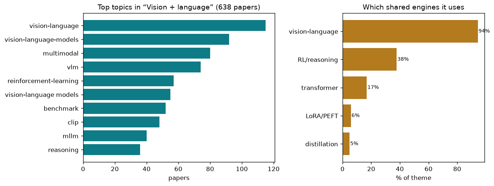

joining vision and language so systems can describe, answer, and reason
638 papers · joining vision and language so systems can describe, answer, and reason
Raw pixels alone are not meaning. A camera captures light bouncing off surfaces, compressed into numbers that carry no intrinsic relationship to what those surfaces represent: a chair, a danger, a question. Computer vision has spent decades learning to extract structure — edges, objects, spatial layout — but extraction is not understanding. The real task is two-way: machines must not only see what is there, but translate that sight into words that communicate thought, and then use language to refine what they look for in the image. This joining of vision and language is fundamentally harder than either alone.
Why is this hard? Because vision and language live in different worlds. A pixel is continuous; a word is discrete. An image compresses infinite viewpoints into one moment; a sentence unfolds in time. More fundamentally, what a human sees and what they say about it are not the same. A photo of a street corner contains millions of details—textures, angles, lighting—but a caption highlights only the ones that matter for the listener. The challenge is not to memorize which pixels go with which words, but to learn what matters: to recognize that a small patch of the image is a bird that the question asked about, or to know that the relationship between two objects answers a question about cause and effect.
Vision-language systems must solve three intertwined problems at once. First, they must see precisely: discriminate fine details (is this font serif or sans-serif?), ground language to pixels (this word refers to that region), and reason about what pixels mean in context. Second, they must speak faithfully: when they generate words about the image, those words must reflect what is actually there, not hallucinate plausible but false details. Third, they must think in both modalities: sometimes the structure of the image matters most (for spatial reasoning), sometimes the semantic labels matter (for classification), and sometimes language can guide the eye to look harder at parts that matter.
This problem matters because any system that helps humans extract insight from images—diagnosing disease in medical scans, finding defects in industrial inspection, understanding scenes in robotics—must do all three well. A vision-only system misses what language can tell it; a language-only system is divorced from the real world. Only when the two inform each other can machines approach what humans do reflexively: seeing what matters and saying what they see.
The field's baseline challenge is teaching systems to notice small differences. Same or Not: Enhancing Visual Perception in Vision-Language Models directly attacks this via contrastive pretraining and multi-scale feature comparison, while PosterIQ: A Design-Perspective Benchmark for Poster Understanding and Generation introduces the first systematic benchmark for professional design perception across 24 task types including font recognition. Hybrid Token Compression for Vision-Language Models and Blink: Dynamic Visual Token Resolution for Enhanced Multimodal Understanding take a complementary path: they compress or selectively expand visual tokens based on importance, preserving discriminative details while reducing noise. DiG: Differential Grounding for Enhancing Fine-Grained Perception in Multimodal Large Language Models enables fine-grained spatial comparison directly, while SPOT THE BALL: A Benchmark for Visual Social Inference adds another dimension—discriminating subtle social cues (gaze, pose) from naturalistic scenes. The core insight across these works is that better perception requires not just more parameters, but smarter selection of what to attend to and how to represent it.
Seeing and saying remain disconnected until language is anchored to specific image regions. Grounding Everything in Tokens for Multimodal Large Language Models is the first to enable token-level spatial grounding within the model's forward pass, while Pointing at Parts: Training-Free Few-Shot Grounding in Multimodal LLMs combines attention maps with visual correspondences for part-level pointing without retraining. M3Grounder: Mask-Based Multi-Span and Multi-Granular Grounding for Document Question Answering extends this to multi-span grounding for documents, and IVAAN: Instance-level Vision-Language Alignment via Attribute-Guided Text Prompts uses attribute guidance for fine-grained instance alignment. MVP: Multiple View Prediction Improves GUI Grounding and ORCA: Orchestrated Reasoning with Collaborative Agents for Document Visual Question Answering show that multi-view or multi-agent reasoning improves the precision of spatial linking. These works establish that grounding is not a post-hoc step but should be woven into the model's reasoning itself.
The second fundamental problem is hallucination: the model inventing details not in the image. Mitigating Multimodal Hallucinations via Gradient-based Self-Reflection uses gradient-based feedback to catch and correct hallucinations during inference, while First Logit Boosting: Visual Grounding Method to Mitigate Object Hallucination in Large Vision-Language Models offers a trivially simple fix: tracking the first token's logit to reduce confident false-positive predictions. Saliency-R1: Enforcing Interpretable and Faithful Vision-language Reasoning via Saliency-map Alignment uses differentiable saliency-alignment rewards inside RL, directly linking generated text to visible image regions. Reallocating Attention Across Layers to Reduce Multimodal Hallucination categorizes attention heads by whether they encode perception or reasoning, then rebalances them to prevent reasoning from overwhelming perception. VES-RFT: Rewarding Visual Evidence Sensitivity to Mitigate Hallucinations in Large Vision-Language Models defines an entropy-based reward measuring how much the output changes when the image is removed, then optimizes for high visual dependence. Tell Model Where to Look: Mitigating Hallucinations in MLLMs by Spatial Attention Guidance guides generation via region-aware constraints. These converge on a principle: hallucinations can be reduced by making the model's visual grounding explicit and rewarding it.
Not all images and questions require the same depth of thought. Seeing What Matters: A Training-Free Self-Guided Framework for Multimodal Detail Perception and Reasoning introduces a dual-branch visual selection (semantic plus structural) that mimics human scan-locate-focus, while See It, Say It, Sorted: An Iterative Training-Free Framework for Visually-Grounded Multimodal Reasoning in LVL uses a test-time textual evidence pool to ground token selection without retraining. When to Think and When to Look: Uncertainty-Guided Lookback systematically analyzes when internal reasoning helps versus hurts, then applies uncertainty guidance to decide when to revisit the image. ReAGEN: Adaptive Generation of Structured Chains-of-Thought for Efficient Multimodal Reasoning generates chains-of-thought adaptively based on task demands, while VisionLeaf: Entropy-Guided Leaf-First Reasoning for Efficient and Accurate Think-with-Image selectively branches rollout trees at high-entropy decision points rather than uniformly. QuietPrune: Query-Guided Early Token Pruning for Vision-Language Models injects textual guidance into token pruning itself. The theme here is efficiency through selectivity: compute hard where it matters, skip where it does not.
Language alone cannot solve spatial or computational problems. CodeV: Code with Images for Faithful Visual Reasoning via Tool-Aware Policy Optimization trains models to write code that tools can verify, using judge-VLM and outcome rewards to enforce faithfulness. CodeDance: A Dynamic Tool-integrated MLLM for Executable Visual Reasoning unifies code generation as the medium, with a difficulty-adaptive tool reward that learns when to invoke tools. Thinking with Programming Vision: Towards a Unified View for Thinking with Images uses code as a universal tool for handling cases where orientation matters or combinatorial reasoning is needed. From Intuition to Investigation: A Tool-Augmented Reasoning MLLM Framework for Generalizable Face Anti-Spoofing integrates external visual analysis tools for fine-grained detection. ACoT-VLA: Action Chain-of-Thought for Vision-Language-Action Models applies chain-of-thought to robotic control, and See, Think, Act: Teaching Multimodal Agents to Effectively Interact with Environments teaches integrated reasoning-then-action. The commonality is that vision-language systems must not be end points but stepping stones to concrete, verifiable actions.
Pretraining on image-text pairs does not guarantee the model reasons correctly. Uncertainty-Aware Exploratory Direct Preference Optimization for Multimodal Large Language Models is the first to integrate uncertainty estimation into DPO, enabling adaptive sampling of hard examples. Perceptual-Evidence Anchored Reinforced Learning for Multimodal Reasoning grounds RL in explicit evidence chains that can be verified. Understanding the Role of Hallucination in Reinforcement Post-Training of Multimodal Reasoning Models reveals that hallucinations sometimes help during RL training by enabling exploration, but must be managed. COPO: Causal-Oriented Policy Optimization for Hallucinations of MLLMs embeds causal sufficiency and necessity constraints into policy optimization to directly target hallucination roots. PhyCritic: Multimodal Critic Models for Physical AI trains specialized critics that grade physical reasoning quality through self-referential grounding. VOLD: Reasoning Transfer from LLMs to Vision-Language Models via On-Policy Distillation distills pure text reasoning into vision-language models via unified GRPO. These works show that end-to-end RL with vision-specific rewards outperforms unsupervised scaling.
Large models cannot be fully retrained for every domain; efficient adaptation is essential. FairLLaVA: Fairness-Aware Parameter-Efficient Fine-Tuning for Large Vision-Language Assistants adds fairness constraints during medical PEFT via alternating variational mutual information minimization. DPL: Decoupled Prototype Learning for Enhancing Robustness of Vision-Language Transformers applies prototype learning to improve robustness under adversarial and distribution shift. TANGO: Text-Anchored Guided Optimization for Robust Fine-tuning Vision-Language Models under Label Noise uses semantic text anchors as noise-robust reference points during noisy label learning. Concept-Aware Batch Sampling Improves Language-Image Pretraining adaptively constructs batches with concept diversity or frequency control. Bidirectional Multimodal Prompt Learning with Scale-Aware Training for Few-Shot Multi-Class applies bidirectional prompt learning with scale-aware training for few-shot settings. CHIPS: Efficient CLIP Adaptation via Curvature-aware Hybrid Influence-based Data Selection combines Hessian curvature with influence-based selection for principled efficient domain adaptation. These converge on the principle that adaptation quality depends as much on what data or parameters you select as on the algorithm.
Real-world systems rarely have just RGB images; they blend thermal, infrared, event cameras, text, audio. Beyond Duality: A Hybrid Framework of Leveraging Shared and Private Features for RGB-Event Object Detection disentangles shared and private features via frequency-domain coherence analysis. Thermal-Det: Language-Guided Cross-Modal Distillation for Open-Vocabulary Thermal Object Detection unifies synthetic and semantic supervision for thermal detection without annotations. Distribution-Aligned Multimodal Fusion for Robust Object Detection uses offline GMM reference distributions as normative constraints during training for robustness to modality corruption. VRCLIP: Multimodal Canonical Correlation Alignment for CLIP-Driven Vision-Radio Person Re-Identification applies canonical correlation to balance cross-modal fusion with modality-specific patterns. CineSRD: Leveraging Visual, Acoustic, and Linguistic Cues for Open-World Visual Media Speaker Diarization fuses three modalities (face, audio, language) in a training-free framework for speaker diarization. Beyond Global Similarity: Multi-Conditional Retrieval for Fine-Grained Cross-Modal Understanding enables fine-grained multi-condition retrieval. These show that systems with multiple sensors must learn which modality to trust when.
All downstream tasks rest on pretraining data and objectives. Multimodal Distribution Matching for Vision-Language Dataset Distillation applies distribution matching for efficient distillation, while Concept-Aware Batch Sampling Improves Language-Image Pretraining uses concept-aware batch sampling to improve pretraining efficiency. HoneyBee: Data Recipes for Vision-Language Reasoners shows that a single shared caption per image can prefix multiple reasoning chains, reducing data needs. Unlocking Strong Supervision: A Data-Centric Study of General-Purpose Audio Pre-Training Methods builds a unified tag system of 3k tags for audio via LLM-aided parsing. WebChain: A Large-Scale Human-Annotated Dataset of Real-World Web Interaction Traces provides the first large-scale dataset of real web interactions with vision-language annotations. Med-CMR: A Fine-Grained Benchmark Integrating Visual Evidence and Clinical Logic for Medical Complex Multimodal Reasoning decomposes medical reasoning into seven complexity dimensions. These acknowledge that model capability is bottlenecked by data quality and coverage, not just architecture.
Fundamental problems have moved from "can the model ground language to regions?" (essentially solved) to "how does it choose what to ground, and does it reason faithfully about it?" Token-level spatial grounding is now standard in many systems. Fine-grained visual discrimination has improved dramatically through better pretraining objectives and selective attention. Hallucination, while not eliminated, is increasingly recognized as stemming from imbalanced reasoning and perception, and targeted mitigation strategies show measurable gains. What remains genuinely open is: how do systems decide what to reason about in the first place? How do they know when language should constrain vision versus when vision should constrain language? Can they learn to reason about physical causality or abstract relationships at human level? Real-world robustness—degradation under noisy sensors, out-of-distribution images, or adversarial input—is far from solved. And the efficiency frontier remains contested: systems can be fast or faithful, but rarely both, especially on complex reasoning tasks. The field is converging on a principle: vision-language systems succeed when they make their visual grounding explicit and measurable, and when they are trained end-to-end with rewards that penalize hallucination and reward evidence-based reasoning.
The theme above is broad. Here are the distinct sub-problems inside it — each in plain terms: the big-picture problem, then how the field tackles it, then representative papers.
The problem. A vision-language model can produce fluent text that has almost nothing to do with the pixels in front of it, because language patterns learned during training are often a stronger predictor of the next word than the image is. When the model leans on those word-habits instead of the picture, it makes confident claims about objects, counts, or details that aren't there. This is the most basic failure of the whole enterprise: if the words aren't anchored to what's actually visible, everything built on top is unreliable.
The approaches. One family diagnoses the problem inside the model, finding which attention heads, layers, or tokens over-attend to language priors versus visual evidence, then re-weighting or steering them at inference with no retraining. A second family adjusts the decoding step itself, contrasting the model's output with and without the image, or boosting the first grounded token, to subtract out the language-only guess. A third family trains the model to care about pixels by rewarding answers that change when the image changes, so visual sensitivity becomes an explicit objective rather than a hope.
▸ Reading the wiring to catch a lie
Problem. When a model states something not in the picture, the tell is often already inside its own attention and hidden signals before a word is spoken. The question is whether hallucination has a readable signature. Approach. These papers locate specific attention heads, layers, tokens, or early logits whose behavior predicts a fabricated claim, then flag or suppress it, all without retraining.
The fundamental point. Hallucination is not random noise but leaves a mechanical fingerprint inside the network that can be read off directly.
KVSmooth: Mitigating Hallucination in Multi-modal La… · PAS: Prelim Attention Score for Detecting Object Hal… · Beyond the Global Scores: Fine-Grained Token Groundi… · Same Attention, Different Truths: Put Logit-Lens ove… · Locate-then-Sparsify: Attribution Guided Sparse Stra…
▸ Fixing the guess at the moment of speaking
Problem. Even a well-trained model tips toward its language habits at the exact step where it picks the next word, so the correction has to happen during decoding rather than in training. Approach. They rebalance the output at generation time, contrasting predictions with the image against without it, boosting the first grounded token, or adding history-aware residual guidance.
The fundamental point. The language-only guess can be arithmetically subtracted out at decode time, so grounding is a decoding operation, not only a training goal.
Residual Decoding: Mitigating Hallucinations in Larg… · First Logit Boosting: Visual Grounding Method to Mit… · Prefill-Time Intervention for Mitigating Hallucinati… · Cross-Modal Attention Calibration for LVLM Hallucina… · One Token, Two Fates: A Unified Framework via Vision…
▸ Steering attention back onto the pixels
Problem. The model has the visual evidence available but its attention pools onto the wrong tokens or onto language context, so the fix is to redirect where it looks. Approach. These methods reallocate attention across layers, guide it toward the relevant image region, or self-reflect via gradients to pull focus back onto visual evidence.
The fundamental point. Grounding failure is largely a misallocation of attention that can be corrected by re-pointing it, no new knowledge required.
Mitigating Multimodal Hallucinations via Gradient-ba… · Reallocating Attention Across Layers to Reduce Multi… · Tell Model Where to Look: Mitigating Hallucinations …
▸ Training the model to care that the image changed
Problem. Diagnostic and decoding fixes are patches; the deeper cure is making visual sensitivity an explicit thing the model is rewarded for during training. Approach. They define a reward tied to how much the answer shifts when the image is present versus absent, and optimize the model to be sensitive to that difference.
The fundamental point. Visual faithfulness can be turned into a measurable, differentiable objective rather than left as an unenforced hope.
The problem. Understanding a scene at the level of 'there's a dog somewhere' is easy; saying precisely which pixels are the dog, which part is its paw, or where a tiny object sits in a cluttered image is much harder. Language is coarse and continuous, images are a fine grid, and connecting a phrase to an exact region or mask forces the model to bridge two very different kinds of representation. Getting this right is what lets a system answer 'where' questions, segment on command, and give evidence for what it claims.
The approaches. Some methods teach the language model to emit spatial coordinates or a single special segmentation token directly, folding localization into ordinary text generation. Others decompose a text query into attributes or use the model's own attention maps, sometimes fused with self-supervised visual correspondences, to find regions without extra training. A parallel line reframes many perception tasks as one unified 'predict the next point' problem, or separates the reasoning that decides what to find from the module that draws the box.
▸ Teaching the language stream to speak coordinates
Problem. A text model outputs words, but 'where' questions need exact locations, so the model must learn to emit spatial positions as part of ordinary generation. Approach. These fold localization into the token stream, emitting coordinates or a compact special token, and even unify many perception tasks as predicting the next point.
The fundamental point. Spatial location can live in the same vocabulary as words, so perception and language generation are one prediction problem.
Grounding Everything in Tokens for Multimodal Large … · Detect Anything via Next Point Prediction · Enhancing Part-Level Point Grounding for Any Open-So… · Breaking the Regional Perception Bottleneck of Multi…
▸ One token for a whole mask
Problem. Pixel-precise segmentation usually needs a heavy specialist decoder bolted onto the language model, which is clumsy and slow. Approach. They compress an arbitrary mask into one or two special tokens the language model emits directly, or predict all masks in parallel outside the autoregressive text loop.
The fundamental point. A dense pixel mask can be represented by a tiny handful of tokens, collapsing segmentation into the language model's native output.
Rethinking MLLM Itself as a Segmenter with a Single … · SAMTok: Representing Any Mask with Two Words · Better, Stronger, Faster: Tackling the Trilemma in M…
▸ Grounding for free from the model's own signals
Problem. Fine-grained pointing, especially at object parts or tiny objects, usually demands extra training data and modules that most open models lack. Approach. They reuse the model's own attention maps fused with self-supervised visual correspondences, or decompose a query into attributes, to localize without any new training.
The fundamental point. The information needed to point precisely is already latent in a pretrained model's attention and can be extracted without retraining.
Pointing at Parts: Training-Free Few-Shot Grounding … · DiG: Differential Grounding for Enhancing Fine-Grain… · Small Object, Great Challenge: A Benchmark for Small…
▸ Separating deciding-what from drawing-where
Problem. Answering what to look for and drawing the exact region are different jobs. When one text-generating model does both, it may understand the request but still place the box poorly. Approach. These papers split the system: one part decides the target from language and context, while another specialized part marks the pixels or region. The split lets each module optimize the quantity it is good at.
The fundamental point. The principle is factorization: separate semantic choice from geometric localization so reasoning errors and drawing errors do not contaminate each other.
VGent: Visual Grounding via Modular Design for Disen… · GroundingME: Exposing the Visual Grounding Gap in ML… · Discriminative Perception via Anchored Description f… · Visual Grounding for Object Questions
The problem. Hard visual questions - geometry, charts, multi-image puzzles, spatial layout - need more than a single glance; they need a chain of intermediate steps. But naively borrowing text-style step-by-step reasoning can backfire: the model thinks so hard in words that it drifts away from the image, or long reasoning chains accumulate errors and hallucinate. The core tension is getting the benefits of deliberation without losing contact with the visual evidence that the reasoning is supposed to be about.
The approaches. One direction keeps reasoning visually grounded by tying each step to a specific region, drawing intermediate sketches or images, or reasoning in a latent visual space instead of only in words. Another studies when to think versus when to just look, letting the model decide adaptively rather than always producing a long chain, and finding that shorter well-grounded reasoning often generalizes better. A third builds structured or recurrent reasoning traces and self-checks that catch a wrong turn before it snowballs.
▸ Keeping every reasoning step tied to the image
Problem. Borrowing text-style chains lets the model reason in words and drift away from the picture the reasoning is about. Approach. They anchor each step to a specific region or coordinate, draw intermediate sketches, or reason in a latent visual space rather than only in language.
The fundamental point. Visual reasoning stays honest only when each intermediate step is physically pinned to evidence in the image.
Grounded Chain-of-Thought for Multimodal Large Langu… · When Visualizing is the First Step to Reasoning: MIR… · Monet: Reasoning in Latent Visual Space Beyond Image… · PointThinker: Point-Incentivized Parallel Thinking f… · See Less, See Right: Bi-directional Perceptual Shapi…
▸ Deciding when to think versus just look
Problem. Always producing a long chain wastes effort and can even hurt, because deep deliberation degrades perception and short grounded reasoning often generalizes better. Approach. They study when thinking helps versus hurts and give the model an adaptive, uncertainty-guided switch between reasoning hard and just answering.
The fundamental point. More reasoning is not monotonically better for vision; the skill is knowing when to stop and look.
When to Think and When to Look: Uncertainty-Guided L… · Deeper Thought, Weaker Aim: Understanding and Mitiga… · Revisiting the Necessity of Lengthy Chain-of-Thought… · Think Visually, Reason Textually: Vision-Language Sy…
▸ Self-checking the chain before it snowballs
Problem. Long reasoning chains accumulate errors, and a single wrong turn early can hallucinate the whole conclusion. Approach. They build structured or contrastive-reflective traces and inject low-level or rationale-aware signals so a wrong step is caught and corrected mid-reasoning.
The fundamental point. Reasoning reliability comes from catching a wrong turn as it happens, not from thinking longer.
CARE: What Fails - Contrastive Anchored-REflection f… · Rationale-Enhanced Decoding for Multi-modal Chain-of… · See Further, Think Deeper: Advancing VLMs' Reasoning… · EgoMind: Activating Spatial Cognition through Lingui…
The problem. You can teach a model to imitate correct answers, but that doesn't teach it to reason well - it just memorizes outputs. Reinforcement learning with a verifiable reward promises to instead reward the process of getting there, but for vision-language models the reward signal is noisy, sparse, and hard to define, and standard recipes borrowed from text often destabilize or fail to improve perception. The problem is designing training signals that actually push the model toward looking carefully and reasoning correctly, not toward gaming the reward.
The approaches. Much work reshapes the popular GRPO recipe for the multimodal setting: separating perception-oriented from reasoning-oriented rewards, assigning credit at the level of individual steps or points rather than whole answers, and stabilizing training when only one rollout is affordable. Others build process reward models that flag exactly which step went wrong, or transfer reasoning skill from a strong text-only teacher into a vision model. A further group ties the reward to visual faithfulness - saliency alignment, evidence sensitivity, causal sufficiency - so that reasoning stays honest about the picture.
▸ Rebuilding the RL recipe for perception
Problem. RL recipes borrowed from text destabilize on vision-language models and fail to improve looking, because perception and reasoning need different reward treatment. Approach. They separate perception-oriented from reasoning-oriented rewards and stabilize training even when only a single rollout is affordable.
The fundamental point. Perception and reasoning are distinct skills that require separately shaped reward signals, not one blended text-style reward.
Dr. Seg: Revisiting GRPO Training for Visual Large L… · PDCR: Perception-Decomposed Confidence Reward for Vi… · Stable and Efficient Single-Rollout RL for Multimoda… · R-4B: Incentivizing General-Purpose Auto-Thinking in…
▸ Giving credit to the exact step or point
Problem. Rewarding only the final answer tells the model nothing about which step went wrong, so it cannot learn where its reasoning broke. Approach. They build process reward models and point-level or step-level credit assignment that flag precisely which intermediate move was faulty.
The fundamental point. Reasoning improves fastest when reward is assigned at the granularity of the mistake, not the whole answer.
SketchVL: Policy Optimization via Fine-Grained Credi… · Improving Vision-language Models with Perception-cen… · PointThinker: Point-Incentivized Parallel Thinking f… · Beyond Multiple Choice: Verifiable OpenQA for Robust…
▸ Rewarding faithfulness to the picture
Problem. A reward that only checks correctness lets the model reach the right answer for wrong, ungrounded reasons. Approach. They tie the reward to visual faithfulness itself: saliency alignment, evidence sensitivity, and causal sufficiency of the visual input.
The fundamental point. Correct answers and honest looking are different targets, and only rewarding the latter prevents reward-gaming.
Saliency-R1: Enforcing Interpretable and Faithful Vi… · Perceptual-Evidence Anchored Reinforced Learning for… · COPO: Causal-Oriented Policy Optimization for Halluc… · VES-RFT: Rewarding Visual Evidence Sensitivity to Mi…
▸ Borrowing reasoning from a text teacher and cheaper data
Problem. Strong reasoning already exists in text-only models and in curated data, so acquiring it from scratch via RL is wasteful. Approach. They distill reasoning skill from a text teacher into a vision student on-policy, and engineer data recipes that make each reasoning chain cheaper to produce.
The fundamental point. Multimodal reasoning can be transferred from existing text competence rather than rediscovered through reward alone.
VOLD: Reasoning Transfer from LLMs to Vision-Languag… · HoneyBee: Data Recipes for Vision-Language Reasoners
The problem. Images turn into hundreds or thousands of tokens once fed to a language model, and attention cost grows with the square of that count, so high-resolution or multi-image inputs become slow and memory-hungry. Yet most of those tokens are redundant - background, repeated texture, regions irrelevant to the question. The challenge is cutting the visual token budget dramatically without throwing away the few tokens that actually carry the answer, which is hard because importance depends on the layer, the query, and even the moment during decoding.
The approaches. Pruning methods score tokens by saliency, coverage, information flow, or how they transition across layers, then drop or merge the losers - some fixing the set once, others re-selecting dynamically per layer or expanding-then-pruning within a single pass. Object-centric approaches collapse each distinct object into one compact token to keep meaning while shrinking count. A separate track compresses the key-value cache during decoding via low-rank structure or frequency-domain analysis, and quantization work shrinks the model weights themselves for constrained hardware.
▸ Scoring and dropping the useless tokens
Problem. Most image tokens are redundant background, but importance depends on saliency, coverage, and information flow, so naive dropping loses the few tokens carrying the answer. Approach. They score tokens by information-flow, saliency-plus-coverage, or head importance and prune or fuse the losers, sometimes transferring their information into retained tokens first.
The fundamental point. Token importance is a measurable, near-optimizable quantity, letting most visual tokens be discarded without losing the answer.
IF-Prune: Information-Flow Guided Token Pruning for … · CoIn: Coverage and Informativeness-Guided Token Redu… · SCoRe: Salience-Coverage Reduction for Vision Token … · HAWK: Head Importance-Aware Visual Token Pruning in … · Hi-Lo Prune: Look at What You'll Lose before Pruning…
▸ Re-deciding which tokens matter mid-pass
Problem. A token's importance shifts by layer, by query, and even moment-to-moment during decoding, so fixing the kept set once is suboptimal. Approach. They re-select tokens dynamically per layer or per turn, expanding salient tokens then pruning them within a single forward pass as attention shifts.
The fundamental point. Visual relevance is dynamic across depth and time, so pruning must be adaptive rather than a one-shot decision.
Blink: Dynamic Visual Token Resolution for Enhanced … · VISion On Request: Enhanced VLLM efficiency with spa… · Rethinking Token Reduction for Large Vision-Language… · TransPrune: Token Transition Pruning for Efficient L…
▸ Compressing meaning, not just counting
Problem. Blindly cutting tokens can fracture object semantics, and separate hardware constraints demand shrinking the model and its cache too. Approach. They collapse each object into one compact semantic token, or compress the key-value cache and quantize weights, and adaptively prune less-sensitive modalities.
The fundamental point. Efficiency can preserve meaning by compressing at the level of objects and cache structure rather than raw token count.
CORE: Compact Object-centric REpresentations as a Ne… · EvoComp: Learning Visual Token Compression for Multi… · VLM-Pruner: Buffering for Spatial Sparsity in an Eff… · Mostly Text, Smart Visuals: Asymmetric Text-Visual P… · MoDES: Accelerating Mixture-of-Experts Multimodal La…
The problem. Once a model can see and read a screen, the natural next step is to have it act - operate a phone or web interface, call external tools, crop and zoom to inspect detail, or run code to compute an answer. But acting introduces problems that pure question-answering doesn't have: the model must decide when to invoke a tool, ground its clicks to exact interface elements, recover from mistakes over many steps, and not accumulate errors across a long task. Turning a passive describer into a reliable actor is a distinct and difficult jump.
The approaches. GUI-agent work builds benchmarks and grounding methods for locating and acting on interface elements across platforms, often with slow-fast control that only invokes heavy perception when needed. Tool-augmented reasoning teaches the model to write and run code, search, or crop as part of thinking, using rewards that learn when a tool is worth calling. Web and embodied agents add memory, self-exploration, and multi-agent collaboration to handle long-horizon tasks and scale up the training environments they learn in.
▸ Grounding clicks to interface elements
Problem. Acting on a screen requires pointing to the exact button or field, and models hallucinate interface locations across platforms. Approach. They build cross-platform benchmarks and training-free or slow-fast grounding methods that locate and act on GUI elements, invoking heavy perception only when needed.
The fundamental point. Reliable action rests on precise element grounding, a distinct and measurable failure mode separate from understanding.
GUI-CEval: A Hierarchical and Comprehensive Chinese … · Evaluating and Easing Hallucinations for GUI Groundi… · MMBench-GUI: A Unified Hierarchical Evaluation Frame… · iSHIFT: Lightweight Slow-Fast GUI Agent with Adaptiv… · DRS-GUI: Dynamic Region Search for Training-Free GUI…
▸ Learning when a tool is worth calling
Problem. An acting model can crop, zoom, search, or run code, but calling tools indiscriminately wastes effort and adds error. Approach. They train with rewards that teach the model to write and run code, search, or crop as part of thinking and to invoke tools only when they help.
The fundamental point. Knowing when not to use a tool is itself a learnable policy, not a fixed heuristic.
CodeV: Code with Images for Faithful Visual Reasonin… · CodeDance: A Dynamic Tool-integrated MLLM for Execut… · SenseSearch: Empowering Vision-Language Models with … · AdaptVision: Efficient Vision-Language Models via Ad…
▸ Surviving long tasks with memory and experience
Problem. Multi-step tasks let small errors accumulate, so agents need to remember context, recover, and scale up the environments they train in. Approach. They add cross-modal focusing memory, self-explanatory and see-think-act experience loops, and large procedural training environments for long-horizon web tasks.
The fundamental point. Long-horizon competence comes from managed memory and self-generated experience, not from a stronger single-step policy.
ReFAct: Empowering Multimodal Web Agents with Visual… · WebGym: Scaling Training Environments for Long-Horiz… · GUI-SAGE: Enhancing GUI Automation with Self-Explana… · See, Think, Act: Teaching Multimodal Agents to Effec… · GUIDE: A Benchmark for Understanding and Assisting U…
The problem. A vision-language model needs pictures and words to meet in a common mental map: the photo of a red bus should land near the words red bus, and farther from blue bicycle. The hard part is that pictures carry texture, shape, location, and background all at once, while words name only selected pieces. If the common map is warped, the model may match the broad topic while missing the exact attribute, relation, or region the user cares about.
The approaches. These papers reshape the map. Some make better comparisons between matching and non-matching pairs so distance means semantic closeness rather than popularity. Some align smaller pieces such as regions, attributes, and phrases instead of only whole images and whole captions. Others retune the map cheaply for a new domain. The core math idea is meaningful distance: put things close when they should support the same answer, and keep them apart when confusing them would change the meaning.
▸ Rethinking the contrastive objective
Problem. Standard contrastive pretraining matches whole images to whole captions and mishandles negatives, leaving the embedding space blunt and non-compositional. Approach. They redesign the objective with false-negative-aware and concept-aware sampling, powerset and higher-order alignment, and synonym-robust captions.
The fundamental point. The geometry of the shared space is set by the pretraining objective's treatment of negatives and structure, and is directly reshapeable.
FALCON: False-Negative Aware Learning of Contrastive… · Concept-Aware Batch Sampling Improves Language-Image… · PowerCLIP: Powerset Alignment for Contrastive Pre-Tr… · The More, The Merrier: Contrastive Fusion for Higher… · No Hard Negatives Required: Concept Centric Learning…
▸ Diagnosing and closing the modality gap
Problem. Images and text cluster in separate regions of the supposedly shared space, and it is unclear whether this gap is a defect or a useful feature. Approach. They analyze the modality gap's link to robustness, decompose projectors to find well-aligned subspaces, and prove formal equivalences that ground alignment theory.
The fundamental point. The persistent image-text separation is a characterizable geometric property with real consequences, not an incidental artifact.
Is the Modality Gap a Bug or a Feature? A Robustness… · IsoCLIP: Decomposing CLIP Projectors for Efficient I… · A Causal Marriage between VLM and IRM from Understan… · See What I Mean: Aligning Vision and Language Repres…
▸ Aligning at region and attribute granularity
Problem. Whole-image-to-caption matching misses fine attributes, regions, and structure that downstream tasks depend on. Approach. They align at multiple granularities, text-conditioned across image, region, and attribute levels, and inject structural cues on both the visual and language sides.
The fundamental point. A single global similarity is too coarse; faithful alignment must operate at the granularity of the parts being described.
b-CLIP: Text-Conditioned Contrastive Learning for Mu… · StructXLIP: Enhancing Vision-language Models with Mu… · SynCLIP: Synonym-Coherent Language-Image Pretraining… · Beyond Global Similarity: Multi-Conditional Retrieva…
The problem. A model's built-in knowledge is fixed and finite, so questions about specific facts, rare entities, or a private document collection need the system to fetch outside information and reason over it. In the multimodal case both the query and the knowledge can be pictures, text, or a mix, which makes finding the relevant item and fusing it with the visual question genuinely harder than text-only retrieval. Composed image search - 'this image but with this change' - adds the twist of blending a reference image with a text instruction into one intent.
The approaches. Retrieval-augmented generation pipelines fetch passages, images, or knowledge-graph nodes, filter them, and steer the model to ground its answer in the retrieved evidence, some adding multi-hop or cognitive reasoning over what was fetched. Composed-image-retrieval methods learn to combine a reference image and a modifying phrase, increasingly demanding strict instance-level or multi-condition consistency rather than loose semantic matching. Embedding models are trained specifically for multimodal, multi-turn, or omni-modality retrieval so the fetch step itself is more faithful.
▸ Fetching and grounding external knowledge
Problem. A model's built-in knowledge is fixed, so questions about specific facts or private collections need outside evidence fetched and fused with the visual question. Approach. They build multimodal RAG pipelines that fetch passages, images, or graph nodes, filter them, reason over them, and resolve conflicts with the image.
The fundamental point. A finite model can answer open-ended factual questions only by making retrieval a first-class, reasoned step.
MR-RAG: Multimodal Relevance-Aware Retrieval-Augment… · ReAG: Reasoning-Augmented Generation for Knowledge-b… · CC-VQA: Conflict- and Correlation-Aware Method for M… · CogniVerse: Revolutionizing Multi-Modal Retrieval-Au… · M4-RAG: A Massive-Scale Multilingual Multi-Cultural …
▸ Combining a reference image with an edit
Problem. Composed image search means 'this image but changed', which requires blending a picture and a text instruction into one intent rather than loose semantic matching. Approach. They learn referential, instance-level or multi-condition consistency, using semantic transition vectors and transport distances, some training-free.
The fundamental point. Search intent can be a compositional blend of an image and an edit, demanding strict consistency rather than fuzzy similarity.
Air-Know: Arbiter-Calibrated Knowledge-Internalizing… · Beyond Semantic Search: Towards Referential Anchorin… · STiTch: Semantic Transition and Transportation in Co… · PinPoint: Evaluation of Composed Image Retrieval wit…
▸ Training the fetch step to be faithful
Problem. Retrieval quality is capped by the embedding model, especially for multi-turn, multi-condition, or omni-modal queries. Approach. They train embedding models specifically for multi-turn dialogue and fine-grained multi-condition retrieval, and recalibrate retrievers using reasoning signals.
The fundamental point. The faithfulness of the whole system is bounded by the retriever, so the fetch step itself must be purpose-trained.
MuCo: Multi-turn Contrastive Learning for Multimodal… · Beyond Global Similarity: Multi-Conditional Retrieva… · ReMatch: Boosting Representation through Matching fo… · ReCALL: Recalibrating Capability Degradation for MLL… · Camouflage-aware Image-Text Retrieval via Expert Col…
The problem. The hardest test of joining vision and language is closing the loop with the physical world: a robot must read an instruction, perceive its surroundings, and produce motor actions that succeed under real-world variation. Language and images are discrete and abstract, while actions are continuous, contact-rich, and unforgiving of small errors, and models trained on internet data have no built-in sense of physics, force, or their own body. Bridging perception, semantic reasoning, and low-level control - while generalizing to new objects and scenes - is the central difficulty.
The approaches. Vision-language-action models attach an action decoder to a vision-language backbone and add missing signals: tactile and force feedback, 3D affordance fields, chain-of-thought or visual-foresight planning, and skill-aware action tokenizers. A large effort targets the generalization and efficiency of these models - decomposing failure modes, merging skills, quantizing for deployment, and self-referential rewards that avoid hand-engineered supervision. Related benchmarks and grounding work connect language to graspable objects, obstruction reasoning, and object-interaction spatial understanding for manipulation.
▸ Adding the missing physical senses
Problem. Models trained on internet data have no sense of force, touch, or 3D affordance, yet contact-rich manipulation is unforgiving of that blindness. Approach. They inject tactile and force feedback, 3D affordance fields, and visual-foresight or chain-of-thought planning into the action decoder.
The fundamental point. Web-trained perception lacks physics, and reliable manipulation requires feeding back the force and contact signals the internet never contained.
AT-VLA: Adaptive Tactile Injection for Enhanced Feed… · ForceVLA2: Unleashing Hybrid Force-Position Control … · Affordance Field Intervention: Enabling VLAs to Esca… · Unifying Perception and Action: A Hybrid-Modality Pi…
▸ Reasoning in a latent action space
Problem. Actions are continuous and low-level while language is abstract, so the model needs an intermediate representation that reasons about behavior before committing to motor commands. Approach. They introduce explicit or latent action chains, cognitive latent reasoning, and language-grounded action primitives that bridge semantic intent to control.
The fundamental point. A learned intermediate action representation is the bridge that lets abstract instructions become continuous control.
ACoT-VLA: Action Chain-of-Thought for Vision-Languag… · SemanticVLA: Towards Semantic Reasoning over Action … · ColaVLA: Leveraging Cognitive Latent Reasoning for H… · Language-Grounded Decoupled Action Representation fo… · MM-ACT: Learn from Multimodal Parallel Generation to…
▸ Generalizing and shrinking across skills and bodies
Problem. VLA models are heavy and brittle, failing to transfer across new skills, hands, or hardware and too large to deploy. Approach. They merge per-skill models, compose atomic skills, share embodiment-invariant latent actions across hands, and build lightweight deployable backbones with self-referential rewards.
The fundamental point. Generalist, deployable robot policies come from composable and body-invariant representations rather than one monolithic model.
MergeVLA: Cross-Skill Model Merging Toward a General… · AtomicVLA: Unlocking the Potential of Atomic Skill L… · Cross-Hand Latent Representation for Vision-Language… · Evo-1: Lightweight Vision-Language-Action Model with… · SRPO: Self-Referential Policy Optimization for Visio…
The problem. Answering 'is the cup left of the plate,' following a route instruction, or moving through a building all require a model to build a mental map from flat images and reason about geometry, viewpoint, and distance. Vision-language models are notoriously weak here because they often lean on language priors ('cups are usually on tables') instead of actually reading the spatial layout, and single 2D frames discard the 3D structure the question depends on. Genuine spatial competence is what separates a caption generator from an agent that can act in the world.
The approaches. One line probes and benchmarks the gap - open-world spatial reasoning, hands, multi-view transformations, illusions - to expose where models substitute memory for perception, then trains targeted fixes. Navigation work equips agents with self-aware step-by-step reasoning, fast-slow deliberation, compressed long-term memory, and history-plus-future prediction to move through unseen environments. Others inject explicit spatial structure - scene graphs, coordinates, linguistic chain-of-thought over multiple frames, even spatial audio - to ground reasoning in real geometry.
▸ Exposing where spatial reasoning breaks
Problem. Models lean on language priors like 'cups are on tables' instead of reading actual geometry, and averaged scores hide exactly where this substitution happens. Approach. They build targeted benchmarks for open-world spatial reasoning, hands, and multi-view transformations that separate genuine perception from memorized priors.
The fundamental point. Apparent spatial competence often masks memory substituting for perception, and only controlled probes reveal the gap.
From Indoor to Open World: Revealing the Spatial Rea… · HandVQA: Diagnosing and Improving Fine-Grained Spati… · SpatiaLQA: A Benchmark for Evaluating Spatial Logica… · STAR-R1: Multi-View Spatial TrAnsformation Reasoning…
▸ Self-aware, deliberate navigation
Problem. Moving through an unseen building requires knowing when to stop and reason at key decision points rather than reacting blindly at every step. Approach. They add sparsely-triggered self-aware reasoning, fast-slow deliberation, and generalist instruction-following navigation frameworks.
The fundamental point. Good navigation is a matter of deliberating at the right moments, not reasoning constantly or reacting reflexively.
AwareVLN: Reasoning with Self-awareness for Vision-L… · Towards Open Environments and Instructions: General … · OctoNav: Towards Generalist Embodied Navigation · Thinking in 360deg: Humanoid Visual Search in the Wi…
▸ Remembering the past and imagining the future
Problem. Long trajectories overflow the context window, and an agent that only sees the present cannot anticipate where the route leads. Approach. They compress long visual memory into a fixed budget, and combine historical experience with predicted future landmarks for zero-shot navigation.
The fundamental point. Spatial competence over long horizons needs compressed memory of the past joined to prediction of the future.
AstraNav: Memory Contexts Compression for Long Memor… · HISTORY TO FUTURE: Evolving Agent with Experience an… · Recurrent Reasoning with Vision-Language Models for
▸ Injecting explicit spatial structure
Problem. A flat 2D frame discards the 3D geometry the question depends on, so reasoning purely in words over pixels stays ungrounded. Approach. They inject scene graphs, coordinates, linguistic chains over multiple frames, and even spatial audio to give reasoning real geometric scaffolding.
The fundamental point. Grounded spatial reasoning needs explicit geometric structure supplied to the model, not inferred from flat pixels alone.
EgoMind: Activating Spatial Cognition through Lingui… · Grounded Chain-of-Thought for Multimodal Large Langu… · Hear you are: Teaching LLMs Spatial Reasoning with V…
The problem. A huge share of human information lives not in natural photos but in structured visuals - tables, charts, forms, scientific figures, historical documents, and app interfaces - where meaning comes from precise text, layout, and the relationships between elements. A model that describes a beach fails here because it must read exact numbers, follow a table's grid, or trace a chart's data points without misreading a single value. The difficulty is combining accurate character recognition with structural understanding and reasoning over dense, information-packed layouts.
The approaches. Chart and table methods add visual-focus mechanisms, phrase-grounded attention, and step-level reasoning so the model attaches each answer to the exact cell or data point, backed by large synthetic datasets. Document approaches decompose long or complex pages into coarse-to-fine or multi-agent workflows that locate evidence before answering, and generate structured output like JSON or code. Specialized and lightweight OCR-centric models show careful data curation can rival giant models on reading tasks, while benchmarks stress-test reasoning robustness on charts and structured outputs.
▸ Attaching each answer to the exact cell or point
Problem. Charts and tables encode meaning in precise values and grid relationships, so misreading a single data point or cell breaks the answer. Approach. They add visual-focus and phrase-grounded attention plus step-level reasoning that ties each answer to a specific data point, backed by large synthetic datasets.
The fundamental point. Reading structured visuals is a grounding problem: correctness requires anchoring each claim to the exact element it came from.
Chart-FR1: Visual Focus-Driven Fine-Grained Reasonin… · ChartNet: A Million-Scale High-Quality Multimodal Da… · TDATR: Improving End-to-End Table Recognition via Ta… · SketchVL: Policy Optimization via Fine-Grained Credi…
▸ Decomposing dense pages into evidence-first workflows
Problem. Long, information-packed documents cannot be read in one glance, so the model must locate evidence before it dares to answer. Approach. They break pages into coarse-to-fine or multi-agent workflows that find and cite evidence first, generating structured output and interleaved visual citations.
The fundamental point. Reliable long-document reading is a locate-then-answer process, not a single-pass description.
Visual Document Understanding and Reasoning: A Multi… · Boosting Document Parsing Efficiency and Performance… · ORCA: Orchestrated Reasoning with Collaborative Agen… · DocSeeker: Structured Visual Reasoning with Evidence… · VinQA: Visual Elements Interleaved Long-form Answer …
▸ Small, data-curated readers rivaling giants
Problem. Accurate character recognition and structured output are assumed to need giant models, which is costly and often uncalibrated. Approach. They show careful data curation, multi-VLM consensus self-verification, and structured-output benchmarks let tiny specialist OCR models match billion-parameter ones.
The fundamental point. On reading tasks, data quality and verification substitute for scale, so specialist competence need not be large.
PP-OCRv5: A Specialized 5M-Parameter Model Rivaling … · Consensus Entropy: Harnessing Multi-VLM Agreement fo… · SO-Bench: A Structural Output Evaluation of Multimod… · ChartR: Evaluating Reasoning Accuracy and Robustness…
The problem. Progress is only as trustworthy as the yardsticks used to measure it, and vision-language systems fail in subtle, uneven ways - fine on averages but blind to a specific ability, a rare case, or an adversarial arrangement. Averaged accuracy scores hide these gaps, and many popular tests can be passed by leaning on language priors without truly seeing. Building benchmarks that isolate one capability at a time, resist contamination, and reveal why a model fails is a research problem in its own right.
The approaches. One family disentangles atomic abilities - counting, fine-grained discrimination, visual overload, discrepancy sensitivity, object interaction - so a failure can be attributed to a specific skill rather than a vague compound score. Another builds contamination-resistant and controlled testbeds, such as dense paintings, illusions, culture-mixing, or parametrically generated images, to probe perception versus memory. A third targets whole new task formulations - social inference, abstention, strategic multi-agent play, structured output - and evaluates the reasoning process, not just the final answer.
▸ Isolating one atomic ability at a time
Problem. Averaged accuracy hides that a model may be blind to a single skill like counting or fine discrimination while scoring fine overall. Approach. They disentangle atomic abilities, counting, discrepancy sensitivity, object interaction, so a failure attributes to a specific capability, not a vague compound score.
The fundamental point. A model's competence is a vector of separable skills, and only per-skill probes reveal the specific blind spot.
AVA-Bench: Atomic Visual Ability Benchmark for Visio… · UNICBench: UNIfied Counting Benchmark for MLLM · OddGridBench: Exposing the Lack of Fine-Grained Visu… · CrossHOI-Bench: A Unified Benchmark for HOI Evaluati… · VisRes Bench: On Evaluating the Visual Reasoning Cap…
▸ Controlled testbeds that block memorization
Problem. Many popular tests can be passed by leaning on language priors, and contamination lets models recall answers rather than perceive. Approach. They build contamination-resistant, controlled inputs, dense paintings, classic illusions, culture-mixing, parametric generation, to force perception over recall.
The fundamental point. Only inputs engineered to defeat memory can distinguish genuine perception from retrieved priors.
VisualOverload: Probing Visual Understanding of VLMs… · Do VLMs Perceive or Recall? Probing Visual Perceptio… · World in a Frame: Understanding Culture Mixing as a … · ORIC: Benchmarking Object Recognition under Contextu…
▸ Whole new task formulations to evaluate
Problem. Existing tasks miss abilities like knowing when to abstain, social inference, and strategic multi-agent play, and they judge only the final answer. Approach. They introduce new task formulations, abstention, visual social inference, strategic games, and evaluate the reasoning process rather than just the output.
The fundamental point. Some capabilities are invisible until a new task is invented to demand them, so evaluation must expand its task vocabulary.
When Robots Should Say "I Don't Know": Benchmarking … · SPOT THE BALL: A Benchmark for Visual Social Inferen… · VS-Bench: Evaluating VLMs for Strategic Abilities in… · Will Multimodal Models Be Dazzled by Multi-Image Vis…
The problem. As vision-language models are deployed, their weaknesses become attack surfaces and liabilities: a crafted image or text can jailbreak them into harmful output, injected instructions can hijack an agent, and inherited social biases produce unfair treatment across demographics. Because attacks and biases enter through both modalities at once, and safety training for text doesn't automatically cover images, defending these systems is genuinely harder than in the single-modality case. Trust depends on making them resistant to manipulation and equitable in their judgments.
The approaches. Attack research maps the vulnerabilities - adversarial images, stylistic or logo-based triggers, cognitive-bias exploits, prompt injection, backdoors - to understand what must be defended. Defense work steers internal activations into safe subspaces, purifies attention, projects out unsafe channels, or adds inference-time self-reflective safety memory, mostly without retraining. Fairness and bias efforts identify and surgically deactivate bias-causing neurons or directions, offer closed-form debiasing with utility guarantees, and align models toward equitable behavior.
▸ Mapping how these models get attacked
Problem. Attacks enter through both image and text at once, and defenders cannot patch what they have not characterized. Approach. They map vulnerabilities: adversarial and style-based image triggers, cognitive-bias exploits, prompt injection, backdoors, and autonomous red-teaming that discovers new strategies.
The fundamental point. Multimodal attack surface is broader than text-only, and defense first requires systematically charting how the model breaks.
Jailbreaking Vision-Language Models via Dissonance-G… · Adversarial Style Optimization: Enhancing VLM Jailbr… · TreeTeaming: Autonomous Red-Teaming of Vision-Langua… · ARGUS: Defending Against Multimodal Indirect Prompt …
▸ Defending by steering internal activations
Problem. Safety training for text does not automatically cover images, and retraining for every threat is impractical. Approach. They steer activations into safe subspaces, project out unsafe channels via causal discovery, reweight tokens, and add inference-time self-reflective safety memory, mostly without retraining.
The fundamental point. Safe behavior corresponds to identifiable directions in activation space that can be enforced at inference without retraining.
Dictionary-Aligned Concept Control for Safeguarding … · Principled Steering via Null-space Projection for Ja… · Evolving Contextual Safety in Multi-Modal Large Lang… · Diagnosing and Repairing Unsafe Channels in Vision-L… · Dynamic Token Reweighting for Robust Vision-Language…
▸ Surgical, guaranteed debiasing and alignment
Problem. Inherited social biases produce unfair treatment, and heavy debiasing risks destroying the model's usefulness. Approach. They identify and surgically deactivate bias-causing neurons or directions, offer closed-form debiasing with utility guarantees, and align safety under economic budget constraints.
The fundamental point. Bias lives in localizable, removable components, so fairness can be achieved surgically with provable retention of utility.
A Closed-Form Solution for Debiasing Vision-Language… · An Interpretable Debiasing of Vision-Language Models… · EcoAlign: An Economically Rational Framework for Eff… · SafeGRPO: Self-Rewarded Multimodal Safety Alignment … · SafeLogo: Turning Your Logos into Jailbreak Shields …
The problem. General-purpose vision-language models trained on internet images stumble in expert domains where the visual language is unfamiliar and mistakes are costly - reading an X-ray, grading a tumor slide, inspecting a factory part, or interpreting a nautical chart. These domains have their own visual conventions, demand exact grounding to anatomy or defect location, and often provide far less labeled data than consumer datasets. Adapting the see-and-talk capability to speak a specialist's language, with the reliability those stakes require, is a large and distinct effort.
The approaches. Medical work builds domain VLMs and datasets that ground generated report sentences to anatomy, add curriculum and reinforcement training for clinical accuracy, and calibrate uncertainty because overconfidence is dangerous in diagnosis. Industrial and scientific efforts create anomaly-detection benchmarks, reasoning-based inspection models, and pipelines that extract physical parameters or recognize chemical structures. A cross-cutting concern is efficiency and data scarcity - parameter-efficient adaptation, retrieval augmentation, and lightweight architectures - so specialist competence is reachable without giant models or massive labeled corpora.
▸ Grounded, calibrated medical VLMs
Problem. In diagnosis every claim must be tied to anatomy and overconfidence is dangerous, yet general models neither ground reliably nor know their own uncertainty. Approach. They ground generated report sentences to clinical evidence and anatomy, add curriculum and reinforcement training, and calibrate uncertainty as Dirichlet evidence.
The fundamental point. Clinical reliability requires both grounding claims to anatomy and honestly quantifying uncertainty, not just accurate text.
EMAD: Evidence-Centric Grounded Multimodal Diagnosis… · MedMO: Grounding and Understanding Multimodal Large … · CG-Reasoner: Centroid-Guided Positional Reasoning Se… · Similarity-as-Evidence: Calibrating Overconfident VL… · CMR-RD: Long-Tailed Adaptive VLM for Explainable CMR…
▸ Anomaly and structure recognition in industry and science
Problem. Factory parts and scientific figures have unfamiliar visual conventions and demand exact defect or structure localization that consumer-trained models lack. Approach. They build large anomaly-detection benchmarks, reasoning-based inspection models, and end-to-end recognition of chemical structures from raw images.
The fundamental point. Expert visual domains speak their own visual language that general models cannot read without domain-specific data and grounding.
MMR-AD: A Large-Scale Multimodal Dataset for Benchma… · Omni-AD: A Large-scale and Versatile Benchmark for I… · MarkushGrapher-2: End-to-end Multimodal Recognition …
▸ Working under data scarcity and cost limits
Problem. Specialist domains provide far less labeled data than consumer datasets and cannot always afford giant models, especially at scale like whole-slide images. Approach. They use retrieval-guided continual learning, hierarchical token selection over huge slides, and lightweight frequency-plus-graph architectures for sub-billion-parameter medical VQA.
The fundamental point. Specialist competence is reachable without giant models or massive labels by combining retrieval, compression, and efficient adaptation.
Forging a Dynamic Memory: Retrieval-Guided Continual… · Act Like a Pathologist: Tissue-Aware Whole Slide Ima… · MedFG-VQA: Low-Frequency Memory and Graph Attention … · MLLM-HWSI: A Multimodal Large Language Model for Hie… · Med-CMR: A Fine-Grained Benchmark Integrating Visual…
Each cluster connects a family of related papers from first principles, with an animated diagram and the papers grouped by approach.

Left: the theme's most common topics. Right: how much it leans on each shared engine.
| Paper | Code |
|---|---|
| A Causal Marriage between VLM and IRM from Understanding to Reasoning | hiyouga/EasyR1 |
| A Closed-Form Solution for Debiasing Vision-Language Models with Utility Guarantees Across | Supltz/Debias_VLM |
| A3: Towards Advertising Aesthetic Assessment | euleryuan/A3-Align |
| AG-VAS: Anchor-Guided Zero-Shot Visual Anomaly Segmentation with Large Multimodal Models | xiaozhen228/AG-VAS |
| AGFT: Alignment-Guided Fine-Tuning for Zero-Shot Adversarial Robustness of Vision-Language | YuboCui/AGFT |
| ANTS: Adaptive Negative Textual Space Shaping for OOD Detection via Test-Time Adaptation w | ZhuWenjie98/ANTS |
| ARGUS: Defending Against Multimodal Indirect Prompt Injection via Steering Instruction-Fol | ZeroNLP/ARGUS |
| AdaptVision: Efficient Vision-Language Models via Adaptive Visual Acquisition | dvlab-research/VisionThink |
| Adaptive Confidence Regularization for Multimodal Failure Detection | mona4399/ACR |
| Addressing Exacerbated Attention Sink for Source-Free Cross-Domain Few-Shot Learning | shuaiyi308/TIR |
| Air-Know: Arbiter-Calibrated Knowledge-Internalizing Robust Network for Composed Image Ret | ZhihFu/Air-Know |
| Authorize-on-Demand: Dynamic Authorization with Legality-Aware Intellectual Property Prote | LyWang12/AoD-IP |
| BAMI: Training-Free Bias Mitigation in GUI Grounding through Anchor Point Learning | Neur-IO/BAMI |
| BIT: Matching-based Bi-directional Interaction Transformation Network for Visible-Infrared | Xuan266/BIT |
| Better, Stronger, Faster: Tackling the Trilemma in MLLM-based Segmentation with Simultaneo | HKUST-LongGroup/STAMP |
| Beyond Duality: A Hybrid Framework of Leveraging Shared and Private Features for RGB-Event | git-KeYw/SPFD |
| Boosting Reasoning in Large Multimodal Models via Activation Replay | xing0047/replay.git |
| Boosting Vision-Language Models Towards Cross-Domain Incremental Object Detection | Never-wx/dgs |
| Boosting Visual Reprogramming for CLIP with Dual Granularity Alignment | JiayangWU66/DGA |
| Bootstrapping Multi-view Learning for Test-time Noisy Correspondence | XLearning-SCU/2026-CVPR-BML |
| Breaking the Illusion: When Positive Meets Negative in Multimodal Decoding | JiangYubo4399/PND |
| CC-VQA: Conflict- and Correlation-Aware Method for Mitigating Knowledge Conflict in Knowle | cqu-student/CC- |
| CCCaption: Dual-Reward Reinforcement Learning for Complete and Correct Image Captioning | Shopee-MUG/CCCaption |
| CG-Reasoner: Centroid-Guided Positional Reasoning Segmentation for Medical Imaging with a | lpmm2025/CG- |
| CHIPS: Efficient CLIP Adaptation via Curvature-aware Hybrid Influence-based Data Selection | mihara-bot/CHIPS |
| CLIP-like Model as a Foundational Density Ratio Estimator | fumiyauchiyama/CLIP |
| CORE: Compact Object-centric REpresentations as a New Paradigm for Token Merging in LVLMs | jingyulei/CORE |
| Camouflage-aware Image-Text Retrieval via Expert Collaboration | jiangyao-scu/CA-ITR |
| Chain-of-Models Pre-Training: Rethinking Training Acceleration of Vision Foundation Models | deep-optimization/CoM-PT |
| Chart-FR1: Visual Focus-Driven Fine-Grained Reasoning on Dense Charts | phkhub/Chart-FR1 |
| CoVFT: Context-aware Visual Fine-tuning for Multimodal Large Language Models | weeknan/CoVFT |
| CodeV: Code with Images for Faithful Visual Reasoning via Tool-Aware Policy Optimization | RenlyH/CodeV |
| ColaVLA: Leveraging Cognitive Latent Reasoning for Hierarchical Parallel Trajectory Planni | pqh22/ColaVLA |
| Collaborative Multi-Mode Pruning for Vision-Language Models | Wuzimeng/CoMP.git |
| Complementary Prototype Mapping for Efficient Multimodal Anomaly Detection | yuanzhao-CVLAB/CPMAD |
| CrossHOI-Bench: A Unified Benchmark for HOI Evaluation across Vision-Language Models and H | ChelsieLei/CrossHOI-Bench |
| CrossVL: Complexity-Aware Feature Routing and Paired Curriculum for Cross-View Vision-Lang | 1nyourlife/Crossvl_cvpr2026 |
| DPL: Decoupled Prototype Learning for Enhancing Robustness of Vision-Language Transformers | OverfitFlow/DPL |
| Decoupling Stability and Plasticity for Multi-Modal Test-Time Adaptation | he4cs/DASP |
| DeepScan: A Training-Free Framework for Visually Grounded Reasoning in Large Vision-Langua | YChenL/DeepScan |
| Deeper Thought, Weaker Aim: Understanding and Mitigating Perceptual Impairment during Deep | Ivine11/VRGA |
| Demo2Tutorial: From Human Experience to Multimodal Software Tutorials | brookhong/KeyCastOW |
| DialogueVPR: Towards Conversational Visual Place Recognition | Graysonggg/DlgPR |
| Dictionary-Aligned Concept Control for Safeguarding Multimodal LLMs | huggingface/peft |
| Direct Segmentation without Logits Optimization for Training-Free Open-Vocabulary Semantic | liblacklucy/DSLO |
| Discriminative Perception via Anchored Description for Reasoning Segmentation | mrazhou/DPAD |
| Disentangle-then-Align: Non-Iterative Hybrid Multimodal Image Registration via Cross-Scale | Chunlei0913/HRNet |
| DocSeeker: Structured Visual Reasoning with Evidence Grounding for Long Document Understan | yh-hust/DocSeeker |
| Dynamic Token Reweighting for Robust Vision-Language Models | TanqiuJiang/DTR |
| Easy2Hard: From Partially to Fully Unmatched Modalities as Negative Samples in Contrastive | johnarevalo/gmu-mmimdb |
| EgoMind: Activating Spatial Cognition through Linguistic Reasoning in MLLMs | Hyggge/EgoMind |
| Enhancing Continual Learning of Vision-Language Models via Dynamic Prefix Weighting | YonseiML/dpw |
| Enhancing Descriptive Captions with Visual Attributes for Multimodal Perception | syp2ysy/Cap- |
| Evo-1: Lightweight Vision-Language-Action Model with Preserved Semantic Alignment | MINT-SJTU/Evo-1 |
| Explaining CLIP Zero-shot Predictions Through Concepts | oonat/ezpc |
| Exploring the Underwater World Segmentation without Extra Training | LiBingyu01/Earth2Ocean |
| FB-CLIP: Fine-Grained Zero-Shot Anomaly Detection with Foreground-Background Disentangleme | Xi-Mu-Yu/FB-CLIP |
| Factorized Context Aggregation for Robust Cancer Risk Estimation via Soft Re-Ranked Retrie | pazadimo/fca- |
| FairLLaVA: Fairness-Aware Parameter-Efficient Fine-Tuning for Large Vision-Language Assist | bhosalems/FairLLaVA |
| FedAFD: Multimodal Federated Learning via Adversarial Fusion and Distillation | Chao2433/FedAFD |
| Fine-Grained Post-Training Quantization for Large Vision Language Models with Quantization | ucas-xiang/QIG |
| Focus, Don't Prune: Identifying Instruction-Relevant Regions for Information-Rich Image Un | minckwon/PinPoint |
| ForeAct: Steering Your VLA with Efficient Visual Foresight Planning | mit-han-lab/foreact |
| From Indoor to Open World: Revealing the Spatial Reasoning Gap in MLLMs | QwenLM/Qwen3-VL |
| G-MIXER: Geodesic Mixup-based Implicit Semantic Expansion and Explicit Semantic Re-ranking | maya0395/gmixer |
| Generate, Analyze, and Refine: Training-Free Sound Source Localization via MLLM Meta-Reaso | VisualAIKHU/GAR-SSL |
| Graph2Eval: Automatic Multimodal Task Generation for Agents via Knowledge Graphs | YurunChen/Graph2Eval |
| GraphVLM: Benchmarking Vision Language Models for Multimodal Graph Learning | oamyjin/GraphVLM |
| GuardTrace-VL: Detecting Unsafe Multimodel Reasoning via Iterative Safety Supervision | xiangyx2020/GuardTrace-VL |
| HOPS: Hierarchical Open-vocabulary Part Segmentation with Attention-Aware Filtering and Af | TJU-IDVLab/HOPS |
| Harmonious Parameter Adaptation in Continual Visual Instruction Tuning for Safety-Aligned | Minato-Zackie/HPA |
| Hi-Lo Prune: Look at What You'll Lose before Pruning with Hierarchical Token Selection | sealost/Hi-Lo_Prune |
| HiFICL: High-Fidelity In-Context Learning for Multimodal Tasks | bbbandari/HiFICL |
| Hierarchical Attacks for Multi-Modal Multi-Agent Reasoning | jd-opensource/OxyGent |
| Hierarchical Concept Embedding & Pursuit for Interpretable Image Classification | nghiahhnguyen/hcep |
| HulluEdit: Single-Pass Evidence-Consistent Subspace Editing for Mitigating Hallucinations | VioAgnes/HulluEdit |
| Hybrid Token Compression for Vision-Language Models | jushengzhang/HybridToken-VLM |
| IAG: Input-aware Backdoor Attack on VLM-based Visual Grounding | lijunxian111/IAG |
| IF-Prune: Information-Flow Guided Token Pruning for Efficient Vision-Language Models | snap-research/EVLM- |
| INSIGHT Bench: Towards Grounded IN-SItu Guidance for Robotic ManipulaTion | huggingface/lerobot |
| Improving Calibration in Test-Time Prompt Tuning for Vision-Language Models via Data-Free | YonseiML/fpp |
| Improving Vision-language Models with Perception-centric Process Reward Models | RUCAIBox/Perceval |
| Information-Theoretic Decomposition for Multimodal Interaction Learning | GeWu-Lab/DMIL |
| Instruction-Guided Lesion Segmentation for Chest X-rays with Automatically Generated Large | checkoneee/ROSALIA |
| IsoCLIP: Decomposing CLIP Projectors for Efficient Intra-modal Alignment | simomagi/IsoCLIP |
| Jailbreaking Vision-Language Models via Dissonance-Guided Suffix Optimization and Image-Ph | Trusted-LLM/DGSIP |
| JoPPO: Hierarchical Photography Assessment via Contrastive Joint Conditional Probabilistic | SpatialVision-Research/JoPPO_CVPR2026 |
| LaSM: Layer-wise Scaling Mechanism for Defending Pop-up Attack on GUI Agents | YANGTUOMAO/LaSM |
| Language Does Matter for Cross-Domain Few-Shot Visual Feature Enhancement | SivanXT/LDM-CDFSL |
| Linking Perception, Confidence and Accuracy in MLLMs | anotherbricki/CA-TTS |
| M4-RAG: A Massive-Scale Multilingual Multi-Cultural Multimodal RAG Benchmark | davidanugraha/M4- |
| MM-ACT: Learn from Multimodal Parallel Generation to Act | HHYHRHY/MM-ACT |
| MMR-AD: A Large-Scale Multimodal Dataset for Benchmarking General Anomaly Detection with M | LLaVA-VL/LLaVA-NeXT |
| MarkushGrapher-2: End-to-end Multimodal Recognition of Chemical Structures | DS4SD/MarkushGrapher |
| Mechanisms of Object Localization in Vision–Language Models | t9s9/vlm-loc-mechanisms |
| Med-CMR: A Fine-Grained Benchmark Integrating Visual Evidence and Clinical Logic for Medic | LsmnBmnc/Med-CMR |
| MedFG-VQA: Low-Frequency Memory and Graph Attention for Lightweight Medical VQA | NUST-Machine-Intelligence-Laboratory/MedFG |
| MedKCO: Medical Vision-Language Pretraining via Knowledge-Driven | Mr-Talon/MedKCO |
| MedLoc-R1: Performance-Aware Curriculum Reward Scheduling for GRPO-Based Medical Visual Gr | MembrAI/MedLoc-R1 |
| MedTVT-R1: A Multimodal LLM Empowering Medical Reasoning and Diagnosis | keke-nice/MedTVT-R1 |
| Memory-Efficient Transfer Learning with Fading Side Networks via Masked | Zhang-VKk/MDPD |
| Mind the Discriminability Trap in Source-Free Cross-domain Few-shot Learning | zhenyuZ-HUST/CVPR26- |
| Mining Instance-Centric Vision-Language Contexts for Human-Object Interaction Detection | nowuss/InCoM-Net |
| MoDES: Accelerating Mixture-of-Experts Multimodal Large Language Models via Dynamic Expert | ModelTC/MoDES |
| MoEActok: A MoE-based Action Tokenizer for Vision-Language-Action Models | cpaaax/MoEActok |
| MoECLIP: Patch-Specialized Experts for Zero-shot Anomaly Detection | CoCoRessa/MoECLIP |
| Momentum Memory for Knowledge Distillation in Computational Pathology | CAIR-LAB-WFUSM/MoMKD |
| Monet: Reasoning in Latent Visual Space Beyond Image and Language | NOVAglow646/Monet |
| More than the Sum: Panorama-Language Models for Adverse Omni-Scenes | InSAI-Lab/PanoVQA |
| Mostly Text, Smart Visuals: Asymmetric Text-Visual Pruning for Large Vision-Language Model | LezJ/ATV-Pruning |
| MuCo: Multi-turn Contrastive Learning for Multimodal Embedding Model | naver-ai/muco |
| Multi-Metric Representation Learning Strategy Based on Clustering for Fine-Grained Multimo | hurriedpi/MMRest |
| Nonparametric Deep Fine-grained Clustering with Low-Rank Guided Vision-Language Model | HenryWells02/VLM- |
| ORCA: Orchestrated Reasoning with Collaborative Agents for Document Visual Question Answer | AymenLass/ORCA |
| ORIC: Benchmarking Object Recognition under Contextual Incongruity in Large Vision-Languag | ZhaoyangLi-1/ORIC |
| Open-Vocabulary Domain Generalization in Urban-Scene Segmentation | DZhaoXd/s2_corr |
| PA-Attack: Guiding Gray-Box Attacks on LVLM Vision Encoders with Prototypes and Attention | hefeimei06/PA-Attack |
| PACT: Phase-Like Transition Constraints in Adapter-Based Continual Learning of Vision-Lang | xwangrs/PACT- |
| PDCR: Perception-Decomposed Confidence Reward for Vision-Language Reasoning | hiyouga/EasyR1 |
| Parameter-Efficient Adaptation for MLLMs via Implicit Modality Decomposition | mmffzzz/IMoD.git |
| Perceptual-Evidence Anchored Reinforced Learning for Multimodal Reasoning | MiliLab/PEARL |
| Phrase-Grounding-Aware Supervised Fine-Tuning for Chart Recognition via Side-Masked Attent | jaxa/PGA-SFT |
| Prompt-Anchored Vision-Text Distillation for Lifelong Person Re-identification | zu-zi/PAD |
| Prompt-Free Universal Region Proposal Network | tangqh03/PF-RPN |
| Proof-of-Perception: Certified Tool-Using Multimodal Reasoning with Compositional Conforma | AryaFayyazi/PoP |
| Prune2Drive: A Plug-and-Play Framework for Accelerating Vision-Language Models in Autonomo | MinhaoXiong/Prune2Drive.git |
| QuietPrune: Query-Guided Early Token Pruning for Vision-Language Models | QwenLM/Qwen3- |
| R4-CGQA: Retrieval-based Vision Language Models for Computer Graphics Image Quality Assess | lizhuangzi/R4-CGQA |
| Re-evaluating Continual VQA: Toward Fair and Robust Evaluation for Multimodal Continual Le | Zi-Jian-Gao/MaDQ |
| ReAG: Reasoning-Augmented Generation for Knowledge-based Visual Question Answering | explosion/spaCy |
| ReCALL: Recalibrating Capability Degradation for MLLM-based Composed Image Retrieval | RemRico/Recall |
| ReMatch: Boosting Representation through Matching for Multimodal Retrieval | FireRedTeam/ReMatch |
| ReaGEN: Adaptive Generation of Structured Chains-of-Thought for Efficient Multimodal Reaso | AISmartPerception/ReaGEN |
| Reclaiming Lost Text Layers for Source-Free Cross-Domain Few-Shot Learning | zhenyuZ-HUST/CVPR26-VtT |
| RegFormer: Transferable Relational Grounding for Efficient Weakly-Supervised Human-Object | mlvlab/RegFormer |
| Rethinking Concept Bottleneck Models: From Pitfalls to Solutions | mervetapli/CBMSuite |
| Rethinking MLLM Itself as a Segmenter with a Single Segmentation Token | QwenLM/Qwen2- |
| Role-SynthCLIP: A Role-Play Driven Diverse Synthetic Data Approach | huangfu170/Role-SynthCLIP |
| SAR2Net: Learning Spatially Anchored Representations for Cross-Stain Alignment | Shentl/SAR2Net |
| SDDF: Specificity-Driven Dynamic Focusing for Open-Vocabulary Camouflaged Object Detection | Zh1fen/SDDF |
| SECOS: Semantic Capture for Rigorous Classification in Open-World Semi-Supervised Learning | ganchi-huanggua/OSSL- |
| SFR-Net: Steering-Fusion-Refining Network in Multi-label Zero-Shot Sewer Defect Detection | infinitycan/SFR-Net |
| SO-Bench: A Structural Output Evaluation of Multimodal LLM | apple/ml-sobench |
| SOTA: Self-adaptive Optimal Transport for Zero-Shot Classification with Multiple Foundatio | Afleve/self- |
| Same Attention, Different Truths: Put Logit-Lens over Visual Attention to Detect and Mitig | wzczc/SADT |
| Scaling Agentic Reinforcement Learning for Tool-Integrated Reasoning in VLMs | Lucanyc/VISTA-Gym |
| SeD-UD: An Influence-Driven and Hierarchically-Decoupled Information Bottleneck for Multim | 9meiye/SeD-UD |
| See It, Say It, Sorted: An Iterative Training-Free Framework for Visually-Grounded Multimo | uuuuZYC/See-It-Say-It-Sorted |
| See Less, See Right: Bi-directional Perceptual Shaping For Multimodal Reasoning | zss02/BiPS |
| See What I Mean: Aligning Vision and Language Representations | HumanMLLM/SWIM |
| See, Think, Act: Teaching Multimodal Agents to Effectively Interact with Environments | ZrW00/StaR |
| Semantic Audio-Visual Navigation in Continuous Environments | yichenzeng24/SAVN-CE |
| SenseSearch: Empowering Vision-Language Models with High-Resolution Agentic Search-Reasoni | OpenSenseNova/SenseNova-MARS |
| Shedding Light on VLN Robustness: A Black-box Framework for Indoor Vision-Language Navigat | LiChenyang0820/ILA4VLN |
| Simple-ViLMedSAM: Simple Text Prompts Meet Vision-Language Models for Medical Image Segmen | qcc001/Simple-ViLMedSAM |
| Small Object, Great Challenge: A Benchmark for Small Object Visual Grounding | lemonskyer/sovg |
| Specificity-aware Reinforcement Learning for Fine-grained Open-world Classification | s-angheben/SpeciaRL |
| Streamlined Open-Vocabulary Human-Object Interaction Detection | MPI-Lab/SL-HOI |
| Structural Graph Probing of Vision-Language Models | he-h/vlm-graph- |
| Subspace Alignment for CLIP-based Continual Learning via Canonical | zhwhu/CCA-CL |
| TARA: Taxonomy-Aware Representation Alignment for Hierarchical Visual Recognition with Lar | PKU-ICST-MIPL/TARA_CVPR2026 |
| TRivia: Self-supervised Fine-tuning of Vision-Language Models | HKU-TASR/TRivia |
| TTL: Test-time Textual Learning for OOD Detection with Pretrained Vision-Language Models | figec/TTL |
| TTP: Test-Time Padding for Adversarial Detection and Robust Adaptation on Vision-Language | lizhiwei23/TTP |
| Tackling Alignment Ambiguity in Person Retrieval through Conversational Attribute Mining | sugelamyd123/CECA |
| Tackling Model Bias via Game-theoretic Multi-agent Collaboration Framework for Hateful Mem | NagisaG/GECO |
| Test-Time Perturbation Tuning with Delayed Feedback for Vision-Language-Action Models | zhoujiahuan1991/CVPR2026-PDF |
| The Coherence Trap: When MLLM-Crafted Narratives Exploit | YcZhangSing/AMD |
| The More, The Merrier: Contrastive Fusion for Higher-Order Multimodal Alignment | estafons/confu |
| The Power of Decaying Steps: Enhancing Attack Stability and Transferability for Sign-based | AndssY/MDCS_attack |
| Thinking with Programming Vision: Towards a Unified View for Thinking with Images | ByteDance-BandAI/CodeVision |
| Towards Cross-Modal Preservation, Consistency and Alignment for Privacy-Preserving Visible | Dige945/PPA_CVPR26 |
| Towards Highly Transferable Vision-Language Attack via Semantic-Augmented Dynamic Contrast | LiYuanBoJNU/SADCA |
| Towards Robust Multimodal Large Language Models Against Jailbreak Attacks | ericyinyzy/SafeMLLM |
| Towards an Incremental Unified Multimodal Anomaly Detection: Augmenting Multimodal Denoisi | longkaifang/IB-IUMAD |
| Training-Only Heterogeneous Image-Patch-Text Graph Supervision for Advancing Few-Shot Lear | MR-Sherif/TOGA.git |
| TransPrune: Token Transition Pruning for Efficient Large Vision-Language Model | liaolea/TransPrune |
| Twin-T / TwintVQA: A Reliable Structure-Detail Separating VLM and a Benchmark | Samsara-1999/Twin-T-TwintVQA |
| UAV-CB: A Complex-Background RGB-T Dataset and Local Frequency Bridge Network for UAV Dete | hye999/UAV-CB |
| Ultrasound-CLIP: Semantic-Aware Contrastive Pre-training for Ultrasound Image-Text Underst | ZJUDataIntelligence/Ultrasound-CLIP |
| Uncertainty-Aware Exploratory Direct Preference Optimization for Multimodal Large Language | htzhang-code/UE-DPO |
| Uncertainty-Aware Knowledge Distillation for Multimodal Large Language Models | Jingchensun/beta- |
| Understanding and Mitigating Hallucinations in Multimodal Chain-of-Thought Models | ASGO-MM/MCoT-hallucination |
| UniMMAD: Unified Multi-Modal and Multi-Class Anomaly Detection via | yuanzhao-CVLAB/UniMMAD |
| Unifying Language-Action Understanding and Generation for Autonomous Driving | x1nyangwang/Link-VLA |
| Universal-to-Specific: Dynamic Knowledge-Guided Multiple Instance Learning for Few-Shot Wh | junjianli106/DyKo |
| V-Attack: Targeting Disentangled Value Features for Controllable Adversarial Attacks on LV | Summu77/V-Attack |
| VIRO: Robust and Efficient Neuro-Symbolic Reasoning with Verification for Referring Expres | ml-postech/VIRO- |
| VKG-QA: Visual Knowledge Graph-based Question Answer for Multimodal Large Language Models | sq413/VKG-QA |
| ViTPrompt: Training-Free Prompt Refinement with Visual Tokens for Open-Vocabulary Detectio | buerzlh/Test-time- |
| VisMem: Latent Vision Memory Unlocks Potential of Vision-Language Models | YU-deep/VisMem.git |
| Vision-Language Attribute Disentanglement and Reinforcement for Lifelong Person Re-Identif | zhoujiahuan1991/CVPR2026-VLADR |
| Vision-Language Model Guided Source-Free Domain Adaptation via Optimal Transport | TangXu-Group/VSFOT |
| WebGym: Scaling Training Environments for Long-Horizon Visual Web Agents with Realistic Ta | QwenLM/Qwen3- |
| X-PCR: A Benchmark for Cross-modality Progressive Clinical Reasoning in Ophthalmic Diagnos | CVI-SZU/X-PCR |
| b-CLIP: Text-Conditioned Contrastive Learning for Multi-Granular Vision-Language Alignment | fzohra/B-CLIP |
Connect image-text models' accuracy to mathematical principles of causal learning.
First-principles read. This paper is about why CLIP-style vision-language learning can work outside the training distribution. The everyday problem is recognizing a class from stable clues instead of shortcuts that change across backgrounds, prompts, or environments.
Paper focus. Existing vision-language models like CLIP exhibit strong OOD generalization, but the theoretical foundations remain unexplored. Current methods fail to connect CLIP's contrastive learning with principled OOD handling frameworks.
Hidden idea. The hidden mathematical idea is token-level invariance: separate class-causal words from context words and show that contrastive learning can behave like invariant risk minimization.
Why it matters. This matters because robustness is not only more data. If the model learns the evidence that stays valid across environments, it has a principled route to out-of-distribution reasoning.
Problem Existing vision-language models like CLIP exhibit strong OOD generalization, but the theoretical foundations remain unexplored. Current methods fail to connect CLIP's contrastive learning with principled OOD handling frameworks.
Approach The paper establishes a formal connection between CLIP and IRM through token-level causal representation learning. It decomposes text prompts into class-specific tokens (causal factors) and class-agnostic context tokens (environmental factors), proving that CLIP's contrastive objective becomes equivalent to IRM's invariance criterion. A mid-training paradigm injects invariant learning signals into pre-trained CLIP without architectural modification (CLIP-IRM), and this is extended to MLLMs via process-level rewards in reinforcement learning.
Contribution The paper proves formal equivalence between CLIP's constrained InfoNCE objective and IRM's invariance criterion at token granularity, bridging understanding and reasoning through causal alignment.
Closed-form solution debiases vision-language models across modalities without training or data, preserving task utility.
First-principles read. This paper is about reducing bias in vision-language models without retraining them or collecting sensitive labels. The everyday problem is removing a harmful stereotype from the shared image-text space while trying not to damage the model's useful recognition skills.
Paper focus. VLMs inherit social biases from web-scraped training data (gender stereotypes, spurious correlations) and propagate them to downstream tasks. Existing debiasing methods lack theoretical guarantees on utility preservation, require sensitive attribute annotations, additional.
Hidden idea. The hidden mathematical idea is closed-form projection in embedding space: identify a direction or subspace linked to bias, then transform representations to reduce that component while bounding how much task-useful information can move.
Why it matters. This matters because fairness fixes that require new training data are hard to deploy and hard to guarantee. A closed-form debiasing rule gives a clearer tradeoff between reducing biased behavior and preserving utility across tasks.
Problem VLMs inherit social biases from web-scraped training data (gender stereotypes, spurious correlations) and propagate them to downstream tasks. Existing debiasing methods lack theoretical guarantees on utility preservation, require sensitive attribute annotations, additional training, and typically address single modalities or specific tasks rather than the full ecosystem.
Approach Proposes a closed-form debiasing solution in cross-modal space achieving Pareto-optimal fairness with bounded utility losses. Training-free method requiring no annotated data that simultaneously debiases visual and textual modalities across diverse downstream tasks via mathematical optimization in embedding space.
Contribution First closed-form debiasing solution with theoretical utility guarantees for VLMs, enabling training-free joint modality debiasing across diverse tasks without sensitive attribute annotations.
Break images into semantic chunks instead of uniform tiles for AI models.
First-principles read. This paper is about turning images into tokens that behave more like words. The everyday problem is that language models work with meaningful chunks, while many vision systems cut an image into fixed square patches that may split an object or mix several things together.
Paper focus. Multimodal LLMs require converting images to tokens for language model processing. Current tokenization methods (e.g., patch-based embeddings) treat image regions independently, not capturing word-like semantic units. This makes image understanding less aligned with how language.
Hidden idea. The hidden mathematical idea is semantic tokenization: choose visual units by meaning, such as objects, parts, or coherent regions, instead of by a rigid grid. The token is useful because it carries a stable concept the language model can refer to.
Why it matters. This matters because image-language reasoning depends on the bridge between pixels and words. If visual tokens are closer to everyday entities, the model has a cleaner starting alphabet for describing, comparing, and reasoning about scenes.
Problem Multimodal LLMs require converting images to tokens for language model processing. Current tokenization methods (e.g., patch-based embeddings) treat image regions independently, not capturing word-like semantic units. This makes image understanding less aligned with how language models process text as discrete semantic tokens.
Approach Proposes semantic-aware image tokenization breaking images into word-like tokens corresponding to meaningful image regions/objects. Likely uses: (1) segmentation or clustering to identify semantic regions; (2) learned tokenizer mapping regions to discrete token indices; (3) training aligned with language model tokenizers to create shared vocabulary across modalities. May leverage object detection or panoptic segmentation as supervision.
Contribution First image tokenization scheme creating word-like semantic units instead of fixed patches for improved MLLM alignment.
Defend vision-language models against adversarial attacks at inference time without retraining.
First-principles read. A Provable Energy-Guided Test-Time Defense: Boosting Adversarial Robustness of Large Vision-Language Models is about the concrete failure case in its paper focus. The everyday problem is this: Large vision-language models and LVLMs remain highly susceptible to adversarial perturbations despite remarkable generalization, raising concerns about reliability in real-world deployment, particularly in vision-modality attacks on.
Paper focus. Large vision-language models and LVLMs remain highly susceptible to adversarial perturbations despite remarkable generalization, raising concerns about reliability in real-world deployment, particularly in vision-modality attacks on downstream tasks.
Hidden idea. The hidden mathematical idea is stable cause versus accidental correlation: keep the signal that should remain useful when the setting changes, and downweight patterns that only worked in the old setting.
Why it matters. This matters because biomedical vision is used for judgment under distribution shift. A model that follows the wrong cue can look accurate in a dataset and still fail when the patient, scanner, or lab changes.
Problem Large vision-language models and LVLMs remain highly susceptible to adversarial perturbations despite remarkable generalization, raising concerns about reliability in real-world deployment, particularly in vision-modality attacks on downstream tasks.
Approach Energy-Guided Test-Time Transformation (ET3), a lightweight training-free defense that minimizes input energy at inference time. Grounded in theoretical analysis proving effectiveness for binary classifiers, ET3 requires only short optimization through the vision encoder with negligible overhead.
Contribution First test-time defense specifically designed for LVLMs with theoretical guarantees; demonstrates that minimizing input energy under reasonable assumptions leads to correct classification; training-free and plug-and-play with minimal inference cost.
Rate ad quality through three hierarchical stages: visual clarity, composition, and persuasive impact.
First-principles read. A3 is about judging advertising aesthetics in a way that gives useful feedback, not only a vague score. The everyday problem is deciding whether an ad is clear, visually interesting, and persuasive enough to change what a viewer feels or does.
Paper focus. Advertising aesthetic evaluation relies on subjective judgments, lacking scalability and interpretability. Existing systems fail to provide systematic diagnostic feedback needed for targeted refinements.
Hidden idea. The hidden mathematical idea is hierarchical preference decomposition: break the judgment into attention, composition, and desire impact, then train a model to reason through those levels. A broad subjective judgment becomes several more inspectable measurements.
Why it matters. This matters because creative quality is hard to improve when feedback is a single number. A staged aesthetic model can point to what failed, which makes automated evaluation more useful for design iteration.
Problem Advertising aesthetic evaluation relies on subjective judgments, lacking scalability and interpretability. Existing systems fail to provide systematic diagnostic feedback needed for targeted refinements.
Approach A3-Law paradigm decomposes evaluation into three hierarchical stages: Perceptual Attention (image clarity), Formal Interest (composition), and Desire Impact (persuasiveness). A3-Align trained on A3-Dataset with 120K instruction-response pairs via SFT and RL.
Contribution Theory-driven hierarchical paradigm (A3-Law) operationalizing abstract aesthetic principles into executable stages for annotation and training of multimodal models.
Improve robot control by having the model reason through task steps before picking an action.
First-principles read. ACoT-VLA is about making a robot reason through an action before executing it. The everyday problem is that a command like put the cup on the shelf requires seeing the scene, deciding substeps, and choosing movements, not jumping straight from instruction to motor output.
Paper focus. Vision-language-action (VLA) models for robotic control struggle with complex multi-step tasks. Direct action prediction from visual input lacks intermediate reasoning steps.
Hidden idea. The hidden mathematical idea is intermediate action state: insert a reasoning trace between perception and control so the model represents task decomposition before predicting the next action. The trace is useful because it exposes a chain of constraints the final motion must satisfy.
Why it matters. This matters because complex manipulation fails when planning is hidden in one opaque prediction. Stepwise action reasoning gives the system more chances to align language, visual evidence, and physical feasibility.
Problem Vision-language-action (VLA) models for robotic control struggle with complex multi-step tasks. Direct action prediction from visual input lacks intermediate reasoning steps.
Approach Proposes action chain-of-thought approach where VLA model first reasons about task decomposition and intermediate steps before predicting final action. Integrates language reasoning with visual understanding for robotics.
Contribution First to apply chain-of-thought reasoning to vision-language-action models for improved robotic control.
Spot defects in industrial parts and medical images without any training examples using vision-language models.
First-principles read. AG-VAS is about segmenting anomalies without examples of every possible defect. The everyday problem is pointing to what looks wrong when wrongness depends on context and has no fixed object shape.
Paper focus. Anomaly concepts are inherently abstract and context-dependent lacking stable visual prototypes, and weak alignment between high-level semantic embeddings and pixel-level spatial features hinders precise anomaly localization.
Hidden idea. The hidden mathematical idea is semantic anchoring: add learnable normal and abnormal anchor tokens, then align those language anchors with high-resolution pixel features.
Why it matters. This matters because anomalies are rare and privacy-sensitive domains often lack labels. Zero-shot segmentation needs a bridge from abstract language to exact pixels.
Problem Anomaly concepts are inherently abstract and context-dependent lacking stable visual prototypes, and weak alignment between high-level semantic embeddings and pixel-level spatial features hinders precise anomaly localization.
Approach AG-VAS expands LMM vocabulary with learnable semantic anchor tokens [SEG], [NOR], [ANO]. Uses Semantic-Pixel Alignment Module (SPAM) to align language embeddings with high-resolution visual features and Anchor-Guided Mask Decoder for precise localization.
Contribution Learnable semantic anchor tokens and Anomaly-Instruct20K dataset enabling LMMs to perform pixel-level anomaly segmentation.
Make vision-language models resistant to adversarial attacks while keeping their original knowledge intact.
First-principles read. AGFT is about making vision-language models robust to adversarial image changes without breaking zero-shot alignment. The everyday problem is hardening the image encoder while keeping it connected to the text labels it learned before.
Paper focus. Pre-trained VLMs are vulnerable to adversarial perturbations, and existing classification-guided adversarial fine-tuning methods disrupt pre-trained cross-modal alignment by treating VLMs as conventional classifiers, weakening visual-textual correspondence and degrading.
Hidden idea. The hidden mathematical idea is soft alignment-guided adversarial training: use the original model similarity distribution as supervision so robust features stay matched to textual embeddings.
Why it matters. This matters because robustness training can destroy the semantic map that makes VLMs useful. Protection has to preserve alignment, not only classification accuracy.
Problem Pre-trained VLMs are vulnerable to adversarial perturbations, and existing classification-guided adversarial fine-tuning methods disrupt pre-trained cross-modal alignment by treating VLMs as conventional classifiers, weakening visual-textual correspondence and degrading zero-shot performance.
Approach AGFT performs text-guided adversarial training using probabilistic predictions from the original model as soft supervision instead of hard labels. This aligns adversarial visual features with textual embeddings via soft alignment distributions. Additionally, a distribution consistency calibration mechanism adjusts the robust model's output to match temperature-scaled predictions from the original model, preserving similarity structure.
Contribution First framework to enhance zero-shot adversarial robustness in VLMs by preserving cross-modal semantic structure through soft alignment supervision and distribution consistency calibration.
Bidirectional planning and affordance grounding jointly address temporal and spatial robustness in robot manipulation tasks.
First-principles read. AGiLe is about helping robots perform long multi-step manipulation tasks without drifting off course. The everyday problem is that a robot can choose a reasonable high-level subgoal but fail because the object is not reachable, graspable, or visually grounded in the current scene.
Paper focus. Long-horizon manipulation requires addressing two dual robustness challenges: temporal robustness (error accumulation in sequential planning) and spatial robustness (planning-execution gap where abstract plans fail to ground in perception-action space).
Hidden idea. The hidden mathematical idea is bidirectional planning grounded by affordances: plan backward from the goal to useful subgoals, check forward whether those subgoals are reachable, and tie each step to image regions where action is physically possible.
Why it matters. This matters because long-horizon control has two failure modes: bad temporal plans and bad physical grounding. Combining future-backward reasoning with affordance maps helps the plan stay coherent and executable.
Problem Long-horizon manipulation requires addressing two dual robustness challenges: temporal robustness (error accumulation in sequential planning) and spatial robustness (planning-execution gap where abstract plans fail to ground in perception-action space).
Approach Proposes AGiLe, integrating bidirectional latent planning (backward planner + forward critic) for temporal robustness with affordance grounding for spatial robustness. Backward planner generates goal-directed subgoals; forward critic assesses reachability. Affordances provide dense pixel-level guidance grounding abstract subgoals into actionable perceptual cues.
Contribution First to address both temporal and spatial robustness simultaneously via bidirectional planning coupled with affordance grounding for coherent long-horizon manipulation.
Multi-speaker audio-visual benchmark with agentic reasoning evaluates temporal grounding and dialogue understanding in MLLMs.
First-principles read. AMUSE is about understanding conversations where several people speak, move, and refer to each other over time. The everyday problem is watching a meeting video and knowing who said what, who was addressed, and how the interaction unfolded.
Paper focus. Recent multimodal large language models (MLLMs) like GPT-4o and Qwen3-Omni struggle with multi-speaker, dialogue-centric settings that require agentic reasoning to track speakers, maintain roles, and ground events across time. Existing benchmarks overlook multi-speaker scenarios.
Hidden idea. The hidden mathematical idea is agentic speaker grounding: combine audio, faces, time, and dialogue roles, then evaluate whether a model can plan, check, and revise its multi-speaker reasoning.
Why it matters. This matters because multi-speaker understanding is a tracking problem, not just transcription. Assistants need stable speaker identity and event grounding across time.
Problem Recent multimodal large language models (MLLMs) like GPT-4o and Qwen3-Omni struggle with multi-speaker, dialogue-centric settings that require agentic reasoning to track speakers, maintain roles, and ground events across time. Existing benchmarks overlook multi-speaker scenarios and speaker attribution tasks.
Approach AMUSE benchmark comprises three progressive evaluation modes (zero-shot, guided, agentic) across six task families including spatio-temporal speaker grounding and multimodal dialogue summarization. RAFT framework uses reward optimization with intrinsic multimodal self-evaluation and selective parameter adaptation for data-efficient agentic alignment.
Contribution First audio-visual benchmark explicitly designed for agentic multi-speaker understanding with integrated planning, grounding, and reflection steps, incorporating both temporal and causal reasoning.
Detect unfamiliar objects in images by dynamically adapting language models to your specific scenario.
First-principles read. ANTS is about detecting when an image does not belong to the known classes by creating better negative text descriptions at test time. The everyday problem is that not-dog could mean a car, a wolf, a plush toy, or a strange near miss, and one fixed negative label cannot cover all of that.
Paper focus. Out-of-Distribution (OOD) detection is challenging when models face both far-OOD (completely different classes) and near-OOD (visually similar but different classes) simultaneously. Fixed negative textual space fails to adapt to diverse OOD scenarios.
Hidden idea. The hidden mathematical idea is adaptive negative space: use a multimodal language model to generate far-away and visually similar negative descriptions, then compare the image against both known-class text and these evolving negatives.
Why it matters. This matters because out-of-distribution detection depends on what alternatives the model considers. Shaping the negative space at test time makes rejection more sensitive to the actual unknowns appearing in front of the system.
Problem Out-of-Distribution (OOD) detection is challenging when models face both far-OOD (completely different classes) and near-OOD (visually similar but different classes) simultaneously. Fixed negative textual space fails to adapt to diverse OOD scenarios.
Approach Two complementary negative textual spaces: (1) Expressive Negative Sentences (ENS): Mine negative images X_neg using OOD detector with adaptive threshold γ* = max(Snl(x)) from top-η proportion of historical test data. Use MLLM to generate detailed image descriptions for these negatives (captures far-OOD). Score: S_ens(v) = Σ_y e^cos(v,t)/τ / (Σ_y e^cos(v,t)/τ + Σ_y- e^cos(v,t-)/τ). (2) Visually Similar Negative Labels (VSNL): Generate class labels similar to ID classes using MLLM. Mine ID classes Y' = Top(Y, F(Y), δ) most similar to OOD data via F(y_i) = proportion of test images classified as y_i. Generate visually similar negative labels Y_vsnl- from these classes (captures near-OOD). Score: S_vsnl(v) = Σ_y e^cos(v,t)/τ / (Σ_y e^cos(v,t)/τ + Σ_y- e^cos(v,t-)/τ). (3) Adaptive weighted combination: S_ada(v) = λS_ens(v) + (1-λ)S_vsnl(v) where λ = F((1/|X_neg|)Σ S_ens(v), (1/|X_neg|)Σ S_vsnl(v)) adapts to environment.
Contribution First OOD detection method leveraging MLLM capabilities for adaptive negative textual space shaping at test time without model retraining.
Stop AI from being tricked by hidden instructions hidden in images or audio, protecting against sneaky attacks.
First-principles read. ARGUS is about protecting multimodal models from hidden instructions embedded inside images, video, or audio. The everyday problem is that a user may ask for one thing while the picture secretly contains another command trying to take control of the model.
Paper focus. Multimodal Large Language Models (MLLMs) are vulnerable to indirect prompt injection (IPI) attacks that embed malicious instructions in images, videos, or audio to hijack model behavior. Existing defenses designed for text-only LLMs are unsuitable for multimodal threats as they.
Hidden idea. The hidden mathematical idea is behavior steering in activation space: find internal directions that separate following the user's instruction from following an injected instruction, then nudge the model back toward the safer behavior during generation.
Why it matters. This matters because multimodal models mix data and instructions in the same reasoning stream. A defense that acts on instruction-following behavior itself can generalize across modalities better than looking for one visible attack pattern.
Problem Multimodal Large Language Models (MLLMs) are vulnerable to indirect prompt injection (IPI) attacks that embed malicious instructions in images, videos, or audio to hijack model behavior. Existing defenses designed for text-only LLMs are unsuitable for multimodal threats as they are easily bypassed, modality-dependent, or generalize poorly.
Approach ARGUS proposes a three-stage defense framework combining injection detection, activation steering, and post-filtering. The key insight is that instruction-following behaviors are linearly separable in MLLM activation space—trained linear probes achieve near-100% accuracy distinguishing 'following user instruction' from 'following injected instruction' behaviors. The defense searches for optimal directions within a safety subspace using trainable direction coefficients combined via softmax-weighted basis vectors. Adaptive steering at inference time computes per-token intervention strength via closed-form solution to move activations to a safety margin. An injection detection stage activates defenses only on injected inputs, and post-filtering verifies defense success using the original probe. Experiments across image, video, and audio modalities show the defense works universally across modalities by targeting behavior rather than content.
Contribution First to identify and exploit a safety subspace within MLLM activations where instruction-following behavior can be controlled via adaptive representation steering, enabling universal cross-modal defense against IPI without modality-specific techniques.
AT-VLA injects tactile signals adaptively to enable real-time contact-rich manipulation while preserving pretrained capabilities.
First-principles read. AT-VLA is about adding touch feedback to a vision-language-action robot without slowing it down or damaging what it already knows. The everyday problem is that a robot gripping an object needs fast pressure feedback, while language and vision reasoning run more slowly.
Paper focus. Vision-Language-Action models excel at diverse tasks but struggle with contact-rich manipulation requiring precise physical interactions. Introducing new tactile modalities during finetuning disrupts pretrained capabilities and slow VLA inference hampers real-time tactile.
Hidden idea. The hidden mathematical idea is gated tactile injection with two time scales: let a learned gate decide when touch should modify the action stream, and separate slow visual-language reasoning from fast tactile correction.
Why it matters. This matters because contact is where many robot tasks succeed or fail. Touch must influence control quickly, but it should enter only when useful so it does not disrupt pretrained visual and language skills.
Problem Vision-Language-Action models excel at diverse tasks but struggle with contact-rich manipulation requiring precise physical interactions. Introducing new tactile modalities during finetuning disrupts pretrained capabilities and slow VLA inference hampers real-time tactile feedback response.
Approach Proposed Adaptive Tactile Injection mechanism determining when and where to incorporate tactile signals via learnable Tactile Gate. Introduced Tactile Reaction Dual-Stream strategy decoupling visual-language processing (low-frequency) from tactile control (high-frequency) enabling 0.04s closed-loop responses and future tactile generation objective.
Contribution First method balancing pretrained VLA knowledge with new tactile representations through adaptive injection and enabling real-time tactile feedback via dual-stream mechanism.
Tests each specific visual skill AI models have so you know exactly what they are missing.
First-principles read. AVA-Bench is about isolating the visual skills inside foundation models. The everyday problem is figuring out whether a failure came from counting, depth, color, localization, OCR, action, emotion, or another specific ability.
Paper focus. Evaluating Vision Foundation Models via VQA benchmarks has two key blind spots: (1) instruction tuning data may not align with test distributions causing performance drops from data mismatch rather than visual limitations, (2) VQA questions require multiple visual abilities.
Hidden idea. The hidden mathematical idea is atomic ability decomposition: test one visual capability at a time with matched data so compound VQA failures can be traced to their underlying visual skill.
Why it matters. This matters because an overall benchmark score hides what to fix. Atomic tests turn model evaluation into a diagnostic map.
Problem Evaluating Vision Foundation Models via VQA benchmarks has two key blind spots: (1) instruction tuning data may not align with test distributions causing performance drops from data mismatch rather than visual limitations, (2) VQA questions require multiple visual abilities simultaneously making it difficult to isolate which specific ability caused failures.
Approach AVA-Bench explicitly disentangles 14 Atomic Visual Abilities (AVAs)—foundational visual skills including localization, counting, spatial reasoning, orientation, absolute/relative depth estimation, texture, color, object recognition, action, emotion, OCR, and scene recognition. Each AVA has distribution-matched train/test splits and is evaluated in isolation. The benchmark pairs VFMs with LLMs, fine-tuning the LLM separately for each AVA. A 0.5B LLM is shown to yield similar VFM rankings as 7B LLM while reducing GPU hours by 8x.
Contribution AVA-Bench is the first benchmark to explicitly disentangle and isolate atomic visual abilities, enabling direct attribution of failures to specific visual capabilities rather than compound abilities.
Adjust photo colors by describing them in words like 'warmer' or 'more vibrant'.
First-principles read. AceTone is about editing image color from natural language. The everyday problem is that a person may ask for a warmer, cooler, cinematic, or more vibrant look, and the system must turn those words into actual color changes.
Paper focus. Image grading (color adjustment) requires bridging semantic intent expressed in language with visual color transformations. Existing methods treat color grading as isolated from language guidance.
Hidden idea. The hidden mathematical idea is semantic-to-color mapping: encode the language intent, translate it into a color transformation in a perceptual color space, and apply the adjustment while preserving the image content.
Why it matters. This matters because color grading is normally a skilled manual control problem. Connecting words to color operations makes editing more direct and interpretable while keeping the change tied to visible appearance.
Problem Image grading (color adjustment) requires bridging semantic intent expressed in language with visual color transformations. Existing methods treat color grading as isolated from language guidance.
Approach Framework maps language descriptions to color adjustments in perceptually relevant color space. Uses vision-language model to encode language intent and translates to color transformation parameters. Conditional generation guided by language embeddings produces graded images matching descriptions.
Contribution First framework bridging language semantics and color grading through vision-language models.
Answer medical questions about giant microscope slides by mimicking how pathologists scan broadly then zoom into key regions.
First-principles read. This paper is about answering questions over huge pathology slides without looking at every patch equally. The everyday problem is how a pathologist scans tissue broadly, identifies relevant regions, then zooms into details that answer the clinical question.
Paper focus. Whole slide image (WSI) visual question answering requires reasoning over gigapixel images containing tens of thousands of patches, the vast majority of which are irrelevant to any given clinical question. Existing multimodal LLM-based WSI methods either feed all patches.
Hidden idea. The hidden mathematical idea is question-aware information bottleneck selection: keep the tissue patches that carry information for the question and discard the vast number of irrelevant patches. Tissue grouping makes the selection clinically meaningful rather than arbitrary.
Why it matters. This matters because whole-slide images are too large for brute-force reasoning. A tissue-aware bottleneck reduces computation while making the evidence behind the answer easier for clinicians to inspect.
Problem Whole slide image (WSI) visual question answering requires reasoning over gigapixel images containing tens of thousands of patches, the vast majority of which are irrelevant to any given clinical question. Existing multimodal LLM-based WSI methods either feed all patches indiscriminately into the model (wasteful, token-limit-violating) or use question-agnostic sampling strategies that systematically fail to retrieve diagnostically meaningful regions.
Approach HistoSelect implements a two-stage hierarchical selection framework grounded in the Information Bottleneck (IB) principle. First, tissue segmentation partitions the WSI into M tissue type regions using pathologist-designed prompts embedded by the CONCH vision-language encoder; each patch receives a tissue label via cosine similarity to tissue-type text embeddings. Second, the hierarchical selector applies a group sampler that predicts a sampling rate r_j for each tissue group j (two linear layers, sigmoid output) based on concatenated group-prototype and question features. A patch selector then predicts per-patch selection probabilities s_i for patches within each active group. Training jointly optimizes a VQA loss plus two hierarchical KL-divergence compression losses (group-level and patch-level) derived from the Variational Information Bottleneck, regularizing selections toward question-image cosine similarity pseudo-priors. Differentiability is maintained via the Straight-Through Estimator during discrete patch selection. The framework reduces visual token count by 70% on average while improving accuracy.
Contribution Hierarchical Information Bottleneck-guided question-aware tissue selection that reduces WSI visual tokens by 70% while improving pathology VQA accuracy by mimicking the coarse-to-fine examination workflow of clinical pathologists.
Visual sketches bridge high-level reasoning and robot control, making actions interpretable.
First-principles read. Action-Sketcher is about turning robot reasoning into visible sketches before action. The everyday problem is showing the intended points, boxes, arrows, and relations so a long manipulation plan is grounded in the scene.
Paper focus. Long-horizon robotic manipulation requires spatial disambiguation in complex layouts and temporal resilience under dynamic interaction, but existing VLA policies rely only on text cues, keeping plan intent latent and hindering task decomposition, scene grounding, and causal.
Hidden idea. The hidden mathematical idea is sketch-mediated action planning: use visual sketches as an intermediate representation between language reasoning and low-level robot control.
Why it matters. This matters because hidden plans are hard to debug. Sketches make spatial intent inspectable before the robot moves.
Problem Long-horizon robotic manipulation requires spatial disambiguation in complex layouts and temporal resilience under dynamic interaction, but existing VLA policies rely only on text cues, keeping plan intent latent and hindering task decomposition, scene grounding, and causal explanation.
Approach Introduces Visual Sketch primitive (points, boxes, arrows, typed relations) to externalize spatial intent. Proposes Action-Sketcher VLA framework operating in See→Think→Sketch→Act workflow using adaptive token-gated strategy. Trains with multi-stage curriculum combining interleaved sequence alignment, language-to-sketch consistency, and imitation learning augmented with sketch-to-action reinforcement learning.
Contribution Visual Sketch as an interpretable intermediate representation that bridges high-level reasoning and low-level control while enabling human-in-the-loop interaction and sketch-based verification of spatial reasoning.
Select negative labels dynamically at test time based on their activation strength for improved out-of-distribution detection.
First-principles read. Activation Matters: Test-time Activated Negative Labels for OOD Detection with Vision-Language Models is about the concrete failure case in its paper focus. The everyday problem is this: OOD detection via negative labels (distant from ID classes) suffers from many labels presenting poor activation on OOD samples, failing to capture OOD characteristics and potentially misleading detection performance.
Paper focus. OOD detection via negative labels (distant from ID classes) suffers from many labels presenting poor activation on OOD samples, failing to capture OOD characteristics and potentially misleading detection performance.
Hidden idea. The hidden mathematical idea is assignment: each pixel, region, or proposed box must be matched to the right object while rejecting nearby lookalikes and background clutter.
Why it matters. This matters because almost every higher-level task depends on locating evidence first. If the system points at the wrong region, later reasoning can sound coherent while being grounded in the wrong place.
Problem OOD detection via negative labels (distant from ID classes) suffers from many labels presenting poor activation on OOD samples, failing to capture OOD characteristics and potentially misleading detection performance.
Approach Test-time Activated Negative Labels (TANL) introduces activation metric quantifying class activation across datasets measured by average classification probability. Dynamically evaluates label activation using high-confidence positive/negative test images, adaptively aligning with test distribution. Offers distribution-adaptive and batch-adaptive variants. Proposes activation-aware score function emphasizing negative labels with stronger activations. Requires no training, is test-efficient with theoretical justification.
Contribution First framework introducing activation metrics for dynamic negative label selection at test time, enabling selection of distribution-adaptive activated labels rather than static distant labels.
Compress multimodal AI models to fit on phones by smartly reducing different layers by different amounts.
First-principles read. AdaSVD: Singular Value Decomposition with Adaptive Mechanisms for Large Multimodal Models is about the concrete failure case in its paper focus. The everyday problem is this: Large Multimodal Models require massive memory for deployment on resource-limited devices. Singular Value Decomposition-based compression methods struggle to alleviate errors from SVD truncation and use uniform compression ratios ignoring.
Paper focus. Large Multimodal Models require massive memory for deployment on resource-limited devices. Singular Value Decomposition-based compression methods struggle to alleviate errors from SVD truncation and use uniform compression ratios ignoring varying importance of transformer layers.
Hidden idea. The hidden mathematical idea is alignment: pictures, regions, words, and answers must be placed or compared so that closeness means shared evidence rather than shared surface habit.
Why it matters. This matters because language is how people ask for visual reasoning. If the alignment is loose, the answer may sound right while referring to the wrong part of the world.
Problem Large Multimodal Models require massive memory for deployment on resource-limited devices. Singular Value Decomposition-based compression methods struggle to alleviate errors from SVD truncation and use uniform compression ratios ignoring varying importance of transformer layers.
Approach Proposed AdaSVD with adaComp mechanism adaptively compensating for SVD truncation errors through alternating singular matrix updates. Introduced adaCR assigning layer-specific compression ratios according to relative importance of each layer.
Contribution First adaptive SVD-based compression approach for LMMs with truncation error compensation and layer-aware compression ratio assignment.
Sneak a hidden attack into UI automation software that adapts to whatever the user does.
First-principles read. AdapAction is about a stealthy backdoor attack on GUI agents where the malicious action changes with the screen context. The everyday problem is an agent that appears helpful but, when triggered, chooses a harmful click that still looks plausible for the current interface.
Paper focus. GUI agents powered by MLLMs face security risks from backdoor attacks, but existing methods use static trigger-action mappings that are easily detectable due to context-agnostic behavior inconsistent with the current interface state.
Hidden idea. The hidden mathematical idea is context-conditioned malicious policy distillation: train a hidden policy to map GUI state and instruction into adaptive target actions rather than one fixed trigger response.
Why it matters. This matters because static backdoors are easier to notice. Adaptive attacks reveal a deeper safety problem: an agent can hide malicious decision rules that behave coherently with the environment.
Problem GUI agents powered by MLLMs face security risks from backdoor attacks, but existing methods use static trigger-action mappings that are easily detectable due to context-agnostic behavior inconsistent with the current interface state.
Approach AdapAction introduces an adaptive backdoor attack using Active-Policy Distillation, where an adversarial teacher model generates structured malicious reasoning trajectories. The attack embeds a context-aware policy that enables the agent to autonomously select environmentally coherent malicious actions based on GUI state and instruction, rather than executing fixed predetermined actions.
Contribution First backdoor attack to embed adaptive target action policy where malicious actions are dynamically selected conditioned on current GUI context, achieving both high attack success rate and detection evasion.
VLMs autonomously select key image regions to acquire only necessary visual information for efficient processing.
First-principles read. AdaptVision: Efficient Vision-Language Models via Adaptive Visual Acquisition is about the concrete failure case in its paper focus. The everyday problem is this: Vision-Language Models rely on large numbers of visual tokens introducing significant computational overhead, while existing efficient VLM approaches use fixed-ratio compression lacking ability to autonomously adapt to varying task.
Paper focus. Vision-Language Models rely on large numbers of visual tokens introducing significant computational overhead, while existing efficient VLM approaches use fixed-ratio compression lacking ability to autonomously adapt to varying task requirements.
Hidden idea. The hidden mathematical idea is closed-loop control: keep updating the decision from evidence, predicted consequences, and error signals instead of treating perception as a one-time label.
Why it matters. This matters because mistakes become physical. A small error in what is seen can become a bad action unless the system keeps perception, prediction, and correction tied together.
Problem Vision-Language Models rely on large numbers of visual tokens introducing significant computational overhead, while existing efficient VLM approaches use fixed-ratio compression lacking ability to autonomously adapt to varying task requirements.
Approach Proposes AdaptVision enabling adaptive visual token acquisition through coarse-to-fine approach. Initially processes compressed tokens from low-resolution images, selectively acquiring additional visual information via bounding box tool cropping key regions. Trained with Decoupled Turn Policy Optimization (DTPO) decoupling learning objectives for tool use and accuracy improvement.
Contribution First VLM framework enabling dynamic visual token reduction through active tool use, with novel Decoupled Turn Policy Optimization addressing credit assignment and optimization imbalance in multi-turn reasoning.
method detects multimodal model failures by penalizing confidence degradation and synthesizing failure-aware training examples.
First-principles read. This paper is about detecting when a multimodal model is likely wrong. The everyday problem is that a model may sound confident even when image, text, audio, or other signals conflict.
Paper focus. Multimodal models in safety-critical domains can be dangerously overconfident in erroneous predictions; while failure detection is established for unimodal systems, extending it to multimodal contexts remains unexplored, especially handling modality-specific failure modes like.
Hidden idea. The hidden mathematical idea is confidence degradation regularization: penalize cases where fused multimodal confidence behaves worse than the confidence of useful single modalities, and train on swapped features that simulate failures.
Why it matters. This matters because safety depends on knowing when not to trust a prediction. Multimodal systems need failure signals for misalignment and conflict, not only ordinary classification accuracy.
Problem Multimodal models in safety-critical domains can be dangerously overconfident in erroneous predictions; while failure detection is established for unimodal systems, extending it to multimodal contexts remains unexplored, especially handling modality-specific failure modes like signal conflict and misalignment.
Approach ACR proposes Adaptive Confidence Loss penalizing confidence degradation during training and Multimodal Feature Swapping, an augmentation technique swapping cross-modal embeddings to synthesize challenging failure-aware training examples.
Contribution First dedicated framework for multimodal failure detection addressing unique challenges of multimodal systems; identifies and penalizes confidence degradation phenomenon.
Teach language models new objects from few examples by preventing shortcuts to simple tokens.
First-principles read. This paper is about few-shot adaptation failing because the model stares at easy but unhelpful tokens. The everyday problem is learning a new domain from a few examples while not overusing the first simple clue that happens to correlate with every class.
Paper focus. Fine-tuning VLMs on target domains significantly exacerbates attention sink phenomenon, where the model concentrates attention on simple tokens close to all target classes, reducing discriminability. This prevents learning of discriminative but harder tokens.
Hidden idea. The hidden mathematical idea is dynamic anti-sink reweighting: lower the influence of generic attention sinks and raise the influence of harder class-discriminative tokens during adaptation.
Why it matters. This matters because shortcut attention makes target-domain learning shallow. Few-shot models need to spend their limited examples on the clues that actually separate classes.
Problem Fine-tuning VLMs on target domains significantly exacerbates attention sink phenomenon, where the model concentrates attention on simple tokens close to all target classes, reducing discriminability. This prevents learning of discriminative but harder tokens.
Approach Proposes dynamic token re-weighting based on relevance with target-domain classes. Explicitly suppresses model's reliance on simple tokens by assigning lower weights while enhancing learning of harder, more discriminative tokens. Dynamically adjusts weights during target-domain fine-tuning to shift learning from sink tokens to more discriminative ones.
Contribution Identification that cross-domain fine-tuning exacerbates attention sink via shortcut learning, with solution of dynamic token re-weighting to suppress simple-token reliance and enhance discriminative-token learning.
Improves cancer survival prediction by hierarchically fusing genomic, proteomic, and histopathology data.
First-principles read. Advancing Cancer Prognosis with Hierarchical Fusion of Genomic, Proteomic is about the concrete failure case in its paper focus. The everyday problem is this: To enhance the precision of cancer prognosis, recent re- search has increasingly focused on multimodal survival methods by integrating genomic data and histology im- ages.
Paper focus. To enhance the precision of cancer prognosis, recent re- search has increasingly focused on multimodal survival methods by integrating genomic data and histology im- ages.
Hidden idea. The hidden mathematical idea is stable cause versus accidental correlation: keep the signal that should remain useful when the setting changes, and downweight patterns that only worked in the old setting.
Why it matters. This matters because biomedical vision is used for judgment under distribution shift. A model that follows the wrong cue can look accurate in a dataset and still fail when the patient, scanner, or lab changes.
Problem To enhance the precision of cancer prognosis, recent re- search has increasingly focused on multimodal survival methods by integrating genomic data and histology im- ages.
Approach of missing genomic data in clinical settings. More recently, PS3 [43] extends beyond genomics and histology by inte- grating pathology reports as an additional textual modal- ity. However, these approaches commonly neglect the proteomic layer that bridges genomic alterations and phe- notypic manifestations, and they fuse heterogeneous data sources in a flat manner that fails to capture the biologi
Contribution Proposes novel approach to address the problem
Reveals visual style as unexploited vulnerability in multimodal models through adversarial optimization.
First-principles read. This paper is about showing that visual style itself can make multimodal models easier to jailbreak. The everyday problem is that changing the look of an image, not the dangerous content, may make a model less likely to refuse.
Paper focus. MLLMs are vulnerable to jailbreak attacks but existing content-based methods are inconsistent against evolving models. Non-content-based vulnerabilities related to visual style remain unexploited despite MLLMs demonstrating stylistic sensitivity.
Hidden idea. The hidden mathematical idea is style-space adversarial search: optimize stylistic transformations with reward feedback so the image presentation pushes the model away from its safety behavior while preserving the attack content.
Why it matters. This matters because safety systems often focus on content. If style can alter refusal behavior, defenses must be robust to presentation shifts, not only to obvious harmful instructions.
Problem MLLMs are vulnerable to jailbreak attacks but existing content-based methods are inconsistent against evolving models. Non-content-based vulnerabilities related to visual style remain unexploited despite MLLMs demonstrating stylistic sensitivity.
Approach Proposes Adversarial Style Optimization (ASO), which fine-tunes an image-editing model using GRPO agent to find optimal stylistic modifications that enhance existing visual jailbreaks. Uses a structurally-tiered reward function combining logit-based refusal detection with judge model evaluation.
Contribution First systematic identification that visual style is an exploitable non-content-based vulnerability in MLLMs, enabling significant attack success rate improvements through optimized stylistic triggers.
3D spatial affordance fields guide robots to escape memorized trajectories when environments shift or change.
First-principles read. This paper is about helping vision-language-action robots escape memorized trajectories. The everyday problem is that a robot may repeat a familiar motion even when the object has moved or the scene changed.
Paper focus. Vision-Language-Action models fail under distribution shifts, reproducing memorized trajectories instead of adapting to updated scenes; they lack explicit 3D spatial reasoning.
Hidden idea. The hidden mathematical idea is affordance-field intervention: estimate where actions are physically possible in 3D and use that field to redirect the policy away from stale memory.
Why it matters. This matters because manipulation needs adaptation to the current scene. Affordance fields give the robot geometric evidence for where to act when memory points to the wrong place.
Problem Vision-Language-Action models fail under distribution shifts, reproducing memorized trajectories instead of adapting to updated scenes; they lack explicit 3D spatial reasoning.
Approach Proposes a lightweight hybrid framework using 3D Spatial Affordance Fields (SAFs) as plug-in guidance for VLAs. Detects memory traps via proprioception, repositions robot to high-affordance regions, and proposes affordance-driven waypoints.
Contribution Uses 3D spatial affordance fields as an on-demand intervention mechanism to guide VLA behavior and escape memorized trajectories.
Spot new objects in images by having multiple AI agents share information on a shared board.
First-principles read. AgentDet is about detecting objects when there are few or no examples for a category. The everyday problem is assembling clues from crops, patches, names, and similar examples, then deciding whether the object is present.
Paper focus. Zero-shot and few-shot object detection (ZSOD/FSOD) are hampered by data scarcity and catastrophic forgetting. Existing approaches either rely on large-scale visual pretraining (inconsistent with FSOD goals) or treat zero-shot and few-shot tasks separately without a unified.
Hidden idea. The hidden mathematical idea is shared-blackboard evidence accumulation: specialized agents add region cues, fragment references, and category knowledge to one workspace, where later decisions can use the combined evidence.
Why it matters. This matters because scarce-data detection cannot rely on a single trained classifier. A shared workspace lets partial visual and language evidence accumulate into a usable detection decision.
Problem Zero-shot and few-shot object detection (ZSOD/FSOD) are hampered by data scarcity and catastrophic forgetting. Existing approaches either rely on large-scale visual pretraining (inconsistent with FSOD goals) or treat zero-shot and few-shot tasks separately without a unified framework.
Approach AgentDet is a shared-blackboard multi-agent framework with four cooperating agents: (1) Agent-Scout performs dense region cropping with CLIP-based visual-semantic alignment to produce holistic textual cues (target category set with scores). (2) Agent-Pinner retrieves fragment-level visual references from a Knowledge Base (KB) using DINOv2 embeddings and pins them onto the Shared Blackboard as semantic descriptors. (3) Agent-Curator maintains and updates the KB via pseudo-incremental learning: during training, crops annotated regions and over-segments within crops for high-purity patches; at inference, over-segments entire images and uses consistency gates (based on KB similarity and attribute scores) to safely commit updates without new-class box annotations. (4) Agent-Judge consumes holistic textual cues and fragment references, encodes the query image with EVA-CLIP and Q-Former, prompts an LLM (with LoRA adaptation) to generate initial bounding box predictions, and refines them via a self-refinement loop. The KB stores patch-level entries enriched with visual embeddings, spatial descriptors, and semantic attributes (top-3 per class), with capacity control via last-place elimination. Training updates only Agent-Judge's image encoder and detection head with a unified detection loss.
Contribution First unified shared-blackboard multi-agent framework that treats zero-shot and few-shot detection as a single pseudo-incremental learning process, enabling fragment-level evidence aggregation and LLM-based reasoning without architectural changes between ZSOD and FSOD.
Agile Deliberation refines subjective concepts through iterative user feedback on borderline examples, helping classifiers learn ill-defined categories.
First-principles read. Agile Deliberation is about helping people define subjective visual categories. The everyday problem is that concepts like tasteful, unsafe, or too cluttered are not fixed at the start; users discover their boundary by seeing examples.
Paper focus. Traditional vision classifiers assume objectively agreed-upon concepts, but real-world applications (content moderation, curation) require recognizing subjective, ill-defined concepts. Existing human-in-the-loop methods assume users start with clear concept understanding, but.
Hidden idea. The hidden mathematical idea is iterative concept-boundary refinement. The system decomposes a vague concept into interpretable subparts, surfaces borderline examples near the decision boundary, and updates the definition while preserving prior labels.
Why it matters. This matters because subjective classification is a negotiation between examples and intent. Borderline cases teach the user and the model where the concept actually lives.
Problem Traditional vision classifiers assume objectively agreed-upon concepts, but real-world applications (content moderation, curation) require recognizing subjective, ill-defined concepts. Existing human-in-the-loop methods assume users start with clear concept understanding, but users typically begin with vague ideas requiring iterative refinement through exploration of borderline cases.
Approach Proposes Agile Deliberation, a human-in-the-loop framework structured into two main stages: (1) Concept scoping using prompt-chained reasoning to decompose initial concept into hierarchy of subconcepts; (2) Concept iteration surfacing semantically borderline examples near decision boundary for user reflection and feedback. A concept refinement module integrates feedback by automatically updating the definition while preserving performance on previously labeled data.
Contribution Explicit support for evolving, subjective concepts through borderline example discovery organized along interpretable dimensions rather than standard uncertainty sampling.
Find images matching sketchy descriptions by letting an AI referee verify training data.
First-principles read. Air-Know is about composed image retrieval when training triplets are noisy. The everyday problem is that a target image may match only part of a reference-plus-edit request, so treating every triplet as clean teaches the model the wrong association.
Paper focus. Composed Image Retrieval (CIR) training data frequently contains Noisy Triplet Correspondences (NTC) — partially matched samples where the target image satisfies only part of the reference+modification query. Standard small-loss hypothesis methods (GMM-based) misclassify partial.
Hidden idea. The hidden mathematical idea is external arbitration with Bayesian internalization: ask a stronger offline judge to label a small anchor set, train a lightweight uncertain proxy to imitate that judgment, and use it to filter noisy correspondences.
Why it matters. This matters because retrieval models can poison themselves when they judge their own noisy data. Separating arbiter from learner breaks that feedback loop while avoiding expensive expert calls at inference.
Problem Composed Image Retrieval (CIR) training data frequently contains Noisy Triplet Correspondences (NTC) — partially matched samples where the target image satisfies only part of the reference+modification query. Standard small-loss hypothesis methods (GMM-based) misclassify partial matches as clean, causing representation pollution.
Approach Air-Know is a three-phase Expert-Proxy-Diversion framework. Phase 1 (External Prior Arbitration, EPA): GPT-4o is used offline to label a small anchor dataset D_anchor via a 3-step cross-validation (deconstruct inputs, compare & reason about semantic consistency, judge clean/noisy). Phase 2 (Expert-Knowledge Internalization, EKI): a lightweight ReLU-MLP trained on D_anchor using Bayesian inference (variational distribution q_theta approximated by MC Dropout with T=10 stochastic passes). Input is a Geometric Deconstruction Vector (GDV) = concat(z_q, z_t, z_q - z_t, z_q * z_t) using BLIP-2 Q-Former features. The MLP learns to classify clean/noisy and produce a calibrated confidence c_hat via averaged MC Dropout outputs. Phase 3 (Dual-Stream Reconciliation, DSR): confidence c_hat gates training data into a clean alignment stream (Robust Contrastive Loss weighted by c_hat) and an isolation-reconciliation stream (margin-based penalty on noisy samples with high query-target similarity to push them apart). The full model is jointly optimized: Theta* = argmin(LAlign + lambda * LRecon).
Contribution First CIR framework to fully decouple the noise arbiter from the learner via offline MLLM expert arbitration and Bayesian proxy internalization, breaking the self-dependency vicious cycle.
Fix VLM mistakes without retraining by filtering out visual distractions at inference time.
First-principles read. Aligning What Vision-Language Models See and Perceive with Adaptive Information Flow is about the concrete failure case in its paper focus. The everyday problem is this: VLMs exhibit misalignment between seeing and perception: while they capture relevant image regions, they produce incorrect answers. This stems from suboptimal information flow where text tokens distribute attention across many irrelevant.
Paper focus. VLMs exhibit misalignment between seeing and perception: while they capture relevant image regions, they produce incorrect answers. This stems from suboptimal information flow where text tokens distribute attention across many irrelevant visual tokens, introducing noise and.
Hidden idea. The hidden mathematical idea is stable cause versus accidental correlation: keep the signal that should remain useful when the setting changes, and downweight patterns that only worked in the old setting.
Why it matters. This matters because biomedical vision is used for judgment under distribution shift. A model that follows the wrong cue can look accurate in a dataset and still fail when the patient, scanner, or lab changes.
Problem VLMs exhibit misalignment between seeing and perception: while they capture relevant image regions, they produce incorrect answers. This stems from suboptimal information flow where text tokens distribute attention across many irrelevant visual tokens, introducing noise and distracting the model.
Approach Proposes Adaptive Information Flow (AIF) modulation, a training-free method that uses token dynamics-based entropy measurement to identify important visual tokens. Tokens showing distinct activation patterns across decoding stages are marked as important; irrelevant tokens are masked. Implementation via causal mask modulation with minimal inference overhead (one additional decoding step).
Contribution Test-time information flow modulation using token dynamics entropy measurement to identify and preserve important visual tokens while blocking attention to irrelevant regions, improving VLM perception without training.
Makes vision-language models explore multiple valid solutions instead of settling on a single answer, improving reliability.
First-principles read. This paper is about encouraging vision-language models to explore different reasoning paths instead of converging on one habitual answer style. The everyday problem is that an image question may have several useful ways to inspect the evidence before reaching the same conclusion.
Paper focus. Vision-language models often converge to similar outputs across different inputs or reasoning paths. Encouraging diverse perspectives and reasoning chains improves robustness and generalization.
Hidden idea. The hidden mathematical idea is diversity-regularized reasoning: reward multiple distinct intermediate interpretations when they still lead to evidence-supported answers.
Why it matters. This matters because brittle models often fail by overusing one shortcut. Divergent thinking makes reasoning more robust by forcing the model to test the visual evidence from more than one angle.
Problem Vision-language models often converge to similar outputs across different inputs or reasoning paths. Encouraging diverse perspectives and reasoning chains improves robustness and generalization.
Approach Proposes training techniques that encourage diverse reasoning paths in VLMs, allowing multiple valid solutions to converge on correct answers.
Contribution Framework for incentivizing divergent thinking in vision-language models.
Remove gender and race bias from vision-language models by selectively disabling bias-encoding neurons without retraining.
First-principles read. This paper is about reducing demographic bias in vision-language models in an interpretable way. The everyday problem is finding which internal features push a model toward unfair gender, race, or age associations.
Paper focus. Vision-language models (VLMs) such as CLIP and InternVL2 exhibit demographic biases (gender, race, age) in their internal representations, leading to unfair predictions on social fairness tasks.
Hidden idea. The hidden mathematical idea is sparse feature surgery: decompose hidden representations into interpretable directions, identify social-bias directions, and deactivate only those during inference.
Why it matters. This matters because opaque debiasing can hide new failure modes. Localizing the biased features gives researchers a concrete mechanism to inspect and adjust.
Problem Vision-language models (VLMs) such as CLIP and InternVL2 exhibit demographic biases (gender, race, age) in their internal representations, leading to unfair predictions on social fairness tasks.
Approach DEBIASLENS applies Sparse Autoencoders (SAEs) to decompose VLM intermediate representations into sparse, interpretable features (neurons). The method identifies 'social neurons' — features correlated with demographic attributes — by measuring their activation patterns on annotated demographic datasets. Targeted deactivation (zeroing out) of these social neurons during inference reduces bias. The approach is applied to both CLIP (image encoder) and InternVL2 (multimodal LLM) without full retraining.
Contribution First use of Sparse Autoencoders for mechanistic identification and surgical deactivation of bias-causing neurons in VLMs, providing an interpretable debiasing pathway validated quantitatively.
Learn continuously from streaming data by tracking multiple patterns per class, preventing forgetting old knowledge.
First-principles read. This paper is about learning new classes from a streaming data flow without forgetting old ones. The everyday problem is updating a model as new data arrives when each class may have several clusters, not one simple center.
Paper focus. Online class incremental learning (OCIL) faces challenges when class data streams are inherently multimodal and require continual centroid updates. Existing methods use either single adaptive centroids or fixed multiple centroids, which fail to capture data complexity in.
Hidden idea. The hidden mathematical idea is optimal-transport latent cultivation: update Gaussian mixture centroids with OT-based gradients and preserve class separation through a memory buffer.
Why it matters. This matters because online learning faces shifting, multimodal data. Multiple adaptive centroids represent class shape better than one moving average.
Problem Online class incremental learning (OCIL) faces challenges when class data streams are inherently multimodal and require continual centroid updates. Existing methods use either single adaptive centroids or fixed multiple centroids, which fail to capture data complexity in non-stationary environments.
Approach Proposes MMOT, an online Mixture Model based on Optimal Transport theory using Gaussian Mixture Models with entropic dual form of OT and Gumbel softmax distribution to incrementally capture multiple centroids per class. Employs Dynamic Preservation strategy with memory-buffer selection to regulate latent space and maintain class separability.
Contribution First work to leverage Optimal Transport-based GMM parameter learning in non-stationary OCIL environments, where OT replaces traditional EM algorithms with gradient descent for efficient multimodal data stream characterization with adaptive multiple centroids.
Resolves gradient conflicts in multimodal learning with missing data using cone-based alignment and entropy-driven anchors.
First-principles read. ANGA is about learning from multimodal data when some examples are missing a modality. The everyday problem is that a reconstructed missing signal can be noisy, and training on it may pull the model in a direction that conflicts with clean complete examples.
Paper focus. Incomplete multimodal learning (IML) arises when some modalities are missing at training or test time. Reconstructing missing modalities from available ones introduces semantic noise, causing gradient conflicts between complete-sample gradients and reconstructed-sample gradients.
Hidden idea. The hidden mathematical idea is anchor-guided gradient alignment: use high-confidence complete samples as anchors, compare noisy reconstructed-sample gradients against them, and project harmful gradients into safer directions.
Why it matters. This matters because missing-modality learning is not just a reconstruction problem. Even plausible reconstructions can damage training if their gradients fight reliable evidence.
Problem Incomplete multimodal learning (IML) arises when some modalities are missing at training or test time. Reconstructing missing modalities from available ones introduces semantic noise, causing gradient conflicts between complete-sample gradients and reconstructed-sample gradients during optimization, which leads to learning imbalance and degraded performance.
Approach ANGA uses three coordinated components. First, a Multimodal Instance Retriever (MIR) retrieves semantically similar complete samples for each incomplete sample during training using a cross-modal similarity index, providing better reconstructed modality features than generic imputation. Second, an entropy-driven curriculum progressively builds an anchor set A_z of high-confidence complete samples: in early training only the most certain samples (lowest predictive entropy) are used as anchors, and the set expands as training stabilizes. Third, cone-based gradient alignment classifies the gradient of each reconstructed sample relative to the anchor gradient direction: gradients with cosine similarity above threshold tau_+ are preserved (aligned), those between tau_+ and tau_- are projected onto the anchor cone boundary (partially aligned), and those below tau_- are suppressed (blocked). Finally, a Semantic-Enhanced Adapter (SEA) generates dynamic prompt embeddings by cross-attending to retrieved similar instances, injecting contextual knowledge into the model for each incomplete sample. ANGA is evaluated on HateMemes, MM-IMDb, and Food-101 under a 70% missing-modality rate.
Contribution ANGA is the first method to address gradient-level conflicts in incomplete multimodal learning through cone-based gradient alignment guided by an entropy-driven anchor set, rather than relying solely on reconstruction quality.
Identify weaknesses in multimodal reasoning models by exploiting how they anchor on initial information.
First-principles read. Anchoring the Mind of Multimodal Reasoners: Cognitive Bias as a Vector for Jailbreak Attacks is about the concrete failure case in its paper focus. The everyday problem is this: Multimodal Large Reasoning Models with explicit multi-step reasoning show enhanced performance but introduce new security vulnerabilities. Existing jailbreak studies overlook cognitive-level weaknesses in the reasoning process itself,.
Paper focus. Multimodal Large Reasoning Models with explicit multi-step reasoning show enhanced performance but introduce new security vulnerabilities. Existing jailbreak studies overlook cognitive-level weaknesses in the reasoning process itself, particularly the anchoring effect where.
Hidden idea. The hidden mathematical idea is alignment: pictures, regions, words, and answers must be placed or compared so that closeness means shared evidence rather than shared surface habit.
Why it matters. This matters because language is how people ask for visual reasoning. If the alignment is loose, the answer may sound right while referring to the wrong part of the world.
Problem Multimodal Large Reasoning Models with explicit multi-step reasoning show enhanced performance but introduce new security vulnerabilities. Existing jailbreak studies overlook cognitive-level weaknesses in the reasoning process itself, particularly the anchoring effect where safety judgments are influenced by initial information.
Approach The paper proposes Reasoning-chain Anchoring Attack (RA-Attack) that exploits the anchoring effect by presenting a structured cross-modal safe anchor (visual mind map plus textual explanation) first, establishing a safety-biased reasoning foundation. The harmful intent is then introduced as a logically coherent extension. A corresponding Anchor Debiasing Prompt (ADP) defense counteracts this bias.
Contribution First to systematically identify and exploit the anchoring cognitive bias in MLRMs' safety judgments through structured cross-modal anchors, and demonstrate that cognitive debiasing can effectively defend against such attacks.
Score image beauty across eight dimensions like a photographer would, then explain which aspects need work.
First-principles read. ArtiMuse is about judging image aesthetics with detailed scores and expert-style feedback. The everyday problem is that a photo may have strong composition but weak lighting, or good color but poor focus, so one overall score is not enough.
Paper focus. Existing image aesthetics assessment (IAA) models produce coarse quality scores without fine-grained attribute-level feedback, limiting their utility for creative AI applications that need to understand which aesthetic dimensions are strong or weak.
Hidden idea. The hidden mathematical idea is attribute-wise expected scoring: map score tokens to numbers, compute probability-weighted scores for each aesthetic dimension, and train those scores together with textual critique.
Why it matters. This matters because creative improvement needs diagnosis. Fine-grained scoring turns aesthetics from a vague preference into several inspectable dimensions a creator can act on.
Problem Existing image aesthetics assessment (IAA) models produce coarse quality scores without fine-grained attribute-level feedback, limiting their utility for creative AI applications that need to understand which aesthetic dimensions are strong or weak.
Approach ArtiMuse introduces the ArtiMuse-10K dataset with 10K images annotated by professional photography experts across 8 aesthetic attributes at score resolution 0-100. An InternVL3-8B base model is fine-tuned with LoRA in a 2-stage pipeline: (1) text pretraining to align aesthetic vocabulary; (2) score finetuning using the Token As Score strategy. Token As Score maps 101 existing LLM vocabulary tokens to integer scores 0-100, then computes the expected score as a probability-weighted sum over these tokens during inference, enabling continuous scoring without adding new tokens. Joint training optimizes both per-attribute scoring and free-form expert-level commentary.
Contribution Token As Score: using 101 existing vocabulary tokens as score bins and computing expected score via probability weighting, enabling continuous aesthetics scoring within standard LLM inference. Joint scoring + commentary training.
Assemble complex parts following instructions by understanding both manuals and 3D physics constraints together.
First-principles read. AssemblyBench is about evaluating how models assemble complex industrial objects from parts and instructions. The everyday problem is that real assembly involves 3D parts, step order, rotations, insertions, and physical feasibility, not just naming pieces.
Paper focus. Assembling objects from parts requires understanding multimodal instructions, linking them to 3D components, and predicting physically plausible 6-DoF motions. Existing datasets focus on simplified IKEA-style furniture, overlooking shape complexities and assembly trajectories in.
Hidden idea. The hidden mathematical idea is assembly-by-disassembly supervision: use physics to generate valid part-removal trajectories, reverse them into assembly trajectories, and pair them with diagrams and instructions.
Why it matters. This matters because assembly is language, geometry, and motion together. A benchmark with feasible 6D trajectories tests whether a model understands how parts actually come together.
Problem Assembling objects from parts requires understanding multimodal instructions, linking them to 3D components, and predicting physically plausible 6-DoF motions. Existing datasets focus on simplified IKEA-style furniture, overlooking shape complexities and assembly trajectories in industrial assemblies.
Approach AssemblyBench: A synthetic dataset of 2,789 industrial objects with multimodal manuals and assembly trajectories. Construction pipeline: (1) Part Order & Trajectories: Uses physics-based assembly-by-disassembly with depth-first-search to generate disassembly sequences and 6-DoF trajectories by applying forces along part axes, then reverses for assembly. (2) Diagram Generation: Renders line-art diagrams in Blender mimicking IKEA style from fixed isometric camera views. (3) Text Generation: VLM-based two-stage pipeline - first assigns consistent part names using GPT-4.1, then generates step-by-step instructions for each diagram with visual prompting techniques handling occlusions and duplicates. AssemblyDyno Model: Transformer-based architecture predicting assembly order and 6-DoF trajectories. Feature Extraction: PointNet variant for 3D parts, difference image (consecutive diagram pairs) through DINOv3 image encoder, Qwen-3 text embeddings. All projected to dimension D. Part Order: Hungarian matching on similarity matrix. Trajectory Prediction: Self-attention transformer with positional encodings on part features, cross-attention with temporal dimension on instruction features, quaternion-based pose prediction head. Two separate models trained: one for order, one for trajectory (using ground-truth order). Physics-based evaluation: Executes predicted trajectories in physics simulator to verify feasibility.
Contribution First large-scale industrial assembly dataset with step-by-step multimodal instruction manuals and ground-truth 6-DoF assembly trajectories, plus physics-simulator-based evaluation of trajectory feasibility.
Navigate homes for long episodes by compressing visual memory, retaining full exploration history in language model context.
First-principles read. AstraNav is about helping navigation agents remember long exploration histories without overflowing a language model's context. The everyday problem is that an agent may pass hundreds of views, but it cannot keep every raw frame in memory.
Paper focus. Lifelong embodied navigation agents must maintain long-term memory across an entire exploration episode without exceeding the context-length limits of large multimodal language models.
Hidden idea. The hidden mathematical idea is image-centric memory compression: shrink each frame into a small set of spatial visual tokens that still preserve landmarks, frontiers, and navigation-relevant cues.
Why it matters. This matters because long-horizon navigation fails when the agent forgets where it has been. Compression makes memory long enough to support exploration while staying inside a fixed context budget.
Problem Lifelong embodied navigation agents must maintain long-term memory across an entire exploration episode without exceeding the context-length limits of large multimodal language models.
Approach AstraNav introduces an image-centric memory module with aggressive visual compression. Per frame, DINOv3-ViT-Base extracts spatial visual features which are passed through a PixelUnshuffle operation (factor N=2) followed by a Conv-BatchNorm-SiLU block to reduce the spatial grid by 4x, yielding approximately 30 tokens per frame. These compressed tokens are fed directly as visual tokens into a Qwen2.5-VL-3B backbone. Navigation is formulated as a sequence-to-sequence task: the model autoregressively produces frontier or target waypoint coordinates in a structured output format. The system is trained on OVON-500K and GOAT-1M instruction-following datasets. The 20x compression ratio relative to uncompressed frame tokens allows the model to retain memory of all past frames within the LLM context window during long navigation episodes.
Contribution Image-centric memory with 20x visual token compression (PixelUnshuffle + Conv) enabling lifelong navigation history retention within a fixed LLM context window.
Teach robots individual micro-skills like pick and place, then combine them to execute complex tasks never seen during training.
First-principles read. The paper asks how robots can build complex tasks from atomic skills instead of relearning every task as a single giant behavior. The everyday problem is learning grab, place, push, and align once, then assembling them in new orders.
Paper focus. Vision-Language Action models struggle with compositional generalization across diverse manipulation tasks; learning monolithic policies for every task combination is sample-inefficient and doesn't leverage shared atomic skills.
Hidden idea. The hidden mathematical idea is compositional control: represent small reusable vision-language-action units so new tasks can be assembled from known pieces.
Why it matters. This matters because robot data is expensive. AtomicVLA tries to make skill learning scale by reusing the parts of behavior that many tasks share.
Problem Vision-Language Action models struggle with compositional generalization across diverse manipulation tasks; learning monolithic policies for every task combination is sample-inefficient and doesn't leverage shared atomic skills.
Approach AtomicVLA decomposes manipulation into atomic skills (pick, place, rotate, slide, etc.). For each atomic skill, the method learns a separate vision-language embedding that captures visual features and semantic meaning. During inference, complex tasks are decomposed into sequences of atomic skill embeddings, which are then sequenced and executed. The architecture uses a transformer-based policy that attends over atomic skill embeddings and generates robot actions.
Contribution First work demonstrating compositional task learning through atomic skill decomposition in vision-language robotics, enabling generalization to unseen skill combinations.
Compresses KV cache by exploiting low-rank structure in attention matrices, enabling eight-fold memory efficiency for VLM inference.
First-principles read. This paper is about reducing memory during large vision-language model decoding. The everyday problem is that long conversations with images or videos create huge key-value caches, and those caches can fill GPU memory before reasoning is finished.
Paper focus. Large VLM inference is memory-prohibitive due to KV cache overhead during decoding, especially for tasks with long context (multiple high-resolution images/videos) and long sequences of tokens. The KV cache grows with sequence length, number of dimensions, and batch size,.
Hidden idea. The hidden mathematical idea is low-rank attention cache compression: factor key-value matrices into smaller components and decompress them in an attention-aware way only when the current token needs them.
Why it matters. This matters because inference memory is often the deployment bottleneck. Compressing the cache makes long-context multimodal reasoning more practical without changing the model's main behavior.
Problem Large VLM inference is memory-prohibitive due to KV cache overhead during decoding, especially for tasks with long context (multiple high-resolution images/videos) and long sequences of tokens. The KV cache grows with sequence length, number of dimensions, and batch size, causing GPU memory bottleneck and high latency.
Approach AttentionPack introduces a multi-head attention compaction method that exploits low-rank structure in key-value matrices to compress them via SVD, reducing storage by up to 8x. A token-specific attention-aware decompression mechanism is developed to reduce latency overhead. The method works through analyzing and compressing visual and text token representations.
Contribution Multi-head attention compaction for KV cache by exploiting implicit low-rank structure in visual/text tokens and applying attention-aware decompression to reduce decoding overhead.
Let vision-language model users switch authorized domains at deployment without retraining the base model.
First-principles read. Authorize-on-Demand is about letting a vision-language model know whether a given input is authorized for use. The everyday problem is that a model may be allowed to answer for one client, dataset, or domain but not for another.
Paper focus. Existing VLM IP protection methods rely on static training-time authorized domain definitions, limiting flexibility in dynamic environments. Static approaches cannot incorporate new clients, data sources, or deployment conditions without expensive retraining. Uncontrolled.
Hidden idea. The hidden mathematical idea is dynamic legality conditioning: run task prediction alongside an authorization signal, and let deployment-time domain choices change which inputs are treated as legitimate without retraining the whole model.
Why it matters. This matters because model protection is not only about hiding weights. Real deployments need flexible access boundaries that can change over time while still warning when a prediction comes from an unauthorized source.
Problem Existing VLM IP protection methods rely on static training-time authorized domain definitions, limiting flexibility in dynamic environments. Static approaches cannot incorporate new clients, data sources, or deployment conditions without expensive retraining. Uncontrolled outputs on unauthorized inputs raise safety concerns as models may output high-confidence incorrect predictions.
Approach Proposes AoD-IP framework with lightweight dynamic authorization module enabling flexible post-training user-controlled authorization without retraining. Incorporates dual-path inference mechanism jointly predicting: (1) task-specific outputs and (2) legality-aware signals indicating input authorization status. Authorization module embeds dynamic authorization features learned during training, allowing users to specify/switch authorized domains on demand at deployment.
Contribution Dynamic authorization module supporting post-training user-controlled domain switching with dual-path inference providing legality-aware verification alongside task prediction.
Sparse self-aware reasoning at navigation milestones enables agents to track progress, assess scene alignment, and plan corrections.
First-principles read. AwareVLN: Reasoning with Self-awareness for Vision-Language Navigation is about the concrete failure case in its paper focus. The everyday problem is this: Vision-Language Navigation (VLN) agents powered by VLMs primarily focus on end-to-end action prediction, lacking explicit and explainable understanding of the agent's state, task progress, and alignment with the instruction. This makes.
Paper focus. Vision-Language Navigation (VLN) agents powered by VLMs primarily focus on end-to-end action prediction, lacking explicit and explainable understanding of the agent's state, task progress, and alignment with the instruction. This makes them brittle under errors and unable to.
Hidden idea. The hidden mathematical idea is stable cause versus accidental correlation: keep the signal that should remain useful when the setting changes, and downweight patterns that only worked in the old setting.
Why it matters. This matters because biomedical vision is used for judgment under distribution shift. A model that follows the wrong cue can look accurate in a dataset and still fail when the patient, scanner, or lab changes.
Problem Vision-Language Navigation (VLN) agents powered by VLMs primarily focus on end-to-end action prediction, lacking explicit and explainable understanding of the agent's state, task progress, and alignment with the instruction. This makes them brittle under errors and unable to self-correct, because they do not reason about what has been accomplished, where they are, or what subtask comes next.
Approach AwareVLN introduces a sparse reasoning mechanism within a unified vision-language model that supports both action prediction mode and reasoning mode. The agent autonomously decides when to engage in reasoning (rather than always or at fixed intervals) based on detecting key navigation nodes—subtask boundaries or points of confusion. When reasoning mode is triggered, the model performs multi-dimensional sequential analysis: (1) scene description (what is currently visible and where the agent is), (2) progress assessment (which subtasks have been completed), and (3) next-step planning (what action to take next and why). This structured reasoning uses the agent's history of past visual observations and previous reasoning outputs, making it causally informed. Previous reasoning outputs are fed back as additional context for future decision steps, creating a self-reinforcing understanding loop. To generate high-quality training data, an automatic data engine with a progress-aware division strategy systematically identifies and breaks down key navigation milestones from trajectories, generating targeted reasoning annotations at each milestone. A BEV monitoring visualization shows that reasoning is sparsely activated at subtask boundaries, not at every step. The base model is a unified VLM (InternVL-family) fine-tuned with the generated reasoning data on VLN-CE in Habitat simulator.
Contribution AwareVLN introduces sparsely-triggered, structured self-aware reasoning at key navigation nodes—sequentially describing scene, assessing progress, and planning next steps—with an automatic progress-aware data engine generating the training annotations, all without requiring 3D sensors.
Anchor points recalibrate GUI predictions to remove demographic bias without retraining the model.
First-principles read. BAMI is about reducing bias in GUI grounding without retraining the model. The everyday problem is that a model may systematically click or locate interface elements differently across layouts, languages, or user contexts.
Paper focus. GUI grounding models exhibit significant demographic bias, performing poorly on diverse user interfaces and demographic groups. Existing debiasing methods require costly retraining.
Hidden idea. The hidden mathematical idea is anchor-point recalibration: learn stable reference points for common interface elements and adjust predictions by comparing them to those anchors at inference time.
Why it matters. This matters because GUI agents act directly on software. Training-free calibration can reduce biased grounding failures without needing costly new training runs for every deployment setting.
Problem GUI grounding models exhibit significant demographic bias, performing poorly on diverse user interfaces and demographic groups. Existing debiasing methods require costly retraining.
Approach BAMI identifies bias sources in GUI grounding through analysis of demographic disparities. It learns anchor points for common UI elements from model predictions on diverse GUIs. During inference, predictions are recalibrated by comparing to learned anchors, reducing demographic bias. The method operates post-hoc without retraining.
Contribution First training-free debiasing approach for GUI grounding using anchor-based prediction recalibration.
Bidirectional matching aligns visible and infrared images for cross-thermal person identification.
First-principles read. BIT is about matching the same person across visible and infrared cameras. The everyday problem is that clothing, body shape, and identity cues appear differently when one sensor sees color and the other sees heat.
Paper focus. Cross-modality person re-identification between visible and infrared images is challenging due to large domain gaps in illumination and spectral distribution.
Hidden idea. The hidden mathematical idea is bidirectional modality transformation: learn interactions that map visible and infrared features toward a shared identity space while preserving matching evidence.
Why it matters. This matters because surveillance and search often cross sensor types. A shared identity space reduces the spectral gap without erasing person-specific cues.
Problem Cross-modality person re-identification between visible and infrared images is challenging due to large domain gaps in illumination and spectral distribution.
Approach Proposes a bi-directional interaction transformation network using matching-based supervision to learn modality-invariant features while preserving identity information.
Contribution Uses matching-based bi-directional interaction for bridging the visible-infrared modality gap in person re-identification.
Teach robots to identify how to pick up and manipulate objects by reasoning about 3D poses and grasps.
First-principles read. The paper is about asking whether VLMs understand how robots should interact with objects. The everyday problem is knowing not just what an object is, but where to grasp it and how to move without collision.
Paper focus. VLMs lack grounded reasoning about how robots should physically interact with objects—including object poses, grasp strategies, and collision-free manipulation trajectories. No benchmark exists for this object-interaction reasoning capability.
Hidden idea. The hidden mathematical idea is interaction-grounded reasoning: answers must respect object pose, contact, affordances, and feasible robot motion.
Why it matters. This matters because object recognition is not manipulation understanding. BOP-ASK tests the missing bridge between seeing an object and acting on it.
Problem VLMs lack grounded reasoning about how robots should physically interact with objects—including object poses, grasp strategies, and collision-free manipulation trajectories. No benchmark exists for this object-interaction reasoning capability.
Approach BOP-ASK is a dataset of 150K images with 33.8M QA pairs constructed from BOP benchmark objects. World coordinate frames are reconstructed via RANSAC plane fitting. An RRT planner generates collision-free manipulation trajectories, and M2T2 transformer proposes 6-DoF grasps represented as 5-point grasp configurations. Questions cover object identification, pose estimation, grasp selection, and trajectory planning. NVILA 2B is supervised fine-tuned (SFT) on BOP-ASK QA pairs. The trained model is evaluated on downstream real-robot manipulation tasks.
Contribution First large-scale QA benchmark for object-interaction reasoning in robotics (150K images, 33.8M QA pairs from BOP datasets) bridging 3D spatial reasoning and VLM fine-tuning for manipulation.
Segment new object types from few examples by decomposing the task into simple semantic components.
First-principles read. BPNet is about segmenting a new object class from only a few labeled examples. The everyday problem is finding the right region without building a fragile prototype for every new category.
Paper focus. Few-shot semantic segmentation requires limited labeled examples but existing methods rely on complex category-specific modeling. MLLM-based approaches introduce substantial computational overhead and are constrained by quality of class representations, while metric-based.
Hidden idea. The hidden mathematical idea is Bayesian decomposition: split segmentation into prior proposals, support-image likelihood, and class consistency, then complete fragmented semantic regions.
Why it matters. This matters because few-shot segmentation needs to work when labels are scarce. Decomposition turns one hard class-specific problem into simpler evidence checks.
Problem Few-shot semantic segmentation requires limited labeled examples but existing methods rely on complex category-specific modeling. MLLM-based approaches introduce substantial computational overhead and are constrained by quality of class representations, while metric-based methods struggle with prototype modeling under few-shot constraints.
Approach BPNet decomposes few-shot segmentation into three Bayesian components: (1) a prior term p(y|x) using efficient SAM for structure-based proposals, (2) a likelihood term p(m|x,y,s) estimated by Class-Agnostic Localization Module (CALM) via intersection-over-union between CAM and support mask, and (3) a class-consistency term p(s|x,y) via binary classification. A Semantic Completion Module (SCM) refines fragmented SAM proposals through local and global semantic similarities.
Contribution BPNet reformulates few-shot segmentation as Bayesian probabilistic decomposition avoiding direct class prototype modeling, converting complex segmentation into simple binary classification while handling fragmented proposals through semantic completion.
Parallel mask generation resolves the dialogue-performance-speed trilemma in multimodal language model segmentation.
First-principles read. This paper is about letting a multimodal language model keep dialogue ability while also producing fast accurate segmentation masks. The everyday problem is that answering in words and drawing a dense mask are different output styles that fight for the same generation process.
Paper focus. MLLMs face a core trilemma when integrating segmentation: simultaneously preserving dialogue ability, achieving high segmentation performance, and ensuring fast inference. Embedding prediction degrades dialogue; next-token prediction causes poor performance with sparse outputs.
Hidden idea. The hidden mathematical idea is split text-and-mask decoding: generate the dialogue autoregressively, then predict all mask tokens in parallel as a patch-wise fill-in task.
Why it matters. This matters because segmentation should not require slow token-by-token mask generation or damage language ability. Parallel mask prediction separates dense perception from conversation.
Problem MLLMs face a core trilemma when integrating segmentation: simultaneously preserving dialogue ability, achieving high segmentation performance, and ensuring fast inference. Embedding prediction degrades dialogue; next-token prediction causes poor performance with sparse outputs or prohibitive inference speeds with rich outputs.
Approach Proposes STAMP (Simultaneous Textual All-Mask Prediction) introducing all-mask prediction paradigm that decouples autoregressive dialogue from non-autoregressive mask generation. After generating textual response, STAMP predicts entire segmentation mask in single forward pass via parallel patch-wise classification as 'fill-in-the-blank' task. Treats each mask token as textual classification for corresponding image patch, enabling token-level supervision while leveraging rich bidirectional spatial context for all mask tokens simultaneously.
Contribution All-mask prediction paradigm that separates autoregressive text generation from non-autoregressive parallel mask prediction, achieving dialogue preservation, high segmentation performance, and fast single-pass inference.
Fuse RGB and event cameras by learning which features are shared versus modality-specific, per region.
First-principles read. Beyond Duality: A Hybrid Framework of Leveraging Shared and Private Features for RGB-Event Object Detection is about the concrete failure case in its paper focus. The everyday problem is this: RGB-Event multimodal object detection requires effective fusion of two modalities with distinct characteristics. Existing methods perform undifferentiated fusion without explicitly modeling modality-specific features that may be critical.
Paper focus. RGB-Event multimodal object detection requires effective fusion of two modalities with distinct characteristics. Existing methods perform undifferentiated fusion without explicitly modeling modality-specific features that may be critical in challenging conditions (e.g.,.
Hidden idea. The hidden mathematical idea is geometry of variation: measure which points are genuinely near each other, which directions preserve meaning, and which splits reveal stable groups or coordinates.
Why it matters. This matters because models fail when they measure closeness in the wrong space. Better geometry makes clustering, matching, transfer, and generalization depend on real structure instead of surface coincidence.
Problem RGB-Event multimodal object detection requires effective fusion of two modalities with distinct characteristics. Existing methods perform undifferentiated fusion without explicitly modeling modality-specific features that may be critical in challenging conditions (e.g., Event-only in low-light, RGB-only for static objects).
Approach SPFD uses a Frequency-domain Coherence-based Feature Separation (FCFS) module that leverages spectral coherence γ² and strength balance η to disentangle shared and private features. TriAdapt Encoder uses multi-scale deformable attention with adaptive gating to balance RGB and event features based on region characteristics. TriInject Decoder injects private features layer-wise with learnable scaling coefficients γr and γe for task-adaptive modality prioritization.
Contribution First RGB-Event detection method to explicitly disentangle shared and private features using frequency-domain coherence analysis and apply them adaptively in encoder-decoder.
MCMR benchmark tests multimodal retrievers on products requiring simultaneous satisfaction of visual and textual attribute constraints.
First-principles read. This paper is about searching products with several conditions at once. The everyday problem is that a shopper might ask for a red leather bag under a certain price with a specific shape, and some facts are in the image while others are in text metadata.
Paper focus. Existing multimodal retrieval benchmarks focus on coarse-grained or single-condition alignment, overlooking real-world scenarios where user queries specify multiple interdependent constraints across modalities. Existing systems cannot effectively handle fine-grained,.
Hidden idea. The hidden mathematical idea is conjunctive evidence across modalities. A retrieval answer must satisfy multiple constraints simultaneously, with each condition grounded in the modality where that evidence actually lives.
Why it matters. This matters because global similarity can hide failures. A product can look generally relevant while violating one required condition, so fine-grained retrieval needs condition-by-condition reasoning.
Problem Existing multimodal retrieval benchmarks focus on coarse-grained or single-condition alignment, overlooking real-world scenarios where user queries specify multiple interdependent constraints across modalities. Existing systems cannot effectively handle fine-grained, multi-condition cross-modal retrieval that requires satisfying all specified conditions simultaneously.
Approach The paper introduces MCMR (Multi-Conditional Multimodal Retrieval), a benchmark with 10,400 products across five domains (upper/bottom clothing, jewelry, shoes, furniture) with dual-evidence design: visual attributes (color, texture, structure) are inferable only from images, while textual attributes (material, price, origin) reside in long-form metadata. Dataset construction uses a three-stage pipeline: (1) attribute normalization and quality filtering from Amazon Reviews corpus, (2) structured expansion using Qwen2.5-VL-32B for image attributes and text extraction for structured metadata, (3) multi-condition query generation by Qwen3-32B-Instruct combining complementary constraints, validated by DeepSeek-R1 and human verification (4.33 avg. score for automated queries vs 4.41 human). Evaluation benchmarks five multimodal retrievers (GME, LLaVE, VLM2Vec, LamRA, CORAL) and MLLM rerankers under fused/image-only/text-only candidate regimes using Recall@K, nDCG@K, and MRR@10 metrics.
Contribution First multimodal retrieval benchmark explicitly designed for fine-grained, multi-condition cross-modal queries with dual-evidence constraints where conditions must be grounded across both images and text, enabling diagnosis of compositional reasoning in MLLMs.
Adapts vision-language models using random graph learning to capture diverse textual descriptions and inter-class relationships.
First-principles read. This paper is about adapting a vision-language model when each class can be described in many legitimate ways and classes are related to each other. The everyday problem is that a single fixed phrase for a category misses synonyms, attributes, and neighboring categories.
Paper focus. Existing textual adapter-based tuning methods for Vision-Language Models rely on deterministic textual feature adapters that fail to capture the rich diversity of textual descriptions for each category, and overlook inter-class relationships in VLM adaptation.
Hidden idea. The hidden mathematical idea is probabilistic class meaning on a graph: represent each class as a cloud of possible descriptions and pass information between related class clouds.
Why it matters. This matters because category meaning is not a single point. Fine-tuning becomes more reliable when the adapter preserves variation inside a class and contrast between classes, instead of forcing every description into one brittle text vector.
Problem Existing textual adapter-based tuning methods for Vision-Language Models rely on deterministic textual feature adapters that fail to capture the rich diversity of textual descriptions for each category, and overlook inter-class relationships in VLM adaptation.
Approach Proposes VRGAdapter which leverages a Vertex Random Knowledge Graph (VRKG) model to capture both intra-class semantic variation and inter-class relationships. Each class node is represented as a Gaussian distribution initialized with diverse textual descriptions from LLMs. The framework employs probabilistic message propagation to learn context-aware distribution representations and uses reparameterized sampling for textual feature adaptation.
Contribution Introduces random graph learning into VLM adapters with probabilistic modeling of class diversity, where the traditional deterministic adapter is a special case with diversity M=1.
Performs zero-shot classification via Bayesian marginalization over discriminative concepts selected for diversity.
First-principles read. This paper is about recognizing images without training examples by reasoning through concepts instead of hand-picking prompt phrases. The everyday problem is that one bad prompt can mislead the model, especially when categories differ by small visual details.
Paper focus. VLM-based zero-shot recognition suffers from suboptimal prompt engineering and poor class adaptability. Existing prompt enhancement methods rely on heuristic designs lacking theoretical grounding and are vulnerable to outlier prompts, particularly in fine-grained classification.
Hidden idea. The hidden mathematical idea is latent-concept averaging: treat concepts as hidden possible explanations, score how well each concept fits the image and class, and combine them while downweighting outliers.
Why it matters. This matters because zero-shot recognition is really uncertain evidence gathering. Bayesian reasoning makes the model ask which concepts could explain the image, rather than betting everything on a clever wording trick.
Problem VLM-based zero-shot recognition suffers from suboptimal prompt engineering and poor class adaptability. Existing prompt enhancement methods rely on heuristic designs lacking theoretical grounding and are vulnerable to outlier prompts, particularly in fine-grained classification where defining meaningful subclasses is difficult.
Approach Proposes Concept-Guided Bayesian Classification (CGBC) framework treating concepts as latent variables. Formulates zero-shot prediction as marginalization over concept space with prior and image-conditioned likelihood weighting. Develops multi-stage LLM-driven concept synthesis pipeline generating discriminative atomic concepts emphasizing inter-class distinctions, combines them compositionally, and selects diverse subsets via Determinantal Point Process to minimize semantic overlap. Introduces training-free adaptive soft-trim likelihood function for robust outlier down-weighting in single pass. Provides theoretical robustness guarantees and multi-class excess risk bounds.
Contribution Bayesian framework treating concepts as latent variables with principled proposal distribution emphasizing discriminability, compositionality, and diversity, combined with adaptive soft-trim likelihood for outlier robustness.
Handle multiple tasks with one vision-language model by merging task-specific changes sequentially.
First-principles read. This paper is about merging vision-language adapters for many tasks without losing task relationships. The everyday problem is that merging each layer independently ignores how earlier layer choices affect later layers.
Paper focus. Vision-language models (VLMs) struggle to efficiently handle multiple tasks; layer-wise merging of task-specific adapters ignores inter-layer dependencies and task relationships.
Hidden idea. The hidden mathematical idea is sequential dependency-aware merging: combine adapters as a chain, so each merge step conditions on the task interactions already formed in previous layers.
Why it matters. This matters because multi-task adaptation is not a bag of independent weights. Chain merging preserves cross-layer dependencies that layer-wise averaging can break.
Problem Vision-language models (VLMs) struggle to efficiently handle multiple tasks; layer-wise merging of task-specific adapters ignores inter-layer dependencies and task relationships.
Approach Chain-of-Merging formulates multi-task VLM adaptation as a sequential merging process. Task-specific adapters are merged layer-by-layer while considering dependencies from previous layers. For each layer, adapter weights are combined using learned merge coefficients that capture task interactions. The method maintains a merge graph tracking task relationships throughout the network.
Contribution Sequential merging strategy for adapters that preserves inter-task dependencies across layers.
Judge whether AI answers questions about images correctly by checking facts instead of guessing.
First-principles read. This paper is about training and testing vision-language models with open answers instead of multiple-choice shortcuts. The everyday problem is that answer options can leak clues, so a model may learn to pick from a menu rather than understand the image.
Paper focus. Multiple-choice question answering (MCQA) for evaluating multimodal models exhibits significant fragility and unreliability. MCQA options leak exploitable signals, leading to overestimated model capabilities and encouraging answer-guessing behaviors during reinforcement.
Hidden idea. The hidden mathematical idea is verifiable free response: convert questions into open form while keeping enough structure to check many answers with deterministic rules.
Why it matters. This matters because the reward teaches the behavior. If the reward comes from guessing among options, training can improve test scores while weakening real answering. OpenQA with verifiable grading keeps the supervision closer to actual understanding.
Problem Multiple-choice question answering (MCQA) for evaluating multimodal models exhibits significant fragility and unreliability. MCQA options leak exploitable signals, leading to overestimated model capabilities and encouraging answer-guessing behaviors during reinforcement fine-tuning, which hurts open-ended generalization.
Approach ReVeL rewrites MCQA into open-ended questions while preserving verifiability through a categorization system: numeric, keyword, per-option verification, and genuinely generative cases. The first three types use rule-based deterministic grading; only genuinely generative questions may require an LLM judge. For training, 20k MCQA examples were converted and fine-tuned using GRPO on Qwen2.5-VL models.
Contribution A hybrid framework that decouples MCQA evaluation into rule-verifiable and LLM-judged categories, achieving both cost-efficiency and reliability improvements over pure LLM judging while converting MCQA to OpenQA for robust training.
Prioritizes matching specific visual instances rather than just semantic similarity in composed image retrieval.
First-principles read. This paper is about composed image retrieval that preserves the exact referred instance. The everyday problem is finding this same backpack with a color change, not merely any backpack matching the words.
Paper focus. Composed Image Retrieval (CIR) prioritizes semantic matching over instance-level fidelity, failing to reliably retrieve user-specified instances across different contexts, which is more critical for practical applications.
Hidden idea. The hidden mathematical idea is referential anchoring: make retrieval obey instance-level identity constraints while applying the requested text modification.
Why it matters. This matters because semantic search can return the right category and wrong thing. Real editing and shopping queries often depend on the same object staying anchored.
Problem Composed Image Retrieval (CIR) prioritizes semantic matching over instance-level fidelity, failing to reliably retrieve user-specified instances across different contexts, which is more critical for practical applications.
Approach Proposes Object-Anchored Composed Image Retrieval (OACIR) that mandates strict instance-level consistency. Constructs OACIRR benchmark with 160K+ quadruples and four challenging galleries with hard-negative instance distractors enriched with domain-specific variations.
Contribution Shifts CIR task from semantic matching to referential anchoring with strict instance-level consistency constraints.
Segment objects by building descriptions from image features, not text labels.
First-principles read. This paper is about weakly supervised segmentation with CLIP when text descriptions are too fixed to describe each image instance. The everyday problem is that a class like dog or car appears with many visual attributes, and a static text prompt may sit far from the actual visual cluster.
Paper focus. Existing CLIP-based weakly supervised semantic segmentation relies on static text prototypes from templates or LLMs, which suffer from two key issues: 1) inherent modality gap where text prototypes lie outside visual feature clusters, 2) static prototypes cannot adapt to diverse.
Hidden idea. The hidden mathematical idea is visual prototype assembly: model image features as a mixture of visual attributes, then build an instance-specific class description directly in visual space.
Why it matters. This matters because segmentation needs pixel-level evidence. Text can name a class, but it may not match the particular appearance in the image. Assembling visual descriptions from feature clusters reduces the gap between words and pixels.
Problem Existing CLIP-based weakly supervised semantic segmentation relies on static text prototypes from templates or LLMs, which suffer from two key issues: 1) inherent modality gap where text prototypes lie outside visual feature clusters, 2) static prototypes cannot adapt to diverse visual attributes across different instances.
Approach Proposes Visual Description Assembly (VDA) framework that constructs instance-specific visual prototypes directly from visual feature clusters, bypassing static text optimization. Uses probabilistic modeling via Gaussian mixture model to map complex CLIP visual features into structured latent space, enabling explicit disentanglement and aggregation of visual attributes. Adaptively fuses dynamic visual prototype with text prototype as final query.
Contribution First to directly assemble visual prototypes from feature space instead of using text descriptions, bridging the modality gap through probabilistic attribute disentanglement.
Find hidden animals in photos using a multimodal model trained only on raw images, no labels.
First-principles read. This camouflaged-object work is about finding hidden objects without manual labels. The everyday problem is that a camouflaged animal or object blends into its background, so weak pseudo-labels are easy to corrupt and then teach the student the wrong mask.
Paper focus. Unsupervised Camouflaged Object Detection (UCOD) suffers from insufficient supervision relying on DINO backbone and ineffective use of pseudo-labels due to cascading errors and low-quality predictions.
Hidden idea. The hidden mathematical idea is graded pseudo-label distillation from multimodal reasoning. An MLLM reasons step by step about likely camouflaged regions, SAM proposes masks, a grader scores mask quality, and distillation strength is adjusted by that grade.
Why it matters. This matters because pseudo-labels are not equally trustworthy. Grading them turns supervision from all-or-nothing labels into weighted evidence, reducing cascading errors.
Problem Unsupervised Camouflaged Object Detection (UCOD) suffers from insufficient supervision relying on DINO backbone and ineffective use of pseudo-labels due to cascading errors and low-quality predictions.
Approach Proposes teacher-student framework integrating MLLMs and SAM for high-quality pseudo-label generation. Introduces Camouflaged-Aware Chain-of-Thought (CA-CoT) to guide MLLMs through step-by-step reasoning mimicking human perception. Graded Mask Evaluator (GME) filters low-quality masks. Graded Knowledge Distillation (GKD) adaptively enhances distillation based on pseudo-label quality.
Contribution First to integrate MLLMs and chain-of-thought reasoning with graded knowledge distillation for unsupervised camouflaged object detection.
Detects hallucinated tokens via fine-grained attention patterns and semantic alignment rather than coarse global correlation measures.
First-principles read. Beyond the Global Scores: Fine-Grained Token Grounding as a Robust Detector of LVLM Hallucinations is about the concrete failure case in its paper focus. The everyday problem is this: Large vision-language models (LVLMs) generate hallucinated tokens that describe objects or attributes not present in images. Current hallucination detection methods rely on coarse global measures of token-image correlation, missing.
Paper focus. Large vision-language models (LVLMs) generate hallucinated tokens that describe objects or attributes not present in images. Current hallucination detection methods rely on coarse global measures of token-image correlation, missing hallucinations that exhibit weak but scattered.
Hidden idea. The hidden mathematical idea is closed-loop control: keep updating the decision from evidence, predicted consequences, and error signals instead of treating perception as a one-time label.
Why it matters. This matters because mistakes become physical. A small error in what is seen can become a bad action unless the system keeps perception, prediction, and correction tied together.
Problem Large vision-language models (LVLMs) generate hallucinated tokens that describe objects or attributes not present in images. Current hallucination detection methods rely on coarse global measures of token-image correlation, missing hallucinations that exhibit weak but scattered local correlations.
Approach The method analyzes fine-grained, patch-level interactions of tokens across model layers. It identifies two signatures of hallucinated tokens: (i) diffuse and non-localized attention patterns versus compact attention in faithful tokens, and (ii) lack of meaningful semantic alignment with any visual region. Proposes two metrics—Attention Dispersion Score (ADS) and Cross-modal Grounding Consistency (CGC)—that measure how well tokens are visually grounded in specific image patches, combined with hidden-layer representations and statistical features like entropy.
Contribution Shifts hallucination detection from global image-level statistics to fine-grained patch-level token grounding analysis, revealing that hallucinated tokens show dispersed attention entropy while real tokens concentrate on specific regions.
Combines molecular protein data with cell images hierarchically to predict drug compound effects in discovery.
First-principles read. BiGMINT: Biologically-guided Hierarchical Multimodal Integration for Modeling Multiple Compound Activities in Drug Discovery is about the concrete failure case in its paper focus. The everyday problem is this: Compound activity modeling typically uses siloed chemoproteomics-centric or phenotype-centric approaches that miss interplay between molecular mechanisms and cellular responses; multimodal methods have suboptimal fusion and lack biological.
Paper focus. Compound activity modeling typically uses siloed chemoproteomics-centric or phenotype-centric approaches that miss interplay between molecular mechanisms and cellular responses; multimodal methods have suboptimal fusion and lack biological contextualization.
Hidden idea. The hidden mathematical idea is stable cause versus accidental correlation: keep the signal that should remain useful when the setting changes, and downweight patterns that only worked in the old setting.
Why it matters. This matters because biomedical vision is used for judgment under distribution shift. A model that follows the wrong cue can look accurate in a dataset and still fail when the patient, scanner, or lab changes.
Problem Compound activity modeling typically uses siloed chemoproteomics-centric or phenotype-centric approaches that miss interplay between molecular mechanisms and cellular responses; multimodal methods have suboptimal fusion and lack biological contextualization.
Approach BiGMINT hierarchically integrates chemoproteomic and high-content imaging data via three stages: chemoproteomics encoder, chemoproteomics-guided HCI aggregation emphasizing protein-relevant phenotypes, task-aware cross-modal fusion. Incorporates protein-protein interaction priors for information sharing.
Contribution Biologically-guided hierarchical multimodal integration combining molecular mechanisms and cellular phenotypes with PPI-based priors for drug discovery.
Classify images from few examples using both text and images, adapting to unbalanced support-query distributions.
First-principles read. Bidirectional Multimodal Prompt Learning with Scale-Aware Training for Few-Shot Multi-Class is about the concrete failure case in its paper focus. The everyday problem is this: Few-shot learning requires learning from very limited labeled examples. Multimodal prompt learning (using text and images) can help, but existing methods don't fully leverage bidirectional image-text relationships or adapt to scale.
Paper focus. Few-shot learning requires learning from very limited labeled examples. Multimodal prompt learning (using text and images) can help, but existing methods don't fully leverage bidirectional image-text relationships or adapt to scale differences between support and query sets.
Hidden idea. The hidden mathematical idea is controlled movement: push the image along the direction that changes the intended cause, while preserving the information that should remain fixed.
Why it matters. This matters because generation becomes useful only when it is steerable. A model that redraws everything is impressive; a model that changes exactly the right thing is a tool.
Problem Few-shot learning requires learning from very limited labeled examples. Multimodal prompt learning (using text and images) can help, but existing methods don't fully leverage bidirectional image-text relationships or adapt to scale differences between support and query sets.
Approach Proposes bidirectional multimodal prompt learning for few-shot classification. Likely: (1) text prompts learned jointly with image features; (2) bidirectional alignment: image-to-text (generate descriptive prompts from images) and text-to-image (condition images on text prompts); (3) scale-aware training adjusting learning dynamics based on support set size and query distribution diversity; (4) may use contrastive learning to align modalities; (5) prompt adaptation per task.
Contribution First bidirectional multimodal prompt learning with scale-aware training for few-shot classification.
First unified dataset aligns images, text, and audio across 14k species for comprehensive biodiversity understanding.
First-principles read. The paper is about aligning biological images, descriptions, and sounds. The everyday problem is recognizing a species by how it looks, what is written about it, and how it sounds, all within the same taxonomy.
Paper focus. Multimodal biological understanding requires integration of image, text, and audio modalities, but existing datasets focus only on pairwise modalities (image-text or audio-text) without unified taxonomic hierarchies or consistent ecological context.
Hidden idea. The hidden mathematical idea is tri-modal biological alignment: map visual, textual, and acoustic evidence into a shared ecological and taxonomic space.
Why it matters. This matters because biological understanding is naturally multimodal. BioVITA tests whether models connect species evidence across sight, language, and sound.
Problem Multimodal biological understanding requires integration of image, text, and audio modalities, but existing datasets focus only on pairwise modalities (image-text or audio-text) without unified taxonomic hierarchies or consistent ecological context.
Approach BioVITA comprises: (i) a million-scale training dataset (1.3M audio clips, 2.3M images) covering 14k species with 34 ecological trait labels; (ii) BioVITAModel extending BioCLIP 2 with two-stage training framework to align audio with visual and textual representations; (iii) cross-modal retrieval benchmark spanning six directional retrievals across taxonomic levels.
Contribution First visual-textual-acoustic alignment framework for biological applications with unified million-scale dataset enabling comprehensive species-level semantic understanding across three modalities.
Adapts biomedical vision-language models through causal disentanglement separating diagnostic features from spurious correlations.
First-principles read. BiomedCCPL is about adapting biomedical vision-language models without letting scanner artifacts or dataset shortcuts masquerade as diagnosis. The everyday problem is describing a medical image from disease evidence, not from hospital-specific visual hints.
Paper focus. Biomedical VLMs struggle to generalize to unseen classes because existing adaptation methods either overfit to seen classes or fail to distinguish spurious correlations (imaging artifacts, device-specific markers) from true diagnostic features when generating image-conditional.
Hidden idea. The hidden mathematical idea is causal conditional prompt learning: build image-conditioned prompts, then disentangle diagnostic causes from non-causal correlations with a dual-path causal objective.
Why it matters. This matters because biomedical models often face unseen classes and sites. Prompt adaptation must preserve the evidence that transfers, not the shortcuts that only worked before.
Problem Biomedical VLMs struggle to generalize to unseen classes because existing adaptation methods either overfit to seen classes or fail to distinguish spurious correlations (imaging artifacts, device-specific markers) from true diagnostic features when generating image-conditional prompts.
Approach BiomedCCPL combines two modules: (1) VGAP (Visual Grounder with Adaptive Prototype) dynamically generates image-conditional text prompts from multi-scale adaptive visual prototypes using cross-attention; (2) SCD (Synergistic Causal Disentanglement) applies front-door adjustment to separate prompt representations into causal (diagnostic) and non-causal components. SCD uses dual-pathway architecture with synergistic objectives: the causal pathway for classification constrained orthogonal to non-causal, while non-causal produces uniform predictions.
Contribution First causal conditional prompt learning framework for biomedical VLMs that disentangles diagnostic features from spurious correlations through causal inference and multi-scale adaptive visual grounding.
Dynamically expand salient image tokens and prune them as attention shifts across layers to improve visual understanding.
First-principles read. Blink is about letting a multimodal model spend more visual detail where the current layer is looking. The everyday problem is zooming in on important image regions during reasoning instead of processing every patch at the same resolution forever.
Paper focus. Multimodal large language models (MLLMs) treat visual tokens uniformly across all transformer layers, failing to leverage the inherent non-uniformity of visual attention across layers. Models allocate equal computation to all image regions regardless of their relevance to the.
Hidden idea. The hidden mathematical idea is dynamic token super-resolution: detect salient visual tokens layer by layer, expand them into richer representations, and prune them when attention shifts.
Why it matters. This matters because visual questions often hinge on small regions. Adaptive token resolution gives the model more detail where evidence is needed.
Problem Multimodal large language models (MLLMs) treat visual tokens uniformly across all transformer layers, failing to leverage the inherent non-uniformity of visual attention across layers. Models allocate equal computation to all image regions regardless of their relevance to the query, resulting in insufficient visual perception capability—particularly for fine-grained or spatially complex scenes—and contributing to hallucinations and incorrect answers on vision-language tasks.
Approach Blink introduces a dynamic visual token resolution framework that operates entirely within a single MLLM forward pass. It consists of two synergistic modules. Saliency-Guided Scanning analyzes the per-layer multi-head attention map at designated intermediate layers to estimate a saliency score for each visual token. Tokens whose attention weight exceeds a threshold are identified as salient. Dynamic Token Super-Resolution (TokenSR) is a trained amplifier that expands each selected salient token into a higher-resolution representation using a lightweight super-resolution network. The expanded tokens are inserted into the residual stream for subsequent layers, increasing the effective resolution of salient regions without increasing image input size. In the next designated layer, attention is re-analyzed: tokens that have lost attention focus are pruned back, allowing the model to shift to newly salient regions. This expand-and-prune cycle operates across multiple checkpoints within the forward pass, emulating the human blink-like attention shift. TokenSR is trained with a reconstruction objective on visual feature maps. Even without the trained TokenSR module (replaced by simple bilinear interpolation), the dynamic scanning pipeline still outperforms the LLaVA-1.5 backbone, confirming that the dynamic allocation strategy itself is effective.
Contribution Blink is the first framework to dynamically expand salient visual tokens and prune them when attention shifts within a single MLLM forward pass, exploiting the layer-wise attention shift discovered in MLLMs to emulate human-like blink scanning for adaptive visual perception enhancement.
Parse documents efficiently by processing coarse regions first then refining high-value areas.
First-principles read. Boosting Document Parsing Efficiency and Performance with Coarse-to-Fine Visual Processing is about the concrete failure case in its paper focus. The everyday problem is this: Document parsing with high-resolution inputs faces a quadratic increase in vision tokens and computational costs due to redundant visual regions (backgrounds, decorative elements). Uniform token compression degrades fine-grained accuracy.
Paper focus. Document parsing with high-resolution inputs faces a quadratic increase in vision tokens and computational costs due to redundant visual regions (backgrounds, decorative elements). Uniform token compression degrades fine-grained accuracy while full-resolution processing is.
Hidden idea. The hidden mathematical idea is assignment: each pixel, region, or proposed box must be matched to the right object while rejecting nearby lookalikes and background clutter.
Why it matters. This matters because almost every higher-level task depends on locating evidence first. If the system points at the wrong region, later reasoning can sound coherent while being grounded in the wrong place.
Problem Document parsing with high-resolution inputs faces a quadratic increase in vision tokens and computational costs due to redundant visual regions (backgrounds, decorative elements). Uniform token compression degrades fine-grained accuracy while full-resolution processing is inefficient.
Approach PaddleOCR-VL uses a coarse-to-fine architecture: (1) Lightweight Valid Region Focus Module (VRFM) identifies valid semantic regions using localization and contextual relationship prediction; (2) Compact 0.9B vision-language model PaddleOCR-VL-0.9B performs detailed recognition within identified regions only. The framework decouples layout detection and element recognition for independent optimization.
Contribution First coarse-to-fine document parsing framework that eliminates visual redundancy through selective region focusing while maintaining multi-scale accuracy for complex layout elements.
Boosts multimodal reasoning at test time by replaying low-entropy activations from base models.
First-principles read. Boosting Reasoning in Large Multimodal Models via Activation Replay is about the concrete failure case in its paper focus. The everyday problem is this: Mechanisms behind post-training with Reinforcement Learning and Verifiable Rewards (RLVR) for reasoning in LMMs are poorly understood. RLVR requires expensive policy optimization. LMMs may suffer from narrower reasoning coverage and.
Paper focus. Mechanisms behind post-training with Reinforcement Learning and Verifiable Rewards (RLVR) for reasoning in LMMs are poorly understood. RLVR requires expensive policy optimization. LMMs may suffer from narrower reasoning coverage and reduced Pass@K after RLVR.
Hidden idea. The hidden mathematical idea is closed-loop control: keep updating the decision from evidence, predicted consequences, and error signals instead of treating perception as a one-time label.
Why it matters. This matters because mistakes become physical. A small error in what is seen can become a bad action unless the system keeps perception, prediction, and correction tied together.
Problem Mechanisms behind post-training with Reinforcement Learning and Verifiable Rewards (RLVR) for reasoning in LMMs are poorly understood. RLVR requires expensive policy optimization. LMMs may suffer from narrower reasoning coverage and reduced Pass@K after RLVR.
Approach Analyzes how input activations are affected by RLVR through logit lens perspective. Discovers that RLVR shifts low-entropy activations more than high-entropy ones, and that low-entropy activation regulation associates with multimodal reasoning. Proposes Activation Replay, a training-free approach that manipulates visual tokens at test time to replay low-entropy activations from base LMMs within RLVR models, enforcing low-entropy activations to mimic base model distributions at test time.
Contribution First systematic analysis of how RLVR affects LMM input activations showing low-entropy activations shift more; proposes training-free Activation Replay method that leverages this finding to boost reasoning without policy optimization.
Domain-aware adaptation enables vision-language models to detect new object categories across diverse visual domains without catastrophic forgetting.
First-principles read. This cross-domain incremental detection work is about adapting a vision-language detector to new domains and categories without forgetting old ones. The everyday problem is that a model may learn the new environment but lose earlier detection ability.
Paper focus. Vision-language models (VLMs) lack domain-specific knowledge for accurate incremental object detection across diverse visual domains. Incremental learning scenarios require detecting novel object categories from new domains while avoiding catastrophic forgetting.
Hidden idea. The hidden mathematical idea is domain-aware prompt adaptation with incremental distillation. Prompt learning injects domain-specific cues, new detection heads learn incoming classes, and distillation or replay preserves previous visual-language knowledge.
Why it matters. This matters because deployed detectors do not face one static domain. They must keep accumulating categories and environments while retaining old competence.
Problem Vision-language models (VLMs) lack domain-specific knowledge for accurate incremental object detection across diverse visual domains. Incremental learning scenarios require detecting novel object categories from new domains while avoiding catastrophic forgetting.
Approach Leverages vision-language foundation models as backbones by fine-tuning with domain-aware prompt learning and incremental detection heads. Uses cross-domain knowledge distillation to preserve learned representations. Implements memory replay or exemplar selection for previous classes to mitigate catastrophic forgetting.
Contribution First systematic approach to boost VLM for cross-domain incremental object detection with domain-aware adaptation.
Adapt vision models to new tasks using visual scales and semantic hierarchies without changing weights.
First-principles read. Dual Granularity Alignment is about adapting CLIP with visual reprogramming while respecting both image scale and label hierarchy. The everyday problem is that a small object crop and a broad superclass relation can both matter for few-shot recognition.
Paper focus. Existing visual reprogramming methods for CLIP focus on single-level alignment between prompted images and text descriptions, overlooking inherent structural information in data such as semantic granularity from label hierarchies and visual granularity from multi-scale.
Hidden idea. The hidden mathematical idea is dual-scale alignment: fuse multi-scale visual predictions under uncertainty and propagate knowledge through semantic class hierarchies.
Why it matters. This matters because adaptation needs structure. Aligning visual and semantic granularities gives reprogramming more than a single flat prompt signal.
Problem Existing visual reprogramming methods for CLIP focus on single-level alignment between prompted images and text descriptions, overlooking inherent structural information in data such as semantic granularity from label hierarchies and visual granularity from multi-scale representations.
Approach Proposes Dual Granularity Alignment (DGA) framework combining visual and semantic granularity. Visual granularity: generates multi-scale images and uses Uncertainty-calibrated Prediction Fusion (UPF) to fuse predictions based on uncertainty estimation. Semantic granularity: constructs category hierarchies via Prototype-guided Label Hierarchization and develops Hierarchical Knowledge Propagation for top-down superclass guidance.
Contribution First to explicitly incorporate dual structural granularities (visual multi-scale and semantic hierarchical) into visual reprogramming for CLIP, achieving multi-level fusion through uncertainty-calibrated and knowledge-guided alignment.
Fix incorrect image matches across multiple camera views in real-time deployments.
First-principles read. Bootstrapping Multi-view Learning for Test-time Noisy Correspondence is about the concrete failure case in its paper focus. The everyday problem is this: In real-world multi-view deployments, cross-view correspondences are often corrupted at inference time (Test-time Noisy Correspondence, TNC) due to asynchronous sensor sampling or network congestion. Existing multi-view learning methods.
Paper focus. In real-world multi-view deployments, cross-view correspondences are often corrupted at inference time (Test-time Noisy Correspondence, TNC) due to asynchronous sensor sampling or network congestion. Existing multi-view learning methods estimate reliability weights from clean.
Hidden idea. The hidden mathematical idea is assignment: each pixel, region, or proposed box must be matched to the right object while rejecting nearby lookalikes and background clutter.
Why it matters. This matters because almost every higher-level task depends on locating evidence first. If the system points at the wrong region, later reasoning can sound coherent while being grounded in the wrong place.
Problem In real-world multi-view deployments, cross-view correspondences are often corrupted at inference time (Test-time Noisy Correspondence, TNC) due to asynchronous sensor sampling or network congestion. Existing multi-view learning methods estimate reliability weights from clean training data, creating a train-test task gap that leads to degraded performance under TNC.
Approach BML (Bootstrapping Multi-view Learning) is a plug-and-play framework that bridges the TNC task gap from both the data and model sides. On the data side, at each training epoch, a random subset of training samples has a randomly drawn subset of their views replaced by features from other samples (in-place TNC bootstrapping); the corruption masks are recorded as ground-truth labels. On the model side, a lightweight MLP reliability estimator E takes as input the concatenation of (1) the view's latent feature z, (2) the inter-view prediction discrepancy J (average symmetric KL divergence of the view's predictive distribution against all other views), and (3) the intra-view prediction uncertainty Q (normalized Shannon entropy of the view logits). The estimator is trained with a binary cross-entropy loss against the known corruption indicators, in addition to the standard classification cross-entropy. At inference time on a potentially noisy test input, the reliability weights alpha modulate the late fusion of view logits; misaligned views receive near-zero weights while clean views retain high weights. The in-place augmentation is resampled on-the-fly every epoch to avoid overfitting to fixed corruption patterns.
Contribution Introduce a reveal-supervised paradigm where known corruption masks from in-place TNC bootstrapping provide direct supervision for view-reliability estimation, eliminating the train-test task gap of prior uncertainty-based methods.
Stop vision-language models from hallucinating by amplifying visual evidence while blocking overconfident language predictions.
First-principles read. Breaking the Illusion: When Positive Meets Negative in Multimodal Decoding is about the concrete failure case in its paper focus. The everyday problem is this: Vision-Language Models suffer from object hallucination—generating content that contradicts visual reality—due to over-reliance on linguistic priors that override visual evidence, causing both false positives (object confabulation) and.
Paper focus. Vision-Language Models suffer from object hallucination—generating content that contradicts visual reality—due to over-reliance on linguistic priors that override visual evidence, causing both false positives (object confabulation) and false negatives (object omission).
Hidden idea. The hidden mathematical idea is assignment: each pixel, region, or proposed box must be matched to the right object while rejecting nearby lookalikes and background clutter.
Why it matters. This matters because almost every higher-level task depends on locating evidence first. If the system points at the wrong region, later reasoning can sound coherent while being grounded in the wrong place.
Problem Vision-Language Models suffer from object hallucination—generating content that contradicts visual reality—due to over-reliance on linguistic priors that override visual evidence, causing both false positives (object confabulation) and false negatives (object omission).
Approach Proposes Positive-and-Negative Decoding (PND), a training-free inference framework with dual-path contrast: The positive pathway amplifies salient visual evidence using multi-layer attention to boost visual likelihood; the negative pathway creates a counterfactual by degrading core object features to isolate language priors. By contrasting outputs from both paths at each step, PND steers generation toward visually factual text.
Contribution Introduces dual-path contrastive mechanism that simultaneously amplifies visual evidence and isolates language priors for Bayesian belief adjustment during inference.
Let AI models understand exact locations and spatial relationships in images, not just general descriptions.
First-principles read. Breaking the Regional Perception Bottleneck is about helping a multimodal language model understand specific parts of an image. The everyday problem is that a model may describe the whole scene well but fail when asked about one small region.
Paper focus. Multimodal large language models (MLLMs) struggle with fine-grained regional understanding, lacking precise spatial awareness and region-specific reasoning capabilities.
Hidden idea. The hidden mathematical idea is region-indexed visual grounding: attach multi-scale region features and spatial tokens to language reasoning so a question can point to the right local evidence.
Why it matters. This matters because many visual questions are local. Regional grounding prevents the model from answering from a blurry global impression when the truth sits in one patch.
Problem Multimodal large language models (MLLMs) struggle with fine-grained regional understanding, lacking precise spatial awareness and region-specific reasoning capabilities.
Approach Method enhances MLLMs with regional perception capabilities by: (1) extracting multi-scale regional features using region proposal networks, (2) incorporating regional feature aggregation through attention mechanisms, (3) adding spatial tokens encoding region locations and relationships, (4) fine-tuning language model to reason over regional information. The approach maintains compatibility with existing MLLM architectures while adding regional reasoning without full retraining.
Contribution Regional perception enhancement for MLLMs enabling fine-grained spatial reasoning.
Fuse thermal and regular images to match what humans actually prefer by training a feedback model on real human ratings.
First-principles read. Bridging Human Evaluation to Infrared and Visible Image Fusion is about the concrete failure case in its paper focus. The everyday problem is this: Infrared-visible image fusion methods focus on optimizing handcrafted losses and objective metrics (entropy, SSIM, gradients), but these mathematical proxies often misalign with genuine human perceptual preferences. The ill-posed nature of.
Paper focus. Infrared-visible image fusion methods focus on optimizing handcrafted losses and objective metrics (entropy, SSIM, gradients), but these mathematical proxies often misalign with genuine human perceptual preferences. The ill-posed nature of IVIF lacks ground-truth results,.
Hidden idea. The hidden mathematical idea is controlled comparison: hold the distracting parts steady, vary the ability being tested, and measure whether the answer changes for the right reason.
Why it matters. This matters because bad measurement sends the whole field in the wrong direction. A better benchmark is not just a leaderboard; it is a ruler for one hidden capability.
Problem Infrared-visible image fusion methods focus on optimizing handcrafted losses and objective metrics (entropy, SSIM, gradients), but these mathematical proxies often misalign with genuine human perceptual preferences. The ill-posed nature of IVIF lacks ground-truth results, limiting effectiveness for human-centric applications.
Approach Introduces feedback reinforcement framework: (1) Constructs first large-scale human feedback IVIF dataset with 850 image pairs (8 datasets, 11 models) yielding 9,350 fused images. Experts score 4 dimensions (1-5 scale): thermal retention, texture retention, artifacts, sharpness. Uses GPT-4o fine-tuned on 100 expert-labeled samples to annotate all 9,350 images with heatmaps, then experts review. (2) Trains fusion-oriented reward model based ViT: weight-shared ViT encodes infrared/visible/fused images → concatenates features [F_ir||F_vis||F_fused] → linear projection → second ViT for cross-modal fusion. Outputs spatial feature map split into: heatmap branch (channel compression + progressive upsampling + sigmoid for artifact probability) and score branch (compression + MLP for fine-grained scores). Trains with L_total = λ1·L_score + λ2·L_heatmap using MSE. (3) Fine-tunes DCEvo fusion backbone using GRPO: segments fused image via SAM into K regions, evaluates each via reward model, computes normalized relative advantage Â_k = s_k - μ (μ=mean score), applies group relative policy optimization. Uses ViT-frozen, only prediction head trainable.
Contribution First framework to explicitly integrate subjective human preferences into IVIF via reinforcement learning, constructing large-scale human feedback dataset and designing domain-specific reward model.
Detect sophisticated false images by finding fine-grained conflicts between text and visual content.
First-principles read. Bridging Pixels and Words: Mask-Aware Local Semantic Fusion for Multimodal Media Verification is about the concrete failure case in its paper focus. The everyday problem is this: Current multimodal verification methods rely on passive holistic fusion that averages out subtle local semantic inconsistencies (feature dilution), failing to detect sophisticated misinformation with fine-grained conflicts between text and.
Paper focus. Current multimodal verification methods rely on passive holistic fusion that averages out subtle local semantic inconsistencies (feature dilution), failing to detect sophisticated misinformation with fine-grained conflicts between text and images.
Hidden idea. The hidden mathematical idea is closed-loop control: keep updating the decision from evidence, predicted consequences, and error signals instead of treating perception as a one-time label.
Why it matters. This matters because mistakes become physical. A small error in what is seen can become a bad action unless the system keeps perception, prediction, and correction tied together.
Problem Current multimodal verification methods rely on passive holistic fusion that averages out subtle local semantic inconsistencies (feature dilution), failing to detect sophisticated misinformation with fine-grained conflicts between text and images.
Approach MaLSF (Mask-aware Local Semantic Fusion) shifts from passive fusion to active bidirectional verification using three components: (1) mask-label pairs as semantic anchors bridging pixels and words; (2) Bidirectional Cross-modal Verification (BCV) module implementing parallel Text-as-Query and Image-as-Query streams; (3) Hierarchical Semantic Aggregation (HSA) module intelligently aggregating multi-granularity conflict signals.
Contribution First to employ mask-label pairs as semantic anchors with bidirectional cross-modal verification for fine-grained multimodal misinformation detection.
Fixes AI confusion between visually similar categories through targeted prompt tuning.
First-principles read. CAPT is about fixing repeated category confusions in vision-language models. The everyday problem is that a model may consistently mix up similar classes because its text and image spaces miss the subtle difference.
Paper focus. Vision-language models like CLIP exhibit systematic misalignment with persistent confusion patterns between specific category pairs. Models struggle to distinguish between visually and semantically similar classes, reflecting underlying vision-language misalignment where textual.
Hidden idea. The hidden mathematical idea is learning from stable confusion relationships. A confusion bank records class pairs and sample cases that fail, and prompts are tuned to emphasize the missing distinctions.
Why it matters. This matters because errors are informative. Using systematic confusion as training signal improves fine-grained alignment more directly than treating all mistakes as random.
Problem Vision-language models like CLIP exhibit systematic misalignment with persistent confusion patterns between specific category pairs. Models struggle to distinguish between visually and semantically similar classes, reflecting underlying vision-language misalignment where textual and visual embeddings fail to capture subtle intra-class differences, limiting fine-grained discrimination capability.
Approach CAPT (Confusion-Aware Prompt Tuning) explicitly models relationships among confusable categories and their misaligned samples. Constructs Confusion Bank tracking stable confusion relationships. Semantic Confusion Miner (SEM) captures global inter-class confusion patterns through semantic difference and commonality prompts. Sample Confusion Miner (SAM) retrieves representative misclassified instances and captures sample-level cues via Diff-Manner Adapter integrating global and local contexts. Multi-Granularity Discrepancy Expert (MGDE) module unifies confusion information across different granularities through semantic and sample level experts.
Contribution First to explicitly model confusion patterns as fixed relationships and leverage them for vision-language alignment via prompt tuning, enabling learning from systematic misalignment errors.
Understand when and why vision-language models fail at reasoning by learning from contrastive examples of correct and incorrect answers.
First-principles read. CARE: What Fails - Contrastive Anchored-REflection for Verifiable Multimodal Reasoning is about the concrete failure case in its paper focus. The everyday problem is this: Multimodal models can make incorrect reasoning judgments that appear plausible. Understanding what causes reasoning failures and how to verify multimodal reasoning is challenging without explicit failure mode analysis.
Paper focus. Multimodal models can make incorrect reasoning judgments that appear plausible. Understanding what causes reasoning failures and how to verify multimodal reasoning is challenging without explicit failure mode analysis.
Hidden idea. The hidden mathematical idea is error correction: measure the gap between intended and produced behavior, then move in the direction that reduces that gap while preserving what is already right.
Why it matters. This matters because complex outputs rarely land perfectly in one shot. Feedback turns a static model into a system that can notice and repair its own miss.
Problem Multimodal models can make incorrect reasoning judgments that appear plausible. Understanding what causes reasoning failures and how to verify multimodal reasoning is challenging without explicit failure mode analysis.
Approach Proposes CARE framework using contrastive learning on failure cases to anchor understanding of what causes reasoning errors. Uses reflection mechanism to identify failure patterns in multimodal reasoning. Enables verifiable reasoning by learning what explicitly doesn't work.
Contribution First systematic approach to understand multimodal reasoning failures through contrastive anchored reflection.
Graph-structured concept anchors enable modality-agnostic VLM adaptation across multiple tasks and domains simultaneously.
First-principles read. CASPA is about adapting vision-language models through shared concepts instead of task-specific prompts. The everyday problem is letting image and text evidence connect through reusable ideas that transfer across domains.
Paper focus. Existing VLM adaptation methods (prompt-tuning, adapters, fine-tuning) remain class-specific, modality-biased, and structure-agnostic, failing to capture higher-order conceptual relationships required for generalizable reasoning across tasks and modalities.
Hidden idea. The hidden mathematical idea is graph-structured concept anchoring: learn shared text-image anchors and soft class associations, then regularize the two modalities to agree on anchor mixtures.
Why it matters. This matters because adaptation can overfit classes or modalities. Concept anchors give the model a reusable middle layer between raw features and labels.
Problem Existing VLM adaptation methods (prompt-tuning, adapters, fine-tuning) remain class-specific, modality-biased, and structure-agnostic, failing to capture higher-order conceptual relationships required for generalizable reasoning across tasks and modalities.
Approach Proposes CASPA, a graph-structured adapter introducing dual text-image anchors as bidirectional conceptual interfaces. Each class learns soft associations over shared anchors enabling compositional representations. Semantic Cross-Consistency Regularization (S-XCR) enforces geometric agreement between text- and image-conditioned anchor mixtures.
Contribution First to frame VLM adaptation as learning on shared conceptual anchors with graph structure enabling parameter sharing and modality-agnostic compositional generalization.
Resolves conflicts between pre-trained parametric knowledge and retrieved external knowledge in VQA through vision-centric reasoning.
First-principles read. CC-VQA: Conflict- and Correlation-Aware Method for Mitigating Knowledge Conflict in Knowledge-Based Visual Question Answering is about the concrete failure case in its paper focus. The everyday problem is this: Knowledge-based VQA systems encounter conflicts between static parametric knowledge in pre-trained VLMs and dynamically retrieved external knowledge. Retrieved contexts can be ignored or inconsistently integrated with model knowledge,.
Paper focus. Knowledge-based VQA systems encounter conflicts between static parametric knowledge in pre-trained VLMs and dynamically retrieved external knowledge. Retrieved contexts can be ignored or inconsistently integrated with model knowledge, degrading performance. Existing mitigation.
Hidden idea. The hidden mathematical idea is assignment: each pixel, region, or proposed box must be matched to the right object while rejecting nearby lookalikes and background clutter.
Why it matters. This matters because almost every higher-level task depends on locating evidence first. If the system points at the wrong region, later reasoning can sound coherent while being grounded in the wrong place.
Problem Knowledge-based VQA systems encounter conflicts between static parametric knowledge in pre-trained VLMs and dynamically retrieved external knowledge. Retrieved contexts can be ignored or inconsistently integrated with model knowledge, degrading performance. Existing mitigation methods neglect visual information in conflicts and suffer from redundant retrieved contexts.
Approach CC-VQA comprises two components: (1) Vision-Centric Contextual Conflict Reasoning, which externalizes model-parametric knowledge into parametric contexts and performs vision-centric conflict analysis across internal and external knowledge, generating conflict annotations; (2) Correlation-Guided Encoding and Decoding, which assesses sentence-level correlation across contexts, applies positional encoding compression for low-correlation statements during encoding, and uses adaptive token sampling with correlation-weighted conflict scoring during decoding. The method is training-free.
Contribution The key innovation is performing vision-centric contextual conflict reasoning that explicitly analyzes conflicts with visual semantic features, combined with correlation-guided generation that prioritizes core conflicts while suppressing redundant noise during answer synthesis.
Write image captions that describe everything important while avoiding making up facts about what isn't there.
First-principles read. The paper is about captions that are both complete and correct. The everyday problem is describing all important visual facts without inventing facts that are not there.
Paper focus. Image captioning models trained on human-annotated references inherit subjective biases and produce incomplete or incorrect captions. Existing RL approaches optimizing only completeness via single MLLM queries lack coverage and encourage hallucinations, causing correctness to.
Hidden idea. The hidden mathematical idea is dual-reward caption optimization: reward coverage and factual correctness separately so one objective cannot improve by damaging the other.
Why it matters. This matters because single rewards can encourage hallucination. CCCaption makes caption learning balance saying enough with staying true.
Problem Image captioning models trained on human-annotated references inherit subjective biases and produce incomplete or incorrect captions. Existing RL approaches optimizing only completeness via single MLLM queries lack coverage and encourage hallucinations, causing correctness to degrade even as reward increases—a divergence showing single-reward optimization is insufficient.
Approach Proposes CCCaption, dual-reward RL framework explicitly optimizing completeness and correctness. For completeness: uses diverse LVLMs to decompose images into comprehensive visual queries via multi-MLLM pipeline with diversity filtering and validity/relevance rules, creating CCaption-44k dataset of 44k samples; employs dynamic query sampling favoring diverse queries with higher advantages. For correctness: penalizes hallucinations by decomposing generated captions into sub-caption queries and validating their authenticity via MLLM scoring. Combines symmetric dual-reward optimization jointly maximizing both criteria with dedicated fine-tuning corpus.
Contribution First dual-reward RL framework explicitly balancing completeness and correctness in image captioning with multi-MLLM query generation and hallucination detection via caption decomposition.
Combines medical image segmentation with textual reasoning by predicting lesion centroids from explanations, grounding text in spatial location.
First-principles read. CG-Reasoner: Centroid-Guided Positional Reasoning Segmentation for Medical Imaging with a Robust Visual-Text Consistency Metric is about the concrete failure case in its paper focus. The everyday problem is this: Medical segmentation models optimize pixel-level accuracy while overlooking positional reasoning, which is essential for automated report generation and clinical interpretability. Existing vision-language models treat segmentation and.
Paper focus. Medical segmentation models optimize pixel-level accuracy while overlooking positional reasoning, which is essential for automated report generation and clinical interpretability. Existing vision-language models treat segmentation and reasoning as separate tasks, resulting in.
Hidden idea. The hidden mathematical idea is stable cause versus accidental correlation: keep the signal that should remain useful when the setting changes, and downweight patterns that only worked in the old setting.
Why it matters. This matters because biomedical vision is used for judgment under distribution shift. A model that follows the wrong cue can look accurate in a dataset and still fail when the patient, scanner, or lab changes.
Problem Medical segmentation models optimize pixel-level accuracy while overlooking positional reasoning, which is essential for automated report generation and clinical interpretability. Existing vision-language models treat segmentation and reasoning as separate tasks, resulting in poor spatial consistency.
Approach CG-Reasoner unifies segmentation and positional reasoning via: (1) lightweight encoder-decoder for accurate masks, (2) multimodal LLM for reasoning, (3) Text2Centroid module predicting lesion centroids from reasoning embeddings. PRScore metric jointly measures spatial and semantic alignment between reasoning text and segmentation.
Contribution First unified framework explicitly grounding textual reasoning in spatial geometry through centroid prediction, with novel PRScore metric evaluating visual-textual consistency.
Teaches UI agents to adapt to app updates while remembering how to use older features.
First-principles read. The paper is about GUI agents learning new app tasks without forgetting old ones. The everyday problem is updating your software skills as apps change while keeping yesterday's workflows intact.
Paper focus. GUI agents must adapt to new tasks without forgetting old ones as applications frequently update. Supervised Fine-Tuning causes knowledge overwriting while Reinforcement Learning preserves skills but is slow, creating a stability-plasticity tradeoff.
Hidden idea. The hidden mathematical idea is stability-plasticity control: reinforcement fine-tuning and gradient surgery balance learning new GUI behavior against preserving old capabilities.
Why it matters. This matters because interfaces change constantly. CGL treats GUI learning as continual adaptation rather than one-time training.
Problem GUI agents must adapt to new tasks without forgetting old ones as applications frequently update. Supervised Fine-Tuning causes knowledge overwriting while Reinforcement Learning preserves skills but is slow, creating a stability-plasticity tradeoff.
Approach Proposes CGL framework balancing SFT and RL by dynamically adjusting SFT proportion via policy entropy guidance. Implements Gradient Surgery to project exploratory SFT gradients onto GRPO anchor gradients, removing conflicting components. Establishes AndroidControl-CL benchmark simulating realistic software versioning.
Contribution Reveals RL's inherent resilience in preserving interaction logic versus SFT's knowledge overwriting, and introduces entropy-guided SFT balancing with gradient surgery for continual learning.
Selects most informative training data for CLIP by combining Hessian curvature and influence function analysis.
First-principles read. CHIPS: Efficient CLIP Adaptation via Curvature-aware Hybrid Influence-based Data Selection is about the concrete failure case in its paper focus. The everyday problem is this: CLIP adaptation to new domains requires significant computational resources for fine-tuning on large datasets, creating a bottleneck for efficient domain transfer in vision-language models.
Paper focus. CLIP adaptation to new domains requires significant computational resources for fine-tuning on large datasets, creating a bottleneck for efficient domain transfer in vision-language models.
Hidden idea. The hidden mathematical idea is alignment: pictures, regions, words, and answers must be placed or compared so that closeness means shared evidence rather than shared surface habit.
Why it matters. This matters because language is how people ask for visual reasoning. If the alignment is loose, the answer may sound right while referring to the wrong part of the world.
Problem CLIP adaptation to new domains requires significant computational resources for fine-tuning on large datasets, creating a bottleneck for efficient domain transfer in vision-language models.
Approach Curvature-aware Hybrid Influence-based data selection strategy combining: (1) Hessian-based curvature analysis to identify samples with high model sensitivity, (2) Influence functions to measure sample impact on model performance, (3) Hybrid selection combining both curvature and influence metrics to select most informative subset for efficient CLIP fine-tuning.
Contribution First method to combine Hessian curvature analysis with influence-based selection for efficient CLIP domain adaptation via principled data selection.
Image search adapts to user conditions by reweighting vision-language embeddings without reprocessing the database.
First-principles read. CLAY is about changing what visual similarity means depending on the user's intent. The everyday problem is searching for images similar in color, shape, mood, object type, or several conditions at once without rebuilding the database.
Paper focus. Most image retrieval systems rely on fixed, monolithic similarity metrics that cannot flexibly adapt to multiple user interests and focus areas, failing to reflect the adaptive and subjective nature of human visual perception.
Hidden idea. The hidden mathematical idea is conditional embedding modulation: carve text-defined concept subspaces inside a vision-language embedding space and compare images under those conditions.
Why it matters. This matters because similarity is not one universal number. Retrieval systems become more human-like when users can steer the comparison criterion.
Problem Most image retrieval systems rely on fixed, monolithic similarity metrics that cannot flexibly adapt to multiple user interests and focus areas, failing to reflect the adaptive and subjective nature of human visual perception.
Approach Proposes CLAY, a training-free method that contextually modulates the embedding space of pretrained VLMs into conditional similarity spaces without recomputing database features. Constructs textual concept subspaces within VLM representation space respecting non-Euclidean geometry.
Contribution Training-free adaptive conditional similarity computation that leverages textual subspaces in pretrained VLM embedding space, enabling multi-conditioned retrieval without database feature recomputation.
Estimate whether data came from distribution A or B without extra training by using vision-language models.
First-principles read. This paper is about using CLIP-like vision-language models to compare how likely data is under two different distributions. The everyday problem is asking whether an image looks more like one collection, condition, or concept than another without training a custom estimator each time.
Paper focus. Density ratio estimation is fundamental for many ML tasks but typically requires task-specific models.
Hidden idea. The hidden mathematical idea is density-ratio estimation in embedding space: use shared image-text representations to approximate relative likelihood, so comparison matters more than absolute probability.
Why it matters. This matters because many learning problems need reweighting, shift detection, or preference between data sources. A foundational density-ratio estimator could turn a general pretrained model into a reusable measuring tool.
Problem Density ratio estimation is fundamental for many ML tasks but typically requires task-specific models.
Approach Uses CLIP-like embedding space to estimate density ratios between data distributions. Leverages natural language descriptions and visual features. Zero-shot and few-shot adaptation via prompting.
Contribution Using pre-trained CLIP models as foundational density ratio estimators.
Plan robot motion by predicting consequences of actions in a shared representation between vision and movement.
First-principles read. CLaD is about planning actions by imagining what will happen next. The everyday problem is that a robot should not only recognize the current scene; it should predict how the scene will change if it acts.
Paper focus. Embodied AI and robotic planning require understanding and predicting future states of complex visual environments. Existing methods struggle to integrate cross-modal information for grounded future prediction.
Hidden idea. The hidden mathematical idea is grounded latent dynamics. Future states are predicted in a compact cross-modal space, then projected back toward observable evidence so planning does not drift into ungrounded fantasy.
Why it matters. This matters because planning is controlled imagination. A useful foresight model must be abstract enough to predict but grounded enough to remain tied to what the robot can actually observe.
Problem Embodied AI and robotic planning require understanding and predicting future states of complex visual environments. Existing methods struggle to integrate cross-modal information for grounded future prediction.
Approach CLaD learns latent dynamics models that operate on cross-modal representations extracted from visual input. The approach uses a grounded foresight mechanism that projects future latent predictions back to observable space to maintain groundedness in planning.
Contribution Integration of cross-modal latent dynamics with grounded foresight for improved robotic planning and action prediction.
Diagnose heart diseases from medical scans with AI that explains its reasoning and handles rare conditions fairly.
First-principles read. CMR-RD: Long-Tailed Adaptive VLM for Explainable CMR Diagnosis is about the concrete failure case in its paper focus. The everyday problem is this: Cardiac magnetic resonance interpretation requires expert experience and remains challenging for rare diseases. Existing VLMs lack verifiable reasoning chains and underperform on minority classes due to long-tail data distributions,.
Paper focus. Cardiac magnetic resonance interpretation requires expert experience and remains challenging for rare diseases. Existing VLMs lack verifiable reasoning chains and underperform on minority classes due to long-tail data distributions, limiting clinical adoption.
Hidden idea. The hidden mathematical idea is stable cause versus accidental correlation: keep the signal that should remain useful when the setting changes, and downweight patterns that only worked in the old setting.
Why it matters. This matters because biomedical vision is used for judgment under distribution shift. A model that follows the wrong cue can look accurate in a dataset and still fail when the patient, scanner, or lab changes.
Problem Cardiac magnetic resonance interpretation requires expert experience and remains challenging for rare diseases. Existing VLMs lack verifiable reasoning chains and underperform on minority classes due to long-tail data distributions, limiting clinical adoption.
Approach CMR-RD aligns a general VLM to medical CMR semantics via large-scale medical vision-text data and cold-start training. Group Phase Policy Optimization (GPPO) combines multi-stage online RL with adaptive sampling to enhance reasoning and rare-class performance. Lesion grounding is incorporated into both reward and training objective to shift from global image generalization to evidence-based explainable decisions.
Contribution The framework introduces GPPO combining online multi-stage RL with adaptive sampling to mitigate long-tail bias while generating diagnostic chains grounded in imaging evidence via lesion-based supervision.
Reduces MLLM hallucinations by identifying tokens causally necessary for correct answers, not background cues.
First-principles read. COPO: Causal-Oriented Policy Optimization for Hallucinations of MLLMs is about the concrete failure case in its paper focus. The everyday problem is this: Multimodal Large Language Models (MLLMs) trained with GRPO using outcome-based rewards develop spurious correlations between task-irrelevant background visual regions and correct answers, leading to hallucinations. Unlike text-only LLMs,.
Paper focus. Multimodal Large Language Models (MLLMs) trained with GRPO using outcome-based rewards develop spurious correlations between task-irrelevant background visual regions and correct answers, leading to hallucinations. Unlike text-only LLMs, MLLMs are exposed to information-rich.
Hidden idea. The hidden mathematical idea is stable cause versus accidental correlation: keep the signal that should remain useful when the setting changes, and downweight patterns that only worked in the old setting.
Why it matters. This matters because biomedical vision is used for judgment under distribution shift. A model that follows the wrong cue can look accurate in a dataset and still fail when the patient, scanner, or lab changes.
Problem Multimodal Large Language Models (MLLMs) trained with GRPO using outcome-based rewards develop spurious correlations between task-irrelevant background visual regions and correct answers, leading to hallucinations. Unlike text-only LLMs, MLLMs are exposed to information-rich visual inputs where background features can become dominant during token generation, causing the model to generate content unsupported by the visual evidence.
Approach COPO introduces a causal-oriented policy optimization framework built on top of GRPO. It constructs Structural Causal Models (SCMs) for MLLMs, separating latent factors into causal (Lc, related to the ground-truth answer) and non-causal (Ls, spurious correlations) components. For each reasoning token in the generated sequence, COPO evaluates two causal scores: (1) a sufficiency score, measuring how much retaining token o_t improves the probability of obtaining the correct answer; (2) a necessity score, measuring how much perturbing or removing o_t degrades the correctness of the answer. These scores are combined through a weighted formulation into a causal completeness reward that identifies tokens that are both independently helpful (causally sufficient) and indispensable (causally necessary). This composite causal completeness reward is integrated into the GRPO advantage calculation: instead of computing advantages purely from final outcome rewards, COPO adjusts per-token advantages to upweight causally important tokens and downweight tokens that reflect spurious background correlations. This steering of policy learning encourages evidence-grounded, causally necessary reasoning patterns while penalizing background-dependent token generation.
Contribution COPO is the first framework to address MLLM hallucinations by embedding token-level causal sufficiency and necessity constraints into a composite causal-completeness reward within GRPO, steering the policy away from spurious background correlations identified through causal analysis.
Compresses visual tokens in AI assistants 16-fold while preserving object semantics.
First-principles read. CORE: Compact Object-centric REpresentations as a New Paradigm for Token Merging in LVLMs is about the concrete failure case in its paper focus. The everyday problem is this: Large Vision-Language Models suffer from prohibitive computational costs due to quadratic growth of visual tokens with image resolution; existing token compression lacks high-level semantic understanding, leading to suboptimal merges and.
Paper focus. Large Vision-Language Models suffer from prohibitive computational costs due to quadratic growth of visual tokens with image resolution; existing token compression lacks high-level semantic understanding, leading to suboptimal merges and information loss.
Hidden idea. The hidden mathematical idea is assignment: each pixel, region, or proposed box must be matched to the right object while rejecting nearby lookalikes and background clutter.
Why it matters. This matters because almost every higher-level task depends on locating evidence first. If the system points at the wrong region, later reasoning can sound coherent while being grounded in the wrong place.
Problem Large Vision-Language Models suffer from prohibitive computational costs due to quadratic growth of visual tokens with image resolution; existing token compression lacks high-level semantic understanding, leading to suboptimal merges and information loss.
Approach Proposes CORE: semantic-guided token compression using efficient segmentation decoder generating object masks as high-level priors to guide visual token merging into compact object-centric representations. Centroid-guided sorting restores spatial order. Uses shared ConvNeXt-L backbone feeding both Mask2Former segmentation and language decoder.
Contribution Object-centric token merging paradigm that consolidates each distinct object into single compact token, enabling semantic clarity and efficient compression while maintaining spatial context.
Generate medical reports paired with anatomical labels from scans by progressively learning related tasks.
First-principles read. CURE is about making medical reports that point back to the right anatomy. The everyday problem is a chest X-ray report saying a finding exists while the image evidence is weak, misplaced, or hallucinated.
Paper focus. Medical vision-language models struggle with accurate visual grounding and factual consistency. Existing models often misalign textual findings with visual evidence, leading to unreliable predictions and hallucinations. Models exhibit bias toward associating visual regions with.
Hidden idea. The hidden mathematical idea is error-aware anatomical curriculum: repeatedly measure which datasets and anatomy classes the model gets wrong, then train harder on those weak spots across grounding and report tasks.
Why it matters. This matters because clinical language must be tied to visible evidence. A curriculum that follows errors can reduce hallucinated findings and improve region-grounded reporting.
Problem Medical vision-language models struggle with accurate visual grounding and factual consistency. Existing models often misalign textual findings with visual evidence, leading to unreliable predictions and hallucinations. Models exhibit bias toward associating visual regions with abnormal findings, causing false positives.
Approach CURE implements error-aware curriculum learning with two-level granularity: (1) At dataset level, re-weights relative samples per dataset based on error rates; (2) At class level, re-weights samples per anatomical region or semantic category based on per-class error. Multi-task framework combines phrase grounding (PG), grounded report generation (GRG), and anatomy-grounded report generation (AGRG) using unified instructional format. Curriculum proceeds through iterative stages with training, evaluation, and re-weighting. Performance metrics IoU and CXRFEScore determine updated sampling weights. Trained with LoRA at rank 16 on 4-bit precision using MedGemma-4B-IT base model.
Contribution First error-aware curriculum learning framework for medical VLMs that dynamically adjusts sampling at both dataset and anatomical category levels, enabling effective transfer of grounding capabilities without additional training data.
Merges general and specialized visual branches to align camouflaged objects with text descriptions.
First-principles read. This paper is about matching text to images when the object is intentionally hard to see. The everyday problem is that a general image-text model may align the caption with obvious background content while missing the camouflaged object the caption actually describes.
Paper focus. Image-text retrieval in camouflaged scenes remains under-explored; existing methods fail to robustly align camouflaged objects with text descriptions due to camouflage properties and complex image contents.
Hidden idea. The hidden mathematical idea is confidence-weighted expert fusion. One branch reads the whole image, another branch specializes in camouflaged objects, and graph attention lets the system decide how much to trust each expert for each case.
Why it matters. This matters because hidden objects need different evidence than ordinary objects. Expert collaboration keeps broad scene understanding while adding a detector tuned to subtle shape and texture differences.
Problem Image-text retrieval in camouflaged scenes remains under-explored; existing methods fail to robustly align camouflaged objects with text descriptions due to camouflage properties and complex image contents.
Approach Proposes CECNet featuring a dual-branch visual encoder: one captures holistic representations, the other incorporates a dedicated camouflaged object detection (COD) model to inject camouflaged object representations. Uses a novel Confidence-Conditioned Graph Attention (C2GA) mechanism to exploit complementarity across branches. Constructs CamoIT dataset with ~10.5K samples and multi-granularity textual annotations.
Contribution Introduces expert collaboration framework combining general and camouflage-specific branches, with confidence-conditioned graph attention for adaptive fusion in camouflaged image-text retrieval.
First benchmark testing VLM navigation under agent-specific physical capability constraints.
First-principles read. The paper is about navigation where the agent's body matters. A wheelchair, a drone, and a cleaning robot can see the same hallway but have different possible routes.
Paper focus. Real-world navigation is constrained by agent-specific physical and operational capabilities (e.g., wheelchair cannot use stairs, sweeping robot cannot climb). Existing VLM navigation benchmarks overlook these capability constraints, evaluating embodiment-agnostic goal-reaching.
Hidden idea. The hidden mathematical idea is capability-conditioned planning: the valid path is not only a property of the map, but also of what the agent can physically do.
Why it matters. This matters because a navigation answer can be correct for one body and impossible for another. CapNav tests whether vision-language models understand that embodiment changes the problem.
Problem Real-world navigation is constrained by agent-specific physical and operational capabilities (e.g., wheelchair cannot use stairs, sweeping robot cannot climb). Existing VLM navigation benchmarks overlook these capability constraints, evaluating embodiment-agnostic goal-reaching instead.
Approach Introduces CapNav benchmark evaluating how well VLMs navigate complex indoor spaces given agent-specific capabilities. Defines five representative embodiments (human, wheelchair user, sweeping robot, humanoid, quadruped) with detailed mobility profiles. Provides 45 real-world indoor scenes, 473 navigation tasks, 2365 QA pairs, and evaluates traversability, path validity, feasibility, and reasoning.
Contribution First benchmark formally evaluating capability-conditioned navigation for VLMs, showing that VLM performance degrades significantly when considering mobility constraints and that models struggle with spatial dimension reasoning (clearance, turning radius).
Measure whether AI-written image captions actually work as replacements for the original pictures in real tasks.
First-principles read. CaptionQA is about asking whether a caption can replace the image for a real task. The everyday problem is not whether the caption sounds detailed, but whether someone can answer useful questions from it.
Paper focus. Current MLLM evaluation focuses on QA-on-image benchmarks but ignores a critical question: can model-generated captions actually serve as effective surrogates for images in downstream tasks, revealing significant gaps between captioning ability and utility.
Hidden idea. The hidden mathematical idea is utility-based caption evaluation: measure the gap between answering downstream questions from the image and answering them from the generated caption alone.
Why it matters. This matters because captions are often used as image stand-ins in search, recommendation, and agents. A caption that reads well can still omit the evidence the task needs.
Problem Current MLLM evaluation focuses on QA-on-image benchmarks but ignores a critical question: can model-generated captions actually serve as effective surrogates for images in downstream tasks, revealing significant gaps between captioning ability and utility.
Approach CaptionQA constructs a utility-based benchmark spanning 4 domains (Natural, Document, E-commerce, Embodied AI) with 33,027 dense multiple-choice questions (50.3 per image) organized by domain-specific taxonomies (25 top-level, 69 subcategories). LLMs answer questions using only captions, directly measuring caption-image utility gap.
Contribution Shifts from detail-focused evaluation to utility-driven caption assessment by measuring caption effectiveness for downstream task performance.
Stop vision-language models from making up details by selectively reweighting the brain layers that fuse sight and text.
First-principles read. CausalLens: Sensitivity-Guided Multi-Head Causal Intervention for Hallucination Mitigation in Large Vision-Language Models is about the concrete failure case in its paper focus. The everyday problem is this: LVLMs hallucinate due to structural imbalance: visual information diminishes rapidly while textual priors and system prompts dominate mid-to-late decoder layers. Existing mitigation requires multi-pass inference or fine-tuning.
Paper focus. LVLMs hallucinate due to structural imbalance: visual information diminishes rapidly while textual priors and system prompts dominate mid-to-late decoder layers. Existing mitigation requires multi-pass inference or fine-tuning.
Hidden idea. The hidden mathematical idea is stable cause versus accidental correlation: keep the signal that should remain useful when the setting changes, and downweight patterns that only worked in the old setting.
Why it matters. This matters because biomedical vision is used for judgment under distribution shift. A model that follows the wrong cue can look accurate in a dataset and still fail when the patient, scanner, or lab changes.
Problem LVLMs hallucinate due to structural imbalance: visual information diminishes rapidly while textual priors and system prompts dominate mid-to-late decoder layers. Existing mitigation requires multi-pass inference or fine-tuning.
Approach CausalLens decomposes attention heads into visual, textual, and system pathways using sensitivity metrics to identify visually reliable heads. Selective enhancement of mid-layer hidden states with projection-aligned correction ensures adjustments persist through multi-head fusion.
Contribution Sensitivity-guided identification and selective modulation of decoder hidden states based on head pathways to restore visual grounding without fine-tuning or additional inference passes.
Train multiple vision AI models together and reuse knowledge to cut training time dramatically.
First-principles read. Chain-of-Models Pre-Training is about training a whole family of vision models without paying the full price for every size. The everyday problem is that small, medium, and large models relearn much of the same visual knowledge from scratch.
Paper focus. Pre-training vision foundation models involves enormous computational costs (e.g., ViT-L/14 requires 1.2×10^5 A100 GPU hours). Existing acceleration methods optimize individual models but ignore redundancy across model families. Scaling model families creates a dilemma between.
Hidden idea. The hidden mathematical idea is sequential knowledge transfer: train the smallest model first, then pass useful weights and feature targets upward so each larger model starts from a shaped representation.
Why it matters. This matters because model families are a system, not isolated checkpoints. Reusing learned structure can reduce total compute while preserving deployment choices across model sizes.
Problem Pre-training vision foundation models involves enormous computational costs (e.g., ViT-L/14 requires 1.2×10^5 A100 GPU hours). Existing acceleration methods optimize individual models but ignore redundancy across model families. Scaling model families creates a dilemma between affordability and deployment flexibility.
Approach Propose Chain-of-Models Pre-Training (CoM-PT) that arranges model family in ascending size order. Only smallest model undergoes standard pre-training. Each subsequent larger model uses inverse knowledge transfer from predecessor via (1) weight initialization in parameter space and (2) feature distillation in feature space. Models form a relay where each intermediate model serves as student then teacher.
Contribution First work to accelerate pre-training at model family level rather than individual model level, discovering counterintuitive phenomenon that adding more models can increase overall efficiency.
Match people across thermal, infrared, and color surveillance cameras using step-by-step reasoning about spectral cues.
First-principles read. This paper is about matching the same object or person across RGB, near-infrared, and thermal views. The everyday problem is deciding which identity clues remain reliable when color, heat, and reflectance all tell different stories.
Paper focus. Multi-spectral object re-identification (ReID) using RGB, near-infrared (NIR), and thermal infrared (TIR) modalities is challenging because each modality captures different physical properties, making cross-modal matching unreliable without explicit reasoning about.
Hidden idea. The hidden mathematical idea is reasoning-conditioned re-identification: turn vision-language chain-of-thought about modality-specific cues into tokens that guide the visual backbone.
Why it matters. This matters because spectral modalities reveal different physical properties. Explicit reasoning helps the model compare identity evidence instead of blindly fusing mismatched features.
Problem Multi-spectral object re-identification (ReID) using RGB, near-infrared (NIR), and thermal infrared (TIR) modalities is challenging because each modality captures different physical properties, making cross-modal matching unreliable without explicit reasoning about modality-specific cues.
Approach The paper proposes CoT-ReID, which uses Qwen-VL to generate Chain-of-Thought (CoT) reasoning chains for each probe image, describing step-by-step which visual attributes are reliable under the current spectral modality. These reasoning chains are converted into text embeddings that are injected into the visual backbone as register tokens in DINOv3, conditioning feature extraction on the modality-aware reasoning context. A Cross-modal Consistent Reasoning Enhancement (CRE) module ensures that CoT representations across modalities are semantically consistent using a contrastive alignment loss. A Cross-modal Triplet Constraint (CT-CMC) enforces cross-modal identity discrimination using a protective margin loss and bidirectional triplet constraints that push inter-identity features apart while pulling intra-identity features across modalities together. Finally, a Cross-modal Token Fusion (CTF) module merges multi-modal tokens for final gallery matching using a learned cross-attention aggregation. The entire framework is trained end-to-end on multi-spectral ReID datasets.
Contribution The first ReID framework to inject VLM-generated Chain-of-Thought reasoning chains as modality-aware conditioning signals into a visual backbone, enabling explicit step-by-step spectral reasoning for multi-modal person/vehicle re-identification.
Chart-FR1 links reasoning steps to visual cues and adapts depth based on information density, improving MLLM performance on complex charts.
First-principles read. Chart-FR1: Visual Focus-Driven Fine-Grained Reasoning on Dense Charts is about the concrete failure case in its paper focus. The everyday problem is this: MLLMs struggle with high information density (HID) charts containing multiple subplots, legends, and dense annotations due to limited fine-grained perception, redundant visual information, and lack of adaptive reasoning relative to visual.
Paper focus. MLLMs struggle with high information density (HID) charts containing multiple subplots, legends, and dense annotations due to limited fine-grained perception, redundant visual information, and lack of adaptive reasoning relative to visual complexity.
Hidden idea. The hidden mathematical idea is consistency: distances, surfaces, camera views, and motion must all agree with one shared 3D world that could have produced the observations.
Why it matters. This matters because action depends on geometry. Driving, robotics, editing, and scene understanding all fail if the model has a plausible picture but the wrong physical layout.
Problem MLLMs struggle with high information density (HID) charts containing multiple subplots, legends, and dense annotations due to limited fine-grained perception, redundant visual information, and lack of adaptive reasoning relative to visual complexity.
Approach Chart-FR1 uses Focus-CoT (visual focus chain-of-thought) to enhance fine-grained perception by explicitly linking reasoning steps to key visual cues (image regions, OCR signals). Focus-GRPO applies focus-driven reinforcement learning with information-efficiency rewards to compress redundant information and adaptive KL penalty for flexible reasoning depth.
Contribution Visual focus-driven approach that explicitly associates reasoning steps with fine-grained visual cues and adapts reasoning depth based on information density discovery.
Understand complex charts with numbers and graphs as well as the biggest language models despite being much smaller.
First-principles read. ChartNet: A Million-Scale High-Quality Multimodal Dataset for Robust Chart Understanding is about the concrete failure case in its paper focus. The everyday problem is this: Current VLMs struggle with robust chart understanding, which requires jointly reasoning over geometric patterns, structured data, and language. Existing chart datasets are limited in size, scope, or lack critical modalities like code,.
Paper focus. Current VLMs struggle with robust chart understanding, which requires jointly reasoning over geometric patterns, structured data, and language. Existing chart datasets are limited in size, scope, or lack critical modalities like code, grounding, or reasoning traces.
Hidden idea. The hidden mathematical idea is controlled comparison: hold the distracting parts steady, vary the ability being tested, and measure whether the answer changes for the right reason.
Why it matters. This matters because bad measurement sends the whole field in the wrong direction. A better benchmark is not just a leaderboard; it is a ruler for one hidden capability.
Problem Current VLMs struggle with robust chart understanding, which requires jointly reasoning over geometric patterns, structured data, and language. Existing chart datasets are limited in size, scope, or lack critical modalities like code, grounding, or reasoning traces.
Approach ChartNet uses a code-guided synthetic generation pipeline to create 1.5 million diverse charts across 24 types and 6 plotting libraries. Each sample includes: plotting code, rendered image, data table, natural language summary, and QA with reasoning. Quality filtering ensures visual fidelity and diversity. Also includes human annotations, real-world data, safety, and grounding subsets.
Contribution Million-scale synthetic chart dataset with complete multimodal alignment and code-guided generation enabling fine-grained cross-modal learning.
Test whether vision models actually understand charts by grading their reasoning steps, not just their final answers.
First-principles read. ChartR: Evaluating Reasoning Accuracy and Robustness in Chart Question Answering is about the concrete failure case in its paper focus. The everyday problem is this: Existing chart QA benchmarks focus only on final-answer correctness, ignoring intermediate reasoning steps and error propagation. Correct answers can mask flawed reasoning, and incorrect answers lack diagnostic information.
Paper focus. Existing chart QA benchmarks focus only on final-answer correctness, ignoring intermediate reasoning steps and error propagation. Correct answers can mask flawed reasoning, and incorrect answers lack diagnostic information.
Hidden idea. The hidden mathematical idea is controlled comparison: hold the distracting parts steady, vary the ability being tested, and measure whether the answer changes for the right reason.
Why it matters. This matters because bad measurement sends the whole field in the wrong direction. A better benchmark is not just a leaderboard; it is a ruler for one hidden capability.
Problem Existing chart QA benchmarks focus only on final-answer correctness, ignoring intermediate reasoning steps and error propagation. Correct answers can mask flawed reasoning, and incorrect answers lack diagnostic information.
Approach ChartR decomposes each question into 4-10 sub-questions covering key reasoning types (value extraction, comparison, filtering, trend detection, numerical computation). Each chart includes 4 visually perturbed variants (blurred, noise-added, watermark-added, annotation-removed). Proposes comprehensive evaluation framework with 8 metrics assessing reasoning-chain accuracy, robustness, and error propagation patterns.
Contribution First benchmark systematically evaluating MLLM reasoning processes in chart understanding through sub-question decomposition and visual perturbation robustness.
Identify who is speaking in films and TV shows by analyzing faces, voice, and dialogue simultaneously.
First-principles read. CineSRD is about identifying who is speaking in movies and shows. The everyday problem is linking voices, faces, and subtitle turns even when speakers are off-screen, noisy, overlapping, or numerous.
Paper focus. Traditional speaker diarization systems are designed for constrained scenarios (meetings, interviews) with few speakers and clean audio. Visual media—films and TV series—presents a fundamentally different challenge: long-form content (hours per episode), dozens of characters,.
Hidden idea. The hidden mathematical idea is trimodal speaker anchoring: use visible face clusters as anchors, attach audio timbre prototypes, and use language-audio turn cues for off-screen speech.
Why it matters. This matters because media diarization is open-world, not a clean meeting. Combining modalities makes speaker labels work when any single cue fails.
Problem Traditional speaker diarization systems are designed for constrained scenarios (meetings, interviews) with few speakers and clean audio. Visual media—films and TV series—presents a fundamentally different challenge: long-form content (hours per episode), dozens of characters, audio-visual asynchrony between speaker voices and visible faces, and in-the-wild acoustic variability including background noise, overlapping speech, and dialects. No existing system or benchmark adequately addresses this open-world setting.
Approach CineSRD is a training-free pipeline with three main stages. Visual Anchor Clustering: for each subtitle line, active speaker detection determines whether a face is visible. Lines with active speakers are face-embedded and spectrally clustered to form initial visual speaker clusters; timbre embeddings from ERes2Net are similarly clustered. Visual clusters serve as anchors; audio clusters are assigned to visual clusters via majority voting, and per-speaker timbre prototype embeddings are computed as cluster means. Speaker Turn Detection: an Audio Language Model (ALM) receives 10 consecutive lines with audio and predicts whether adjacent lines belong to the same speaker (probability P_alm). This is combined with normalized timbre cosine similarity S_tim via weighted fusion P_std = w·P_alm + (1−w)·S_tim. Off-Screen Speaker Supplementation: lines without active speakers are assigned to the closest registered speaker by timbre similarity. For groups with low average new-speaker score σ(G) below threshold η, a new speaker is registered or merged with existing new speakers based on timbre similarity threshold ε. The benchmark SubtitleSD is constructed from Youku films/TV series with three subsets: Chinese (70.98h, avg 127 speakers/program), Chinese-Hard (16.96h, 317 speakers, dialect), and English (4.65h, avg 19 speakers/program).
Contribution Training-free trimodal (visual face, audio timbre, linguistic ALM) speaker diarization framework specifically designed for open-world visual media, with a novel off-screen speaker supplementation strategy and a dedicated visual media benchmark.
ETF constraints within semantic clusters improve long-tailed class prototypes while keeping frozen CLIP backbone unchanged.
First-principles read. This paper is about making prompt tuning work for rare classes. The everyday problem is keeping tail-class text prompts separated from dominant head classes even when few images are available.
Paper focus. Prompt-tuned vision-language models such as CLIP generalize poorly to long-tailed distributions where tail classes receive sparse supervision. Standard prompt tuning optimizes for head-class accuracy and produces classifier geometry that is imbalanced across classes. The.
Hidden idea. The hidden mathematical idea is cluster-aware neural-collapse geometry: group semantically related CLIP text prototypes, then push each group toward evenly separated ETF-like class directions.
Why it matters. This matters because long-tailed data bends classifiers toward common classes. Better prototype geometry gives rare classes room to be recognized.
Problem Prompt-tuned vision-language models such as CLIP generalize poorly to long-tailed distributions where tail classes receive sparse supervision. Standard prompt tuning optimizes for head-class accuracy and produces classifier geometry that is imbalanced across classes. The resulting text prototypes for tail classes are poorly separated from head classes, degrading base-to-new and cross-dataset generalization.
Approach CPT first applies K-means clustering on frozen CLIP text feature embeddings, partitioning all classes into M clusters. Within each cluster, an ETF constraint loss L_TETF enforces that the text prototypes of co-clustered classes converge to equiangular tight frame geometry—maximizing inter-class angles within the semantic group. A visual-to-text convergence loss L_CC aligns visual features to their corresponding text prototypes using cosine similarity. A rotation stabilization loss L_RS applies an L1 penalty that keeps cluster-level ETF solutions close to their initialization from frozen prototypes, preventing collapse or rotation drift during training. The joint loss L = L_ce + lambda_TETF * L_TETF + lambda_CC * L_CC + lambda_RS * L_RS is optimized while the CLIP backbone remains frozen, updating only the learnable prompt vectors.
Contribution CPT is the first prompt-tuning method to exploit Neural Collapse geometry within semantically-grouped clusters of CLIP text prototypes, imposing ETF constraints only among semantically similar classes to improve long-tailed generalization.
Reduces visual tokens via joint optimization of semantic informativeness and feature-space coverage for efficient inference.
First-principles read. CoIn: Coverage and Informativeness-Guided Token Reduction for Efficient Large Multimodal Models is about the concrete failure case in its paper focus. The everyday problem is this: Large multimodal models face critical computational bottleneck from large numbers of visual tokens. Token sequence length grows quadratically with inference time and memory cost. Existing importance-based methods suffer poor.
Paper focus. Large multimodal models face critical computational bottleneck from large numbers of visual tokens. Token sequence length grows quadratically with inference time and memory cost. Existing importance-based methods suffer poor generalization, conflict with efficient.
Hidden idea. The hidden mathematical idea is alignment: pictures, regions, words, and answers must be placed or compared so that closeness means shared evidence rather than shared surface habit.
Why it matters. This matters because language is how people ask for visual reasoning. If the alignment is loose, the answer may sound right while referring to the wrong part of the world.
Problem Large multimodal models face critical computational bottleneck from large numbers of visual tokens. Token sequence length grows quadratically with inference time and memory cost. Existing importance-based methods suffer poor generalization, conflict with efficient implementations (FlashAttention), and introduce attention bias. Diversity-based methods focus on pairwise redundancy, ignore token saliency, and treat all tokens equally, missing critical information.
Approach Reformulates token reduction as optimal subset selection jointly guided by informativeness and coverage. Informativeness combines intrinsic visual saliency with visual-textual semantic alignment without relying on attention scores or encoder-specific features. Coverage enforces volume-based subset selection maximizing occupancy of visual feature space. Provides training-free end-to-end framework compatible with KV caching and FlashAttention.
Contribution First to jointly optimize informativeness (combining visual saliency and cross-modal alignment) and coverage (enforcing global representativeness) for visual token reduction, eliminating dependency on attention scores and encoder-specific tokens.
Combine data from multiple sensors by mathematically calculating when inputs disagree, choosing the best balance.
First-principles read. CoRiM: Conflict-driven Risk Minimization for Dynamic Multimodal Fusion is about the concrete failure case in its paper focus. The everyday problem is this: Dynamic multimodal fusion methods lack robust theoretical guidance for handling modal conflicts and inconsistent data quality. Existing methods fit scalar quantities (loss, confidence) as proxies but fail to capture full risk from.
Paper focus. Dynamic multimodal fusion methods lack robust theoretical guidance for handling modal conflicts and inconsistent data quality. Existing methods fit scalar quantities (loss, confidence) as proxies but fail to capture full risk from inconsistencies in cross-modality prediction.
Hidden idea. The hidden mathematical idea is assignment: each pixel, region, or proposed box must be matched to the right object while rejecting nearby lookalikes and background clutter.
Why it matters. This matters because almost every higher-level task depends on locating evidence first. If the system points at the wrong region, later reasoning can sound coherent while being grounded in the wrong place.
Problem Dynamic multimodal fusion methods lack robust theoretical guidance for handling modal conflicts and inconsistent data quality. Existing methods fit scalar quantities (loss, confidence) as proxies but fail to capture full risk from inconsistencies in cross-modality prediction distributions.
Approach CoRiM redefines dynamic fusion as per-sample direct risk minimization. (1) Modality Conflict Risk (MCR) function R(w) = αH(p_w) + βH_m(w) + γJS_m(w), where H(p_w) is fused distribution entropy, H_m(w) is weighted average modality entropy, JS_m(w) is average JS divergence between individual and fused predictions. These three components capture fused uncertainty, modal confidence prior, and inter-modal consistency; (2) Proven that R(w) is L-smooth with Difference-of-Convex structure, enabling theoretical convergence guarantees; (3) Frank-Wolfe algorithm efficiently solves constrained optimization on probability simplex without costly projections. FW linearizes objective and updates via convex combination w_{t+1} = (1-η_t)w_t + η_t s_t, where s_t identifies lowest-risk modality vertex. Convergence to stationary point with sublinear rate O(1/√T).
Contribution Shifts dynamic fusion paradigm from scalar quantity fitting to direct probabilistic risk minimization; designs differentiable MCR function capturing both fused uncertainty and inter-modal consistency; proves L-smoothness enables Frank-Wolfe convergence guarantees on non-convex objective.
Align text and image representations in vision-language models by prioritizing visual features efficiently.
First-principles read. CoV-Align is about making image details and text details line up at a fine scale. The everyday problem is that a sentence may mention parts or attributes, while the visual model may only carry a coarse scene-level match.
Paper focus. Cross-modal vision-language models suffer from misalignment between visual and textual representations at fine-grained levels.
Hidden idea. The hidden mathematical idea is visual-priority alignment: use cohesive visual structure to decide which text pieces should bind to which image evidence, so closeness means shared detail rather than generic similarity.
Why it matters. This matters because cross-modal systems fail when words float above the wrong pixels. Fine-grained alignment makes retrieval, grounding, and reasoning depend on the visual detail the language is actually naming.
Problem Cross-modal vision-language models suffer from misalignment between visual and textual representations at fine-grained levels.
Approach Proposes cohesive visual semantics-prioritized alignment strategy for efficient cross-modal fusion. Uses attention mechanisms to prioritize visual features in guiding text understanding.
Contribution Efficient fine-grained cross-modal alignment with visual-priority design.
Adapts visual encoder features based on task context to improve fine-grained vision-language understanding.
First-principles read. CoVFT: Context-aware Visual Fine-tuning for Multimodal Large Language Models is about the concrete failure case in its paper focus. The everyday problem is this: Multimodal LLMs struggle with fine-grained visual understanding due to generic visual feature extraction. Standard vision encoders fail to adapt to task-specific visual requirements, limiting performance on downstream tasks.
Paper focus. Multimodal LLMs struggle with fine-grained visual understanding due to generic visual feature extraction. Standard vision encoders fail to adapt to task-specific visual requirements, limiting performance on downstream tasks.
Hidden idea. The hidden mathematical idea is signal separation: preserve the part of the measurement tied to the real scene or diagnosis, and suppress sensor noise, scale changes, or domain-specific clutter.
Why it matters. This matters because these domains use vision as measurement, not decoration. The result must track the underlying thing being measured, not just resemble familiar internet images.
Problem Multimodal LLMs struggle with fine-grained visual understanding due to generic visual feature extraction. Standard vision encoders fail to adapt to task-specific visual requirements, limiting performance on downstream tasks.
Approach CoVFT introduces context-aware visual fine-tuning that adapts visual features based on task context. Rather than using static visual encoders, it enables selective fine-tuning of vision components guided by language context during inference, allowing the model to focus on task-relevant visual information.
Contribution Context-aware visual adaptation mechanism that fine-tunes vision components based on downstream task requirements within MLLM framework.
Multimodal agents compose and execute visual-symbolic operations via code, adapting tool invocation based on task difficulty.
First-principles read. CodeDance: A Dynamic Tool-integrated MLLM for Executable Visual Reasoning is about the concrete failure case in its paper focus. The everyday problem is this: MLLMs with text-only chain-of-thought fail to incorporate new visual observations during intermediate reasoning, creating information bottleneck. Existing visual reasoning approaches rely on fixed-schema pipelines or rigid templates (e.g.,.
Paper focus. MLLMs with text-only chain-of-thought fail to incorporate new visual observations during intermediate reasoning, creating information bottleneck. Existing visual reasoning approaches rely on fixed-schema pipelines or rigid templates (e.g., predicting bounding-box coordinates),.
Hidden idea. The hidden mathematical idea is closed-loop control: keep updating the decision from evidence, predicted consequences, and error signals instead of treating perception as a one-time label.
Why it matters. This matters because mistakes become physical. A small error in what is seen can become a bad action unless the system keeps perception, prediction, and correction tied together.
Problem MLLMs with text-only chain-of-thought fail to incorporate new visual observations during intermediate reasoning, creating information bottleneck. Existing visual reasoning approaches rely on fixed-schema pipelines or rigid templates (e.g., predicting bounding-box coordinates), lacking flexibility and transfer to new tools. Models exhibit tool underuse or overuse without mechanisms to decide when tools should be invoked.
Approach CodeDance uses a think-execute-feedback cycle as reasoning unit. Given multimodal query, policy model (MLLM) produces rollouts interleaving natural-language reasoning with executable code (cropping, plotting, annotation). Code executes in sandbox, visual evidence concatenates with text for next turn or final answer. Training has two stages: (1) SFT on 34K high-quality trajectory dataset covering atomic capabilities (cropping, drawing, point plotting), teaching counting, spatial grounding, image annotation. (2) RL via Group Relative Policy Optimization (GRPO) with composite reward: r(τ) = Racc(τ) + Rformat(τ) + RBAT(τ). RBAT (Reward for Balanced Adaptive Tool Calling) decomposes into sequence-level (adaptive based on group accuracy: d = σ(γ(0.5 - μacc)) - δ, amplifies rewards for hard problems, suppresses for easy ones) and turn-level rewards (penalty -0.5 for failed execution, accumulated discounted return). This enables difficulty-adaptive tool invocation addressing exploration-selectivity trade-off.
Contribution First to use executable code as unified medium for visual reasoning with dynamic, difficulty-adaptive tool reward mechanism that learns when to invoke tools based on task complexity without explicit task-specific fine-tuning.
Find code snippets by searching with text, code, or screenshots of your screen all at once.
First-principles read. CodeMMR is about retrieving code artifacts across language, code, and images. The everyday problem is searching for a UI, chart, SVG, schematic, or code snippet even when the query and target use different forms.
Paper focus. Code information retrieval systems must handle queries expressed as natural language, code snippets, or visual screenshots, and retrieve relevant items that may also be in any of these modalities. Existing text-only code search models ignore visual layout, while general VLMs are.
Hidden idea. The hidden mathematical idea is tri-modal contrastive retrieval: embed natural language, source code, and rendered images into one space using hard negatives from code and visual domains.
Why it matters. This matters because software work is no longer text-only. Developers need search that understands rendered outputs and code structure together.
Problem Code information retrieval systems must handle queries expressed as natural language, code snippets, or visual screenshots, and retrieve relevant items that may also be in any of these modalities. Existing text-only code search models ignore visual layout, while general VLMs are not optimized for the fine-grained technical content of code and UI screenshots.
Approach CodeMMR fine-tunes Qwen2-VL-2B-Instruct with LoRA (rank 8) for multimodal embedding. The final hidden state of the EOS token serves as the embedding, following the E5-mistral pattern adapted to VLMs. Training uses InfoNCE contrastive loss with in-batch negatives combined with curated hard negatives mined from BM25 and a teacher model. The MMCoIR benchmark is introduced with 5 domains (WebUI, Charts, SVG, Schematic, UML), 8 programming languages, and 11 libraries, enabling evaluation of cross-modal code retrieval. Training runs on 8xA100 80GB for 30 hours with temperature 0.02.
Contribution MMCoIR is the first benchmark specifically designed for multimodal code information retrieval spanning five visual code domains, and CodeMMR demonstrates that a lightweight LoRA-tuned VLM with EOS pooling surpasses dedicated retrieval VLMs on this task.
Makes visual reasoning reliable by generating computer vision tool calls that execute deterministically on images.
First-principles read. CodeV: Code with Images for Faithful Visual Reasoning via Tool-Aware Policy Optimization is about the concrete failure case in its paper focus. The everyday problem is this: Visual Language Models (VLMs) often hallucinate or reason unfaithfully over images because they rely on implicit internal visual representations rather than explicit, verifiable computations. When asked about precise spatial attributes,.
Paper focus. Visual Language Models (VLMs) often hallucinate or reason unfaithfully over images because they rely on implicit internal visual representations rather than explicit, verifiable computations. When asked about precise spatial attributes, counts, or measurements, standard VLMs.
Hidden idea. The hidden mathematical idea is signal separation: preserve the part of the measurement tied to the real scene or diagnosis, and suppress sensor noise, scale changes, or domain-specific clutter.
Why it matters. This matters because these domains use vision as measurement, not decoration. The result must track the underlying thing being measured, not just resemble familiar internet images.
Problem Visual Language Models (VLMs) often hallucinate or reason unfaithfully over images because they rely on implicit internal visual representations rather than explicit, verifiable computations. When asked about precise spatial attributes, counts, or measurements, standard VLMs generate plausible-sounding but incorrect answers.
Approach CodeV is built on Qwen2.5-VL-7B fine-tuned in two stages. In Stage 1, supervised fine-tuning (SFT) trains the model on a curated dataset of (image, question, tool-calling program, answer) tuples, teaching the model to generate structured Python code that imports and calls computer vision tools from a defined tool library (object detection, OCR, depth, counting, segmentation, etc.) and executes them in a sandboxed Python environment to derive the final answer. In Stage 2, Tool-Aware Policy Optimization (TAPO) applies GRPO (Group Relative Policy Optimization, a variant of PPO for LLMs) with two reward signals: a tool faithfulness reward, where a judge VLM evaluates whether the generated code correctly identifies and applies the relevant tools for the given question; and an outcome correctness reward, where the executed answer is compared to ground truth. The GRPO update is applied over groups of rollouts (k=8 per question) with a KL divergence penalty against the SFT model to prevent reward hacking. The executable Python sandbox ensures that programs with syntax errors or tool failures receive zero outcome reward, providing a strong grounding signal. At inference, the model generates code, executes it, and returns the programmatic answer.
Contribution Tool-Aware Policy Optimization (TAPO) that combines a judge-VLM tool faithfulness reward with an outcome correctness reward in GRPO, training VLMs to generate provably tool-faithful code for visual reasoning via executable program feedback.
Improve multimodal search by reasoning step-by-step through information geometry.
First-principles read. CogniVerse: Revolutionizing Multi-Modal Retrieval-Augmented Generation with Cognitive Reflection and Geometric Reasoning is about the concrete failure case in its paper focus. The everyday problem is this: Multi-modal retrieval-augmented generation systems suffer from noisy and irrelevant retrieval, cross-modal semantic misalignment, static reasoning strategies, and incoherent generation that fails to balance local token accuracy with global.
Paper focus. Multi-modal retrieval-augmented generation systems suffer from noisy and irrelevant retrieval, cross-modal semantic misalignment, static reasoning strategies, and incoherent generation that fails to balance local token accuracy with global semantic coherence.
Hidden idea. The hidden mathematical idea is geometry of variation: measure which points are genuinely near each other, which directions preserve meaning, and which splits reveal stable groups or coordinates.
Why it matters. This matters because models fail when they measure closeness in the wrong space. Better geometry makes clustering, matching, transfer, and generalization depend on real structure instead of surface coincidence.
Problem Multi-modal retrieval-augmented generation systems suffer from noisy and irrelevant retrieval, cross-modal semantic misalignment, static reasoning strategies, and incoherent generation that fails to balance local token accuracy with global semantic coherence.
Approach CogniVerse introduces three key components: (1) Cognitive Reflection Module that dynamically assesses retrieval necessity and filters relevant multi-modal content, (2) Multi-modal Retrieval Module that aligns embeddings on a Riemannian manifold using information geometry and refines knowledge graphs via spectral graph theory, and (3) Hierarchical Generation Module using optimal transport-based loss to balance token-level and global semantic coherence.
Contribution Integrating cognitive-inspired adaptive reasoning with advanced mathematical frameworks (information geometry, spectral graph theory, optimal transport) to address cross-modal alignment and coherent generation in MMRAG.
Plan robot movements by having AI think through task steps in parallel.
First-principles read. ColaVLA is about planning long robot tasks by reasoning over hidden subgoals and trajectories. The everyday problem is that a robot may need to open, move, align, and place things in a coordinated sequence rather than choose one action at a time.
Paper focus. Vision-language-action (VLA) models for robotic manipulation often struggle with complex, long-horizon tasks requiring multi-step reasoning and parallel planning of multiple sub-trajectories.
Hidden idea. The hidden mathematical idea is hierarchical latent trajectory factorization: represent the task as subgoals in a compact reasoning space, then plan multiple compatible motion segments in parallel.
Why it matters. This matters because long-horizon manipulation fails when planning is too flat. Latent hierarchy gives the robot a way to organize future actions before committing to detailed motion.
Problem Vision-language-action (VLA) models for robotic manipulation often struggle with complex, long-horizon tasks requiring multi-step reasoning and parallel planning of multiple sub-trajectories.
Approach ColaVLA uses cognitive latent reasoning to decompose long-horizon tasks into hierarchical sub-goals, then plans parallel trajectories for each sub-task through a latent reasoning space, improving sample efficiency and task performance.
Contribution Cognitive latent reasoning space enabling hierarchical task decomposition and parallel sub-trajectory planning in vision-language-action models.
Shrink vision-language models by removing redundant weights and unnecessary details at the same time.
First-principles read. Collaborative Multi-Mode Pruning for Vision-Language Models is about the concrete failure case in its paper focus. The everyday problem is this: Vision-Language Models have high computational complexity that limits deployment on resource-constrained devices. Existing pruning approaches focus on only parameters or only tokens, missing complementary redundancies and causing.
Paper focus. Vision-Language Models have high computational complexity that limits deployment on resource-constrained devices. Existing pruning approaches focus on only parameters or only tokens, missing complementary redundancies and causing significant performance degradation at high.
Hidden idea. The hidden mathematical idea is assignment: each pixel, region, or proposed box must be matched to the right object while rejecting nearby lookalikes and background clutter.
Why it matters. This matters because almost every higher-level task depends on locating evidence first. If the system points at the wrong region, later reasoning can sound coherent while being grounded in the wrong place.
Problem Vision-Language Models have high computational complexity that limits deployment on resource-constrained devices. Existing pruning approaches focus on only parameters or only tokens, missing complementary redundancies and causing significant performance degradation at high pruning ratios.
Approach Proposes Collaborative Multi-Mode Pruning (CoMP) that jointly prunes both parameters and tokens through: (1) Collaborative Importance Metric (CIM) that accounts for mutual interference between parameters and tokens by incorporating token-weighted input norms and transferring pruning masks to attention weights; (2) Multi-Mode Pruning Strategy (MPS) that progressively identifies the optimal pruning mode at each stage based on pruning cost, with historical cost memory and random exploration for stability.
Contribution First framework to systematically address inconsistency between parameter and token importance metrics through collaborative importance scoring and adaptively switching between pruning modes during progressive pruning stages.
Spot anomalies in images and text together using learned prototypes without training on both modalities jointly.
First-principles read. Complementary Prototype Mapping is about spotting abnormal cases using both visual patterns and text cues without running a huge model every time. The everyday problem is that defects can look visually subtle but become clear when compared with compact examples of normal and abnormal behavior.
Paper focus. Multimodal anomaly detection requires efficiently combining vision and text information while handling diverse anomaly types and cross-modal inconsistencies.
Hidden idea. The hidden mathematical idea is cross-modal prototype matching: learn representative anchors for normality and anomaly in visual and language spaces, then map evidence between the spaces to check agreement.
Why it matters. This matters because anomaly detection is often a comparison problem, not a category-list problem. Prototypes make the comparison cheap, explicit, and usable when anomalies are diverse.
Problem Multimodal anomaly detection requires efficiently combining vision and text information while handling diverse anomaly types and cross-modal inconsistencies.
Approach Proposes prototype-based approach using complementary mapping between vision and text modalities. Learns efficient prototypes for normal and anomalous patterns, with cross-modal alignment via contrastive learning.
Contribution Efficient multimodal anomaly detection via complementary prototype mapping.
Uses pose-guided representations to match people based on fine-grained body attributes from short text queries.
First-principles read. This paper is about finding a person from short keyword descriptions like red shoes, black backpack, or long hair. The everyday problem is that short queries are easier for people to type, but they are ambiguous unless the system knows which body region each attribute belongs to.
Paper focus. VLM-based person Re-ID works well with detailed sentences but Recall@1 drops by half with short keyword-based queries due to ambiguity, training bias toward full sentences, and underrepresented attribute terms.
Hidden idea. The hidden mathematical idea is pose-guided disentanglement: split a person's representation into body-part-aligned attribute spaces, so hair, top, bottom, footwear, and accessories do not overwrite each other.
Why it matters. This matters because retrieval should match how people actually search. A full sentence can hide ambiguity with extra context, but keyword search needs the model to keep attributes separated and grounded on the right body parts.
Problem VLM-based person Re-ID works well with detailed sentences but Recall@1 drops by half with short keyword-based queries due to ambiguity, training bias toward full sentences, and underrepresented attribute terms.
Approach Introduces CA-ReID task with fine-grained composite attribute dataset (head/hair, top, bottom, footwear, other) across ambiguity levels. Proposes Dense Disentangling Loss encouraging attribute-specific embeddings, and Part-Aware Representations using pose estimation to align attributes with body regions.
Contribution Pose-guided part-aware disentanglement enabling fine-grained control over body-region-specific attributes in short keyword queries.
Interprets CLIP predictions by identifying which image regions drive the model's output decisions.
First-principles read. This paper is about finding which image regions actually make CLIP choose an answer. The everyday problem is telling whether a model called an animal a cow because of the animal itself, the grass behind it, or some accidental background clue.
Paper focus. CLIP and other vision-language models are vulnerable to spurious correlations and background reliance, limiting robustness under distribution shifts. Existing benchmarks like CounterAnimals conflate different error sources (fine-grained confusion vs background bias) into single.
Hidden idea. The hidden mathematical idea is cluster importance: group similar visual patches, hide one group at a time, and measure how much the prediction changes.
Why it matters. This matters because robustness problems are often misdiagnosed. Controlled region tests can separate true object confusion from background reliance.
Problem CLIP and other vision-language models are vulnerable to spurious correlations and background reliance, limiting robustness under distribution shifts. Existing benchmarks like CounterAnimals conflate different error sources (fine-grained confusion vs background bias) into single accuracy metrics, making it impossible to diagnose failures correctly.
Approach The paper introduces Cluster-based Concept Importance (CCI), an interpretability method that groups CLIP's patch embeddings into semantically coherent clusters, masks them, and measures relative changes in predictions. It also proposes COVAR (COntrolled VARiants), a new benchmark with fine-grained controlled variations in background, viewpoint, scale, translation, and rotation to systematically evaluate spurious correlations.
Contribution A training-free, patch-clustering interpretability method that identifies semantically coherent regions driving predictions, and a benchmark explicitly controlling visual factors to disentangle error sources.
Train vision models faster by strategically mixing rare and common objects in batches.
First-principles read. Concept-Aware Batch Sampling Improves Language-Image Pretraining is about the concrete failure case in its paper focus. The everyday problem is this: Vision-language pretraining datasets exhibit severe concept imbalance: common objects dominate batches under IID sampling, leading to under-representation of rare concepts. Existing data curation methods are offline (static) and.
Paper focus. Vision-language pretraining datasets exhibit severe concept imbalance: common objects dominate batches under IID sampling, leading to under-representation of rare concepts. Existing data curation methods are offline (static) and concept-agnostic, discarding data and propagating.
Hidden idea. The hidden mathematical idea is assignment: each pixel, region, or proposed box must be matched to the right object while rejecting nearby lookalikes and background clutter.
Why it matters. This matters because almost every higher-level task depends on locating evidence first. If the system points at the wrong region, later reasoning can sound coherent while being grounded in the wrong place.
Problem Vision-language pretraining datasets exhibit severe concept imbalance: common objects dominate batches under IID sampling, leading to under-representation of rare concepts. Existing data curation methods are offline (static) and concept-agnostic, discarding data and propagating model biases, and cannot be adapted to different downstream tasks.
Approach DATACONCEPT is a 128M image-text dataset from DataComp with four-layer concept annotations: (1) concept tags from RAM++ (19,261 concepts), (2) bounding boxes from GroundingDINO with confidence seeding and resolution ensembling at {384,512,800,1000}, (3) per-concept confidence scores, and (4) concept-aware synthetic captions from Qwen2-VL-7B. CABS (Concept-Aware Batch Sampling) is a parameterized framework: given a superbatch B of size B, CABS computes scores s_i = h(C_i; B, theta_h) and selects sub-batch of size b = (1-f)B via top-k. CABS-DM (Diversity Maximization) for classification uses a greedy gain function h_DM that assigns higher scores to samples with under-represented concepts, enforcing approximate uniformity with target count tc and a rarity bonus 1/Fc for long-tail concepts. CABS-FM (Frequency Maximization) for retrieval uses h_FM(i) = |C_i|, scoring by concept count. Filter ratio f=0.8, superbatch size 20,480, training on 128M samples seen. Models trained: ViT-B-32 CLIP and ViT-B-16 SigLIP.
Contribution Online, task-adaptive concept-aware batch sampling that flexibly constructs batches with either diversity maximization or frequency maximization on the fly, without discarding any data, paired with the first 128M-scale concept-annotated pretraining dataset.
Figure out object orientation instantly with no training or CAD models by matching visual concepts.
First-principles read. The paper asks how to estimate object pose without collecting training data for every new object. The everyday problem is using concepts like front, handle, wheel, or top to orient an unfamiliar object.
Paper focus. Existing pose estimation methods require extensive dataset-specific training and precise 3D CAD models, severely limiting adaptability to novel objects and environments. Category-level methods still depend on predefined categories and large training datasets, fundamentally.
Hidden idea. The hidden mathematical idea is concept-vector correspondence: use semantic directions from a vision-language model as anchors for object parts and pose, rather than learning a new detector from scratch.
Why it matters. This matters because real deployment constantly meets unseen objects. ConceptPose turns language-level object knowledge into a training-free pose signal.
Problem Existing pose estimation methods require extensive dataset-specific training and precise 3D CAD models, severely limiting adaptability to novel objects and environments. Category-level methods still depend on predefined categories and large training datasets, fundamentally constraining real-world flexibility.
Approach ConceptPose generates open-vocabulary 3D concept maps where each point is tagged with concept vectors derived from VLM saliency maps. Establishes robust 3D-3D correspondences across concept maps between two views using language-driven concepts. Computes 6DoF relative pose from matched concept correspondences without any training or CAD models, enabling direct pose estimation from semantic concept recognition and matching.
Contribution First training-free, model-free framework for zero-shot 6D object pose estimation leveraging VLMs and language-driven concept vectors for correspondence matching, achieving state-of-the-art by 62% over trained methods.
Improves OCR by measuring agreement among multiple vision-language models to verify predictions.
First-principles read. Consensus Entropy is about making OCR more reliable by comparing several vision-language model readings. The everyday problem is that one model may misread difficult text, but disagreement among models is itself a warning sign.
Paper focus. OCR models struggle with diverse document types and challenging text recognition scenarios. Single-model predictions may be unreliable, particularly on edge cases.
Hidden idea. The hidden mathematical idea is uncertainty from ensemble agreement. Low entropy means the models converge on the same text, while high entropy signals that the system should verify, refine, or collect better training examples.
Why it matters. This matters because OCR errors are often silent. Consensus gives the system a self-checking signal without needing new human labels for every hard document.
Problem OCR models struggle with diverse document types and challenging text recognition scenarios. Single-model predictions may be unreliable, particularly on edge cases.
Approach Uses ensemble of VLMs to recognize text, computing consensus entropy to measure agreement. High consensus (low entropy) indicates reliable predictions; low consensus triggers refinement through multi-step verification or data augmentation.
Contribution Consensus entropy framework leveraging multi-VLM agreement for OCR self-verification and iterative self-improvement without additional labels.
Let robots reason about what went wrong and try different actions by imagining counterfactual outcomes.
First-principles read. Counterfactual VLA is about an embodied model learning from what might have happened if it had acted differently. The everyday problem is that after a failed action, a person asks whether the grip was wrong, the object was hidden, or the instruction was misunderstood.
Paper focus. Vision-language-action models often fail to adapt to novel situations and environmental variations. They lack mechanisms for self-reflection and counterfactual reasoning to correct mistakes and learn from failures.
Hidden idea. The hidden mathematical idea is counterfactual action reasoning: compare the observed outcome with imagined alternative outcomes to identify which factor actually changed success. The model is not only mapping picture and text to action; it is testing possible causes behind the action.
Why it matters. This matters because physical agents face new scenes where memorized behavior breaks. Counterfactual reflection gives the system a way to revise its action rule from failure instead of repeating the same decision with more confidence.
Problem Vision-language-action models often fail to adapt to novel situations and environmental variations. They lack mechanisms for self-reflection and counterfactual reasoning to correct mistakes and learn from failures.
Approach Counterfactual VLA integrates self-reflection mechanism that generates and evaluates counterfactual outcomes ('what if' scenarios) to identify causal factors in action decisions, enabling adaptive reasoning that improves with experience.
Contribution Self-reflective counterfactual reasoning mechanism enabling VLA models to learn from failures through causal analysis of action outcomes.
Train dexterous robot hands once in a shared motion space, then transfer to new hand designs without retraining.
First-principles read. The paper asks how manipulation knowledge can transfer across different robot hands. The everyday problem is that many hands can perform the same intention even though their fingers and joints differ.
Paper focus. Training reliable vision-language-action (VLA) models for dexterous manipulation requires large-scale demonstrations across many robotic hands; rapid proliferation of new dexterous embodiments makes collecting data for each costly and impractical.
Hidden idea. The hidden mathematical idea is cross-embodiment latent representation: map different hand motions into a shared hidden space where the common task structure is preserved.
Why it matters. This matters because collecting demonstrations for every new hand is impractical. A cross-hand latent space lets a VLA model reuse manipulation knowledge across hardware.
Problem Training reliable vision-language-action (VLA) models for dexterous manipulation requires large-scale demonstrations across many robotic hands; rapid proliferation of new dexterous embodiments makes collecting data for each costly and impractical.
Approach Introduces XL-VLA, a vision-language-action framework with a unified latent action space shared across diverse dexterous hands. The embodiment-invariant latent space is directly pluggable into standard VLA architectures, enabling seamless cross-embodiment training and efficient reuse of both existing and newly collected data.
Contribution Proposes unified latent action space for dexterous manipulation that is embodiment-invariant and enables cross-hand transfer without hand-specific action remapping.
Attention-level calibration masks spurious cross-modal correlations and reduces positional bias in image tokens to reduce hallucinations in large vision-language models.
First-principles read. The paper is about reducing hallucinations in large vision-language models by fixing how they attend across image and text. The everyday problem is a model saying an object is present because language patterns or position bias pull attention away from the evidence.
Paper focus. Large vision-language models suffer from hallucinations in complex generation tasks, with existing contrastive decoding methods overlooking hallucinations from position bias and spurious inter-modality correlations.
Hidden idea. The hidden mathematical idea is cross-modal attention calibration: rebalance image-text attention so generated words stay tied to visual evidence rather than spurious correlations.
Why it matters. This matters because hallucination is often an attention failure, not only a knowledge failure. Calibration makes visual grounding part of the decoding process.
Problem Large vision-language models suffer from hallucinations in complex generation tasks, with existing contrastive decoding methods overlooking hallucinations from position bias and spurious inter-modality correlations.
Approach CMAC proposes two modules: Inter-Modality Decoding (IMD) that selectively masks value vectors with high cross-modal attention weights to suppress spurious correlations, and Cross-Modal Position Calibration (CMPC) that linearly reduces positional index gaps of image tokens to alleviate position bias caused by RoPE.
Contribution Novel contrastive decoding mechanism that operates at attention level to address spurious inter-modality correlations and systematic positional bias in LVLMs.
Quantifies and reduces image captioning information loss using retrieval-based rewards without manual annotations.
First-principles read. Cross-modal Identity Mapping: Minimizing Information Loss in Modality Conversion via Reinforcement Learning is about the concrete failure case in its paper focus. The everyday problem is this: Large Vision-Language Models often omit or misrepresent critical visual content in generated image captions, yet quantifying this information loss between modalities is inherently difficult due to the modal gap.
Paper focus. Large Vision-Language Models often omit or misrepresent critical visual content in generated image captions, yet quantifying this information loss between modalities is inherently difficult due to the modal gap.
Hidden idea. The hidden mathematical idea is inverse recovery: use prior knowledge about natural images to choose the clean explanation that could plausibly have produced the corrupted input.
Why it matters. This matters because restoration is often the first step before any recognition or decision. If cleanup invents detail or erases evidence, every later result inherits that mistake.
Problem Large Vision-Language Models often omit or misrepresent critical visual content in generated image captions, yet quantifying this information loss between modalities is inherently difficult due to the modal gap.
Approach Proposes CIM, an annotation-free reinforcement learning framework that quantifies information loss from two perspectives: Gallery Representation Consistency (GRC) measures detail richness of captions by consistency of retrieved images, and Query-gallery Image Relevance (QIR) measures caption precision by source-to-retrieved image similarity. These metrics serve as reward signals to optimize LVLMs via RL, forcing models to generate fine-grained and precise captions without human annotations.
Contribution Novel insight that caption quality can be measured by image-to-image similarity in retrieval results, enabling annotation-free RL optimization with dual metrics for detail richness and precision.
Train one Minecraft agent to handle objects, menus, and gameplay using a unified action space.
First-principles read. CrossHA: Training One Model to Master Cross-Level Agentic Actions via Reinforcement Learning is about the concrete failure case in its paper focus. The everyday problem is this: Embodied agents in open-world environments (e.g., Minecraft) must act across fundamentally different levels of abstraction—from grounding and motion control (low-level) to language-level planning (high-level)—yet existing methods train.
Paper focus. Embodied agents in open-world environments (e.g., Minecraft) must act across fundamentally different levels of abstraction—from grounding and motion control (low-level) to language-level planning (high-level)—yet existing methods train separate models for each action level,.
Hidden idea. The hidden mathematical idea is closed-loop control: keep updating the decision from evidence, predicted consequences, and error signals instead of treating perception as a one-time label.
Why it matters. This matters because mistakes become physical. A small error in what is seen can become a bad action unless the system keeps perception, prediction, and correction tied together.
Problem Embodied agents in open-world environments (e.g., Minecraft) must act across fundamentally different levels of abstraction—from grounding and motion control (low-level) to language-level planning (high-level)—yet existing methods train separate models for each action level, leading to inconsistent behaviors and inability to generalize across the full action hierarchy.
Approach CrossHA defines a composite action space A = union of five sub-spaces: grounding actions (Ax_g, object localization), motion actions (Ax_m, 3D navigation), raw/atomic actions (Ax_r, low-level control), latent actions (Ax_l, abstract intent vectors), and language actions (Ax_lang, natural language plans). Training uses three stages. Stage 1: Mixed-Space SFT on a dataset Dmix containing demonstrations across all action types. Stage 2: Single-Turn Reinforcement Learning (STRL) with diversity SFT warm-up (rejection sampling to ensure coverage of rare action types), followed by GRPO with an action-agnostic reward r(â,a*) = 1{g(â) = g(a*)} where g normalizes any action type to a canonical form for comparison. Stage 3: Multi-Turn Reinforcement Learning (MTRL) on Mcs2 (a multi-step Minecraft task suite) with a binary episodic reward r(tau) for task completion plus a token-length penalty to suppress verbose responses. The base model is Qwen2-VL-7B. The framework is evaluated on 800+ Minecraft tasks spanning all action levels.
Contribution CrossHA is the first single model trained to master a heterogeneous composite action space spanning grounding, motion, raw, latent, and language actions using a unified three-stage SFT+GRPO+MTRL training recipe with an action-agnostic reward.
Fairly evaluate language models and task-specific methods on human-object interaction by accepting multiple correct answers.
First-principles read. The paper is about fairly evaluating human-object interaction across both specialist HOI detectors and general vision-language models. The everyday problem is that people can describe the same interaction in valid different words.
Paper focus. Existing HOI benchmarks like HICO-DET use exact label matching under incomplete annotations, unfairly penalizing valid VLM outputs and making cross-paradigm comparison unreliable between task-specific and generalist models.
Hidden idea. The hidden mathematical idea is cross-paradigm interaction scoring: evaluate whether a model captures the human-object relation, not whether it matches one exact label string.
Why it matters. This matters because old HOI benchmarks can unfairly punish correct VLM outputs. CrossHOI-Bench makes interaction evaluation comparable across model families.
Problem Existing HOI benchmarks like HICO-DET use exact label matching under incomplete annotations, unfairly penalizing valid VLM outputs and making cross-paradigm comparison unreliable between task-specific and generalist models.
Approach Reformulates HOI detection as multiple-answer multiple-choice task with explicit positives and curated negatives. Each question dynamically presents only relevant candidate interactions. Refines dataset by excluding overly simple scenarios, applies coarse screening followed by manual verification. Provides three complementary evaluation settings.
Contribution Multiple-choice formulation with flexible interpretation for positives while maintaining clearly defined negatives, enabling fair evaluation of both generative VLMs and constrained task-specific methods.
Routes visual features based on scene complexity and teaches cross-view alignment progressively from simple to hard.
First-principles read. CrossVL is about matching language and vision across different viewpoints with different levels of scene complexity. The everyday problem is that a simple view and a cluttered view should not be processed with the same route or training order.
Paper focus. Cross-view vision-language learning struggles with varying scene complexity and viewpoint inconsistencies.
Hidden idea. The hidden mathematical idea is complexity-aware routing: send easy and hard visual-language pairs through different feature paths, and train them in a curriculum that gradually increases cross-view difficulty.
Why it matters. This matters because viewpoint changes can hide or rearrange the evidence named by language. Adaptive routing helps the model spend effort where cross-view alignment is genuinely hard.
Problem Cross-view vision-language learning struggles with varying scene complexity and viewpoint inconsistencies.
Approach Complexity-aware routing mechanism adaptively selects features based on scene complexity. Paired curriculum learning gradually increases difficulty of cross-view alignment tasks.
Contribution Complexity-aware routing with paired curriculum for cross-view vision-language alignment.
Physics-informed transformer directly predicts brachytherapy dwell times for faster treatment planning.
First-principles read. D2T2: Multimodal Automated Planning for Brachytherapy is about the concrete failure case in its paper focus. The everyday problem is this: Brachytherapy treatment planning requires predicting both radiation dose and dwell times (machine parameters) but is time-consuming (60+ minutes) when done manually. Existing methods predict dose then recover dwell times via optimization,.
Paper focus. Brachytherapy treatment planning requires predicting both radiation dose and dwell times (machine parameters) but is time-consuming (60+ minutes) when done manually. Existing methods predict dose then recover dwell times via optimization, missing opportunity to encode physical.
Hidden idea. The hidden mathematical idea is stable cause versus accidental correlation: keep the signal that should remain useful when the setting changes, and downweight patterns that only worked in the old setting.
Why it matters. This matters because biomedical vision is used for judgment under distribution shift. A model that follows the wrong cue can look accurate in a dataset and still fail when the patient, scanner, or lab changes.
Problem Brachytherapy treatment planning requires predicting both radiation dose and dwell times (machine parameters) but is time-consuming (60+ minutes) when done manually. Existing methods predict dose then recover dwell times via optimization, missing opportunity to encode physical dose formation directly.
Approach D2T2 (Direct Dwell Time Transformer), a two-stage architecture predicting dwell times in stage-one via transformer, then using stage-two to apply physical model (linear combination of dose kernels) ensuring physically plausible predictions. Trains end-to-end with MSE loss, enabling dwell times as intermediate bottleneck. Introduces gamma loss based on predicting gamma index (gold-standard dose comparison) using synthetic dataset of predicted-vs-groundtruth pairs.
Contribution First architecture directly predicting dwell times during dose prediction with physical constraints; introduces differentiable gamma loss for dose comparison without O(n2) computation; first site-agnostic multi-site brachytherapy planning model.
Train vision-language models faster with less data by rewarding diverse, well-aligned outputs across image and text.
First-principles read. DEVA is about improving reinforcement fine-tuning for multimodal perception tasks. The everyday problem is teaching a model to ground, classify, or detect from images without collapsing into repetitive answers or chasing one weak reward.
Paper focus. RL-based fine-tuning of MLLMs (e.g., GRPO) for visual perception suffers from key limitations: (1) reduced generation diversity due to rule-based rewards giving nearly identical scores within groups, (2) constrained policy exploration from token-level KL regularization, and (3).
Hidden idea. The hidden mathematical idea is diversity-aware multimodal RL: add GFlowNet diversity, global exploration regularization, and harmonic reward aggregation so image, query, and response improve together.
Why it matters. This matters because perception rewards are often sparse or brittle. Better exploration and reward balance make RL fine-tuning more reliable for visual tasks.
Problem RL-based fine-tuning of MLLMs (e.g., GRPO) for visual perception suffers from key limitations: (1) reduced generation diversity due to rule-based rewards giving nearly identical scores within groups, (2) constrained policy exploration from token-level KL regularization, and (3) suboptimal reward formulation and aggregation that miss alignment between multimodal components.
Approach DEVA framework addresses limitations via four components: (1) GFlowNet-based auxiliary loss to enhance reward diversity within groups, providing stronger policy gradients, (2) global entropic divergence regularization replacing token-level KL to encourage broader policy exploration, (3) hypervolume-based alignment reward for verifying consistency between image, query, and response representations, (4) harmonic reward aggregation enforcing simultaneous improvement across all rewards instead of arithmetic summation.
Contribution First to integrate GFlowNet loss with GRPO for reward diversity, introduce global entropic regularization for visual tasks, and propose hypervolume-based alignment reward with harmonic aggregation for multimodal RL fine-tuning.
Enhances CLIP for fine-grained anomaly detection using dynamic local visual prompts on image patches.
First-principles read. DLVP-CLIP is about finding subtle anomalies without anomaly-specific training data. The everyday problem is that defects often live in small local patches while global CLIP features can overlook them.
Paper focus. Zero-shot anomaly detection struggles with fine-grained anomalies requiring detailed local analysis. Global CLIP embeddings miss local anomaly patterns.
Hidden idea. The hidden mathematical idea is dynamic local visual prompting: create patch-aware prompts that steer CLIP toward anomaly-prone regions and combine local with global evidence.
Why it matters. This matters because zero-shot anomaly detection needs attention at the right scale. Local prompts give a general model a way to inspect fine-grained deviations.
Problem Zero-shot anomaly detection struggles with fine-grained anomalies requiring detailed local analysis. Global CLIP embeddings miss local anomaly patterns.
Approach DLVP-CLIP framework using dynamic local visual prompts to enhance CLIP for fine-grained anomaly detection. Generates location-specific prompts based on image patches, guides CLIP attention to anomaly-prone regions, combines local and global CLIP features.
Contribution Dynamic local visual prompt method for CLIP-based anomaly detection enabling fine-grained zero-shot anomaly localization.
Improves robustness of vision-language models using decoupled prototype representations.
First-principles read. DPL: Decoupled Prototype Learning for Enhancing Robustness of Vision-Language Transformers is about the concrete failure case in its paper focus. The everyday problem is this: Vision-language transformers struggle with robustness to distribution shifts and adversarial perturbations. Existing coupled feature learning approaches fail to separate semantic information from noise-sensitive details.
Paper focus. Vision-language transformers struggle with robustness to distribution shifts and adversarial perturbations. Existing coupled feature learning approaches fail to separate semantic information from noise-sensitive details.
Hidden idea. The hidden mathematical idea is alignment: pictures, regions, words, and answers must be placed or compared so that closeness means shared evidence rather than shared surface habit.
Why it matters. This matters because language is how people ask for visual reasoning. If the alignment is loose, the answer may sound right while referring to the wrong part of the world.
Problem Vision-language transformers struggle with robustness to distribution shifts and adversarial perturbations. Existing coupled feature learning approaches fail to separate semantic information from noise-sensitive details.
Approach DPL introduces decoupled prototype learning that separates semantic-relevant and semantic-irrelevant features in vision-language transformers. The method learns dual prototypes and applies contrastive learning to distinguish between feature types, improving robustness to distribution shifts and adversarial perturbations.
Contribution First to apply decoupled prototype learning specifically to vision-language transformers for improved adversarial and distribution shift robustness.
First-principles read. This paper is about finding the right UI element on a cluttered screenshot without training a new model. The everyday problem is that a button may be small, surrounded by similar icons, or missed after an early wrong crop.
Paper focus. Accurately grounding instruction-relevant UI elements on high-resolution, cluttered screenshots remains challenging. Existing methods either use static full-screen prediction or forward-only multi-step refinement, both lacking dynamic perceptual adaptation and quality evaluation.
Hidden idea. The hidden mathematical idea is search over attention actions. The system can focus, shift, or scatter its viewing region, and a tree search chooses actions using a reward for how relevant and well-framed the region is.
Why it matters. This matters because grounding is an active perception problem. A GUI agent should be able to recover from bad guesses by looking somewhere else, zooming in, or backing out instead of trusting one static prediction.
Problem Accurately grounding instruction-relevant UI elements on high-resolution, cluttered screenshots remains challenging. Existing methods either use static full-screen prediction or forward-only multi-step refinement, both lacking dynamic perceptual adaptation and quality evaluation to recover from early errors.
Approach DRS-GUI introduces a UI Perceptor that performs three perceptual actions (Focus to contract view, Shift to relocate, Scatter to expand) guided by a Monte Carlo Tree Search (MCTS) Action Planner. A region quality reward evaluates instruction relevance using semantic and structural cues, enabling dynamic action scheduling and error recovery.
Contribution Training-free dynamic region search framework with human-inspired perception actions and MCTS-based planning, adding quality-aware evaluation to prevent error accumulation in iterative refinement.
Decomposes vision-language models into orthogonal semantic subspaces to edit one concept 1000 times without interfering with others.
First-principles read. DSCA: Dynamic Subspace Concept Alignment for Lifelong VLM Editing is about the concrete failure case in its paper focus. The everyday problem is this: Lifelong editing of VLMs suffers from entangled concepts in shared representation space, causing sequential edits to interfere with unrelated concepts and leading to degraded reasoning and cross-modal misalignment. Existing methods using.
Paper focus. Lifelong editing of VLMs suffers from entangled concepts in shared representation space, causing sequential edits to interfere with unrelated concepts and leading to degraded reasoning and cross-modal misalignment. Existing methods using gated adapters, activation edits, or.
Hidden idea. The hidden mathematical idea is geometry of variation: measure which points are genuinely near each other, which directions preserve meaning, and which splits reveal stable groups or coordinates.
Why it matters. This matters because models fail when they measure closeness in the wrong space. Better geometry makes clustering, matching, transfer, and generalization depend on real structure instead of surface coincidence.
Problem Lifelong editing of VLMs suffers from entangled concepts in shared representation space, causing sequential edits to interfere with unrelated concepts and leading to degraded reasoning and cross-modal misalignment. Existing methods using gated adapters, activation edits, or parameter merging still operate in shared spaces, causing coupled interference and catastrophic forgetting across edits.
Approach DSCA decomposes VLM representation space into dynamic orthogonal semantic subspaces via incremental clustering and PCA on joint vision-language representations. Performs surgical edits only within relevant subspaces, guided by multi-term loss enforcing task fidelity, edit locality, and cross-modal alignment. All edits occur in activation space with frozen base model, creating structural isolation preventing cross-concept interference.
Contribution First to achieve structural concept isolation through subspace decomposition rather than algorithmic optimization constraints, eliminating interference by design through orthogonal semantic subspace partitioning at architectural level.
Reinforcement learning finds neuron tweaks that remove demographic bias from vision models while preserving accuracy.
First-principles read. DSO: Direct Steering Optimization for Bias Mitigation is about the concrete failure case in its paper focus. The everyday problem is this: Vision-language models exhibit demographic biases (e.g., falsely associating men with doctors) that can reinforce harmful stereotypes in high-stakes applications like hiring, navigation for visually impaired users, and medical diagnostics..
Paper focus. Vision-language models exhibit demographic biases (e.g., falsely associating men with doctors) that can reinforce harmful stereotypes in high-stakes applications like hiring, navigation for visually impaired users, and medical diagnostics. Existing steering methods struggle to.
Hidden idea. The hidden mathematical idea is stable cause versus accidental correlation: keep the signal that should remain useful when the setting changes, and downweight patterns that only worked in the old setting.
Why it matters. This matters because biomedical vision is used for judgment under distribution shift. A model that follows the wrong cue can look accurate in a dataset and still fail when the patient, scanner, or lab changes.
Problem Vision-language models exhibit demographic biases (e.g., falsely associating men with doctors) that can reinforce harmful stereotypes in high-stakes applications like hiring, navigation for visually impaired users, and medical diagnostics. Existing steering methods struggle to correct biases where equiprobable outcomes across demographic groups are required.
Approach Direct Steering Optimization (DSO) uses reinforcement learning to find optimal linear transformations for steering neuron activations. The method identifies neurons contributing to biased outputs and applies targeted interventions to mitigate bias while maintaining control over the fairness-capability trade-off at inference time via an interpretable parameter (omega).
Contribution Unlike prior steering methods that use pre-defined heuristics, DSO directly optimizes for bias mitigation through reinforcement learning, enabling interpretable inference-time controllability over fairness-performance trade-offs.
Adapts vision-language models by analyzing which attention heads control attributes versus generalization skills.
First-principles read. DeAR: Fine-Grained VLM Adaptation by Decomposing Attention Head Roles is about the concrete failure case in its paper focus. The everyday problem is this: Existing prompt learning methods adopt layer-centric adaptation, but fail to precisely control interactions between learnable and original tokens, creating trade-offs between task adaptation and zero-shot generalization.
Paper focus. Existing prompt learning methods adopt layer-centric adaptation, but fail to precisely control interactions between learnable and original tokens, creating trade-offs between task adaptation and zero-shot generalization.
Hidden idea. The hidden mathematical idea is geometry of variation: measure which points are genuinely near each other, which directions preserve meaning, and which splits reveal stable groups or coordinates.
Why it matters. This matters because models fail when they measure closeness in the wrong space. Better geometry makes clustering, matching, transfer, and generalization depend on real structure instead of surface coincidence.
Problem Existing prompt learning methods adopt layer-centric adaptation, but fail to precisely control interactions between learnable and original tokens, creating trade-offs between task adaptation and zero-shot generalization.
Approach DeAR introduces Concept Entropy metric to classify attention heads (layers 9-12) into Attribute, Generalization, and Mixed roles by analyzing descriptive phrases via HDBSCAN clustering over SBERT embeddings. Multimodal attribute-aware prompting inserts learnable attribute tokens {color, shape, texture, object, location} from layer J=9 onward. Role-Based Attention Mask mechanism isolates generalization heads from attribute tokens via learnable masks. Task-Adaptive Fusion combines class features and attribute features at inference.
Contribution First fine-grained attention head analysis via Concept Entropy metric enabling selective knowledge routing while preserving generalization capabilities in VLM adaptation.
Separates context understanding from problem-solving in vision-language models to improve reasoning with limited training data.
First-principles read. Decouple to Generalize is about helping a vision-language model reason when there are very few training examples. The everyday problem is that solving a question too early can hide whether the model actually understood the context.
Paper focus. Vision-language models struggle with domain-specific reasoning in data-scarce scenarios, with training inefficiency when prompts require deep contextual understanding.
Hidden idea. The hidden mathematical idea is context-first credit assignment: train a Thinker to build a useful scene or document understanding before a frozen Solver answers, using answer success as feedback on context quality.
Why it matters. This matters because scarce data makes shortcuts tempting. Separating understanding from solving forces the learning signal to improve the reusable context representation instead of memorizing answer patterns.
Problem Vision-language models struggle with domain-specific reasoning in data-scarce scenarios, with training inefficiency when prompts require deep contextual understanding.
Approach DoGe decouples the VLM cognitive process into a learnable Thinker and frozen Solver. First stage trains the Thinker to comprehensively understand context without the problem, using Solver's pass rate as quantitative reward. Second stage applies standard GRPO for solving original problems, forming a complete learning-application-internalization cycle.
Contribution Decoupled learning architecture separating context understanding from problem solving for improved generalization in data-scarce settings.
Asymmetric per-modality adapters use feature redundancy to detect bias and prevent negative transfer at test time.
First-principles read. DASP is about adapting a multimodal model at test time without damaging the modalities that are already working. The everyday problem is that a shift may affect only audio, image, or text, but updating everything can cause negative transfer and forgetting.
Paper focus. Adapting pretrained multi-modal models to evolving test-time distributions causes two opposing failure modes: modality-agnostic adaptation leads to negative transfer in already well-aligned (unbiased) modalities, while continuous updates cause catastrophic forgetting in biased.
Hidden idea. The hidden mathematical idea is redundancy-diagnosed asymmetric adaptation. The method measures feature-dimension correlation to identify the biased modality, then gives that modality a plastic adapter while keeping stable adapters fixed for less-biased modalities.
Why it matters. This matters because adaptation needs both flexibility and memory. Diagnosing where the shift lives lets the model change the damaged channel without disturbing the channels that still carry reliable information.
Problem Adapting pretrained multi-modal models to evolving test-time distributions causes two opposing failure modes: modality-agnostic adaptation leads to negative transfer in already well-aligned (unbiased) modalities, while continuous updates cause catastrophic forgetting in biased modalities. Existing methods do not identify which modality suffers from distribution shift and treat all modalities uniformly.
Approach DASP (Decoupling Adaptation for Stability and Plasticity) follows a diagnose-then-mitigate framework. In the diagnosis phase, DASP measures interdimensional redundancy of each modality's feature representation in the shared fusion space. When a modality is subject to distribution shift, the learned features tend to become more correlated across dimensions (higher redundancy). A redundancy score is computed for each modality using correlation of feature dimensions; the modality with higher redundancy is identified as the biased one. In the mitigation phase, each modality has a two-component adapter: a stable adapter (fixed during TTA) and a plastic adapter (activated only for biased modality). For the biased modality, the plastic adapter is activated and updated via entropy minimization to absorb domain-specific shifts while the stable adapter stays fixed, preserving generalizable source-domain knowledge. For the unbiased modality, the plastic adapter is bypassed and only the stable adapter is updated with KL regularization to prevent negative transfer. This asymmetric design externalizes domain-specific updates (plastic) and internalizes stable knowledge, allowing flexible per-modality control of adaptation intensity.
Contribution First multi-modal TTA framework that automatically diagnoses modality bias via interdimensional redundancy scores and applies asymmetric stability-plasticity adaptation per modality.
Adapt vision models to specialized domains without retraining language parts or rebuilding the whole pipeline.
First-principles read. Decoupling Vision and Language: Codebook Anchored Visual Adaptation is about the concrete failure case in its paper focus. The everyday problem is this: Large Vision-Language Models underperform on domain-specific visual tasks where representation errors cascade through language models. Existing adaptation methods couple vision and language components, requiring expensive re-alignment.
Paper focus. Large Vision-Language Models underperform on domain-specific visual tasks where representation errors cascade through language models. Existing adaptation methods couple vision and language components, requiring expensive re-alignment whenever the encoder changes or new domains.
Hidden idea. The hidden mathematical idea is stable cause versus accidental correlation: keep the signal that should remain useful when the setting changes, and downweight patterns that only worked in the old setting.
Why it matters. This matters because biomedical vision is used for judgment under distribution shift. A model that follows the wrong cue can look accurate in a dataset and still fail when the patient, scanner, or lab changes.
Problem Large Vision-Language Models underperform on domain-specific visual tasks where representation errors cascade through language models. Existing adaptation methods couple vision and language components, requiring expensive re-alignment whenever the encoder changes or new domains are introduced. Full stack adaptation causes catastrophic forgetting and requires retraining billions of parameters.
Approach CRAFT (Codebook RegulAted Fine-Tuning) fine-tunes the vision encoder using a discrete codebook that anchors visual representations to a stable token space shared with the language model. Uses composite training objective with surrogate language model scoring and test-time token pruning to remove redundant background tokens. The frozen codebook acts as a stable interface allowing adapted encoders to work seamlessly across different language models.
Contribution Decoupled domain adaptation via discrete codebook interface that enables single adapted encoder to serve multiple language model architectures without re-alignment.
Improves multimodal language models by preserving both semantic alignment and fine-grained visual details simultaneously.
First-principles read. This paper is about vision-language models losing useful visual details when they force images and words into one shared form too aggressively. The everyday problem is that color, texture, and small visual clues can disappear when the system only optimizes for broad text-like meaning.
Paper focus. Multimodal large language models suffer from modality conflict where visual and textual modalities misalign, causing depletion of modality-specific details and hindering effective multimodal reasoning.
Hidden idea. The hidden mathematical idea is alignment without collapse. The model should make image and text representations compatible for reasoning while preserving modality-specific information that only the image stream carries.
Why it matters. This matters because multimodal reasoning needs both agreement and difference. If visual features become too language-like, the model may answer with fluent semantics but miss the fine evidence in the picture.
Problem Multimodal large language models suffer from modality conflict where visual and textual modalities misalign, causing depletion of modality-specific details and hindering effective multimodal reasoning.
Approach DeepAlign uses modality-specific alignment to preserve fine-grained attributes and visual details while maintaining semantic coherence. The approach combines text-conditioned visual feature learning with vision-specific detail preservation mechanisms, ensuring visual nuances like color and texture complement rather than degrade linguistic reasoning.
Contribution Modality-specific alignment strategy preserving both semantic coherence and modality-distinctive details in multimodal LLMs.
Hierarchical scanning prevents attention sink and drift, enabling accurate visual evidence localization in vision-language models.
First-principles read. DeepScan: A Training-Free Framework for Visually Grounded Reasoning in Large Vision-Language Models is about the concrete failure case in its paper focus. The everyday problem is this: Large vision-language models struggle with visually grounded reasoning, often affected by noisy context (attention sink) or semantic drift (attention drift), causing incorrect evidence gathering and inference failures.
Paper focus. Large vision-language models struggle with visually grounded reasoning, often affected by noisy context (attention sink) or semantic drift (attention drift), causing incorrect evidence gathering and inference failures.
Hidden idea. The hidden mathematical idea is assignment: each pixel, region, or proposed box must be matched to the right object while rejecting nearby lookalikes and background clutter.
Why it matters. This matters because almost every higher-level task depends on locating evidence first. If the system points at the wrong region, later reasoning can sound coherent while being grounded in the wrong place.
Problem Large vision-language models struggle with visually grounded reasoning, often affected by noisy context (attention sink) or semantic drift (attention drift), causing incorrect evidence gathering and inference failures.
Approach DeepScan proposes three components: (1) Hierarchical Scanning using patch-wise cue exploration and image-level evidence extraction for bottom-up localization, (2) Refocusing through collaborative search between visual experts and LVLMs to recalibrate evidence context, (3) Evidence-Enhanced Reasoning with Hybrid Evidence Memory providing multi-granular evidence views for grounded answers.
Contribution Training-free framework using hierarchical scanning paradigm for robust bottom-up visual evidence localization in LVLMs.
Deep reasoning chains degrade visual perception in multimodal models; attention mechanisms and feature preservation recover fine-grained accuracy.
First-principles read. Deeper Thought, Weaker Aim: Understanding and Mitigating Perceptual Impairment during Deep Reasoning is about the concrete failure case in its paper focus. The everyday problem is this: Visual reasoning models that use deep reasoning chains (chain-of-thought) often experience perceptual degradation, where focusing on abstract reasoning causes loss of visual grounding and detailed perception.
Paper focus. Visual reasoning models that use deep reasoning chains (chain-of-thought) often experience perceptual degradation, where focusing on abstract reasoning causes loss of visual grounding and detailed perception.
Hidden idea. The hidden mathematical idea is consistency: distances, surfaces, camera views, and motion must all agree with one shared 3D world that could have produced the observations.
Why it matters. This matters because action depends on geometry. Driving, robotics, editing, and scene understanding all fail if the model has a plausible picture but the wrong physical layout.
Problem Visual reasoning models that use deep reasoning chains (chain-of-thought) often experience perceptual degradation, where focusing on abstract reasoning causes loss of visual grounding and detailed perception.
Approach Analyzes how multi-step reasoning affects visual perception in multimodal models and proposes mitigation strategies that maintain perceptual quality during deep reasoning through attention mechanisms and feature preservation.
Contribution Identifies and quantifies perceptual impairment phenomenon in chain-of-thought visual reasoning, proposing solutions to maintain perception during deep reasoning.
Let a frozen robot policy improve during deployment by retrieving similar past actions and applying targeted corrections.
First-principles read. Dejavu: Towards Experience Feedback Learning for Embodied Intelligence is about the concrete failure case in its paper focus. The everyday problem is this: Deployed embodied agents with frozen Vision-Language-Action policies cannot easily acquire new knowledge or adapt to novel situations in real-world environments. Traditional approaches require retraining the entire model, preventing.
Paper focus. Deployed embodied agents with frozen Vision-Language-Action policies cannot easily acquire new knowledge or adapt to novel situations in real-world environments. Traditional approaches require retraining the entire model, preventing practical on-the-fly learning and adaptation.
Hidden idea. The hidden mathematical idea is signal separation: preserve the part of the measurement tied to the real scene or diagnosis, and suppress sensor noise, scale changes, or domain-specific clutter.
Why it matters. This matters because these domains use vision as measurement, not decoration. The result must track the underlying thing being measured, not just resemble familiar internet images.
Problem Deployed embodied agents with frozen Vision-Language-Action policies cannot easily acquire new knowledge or adapt to novel situations in real-world environments. Traditional approaches require retraining the entire model, preventing practical on-the-fly learning and adaptation.
Approach Dejavu augments frozen VLA policies with an Experience Feedback Network (EFN) that retrieves semantically relevant prior action trajectories from a growing memory database and produces residual action corrections. EFN is trained with reinforcement learning and semantic similarity rewards to align predicted actions with past behaviors. During deployment, the system continuously expands its memory with new trajectories, enabling adaptation without modifying the base policy.
Contribution Post-deployment learning framework leveraging episodic memory retrieval and residual corrections to enable embodied agents to improve performance through accumulated experience rather than weight retraining.
Turn screen recordings into step-by-step software tutorials automatically, complete with arrows and annotations without manual work.
First-principles read. Demo2Tutorial is about turning a screen recording of someone using software into a useful tutorial. The everyday problem is that raw clicks and frames are not instructions; they must be grouped into meaningful steps, subtasks, and visual callouts.
Paper focus. Creating high-quality software tutorials is labor-intensive, requiring experts to record demonstrations, segment actions into steps, write instructions, and annotate visual elements. Automated approaches either produce shallow step lists without hierarchical structure or lack.
Hidden idea. The hidden mathematical idea is hierarchical action-graph refinement. Logged actions are parsed into atomic steps, an actor proposes a task graph, a critic checks ordering and completeness, and visual segmentation anchors each step to screen regions.
Why it matters. This matters because teaching is structure, not just replay. A good tutorial compresses experience into a graph of intentions so another person or agent can reproduce the workflow.
Problem Creating high-quality software tutorials is labor-intensive, requiring experts to record demonstrations, segment actions into steps, write instructions, and annotate visual elements. Automated approaches either produce shallow step lists without hierarchical structure or lack the visual annotations needed for human comprehension.
Approach Demo2Tutorial is a four-stage pipeline. First, HE-Recorder captures dual-stream data: screen video at 30 FPS synchronized with structured action logs (click targets, typed text, scroll deltas) using a browser extension and OS-level hooks. Second, Action Parser uses GPT-4o with chain-of-thought prompting to group raw action logs into semantically coherent atomic steps, resolving ambiguities via contextual reasoning. Third, Step Planner employs an actor-critic loop: the actor LLM proposes a hierarchical task graph organizing steps into subtasks and tasks, while the critic LLM evaluates completeness, redundancy, and logical ordering, iterating until convergence. Fourth, Tutorial Composer renders the final tutorial by retrieving relevant video frames, using SAM2 for precise element segmentation and highlighting, RapidOCR for on-screen text extraction, and a layout engine that interleaves annotated screenshots with natural language instructions. The system outputs structured markdown tutorials with annotated visual panels at each step.
Contribution Actor-critic iterative refinement over a hierarchical task graph enables automatically structured multi-level software tutorials from raw screen recordings without manual annotation.
Teach a robot hand to grab any object the way humans intend by editing example grasps instead of specifying goals.
First-principles read. DemoFunGrasp: Universal Dexterous Functional Grasping via Demonstration-Editing Reinforcement Learning is about the concrete failure case in its paper focus. The everyday problem is this: Fine-grained functional grasping for dexterous hands is challenging due to complexity of specifying goal rewards across diverse objects, high dimensionality of action space, multi-task RL exploration challenges, and difficulty of.
Paper focus. Fine-grained functional grasping for dexterous hands is challenging due to complexity of specifying goal rewards across diverse objects, high dimensionality of action space, multi-task RL exploration challenges, and difficulty of sim-to-real transfer.
Hidden idea. The hidden mathematical idea is closed-loop control: keep updating the decision from evidence, predicted consequences, and error signals instead of treating perception as a one-time label.
Why it matters. This matters because mistakes become physical. A small error in what is seen can become a bad action unless the system keeps perception, prediction, and correction tied together.
Problem Fine-grained functional grasping for dexterous hands is challenging due to complexity of specifying goal rewards across diverse objects, high dimensionality of action space, multi-task RL exploration challenges, and difficulty of sim-to-real transfer.
Approach Decomposes functional grasping into affordance (where) and style (how) components. Uses demonstration-editing RL reformulating problem as one-step task: policy learns wrist transformation and hand-style delta actions that edit reference demonstration. Trains universal policy across 3,200 objects with parallel exploration. Distills policy to RGB-based model for sim-to-real transfer.
Contribution Demonstration-editing RL for dexterous functional grasping, reducing multi-task exploration to one-step learning while integrating affordance and style into observation, reward, and action spaces.
Detect, describe, and click on anything in images by predicting coordinates instead of using separate models.
First-principles read. Detect Anything via Next Point Prediction is about making a language-aware model point to objects precisely. The everyday problem is that words like the small sign on the left need exact locations, not just a sentence saying the object exists.
Paper focus. Object detection has been dominated by coordinate regression-based models; recent MLLM attempts face challenges like duplicate predictions and coordinate misalignment, while traditional detectors lack language understanding.
Hidden idea. The hidden mathematical idea is quantized coordinate generation: turn image locations into tokens the model can predict step by step, then improve them with geometry-aware reward feedback.
Why it matters. This matters because localization is the bridge from language to action. Coordinate tokens let the same model talk about objects and mark where they are.
Problem Object detection has been dominated by coordinate regression-based models; recent MLLM attempts face challenges like duplicate predictions and coordinate misalignment, while traditional detectors lack language understanding.
Approach Proposes Rex-Omni, a 3B-scale MLLM using learnable quantized coordinate tokens for coordinate prediction, specialized data engines generating 13 million high-quality annotations for grounding/referring/pointing/OCR tasks, and two-stage training: large-scale SFT on 22 million data followed by GRPO-based RL post-training with geometry-aware rewards.
Contribution Unifies visual perception tasks through coordinate prediction framework with quantized coordinate tokens and GRPO-based RL post-training for geometry-aware coordinate accuracy.
Enables fine-grained spatial comparison in MLLMs through learnable anchors and contrastive reasoning.
First-principles read. DiG is about helping multimodal models distinguish visually similar objects and regions. The everyday problem is that two objects may look nearly alike, so the model needs to compare fine differences rather than only name broad categories.
Paper focus. Multimodal LLMs struggle with fine-grained spatial grounding and distinguishing between visually similar objects, leading to inaccurate localization and reasoning.
Hidden idea. The hidden mathematical idea is differential grounding. Learnable spatial anchors guide the model to compare regions by their differences, producing finer localization and perception.
Why it matters. This matters because fine-grained reasoning is comparative. Grounding improves when the model learns what changes between candidate regions, not only what each region looks like alone.
Problem Multimodal LLMs struggle with fine-grained spatial grounding and distinguishing between visually similar objects, leading to inaccurate localization and reasoning.
Approach Proposes Differential Grounding (DiG) that learns to compare regions at fine-grained levels through contrastive reasoning on spatial differences. Uses learnable spatial anchors to guide differential feature extraction and comparison.
Contribution Differential grounding mechanism enabling fine-grained spatial comparison and distinction in MLLMs.
Benchmark reveals how MLLMs hallucinate on graphs in engineering and medicine with verifiable curation pipeline.
First-principles read. DiGraphHal-Bench: Evaluating Multimodal Large Language Models on Complex Directed Graphs is about the concrete failure case in its paper focus. The everyday problem is this: MLLM hallucination research focuses on natural images but ignores complex graph structures used in workflows, engineering, and medicine where interpretation errors cause critical failures. No unified benchmark evaluates fine-grained graph.
Paper focus. MLLM hallucination research focuses on natural images but ignores complex graph structures used in workflows, engineering, and medicine where interpretation errors cause critical failures. No unified benchmark evaluates fine-grained graph reasoning integrating structural,.
Hidden idea. The hidden mathematical idea is controlled comparison: hold the distracting parts steady, vary the ability being tested, and measure whether the answer changes for the right reason.
Why it matters. This matters because bad measurement sends the whole field in the wrong direction. A better benchmark is not just a leaderboard; it is a ruler for one hidden capability.
Problem MLLM hallucination research focuses on natural images but ignores complex graph structures used in workflows, engineering, and medicine where interpretation errors cause critical failures. No unified benchmark evaluates fine-grained graph reasoning integrating structural, visual, and semantic information.
Approach DiGraphHal-Bench: large-scale VQA benchmark with 2,796 high-quality graphs from 6 professional domains. Four-tier taxonomy covering Structural, Visual, Semantic, Comprehensive capabilities across 12 fine-grained tasks (element-centric, path-centric, semantic, masked subgraph, parsing, layout, etc.). Novel two-stage verifiable curation pipeline: template-guided LLM generation + deterministic algorithmic verification for scale and reliability without manual annotation.
Contribution First large-scale benchmark systematically evaluating MLLM hallucination and fine-grained reasoning on real-world complex directed graphs with verifiable two-stage data curation ensuring quality at scale.
Help robots recover from mistakes by teaching them to diagnose failures in real videos annotated with simple visual drawings.
First-principles read. Diagnose, Correct, and Learn from Manipulation Failures via Visual Symbols is about the concrete failure case in its paper focus. The everyday problem is this: VLA models for robotic manipulation lack failure diagnosis and learning capabilities despite achieving impressive performance in normal conditions. Existing failure datasets are mostly simulated with limited real-world generalization;.
Paper focus. VLA models for robotic manipulation lack failure diagnosis and learning capabilities despite achieving impressive performance in normal conditions. Existing failure datasets are mostly simulated with limited real-world generalization; annotating real failure data efficiently.
Hidden idea. The hidden mathematical idea is closed-loop control: keep updating the decision from evidence, predicted consequences, and error signals instead of treating perception as a one-time label.
Why it matters. This matters because mistakes become physical. A small error in what is seen can become a bad action unless the system keeps perception, prediction, and correction tied together.
Problem VLA models for robotic manipulation lack failure diagnosis and learning capabilities despite achieving impressive performance in normal conditions. Existing failure datasets are mostly simulated with limited real-world generalization; annotating real failure data efficiently remains a challenge.
Approach ViFailback framework uses visual symbols (drawn by annotators with mouse) for efficient low-cost annotation of real-world robotic failure videos. Generates 58,128 VQA pairs from 5,202 real-world trajectories covering 100 tasks and four failure categories. Fine-tuned Qwen3-VL-8B (ViFailback-8B) to diagnose failures and provide visual correction guidance. Deployed as external supervisor intervening during policy execution to enable recovery.
Contribution First framework using explicit visual symbols for efficient annotation of real-world robotic failure data with both textual and visual correction guidance.
Identifies unsafe neurons via causal analysis, then projects them out during inference to defend against jailbreak attacks.
First-principles read. This paper is about finding and repairing unsafe channels inside vision-language models. The everyday problem is stopping a multimodal jailbreak without retraining the whole model or damaging normal abilities.
Paper focus. Large Vision-Language Models (LVLMs) are vulnerable to multimodal jailbreak attacks that bypass safety alignment. Existing defenses either require expensive retraining or rely on heuristic steering without principled localization of safety-critical components.
Hidden idea. The hidden mathematical idea is causal subspace repair: identify layers and feed-forward channels that causally affect unsafe behavior, then project activations away from the unsafe direction.
Why it matters. This matters because safety failures can live in specific internal pathways. Causal localization makes repair more precise than broad refusal tuning.
Problem Large Vision-Language Models (LVLMs) are vulnerable to multimodal jailbreak attacks that bypass safety alignment. Existing defenses either require expensive retraining or rely on heuristic steering without principled localization of safety-critical components.
Approach CARE (Causal Analysis and Repair for Enhancing Safety) operates in two phases. Diagnosis: Layer-wise adversarial ablation experiments (blocking pairs of layers and measuring Attack Success Rate) identify that mid-layers (layers 12-14 in Qwen2.5-VL, 16-18 in LLaVA-OneVision) have maximum causal influence on safety. Within those layers, FFN ablation causes larger ASR increases than MHSA ablation, pinpointing FFN as the primary unsafe channel. Repair: For each modality (visual and textual), CARE identifies the most safety-relevant tokens via RBF kernel cross-modal attribution (visual: cross-modal kernel between image and text activations; textual: self-modal kernel). Top-k activations from the identified FFN layers are extracted for benign and malicious samples. Generalized eigenvalue decomposition Cm*u = lambda*Cb*u identifies directions where malicious activations deviate most from benign. A safety projection operator Psafe = I - Uk*Uk^T (orthogonal complement of malicious directions) is applied during inference: h' = Psafe*h + beta*(1-Psafe)*h_benign. Visual and textual projections are combined via adaptive fusion weighted by the relative magnitude of the visual vs textual interventions.
Contribution Causality-driven dual-modal safety subspace projection that identifies unsafe FFN channels via causal mediation analysis and repairs them via generalized eigen-decomposition without any retraining.
Find where a photo was taken through back-and-forth questions that narrow down ambiguous locations.
First-principles read. DialogueVPR is about recognizing a place through conversation instead of one static image query. The everyday problem is that several candidate places may look similar, so the system should ask targeted follow-up questions.
Paper focus. Traditional VPR uses single-image queries against gallery, lacking interactive dialogue. Multi-round dialogue enables disambiguation through targeted follow-up questions matching human recognition process.
Hidden idea. The hidden mathematical idea is dialogue-conditioned candidate refinement: use each answer to update the ranking of places and choose the next visual distinction that would reduce ambiguity.
Why it matters. This matters because place recognition is often uncertain from one view. Conversation turns recognition into an active search for the evidence that separates look-alike locations.
Problem Traditional VPR uses single-image queries against gallery, lacking interactive dialogue. Multi-round dialogue enables disambiguation through targeted follow-up questions matching human recognition process.
Approach Multi-round dialogue system: analyze dialogue history, validate candidates against descriptions, identify key visual differentiators, formulate targeted follow-up questions, iteratively refine candidate ranking through dialogue feedback.
Contribution First dialogue-based VPR system enabling interactive disambiguation through multi-round questioning.
Applies curated concept dictionary with sparse autoencoders for fine-grained safety control in multimodal models.
First-principles read. Dictionary-Aligned Concept Control for Safeguarding Multimodal LLMs is about the concrete failure case in its paper focus. The everyday problem is this: Existing activation steering methods for MLLMs handle only narrow sets of concepts (fewer than 20) and struggle to calibrate steering strength without damaging model utility. Sparse Autoencoders (SAEs) lack semantic grounding.
Paper focus. Existing activation steering methods for MLLMs handle only narrow sets of concepts (fewer than 20) and struggle to calibrate steering strength without damaging model utility. Sparse Autoencoders (SAEs) lack semantic grounding.
Hidden idea. The hidden mathematical idea is alignment: pictures, regions, words, and answers must be placed or compared so that closeness means shared evidence rather than shared surface habit.
Why it matters. This matters because language is how people ask for visual reasoning. If the alignment is loose, the answer may sound right while referring to the wrong part of the world.
Problem Existing activation steering methods for MLLMs handle only narrow sets of concepts (fewer than 20) and struggle to calibrate steering strength without damaging model utility. Sparse Autoencoders (SAEs) lack semantic grounding.
Approach Proposes DACO framework utilizing curated concept dictionary (15,000 concepts from 400K caption-image pairs) and SAEs. Extracts multimodal concepts by aggregating activations into concept directions. Uses dictionary to initialize SAE training and automatically annotate SAE atoms for semantically-grounded steering.
Contribution First large-scale curated concept dictionary approach with automatic semantic annotation for fine-grained activation steering in MLLMs, enabling precise concept-level safety control.
Cross-model divergence identifies failure modes and generates correction data automatically, revealing hidden capability gaps in multimodal models.
First-principles read. The paper is about finding the specific differences that make a model fail. The everyday problem is not asking whether a student passes the class, but finding the exact kind of question that exposes a misunderstanding.
Paper focus. Conventional MLLM evaluation lacks interpretability and insufficient to disclose significant capability gaps. Models achieve high benchmark scores but fail on specific tasks; identifying which inputs flip performance and why requires more than closed-set benchmarks.
Hidden idea. The hidden mathematical idea is contrastive auditing: compare near cases where model behavior changes, then use those differences to isolate capability gaps.
Why it matters. This matters because high benchmark scores can hide brittle skills. Differences That Matter turns evaluation into diagnosis and repair.
Problem Conventional MLLM evaluation lacks interpretability and insufficient to disclose significant capability gaps. Models achieve high benchmark scores but fail on specific tasks; identifying which inputs flip performance and why requires more than closed-set benchmarks.
Approach AuditDM trains an MLLM auditor via Group Relative Policy Optimization (GRPO) to generate challenging questions and counterfactual images maximizing disagreement among target models. The auditor learns patterns inducing failures, exposing model blind spots. Discovered examples serve as annotation-free training data for fine-tuning.
Contribution Automated model auditing framework using cross-model divergence to discover interpretable failure modes and generate annotation-free rectification data via GRPO-trained auditor.
Analytical solution reformulates logits optimization as distribution discrepancy, bypassing iterative training for open-vocabulary segmentation.
First-principles read. Direct Segmentation without Logits Optimization is about segmenting open-vocabulary categories without iterative tuning. The everyday problem is that repeated optimization is slow and model-specific when users just need a mask from text.
Paper focus. Existing open-vocabulary semantic segmentation methods rely on time-consuming iterative logits optimization or model-specific attention modulation, requiring ground-truth annotations or expensive modifications.
Hidden idea. The hidden mathematical idea is an analytical distribution-discrepancy solution. Homogeneous regions share similar mismatch patterns between logits and ideal labels, so masks can be derived directly without training loops.
Why it matters. This matters because open-vocabulary segmentation should be deployable quickly. A direct solution removes the cost and fragility of per-image logits optimization.
Problem Existing open-vocabulary semantic segmentation methods rely on time-consuming iterative logits optimization or model-specific attention modulation, requiring ground-truth annotations or expensive modifications.
Approach Proposes a direct analytical solution that reformulates logits optimization as solving distribution discrepancy. Key hypothesis: homogeneous regions exhibit consistent discrepancy from logits to ground-truth distributions while heterogeneous regions show distinct discrepancy. Derives analytical solution for segmentation maps without iterative training or model-specific modulation.
Contribution First to bypass logits-optimization entirely by directly deriving analytical solution for segmentation maps from distribution discrepancy.
Make AI answer 'segment the fork' in cluttered photos by forcing it to first describe what makes that fork unique, cutting reasoning chain length 42%.
First-principles read. This paper is about reasoning segmentation that stays focused on the referred object. The everyday problem is not just drawing a correct mask, but describing the target in a way that distinguishes it from nearby distractors.
Paper focus. RL-driven reasoning segmentation methods rely on geometric rewards (IoU, L1) that guide final localization but cannot discriminate whether reasoning remains anchored on referred region or strays into irrelevant context, causing unfocused verbose chains.
Hidden idea. The hidden mathematical idea is anchored description reward: score whether the model's generated description is more semantically tied to the target region than to the surrounding image.
Why it matters. This matters because geometric rewards can produce masks without focused reasoning. Anchored descriptions connect segmentation to discriminative visual evidence.
Problem RL-driven reasoning segmentation methods rely on geometric rewards (IoU, L1) that guide final localization but cannot discriminate whether reasoning remains anchored on referred region or strays into irrelevant context, causing unfocused verbose chains.
Approach DPAD introduces discriminative signal by compelling models to generate descriptive captions of referred objects, then quantifying discriminative capability through contrastive criterion comparing caption's semantic relevance to referred region against wider image context. Operates synergistically with geometric rewards to focus reasoning on unique target attributes.
Contribution Adds discriminative perception via anchored description to complement geometric rewards, improving reasoning focus and interpretability.
Separate structural features from modality-specific appearance using cross-scale learning to align multimodal images without iteration.
First-principles read. Disentangle-then-Align: Non-Iterative Hybrid Multimodal Image Registration via Cross-Scale Feature Disentanglement is about the concrete failure case in its paper focus. The everyday problem is this: Multimodal image registration (aligning images from different sensors/modalities) is challenging due to texture differences while preserving spatial relationships. Iterative methods are computationally expensive.
Paper focus. Multimodal image registration (aligning images from different sensors/modalities) is challenging due to texture differences while preserving spatial relationships. Iterative methods are computationally expensive.
Hidden idea. The hidden mathematical idea is stable cause versus accidental correlation: keep the signal that should remain useful when the setting changes, and downweight patterns that only worked in the old setting.
Why it matters. This matters because biomedical vision is used for judgment under distribution shift. A model that follows the wrong cue can look accurate in a dataset and still fail when the patient, scanner, or lab changes.
Problem Multimodal image registration (aligning images from different sensors/modalities) is challenging due to texture differences while preserving spatial relationships. Iterative methods are computationally expensive.
Approach Two-stage hybrid approach: (1) Disentangle stage learns scale-invariant structural features independent of modality using self-supervised learning on unpaired data. (2) Align stage performs non-iterative alignment using extracted structural features with differentiable spatial transformation.
Contribution Non-iterative registration via disentangled structural feature learning without modality-specific supervision.
Squeeze images to tiny file sizes by letting different computers intelligently share what they see.
First-principles read. Distributed Image Compression with multimodal side information is about sending an image using very few bits when the receiver may already have helpful context. The everyday problem is that if the decoder has depth, semantics, another view, or related sensor data, the encoder should not waste bits repeating information that can be recovered from that side information.
Paper focus. Image compression at extremely low bitrates requires leveraging available side information, but using multimodal side information in a distributed setting is complex.
Hidden idea. The hidden mathematical idea is conditional information allocation. The compressed message only needs to carry what is still uncertain after the multimodal side information is considered, so bits are spent on residual details rather than predictable structure.
Why it matters. This matters because extreme low-bitrate communication is a question about missing information. Using side information changes compression from storing the whole image to transmitting the smallest correction needed to reconstruct it.
Problem Image compression at extremely low bitrates requires leveraging available side information, but using multimodal side information in a distributed setting is complex.
Approach Develops distributed compression framework that incorporates multimodal side information (e.g., depth, semantic maps) at extremely low bitrates.
Contribution Multimodal side information utilization in distributed low-bitrate image compression.
Offline GMM reference constraints multimodal fusion training, protecting RGB-infrared detection from corrupted or missing sensor inputs.
First-principles read. Distribution-Aligned Multimodal Fusion for Robust Object Detection is about the concrete failure case in its paper focus. The everyday problem is this: RGB-infrared (RGB-IR) multimodal object detection is challenging because the two modalities have different statistical distributions, and corrupted or missing modalities at test time can severely degrade detection. Existing fusion methods.
Paper focus. RGB-infrared (RGB-IR) multimodal object detection is challenging because the two modalities have different statistical distributions, and corrupted or missing modalities at test time can severely degrade detection. Existing fusion methods are not robust to modality corruption.
Hidden idea. The hidden mathematical idea is signal separation: preserve the part of the measurement tied to the real scene or diagnosis, and suppress sensor noise, scale changes, or domain-specific clutter.
Why it matters. This matters because these domains use vision as measurement, not decoration. The result must track the underlying thing being measured, not just resemble familiar internet images.
Problem RGB-infrared (RGB-IR) multimodal object detection is challenging because the two modalities have different statistical distributions, and corrupted or missing modalities at test time can severely degrade detection. Existing fusion methods are not robust to modality corruption.
Approach Distribution-aligned multimodal fusion has three stages. In the offline stage, GMM with K=8 components is fit to features from 5k normal training images using the EM algorithm, capturing the joint RGB-IR feature distribution. At training time, a cross-modal 8-head attention module fuses RGB and IR tokens, followed by adaptive token gating (a sigmoid MLP that weights each token's contribution) and a fusion MLP with 4d hidden GELU nonlinearity. The distribution alignment loss penalizes the fused class token for deviating from the GMM: the total training loss is −log p_normal(F^cls_rect) + λ·L_det, with λ=0.5 weighting the detection loss. This encourages fused features to remain close to the normal distribution even when one modality is corrupted, allowing detection to remain accurate. At inference the model works with both modalities or gracefully degrades with one.
Contribution Offline GMM distribution reference used as a normative constraint during multimodal fusion training, providing robustness to modality corruption without test-time distribution estimation.
First-principles read. Do VLMs Perceive or Recall? Probing Visual Perception vs. Memory with Classic Visual Illusions is about the concrete failure case in its paper focus. The everyday problem is this: Vision-Language Models often answer visual illusions correctly on original images but persist with the same responses when illusion factors are inverted, even though humans perceive the visual change. This raises a fundamental question: do.
Paper focus. Vision-Language Models often answer visual illusions correctly on original images but persist with the same responses when illusion factors are inverted, even though humans perceive the visual change. This raises a fundamental question: do VLMs truly perceive visual changes or.
Hidden idea. The hidden mathematical idea is alignment: pictures, regions, words, and answers must be placed or compared so that closeness means shared evidence rather than shared surface habit.
Why it matters. This matters because language is how people ask for visual reasoning. If the alignment is loose, the answer may sound right while referring to the wrong part of the world.
Problem Vision-Language Models often answer visual illusions correctly on original images but persist with the same responses when illusion factors are inverted, even though humans perceive the visual change. This raises a fundamental question: do VLMs truly perceive visual changes or merely recall memorized patterns?
Approach The paper introduces VI-Probe, a controllable visual-illusion framework with graded perturbations and matched visual controls that disentangles visually grounded perception from language-driven recall. They measure stability and sensitivity using Polarity-Flip Consistency, Template Fixation Index, and an illusion multiplier normalized against matched controls, probing multiple model families across different illusion types.
Contribution A systematic framework (VI-Probe) that moves beyond averaged accuracy to fine-grained behavioral probing, revealing heterogeneous causes of response persistence across different VLM families rather than a single mechanism.
Answer questions about long documents by analyzing intent, finding supporting evidence, then reasoning from it.
First-principles read. DocSeeker: Structured Visual Reasoning with Evidence Grounding for Long Document Understanding is about the concrete failure case in its paper focus. The everyday problem is this: MLLMs suffer from significant performance degradation on long document understanding due to low Signal-to-Noise Ratio (evidence buried in irrelevant pages) and supervision scarcity (datasets provide only final answers without intermediate.
Paper focus. MLLMs suffer from significant performance degradation on long document understanding due to low Signal-to-Noise Ratio (evidence buried in irrelevant pages) and supervision scarcity (datasets provide only final answers without intermediate reasoning steps).
Hidden idea. The hidden mathematical idea is closed-loop control: keep updating the decision from evidence, predicted consequences, and error signals instead of treating perception as a one-time label.
Why it matters. This matters because mistakes become physical. A small error in what is seen can become a bad action unless the system keeps perception, prediction, and correction tied together.
Problem MLLMs suffer from significant performance degradation on long document understanding due to low Signal-to-Noise Ratio (evidence buried in irrelevant pages) and supervision scarcity (datasets provide only final answers without intermediate reasoning steps).
Approach Proposes DocSeeker with Analysis-Localization-Reasoning (ALR) paradigm. Two-stage training: first performs SFT on high-quality data via knowledge distillation; then employs Evidence-aware Group Relative Policy Optimization (EviGRPO) jointly optimizing evidence localization and answer accuracy. Introduces Evidence-Guided Resolution Allocation (EGRA) for memory efficiency.
Contribution First to decompose long document understanding into structured ALR workflow with evidence-aware training, enabling robust generalization from short to ultra-long documents.
Vision perception, not reasoning, limits small multimodal models on-device; visual tuning improves efficiency.
First-principles read. Downscaling Intelligence: Exploring Perception and Reasoning Bottlenecks in Small Multimodal Models is about the concrete failure case in its paper focus. The everyday problem is this: Small multimodal models are needed for on-device applications but effects of downscaling remain poorly understood. Vision-centric tasks show disproportionate degradation, but unclear whether from perception loss or reasoning loss. Current.
Paper focus. Small multimodal models are needed for on-device applications but effects of downscaling remain poorly understood. Vision-centric tasks show disproportionate degradation, but unclear whether from perception loss or reasoning loss. Current solutions (captioning, few-shot) are.
Hidden idea. The hidden mathematical idea is assignment: each pixel, region, or proposed box must be matched to the right object while rejecting nearby lookalikes and background clutter.
Why it matters. This matters because almost every higher-level task depends on locating evidence first. If the system points at the wrong region, later reasoning can sound coherent while being grounded in the wrong place.
Problem Small multimodal models are needed for on-device applications but effects of downscaling remain poorly understood. Vision-centric tasks show disproportionate degradation, but unclear whether from perception loss or reasoning loss. Current solutions (captioning, few-shot) are limited.
Approach EXTRACT+THINK framework addressing perception and reasoning bottlenecks: (1) Analysis Setup: Uses Qwen3 series (8B, 4B, 1.7B, 0.6B) as LLM, SigLIP as vision encoder, 2-layer MLP connector. Evaluates on diverse visual instruction tuning datasets (574K single-image, 309K multi-image). (2) Perception/Reasoning Decoupling: Two-stage framework (Prism-inspired): Stage 1 (Perception): VLM extracts visually relevant information given question-specific instruction. Stage 2 (Reasoning): LLM generates answer from extracted description. Independent downscaling of each stage measures isolated effects. Results show downscaling perception has comparable impact to reasoning on vision-centric tasks. (3) Visual Extraction Tuning: Simple pipeline converts visual instruction tuning examples to visual extraction tasks. Converts Q-A pairs to declarative statement, prompts model to describe fine-grained visual details emphasizing the statement. Data generation via Qwen3VL-8B on 382K samples. Post-trains perception module (after captioning baseline) on visual extraction data. (4) Step-by-Step Reasoning: Adds chain-of-thought prompting in Stage 2, allowing reasoning module to reason step-by-step over extracted visual details. Combined with visual extraction tuning.
Contribution First systematic characterization of downscaling effects in multimodal models, identifying perception as critical bottleneck alongside reasoning, with targeted visual extraction tuning solution.
Train vision models to detect and segment objects better using reinforcement learning.
First-principles read. Dr. Seg: Revisiting GRPO Training for Visual Large Language Models through Perception-Oriented Design is about the concrete failure case in its paper focus. The everyday problem is this: Existing work assumes that GRPO training paradigms developed for language reasoning can transfer seamlessly to VLLMs for visual perception tasks (detection, segmentation). However, this assumption has not been critically examined, and.
Paper focus. Existing work assumes that GRPO training paradigms developed for language reasoning can transfer seamlessly to VLLMs for visual perception tasks (detection, segmentation). However, this assumption has not been critically examined, and perception-oriented tasks have fundamentally.
Hidden idea. The hidden mathematical idea is closed-loop control: keep updating the decision from evidence, predicted consequences, and error signals instead of treating perception as a one-time label.
Why it matters. This matters because mistakes become physical. A small error in what is seen can become a bad action unless the system keeps perception, prediction, and correction tied together.
Problem Existing work assumes that GRPO training paradigms developed for language reasoning can transfer seamlessly to VLLMs for visual perception tasks (detection, segmentation). However, this assumption has not been critically examined, and perception-oriented tasks have fundamentally different learning dynamics than reasoning-oriented ones.
Approach The paper proposes Dr. Seg, a GRPO-based framework with two key components: (1) a Look-to-Confirm strategy that broadens output search space by encouraging the model to show reasoning focus before confirming decisions, and (2) a Distribution-Ranked Reward mechanism that provides fine-grained adaptive feedback by tracking performance variations while being robust to metric scale heterogeneity.
Contribution The first systematic analysis revealing that perception-oriented and reasoning-oriented GRPO training differ fundamentally, leading to a perception-tailored design that requires no architectural changes but improves generalization across visual tasks.
Drive autonomously by routing camera views and decision-making to specialized experts per driving scenario.
First-principles read. DriveMoE: Mixture-of-Experts for Vision-Language-Action Model in End-to-End Autonomous Driving is about the concrete failure case in its paper focus. The everyday problem is this: End-to-end autonomous driving requires effective processing of multi-view sensor data while handling diverse driving scenarios and rare maneuvers. Existing VLA approaches introduce information redundancy in vision processing and struggle.
Paper focus. End-to-end autonomous driving requires effective processing of multi-view sensor data while handling diverse driving scenarios and rare maneuvers. Existing VLA approaches introduce information redundancy in vision processing and struggle with diverse behaviors using unified.
Hidden idea. The hidden mathematical idea is closed-loop control: keep updating the decision from evidence, predicted consequences, and error signals instead of treating perception as a one-time label.
Why it matters. This matters because mistakes become physical. A small error in what is seen can become a bad action unless the system keeps perception, prediction, and correction tied together.
Problem End-to-end autonomous driving requires effective processing of multi-view sensor data while handling diverse driving scenarios and rare maneuvers. Existing VLA approaches introduce information redundancy in vision processing and struggle with diverse behaviors using unified policy networks.
Approach DriveMoE introduces two MoE modules: a Scene-Specialized Vision MoE that dynamically selects context-relevant camera views to reduce redundancy, and a Skill-Specialized Action MoE that activates expert modules tailored to specific driving behaviors. A learned router selects views based on driving context, and separate experts handle lane following, obstacle avoidance, and aggressive maneuvers.
Contribution First framework integrating Mixture-of-Experts into both perception and decision-making for autonomous driving, with dynamic camera view selection and behavior-specific expert activation.
First-principles read. DualMirage: Hunting Stealthy Multimodal LLM Agents via CAPTCHAs with Contour and Adversarial Illusions is about the concrete failure case in its paper focus. The everyday problem is this: Multimodal LLM agents pose security risks by evading conventional detection and mimicking human behavior. Existing CAPTCHAs and detection methods are vulnerable to advanced MLLM visual understanding and can be easily defeated.
Paper focus. Multimodal LLM agents pose security risks by evading conventional detection and mimicking human behavior. Existing CAPTCHAs and detection methods are vulnerable to advanced MLLM visual understanding and can be easily defeated.
Hidden idea. The hidden mathematical idea is closed-loop control: keep updating the decision from evidence, predicted consequences, and error signals instead of treating perception as a one-time label.
Why it matters. This matters because mistakes become physical. A small error in what is seen can become a bad action unless the system keeps perception, prediction, and correction tied together.
Problem Multimodal LLM agents pose security risks by evading conventional detection and mimicking human behavior. Existing CAPTCHAs and detection methods are vulnerable to advanced MLLM visual understanding and can be easily defeated.
Approach DualMirage combines contour illusions (visual stimuli humans perceive but MLLMs cannot) with adversarial illusions (imperceptible perturbations that mislead MLLM visual encoders). Contour illusions leverage human perceptual completion (Kanizsa-type illusions) using a Colored Abutting Grating algorithm; adversarial illusions embed perturbations to force target model identity revelation.
Contribution First CAPTCHA framework that strategically fuses contour illusions with adversarial perturbations to not only block MLLM agents but actively induce them to reveal their model identity.
Thermal and RGB frequency characteristics differ; separate cross-modal attention per frequency band improves tiny object detection.
First-principles read. DyFCLT: Dynamic Frequency-Decoupled Cross-Modal Learning Transformer for Multimodal Tiny Object Detection is about the concrete failure case in its paper focus. The everyday problem is this: Multimodal tiny object detection faces challenges from weak target representations and complex cross-modal interference. Existing frequency-domain methods overlook complementary cross-modal frequency cues in RGBT scenarios.
Paper focus. Multimodal tiny object detection faces challenges from weak target representations and complex cross-modal interference. Existing frequency-domain methods overlook complementary cross-modal frequency cues in RGBT scenarios.
Hidden idea. The hidden mathematical idea is signal separation: preserve the part of the measurement tied to the real scene or diagnosis, and suppress sensor noise, scale changes, or domain-specific clutter.
Why it matters. This matters because these domains use vision as measurement, not decoration. The result must track the underlying thing being measured, not just resemble familiar internet images.
Problem Multimodal tiny object detection faces challenges from weak target representations and complex cross-modal interference. Existing frequency-domain methods overlook complementary cross-modal frequency cues in RGBT scenarios.
Approach Proposes DyFCLT analyzing frequency characteristics across RGB and infrared modalities. Introduces Dynamic Frequency-Band Decoupled Cross-Modal Attention (DFCA) performing fine-grained cross-modal interaction across dynamic frequency sub-bands via radial frequency decomposition. Selective Smoothing Enhancement (SSE) suppresses background noise and enhances foreground responses during multi-scale fusion.
Contribution First systematic analysis and exploitation of cross-modal frequency learning for RGBT tiny object detection.
Adapts vision-language models at test time by actively exploring boundary regions with dynamic logit adjustment and dual consistency verification.
First-principles read. Dynamic Logits Adjustment and Exploration for Test-Time Adaptation in Vision Language Models is about the concrete failure case in its paper focus. The everyday problem is this: Existing test-time adaptation methods for VLMs rely on entropy-based filtering which amplifies class-wise prediction biases and leads to insufficient coverage of test distribution. This results in pseudo-label collapse, biased adaptation,.
Paper focus. Existing test-time adaptation methods for VLMs rely on entropy-based filtering which amplifies class-wise prediction biases and leads to insufficient coverage of test distribution. This results in pseudo-label collapse, biased adaptation, and poor exploration of low-confidence.
Hidden idea. The hidden mathematical idea is temporal consistency: the model must preserve identity and cause across frames while allowing the parts that truly move to change.
Why it matters. This matters because video errors compound. If a model loses who is who or what happened first, later reasoning, editing, prediction, and control are built on a broken story.
Problem Existing test-time adaptation methods for VLMs rely on entropy-based filtering which amplifies class-wise prediction biases and leads to insufficient coverage of test distribution. This results in pseudo-label collapse, biased adaptation, and poor exploration of low-confidence regions.
Approach DLAE combines Dynamic Logit Adjustment (DLA) that recalibrates model outputs using online prediction statistics to reduce class-wise inconsistencies, with Consistency-Guided Exploratory Cache (CGEC) that selects boundary samples sensitive to logit adjustment. Enforces semantic consistency (label closeness in text-embedding space) and temporal consistency (feature proximity to current prototypes) to ensure reliable exploration beyond high-confidence samples.
Contribution First TTA method to actively explore low-confidence boundary regions through dynamic logit recalibration while maintaining consistent pseudo-label reliability through dual consistency checks.
Defends multimodal models from adversarial attacks by selectively downweighting suspicious visual tokens at inference.
First-principles read. Dynamic Token Reweighting is about defending a vision-language model from malicious visual prompts at inference time. The everyday problem is that a harmful image can steer the model's attention and bypass a safety rule even when the text looks harmless.
Paper focus. Large vision-language models are highly vulnerable to multimodal jailbreak attacks that exploit visual-textual interactions to bypass safety guardrails; existing defenses rely on curated safety data or costly image-to-text conversion.
Hidden idea. The hidden mathematical idea is safety-aware key-value cache reweighting. The method detects distribution shifts caused by visual tokens and changes their influence inside the cached attention state, reducing dangerous token impact without retraining the whole model.
Why it matters. This matters because multimodal safety failures can happen after deployment. Inference-time token control gives a lightweight defense at the exact place where images and language interact.
Problem Large vision-language models are highly vulnerable to multimodal jailbreak attacks that exploit visual-textual interactions to bypass safety guardrails; existing defenses rely on curated safety data or costly image-to-text conversion.
Approach Proposes DTR (Dynamic Token Reweighting), an inference-time defense that optimizes VLMs' key-value (KV) caches. Introduces new formulation of safety-relevant distributional shift induced by visual modality, then dynamically adjusts visual token weights to minimize impact of adversarial visual inputs while preserving general capabilities. Selectively attenuates or eliminates influence of potentially problematic visual tokens.
Contribution First exploration of defending against multimodal jailbreak attacks through KV cache optimization, enabling dynamic token importance adjustment based on safety-relevant shifts.
Let vision models choose how they want to see network diagrams.
First-principles read. DynamicGTR: Leveraging Graph Topology Representation Preferences to Boost VLM Capabilities on Graph QAs is about the concrete failure case in its paper focus. The everyday problem is this: Existing VLMs for graph QA use single fixed graph topology representations (GTRs)—either textual descriptions or visual images—ignoring model-specific and task-specific representation preferences. This one-size-fits-all approach leads to.
Paper focus. Existing VLMs for graph QA use single fixed graph topology representations (GTRs)—either textual descriptions or visual images—ignoring model-specific and task-specific representation preferences. This one-size-fits-all approach leads to inaccurate answers or unnecessarily.
Hidden idea. The hidden mathematical idea is geometry of variation: measure which points are genuinely near each other, which directions preserve meaning, and which splits reveal stable groups or coordinates.
Why it matters. This matters because models fail when they measure closeness in the wrong space. Better geometry makes clustering, matching, transfer, and generalization depend on real structure instead of surface coincidence.
Problem Existing VLMs for graph QA use single fixed graph topology representations (GTRs)—either textual descriptions or visual images—ignoring model-specific and task-specific representation preferences. This one-size-fits-all approach leads to inaccurate answers or unnecessarily lengthy responses.
Approach DynamicGTR builds a zero-shot GTR pool with diverse representations (textual, visual, embedding-based). Uses Graph Response Efficiency (GRE) metric balancing accuracy and cost. Trains a GTR Router on a probe dataset to identify optimal GTR for each query, enabling dynamic selection during inference without model access.
Contribution Dynamic query-specific graph representation selection via trained router, allowing model-agnostic enhancement of VLMs for graph QA with customizable accuracy-brevity trade-off.
Rate Chinese product images like experts do by checking text rendering and design quality.
First-principles read. E-comIQ-ZH: A Human-Aligned Dataset and Benchmark for Fine-Grained Evaluation of E-commerce Posters with Chain-of-Thought is about the concrete failure case in its paper focus. The everyday problem is this: Generative AI advances for poster creation have outpaced automated quality assessment tools. Existing IQA methods focus on generic aesthetics or low-level distortions and lack e-commerce functional criteria. Chinese content is especially.
Paper focus. Generative AI advances for poster creation have outpaced automated quality assessment tools. Existing IQA methods focus on generic aesthetics or low-level distortions and lack e-commerce functional criteria. Chinese content is especially challenging due to complex characters.
Hidden idea. The hidden mathematical idea is controlled comparison: hold the distracting parts steady, vary the ability being tested, and measure whether the answer changes for the right reason.
Why it matters. This matters because bad measurement sends the whole field in the wrong direction. A better benchmark is not just a leaderboard; it is a ruler for one hidden capability.
Problem Generative AI advances for poster creation have outpaced automated quality assessment tools. Existing IQA methods focus on generic aesthetics or low-level distortions and lack e-commerce functional criteria. Chinese content is especially challenging due to complex characters producing subtle but critical textual artifacts.
Approach The paper introduces E-comIQ-ZH framework with: (1) E-comIQ-18k dataset with multi-dimensional scores and expert-calibrated Chain-of-Thought rationales, (2) E-comIQ-M specialized evaluation model trained via supervised fine-tuning and GRPO for human-expert alignment, (3) E-comIQ-Bench for automated scalable assessment of Chinese e-commerce posters.
Contribution First framework for fine-grained Chinese e-commerce poster evaluation with domain-specific criteria (background, text, subject, layout) integrated with CoT reasoning for human-aligned quality assessment.
RL and vision-language experts collaboratively learn safe autonomous driving by separating regular from critical scenarios using dual replay buffers.
First-principles read. EE-RL is about training an autonomous driving policy for ordinary traffic and rare safety-critical events. The everyday problem is that most driving data is routine, but the few unusual cases are exactly where failures matter most.
Paper focus. End-to-end autonomous driving frameworks deteriorate in sparse-critical scenarios where rare but safety-sensitive events occur, such as red-light running and pedestrian interactions.
Hidden idea. The hidden mathematical idea is explorer-expert replay separation. An RL explorer gathers broad driving experience, vision-language experts reason over sparse critical scenes, and dual buffers keep routine control and rare safety evidence from drowning each other out.
Why it matters. This matters because safe driving is shaped by a long tail of rare events. Separating exploration from expert reasoning gives the policy a way to learn both everyday habits and exceptional caution.
Problem End-to-end autonomous driving frameworks deteriorate in sparse-critical scenarios where rare but safety-sensitive events occur, such as red-light running and pedestrian interactions.
Approach EE-RL integrates an RL-based explorer, LoRA fine-tuned VLM-based experts, and a dual replay buffer. The explorer collects experiences from regular scenarios while VLM experts focus on reasoning about sparse-critical events. StateHash algorithm measures RGB and kinematic similarity to skip unnecessary VLM reasoning.
Contribution Collaborative learning between RL explorer and VLM experts with separate handling of regular and sparse-critical scenarios using dual replay buffers.
First-principles read. EMAD: Evidence-Centric Grounded Multimodal Diagnosis for Alzheimer's Disease is about the concrete failure case in its paper focus. The everyday problem is this: Deep learning models for AD diagnosis operate as black boxes without transparent reasoning or explicit links to clinical evidence. Existing multimodal models output scalar predictions but fail to ground decisions in anatomical findings or.
Paper focus. Deep learning models for AD diagnosis operate as black boxes without transparent reasoning or explicit links to clinical evidence. Existing multimodal models output scalar predictions but fail to ground decisions in anatomical findings or link sentences to supporting evidence.
Hidden idea. The hidden mathematical idea is stable cause versus accidental correlation: keep the signal that should remain useful when the setting changes, and downweight patterns that only worked in the old setting.
Why it matters. This matters because biomedical vision is used for judgment under distribution shift. A model that follows the wrong cue can look accurate in a dataset and still fail when the patient, scanner, or lab changes.
Problem Deep learning models for AD diagnosis operate as black boxes without transparent reasoning or explicit links to clinical evidence. Existing multimodal models output scalar predictions but fail to ground decisions in anatomical findings or link sentences to supporting evidence.
Approach EMAD integrates 3D sMRI and structured clinical variables through multimodal encoders with bidirectional cross-attention fusion. A hierarchical Sentence-Evidence-Anatomy (SEA) Grounding mechanism links report sentences to clinical evidence phrases, then localizes evidence to 3D brain anatomy via evidence-conditioned segmentation. GTX-Distill transfers grounding from limited teacher annotations to student models. Executable-Rule GRPO reinforcement fine-tuning enforces structured output and clinical consistency.
Contribution First vision-language framework for AD diagnosis that hierarchically grounds generated report sentences to clinical evidence and localizes claims to 3D brain anatomy with label-efficient distillation and clinically-verifiable reward optimization.
EMMA recovers physical parameters from video, audio, and charts while inferring hidden dynamics and calibration invariants.
First-principles read. EMMA: Extracting Multiple physical parameters from Multimodal Data is about the concrete failure case in its paper focus. The everyday problem is this: Video-only approaches for dynamical parameter extraction fail with occluded states, hidden actuation inputs, unknown initial conditions and coordinate frames. Prior methods ignore external forcing inputs, recover only limited subsets of.
Paper focus. Video-only approaches for dynamical parameter extraction fail with occluded states, hidden actuation inputs, unknown initial conditions and coordinate frames. Prior methods ignore external forcing inputs, recover only limited subsets of parameters, fail to handle implicit.
Hidden idea. The hidden mathematical idea is assignment: each pixel, region, or proposed box must be matched to the right object while rejecting nearby lookalikes and background clutter.
Why it matters. This matters because almost every higher-level task depends on locating evidence first. If the system points at the wrong region, later reasoning can sound coherent while being grounded in the wrong place.
Problem Video-only approaches for dynamical parameter extraction fail with occluded states, hidden actuation inputs, unknown initial conditions and coordinate frames. Prior methods ignore external forcing inputs, recover only limited subsets of parameters, fail to handle implicit dynamics, and assume access to known invariants.
Approach EMMA fuses video, audio, and time-series extracted from visual charts into a unified physics-informed parameter estimator. It uses a Liquid Time-Constant (LTC) network to learn latent dynamics while physics-constrained loss enforces consistency with governing differential equations. The framework jointly recovers explicit parameters, infers implicit dynamical components (e.g., frictional drag), and performs invariant calibration of unknown coordinate frames and initial conditions without requiring segmentation masks or differentiable rendering.
Contribution First multimodal framework for joint extraction of multiple dynamical parameters, implicit dynamics, and calibration invariants from video-audio-chart data without assuming known initial conditions or coordinate frames.
Benchmark reveals MLLMs achieve only 47% on maritime chart understanding with symbolic reasoning.
First-principles read. ENC-Bench: A Benchmark for Evaluating Multimodal Large Language Models in Electronic Navigational Chart Understanding is about the concrete failure case in its paper focus. The everyday problem is this: Electronic Navigational Charts (ENCs) are safety-critical for modern maritime navigation using standardized symbolic systems, scale-dependent rendering, and multi-constraint geometry. Existing MLLMs struggle with specialized domains.
Paper focus. Electronic Navigational Charts (ENCs) are safety-critical for modern maritime navigation using standardized symbolic systems, scale-dependent rendering, and multi-constraint geometry. Existing MLLMs struggle with specialized domains requiring symbolic grounding and structured.
Hidden idea. The hidden mathematical idea is controlled comparison: hold the distracting parts steady, vary the ability being tested, and measure whether the answer changes for the right reason.
Why it matters. This matters because bad measurement sends the whole field in the wrong direction. A better benchmark is not just a leaderboard; it is a ruler for one hidden capability.
Problem Electronic Navigational Charts (ENCs) are safety-critical for modern maritime navigation using standardized symbolic systems, scale-dependent rendering, and multi-constraint geometry. Existing MLLMs struggle with specialized domains requiring symbolic grounding and structured spatial reasoning, yet no benchmark rigorously evaluates MLLM capabilities in ENC understanding.
Approach ENC-Bench provides 20,490 expert-validated samples from 840 authentic NOAA ENCs in a three-level hierarchy: (1) Perception layer for symbol and feature recognition, (2) Spatial Reasoning for coordinate localization, bearing calculation, distance measurement, (3) Maritime Decision-Making for route legality, safety assessment, emergency planning under multiple constraints. Generated from raw S-57 data via calibrated vector-to-image pipeline with automated consistency checks and expert review.
Contribution First comprehensive benchmark for specialized ENC understanding, combining formal symbolic interpretation, multi-scale cartographic reasoning, and safety-critical decision-making under constraints.
Learn better multi-modal embeddings by gradually shifting training focus from easy mismatches to hard ones.
First-principles read. Easy2Hard: From Partially to Fully Unmatched Modalities as Negative Samples in Contrastive Learning is about the concrete failure case in its paper focus. The everyday problem is this: Multi-modal contrastive learning (M>2) lacks fine-grained structure over negative difficulty. Existing approaches treat all negatives uniformly, missing the hierarchy where negatives stratify by cross-modal overlap into partially unmatched.
Paper focus. Multi-modal contrastive learning (M>2) lacks fine-grained structure over negative difficulty. Existing approaches treat all negatives uniformly, missing the hierarchy where negatives stratify by cross-modal overlap into partially unmatched (easier) and fully unmatched (harder).
Hidden idea. The hidden mathematical idea is alignment: pictures, regions, words, and answers must be placed or compared so that closeness means shared evidence rather than shared surface habit.
Why it matters. This matters because language is how people ask for visual reasoning. If the alignment is loose, the answer may sound right while referring to the wrong part of the world.
Problem Multi-modal contrastive learning (M>2) lacks fine-grained structure over negative difficulty. Existing approaches treat all negatives uniformly, missing the hierarchy where negatives stratify by cross-modal overlap into partially unmatched (easier) and fully unmatched (harder) groups.
Approach Easy2Hard separates in-batch negatives into easy sets (partially unmatched tuples) and hard set (fully unmatched tuples) for each anchor modality. A sigmoid-based learning curriculum smoothly transitions training weight from easy to hard sets over time, constructed in O(B) time via axis-wise shuffling.
Contribution Fine-grained negative sampling for M-modal contrastive learning that distinguishes partially vs fully unmatched tuples with a smooth curriculum schedule.
Make vision-language models safer by checking reasoning safety at each step within a computation budget.
First-principles read. EcoAlign: An Economically Rational Framework for Efficient LVLM Alignment is about the concrete failure case in its paper focus. The everyday problem is this: Large Vision-Language Models have jailbreak vulnerabilities and alignment methods struggle with trade-offs between safety, utility, and operational costs. Traditional process-blind evaluations assess only final outputs, allowing models to.
Paper focus. Large Vision-Language Models have jailbreak vulnerabilities and alignment methods struggle with trade-offs between safety, utility, and operational costs. Traditional process-blind evaluations assess only final outputs, allowing models to disguise harmful reasoning with benign.
Hidden idea. The hidden mathematical idea is signal separation: preserve the part of the measurement tied to the real scene or diagnosis, and suppress sensor noise, scale changes, or domain-specific clutter.
Why it matters. This matters because these domains use vision as measurement, not decoration. The result must track the underlying thing being measured, not just resemble familiar internet images.
Problem Large Vision-Language Models have jailbreak vulnerabilities and alignment methods struggle with trade-offs between safety, utility, and operational costs. Traditional process-blind evaluations assess only final outputs, allowing models to disguise harmful reasoning with benign justifications, while wasting computational budget on unsafe deliberation.
Approach EcoAlign is an inference-time framework treating LVLMs as boundedly rational agents searching for economically efficient reasoning paths. It begins with low-cost global risk assessment, then incrementally expands a multimodal thought graph by iteratively evaluating candidate actions (text generation, visual exploration, structural optimization). Each action is scored via a forward-looking function balancing safety and utility gains against simulated rollout cost within dynamic budget constraints. Path safety uses weakest-link principle (minimum node score invalidates chain).
Contribution First to reframe LVLM safety alignment as economic optimal pathfinding under budget constraints, using weakest-link principle to prevent deceptive intermediate reasoning.
Test whether AI can identify and explain mistakes in reasoning, not just produce answers.
First-principles read. EduDiag is about whether a multimodal model can diagnose a student's mistake. The everyday problem is not just solving the problem, but reading a wrong answer, finding the misconception, and giving corrective feedback.
Paper focus. Existing multimodal benchmarks evaluate only forward reasoning via chain-of-thought but lack annotations of erroneous reasoning chains and corrections. LMMs are not evaluated on educational diagnostic reasoning—the ability to infer underlying errors and provide corrective.
Hidden idea. The hidden mathematical idea is error-trace evaluation: measure whether the model can identify the step where reasoning went wrong and generate targeted correction.
Why it matters. This matters because tutoring needs diagnosis, not only answers. A model that cannot explain mistakes cannot reliably teach.
Problem Existing multimodal benchmarks evaluate only forward reasoning via chain-of-thought but lack annotations of erroneous reasoning chains and corrections. LMMs are not evaluated on educational diagnostic reasoning—the ability to infer underlying errors and provide corrective feedback from incorrect answers.
Approach EduDiag benchmark with 8,345 samples spanning commonsense, science, and mathematics domains. Uses AI-assisted annotation (GPT-4o) with rigorous human verification to generate erroneous reasoning chains and corrective feedback. Evaluation metrics assess both error tracing quality and feedback generation. GRPO optimization with specific reward functions improves performance on error tracing bottleneck.
Contribution First benchmark specifically designed to evaluate LMMs' error tracing and diagnostic reasoning capabilities, moving beyond forward chain-of-thought reasoning with hierarchical error analysis and targeted feedback.
Search across images, text, audio, and more simultaneously without slowdowns.
First-principles read. Efficient and High-Fidelity Omni Modality Retrieval is about the concrete failure case in its paper focus. The everyday problem is this: Existing multimodal retrieval is limited to two modalities (text and vision), and scaling to three+ modalities faces two critical challenges: computational inefficiency from massive token sequences and representation fidelity loss from.
Paper focus. Existing multimodal retrieval is limited to two modalities (text and vision), and scaling to three+ modalities faces two critical challenges: computational inefficiency from massive token sequences and representation fidelity loss from compressing rich omni-modal data into.
Hidden idea. The hidden mathematical idea is alignment: pictures, regions, words, and answers must be placed or compared so that closeness means shared evidence rather than shared surface habit.
Why it matters. This matters because language is how people ask for visual reasoning. If the alignment is loose, the answer may sound right while referring to the wrong part of the world.
Problem Existing multimodal retrieval is limited to two modalities (text and vision), and scaling to three+ modalities faces two critical challenges: computational inefficiency from massive token sequences and representation fidelity loss from compressing rich omni-modal data into single embeddings.
Approach OmniRet introduces an attention-based resampling mechanism to generate compact fixed-size representations from modality-specific encoders while maintaining representational diversity. Proposes Attention Sliced Wasserstein Pooling (ASWP) to preserve fine-grained details by conceptualizing LLM outputs as distributions and computing rich embeddings via distances to learnable references.
Contribution First retrieval model handling complex composed queries spanning three key modalities (text, vision, audio) with novel attention resampling for efficiency and ASWP for fidelity.
Teach models to describe scene geometry and object positions by having them simulate walking through video frames.
First-principles read. EgoMind: Activating Spatial Cognition through Linguistic Reasoning in MLLMs is about the concrete failure case in its paper focus. The everyday problem is this: MLLMs struggle with multi-frame spatial reasoning despite strong single-frame understanding. Existing approaches rely on expensive 3D priors, geometric supervision, and multimodal data for training. Pure 2D approaches fail to establish.
Paper focus. MLLMs struggle with multi-frame spatial reasoning despite strong single-frame understanding. Existing approaches rely on expensive 3D priors, geometric supervision, and multimodal data for training. Pure 2D approaches fail to establish cross-frame spatial associations and.
Hidden idea. The hidden mathematical idea is closed-loop control: keep updating the decision from evidence, predicted consequences, and error signals instead of treating perception as a one-time label.
Why it matters. This matters because mistakes become physical. A small error in what is seen can become a bad action unless the system keeps perception, prediction, and correction tied together.
Problem MLLMs struggle with multi-frame spatial reasoning despite strong single-frame understanding. Existing approaches rely on expensive 3D priors, geometric supervision, and multimodal data for training. Pure 2D approaches fail to establish cross-frame spatial associations and overlook implicit spatial bridges needed for reasoning.
Approach EgoMind is a chain-of-thought framework combining: (1) Role-Play Caption simulating first-person agent navigation to generate coherent frame descriptions and viewpoint transition descriptions building global scene understanding; (2) Progressive Spatial Analysis localizing query-mentioned objects, expanding to surrounding entities, then reasoning about spatial relationships. Uses only 5K auto-generated SFT samples and 20K RL samples without handcrafted annotations.
Contribution First to leverage linguistic reasoning and structured chain-of-thought for multi-frame spatial cognition in MLLMs without requiring 3D priors, achieving competitive results with minimal data overhead.
Layer-specific training masks backdoor attacks in federated learning by concealing distance differences that defenses normally detect.
First-principles read. Eliminate Distance Differences Induced by Backdoor Attacks: Layer-Selective Training and Clipping to Mask Backdoor Models is about the concrete failure case in its paper focus. The everyday problem is this: Federated learning is vulnerable to backdoor attacks. Existing attacks induce conspicuous distance differences between backdoor and clean models that make them easily detectable by distance-based defenses. Different layers contribute.
Paper focus. Federated learning is vulnerable to backdoor attacks. Existing attacks induce conspicuous distance differences between backdoor and clean models that make them easily detectable by distance-based defenses. Different layers contribute unequally to backdoor attack success but this.
Hidden idea. The hidden mathematical idea is consensus under limited communication: combine partial beliefs so the group preserves shared signal while controlling noise, privacy, bandwidth, or conflicting local biases.
Why it matters. This matters because real systems are distributed: phones, hospitals, cars, cameras, and robots each hold partial data. Progress depends on making the shared model better than any isolated participant.
Problem Federated learning is vulnerable to backdoor attacks. Existing attacks induce conspicuous distance differences between backdoor and clean models that make them easily detectable by distance-based defenses. Different layers contribute unequally to backdoor attack success but this is overlooked.
Approach LaySelFL identifies sensitive layers through dynamic and static evaluation of parameter differences. Applies targeted training on backdoor-sensitive layers with regularized loss, then clips non-poisoning layers to mask residual differences introduced by the attack.
Contribution Layer-selective approach recognizing heterogeneous contribution of model layers to backdoor success and using this for concealment.
Update vision-language models to new domains while forgetting less about what they already know.
First-principles read. Enhancing Continual Learning of Vision-Language Models via Dynamic Prefix Weighting is about the concrete failure case in its paper focus. The everyday problem is this: Continual learning for VLMs faces catastrophic forgetting. Recent parameter-efficient methods (prefix-tuning, adapters) normalize prefix weights uniformly, disregarding that different input tokens require different adjustment amounts..
Paper focus. Continual learning for VLMs faces catastrophic forgetting. Recent parameter-efficient methods (prefix-tuning, adapters) normalize prefix weights uniformly, disregarding that different input tokens require different adjustment amounts. Token-level weighting is missing, limiting.
Hidden idea. The hidden mathematical idea is alignment: pictures, regions, words, and answers must be placed or compared so that closeness means shared evidence rather than shared surface habit.
Why it matters. This matters because language is how people ask for visual reasoning. If the alignment is loose, the answer may sound right while referring to the wrong part of the world.
Problem Continual learning for VLMs faces catastrophic forgetting. Recent parameter-efficient methods (prefix-tuning, adapters) normalize prefix weights uniformly, disregarding that different input tokens require different adjustment amounts. Token-level weighting is missing, limiting ability to distinguish task-relevant vs. irrelevant tokens and hampering knowledge transfer.
Approach Dynamic Prefix Weighting (DPW) assigns weights to prefixes and complements with adapters. Consists of: (1) gating module adjusting prefix weights based on input token importance, and (2) weighting mechanism deriving adapter output weights as residual of prefix-tuning weights, ensuring adapters used only when necessary. This overcomes limitation of attention mechanisms capturing global relationships and obscuring token-level distinctions.
Contribution Token-level dynamic weighting for prefix-tuning complemented by task-aware residual adapter weighting to enable fine-grained continual adaptation of VLMs.
Write better image descriptions by extracting fine-grained details like spatial relations and object attributes automatically.
First-principles read. Enhancing Descriptive Captions with Visual Attributes for Multimodal Perception is about the concrete failure case in its paper focus. The everyday problem is this: Existing methods for generating descriptive image captions for LMM training rely on distilled captions from pretrained LMMs, internet images, or human annotation. These strategies fall short in precision and granularity, particularly for.
Paper focus. Existing methods for generating descriptive image captions for LMM training rely on distilled captions from pretrained LMMs, internet images, or human annotation. These strategies fall short in precision and granularity, particularly for complex visual reasoning. Human.
Hidden idea. The hidden mathematical idea is consistency: distances, surfaces, camera views, and motion must all agree with one shared 3D world that could have produced the observations.
Why it matters. This matters because action depends on geometry. Driving, robotics, editing, and scene understanding all fail if the model has a plausible picture but the wrong physical layout.
Problem Existing methods for generating descriptive image captions for LMM training rely on distilled captions from pretrained LMMs, internet images, or human annotation. These strategies fall short in precision and granularity, particularly for complex visual reasoning. Human annotations are incomplete (omit fine-grained details), while LMM-generated captions overlook important spatial relationships and attributes.
Approach Cap-Workflow leverages off-the-shelf visual specialists trained from annotated images to enhance generated captions. It systematically integrates low-level and fine-grained attributes (depth, emotion, fine-grained categories), object relations (relative location, HOI), and 3D spatial information into descriptive captions.
Contribution First approach to systematically enhance caption descriptiveness by incorporating specialized visual attributes (fine-grained attributes, spatial relations, HOI) from visual specialists into training captions for LMMs.
Breaks expert symmetry in MoE models by initializing experts from semantic clusters of activation space.
First-principles read. Enhancing Mixture-of-Experts Specialization via Cluster-Aware Upcycling is about the concrete failure case in its paper focus. The everyday problem is this: Sparse Upcycling for initializing MoE models from pretrained dense weights suffers from expert symmetry and limited early specialization since all experts start with identical weights and randomly initialized routers lack meaningful.
Paper focus. Sparse Upcycling for initializing MoE models from pretrained dense weights suffers from expert symmetry and limited early specialization since all experts start with identical weights and randomly initialized routers lack meaningful specialization basis.
Hidden idea. The hidden mathematical idea is geometry of variation: measure which points are genuinely near each other, which directions preserve meaning, and which splits reveal stable groups or coordinates.
Why it matters. This matters because models fail when they measure closeness in the wrong space. Better geometry makes clustering, matching, transfer, and generalization depend on real structure instead of surface coincidence.
Problem Sparse Upcycling for initializing MoE models from pretrained dense weights suffers from expert symmetry and limited early specialization since all experts start with identical weights and randomly initialized routers lack meaningful specialization basis.
Approach Cluster-aware Upcycling partitions dense model input activations into semantic clusters via spherical k-means, initializes each expert using subspace representations of its cluster through truncated SVD, and sets router weights to cluster centroids. Expert-ensemble self-distillation loss stabilizes training via ensemble teacher guidance.
Contribution First semantic cluster-aware MoE initialization strategy breaking expert symmetry by leveraging pretrained activation manifold structure for structured expert specialization.
Make AI models point to specific parts of objects without retraining the core model.
First-principles read. Part-Level Point Grounding is about making a multimodal language model point to object parts, not just whole objects. The everyday problem is that a robot may need the handle, hinge, cap, or corner, where object-level grounding is too coarse.
Paper focus. MLLMs excel at object-level grounding but struggle with part-level grounding needed for fine-grained robotic manipulation. Standard fine-tuning degrades reasoning abilities through special token overfitting.
Hidden idea. The hidden mathematical idea is attention-to-point decoding: synthesize grounding queries from frozen model layers and turn refined attention into point heatmaps under part-level supervision.
Why it matters. This matters because fine manipulation depends on where exactly to act. Preserving the backbone while adding point decoding keeps language reasoning while improving spatial precision.
Problem MLLMs excel at object-level grounding but struggle with part-level grounding needed for fine-grained robotic manipulation. Standard fine-tuning degrades reasoning abilities through special token overfitting.
Approach Q-Synth Module synthesizes grounding-aware queries from MLLM intermediate layers; Attention-to-Point Decoder converts refined attention patterns into point-centric heatmaps. SDF-based penalty field provides point-centric supervision. All original MLLM parameters remain frozen.
Contribution Query synthesis and attention refinement approach that preserves MLLM architecture while enhancing spatial resolution and localization precision without special token injection.
Test screen readers to catch when they mistake or invent buttons and UI elements that aren't there.
First-principles read. This paper is about GUI grounding models clicking or pointing to interface elements that are wrong or nonexistent. The everyday problem is asking an agent to press the settings button and getting coordinates for a nearby distractor or an imagined control.
Paper focus. Existing GUI grounding models suffer from hallucinations: confusion hallucinations where distractor elements are mistakenly selected, and fabricated hallucinations where nonexistent elements are hallucinated with plausible coordinates. These hallucinations compromise reliability.
Hidden idea. The hidden mathematical idea is hallucination-aware grounding evaluation: separate confusion with real distractors from fabrication of nonexistent elements, then measure each failure mode directly.
Why it matters. This matters because GUI agents act on coordinates. A small hallucination can click the wrong place and break the task.
Problem Existing GUI grounding models suffer from hallucinations: confusion hallucinations where distractor elements are mistakenly selected, and fabricated hallucinations where nonexistent elements are hallucinated with plausible coordinates. These hallucinations compromise reliability of GUI understanding.
Approach Introduces GUI-HalluBench with parsing subset for assessing structural representation of GUI elements and hallucination subset for measuring hallucination propensity. Analyzes root causes of confusion and fabricated hallucinations through controlled experiments on GUI structure and element properties. Proposes mitigation strategies addressing identified hallucination sources.
Contribution Systematic exposure and evaluation of GUI grounding hallucinations with dedicated benchmark and root cause analysis.
Run vision-language robot models on edge devices efficiently.
First-principles read. Evo-1: Lightweight Vision-Language-Action Model with Preserved Semantic Alignment is about the concrete failure case in its paper focus. The everyday problem is this: Existing VLA models are computationally expensive, limiting deployment on edge devices and embodied AI systems. Training efficient VLA models while preserving semantic alignment between vision, language, and action modalities remains.
Paper focus. Existing VLA models are computationally expensive, limiting deployment on edge devices and embodied AI systems. Training efficient VLA models while preserving semantic alignment between vision, language, and action modalities remains challenging.
Hidden idea. The hidden mathematical idea is closed-loop control: keep updating the decision from evidence, predicted consequences, and error signals instead of treating perception as a one-time label.
Why it matters. This matters because mistakes become physical. A small error in what is seen can become a bad action unless the system keeps perception, prediction, and correction tied together.
Problem Existing VLA models are computationally expensive, limiting deployment on edge devices and embodied AI systems. Training efficient VLA models while preserving semantic alignment between vision, language, and action modalities remains challenging.
Approach Evo-1 is a lightweight VLA architecture designed to preserve semantic alignment across vision, language, and action modalities while reducing computational requirements. The model employs efficient encoders for each modality and mechanisms to maintain correspondence between visual observations, natural language descriptions, and robot actions throughout the learning process.
Contribution A lightweight VLA model that maintains semantic alignment across modalities while achieving efficient computation suitable for deployment on resource-constrained embodied AI systems.
LLM meta-controller adjusts training difficulty as model improves, ensuring continually challenging document retrieval samples.
First-principles read. Evo-Retriever: LLM-Guided Curriculum Evolution with Viewpoint-Pathway Collaboration for Multimodal Document Retrieval is about the concrete failure case in its paper focus. The everyday problem is this: Complex visual document retrieval suffers from three limitations: insufficient spatial awareness (difficulty integrating dispersed information), vulnerability to textual confusion, and stagnation from static training curriculum that.
Paper focus. Complex visual document retrieval suffers from three limitations: insufficient spatial awareness (difficulty integrating dispersed information), vulnerability to textual confusion, and stagnation from static training curriculum that becomes unchallenging as model improves.
Hidden idea. The hidden mathematical idea is consensus under limited communication: combine partial beliefs so the group preserves shared signal while controlling noise, privacy, bandwidth, or conflicting local biases.
Why it matters. This matters because real systems are distributed: phones, hospitals, cars, cameras, and robots each hold partial data. Progress depends on making the shared model better than any isolated participant.
Problem Complex visual document retrieval suffers from three limitations: insufficient spatial awareness (difficulty integrating dispersed information), vulnerability to textual confusion, and stagnation from static training curriculum that becomes unchallenging as model improves.
Approach Evo-Retriever integrates multi-view image alignment to enhance spatial perception, bidirectional contrastive learning for handling textual confusion, and LLM-guided curriculum evolution. LLM meta-controller adaptively adjusts hard-negative mining thresholds as model evolves.
Contribution Co-evolution of model and training curriculum guided by LLM meta-controller ensuring continually challenging samples.
Evolutionary labeling selects informative visual tokens using semantic guidance, reducing MLLM inference costs while preserving task accuracy.
First-principles read. EvoComp: Learning Visual Token Compression for Multimodal Large Language Models via Semantic-Guided Evolutionary Labeling is about the concrete failure case in its paper focus. The everyday problem is this: MLLMs suffer from inference inefficiency due to large number of visual tokens, especially in high-resolution or multi-image scenarios. Token count restricts context length and processing speed.
Paper focus. MLLMs suffer from inference inefficiency due to large number of visual tokens, especially in high-resolution or multi-image scenarios. Token count restricts context length and processing speed.
Hidden idea. The hidden mathematical idea is alignment: pictures, regions, words, and answers must be placed or compared so that closeness means shared evidence rather than shared surface habit.
Why it matters. This matters because language is how people ask for visual reasoning. If the alignment is loose, the answer may sound right while referring to the wrong part of the world.
Problem MLLMs suffer from inference inefficiency due to large number of visual tokens, especially in high-resolution or multi-image scenarios. Token count restricts context length and processing speed.
Approach Lightweight encoder-only transformer compressor jointly considers visual and textual contexts to select informative non-redundant tokens. Evolutionary labeling strategy searches for token subsets minimizing MLLM output loss while enforcing semantic diversity through vocabulary-based token grouping. Tailored loss function combines GHM loss (mitigates class/difficulty imbalance) and cosine similarity regularization (encourages semantic separation).
Contribution First to combine evolutionary labeling for supervision with semantic-guided token selection achieving significant compression.
Self-evolving multimodal hypergraph dynamically updates relationships across entities and modalities to enable adaptive retrieval for agent-based reasoning systems.
First-principles read. EvoGraph-R1 is about retrieval over multimodal knowledge that changes as an agent learns. The everyday problem is that static knowledge graphs cannot keep up when new images, text, entities, and relationships arrive during use.
Paper focus. Traditional knowledge graphs are static and cannot dynamically adapt to evolving information needs. Multimodal agentic systems require dynamic knowledge structures supporting complex reasoning and retrieval.
Hidden idea. The hidden mathematical idea is self-evolving hypergraph memory: represent many-way relationships among multimodal entities and update the graph structure as retrieval needs change.
Why it matters. This matters because agentic retrieval is not just lookup. A hypergraph memory can reorganize knowledge around emerging relationships instead of freezing yesterday's schema.
Problem Traditional knowledge graphs are static and cannot dynamically adapt to evolving information needs. Multimodal agentic systems require dynamic knowledge structures supporting complex reasoning and retrieval.
Approach EvoGraph-R1 implements a self-evolving hypergraph structure that dynamically updates with multimodal information. The system maintains relational hypergraphs connecting entities, concepts, and multimodal data while supporting agentic retrieval and reasoning queries.
Contribution A self-evolving multimodal knowledge hypergraph architecture enabling dynamic knowledge representation and effective agentic retrieval.
Decode intent from video, text, and sound together by tracking how meaning evolves across all three layers.
First-principles read. Evolutionary Multimodal Reasoning via Hierarchical Semantic Representation for Intent Recognition is about the concrete failure case in its paper focus. The everyday problem is this: Intent recognition from multimodal inputs (visual, textual, audio) requires understanding hierarchical relationships between modalities. Current approaches treat modalities independently or with simple fusion, failing to capture evolving.
Paper focus. Intent recognition from multimodal inputs (visual, textual, audio) requires understanding hierarchical relationships between modalities. Current approaches treat modalities independently or with simple fusion, failing to capture evolving semantic relationships.
Hidden idea. The hidden mathematical idea is temporal consistency: the model must preserve identity and cause across frames while allowing the parts that truly move to change.
Why it matters. This matters because video errors compound. If a model loses who is who or what happened first, later reasoning, editing, prediction, and control are built on a broken story.
Problem Intent recognition from multimodal inputs (visual, textual, audio) requires understanding hierarchical relationships between modalities. Current approaches treat modalities independently or with simple fusion, failing to capture evolving semantic relationships.
Approach The method proposes evolutionary multimodal reasoning using hierarchical semantic representations. It builds a hierarchy of semantic concepts from multiple modalities and uses evolutionary algorithms or iterative refinement to update representations as new modality information arrives. This captures how intent understanding evolves during user interaction.
Contribution Hierarchical semantic representation with evolutionary reasoning for capturing multi-modal intent evolution.
Keep vision-language models safe by learning from past interactions, understanding subtle context differences between safe and risky scenarios.
First-principles read. EchoSafe is about making multimodal safety decisions depend on context. The everyday problem is distinguishing a benign-looking request from a risky one when small image-text differences flip the intent.
Paper focus. Multi-modal Large Language Models are vulnerable to safety risks through jailbreak attacks and misinterpretation of context. While prior defenses focus on detecting explicit unsafe inputs, they overlook contextual safety—distinguishing subtle contextual differences between.
Hidden idea. The hidden mathematical idea is self-reflective safety memory: store prior safety insights, retrieve relevant cases at inference time, and use them to reason about the current context.
Why it matters. This matters because rigid safety filters either miss subtle attacks or refuse harmless requests. Contextual memory supports a better safety-utility tradeoff.
Problem Multi-modal Large Language Models are vulnerable to safety risks through jailbreak attacks and misinterpretation of context. While prior defenses focus on detecting explicit unsafe inputs, they overlook contextual safety—distinguishing subtle contextual differences between scenarios with different safety implications but similar appearance.
Approach Introduces MM-SafetyBench++, a benchmark with high-fidelity image-text pairs where each unsafe sample has a safe counterpart through minimal modifications that flip user intent while preserving context. Proposes EchoSafe, a training-free framework maintaining a self-reflective memory bank accumulating and retrieving safety insights from prior interactions. At inference, EchoSafe retrieves relevant past safety experiences and integrates them into prompts, enabling context-aware reasoning and continual evolution of safety behavior.
Contribution Training-free memory-driven framework with self-reflective safety insight accumulation and retrieval at inference time, enabling context-aware safety reasoning and continual knowledge evolution.
Five-dimensional knowledge decomposition enables agents to transfer past experiences across different embodied tasks.
First-principles read. Experience Transfer for Multimodal LLM Agents in Minecraft Game is about the concrete failure case in its paper focus. The everyday problem is this: Existing MLLM agents treat memory as passive repository of static records rather than leveraging it for explicit transfer. Transferable knowledge structure remains underexplored despite recurring patterns in complex environments.
Paper focus. Existing MLLM agents treat memory as passive repository of static records rather than leveraging it for explicit transfer. Transferable knowledge structure remains underexplored despite recurring patterns in complex environments.
Hidden idea. The hidden mathematical idea is closed-loop control: keep updating the decision from evidence, predicted consequences, and error signals instead of treating perception as a one-time label.
Why it matters. This matters because mistakes become physical. A small error in what is seen can become a bad action unless the system keeps perception, prediction, and correction tied together.
Problem Existing MLLM agents treat memory as passive repository of static records rather than leveraging it for explicit transfer. Transferable knowledge structure remains underexplored despite recurring patterns in complex environments.
Approach Echo decomposes reusable knowledge into five dimensions: structure, attribute, process, function, and interaction. Uses In-Context Analogy Learning (ICAL) to retrieve relevant experiences and adapt them to unseen tasks through contextual examples.
Contribution Multi-dimensional decomposition of transferable knowledge enabling explicit analogy-based reasoning and cross-task generalization.
Understand why image-text models make predictions by finding visual concept explanations.
First-principles read. Explaining CLIP Zero-shot Predictions Through Concepts is about the concrete failure case in its paper focus. The everyday problem is this: CLIP's zero-shot predictions remain opaque and lack interpretability, while Concept Bottleneck Models provide interpretability but require expensive concept supervision and fail to generalize to unseen classes.
Paper focus. CLIP's zero-shot predictions remain opaque and lack interpretability, while Concept Bottleneck Models provide interpretability but require expensive concept supervision and fail to generalize to unseen classes.
Hidden idea. The hidden mathematical idea is stable cause versus accidental correlation: keep the signal that should remain useful when the setting changes, and downweight patterns that only worked in the old setting.
Why it matters. This matters because biomedical vision is used for judgment under distribution shift. A model that follows the wrong cue can look accurate in a dataset and still fail when the patient, scanner, or lab changes.
Problem CLIP's zero-shot predictions remain opaque and lack interpretability, while Concept Bottleneck Models provide interpretability but require expensive concept supervision and fail to generalize to unseen classes.
Approach Proposes EZPC (Explaining CLIP Zero-shot Predictions Through Concepts) projecting CLIP's joint image-text embeddings into a shared concept space learned from language descriptions. Trains with matching loss aligning learned concepts with predefined concept embeddings and reconstruction loss preserving CLIP's semantic structure. No additional supervision required.
Contribution Lightweight concept space projection enabling interpretable zero-shot predictions while maintaining CLIP's generalization capability without retraining or additional supervision.
Embodied agent combines proactive memory retrieval with RL training for lifelong exploration and learned task completion.
First-principles read. Explore with Long-term Memory: A Benchmark and Multimodal LLM-based Reinforcement Learning Framework for Embodied Exploration is about the concrete failure case in its paper focus. The everyday problem is this: Existing embodied exploration methods focus primarily on task completion outcomes while neglecting the crucial process of exploration and memory utilization. Most approaches treat memory passively and fail to effectively develop lifelong.
Paper focus. Existing embodied exploration methods focus primarily on task completion outcomes while neglecting the crucial process of exploration and memory utilization. Most approaches treat memory passively and fail to effectively develop lifelong learning capabilities that integrate.
Hidden idea. The hidden mathematical idea is controlled comparison: hold the distracting parts steady, vary the ability being tested, and measure whether the answer changes for the right reason.
Why it matters. This matters because bad measurement sends the whole field in the wrong direction. A better benchmark is not just a leaderboard; it is a ruler for one hidden capability.
Problem Existing embodied exploration methods focus primarily on task completion outcomes while neglecting the crucial process of exploration and memory utilization. Most approaches treat memory passively and fail to effectively develop lifelong learning capabilities that integrate exploration cognition with decision-making in complex environments.
Approach The method proposes MemoryExplorer, an MLLM-based framework that fine-tunes a multimodal large language model (Qwen2.5-VL-7B) through reinforcement learning using Group Relative Policy Optimization (GRPO). The model takes task instructions, multi-view observations, goal-oriented questions, and long-term episodic memory as inputs, generating code to actively invoke external memory retrieval tools for reasoning. Memory is encoded using CLIP into text and visual features, with cosine similarity used to retrieve top-k relevant memories. A multi-task reward function combines four components: action accuracy, frontier selection correctness, answer precision, and output format completeness, with scaling factors to encourage tool utilization. The framework is trained on a constructed dataset (LMEE-Bench) with 1,982 tasks spanning multi-goal navigation and memory-based question answering.
Contribution Integration of proactive memory retrieval via tool use within an MLLM-based embodied agent trained with reinforcement learning, combining multi-goal navigation with memory-based question answering to enable lifelong learning and unified cognition-decision-making.
Train language models better by using visual reasoning skills learned from images, showing how spatial understanding improves text understanding.
First-principles read. This paper studies how visual pretraining can help language intelligence. The everyday problem is that language often describes space, objects, relations, and physical events, so visual learning may teach structure useful for words.
Paper focus. Language models benefit from visual priors but the connection between visual and linguistic reasoning is underexplored, particularly for multimodal understanding without explicit vision-language alignment.
Hidden idea. The hidden mathematical idea is cross-modal representation transfer: learn relational structure from visual tasks and test whether that structure improves language reasoning even without explicit paired alignment.
Why it matters. This matters because intelligence may not be neatly separated by modality. If visual pretraining improves language, it suggests some reasoning primitives transfer across seeing and saying.
Problem Language models benefit from visual priors but the connection between visual and linguistic reasoning is underexplored, particularly for multimodal understanding without explicit vision-language alignment.
Approach Investigates transfer learning from visual pre-training tasks to downstream language tasks through probing and analysis of learned representations. Explores whether visual features naturally capture linguistic phenomena.
Contribution Analysis of how visual pre-training improves language understanding without explicit multimodal training.
Underwater segmentation transfers from terrestrial vision-language models using geometric priors without retraining.
First-principles read. This paper is about segmenting underwater organisms without extra training on each new marine category. The everyday problem is identifying coral, fish, or sea plants in murky water where colors fade and textures blur.
Paper focus. Underwater segmentation is understudied; existing datasets limited to <40 categories. Underwater imagery exhibits unique challenges: color attenuation, light scattering, low visibility, blurred textures. Existing models rely on extensive pretraining over small category sets.
Hidden idea. The hidden mathematical idea is training-free domain transfer: use geometric structure to form masks and language-guided semantic alignment to map terrestrial vision knowledge into underwater scenes.
Why it matters. This matters because marine monitoring needs many fine-grained categories, but labels are scarce. Reusing broad vision models without retraining can widen coverage quickly.
Problem Underwater segmentation is understudied; existing datasets limited to <40 categories. Underwater imagery exhibits unique challenges: color attenuation, light scattering, low visibility, blurred textures. Existing models rely on extensive pretraining over small category sets.
Approach Introduces AquaOV255 dataset with 255 categories and 20K+ images. Proposes Earth2Ocean, a training-free framework with Geometric-guided Visual Mask Generator (GMG) using geometric-DINO features for structure perception and Category-visual Semantic Alignment (CSA) using MLLM reasoning for underwater knowledge.
Contribution Training-free transfer of terrestrial VLMs to underwater domains using geometric priors and MLLM-enhanced semantic alignment.
Adapts negative sampling hardness during vision-language pretraining to mitigate false negative conflicts.
First-principles read. FALCON: False-Negative Aware Learning of Contrastive Negatives in Vision-Language Alignment is about the concrete failure case in its paper focus. The everyday problem is this: False negatives pose a critical challenge in vision-language pretraining due to many-to-many correspondence in large-scale datasets. While hard negative sampling improves learning, selecting high-similarity negatives increases risk of.
Paper focus. False negatives pose a critical challenge in vision-language pretraining due to many-to-many correspondence in large-scale datasets. While hard negative sampling improves learning, selecting high-similarity negatives increases risk of treating true positives as negatives,.
Hidden idea. The hidden mathematical idea is inverse recovery: use prior knowledge about natural images to choose the clean explanation that could plausibly have produced the corrupted input.
Why it matters. This matters because restoration is often the first step before any recognition or decision. If cleanup invents detail or erases evidence, every later result inherits that mistake.
Problem False negatives pose a critical challenge in vision-language pretraining due to many-to-many correspondence in large-scale datasets. While hard negative sampling improves learning, selecting high-similarity negatives increases risk of treating true positives as negatives, introducing conflicting supervision that degrades embedding quality.
Approach Proposes FALCON, a learning-based mini-batch construction strategy with a negative mining scheduler that dynamically selects negatives of appropriate hardness for each anchor instance, guided by a proxy for cross-modal alignment improvement rather than relying on fixed heuristics.
Contribution First learning-based approach to explicitly schedule the trade-off between hard and false negatives during vision-language pretraining, with dynamic adaptation based on anchor semantics and training phase.
Spot unusual things in images without training on them.
First-principles read. FB-CLIP is about finding anomalies with CLIP when no defect training examples are available. The everyday problem is that background texture can dilute or hide the small foreground irregularity that actually matters.
Paper focus. Zero-shot anomaly detection using CLIP suffers from background contamination, where irrelevant background features dilute the anomaly signal from the foreground object of interest.
Hidden idea. The hidden mathematical idea is foreground-background disentanglement before scoring. Multiple cues create a soft foreground mask, and fused text views compare anomaly concepts against object-focused features.
Why it matters. This matters because zero-shot anomaly detection needs localization, not just image-level similarity. Suppressing background evidence makes the anomaly signal sharper.
Problem Zero-shot anomaly detection using CLIP suffers from background contamination, where irrelevant background features dilute the anomaly signal from the foreground object of interest.
Approach FB-CLIP introduces two main modules applied on top of a CLIP ViT-L/14@336px backbone. The Multi-Scale Text Feature Fusion (MSTFF) module generates richer text embeddings by combining: End-Of-Token (EOT) features, globally pooled text features, and attention-weighted text features that emphasize anomaly-relevant tokens. The Multi-View Foreground Background Enhancement (MVFBE) module generates a soft foreground mask from four complementary indicators: local saliency maps, center-distance priors, CLS token inconsistency maps, and temporal variation across test instances. This mask is applied in three views (ID/SEM/SPA) together with a Foreground-Background Attention (FB-Attention) module with learnable gating to suppress background contributions. Background Suppression explicitly subtracts background prototype similarity scores from the final anomaly score. A Score Calibration Regularization (SCR) loss minimizes entropy and enforces a margin constraint between normal and abnormal prototypes during training on reference samples.
Contribution Multi-indicator soft foreground masking (FB-Attention with four complementary cues) combined with multi-view text feature fusion and explicit background suppression for zero-shot CLIP-based anomaly detection.
Measure how multimodal AI systems fail with fine-grained image questions and fix them using preference learning.
First-principles read. FINER: MLLMs Hallucinate under Fine-grained Negative Queries is about the concrete failure case in its paper focus. The everyday problem is this: MLLMs exhibit high hallucination rates when responding to fine-grained negative queries combining multiple semantic elements (objects, attributes, relations). Existing hallucination benchmarks focus on coarse mismatches but miss the.
Paper focus. MLLMs exhibit high hallucination rates when responding to fine-grained negative queries combining multiple semantic elements (objects, attributes, relations). Existing hallucination benchmarks focus on coarse mismatches but miss the progressive degradation in accuracy as query.
Hidden idea. The hidden mathematical idea is stable cause versus accidental correlation: keep the signal that should remain useful when the setting changes, and downweight patterns that only worked in the old setting.
Why it matters. This matters because biomedical vision is used for judgment under distribution shift. A model that follows the wrong cue can look accurate in a dataset and still fail when the patient, scanner, or lab changes.
Problem MLLMs exhibit high hallucination rates when responding to fine-grained negative queries combining multiple semantic elements (objects, attributes, relations). Existing hallucination benchmarks focus on coarse mismatches but miss the progressive degradation in accuracy as query granularity increases.
Approach FINER introduces two benchmarks (FINER-CompreCap and FINER-DOCCI) with fine-grained negative queries organized into four categories: multi-object, multi-attribute, multi-relation, and 'what'-questions. Queries are constructed from scene graphs with semantically plausible but incorrect substitutions. FINER-Tuning leverages Direct Preference Optimization (DPO) on FINER-inspired synthetic data to improve hallucination robustness. Analysis reveals accuracy drops from ~80% at coarse level to ~20% at fine-grained levels on FINER-CompreCap.
Contribution Systematic measurement of hallucination brittleness across granularity levels and a DPO-based tuning approach that significantly improves fine-grained rejection capability.
Predict cancer risk accurately even when some patient scans or test results are missing.
First-principles read. This paper is about estimating cancer risk when some patient data modalities are missing. The everyday problem is still making a useful risk prediction from a histology slide when genomics, radiology, or reports are unavailable.
Paper focus. Multimodal cancer risk prediction assumes full data availability but real-world clinical settings often have missing modalities. While histology slides are universally available, methods must handle missing genomic data, radiomics, or clinical reports without performance.
Hidden idea. The hidden mathematical idea is hierarchical retrieval under missing modalities: use anchors and soft re-ranking to retrieve proxy signals that preserve both modality-specific and shared survival evidence.
Why it matters. This matters because clinical data is rarely complete. Robust risk models must degrade gracefully instead of depending on every modality being present.
Problem Multimodal cancer risk prediction assumes full data availability but real-world clinical settings often have missing modalities. While histology slides are universally available, methods must handle missing genomic data, radiomics, or clinical reports without performance degradation.
Approach Hybrid framework combining data-centric and strategy-based approaches using foundation models to dynamically estimate survival-associated proxies for missing modalities. Introduces Hierarchical Anchor strategy with fine-grained intra-modality anchors supervising re-ranked retrieval and coarse inter-modality anchors guiding patient representation. Soft re-ranked memory enables selective feature retrieval balancing modality-unique and shared signals.
Contribution First to combine data-centric and strategy-based approaches for missing modality handling; introduces hierarchical anchor strategy for guided retrieval; soft re-ranked retrieval captures both modality-specific and shared signals dynamically.
First-principles read. FairLLaVA is about reducing demographic bias in medical vision-language assistants without retraining the whole model. The everyday problem is that a clinical model can answer less reliably for one patient subgroup than another, even when the task should not depend on that demographic attribute.
Paper focus. Medical multimodal large language models (MLLMs) exhibit demographic bias—performing differently across patient subgroups (e.g., by race, sex, age)—raising equity concerns in clinical deployment.
Hidden idea. The hidden mathematical idea is mutual-information suppression through lightweight adaptation. A demographic classifier estimates how much protected information remains in the representation, while LoRA and the projector are trained to keep task ability but remove that demographic predictability.
Why it matters. This matters because fairness is partly a representation problem. If irrelevant demographic information is easy to read from the features, the model has a path to unequal behavior.
Problem Medical multimodal large language models (MLLMs) exhibit demographic bias—performing differently across patient subgroups (e.g., by race, sex, age)—raising equity concerns in clinical deployment.
Approach FairLLaVA uses a two-stage PEFT approach. Stage 1: visual-language alignment via a projector ψ. Stage 2: LoRA fine-tuning combined with mutual information (MI) minimization. A demographic attribute classifier (DAC) is trained as a variational surrogate for the MI upper bound. Training alternates between: (a) updating DAC with stop-gradient on representations h, and (b) minimizing MI by freezing DAC and updating LoRA+ψ. Middle-layer feature pooling is used as the representation h. Evaluated on MIMIC-CXR, PadChest, and HAM10000 medical datasets.
Contribution First fairness-aware PEFT framework for medical MLLMs that minimizes demographic MI through alternating DAC-based variational MI minimization, achieving fairness without expensive full fine-tuning.
Guide robots through spaces by reasoning through steps without needing wasteful visual descriptions.
First-principles read. FantasyVLN is about helping an agent navigate from vision and language without producing huge explicit reasoning traces at every step. The everyday problem is that an agent needs the benefit of thinking ahead, but cannot spend thousands of visual tokens before each movement.
Paper focus. Explicit visual CoT causes token inflation (~3k-5k tokens vs <500 text), making real-time inference infeasible. Hard to achieve implicit reasoning without overhead.
Hidden idea. The hidden mathematical idea is latent reasoning compression: train the model with rich imagined intermediate evidence, then store the useful reasoning signal in compact internal states for faster inference.
Why it matters. This matters because navigation decisions happen under time and compute limits. Compressing multimodal reasoning keeps the route-planning benefits of stepwise thought while making embodied movement practical.
Problem Explicit visual CoT causes token inflation (~3k-5k tokens vs <500 text), making real-time inference infeasible. Hard to achieve implicit reasoning without overhead.
Approach Implicit reasoning framework: encode imagined tokens during training, learn latent representations. Multi-stage semantic-visual reasoning with alignment constraints.
Contribution Implicit multimodal reasoning eliminating visual CoT token explosion.
VLA model reduces latency by encoding reasoning as compact latent vectors instead of verbose text tokens.
First-principles read. Fast-ThinkAct is about making a robot decide quickly without writing a long explanation before every move. The everyday problem is that slow text reasoning can make a robot miss the timing needed for real manipulation.
Paper focus. Reasoning VLA (Vision-Language-Action) models generate lengthy chain-of-thought traces (~250 tokens) that introduce 5-7 second latency per decision step, making real-time robotic manipulation at 1-15 Hz impossible.
Hidden idea. The hidden mathematical idea is latent plan distillation: compress useful teacher reasoning into a few continuous planning vectors, then train those vectors to preserve the action-relevant structure of the teacher's hidden states.
Why it matters. This matters because control runs on time. Latent planning keeps the benefit of deliberation while removing the token-by-token delay that blocks responsive action.
Problem Reasoning VLA (Vision-Language-Action) models generate lengthy chain-of-thought traces (~250 tokens) that introduce 5-7 second latency per decision step, making real-time robotic manipulation at 1-15 Hz impossible.
Approach Fast-ThinkAct uses a teacher-student framework on top of Qwen2.5-VL 3B. The textual teacher VLM FT_θ is trained with GRPO (Eq. 1-2) using action-aligned visual rewards, generating explicit CoT traces. The student VLM Fθ autoregressively generates M compact continuous latent vectors z = {z_m}^M_{m=1} with z_m ∈ R^d instead of text tokens. A verbalizer LLM V_ψ decodes these latents to text, enabling preference-based learning (Lverb, Eq. 4) inspired by DPO with β=0.1: from each GRPO rollout group, the highest-advantage trace τ+ and lowest-advantage τ- define preference pairs, training V_ψ to decode latents toward high-quality reasoning. Action-aligned visual plan distillation (Ldistill, Eq. 5) minimizes L2 distance between teacher and student hidden states at the <answer> token, transferring spatial planning capability. K learnable spatial tokens {s_i}^K_{i=1} appended to the latent sequence predict K waypoints p_i ∈ [0,1]² via MLP projection in parallel (Lans, Eq. 6). The visual latent planning c_t from spatial token KV caches is extracted from earlier VLM layers and concatenated with the action model's state encoder KV pairs. A diffusion Transformer action model πϕ (RDT or DiT-Policy) is trained with imitation learning objective (Eq. 7) while Fθ is frozen. At inference, only Fθ and πϕ are used; the verbalizer V_ψ is training-only.
Contribution Reward-preference distillation of explicit CoT reasoning into M continuous latent tokens via a verbalizer-decoded DPO objective, combined with spatial token parallel waypoint prediction and KV-cache-based planning transfer to an action diffusion model.
Train on private data across phones and servers with different cameras and microphones without sharing content.
First-principles read. FedAFD is about federated learning across clients with different modalities, tasks, and model shapes. The everyday problem is letting participants collaborate when their local evidence and architectures do not match.
Paper focus. Multimodal federated learning struggles with modality and task heterogeneity across clients, model heterogeneity from diverse architectures, and model drift, while trading off between local personalization and global performance.
Hidden idea. The hidden mathematical idea is adversarial fusion plus similarity distillation: align modality and task distributions, fuse global and personalized cues, then distill semantically consistent client knowledge into the global model.
Why it matters. This matters because real federated systems are heterogeneous. Collaboration fails if aggregation assumes every client saw the same kind of data with the same model.
Problem Multimodal federated learning struggles with modality and task heterogeneity across clients, model heterogeneity from diverse architectures, and model drift, while trading off between local personalization and global performance.
Approach Proposes FedAFD with three components: (1) bi-level adversarial alignment module using complementary adversarial losses for modality-level and task-level feature distribution alignment; (2) granularity-aware feature fusion mechanism adaptively integrating global semantics and personalized cues at multiple feature levels; (3) similarity-guided ensemble distillation strategy aggregating client representations based on semantic consistency with global representations and distilling into global model.
Contribution First framework jointly addressing cross-modal/task alignment, task-aware personalization, and architecture-agnostic aggregation through adversarial fusion and distillation in unified multimodal federated setting.
Train vision-language models on multiple users' data without sharing it, where each item has many labels.
First-principles read. FedMPT: Federated Multi-Label Prompt Tuning of Vision-Language Models is about the concrete failure case in its paper focus. The everyday problem is this: Federated learning on vision-language models for multi-label classification faces challenges of data heterogeneity across clients, communication efficiency, and preserving label relationships. Existing prompt tuning methods don't account.
Paper focus. Federated learning on vision-language models for multi-label classification faces challenges of data heterogeneity across clients, communication efficiency, and preserving label relationships. Existing prompt tuning methods don't account for federated multi-label scenarios.
Hidden idea. The hidden mathematical idea is consensus under limited communication: combine partial beliefs so the group preserves shared signal while controlling noise, privacy, bandwidth, or conflicting local biases.
Why it matters. This matters because real systems are distributed: phones, hospitals, cars, cameras, and robots each hold partial data. Progress depends on making the shared model better than any isolated participant.
Problem Federated learning on vision-language models for multi-label classification faces challenges of data heterogeneity across clients, communication efficiency, and preserving label relationships. Existing prompt tuning methods don't account for federated multi-label scenarios.
Approach FedMPT adapts prompt tuning to federated multi-label setting using vision-language models (CLIP). Designs lightweight prompts optimized locally at each client on multi-label data. Employs federated learning protocol to aggregate prompt updates across clients while handling data heterogeneity. Incorporates label relationship awareness in prompt optimization to better capture multi-label dependencies. Uses communication-efficient aggregation strategies to reduce bandwidth.
Contribution First federated prompt tuning approach specifically designed for multi-label classification with label relationship modeling.
Diagnose how and why vision-language models hallucinate objects across multiple images in controlled scenarios.
First-principles read. Fine-Grained Multi-Image Object Hallucination Benchmark is about diagnosing when multimodal models invent objects across multiple images. The everyday problem is that a model may mix evidence from several images and claim something appears when it does not.
Paper focus. Existing MLLMs fail on multi-image object hallucination with distinct failure patterns across reasoning types. Single-image benchmarks cannot diagnose how visual complexity and reasoning demands trigger hallucination in multi-image contexts.
Hidden idea. The hidden mathematical idea is controlled decomposition of hallucination pressures. The benchmark separates task type, reasoning pattern, visual difficulty, and contextual bias so failures can be attributed.
Why it matters. This matters because a single hallucination score is too blunt. Fine-grained evaluation shows whether models fail from perception, comparison, selection, counting, or bias.
Problem Existing MLLMs fail on multi-image object hallucination with distinct failure patterns across reasoning types. Single-image benchmarks cannot diagnose how visual complexity and reasoning demands trigger hallucination in multi-image contexts.
Approach MIOH benchmark systematically evaluates 29 models across: (1) Four object-centric tasks (existence, counting, attribute, position); (2) Three reasoning patterns (comprehensive, comparative, selective); (3) Three adversarial pressures (visual context scale, perceptual difficulty via hard positives, contextual bias via hard negatives). Uses COCO-ReM for existence/counting, PACO for attributes, SVG for spatial relationships. 3,484 questions across 11,732 images with independent annotator validation.
Contribution First systematic multi-image object hallucination benchmark with fine-grained diagnostic capabilities isolating visual complexity factors and reasoning demands using controlled adversarial pressures.
Token-level sensitivity estimation via integrated gradients reveals intra-modality interactions missing from modality-level quantization and improves compression accuracy.
First-principles read. Fine-Grained Post-Training Quantization for Large Vision Language Models with Quantization-Aware Integrated Gradients is about the concrete failure case in its paper focus. The everyday problem is this: Existing LVLM quantization measures token sensitivity at modality level, failing to capture complex cross-token interactions and missing fine-grained token-level quantization error measurement. There is a gap between modality-level and.
Paper focus. Existing LVLM quantization measures token sensitivity at modality level, failing to capture complex cross-token interactions and missing fine-grained token-level quantization error measurement. There is a gap between modality-level and token-level granularity in sensitivity.
Hidden idea. The hidden mathematical idea is temporal consistency: the model must preserve identity and cause across frames while allowing the parts that truly move to change.
Why it matters. This matters because video errors compound. If a model loses who is who or what happened first, later reasoning, editing, prediction, and control are built on a broken story.
Problem Existing LVLM quantization measures token sensitivity at modality level, failing to capture complex cross-token interactions and missing fine-grained token-level quantization error measurement. There is a gap between modality-level and token-level granularity in sensitivity analysis.
Approach QIG (Quantization-aware Integrated Gradients) leverages axiomatic attribution from mechanistic interpretability to calculate token-level sensitivity scores quantifying each input token's influence on final model quantization error. Robust IQR-based clipping suppresses extreme importance values. Fine-grained calibration operates at token level rather than modality level, revealing both inter-modality and intra-modality dynamics.
Contribution First to apply axiomatic attribution and integrated gradients for token-level quantization sensitivity in LVLMs, pushing granularity from modality to token level with direct error correlation.
Reduces object hallucination in vision-language models by reusing first-token logits throughout generation.
First-principles read. First Logit Boosting: Visual Grounding Method to Mitigate Object Hallucination in Large Vision-Language Models is about the concrete failure case in its paper focus. The everyday problem is this: Large Vision-Language Models (LVLMs) suffer from object hallucination—generating objects not present in the input image—which reduces reliability in safety-critical applications. Training-free approaches like Contrastive Decoding mitigate.
Paper focus. Large Vision-Language Models (LVLMs) suffer from object hallucination—generating objects not present in the input image—which reduces reliability in safety-critical applications. Training-free approaches like Contrastive Decoding mitigate hallucination but suffer from long-term.
Hidden idea. The hidden mathematical idea is assignment: each pixel, region, or proposed box must be matched to the right object while rejecting nearby lookalikes and background clutter.
Why it matters. This matters because almost every higher-level task depends on locating evidence first. If the system points at the wrong region, later reasoning can sound coherent while being grounded in the wrong place.
Problem Large Vision-Language Models (LVLMs) suffer from object hallucination—generating objects not present in the input image—which reduces reliability in safety-critical applications. Training-free approaches like Contrastive Decoding mitigate hallucination but suffer from long-term decay: as generation progresses, visual grounding weakens and language priors increasingly dominate token predictions.
Approach First Logit Boosting (FLB) is a simple, training-free decoding technique. During LVLM generation, FLB stores the logit distribution of the first generated token and adds it to the logit distributions at each subsequent token prediction step. This produces two complementary effects: (1) Direct visual grounding—the first-token logit preserves stronger visual evidence (e.g., higher probability for 'man' when a man is present) and serves as an anchor that counteracts the gradual weakening of visual attention as generation extends. (2) Implicit visual referencing—boosting the 'The' token probability increases the likelihood that sentences start with definite references to previously established nouns, maintaining referential coherence and suppressing hallucinated words. The method requires no additional models, training, or architectural changes, and introduces negligible inference overhead.
Contribution A trivially simple, training-free decoding fix (adding the stored first-token logit to all subsequent predictions) that effectively addresses long-term visual grounding decay in LVLMs with negligible overhead.
Region-focused method identifies answer-relevant areas in complex images to reduce tokens without hallucinations.
First-principles read. Focus, Don't Prune is about answering questions over dense documents and infographics efficiently. The everyday problem is that throwing away tokens by generic attention can delete the exact chart label or table cell needed for the answer.
Paper focus. Processing visually complex images like infographics and documents requires excessive visual tokens causing computational overhead; token pruning via attention weights is unreliable and causes hallucinations.
Hidden idea. The hidden mathematical idea is instruction-conditioned region selection. The model first finds regions relevant to the user's question, then refines those regions instead of globally pruning visual tokens.
Why it matters. This matters because efficiency should follow the task. Focusing keeps answer-critical evidence while reducing visual load in information-rich images.
Problem Processing visually complex images like infographics and documents requires excessive visual tokens causing computational overhead; token pruning via attention weights is unreliable and causes hallucinations.
Approach PinPoint: two-stage framework identifying instruction-relevant regions via Instruction-Region Alignment using learnable guidance queries; refines regions for fine-grained features; new annotations on InfoVQA, MultiPageDocVQA, SinglePageDocVQA.
Contribution Region-focused approach replacing token pruning: identifies answer-relevant regions first, then refines them for contextual grounding.
Point to UI buttons and elements faster by keeping only the important pixels instead of processing full screenshots.
First-principles read. FocusUI: Efficient UI Grounding via Position-Preserving Visual Token Selection is about the concrete failure case in its paper focus. The everyday problem is this: High-resolution UI screenshots tokenized into thousands of visual tokens incur significant computational overhead and dilute attention, while general visual token pruning methods break positional continuity causing severe accuracy.
Paper focus. High-resolution UI screenshots tokenized into thousands of visual tokens incur significant computational overhead and dilute attention, while general visual token pruning methods break positional continuity causing severe accuracy degradation in precise UI grounding.
Hidden idea. The hidden mathematical idea is closed-loop control: keep updating the decision from evidence, predicted consequences, and error signals instead of treating perception as a one-time label.
Why it matters. This matters because mistakes become physical. A small error in what is seen can become a bad action unless the system keeps perception, prediction, and correction tied together.
Problem High-resolution UI screenshots tokenized into thousands of visual tokens incur significant computational overhead and dilute attention, while general visual token pruning methods break positional continuity causing severe accuracy degradation in precise UI grounding.
Approach Proposes FocusUI framework selecting patches most relevant to instructions while preserving positional continuity. Constructs patch-level supervision fusing instruction-conditioned and rule-based UI-graph scores to down-weight homogeneous regions. Introduces novel PosPad strategy compressing dropped token sequences into single special markers at sequence ends to preserve positional information.
Contribution Position-preserving visual token selection specifically designed for UI grounding that maintains spatial relationships during token compression.
Give robots the ability to feel forces while manipulating objects, enabling assembly and wiping tasks.
First-principles read. ForceVLA2 is about making a vision-language-action robot handle contact-rich tasks with force awareness. The everyday problem is that pushing, pressing, wiping, or inserting objects needs control over both where the hand goes and how hard it presses.
Paper focus. Contact-rich manipulation requires force regulation and closed-loop control, but existing VLAs lack force awareness and hybrid force-position control, limiting stability and precision.
Hidden idea. The hidden mathematical idea is hybrid force-position policy fusion: combine task concepts with real-time force signals through mixture-of-experts control across scales.
Why it matters. This matters because vision alone cannot feel contact. Force-aware fusion lets the robot regulate interaction, not just reach a visual pose.
Problem Contact-rich manipulation requires force regulation and closed-loop control, but existing VLAs lack force awareness and hybrid force-position control, limiting stability and precision.
Approach ForceVLA2 embeds force-based prompts in VLM expert for force-aware task concepts, employs Cross-Scale Mixture-of-Experts in action expert to adaptively fuse task concepts with real-time interaction forces for hybrid force-position regulation.
Contribution First end-to-end VLA framework with explicit force awareness and closed-loop hybrid force-position control, integrating force perception at multiple scales through MoE.
Lightweight visual foresight planning predicts outcomes and steers vision-language-action models toward success in long-horizon robotic manipulation tasks.
First-principles read. ForeAct is about steering a vision-language-action model by imagining visual consequences before acting. The everyday problem is that a robot may need several steps to finish a task, and the next action should be chosen by where it will lead.
Paper focus. Vision-Language-Action models require better planning to handle long-horizon robotic tasks. Current VLAs struggle with multi-step reasoning and action planning, particularly for complex manipulation tasks requiring visual foresight.
Hidden idea. The hidden mathematical idea is lightweight visual foresight planning. A compact predictor forecasts future visual states for candidate actions, and the VLA uses those imagined outcomes to choose actions that move toward the goal.
Why it matters. This matters because long-horizon control needs lookahead. Visual foresight gives the policy a cheap internal trial run before committing to an action.
Problem Vision-Language-Action models require better planning to handle long-horizon robotic tasks. Current VLAs struggle with multi-step reasoning and action planning, particularly for complex manipulation tasks requiring visual foresight.
Approach Proposes ForeAct framework that integrates visual foresight planning into VLA inference. Uses lightweight visual prediction module to forecast next states given actions. Integrates predictions into VLA decision-making loop to select actions that lead to desired outcomes. Implements efficient planning strategy reducing computational overhead while maintaining prediction quality.
Contribution Efficient visual foresight planning integrated into VLA inference for improved long-horizon robotic task execution.
Extends medical foundation models via retrieval-guided learning with dynamic knowledge distillation across imaging modalities.
First-principles read. This paper is about helping a medical foundation model keep learning new domains without forgetting old ones. The everyday problem is updating clinical knowledge across scans, tissues, diseases, and modalities without expensive full retraining.
Paper focus. Multimodal medical Vision-Language Models face a core dilemma in continual learning: preserving fine-grained intra-modality features while bridging significant domain gaps across different medical modalities. Medical images have minimal intra-domain variation but drastically.
Hidden idea. The hidden mathematical idea is retrieval-guided dynamic memory: pull relevant medical examples during training and use distillation to decide which knowledge should stay stable and which should adapt.
Why it matters. This matters because medical data domains differ by imaging physics and clinical task. Continual learning needs precise memory, not one-size-fits-all updating.
Problem Multimodal medical Vision-Language Models face a core dilemma in continual learning: preserving fine-grained intra-modality features while bridging significant domain gaps across different medical modalities. Medical images have minimal intra-domain variation but drastically different cross-domain imaging principles.
Approach Proposes PRIMED framework integrating Retrieval-Augmented Generation (RAG) into continual learning. Constructs 18-million multimodal medical retrieval database from PubMed with 3,000-entry hierarchical medical question pool. Uses multi-layer RAG for real-time fine-grained guidance during model fine-tuning. Dynamic knowledge distillation framework modulates parameter space importance, knowledge granularity, and reference data distribution. Introduces dynamic distribution regulator and Contrastive Knowledge Transfer (CKT) with Cross-Modality Consistency loss. Proposes Medical Generalist Task Incremental Learning (MGTIL) benchmark with HieraMedTransfer and MedXtreme evaluation scenarios.
Contribution First integration of retrieval-augmented generation into medical continual learning with dynamic reference dataset construction enabling fine-grained intra-domain specialization and precise inter-domain recall.
Classify images at varying detail levels when training data has mixed annotation depths, choosing how detailed to be based on confidence.
First-principles read. The paper is about recognition when labels arrive at different levels of detail. The everyday problem is that one image may be labeled bird, another sparrow, and another house sparrow, yet all belong in the same hierarchy.
Paper focus. Existing hierarchical image recognition methods assume complete fine-grained annotations at all taxonomy levels, but real-world supervision is heterogeneous—distant objects may only receive coarse labels while clear images get fine-grained ones. This mixed-granularity labeling.
Hidden idea. The hidden mathematical idea is mixed-granularity hierarchy learning: train across coarse and fine labels without requiring every example to be annotated at every taxonomy depth.
Why it matters. This matters because real datasets are uneven. Free-grained recognition lets models learn hierarchical categories from the labels people actually provide.
Problem Existing hierarchical image recognition methods assume complete fine-grained annotations at all taxonomy levels, but real-world supervision is heterogeneous—distant objects may only receive coarse labels while clear images get fine-grained ones. This mixed-granularity labeling creates inconsistent and incomplete supervision across different taxonomy depths.
Approach The framework proposes free-grained hierarchical recognition allowing training labels at any taxonomy level with consistent hierarchical predictions under partial supervision. It leverages vision-language models for semantic guidance and semi-supervised learning for visual structure. Free-grained inference enables the model to adaptively select prediction depth, providing reliable coarse predictions when fine-grained ones are uncertain. New benchmark datasets (ImageNet-F, CUB-F, etc.) with mixed-granularity supervision demonstrate the task's challenges.
Contribution First formulation of free-grained hierarchical recognition where label granularity varies during training and inference, with adaptive prediction depth selection based on confidence rather than assuming complete supervision or fixed prediction depth.
Spot unusual objects in images using text descriptions and physics-like balance principles.
First-principles read. From Attraction to Equilibrium: Physics-Inspired Semantic Gravitons for Zero-Shot Anomaly Detection is about the concrete failure case in its paper focus. The everyday problem is this: Existing zero-shot anomaly detection methods using vision-language models like CLIP rely on coarse prompt fusion with loose multimodal coupling, leading to unstable alignment and imprecise localization under domain shifts.
Paper focus. Existing zero-shot anomaly detection methods using vision-language models like CLIP rely on coarse prompt fusion with loose multimodal coupling, leading to unstable alignment and imprecise localization under domain shifts.
Hidden idea. The hidden mathematical idea is stable cause versus accidental correlation: keep the signal that should remain useful when the setting changes, and downweight patterns that only worked in the old setting.
Why it matters. This matters because biomedical vision is used for judgment under distribution shift. A model that follows the wrong cue can look accurate in a dataset and still fail when the patient, scanner, or lab changes.
Problem Existing zero-shot anomaly detection methods using vision-language models like CLIP rely on coarse prompt fusion with loose multimodal coupling, leading to unstable alignment and imprecise localization under domain shifts.
Approach Semantic Graviton Network (SGNet) models multimodal alignment as an energy equilibrium process using learnable semantic gravitons (dynamic mediators). A Graviton Interaction Network alternates text-to-graviton and vision-to-graviton coupling to progressively refine correspondence, with energy-based potential regularization governing attraction and equilibrium forces for stable semantic binding.
Contribution Physics-inspired potential field framework where semantic gravitons act as dynamic mediators establishing localized semantic equilibria through attraction and equilibrium forces, replacing heuristic prompt fusion.
Balances diverse outputs and confident predictions in noisy MLLM training via two-stage entropy optimization.
First-principles read. From Exploration to Exploitation: A Two-Stage Entropy RLVR Approach for Noise-Tolerant MLLM Training is about the concrete failure case in its paper focus. The everyday problem is this: Reinforcement Learning with Verifiable Rewards (RLVR) for MLLMs relies on high-quality labeled data that is often scarce and prone to substantial annotation noise in real-world scenarios. Existing RLVR methods under noisy supervision.
Paper focus. Reinforcement Learning with Verifiable Rewards (RLVR) for MLLMs relies on high-quality labeled data that is often scarce and prone to substantial annotation noise in real-world scenarios. Existing RLVR methods under noisy supervision overfit to incorrect labels and suppress.
Hidden idea. The hidden mathematical idea is signal separation: preserve the part of the measurement tied to the real scene or diagnosis, and suppress sensor noise, scale changes, or domain-specific clutter.
Why it matters. This matters because these domains use vision as measurement, not decoration. The result must track the underlying thing being measured, not just resemble familiar internet images.
Problem Reinforcement Learning with Verifiable Rewards (RLVR) for MLLMs relies on high-quality labeled data that is often scarce and prone to substantial annotation noise in real-world scenarios. Existing RLVR methods under noisy supervision overfit to incorrect labels and suppress response diversity essential for GRPO.
Approach Proposes two-stage token-level entropy optimization for RLVR. Exploration phase maximizes token-level entropy to promote diverse outputs as regularizer preventing premature convergence to noisy labels. Exploitation phase minimizes token-level entropy to encourage confident predictions and refine accuracy. Phased schedule dynamically guides model training while ensuring sufficient intra-group variation for reliable GRPO advantage estimation.
Contribution Dynamically transitioning from entropy maximization to minimization provides principled noise tolerance by balancing diversity for robust signal estimation and confidence for accurate predictions, outperforming fixed entropy strategies.
Corrects vision-language errors on hard cases by analyzing why the model initially failed.
First-principles read. This paper is about helping vision-language models recover from hard mistakes. The everyday problem is that a first answer may fail for a specific reason, and simply asking again does not help unless the model understands what went wrong.
Paper focus. Vision-language models make systematic errors on hard cases. Post-hoc correction mechanisms are ineffective without understanding why initial predictions failed.
Hidden idea. The hidden mathematical idea is failure-conditioned revision: generate several candidate answers, compare their failure patterns, and use the disagreement as feedback for a corrected answer.
Why it matters. This matters because hard cases often expose systematic blind spots. Turning failure into feedback makes correction a structured process rather than a lucky second guess.
Problem Vision-language models make systematic errors on hard cases. Post-hoc correction mechanisms are ineffective without understanding why initial predictions failed.
Approach Proposes group revision framework where model generates multiple initial predictions, analyzes failure modes, and collectively revises outputs. Uses failure analysis to guide correction.
Contribution Group revision approach using failure analysis to unlock corrections on hard cases.
Shows that AI models claiming spatial skills actually rely on word hints more than what they see.
First-principles read. From Indoor to Open World: Revealing the Spatial Reasoning Gap in MLLMs is about the concrete failure case in its paper focus. The everyday problem is this: Multimodal large language models appear to have strong spatial reasoning capabilities on benchmarks, but these evaluations are limited to simplified qualitative reasoning and structured indoor domains. MLLMs' true spatial intelligence in.
Paper focus. Multimodal large language models appear to have strong spatial reasoning capabilities on benchmarks, but these evaluations are limited to simplified qualitative reasoning and structured indoor domains. MLLMs' true spatial intelligence in open-world settings with unstructured.
Hidden idea. The hidden mathematical idea is closed-loop control: keep updating the decision from evidence, predicted consequences, and error signals instead of treating perception as a one-time label.
Why it matters. This matters because mistakes become physical. A small error in what is seen can become a bad action unless the system keeps perception, prediction, and correction tied together.
Problem Multimodal large language models appear to have strong spatial reasoning capabilities on benchmarks, but these evaluations are limited to simplified qualitative reasoning and structured indoor domains. MLLMs' true spatial intelligence in open-world settings with unstructured layouts, dynamics, and large scale variations remains untested and unclear.
Approach Introduces OSI-Bench, a large-scale benchmark built from pedestrian-perspective videos captured with stereo cameras, LiDAR, and IMU/GPS sensors. Provides metrically precise 3D ground truth enabling automatic generation of spatial reasoning questions spanning three tiers: qualitative relational reasoning, quantitative metric understanding, and kinematic scene dynamics. Includes synthetic abnormal scenes and blinding tests.
Contribution First benchmark to comprehensively evaluate MLLM spatial reasoning in open-world settings with verifiable metric ground truth, revealing dependence on linguistic priors over visual grounding.
Detects face spoofing through MLLM chain-of-thought reasoning augmented with visual tools for texture, frequency, and pattern analysis.
First-principles read. From Intuition to Investigation: A Tool-Augmented Reasoning MLLM Framework for Generalizable Face Anti-Spoofing is about the concrete failure case in its paper focus. The everyday problem is this: Face recognition remains vulnerable to presentation attacks. MLLM-based Face Anti-Spoofing methods struggle with cross-domain generalization because textual descriptions mainly capture intuitive semantic cues while missing fine-grained.
Paper focus. Face recognition remains vulnerable to presentation attacks. MLLM-based Face Anti-Spoofing methods struggle with cross-domain generalization because textual descriptions mainly capture intuitive semantic cues while missing fine-grained visual patterns of spoofing attacks.
Hidden idea. The hidden mathematical idea is assignment: each pixel, region, or proposed box must be matched to the right object while rejecting nearby lookalikes and background clutter.
Why it matters. This matters because almost every higher-level task depends on locating evidence first. If the system points at the wrong region, later reasoning can sound coherent while being grounded in the wrong place.
Problem Face recognition remains vulnerable to presentation attacks. MLLM-based Face Anti-Spoofing methods struggle with cross-domain generalization because textual descriptions mainly capture intuitive semantic cues while missing fine-grained visual patterns of spoofing attacks.
Approach Proposes TAR-FAS framework reformulating FAS as Chain-of-Thought with Visual Tools (CoT-VT) paradigm. MLLMs begin with intuitive perception then use external visual analysis tools for deeper investigation of spoof indicators. Tools include texture analysis, frequency domain examination, and local pattern detection. Integrates tool outputs as intermediate reasoning steps in MLLM generation.
Contribution Tool-augmented reasoning framework integrating external visual analysis tools into MLLM for fine-grained spoof detection.
Understand fine details in medical images by learning hierarchical structure from scientific papers.
First-principles read. From Panel to Pixel: Zoom-In Vision-Language Pretraining from Biomedical Scientific Literature is about the concrete failure case in its paper focus. The everyday problem is this: Biomedical vision-language models trained on web-scale data struggle with fine-grained discrimination requiring zoom-in local structure understanding. Current approaches compress multi-panel, marker-heavy scientific figures into coarse.
Paper focus. Biomedical vision-language models trained on web-scale data struggle with fine-grained discrimination requiring zoom-in local structure understanding. Current approaches compress multi-panel, marker-heavy scientific figures into coarse figure-level pairs, discarding hierarchical.
Hidden idea. The hidden mathematical idea is stable cause versus accidental correlation: keep the signal that should remain useful when the setting changes, and downweight patterns that only worked in the old setting.
Why it matters. This matters because biomedical vision is used for judgment under distribution shift. A model that follows the wrong cue can look accurate in a dataset and still fail when the patient, scanner, or lab changes.
Problem Biomedical vision-language models trained on web-scale data struggle with fine-grained discrimination requiring zoom-in local structure understanding. Current approaches compress multi-panel, marker-heavy scientific figures into coarse figure-level pairs, discarding hierarchical correspondences clinicians rely on.
Approach Panel2Patch mines hierarchical structure from scientific literature figures, parsing layouts, panels, and visual markers to construct aligned vision-language pairs at figure, panel, and patch levels. Hierarchical zoom-in pretraining framework unifies heterogeneous objectives from didactic descriptions to region-focused phrases with inter-level message passing enabling top-down context propagation and bottom-up evidence aggregation.
Contribution First scalable pipeline automatically extracting multi-granular (figure-panel-patch) hierarchical supervision from pedagogical structure of scientific literature without expensive annotations or specialized detectors.
Weight-space decomposition identifies interpretable concept directions enabling data-free model editing and bias suppression without training.
First-principles read. From Weights to Concepts: Data-Free Interpretability of CLIP via Singular Value Decomposition is about the concrete failure case in its paper focus. The everyday problem is this: Interpreting what vision-language models like CLIP represent requires access to large datasets and activation-level analyses. Mechanistic interpretability at the weight level is underdeveloped, leaving practitioners without tools to.
Paper focus. Interpreting what vision-language models like CLIP represent requires access to large datasets and activation-level analyses. Mechanistic interpretability at the weight level is underdeveloped, leaving practitioners without tools to understand, diagnose, or edit model behavior.
Hidden idea. The hidden mathematical idea is consistency: distances, surfaces, camera views, and motion must all agree with one shared 3D world that could have produced the observations.
Why it matters. This matters because action depends on geometry. Driving, robotics, editing, and scene understanding all fail if the model has a plausible picture but the wrong physical layout.
Problem Interpreting what vision-language models like CLIP represent requires access to large datasets and activation-level analyses. Mechanistic interpretability at the weight level is underdeveloped, leaving practitioners without tools to understand, diagnose, or edit model behavior without data.
Approach SITH (Singular Interpretability via Thematic Heads) decomposes the Value-Output (VO) weight matrix W_VO = U Sigma V^T for each attention head. The right singular vectors v_i are identified as 'writing directions' in the residual stream that encode concept information. To interpret each singular vector as a natural language concept, COMP (Coherent Orthogonal Matching Pursuit) greedily selects concepts from ConceptNet 5.5 by maximizing a score combining reconstruction fidelity and coherence: score(gamma_i) = <r_{k-1}, gamma_i> + (lambda / |S_{k-1}|) * sum_{j in S_{k-1}} <gamma_i, gamma_j>. Coherence is enforced via the second term (encourages thematically related selections). GPT-5-mini evaluates the quality of selected concept sets. Editing is done by projecting out or scaling specific singular vectors to suppress spurious correlations, remove NSFW directions, or improve classification performance on specific domains.
Contribution COMP provides principled data-free concept assignment to singular vectors by jointly optimizing reconstruction and thematic coherence, enabling interpretable and editable weight-space representations without any image data.
Blending image and text along geodesic paths finds diverse results, then filters by text attributes for composed retrieval.
First-principles read. G-MIXER: Geodesic Mixup-based Implicit Semantic Expansion and Explicit Semantic Re-ranking for Zero-Shot Composed Image Retrieval is about the concrete failure case in its paper focus. The everyday problem is this: Composed Image Retrieval requires handling heterogeneous bi-modal queries combining reference images with modification text, balancing implicit information from images against explicit text specifications, but existing methods.
Paper focus. Composed Image Retrieval requires handling heterogeneous bi-modal queries combining reference images with modification text, balancing implicit information from images against explicit text specifications, but existing methods overemphasize one aspect.
Hidden idea. The hidden mathematical idea is controlled movement: push the image along the direction that changes the intended cause, while preserving the information that should remain fixed.
Why it matters. This matters because generation becomes useful only when it is steerable. A model that redraws everything is impressive; a model that changes exactly the right thing is a tool.
Problem Composed Image Retrieval requires handling heterogeneous bi-modal queries combining reference images with modification text, balancing implicit information from images against explicit text specifications, but existing methods overemphasize one aspect.
Approach Proposes G-MIXER combining Geodesic Mixup-based Implicit semantic eXpansion (G-MIX) expanding retrieval scope over mixup ratio ranges to capture diverse implicit semantics, with Explicit semantic Re-ranking (ER) filtering candidates using text-expressed attributes.
Contribution Novel training-free approach composing queries along geodesic paths between image and text representations to capture implicit semantics while refining via explicit text-based re-ranking.
Improve AI agent performance by reusing knowledge from merged models as free supervision.
First-principles read. GTR-Turbo: Merged Checkpoint is Secretly a Free Teacher for Agentic VLM Training is about the concrete failure case in its paper focus. The everyday problem is this: Multi-turn RL for VLM agents suffers from sparse rewards, long-horizon credit assignment, and entropy collapse. Existing methods like GTR address this via teacher models but rely on expensive, privileged external models (GPT, Gemini),.
Paper focus. Multi-turn RL for VLM agents suffers from sparse rewards, long-horizon credit assignment, and entropy collapse. Existing methods like GTR address this via teacher models but rely on expensive, privileged external models (GPT, Gemini), limiting practicality and reproducibility.
Hidden idea. The hidden mathematical idea is closed-loop control: keep updating the decision from evidence, predicted consequences, and error signals instead of treating perception as a one-time label.
Why it matters. This matters because mistakes become physical. A small error in what is seen can become a bad action unless the system keeps perception, prediction, and correction tied together.
Problem Multi-turn RL for VLM agents suffers from sparse rewards, long-horizon credit assignment, and entropy collapse. Existing methods like GTR address this via teacher models but rely on expensive, privileged external models (GPT, Gemini), limiting practicality and reproducibility.
Approach GTR-Turbo merges historical checkpoints from ongoing RL training using TIES merging to create a 'free' teacher without external model dependency. Uses merged model for supervised fine-tuning or soft logit distillation with KL regularization to guide RL, avoiding entropy collapse through process guidance.
Contribution Self-evolved teacher via checkpoint merging for dense process rewards, eliminating external privileged model dependency and reducing computational cost while improving training efficiency.
Refine visual reasoning answers by re-examining the image after an initial guess, guided by what needs reconsideration.
First-principles read. GThinker is about making a multimodal model reconsider its first visual answer. The everyday problem is that a hard image question may require noticing a missed clue, revising an assumption, and trying a second reasoning path.
Paper focus. Existing VLMs struggle with reasoning requiring multiple inference passes or reconsideration of initial hypotheses.
Hidden idea. The hidden mathematical idea is cue-guided iterative inference: use uncertainty or extracted visual cues from one pass to condition the next pass.
Why it matters. This matters because reasoning errors often come from early commitment. A rethinking loop gives the model a mechanism to surface what it overlooked and update its answer instead of polishing the first guess.
Problem Existing VLMs struggle with reasoning requiring multiple inference passes or reconsideration of initial hypotheses.
Approach Introduces GThinker framework enabling iterative reasoning through cue-guided rethinking. Uses refinement loop: initial reasoning pass generates hypothesis, extracts rethinking cues, refines conditioned on cues. Implements attention mechanisms and uncertainty estimation.
Contribution First framework enabling cue-guided iterative rethinking for multimodal reasoning.
Evaluate Chinese mobile app agents on real phones across perception, decision-making, and execution tasks.
First-principles read. GUI-CEval is about testing Chinese mobile GUI agents through the whole perception-to-action loop. The everyday problem is whether an agent can read a real Chinese app screen, plan, tap, reflect, and judge whether the task succeeded.
Paper focus. Existing GUI agent benchmarks are English-centric and narrow, lacking comprehensive assessment of the full perception-to-execution pipeline; Chinese mobile environments remain underrepresented.
Hidden idea. The hidden mathematical idea is hierarchical agent evaluation: split GUI competence into perception, planning, reflection, execution, and self-evaluation across offline and online tasks.
Why it matters. This matters because app agents fail at different stages. A single score hides whether the model cannot see, cannot plan, or cannot recover after acting.
Problem Existing GUI agent benchmarks are English-centric and narrow, lacking comprehensive assessment of the full perception-to-execution pipeline; Chinese mobile environments remain underrepresented.
Approach GUI-CEval spans 201 mainstream Chinese apps across 4 real device types with 4,194 multimodal QA and 4,028 agent tasks. Adopts hierarchical structure evaluating five dimensions: perception, planning, reflection, execution, evaluation across GUI grounding, offline, and online agent scenarios.
Contribution First comprehensive Chinese mobile GUI agent benchmark with hierarchical five-dimensional evaluation framework and human-verified real-world data collection pipeline.
Automate computer screen interactions by learning to explain why each action is needed first.
First-principles read. GUI-SAGE: Enhancing GUI Automation with Self-Explanatory Learning is about the concrete failure case in its paper focus. The everyday problem is this: Reinforcement learning for GUI automation fails in zero-advantage traps where complex tasks exceed model capacity, exploration discovers no correct actions, and all trajectories receive identical zero rewards eliminating learning signals..
Paper focus. Reinforcement learning for GUI automation fails in zero-advantage traps where complex tasks exceed model capacity, exploration discovers no correct actions, and all trajectories receive identical zero rewards eliminating learning signals. Expert demonstrations worsen this due to.
Hidden idea. The hidden mathematical idea is closed-loop control: keep updating the decision from evidence, predicted consequences, and error signals instead of treating perception as a one-time label.
Why it matters. This matters because mistakes become physical. A small error in what is seen can become a bad action unless the system keeps perception, prediction, and correction tied together.
Problem Reinforcement learning for GUI automation fails in zero-advantage traps where complex tasks exceed model capacity, exploration discovers no correct actions, and all trajectories receive identical zero rewards eliminating learning signals. Expert demonstrations worsen this due to distribution mismatch.
Approach Proposes GUI-SAGE generating in-distribution reasoning trajectories conditioned on ground-truth actions to provide guidance within the policy's distributional support. Introduces Entropy-Modulated Credit Assignment recalibrating learning weights jointly considering prediction confidence and reward signals.
Contribution First self-explanation framework for GUI automation that maintains distributional compatibility, avoiding out-of-distribution expert confusion while addressing zero-advantage traps via entropy modulation.
Train AI to help users in GUI workflows, not just automate tasks for them.
First-principles read. GUIDE: A Benchmark for Understanding and Assisting Users in Open-Ended GUI Tasks is about the concrete failure case in its paper focus. The everyday problem is this: Existing GUI agents focus on full automation but overlook human intention and user agency. In real-world workflows, users frequently revise intentions mid-task, yet systems treat iterative behavior as redundant rather than essential for.
Paper focus. Existing GUI agents focus on full automation but overlook human intention and user agency. In real-world workflows, users frequently revise intentions mid-task, yet systems treat iterative behavior as redundant rather than essential for preference formation.
Hidden idea. The hidden mathematical idea is controlled comparison: hold the distracting parts steady, vary the ability being tested, and measure whether the answer changes for the right reason.
Why it matters. This matters because bad measurement sends the whole field in the wrong direction. A better benchmark is not just a leaderboard; it is a ruler for one hidden capability.
Problem Existing GUI agents focus on full automation but overlook human intention and user agency. In real-world workflows, users frequently revise intentions mid-task, yet systems treat iterative behavior as redundant rather than essential for preference formation.
Approach The authors introduce a three-stage evaluation framework: (1) Behavior State Detection to identify user workflow phases using a 9-state taxonomy (Planning, Execution, Problem-Solving, Evaluation), (2) Intent Prediction to reason about underlying goals, and (3) Help Prediction to determine when and how to assist. They collected 67.5 hours of screen recordings from 120 novice users across 10 applications with think-aloud narrations.
Contribution A benchmark that evaluates multimodal LLMs on collaborative assistance in open-ended GUI tasks with a structured taxonomy of user behavioral states, unlike prior work focused on task automation.
Benchmark medical AI on multi-phase cancer imaging with endoscopy photos and lab results together.
First-principles read. Gastric-X is about evaluating medical VLMs on gastric cancer analysis closer to a real clinical workflow. The everyday problem is combining CT phases, endoscopy, lab values, notes, and tumor boxes rather than looking at one flat image.
Paper focus. Existing medical VLM datasets focus on single-modality 2D radiographs lacking the multimodal complexity of clinical decision-making; gap between benchmark capabilities and real gastric cancer diagnosis workflows.
Hidden idea. The hidden mathematical idea is multimodal multi-phase clinical grounding: align several medical evidence streams so diagnosis, retrieval, reporting, classification, and localization test the same case.
Why it matters. This matters because clinical reasoning is not single-modality captioning. A benchmark should test whether the model can combine evidence the way care teams do.
Problem Existing medical VLM datasets focus on single-modality 2D radiographs lacking the multimodal complexity of clinical decision-making; gap between benchmark capabilities and real gastric cancer diagnosis workflows.
Approach Gastric-X provides 1.7K cases integrating multi-phase 3D CT scans (non-contrast, arterial, venous, equilibrium phases), endoscopic images, structured biochemical indicators, diagnostic notes, and 3D bounding box tumor annotations. Establishes five clinically meaningful benchmark tasks: VQA, report generation, cross-modal retrieval, disease classification, lesion localization.
Contribution First gastric cancer dataset capturing full clinical workflow multimodality matching real radiologist reasoning combining imaging, labs, and narrative reports.
Track eye gaze in VR headsets without manual labeling by learning from unlabeled infrared images.
First-principles read. GazeShift: Unsupervised Gaze Estimation and Dataset for VR is about the concrete failure case in its paper focus. The everyday problem is this: VR gaze estimation is constrained by data scarcity due to lack of large-scale accurately labeled datasets with off-axis camera configurations typical of modern headsets, and annotation difficulty from fixation uncertainty.
Paper focus. VR gaze estimation is constrained by data scarcity due to lack of large-scale accurately labeled datasets with off-axis camera configurations typical of modern headsets, and annotation difficulty from fixation uncertainty.
Hidden idea. The hidden mathematical idea is controlled comparison: hold the distracting parts steady, vary the ability being tested, and measure whether the answer changes for the right reason.
Why it matters. This matters because bad measurement sends the whole field in the wrong direction. A better benchmark is not just a leaderboard; it is a ruler for one hidden capability.
Problem VR gaze estimation is constrained by data scarcity due to lack of large-scale accurately labeled datasets with off-axis camera configurations typical of modern headsets, and annotation difficulty from fixation uncertainty.
Approach Introduces VRGaze dataset (2.1M near-eye infrared images from 68 subjects) and proposes GazeShift, an attention-guided unsupervised framework learning gaze representations via cross-image attention for gaze-appearance disentanglement without labels. Includes gaze-aware loss focused on gaze-relevant regions and lightweight few-shot calibration.
Contribution Attention-driven unsupervised gaze representation learning tailored to near-eye infrared imagery with gaze-aware loss derived from internal attention mechanisms.
Find objects that appear in multiple images by blending image content with language understanding.
First-principles read. This paper is about finding the common salient object across a group of images even when style changes. The everyday problem is identifying the shared thing across photos with different textures, lighting, and camera looks.
Paper focus. Co-salient object detection (CoSOD) aims to segment common salient objects across a group of images, but existing methods overfit to seen domains and fail to generalize to unseen styles and appearance distributions. Real-world deployment requires robustness to domain shift in.
Hidden idea. The hidden mathematical idea is content-style disentanglement for co-saliency: use CLIP-like content cues for the common object and style modulation to simulate domain shifts.
Why it matters. This matters because co-saliency should not depend on a familiar image style. Separating content from style helps the model generalize to new domains.
Problem Co-salient object detection (CoSOD) aims to segment common salient objects across a group of images, but existing methods overfit to seen domains and fail to generalize to unseen styles and appearance distributions. Real-world deployment requires robustness to domain shift in texture, illumination, and camera characteristics.
Approach CoMCS uses a dual encoder: VGG-16 extracts shallow and deep image features, while CLIP-ViT-B/32 provides domain-robust semantic features. The Semantic Collaborative Module (SCM) computes inter-image correlation maps from deep features using adaptive convolution, applies a uniform loss on hyperspherical space to ensure diverse co-object prototypes P_co. The Mixed Content Modulation (MCM) module performs cross-attention between P_co and CLIP multi-class text/visual embeddings E, weighting semantic classes by their relevance to the co-object across the group. The Mixed Style Modulation (MSM) computes channel-wise mean and standard deviation from shallow features, then randomizes them by mixing with scaled Gaussian noise using Beta(alpha, alpha)-distributed mixing coefficients via AdaIN, applied probabilistically during training. This style augmentation forces the model to rely on content rather than low-level statistics. The final prediction combines the SCM co-saliency map with MCM-guided semantic features, supervised by L_uni + L_BCE + L_IOU losses.
Contribution CoMCS is the first CoSOD method to combine CLIP-based content modulation with AdaIN-style augmentation for domain-generalizable co-salient object detection.
Locate where sounds come from in video by reasoning through generation, verification, and refinement steps instead of brute matching.
First-principles read. Generate, Analyze, and Refine: Training-Free Sound Source Localization via MLLM Meta-Reasoning is about the concrete failure case in its paper focus. The everyday problem is this: Existing sound source localization methods treat SSL purely as feature matching via contrastive learning, lacking explicit reasoning and verification. They struggle with silent objects, off-screen sounds, and complex acoustic scenes.
Paper focus. Existing sound source localization methods treat SSL purely as feature matching via contrastive learning, lacking explicit reasoning and verification. They struggle with silent objects, off-screen sounds, and complex acoustic scenes without multi-step reasoning or semantic.
Hidden idea. The hidden mathematical idea is signal separation: preserve the part of the measurement tied to the real scene or diagnosis, and suppress sensor noise, scale changes, or domain-specific clutter.
Why it matters. This matters because these domains use vision as measurement, not decoration. The result must track the underlying thing being measured, not just resemble familiar internet images.
Problem Existing sound source localization methods treat SSL purely as feature matching via contrastive learning, lacking explicit reasoning and verification. They struggle with silent objects, off-screen sounds, and complex acoustic scenes without multi-step reasoning or semantic validation of candidates.
Approach The Generation-Analysis-Refinement (GAR) pipeline reformulates SSL as structured cognitive reasoning: (1) Generation stage produces initial bounding boxes and audio classifications by broadly enumerating sound-emitting candidates; (2) Analysis stage verifies each candidate through open-set role tagging and anchor voting to quantify audio-visual consistency using physical plausibility and semantic consistency checks; (3) Refinement stage applies adaptive gating to integrate verification results and correct localization errors while preventing unnecessary adjustments. The entire process is training-free and operates on zero-shot MLLM capabilities.
Contribution First training-free, zero-shot SSL framework leveraging MLLM meta-reasoning capabilities through structured coarse-to-fine cognitive reasoning with explicit verification and role-based candidate analysis rather than pure feature matching.
Geolocation model trained on human-expert reasoning with geographic-aware reward functions.
First-principles read. GeoAgent: Learning to Geolocate Everywhere with Reinforced Geographic Characteristics is about the concrete failure case in its paper focus. The everyday problem is this: Existing RL-based geolocation methods rely on AI-generated chain-of-thought data that may not align with genuine human reasoning and amplify VLLM biases. Traditional geolocation datasets lack fine-grained annotations and.
Paper focus. Existing RL-based geolocation methods rely on AI-generated chain-of-thought data that may not align with genuine human reasoning and amplify VLLM biases. Traditional geolocation datasets lack fine-grained annotations and human-understandable reasoning processes, and reward.
Hidden idea. The hidden mathematical idea is closed-loop control: keep updating the decision from evidence, predicted consequences, and error signals instead of treating perception as a one-time label.
Why it matters. This matters because mistakes become physical. A small error in what is seen can become a bad action unless the system keeps perception, prediction, and correction tied together.
Problem Existing RL-based geolocation methods rely on AI-generated chain-of-thought data that may not align with genuine human reasoning and amplify VLLM biases. Traditional geolocation datasets lack fine-grained annotations and human-understandable reasoning processes, and reward functions fail to account for geographic characteristics like multiple descriptions referring to the same location.
Approach GeoAgent combines GeoSeek dataset (10k expert CoT + 20k location samples with hierarchical sampling) with a two-stage training pipeline: (1) supervised fine-tuning on GeoSeek-CoT with geographic reasoning, (2) GRPO reinforcement learning using geo-similarity reward (spatial + semantic similarity) and consistency reward assessed by a consistency agent to ensure reasoning integrity.
Contribution First geolocation model incorporating human expert-annotated reasoning processes and geographic-aware reward functions (geo-similarity and consistency) to align model reasoning with human cognition and geographic characteristics.
Bridges geo-localization via hierarchical embeddings and semantic-appearance fusion achieving the best prior on five benchmarks.
First-principles read. GeoSURGE: Geo-localization using Semantic Fusion with Hierarchy of Geographic Embeddings is about the concrete failure case in its paper focus. The everyday problem is this: Global visual geo-localization is challenging because learning expressive representations of geographic space remains difficult due to the inherently low-dimensional nature of geographic coordinates. Existing retrieval-based and.
Paper focus. Global visual geo-localization is challenging because learning expressive representations of geographic space remains difficult due to the inherently low-dimensional nature of geographic coordinates. Existing retrieval-based and classification-based approaches have trade-offs:.
Hidden idea. The hidden mathematical idea is consensus under limited communication: combine partial beliefs so the group preserves shared signal while controlling noise, privacy, bandwidth, or conflicting local biases.
Why it matters. This matters because real systems are distributed: phones, hospitals, cars, cameras, and robots each hold partial data. Progress depends on making the shared model better than any isolated participant.
Problem Global visual geo-localization is challenging because learning expressive representations of geographic space remains difficult due to the inherently low-dimensional nature of geographic coordinates. Existing retrieval-based and classification-based approaches have trade-offs: retrieval-based methods require expensive large-scale similarity search at inference, while classification-based methods struggle to balance spatial resolution against global coverage.
Approach GeoSURGE bridges retrieval and classification approaches by representing the world as a hierarchy of learned geographic embeddings forming a distributed multi-scale representation of geographic space. Instead of discrete class labels, learns a feature embedding for each geocell. Introduces semantic fusion module that enriches visual representations by integrating CLIP appearance features with semantic segmentation features through latent cross-attention, providing both fine-grained visual cues and invariant scene structure robust to illumination, weather, and viewpoint changes.
Contribution First to use hierarchical geographic embedding representations combined with semantic-appearance fusion via latent cross-attention for bridging retrieval and classification paradigms in global geo-localization.
Converting geometric diagrams to TikZ code lets vision-language models reason about structured shapes and solve math problems.
First-principles read. GeoTikzBridge: Advancing Multimodal Code Generation for Geometric Perception and Reasoning is about the concrete failure case in its paper focus. The everyday problem is this: MLLMs struggle to perceive fine-grained geometric structures and lack capability for structured geometric reasoning. Existing image-to-code methods focus on web UI or data charts, not geometric content. Scarcity of large-scale geometric.
Paper focus. MLLMs struggle to perceive fine-grained geometric structures and lack capability for structured geometric reasoning. Existing image-to-code methods focus on web UI or data charts, not geometric content. Scarcity of large-scale geometric image-code datasets limits training..
Hidden idea. The hidden mathematical idea is controlled movement: push the image along the direction that changes the intended cause, while preserving the information that should remain fixed.
Why it matters. This matters because generation becomes useful only when it is steerable. A model that redraws everything is impressive; a model that changes exactly the right thing is a tool.
Problem MLLMs struggle to perceive fine-grained geometric structures and lack capability for structured geometric reasoning. Existing image-to-code methods focus on web UI or data charts, not geometric content. Scarcity of large-scale geometric image-code datasets limits training. Current methods lack instruction-guided auxiliary line generation for visual reasoning.
Approach GeoTikzBridge framework generates TikZ code to enhance geometric perception. GeoTikzBridge-Base trained on GeoTikz-Base (2.5M image-tikz pairs), the largest such dataset, using iterative expansion and localized geometric transformation strategy. GeoTikzBridge-Instruct fine-tuned on first instruction-augmented tikz dataset for visual reasoning with auxiliary lines.
Contribution First framework bridging geometric perception and symbolic reasoning via TikZ code generation, enabling structured textual encoding of geometric elements and relationships to enhance MLLM geometric reasoning capabilities.
Solve geometry problems with formal proof by letting AI automatically draw necessary helper lines and verify logic.
First-principles read. Geoint-R1: Formalizing Multimodal Geometric Reasoning with Dynamic Auxiliary Constructions is about the concrete failure case in its paper focus. The everyday problem is this: Existing MLLMs fail at formal geometric reasoning requiring dynamic construction and verification of auxiliary elements. Current models cannot identify necessary auxiliary lines (e.g., AC, OE in proofs) or generate formally verifiable.
Paper focus. Existing MLLMs fail at formal geometric reasoning requiring dynamic construction and verification of auxiliary elements. Current models cannot identify necessary auxiliary lines (e.g., AC, OE in proofs) or generate formally verifiable solutions from multimodal inputs.
Hidden idea. The hidden mathematical idea is consistency: distances, surfaces, camera views, and motion must all agree with one shared 3D world that could have produced the observations.
Why it matters. This matters because action depends on geometry. Driving, robotics, editing, and scene understanding all fail if the model has a plausible picture but the wrong physical layout.
Problem Existing MLLMs fail at formal geometric reasoning requiring dynamic construction and verification of auxiliary elements. Current models cannot identify necessary auxiliary lines (e.g., AC, OE in proofs) or generate formally verifiable solutions from multimodal inputs.
Approach Geoint-R1 uses two-stage training (SFT + RL) with verification reward model guiding construction correctness. Implements curriculum learning for increasing complexity. Represents geometry formally in Lean4 with structured auxiliary construction steps and interactive visualization.
Contribution First framework integrating formal verification (Lean4), dynamic auxiliary element construction, and visual feedback for multimodal geometric reasoning from textual descriptions and diagrams.
Understand images at both fine detail and big-picture levels by letting text guide how fine or coarse to look.
First-principles read. Granulon is about letting a vision-language model choose the right level of visual detail. The everyday problem is answering some questions from tiny pixel evidence and others from coarse scene meaning without running separate encoders.
Paper focus. CLIP-based visual encoders emphasize global semantic alignment but struggle with fine-grained understanding, while DINOv3 excels at pixel-level perception but lacks coarse-grained semantic abstraction, preventing unified multi-granularity reasoning needed for complex visual.
Hidden idea. The hidden mathematical idea is text-conditioned granularity control: use the language query to decide how pixel tokens should be clustered, pooled, and selected into fine or coarse semantic tokens.
Why it matters. This matters because visual meaning lives at many scales. A model that always looks globally misses details, and a model that always looks locally misses the object or scene.
Problem CLIP-based visual encoders emphasize global semantic alignment but struggle with fine-grained understanding, while DINOv3 excels at pixel-level perception but lacks coarse-grained semantic abstraction, preventing unified multi-granularity reasoning needed for complex visual understanding.
Approach Granulon uses DINOv3 backbone with two key modules: text-conditioned granularity Controller predicting suitable visual abstraction based on linguistic complexity, and Adaptive Token Aggregation (AdaTA) performing granularity-guided pooling, relation-aware clustering, and quality-based selection. Creates multi-scale semantic tokens from pixel-level features dynamically.
Contribution Text-driven granularity control injected into pixel-level visual encoders via adaptive token aggregation, enabling flexible pixel-to-fine-to-coarse semantic reasoning.
Generates diverse agent evaluation tasks from knowledge graphs ensuring semantic consistency and task solvability.
First-principles read. Graph2Eval: Automatic Multimodal Task Generation for Agents via Knowledge Graphs is about the concrete failure case in its paper focus. The everyday problem is this: Static and fixed evaluation datasets cannot adequately assess the generalization and real-world performance of multimodal LLM-based agents. Existing LLM-based task generation methods suffer from semantic inconsistencies and poor.
Paper focus. Static and fixed evaluation datasets cannot adequately assess the generalization and real-world performance of multimodal LLM-based agents. Existing LLM-based task generation methods suffer from semantic inconsistencies and poor solvability because they lack explicit.
Hidden idea. The hidden mathematical idea is closed-loop control: keep updating the decision from evidence, predicted consequences, and error signals instead of treating perception as a one-time label.
Why it matters. This matters because mistakes become physical. A small error in what is seen can become a bad action unless the system keeps perception, prediction, and correction tied together.
Problem Static and fixed evaluation datasets cannot adequately assess the generalization and real-world performance of multimodal LLM-based agents. Existing LLM-based task generation methods suffer from semantic inconsistencies and poor solvability because they lack explicit entity-relation modeling and do not effectively capture complex interdependencies in data.
Approach GRAPH2EVAL constructs a knowledge graph from heterogeneous data sources as a structured task space. It uses subgraph sampling guided by task templates and meta-path strategies to generate tasks. A multi-stage filtering pipeline based on node reachability analysis, LLM scoring, and similarity analysis ensures task reliability. The framework unifies both RAG Agent and Web Agent scenarios for document understanding and multi-step web interaction tasks.
Contribution Treating knowledge graphs constructed from multi-source data as a latent task space to enable structured, semantically-grounded agent task generation with improved consistency and solvability.
Test vision-language models on graphs to see if they can reason over connected networks like social media or molecules.
First-principles read. GraphVLM is about testing how vision-language models handle graph-structured multimodal data. The everyday problem is reasoning about nodes and links when each entity may also have images and text.
Paper focus. VLMs excel at pairwise multimodal alignment (image-text) but their potential for reasoning over structured data where entities are connected through relational graphs remains largely unexplored. Existing multimodal graph learning lacks unified evaluation pipelines, relies on.
Hidden idea. The hidden mathematical idea is role-based VLM graph evaluation: compare VLMs as encoders, aligners, and predictors inside graph-learning pipelines.
Why it matters. This matters because many real datasets are relational. Pairwise image-text alignment is not enough when evidence travels along graph edges.
Problem VLMs excel at pairwise multimodal alignment (image-text) but their potential for reasoning over structured data where entities are connected through relational graphs remains largely unexplored. Existing multimodal graph learning lacks unified evaluation pipelines, relies on naive feature fusion, and underestimates VLM potential as trainable structural reasoners.
Approach Proposes GraphVLM, a comprehensive benchmark investigating three VLM roles: (1) VLM-as-Encoder: pre-trained VLMs encode node features within GNNs; (2) VLM-as-Aligner: bridges modalities in latent or prompt-level space for LLM reasoning; (3) VLM-as-Predictor: directly fine-tunes VLMs as trainable backbones augmented with structural signals via prompts or latent fusion.
Contribution The systematic investigation of VLMs across three distinct paradigms (encoder, aligner, predictor) for multimodal graph learning with a unified benchmark protocol spanning GNN-, LLM-, and VLM-based approaches.
Verify vision-language models truly understand images by requiring them to point to regions while reasoning.
First-principles read. The paper is about making chain-of-thought in multimodal models point back to the image. The everyday problem is a model giving a plausible explanation that is not actually grounded in the pixels.
Paper focus. MLLMs suffer from visual hallucination and show poor visual-spatial reasoning; models may produce correct answers without truly understanding the visual content.
Hidden idea. The hidden mathematical idea is grounded reasoning traces: intermediate reasoning steps must be tied to visual evidence, not just fluent language.
Why it matters. This matters because a correct answer can still be a lucky guess. Grounded chain-of-thought makes visual reasoning inspectable and less hallucinatory.
Problem MLLMs suffer from visual hallucination and show poor visual-spatial reasoning; models may produce correct answers without truly understanding the visual content.
Approach Introduces Grounded Chain-of-Thought (GCoT) task requiring MLLMs to decompose questions into step-wise reasoning with grounding coordinates. Creates MM-GCoT benchmark with 1200 examples and comprehensive evaluation system measuring answer accuracy, grounding accuracy, and answer-grounding consistency.
Contribution First systematic evaluation of visual-spatial reasoning in MLLMs through grounded step-by-step reasoning with spatial coordinates.
Enables token-level spatial grounding in multimodal models by establishing correspondences between text and image regions.
First-principles read. GET is about making language tokens point to image regions. The everyday problem is linking a word like red cup or left handle to the exact visual tokens that support it.
Paper focus. Multimodal large language models (MLLMs) struggle to precisely ground visual concepts to spatial locations in images. Dense spatial reasoning tasks (pointing, region description, localization) require models to link language tokens to fine-grained image regions, but most MLLMs.
Hidden idea. The hidden mathematical idea is token-level spatial grounding: align text tokens with coordinate-bearing visual tokens inside the shared transformer space.
Why it matters. This matters because detailed visual reasoning needs precise references. Grounded tokens make answers, edits, and instructions less vague.
Problem Multimodal large language models (MLLMs) struggle to precisely ground visual concepts to spatial locations in images. Dense spatial reasoning tasks (pointing, region description, localization) require models to link language tokens to fine-grained image regions, but most MLLMs treat images as holistic features.
Approach Grounding Everything in Tokens (GET) enables MLLMs to ground language tokens to image regions by augmenting the token embedding space with spatial coordinates. The method introduces spatial tokens representing image patches or regions, trained jointly with text tokens to establish correspondences. A cross-modal alignment module learns to associate text tokens with visual tokens representing specific regions, enabling dense spatial grounding without architectural changes to the language model.
Contribution First framework enabling token-level spatial grounding in MLLMs, allowing fine-grained linking of language tokens to image regions within standard transformer architectures.
Test whether vision-language models can truly pinpoint objects described in text despite looking reasonable.
First-principles read. GroundingME is about exposing where multimodal language models fail to point to the right visual evidence. The everyday problem is distinguishing similar objects, spatial relations, tiny or occluded targets, and descriptions that should be rejected.
Paper focus. Existing visual grounding benchmarks are oversimplified and do not capture real-world complexity. Current MLLMs achieve high scores on these benchmarks, but lack ability to perform fine-grained discrimination, understand complex spatial relationships, handle occlusions, or.
Hidden idea. The hidden mathematical idea is multi-dimensional grounding stress testing: separate discrimination, spatial relation, limited-visibility, and rejection cases instead of averaging them into one easy score.
Why it matters. This matters because high benchmark scores can hide brittle grounding. Real robots and assistants must know when a phrase cannot be grounded.
Problem Existing visual grounding benchmarks are oversimplified and do not capture real-world complexity. Current MLLMs achieve high scores on these benchmarks, but lack ability to perform fine-grained discrimination, understand complex spatial relationships, handle occlusions, or reject ungroundable descriptions—critical for real-world applications.
Approach GroundingME creates 1,005 challenging examples through three-stage construction: bounding box annotation, description generation, and manual refinement. Evaluates across four dimensions: Discriminative (distinguish similar objects), Spatial (complex relational understanding), Limited (occlusions/tiny objects), and Rejection (recognizing ungroundable queries). Tested 25 SOTA MLLMs and explored test-time scaling via thinking trajectory and data-mixture training.
Contribution Systematic multi-dimensional benchmark specifically designed to expose limitations of current MLLMs in fine-grained visual grounding and rejection capabilities.
Detect harmful intermediate reasoning steps in multimodal models by auditing entire question-thinking-answer trajectories with image-text analysis.
First-principles read. GuardTrace-VL is about checking whether a model's intermediate visual reasoning is unsafe, even when its final answer looks acceptable. The everyday problem is reviewing not only the answer but the chain of thoughts that led there.
Paper focus. Multimodal large reasoning models generate explicit reasoning traces before final answers, creating safety risks when intermediate reasoning contains harmful content despite benign final answers. Existing safety guards evaluate only input and output, missing trajectory-level.
Hidden idea. The hidden mathematical idea is trajectory-level safety supervision: judge the image, question, reasoning trace, and answer together, then train on increasingly hard safe-versus-unsafe comparisons.
Why it matters. This matters because harmful content can appear inside reasoning before being hidden by a polished final response. Safety needs to cover the path, not only the endpoint.
Problem Multimodal large reasoning models generate explicit reasoning traces before final answers, creating safety risks when intermediate reasoning contains harmful content despite benign final answers. Existing safety guards evaluate only input and output, missing trajectory-level threats.
Approach GuardTrace-VL jointly audits multimodal Question-Thinking-Answer (QTA) trajectories via image-text analysis. Three-stage training scheme: (1) high-confidence SFT examples for core safety concepts, (2) paired preference examples for DPO alignment, (3) Oracle-Guided Refined DPO for ambiguous and hard-negative cases. GuardTrace dataset contains ~12K QTA examples from diverse prompting strategies with MLRM- and human-based verification.
Contribution First vision-aware safety detector comprehensively auditing entire QTA reasoning trajectories with three-stage curriculum learning and multimodal QTA safety benchmark.
Speed up multimodal AI inference by removing redundant visual tokens identified through attention head importance.
First-principles read. HAWK is about pruning visual tokens while respecting that attention heads do different jobs. The everyday problem is keeping the image tokens important heads rely on and dropping redundant ones.
Paper focus. Multimodal Large Language Models (MLLMs) convert visual inputs into hundreds of tokens, far exceeding textual token counts and causing quadratic complexity growth in attention mechanisms. This creates computational bottlenecks making MLLMs impractical for real-time or.
Hidden idea. The hidden mathematical idea is head-importance-aware pruning: measure which heads matter by ablation, combine those weights with text-guided visual attention, and retain the top tokens.
Why it matters. This matters because equal-head assumptions waste or remove the wrong evidence. Head-aware pruning gives faster multimodal inference with less accuracy loss.
Problem Multimodal Large Language Models (MLLMs) convert visual inputs into hundreds of tokens, far exceeding textual token counts and causing quadratic complexity growth in attention mechanisms. This creates computational bottlenecks making MLLMs impractical for real-time or resource-constrained applications. Existing pruning methods assume all attention heads contribute equally to visual interpretation, which is suboptimal.
Approach HAWK integrates static head importance weights with dynamic text-guided attention scores: (1) Static Visual Head Importance Weights: Computed via ablation studies on benchmark datasets, measuring performance drop when each head is disabled, L1-normalized and averaged across datasets to obtain head importance vector W = {w1,...,wNh}; (2) Dynamic Text-Guided Attention Scores: For each attention head i, query and key projections from first LLM attention layer compute position-agnostic attention matrix Ai between text and visual tokens (omitting RoPE to eliminate positional bias), averaging attention scores over text tokens yields relevance scores C ∈ RNh×M; (3) Head Importance-aware Pruning: Combines head weights W and text-guided attention C through element-wise weighting (Ik = Σ wi * ci_k), retains top-M visual tokens by importance score. Training-free offline computation of head weights with single-pass inference pruning.
Contribution First to incorporate head importance awareness into visual token pruning, moving beyond naive equal-contribution assumptions to leverage varying roles of attention heads.
Combine separate text, vision, and audio experts via shared fusion layers without retraining specialist models.
First-principles read. This paper is about combining specialized text, vision, and audio experts into one multimodal system. The everyday problem is that each expert speaks its own feature language, so naive fusion can either ignore specialists or blur their strengths.
Paper focus. Integrating multiple heterogeneous expert models (text, vision, audio) for unified multimodal understanding is challenging due to modality-specific architectures and feature spaces.
Hidden idea. The hidden mathematical idea is topology-guided expert bridging. Separate modality pathways preserve specialist processing, while a central bridge exchanges information through adaptive fusion.
Why it matters. This matters because unification should not mean flattening everything. An H-shaped bridge lets the model share evidence across modalities while keeping each expert useful in the domain it knows best.
Problem Integrating multiple heterogeneous expert models (text, vision, audio) for unified multimodal understanding is challenging due to modality-specific architectures and feature spaces.
Approach H-shaped routing connecting heterogeneous experts with adaptive fusion layers. Each modality encoded separately, fused through cross-modal attention in central fusion pathway, output aggregated for downstream tasks.
Contribution H-shaped topology for bridging heterogeneous experts enabling unified multimodal understanding without retraining specialists.
Navigation agents review past mistakes and predict future landmarks to generalize to unseen environments without pre-training.
First-principles read. HISTORY TO FUTURE: Evolving Agent with Experience and Thought for Zero-shot Vision-and-Language Navigation is about the concrete failure case in its paper focus. The everyday problem is this: LLM-based zero-shot VLN-CE methods perform naive reasoning without feedback mechanisms, lacking ability to review historical errors or predict future outcomes. This causes continuous failures on initially erroneous tasks despite LLMs' rich.
Paper focus. LLM-based zero-shot VLN-CE methods perform naive reasoning without feedback mechanisms, lacking ability to review historical errors or predict future outcomes. This causes continuous failures on initially erroneous tasks despite LLMs' rich knowledge.
Hidden idea. The hidden mathematical idea is closed-loop control: keep updating the decision from evidence, predicted consequences, and error signals instead of treating perception as a one-time label.
Why it matters. This matters because mistakes become physical. A small error in what is seen can become a bad action unless the system keeps perception, prediction, and correction tied together.
Problem LLM-based zero-shot VLN-CE methods perform naive reasoning without feedback mechanisms, lacking ability to review historical errors or predict future outcomes. This causes continuous failures on initially erroneous tasks despite LLMs' rich knowledge.
Approach EvoNav proposes history-future feedback reasoning paradigm combining two mechanisms: (1) History Chain-of-Experience (H-CoE) summarizes historical trajectories (textual) and scenes (visual) as experience—textual provides global navigation guidance, visual delivers local step-level images; (2) Future Chain-of-Thought (F-CoT) predicts future actions and landmarks to assist navigation progress tracking and direction selection. Both cooperatively refine agent decision-making. Works with open and closed-source LMMs.
Contribution First to incorporate bidirectional history-future reasoning in LLM-based VLN-CE, combining historical experience from trajectories and scenes with future landmark/action predictions for improved decision-making.
Combines CLIP semantic alignment with DINO structural perception to segment fine-grained object parts across unseen categories.
First-principles read. HOPS: Hierarchical Open-vocabulary Part Segmentation with Attention-Aware Filtering and Affinity-Guided Enhancement is about the concrete failure case in its paper focus. The everyday problem is this: Open-vocabulary part segmentation suffers from object over-segmentation caused by overly broad semantic activations in VLMs, and part under-segmentation due to weak fine-grained perception of small parts.
Paper focus. Open-vocabulary part segmentation suffers from object over-segmentation caused by overly broad semantic activations in VLMs, and part under-segmentation due to weak fine-grained perception of small parts.
Hidden idea. The hidden mathematical idea is stable cause versus accidental correlation: keep the signal that should remain useful when the setting changes, and downweight patterns that only worked in the old setting.
Why it matters. This matters because biomedical vision is used for judgment under distribution shift. A model that follows the wrong cue can look accurate in a dataset and still fail when the patient, scanner, or lab changes.
Problem Open-vocabulary part segmentation suffers from object over-segmentation caused by overly broad semantic activations in VLMs, and part under-segmentation due to weak fine-grained perception of small parts.
Approach HOPS proposes bidirectional semantic-structural attention fusion combining CLIP's semantic alignment with DINO's structural perception. Two-stage framework: Attention-Aware Filtering Module (AFM) refines cross-modal similarity maps to suppress object over-segmentation, and Affinity-Guided Enhancement Module (AEM) iteratively propagates part responses to expand weak activation regions.
Contribution Bidirectional semantic-structural attention fusion that leverages complementary strengths of CLIP and DINO to address both object over-segmentation and part under-segmentation.
Train vision systems across different image types without retraining when learning from a few examples of new categories.
First-principles read. HYCAL: A Training-Free Prototype Calibration Method for Cross-Discipline Few-Shot Class-Incremental Learning Eunju Lee∗ is about the concrete failure case in its paper focus. The everyday problem is this: Abstract Pretrained Vision–Language Models (VLMs) like CLIP show promise in continual learning, but existing Few-Shot Class-Incremental Learning (FSCIL) methods assume ho- mogeneous domains and balanc
Paper focus. Abstract Pretrained Vision–Language Models (VLMs) like CLIP show promise in continual learning, but existing Few-Shot Class-Incremental Learning (FSCIL) methods assume ho- mogeneous domains and balanc
Hidden idea. The hidden mathematical idea is alignment: pictures, regions, words, and answers must be placed or compared so that closeness means shared evidence rather than shared surface habit.
Why it matters. This matters because language is how people ask for visual reasoning. If the alignment is loose, the answer may sound right while referring to the wrong part of the world.
Approach We identify Domain Gravity, a representational asymmetry where data im- balance across heterogeneous domains causes overrepre- sented or low-entropy domains to disproportionately in- fluence the embedding space, leading to prototype drift and degraded performance on underrepresented or high- entropy domains
Teach vision-language models to understand hand geometry from 1.6M spatial questions about joint positions.
First-principles read. HandVQA is about testing whether vision-language models understand hands precisely. The everyday problem is answering questions about fingers, joints, angles, distances, and left-right relations without hallucinating hand structure.
Paper focus. Vision-language models struggle with fine-grained spatial reasoning about hands despite achieving near-human performance on general VLM benchmarks. Models hallucinate finger parts, make incorrect geometric interpretations, and generalize poorly to hand pose understanding needed.
Hidden idea. The hidden mathematical idea is 3D-grounded hand question generation: use hand-pose datasets to create controlled spatial questions whose answers depend on real joint geometry.
Why it matters. This matters because hands are central to manipulation, surgery, AR, and human-computer interaction. Small spatial mistakes can change the meaning of an action.
Problem Vision-language models struggle with fine-grained spatial reasoning about hands despite achieving near-human performance on general VLM benchmarks. Models hallucinate finger parts, make incorrect geometric interpretations, and generalize poorly to hand pose understanding needed in robot-assisted surgery and AR/VR applications.
Approach Introduces HandVQA, a large-scale diagnostic benchmark with over 1.6M controlled multiple-choice questions built on 3D hand datasets (FreiHAND, InterHand2.6M, FPHA). Questions probe spatial relationships including angles, distances, and relative positions. Fine-tunes state-of-the-art VLMs (LLaVA, DeepSeek, Qwen-VL) with LoRA.
Contribution Large-scale benchmark revealing systematic limitations in VLM spatial reasoning about hands, demonstrating that 3D-grounded spatial knowledge transfers to downstream tasks in zero-shot settings.
Learn new image tasks while keeping AI assistants safe and preventing old knowledge loss.
First-principles read. This paper is about continual visual instruction tuning without losing safety alignment. The everyday problem is that adapting to new tasks can overwrite the parameters that keep a model from unsafe behavior.
Paper focus. Continual learning in vision-language models must maintain safety alignment while adapting to new visual instruction tasks, preventing catastrophic forgetting.
Hidden idea. The hidden mathematical idea is safety-preserving parameter adaptation: weight or restrict updates so task gradients and safety constraints remain compatible.
Why it matters. This matters because a useful assistant must improve without forgetting its guardrails. Harmonious adaptation treats safety as a continuing constraint, not a one-time property.
Problem Continual learning in vision-language models must maintain safety alignment while adapting to new visual instruction tasks, preventing catastrophic forgetting.
Approach Parameter adaptation strategy with selective layer freezing for safety-critical components. Harmonious weighting between new task gradients and safety constraint preservation via regularization.
Contribution Harmonious parameter adaptation framework for continual visual instruction tuning while maintaining safety alignment.
Teach language models where sounds come from by combining stereo audio, vision, and spatial reasoning.
First-principles read. Hear you are: Teaching LLMs Spatial Reasoning with Vision and Spatial Sound is about the concrete failure case in its paper focus. The everyday problem is this: Most audio-visual learning methods focus on semantic or temporal correspondence using monaural audio, missing spatial location information. Spatial reasoning beyond semantic alignment is necessary when sound sources are not visually.
Paper focus. Most audio-visual learning methods focus on semantic or temporal correspondence using monaural audio, missing spatial location information. Spatial reasoning beyond semantic alignment is necessary when sound sources are not visually salient or multiple objects match the same.
Hidden idea. The hidden mathematical idea is assignment: each pixel, region, or proposed box must be matched to the right object while rejecting nearby lookalikes and background clutter.
Why it matters. This matters because almost every higher-level task depends on locating evidence first. If the system points at the wrong region, later reasoning can sound coherent while being grounded in the wrong place.
Problem Most audio-visual learning methods focus on semantic or temporal correspondence using monaural audio, missing spatial location information. Spatial reasoning beyond semantic alignment is necessary when sound sources are not visually salient or multiple objects match the same audio cue.
Approach Proposes Hear You Are LLM, a multi-modal framework integrating spatial audio and visual encoders with a large language model. Constructs a 1 million question-answer pair dataset using SoundSpaces 2.0 and Stable Diffusion 3 for diverse spatial audio-visual scenarios.
Contribution First work to combine spatial audio and vision with LLMs for audio-visual spatial reasoning, addressing scenarios where semantic alignment is insufficient or ambiguous.
Remove 90% of visual tokens while preserving MLLM accuracy by transferring information from pruned tokens before discarding them.
First-principles read. Hi-Lo Prune: Look at What You'll Lose before Pruning with Hierarchical Token Selection is about the concrete failure case in its paper focus. The everyday problem is this: MLLMs achieve high performance but processing long visual token sequences is computationally expensive. Existing pruning approaches that discard tokens after visual encoder or in early Transformer layers inevitably discard informative.
Paper focus. MLLMs achieve high performance but processing long visual token sequences is computationally expensive. Existing pruning approaches that discard tokens after visual encoder or in early Transformer layers inevitably discard informative visual content and risk degrading downstream.
Hidden idea. The hidden mathematical idea is alignment: pictures, regions, words, and answers must be placed or compared so that closeness means shared evidence rather than shared surface habit.
Why it matters. This matters because language is how people ask for visual reasoning. If the alignment is loose, the answer may sound right while referring to the wrong part of the world.
Problem MLLMs achieve high performance but processing long visual token sequences is computationally expensive. Existing pruning approaches that discard tokens after visual encoder or in early Transformer layers inevitably discard informative visual content and risk degrading downstream reasoning performance.
Approach Hi-Lo Prune is a training-free pruning strategy with three stages: (1) Hierarchical Pruning Token Selection using coarse-to-fine process to identify safe pruning candidates, (2) Attention-Guided Candidate Token Merge that transfers information from pruning candidates to retained tokens before removal through prune-aware fusion, (3) Information preservation enabling model to absorb knowledge from tokens before pruning.
Contribution First pruning approach with prune-aware fusion that explicitly transfers information from tokens being pruned to retained tokens, enabling models to "look at what they'll lose" before pruning.
Reduces computation and improves in-context learning by representing visual examples as learned virtual key-value pairs.
First-principles read. HiFICL: High-Fidelity In-Context Learning for Multimodal Tasks is about the concrete failure case in its paper focus. The everyday problem is this: In-Context Learning for LMMs has two fundamental challenges: high token cost of visual inputs creates prohibitive computational overhead, and ICL performance exhibits high sensitivity to demonstration selection and ordering. Existing.
Paper focus. In-Context Learning for LMMs has two fundamental challenges: high token cost of visual inputs creates prohibitive computational overhead, and ICL performance exhibits high sensitivity to demonstration selection and ordering. Existing linear shift approximation methods are based.
Hidden idea. The hidden mathematical idea is assignment: each pixel, region, or proposed box must be matched to the right object while rejecting nearby lookalikes and background clutter.
Why it matters. This matters because almost every higher-level task depends on locating evidence first. If the system points at the wrong region, later reasoning can sound coherent while being grounded in the wrong place.
Problem In-Context Learning for LMMs has two fundamental challenges: high token cost of visual inputs creates prohibitive computational overhead, and ICL performance exhibits high sensitivity to demonstration selection and ordering. Existing linear shift approximation methods are based on oversimplified assumptions about the ICL mechanism.
Approach HiFICL directly parameterizes the source of ICL within attention modules using learnable low-rank virtual key-value pairs instead of learning indirect shift vectors. These virtual pairs dynamically interact through native softmax computation, creating a context-aware PEFT mechanism. Uses layer-wise trainable virtual pairs with low-rank factorization and end-to-end training objective.
Contribution Direct parameterization of ICL source through learnable virtual key-value pairs instead of approximating the shift effect, providing higher fidelity and preserving attention non-linearity.
Exposes vulnerabilities in coordinated multi-agent systems through hierarchical attacks across visual and textual modalities.
First-principles read. Hierarchical Attacks for multimodal multi-agent reasoning is about finding weak points in systems where several agents share visual and textual information. The everyday problem is that an attacker can target not only one input, but also the communication and dependencies between agents.
Paper focus. Multi-agent systems with multimodal reasoning are vulnerable to adversarial attacks, but understanding attack vectors across modalities and agent hierarchies is limited. Existing attack methods fail to consider multi-agent cooperation.
Hidden idea. The hidden mathematical idea is dependency-aware adversarial perturbation. Attacks are organized across levels: individual agents, cross-modal inputs, inter-agent messages, and group decisions, so small corruptions can propagate through the reasoning hierarchy.
Why it matters. This matters because coordinated systems can fail through their connections. Robustness has to cover the collective reasoning process, not only whether each single model survives a standalone attack.
Problem Multi-agent systems with multimodal reasoning are vulnerable to adversarial attacks, but understanding attack vectors across modalities and agent hierarchies is limited. Existing attack methods fail to consider multi-agent cooperation.
Approach The method proposes hierarchical attacks that exploit multi-agent coordination. Attacks target both individual agents and inter-agent communication at different hierarchy levels. Multimodal attacks combine perturbations across visual, textual, and other modalities to maximize impact on collective reasoning. Attacks are designed to exploit dependencies in the agent hierarchy.
Contribution Hierarchical attack framework targeting multi-agent coordination and multimodal reasoning simultaneously.
Hierarchical sparse coding recovers concept paths respecting semantic structure for interpretable image classification.
First-principles read. This paper is about making image classifier explanations follow human concept hierarchies. The everyday problem is that an explanation should not randomly jump between animal, dog, and wheel if only some concepts make sense together.
Paper focus. Interpretable-by-design image classification models extract human-interpretable concepts for prediction transparency. Sparse concept recovery methods leverage vision-language embeddings but ignore hierarchical relationships among concepts (e.g., hypernym-hyponym pairs). This can.
Hidden idea. The hidden mathematical idea is hierarchy-aware sparse recovery. Concept embeddings are arranged so parents, children, and siblings have meaningful geometry, and the classifier recovers a path through the hierarchy rather than an arbitrary bag of labels.
Why it matters. This matters because interpretability needs consistency, not just readable words. Hierarchical structure makes explanations more faithful to how categories relate and easier for humans to audit.
Problem Interpretable-by-design image classification models extract human-interpretable concepts for prediction transparency. Sparse concept recovery methods leverage vision-language embeddings but ignore hierarchical relationships among concepts (e.g., hypernym-hyponym pairs). This can produce correct predictions with explanations inconsistent with the concept hierarchy.
Approach Proposes HCEP (Hierarchical Concept Embedding & Pursuit) framework that induces hierarchy of concept embeddings using geometric properties: descendant embeddings stay close to parent embeddings while sibling embeddings separate. Performs hierarchical sparse coding (not standard sparse coding) to recover concepts, guaranteeing recovery of concepts forming a rooted path in the hierarchy. Uses pre-trained vision-language models (CLIP) to construct hierarchical embeddings via differences between parent-child synset embeddings.
Contribution First framework incorporating explicit hierarchical structure into sparse concept recovery; geometric construction ensures descendants cluster near parents while recovering path-based hierarchical concepts rather than arbitrary sparse subsets.
Hoi dataset pairs human and robotic manipulation of articulated objects with synchronized vision, force, and tactile sensing.
First-principles read. Hoi! - A Multimodal Dataset for Force-Grounded, Cross-View Articulated Manipulation is about the concrete failure case in its paper focus. The everyday problem is this: Existing articulated object manipulation datasets are fragmented: human-centric video datasets lack force/haptic data; robotics datasets lack multi-view recordings and human demonstrations. This makes it difficult to study how visual.
Paper focus. Existing articulated object manipulation datasets are fragmented: human-centric video datasets lack force/haptic data; robotics datasets lack multi-view recordings and human demonstrations. This makes it difficult to study how visual perception relates to interaction forces or.
Hidden idea. The hidden mathematical idea is controlled comparison: hold the distracting parts steady, vary the ability being tested, and measure whether the answer changes for the right reason.
Why it matters. This matters because bad measurement sends the whole field in the wrong direction. A better benchmark is not just a leaderboard; it is a ruler for one hidden capability.
Problem Existing articulated object manipulation datasets are fragmented: human-centric video datasets lack force/haptic data; robotics datasets lack multi-view recordings and human demonstrations. This makes it difficult to study how visual perception relates to interaction forces or how human manipulation skills transfer to robots.
Approach The Hoi! dataset captures 3048 sequences of 381 articulated objects in 38 indoor environments using four embodiments: human hand, hand with wrist camera, handheld UMI gripper, and custom Hoi! gripper with tactile and force-torque sensors. All modalities are time-synchronized (RGB, depth, pose, force, haptic) with scene-level ground truth from laser scans and annotations of articulation parameters and state changes.
Contribution First multimodal dataset coupling vision, force, and tactile sensing across both human and robotic embodiments performing the same articulated manipulation tasks with full cross-view coverage (egocentric, exocentric, wrist-mounted).
Sharing visual captions across multiple questions about the same image reduces reasoning dataset generation cost by 73% while improving chain-of-thought quality.
First-principles read. HoneyBee is about building reasoning data for vision-language models efficiently. The everyday problem is that many questions about the same image repeat the expensive visual understanding step.
Paper focus. Training vision-language models (VLMs) to perform multi-step chain-of-thought (CoT) reasoning over images requires large quantities of high-quality reasoning data, which is both expensive and slow to generate. Existing approaches either generate separate reasoning traces per.
Hidden idea. The hidden mathematical idea is amortizing perception across reasoning traces. A shared caption summarizes the image once, then multiple question-specific chains reuse that visual grounding.
Why it matters. This matters because reasoning data quality and cost both shape model capability. Sharing the visual prefix reduces wasted computation while making answers about the same image more consistent.
Problem Training vision-language models (VLMs) to perform multi-step chain-of-thought (CoT) reasoning over images requires large quantities of high-quality reasoning data, which is both expensive and slow to generate. Existing approaches either generate separate reasoning traces per question or ignore visual context during text-only reasoning integration, leading to redundant computation and inconsistent reasoning quality across modalities.
Approach HoneyBee introduces three data-recipe strategies for building multi-step visual reasoning datasets. First, 'caption-and-solve': a shared visual caption prefix is generated once per image and prepended to multiple question-specific reasoning chains, so each chain begins from a common visual understanding rather than re-perceiving the image independently. Second, text-only reasoning integration: textual CoT data from strong language models is incorporated to enrich the reasoning distribution beyond what VLMs alone can produce. Third, multi-axis scaling: the dataset is grown across model types, data volume, and task diversity simultaneously. The resulting HoneyBee dataset contains 2.5M CoT vision-language reasoning pairs drawn from 28K unique images and 350K unique questions. A small 3B-parameter VLM (PLM-HoneyBee-3B) is then fine-tuned on this data using standard supervised training, with the shared-caption approach reducing inference token counts by 73% during data generation.
Contribution HoneyBee's 'caption-and-solve' strategy generates a single shared visual caption per image to prefix multiple reasoning chains, reducing data-generation cost by 73% in inference tokens while improving reasoning consistency.
Tell photographers exactly what to change (bring subjects closer, emphasize expressions) to make photos more memorable.
First-principles read. How to Take a Memorable Picture? Empowering Users with Actionable Feedback is about the concrete failure case in its paper focus. The everyday problem is this: Image memorability research focuses on passive prediction (scoring) or generative manipulation (editing), but lacks support for users at capture time who need actionable guidance: how to improve a photo's memorability through concrete.
Paper focus. Image memorability research focuses on passive prediction (scoring) or generative manipulation (editing), but lacks support for users at capture time who need actionable guidance: how to improve a photo's memorability through concrete compositional changes.
Hidden idea. The hidden mathematical idea is closed-loop control: keep updating the decision from evidence, predicted consequences, and error signals instead of treating perception as a one-time label.
Why it matters. This matters because mistakes become physical. A small error in what is seen can become a bad action unless the system keeps perception, prediction, and correction tied together.
Problem Image memorability research focuses on passive prediction (scoring) or generative manipulation (editing), but lacks support for users at capture time who need actionable guidance: how to improve a photo's memorability through concrete compositional changes.
Approach Introduces MemCoach, a training-free approach using Multimodal Large Language Models (MLLMs) with a teacher-student steering strategy. Aligns model internal activations toward memorability patterns learned from a teacher model tracking progression from least-to-most memorable samples. Provides natural-language suggestions for memorability improvement.
Contribution First approach to formalize memorability feedback task; introduces training-free activation steering for MLLMs applied to perceptual memorability guidance; enables models to provide concrete compositional/semantic suggestions rather than predictions or edits.
Corrects hallucinations in diffusion models via subspace edits preserving factual content.
First-principles read. HulluEdit is about reducing hallucinations in large vision-language models. The everyday problem is that a model may say an object or relation exists even when the image evidence says otherwise.
Paper focus. Large VLMs suffer hallucinations where generated content contradicts visual evidence. Single-pass editing methods needed for efficient hallucination mitigation.
Hidden idea. The hidden mathematical idea is evidence-consistent subspace editing: find internal directions where unsupported claims are formed, then adjust those directions in one pass so visual evidence has stronger control over the answer.
Why it matters. This matters because hallucination is not just a wording problem. If the model's internal representation overrules the image, practical systems need a targeted way to correct that representation without expensive retraining.
Problem Large VLMs suffer hallucinations where generated content contradicts visual evidence. Single-pass editing methods needed for efficient hallucination mitigation.
Approach HulluEdit performs single-pass model editing by identifying and correcting hallucination-prone subspaces using visual evidence as ground truth.
Contribution Single-pass evidence-consistent subspace editing for efficient hallucination mitigation in large models.
Discrete semantic anchors combined with continuous patches enable efficient vision-language model compression.
First-principles read. Hybrid Token Compression for Vision-Language Models is about the concrete failure case in its paper focus. The everyday problem is this: VLMs feed 576 patch tokens to LLMs causing O((N+L)²) quadratic attention cost exhausting memory and context. Continuous compression dilutes semantics (object identities), discrete quantization loses details (textures, poses).
Paper focus. VLMs feed 576 patch tokens to LLMs causing O((N+L)²) quadratic attention cost exhausting memory and context. Continuous compression dilutes semantics (object identities), discrete quantization loses details (textures, poses).
Hidden idea. The hidden mathematical idea is assignment: each pixel, region, or proposed box must be matched to the right object while rejecting nearby lookalikes and background clutter.
Why it matters. This matters because almost every higher-level task depends on locating evidence first. If the system points at the wrong region, later reasoning can sound coherent while being grounded in the wrong place.
Problem VLMs feed 576 patch tokens to LLMs causing O((N+L)²) quadratic attention cost exhausting memory and context. Continuous compression dilutes semantics (object identities), discrete quantization loses details (textures, poses).
Approach HTC-VLM dual-channel architecture: (1) Continuous channel: 576 ViT patches (4096-dim each) via pretrained CLIP ViT-L/14 + projector Pv, retains low-level details D with high entropy H(V), (2) Discrete channel: MGVQ quantization (8 groups, 16384 codebook, 16x downsampling) projected to 4 semantic tokens (4x4096) via 2-layer MLP Pd, encodes high-level semantics S, (3) Hybrid sequence [vd; V] with 580 tokens, (4) Disentanglement attention mask Mhy: text attends only to <voco>, <voco> attends to all Vhy, VdComing within Vhy blocked, enforces information flow, (5) Theoretically grounded in VAE/ELBO framework optimizing I(z; S, D) while minimizing I(S; D|z).
Contribution Hybrid disentanglement combining discrete semantic anchors and continuous patches achieves 87.2% retention under 580-to-1 compression, outperforming continuous-only 81.0% baseline.
Input-aware backdoor attacks on visual grounding use semantic-conditioned triggers to manipulate VLM outputs with imperceptible perturbations.
First-principles read. IAG: Input-aware Backdoor Attack on VLM-based Visual Grounding is about the concrete failure case in its paper focus. The everyday problem is this: VLM-based visual grounding systems have not been thoroughly evaluated for security vulnerabilities. Existing backdoor attacks use static triggers unsuitable for real-world grounding scenarios where target objects and descriptions vary.
Paper focus. VLM-based visual grounding systems have not been thoroughly evaluated for security vulnerabilities. Existing backdoor attacks use static triggers unsuitable for real-world grounding scenarios where target objects and descriptions vary significantly across images.
Hidden idea. The hidden mathematical idea is closed-loop control: keep updating the decision from evidence, predicted consequences, and error signals instead of treating perception as a one-time label.
Why it matters. This matters because mistakes become physical. A small error in what is seen can become a bad action unless the system keeps perception, prediction, and correction tied together.
Problem VLM-based visual grounding systems have not been thoroughly evaluated for security vulnerabilities. Existing backdoor attacks use static triggers unsuitable for real-world grounding scenarios where target objects and descriptions vary significantly across images.
Approach IAG proposes input-aware trigger generator using text-conditioned UNet with cross-modal conditioning to embed target semantic information into visual inputs dynamically. Joint training objective balances attack success, benign accuracy, and perceptual regularization to create imperceptible triggers. Tested on multiple VLMs (LLaVA, InternVL, Ferret) and benchmarks (RefCOCO, RefCOCO+, RefCOCOg, Flickr30k, ShowUI).
Contribution First multi-target backdoor attack on VLM-based visual grounding using dynamic input-aware triggers that embed semantic information about arbitrary target objects.
Segment medical images step-by-step by letting an AI agent interactively refine masks iteratively.
First-principles read. IBISAgent: Reinforcing Pixel-Level Visual Reasoning in MLLMs for Universal Biomedical Object Referring and Segmentation is about the concrete failure case in its paper focus. The everyday problem is this: Medical MLLMs struggle with fine-grained pixel-level understanding due to limitations in handling complex segmentation tasks and iterative refinement. Existing approaches introduce implicit segmentation tokens requiring joint fine-tuning,.
Paper focus. Medical MLLMs struggle with fine-grained pixel-level understanding due to limitations in handling complex segmentation tasks and iterative refinement. Existing approaches introduce implicit segmentation tokens requiring joint fine-tuning, risking catastrophic forgetting and.
Hidden idea. The hidden mathematical idea is stable cause versus accidental correlation: keep the signal that should remain useful when the setting changes, and downweight patterns that only worked in the old setting.
Why it matters. This matters because biomedical vision is used for judgment under distribution shift. A model that follows the wrong cue can look accurate in a dataset and still fail when the patient, scanner, or lab changes.
Problem Medical MLLMs struggle with fine-grained pixel-level understanding due to limitations in handling complex segmentation tasks and iterative refinement. Existing approaches introduce implicit segmentation tokens requiring joint fine-tuning, risking catastrophic forgetting and limiting cross-domain generalization.
Approach IBISAgent reformulates segmentation as a multi-step Markov Decision Process, where MLLMs generate interleaved reasoning and text-based click actions, invoke segmentation tools, and refine masks iteratively. The framework uses cold-start SFT followed by RL with fine-grained region-based and progressive improvement rewards trained on 400K+ samples.
Contribution First agentic MLLM that decouples pixel-level grounding from mask prediction without architectural modifications, treating segmentation as multi-turn reasoning while preserving LLM's natural text representation.
Speed up image-text AI models by removing unnecessary visual information tokens.
First-principles read. IF-Prune: Information-Flow Guided Token Pruning for Efficient Vision-Language Models is about the concrete failure case in its paper focus. The everyday problem is this: VLMs with dynamic-resolution vision encoders produce long visual token sequences, creating significant efficiency challenges. Existing pruning methods using small VLMs to generate importance maps rely on aggregated attention weights which.
Paper focus. VLMs with dynamic-resolution vision encoders produce long visual token sequences, creating significant efficiency challenges. Existing pruning methods using small VLMs to generate importance maps rely on aggregated attention weights which produce noisy guidance when small VLM's.
Hidden idea. The hidden mathematical idea is alignment: pictures, regions, words, and answers must be placed or compared so that closeness means shared evidence rather than shared surface habit.
Why it matters. This matters because language is how people ask for visual reasoning. If the alignment is loose, the answer may sound right while referring to the wrong part of the world.
Problem VLMs with dynamic-resolution vision encoders produce long visual token sequences, creating significant efficiency challenges. Existing pruning methods using small VLMs to generate importance maps rely on aggregated attention weights which produce noisy guidance when small VLM's prior knowledge is insufficient for complex queries, limiting large VLM's reasoning capability.
Approach IF-Prune inverts the pruning paradigm by training small-VLM to approximate distribution of non-informative tokens using variational information bottleneck. Posterior-driven formulation uses KL-divergence between predicted posterior and prior distribution as importance score, enabling query-aware pruning guidance. Lightweight one-pass mechanism computes guidance via single small-VLM forward pass without requiring large model attention weights.
Contribution First principled probabilistic framework for token pruning using variational information bottleneck to estimate importance through posterior distribution rather than answer-driven attention heuristics.
Connect map-based planning with camera views to guide users toward locations they're trying to reach.
First-principles read. IMAIA: Interactive Maps AI Assistant for Travel Planning and Geo-Spatial Intelligence is about the concrete failure case in its paper focus. The everyday problem is this: Modern mapping tools remain point-and-click with limited support for interactive multimodal engagement. Users naturally combine spatial reasoning over maps with ego-centric perception, but current systems fail during last-100-meter.
Paper focus. Modern mapping tools remain point-and-click with limited support for interactive multimodal engagement. Users naturally combine spatial reasoning over maps with ego-centric perception, but current systems fail during last-100-meter navigation and in-situ local discovery.
Hidden idea. The hidden mathematical idea is closed-loop control: keep updating the decision from evidence, predicted consequences, and error signals instead of treating perception as a one-time label.
Why it matters. This matters because mistakes become physical. A small error in what is seen can become a bad action unless the system keeps perception, prediction, and correction tied together.
Problem Modern mapping tools remain point-and-click with limited support for interactive multimodal engagement. Users naturally combine spatial reasoning over maps with ego-centric perception, but current systems fail during last-100-meter navigation and in-situ local discovery.
Approach Introduce IMAIA framework with two core components: Maps Plus converts vector/satellite maps into quadkey-indexed grids for view-conditioned spatial queries and interactive map experience. PAISA fuses camera imagery with geospatial signals (location, heading, proximity) for ego-centric scene understanding and place grounding. Lightweight multi-agent orchestrator coordinates components. Vision-language backends are replaceable and modular.
Contribution First framework tightly coupling interactive map exploration with camera-grounded place understanding and last-100-meter navigation within unified multimodal AI assistant for responsive, interpretable geospatial assistance.
Introduces benchmark for evaluating how robotic vision-language models understand symbols and labels physically embedded in environments.
First-principles read. INSIGHT Bench: Towards Grounded IN-SItu Guidance for Robotic ManipulaTion is about the concrete failure case in its paper focus. The everyday problem is this: Vision-language-action models excel at following external commands but remain largely unaware of object-centric in-situ guides (text/symbols inscribed on objects). This capability is essential for reliable robotic operation in symbol-rich.
Paper focus. Vision-language-action models excel at following external commands but remain largely unaware of object-centric in-situ guides (text/symbols inscribed on objects). This capability is essential for reliable robotic operation in symbol-rich human environments but remains.
Hidden idea. The hidden mathematical idea is controlled comparison: hold the distracting parts steady, vary the ability being tested, and measure whether the answer changes for the right reason.
Why it matters. This matters because bad measurement sends the whole field in the wrong direction. A better benchmark is not just a leaderboard; it is a ruler for one hidden capability.
Problem Vision-language-action models excel at following external commands but remain largely unaware of object-centric in-situ guides (text/symbols inscribed on objects). This capability is essential for reliable robotic operation in symbol-rich human environments but remains unmeasured due to absent standardized benchmarks.
Approach Introduces INSIGHT Bench with: (1) comprehensive taxonomy of in-situ guides including contact affordance, action-direction, procedural, and target disambiguation information; (2) scalable simulation framework that procedurally generates tasks and links visual guides to physical constraints; (3) trajectory dataset with automatic labels for future research.
Contribution First benchmark formalizing in-situ guide grounding for robotic manipulation, with systematic evaluation of how VLAs utilize diverse embedded visual information.
Teach AI to understand cause-and-effect by letting it play games and learn what actions produce real results.
First-principles read. IPR-1 is about learning physical reasoning by interacting with many game-like worlds. The everyday problem is choosing actions by imagining short future outcomes instead of only reacting to pixels.
Paper focus. Embodied AI agents struggle with learning physical reasoning and causality from interaction. VLMs lack forward prediction for exploration, world models overfit to pixel patterns, RL requires massive samples and task-specific signals.
Hidden idea. The hidden mathematical idea is prediction-reinforced physical coding: learn discrete action codes for dynamics, roll them forward in a latent world model, and use predicted returns to train a reasoning policy.
Why it matters. This matters because physical understanding comes from intervention. A model that can test possible actions internally can transfer better than one trained only on static observations.
Problem Embodied AI agents struggle with learning physical reasoning and causality from interaction. VLMs lack forward prediction for exploration, world models overfit to pixel patterns, RL requires massive samples and task-specific signals.
Approach Three-stage pipeline: (1) PhysCode pre-training: physics-centric action codebook via VQ-VAE on optical flow + semantic hints + DINOv3 features, learning discrete codes capturing dynamics across domains, (2) Latent world model: feature-level prediction + critic head with Q-learning objective using PhysCode actions, (3) Prediction-reinforced VLM: Qwen3-VL-8B generates PhysCode candidates, world model scores via short-horizon rollouts, GRPO optimizes policy using predicted returns as rewards.
Contribution Physics-centric action space bridges world model prediction and VLM reasoning, enabling interactive learning that improves with more diverse training games and interaction steps.
Aligns individual objects with detailed descriptions using attribute-guided prompts for fine-grained vision-language understanding.
First-principles read. IVAAN is about aligning language with individual visual instances rather than whole images. The everyday problem is that an image may contain several similar objects, so the text must describe the particular one by attributes like color, shape, pose, or part details.
Paper focus. Vision-language models often suffer from coarse-grained alignment at image level. Instance-level alignment requires matching individual objects with precise textual descriptions.
Hidden idea. The hidden mathematical idea is attribute-guided instance binding: generate discriminative text prompts from visual attributes and pull each object instance toward its matching language representation.
Why it matters. This matters because image-level alignment is too coarse for grounding. Instance-level prompts let the model connect words to the exact object a downstream task needs.
Problem Vision-language models often suffer from coarse-grained alignment at image level. Instance-level alignment requires matching individual objects with precise textual descriptions.
Approach IVAAN generates attribute-guided text prompts to align instance-level visual features with language representations. Uses discovered visual attributes to guide prompt generation for each instance.
Contribution Attribute-guided approach to instance-level vision-language alignment enabling fine-grained correspondence.
Make multimodal embeddings recognize specific people and objects, not just semantic concepts.
First-principles read. VisME is about making universal multimodal embeddings distinguish the same specific person, vehicle, product, or landmark across images. The everyday problem is that semantic retrieval can know two images are both cars while failing to know they are the same car.
Paper focus. Universal Multimodal Embeddings (UMEs) built on MLLMs excel at semantic retrieval but cannot discriminate visual identity—the ability to match images of the same specific entity (person, vehicle, product, landmark) across diverse views and conditions.
Hidden idea. The hidden mathematical idea is identity-aware contrastive embedding. Training batches are sampled to avoid false negatives from the same identity, and hard identity examples teach the embedding to preserve instance-level sameness alongside broad semantic meaning.
Why it matters. This matters because identity is finer than category. Many retrieval, grounding, and editing tasks need a representation that remembers the particular entity, not just its class label.
Problem Universal Multimodal Embeddings (UMEs) built on MLLMs excel at semantic retrieval but cannot discriminate visual identity—the ability to match images of the same specific entity (person, vehicle, product, landmark) across diverse views and conditions.
Approach VisME (Visual Multimodal Embedding) extends existing UME training with identity-aware data and sampling. The MVEB (Multimodal Visual Identity Embedding Benchmark) is introduced with 522K samples across 28 datasets covering four meta-tasks: Identity Recognition, Re-Identification, Identity Grounding, and Identity Editing. A three-step curation pipeline collects public datasets, refines with identity-aware re-sampling to reduce long-tail IDs, and performs hard-negative mining for AIGC editing datasets using an auxiliary embedding model. Training uses: (1) identity-aware batch sampling (pre-generated batches ensuring each identity appears at most once per batch with correct probability weighting); (2) hard-negative structured sampling; (3) a unified contrastive loss with learnable temperature (initialized at 0.02). The base model is Qwen2.5-VL or Qwen2-VL fine-tuned with LoRA (rank=16).
Contribution Formal definition of Visual Identity Discrimination (VisID) as a UME capability with four meta-tasks, and identity-aware batch sampling that prevents false-negative contamination from same-identity samples in the same batch.
Initialize prompts in flat loss regions before test-time adaptation to improve both confidence calibration and accuracy.
First-principles read. Improving Calibration in Test-Time Prompt Tuning for Vision-Language Models via Data-Free Flatness-Aware Prompt Pretraining is about the concrete failure case in its paper focus. The everyday problem is this: Test-Time Prompt Tuning (TPT) adapts VLMs to distribution shifts without labels, but produces poorly calibrated models with mismatch between prediction confidence and accuracy. Recent calibration methods use regularization to constrain.
Paper focus. Test-Time Prompt Tuning (TPT) adapts VLMs to distribution shifts without labels, but produces poorly calibrated models with mismatch between prediction confidence and accuracy. Recent calibration methods use regularization to constrain outputs, improving calibration but.
Hidden idea. The hidden mathematical idea is assignment: each pixel, region, or proposed box must be matched to the right object while rejecting nearby lookalikes and background clutter.
Why it matters. This matters because almost every higher-level task depends on locating evidence first. If the system points at the wrong region, later reasoning can sound coherent while being grounded in the wrong place.
Problem Test-Time Prompt Tuning (TPT) adapts VLMs to distribution shifts without labels, but produces poorly calibrated models with mismatch between prediction confidence and accuracy. Recent calibration methods use regularization to constrain outputs, improving calibration but degrading performance. Mechanism underlying calibration improvement remains unexplored.
Approach Reveals that existing regularization strategies implicitly guide prompts toward flat minima in loss landscape, which correlates with calibration quality. Proposes Flatness-Aware Prompt Pretraining (FPP) that initializes prompts in flatter loss landscape regions before TPT. Uses two complementary objectives: (1) alignment loss for prompt consistency, and (2) flatness loss reducing output sensitivity to perturbations. FPP requires no labeled data or additional test-time computation, enabling seamless integration with existing TPT methods.
Contribution Identifying correlation between flat loss landscape minima and calibration quality, enabling practical pretraining-based solution that improves both calibration and performance simultaneously.
Reward models trained on perception details improve vision-language model reasoning accuracy.
First-principles read. Improving Vision-language Models with Perception-centric Process Reward Models is about the concrete failure case in its paper focus. The everyday problem is this: Reinforcement learning with verifiable rewards (RLVR) uses outcome-level supervision too coarse to identify localized errors in multi-step visual reasoning. VLMs insert hallucinated objects/spatial relations but sequence-level rewards.
Paper focus. Reinforcement learning with verifiable rewards (RLVR) uses outcome-level supervision too coarse to identify localized errors in multi-step visual reasoning. VLMs insert hallucinated objects/spatial relations but sequence-level rewards offer little guidance on failure sources.
Hidden idea. The hidden mathematical idea is assignment: each pixel, region, or proposed box must be matched to the right object while rejecting nearby lookalikes and background clutter.
Why it matters. This matters because almost every higher-level task depends on locating evidence first. If the system points at the wrong region, later reasoning can sound coherent while being grounded in the wrong place.
Problem Reinforcement learning with verifiable rewards (RLVR) uses outcome-level supervision too coarse to identify localized errors in multi-step visual reasoning. VLMs insert hallucinated objects/spatial relations but sequence-level rewards offer little guidance on failure sources.
Approach Perceval PRM with error-finding schema designed for structured verification. Training via four-stage pipeline: (1) Query selection from visual search (goal-directed) and other perception-intensive datasets; (2) Rollout generation using VLM (Qwen2.5-VL-7B); (3) Automated annotation via strong LLM (Gemini-2.5-Pro) marking hallucination spans; (4) SFT fine-tuning. Integration with GRPO: replaces sequence-level advantage with token-level advantage by masking hallucination spans and applying penalties. Test-time strategies: Truncate-then-Regenerate (truncate at error, regenerate), Truncate-Thinking-then-Regenerate (add thinking prompt for reflection).
Contribution Perception-centric process reward model enabling token-level error identification and fine-grained credit assignment through perception-focused training on misalignment detection.
Information-theoretic decomposition separates multimodal data into redundant, unique, and synergistic components for sample-adaptive learning across modality interactions.
First-principles read. Information-Theoretic Decomposition is about understanding what each modality contributes in a multimodal example. The everyday problem is that audio and video may repeat the same clue, each add separate clues, or only make sense together.
Paper focus. Multimodal learning requires capturing redundant, unique, and synergistic information across modalities, but these interactions vary dynamically across samples. Conventional paradigms (modality ensemble and joint learning) fail to adaptively handle different interaction types:.
Hidden idea. The hidden mathematical idea is redundant-unique-synergistic information decomposition: split representations into what modalities share, what each alone provides, and what only their interaction reveals.
Why it matters. This matters because fixed fusion treats every sample the same. Decomposition lets the model adapt to the actual information relationship in each case.
Problem Multimodal learning requires capturing redundant, unique, and synergistic information across modalities, but these interactions vary dynamically across samples. Conventional paradigms (modality ensemble and joint learning) fail to adaptively handle different interaction types: ensembles struggle with synergy while joint learning under-utilizes redundancy.
Approach The authors propose DMIL (Decomposition-based Multimodal Interaction Learning), which decomposes multimodal representations into redundant, unique, and synergistic components using variational inference. They employ a targeted learning strategy to enhance the information quality of disentangled components and enable dynamic adaptation to sample-specific interactions during fine-tuning.
Contribution An information-theoretic framework that explicitly decomposes multimodal interactions into constituent components and demonstrates that adaptive learning across different interaction types outperforms fixed paradigms.
Find disease spots in chest X-rays automatically using AI that creates its own training examples.
First-principles read. Instruction-Guided Lesion Segmentation for Chest X-rays with Automatically Generated Large-Scale Dataset is about the concrete failure case in its paper focus. The everyday problem is this: Current lesion segmentation models for chest X-rays are limited by small target label sets and reliance on complex expert-level text inputs. Segmenting diverse lesion types with user-friendly instructions remains a barrier to practical use.
Paper focus. Current lesion segmentation models for chest X-rays are limited by small target label sets and reliance on complex expert-level text inputs. Segmenting diverse lesion types with user-friendly instructions remains a barrier to practical use.
Hidden idea. The hidden mathematical idea is controlled comparison: hold the distracting parts steady, vary the ability being tested, and measure whether the answer changes for the right reason.
Why it matters. This matters because bad measurement sends the whole field in the wrong direction. A better benchmark is not just a leaderboard; it is a ruler for one hidden capability.
Problem Current lesion segmentation models for chest X-rays are limited by small target label sets and reliance on complex expert-level text inputs. Segmenting diverse lesion types with user-friendly instructions remains a barrier to practical use.
Approach A fully automated multimodal pipeline leverages radiology reports paired with CXR images to extract high-confidence anomalous regions and structured textual information. Uses pre-trained vision models and LLMs to generate 1.1M instruction-answer pairs from 192K images covering seven major lesion types. ROSALIA, a LISA model fine-tuned on MIMIC-ILS dataset, segments diverse lesions and provides textual explanations.
Contribution First fully automated pipeline for constructing large-scale instruction-guided lesion segmentation (ILS) dataset for CXRs without explicit annotations.
Concept bottleneck SAE method combines unsupervised neuron discovery with supervised concept learning to improve interpretability and steerability in vision models.
First-principles read. This paper is about making sparse autoencoder features both understandable and controllable. The everyday problem is finding internal model features that mean something to people and actually change behavior when adjusted.
Paper focus. Sparse autoencoders for model interpretability have many neurons with low interpretability or steerability, and fail to discover user-specified concepts despite large dictionary sizes.
Hidden idea. The hidden mathematical idea is concept bottleneck sparsity: keep a sparse feature dictionary, prune weak neurons, and add user-defined concept controls that are aligned with causal steering.
Why it matters. This matters because interpretability is incomplete if named features cannot steer outputs. Concept bottlenecks connect explanation to intervention.
Problem Sparse autoencoders for model interpretability have many neurons with low interpretability or steerability, and fail to discover user-specified concepts despite large dictionary sizes.
Approach Introduces interpretability and steerability metrics for systematic LVLM SAE analysis. Proposes Concept Bottleneck SAE (CB-SAE) combining SAE discovery with concept bottleneck controllability. Prunes low-utility neurons and augments latent space with lightweight concept bottleneck aligned to user-defined concepts.
Contribution First framework unifying sparse autoencoders with concept bottleneck models for both interpretability and steerability in vision representations.
Close the gap between image and text embeddings in multimodal models to make them more reliable without losing accuracy.
First-principles read. Is the Modality Gap a Bug or a Feature? A Robustness Perspective is about the concrete failure case in its paper focus. The everyday problem is this: Contrastive multi-modal models like CLIP exhibit a strong modality gap where image and text distributions remain separated in shared embedding space despite training objectives aiming for alignment. The impact of this gap on downstream.
Paper focus. Contrastive multi-modal models like CLIP exhibit a strong modality gap where image and text distributions remain separated in shared embedding space despite training objectives aiming for alignment. The impact of this gap on downstream task performance and robustness remains.
Hidden idea. The hidden mathematical idea is assignment: each pixel, region, or proposed box must be matched to the right object while rejecting nearby lookalikes and background clutter.
Why it matters. This matters because almost every higher-level task depends on locating evidence first. If the system points at the wrong region, later reasoning can sound coherent while being grounded in the wrong place.
Problem Contrastive multi-modal models like CLIP exhibit a strong modality gap where image and text distributions remain separated in shared embedding space despite training objectives aiming for alignment. The impact of this gap on downstream task performance and robustness remains unclear.
Approach Theoretical analysis under realistic assumptions shows the modality gap emerges from contrastive loss and initialization, and that gap size is monotonically related to robustness. A simple post-processing algorithm moves one modality towards the other's mean to close the gap without retraining.
Contribution First work establishing direct theoretical link between modality gap size and model robustness to embedding perturbations under contrastive learning dynamics.
Find similar images and text using spectral decomposition to improve alignment within CLIP.
First-principles read. IsoCLIP: Decomposing CLIP Projectors for Efficient Intra-modal Alignment is about the concrete failure case in its paper focus. The everyday problem is this: CLIP performs well on inter-modal tasks but suffers from intra-modal misalignment when applied to intra-modal tasks like image-to-image or text-to-text retrieval because the contrastive training loss only maximizes inter-modal similarities.
Paper focus. CLIP performs well on inter-modal tasks but suffers from intra-modal misalignment when applied to intra-modal tasks like image-to-image or text-to-text retrieval because the contrastive training loss only maximizes inter-modal similarities while ignoring intra-modal ones..
Hidden idea. The hidden mathematical idea is geometry of variation: measure which points are genuinely near each other, which directions preserve meaning, and which splits reveal stable groups or coordinates.
Why it matters. This matters because models fail when they measure closeness in the wrong space. Better geometry makes clustering, matching, transfer, and generalization depend on real structure instead of surface coincidence.
Problem CLIP performs well on inter-modal tasks but suffers from intra-modal misalignment when applied to intra-modal tasks like image-to-image or text-to-text retrieval because the contrastive training loss only maximizes inter-modal similarities while ignoring intra-modal ones. Existing solutions like inversion methods are computationally expensive.
Approach The paper analyzes CLIP's projection heads to reveal hidden inter-modal and intra-modal operators. It shows that cosine similarity computation involves an inter-modal operator (product of projectors) responsible for alignment and an intra-modal operator for normalization only. Via SVD spectral analysis, the method identifies an approximately isotropic subspace where modalities are well-aligned and anisotropic directions specific to each modality. IsoCLIP restricts projectors to isotropic directions, requiring only spectral decomposition of projector weights—a training-free, zero-latency modification.
Contribution The key insight is decomposing CLIP projectors through spectral analysis to identify well-aligned isotropic subspaces and remove modality-specific anisotropic directions, enabling efficient intra-modal alignment without expensive optimization.
Tests whether safety safeguards in image-text models can be bypassed.
First-principles read. Jailbreaking Vision-Language Models via Dissonance-Guided Suffix Optimization and Image-Phrase Injection is about the concrete failure case in its paper focus. The everyday problem is this: Existing jailbreak methods against VLMs suffer from insufficient gradient signals causing stagnation in local optima (text-based) or poor cross-model transferability (image-based), failing to comprehensively bypass safety mechanisms.
Paper focus. Existing jailbreak methods against VLMs suffer from insufficient gradient signals causing stagnation in local optima (text-based) or poor cross-model transferability (image-based), failing to comprehensively bypass safety mechanisms.
Hidden idea. The hidden mathematical idea is alignment: pictures, regions, words, and answers must be placed or compared so that closeness means shared evidence rather than shared surface habit.
Why it matters. This matters because language is how people ask for visual reasoning. If the alignment is loose, the answer may sound right while referring to the wrong part of the world.
Problem Existing jailbreak methods against VLMs suffer from insufficient gradient signals causing stagnation in local optima (text-based) or poor cross-model transferability (image-based), failing to comprehensively bypass safety mechanisms.
Approach DGSIP leverages predictive dissonance between aligned target and unaligned guide models to identify safety-suppressed tokens as better optimization signals than gradients. Complements with image-phrase injection optimizing both content and presentation within images to exploit cross-modal sensitivity.
Contribution Novel use of dissonance signals from unaligned models to guide suffix optimization, combined with coordinated image-phrase injection for enhanced transferability and efficacy.
Rate photo quality by reasoning about composition, lighting, and color together, not separately.
First-principles read. JoPPO: Hierarchical Photography Assessment via Contrastive Joint Conditional Probabilistic Reinforcement Learning is about the concrete failure case in its paper focus. The everyday problem is this: Existing VLM-as-a-Judge approaches suffer from biased scoring with low discrimination power and lack capacity for unified multi-attribute compositional assessment. They optimize for score imitation rather than probabilistic comparison and.
Paper focus. Existing VLM-as-a-Judge approaches suffer from biased scoring with low discrimination power and lack capacity for unified multi-attribute compositional assessment. They optimize for score imitation rather than probabilistic comparison and struggle with prompt sensitivity.
Hidden idea. The hidden mathematical idea is consistency: distances, surfaces, camera views, and motion must all agree with one shared 3D world that could have produced the observations.
Why it matters. This matters because action depends on geometry. Driving, robotics, editing, and scene understanding all fail if the model has a plausible picture but the wrong physical layout.
Problem Existing VLM-as-a-Judge approaches suffer from biased scoring with low discrimination power and lack capacity for unified multi-attribute compositional assessment. They optimize for score imitation rather than probabilistic comparison and struggle with prompt sensitivity.
Approach JoPPO trains VLMs using a two-stage approach: (1) Supervised fine-tuning on synthetic composition dataset to instill compositional priors, and (2) contrastive reinforcement learning that models a joint Gaussian distribution over global scores and attribute vectors to derive attribute-conditioned pairwise win probabilities optimized via GRPO-based objectives.
Contribution A probabilistic RL objective that maximizes attribute-conditioned pairwise win probabilities within a unified probability space, enabling judges to reason compositionally across multiple visual attributes.
Teach AI medical knowledge by combining medical images with facts from knowledge graphs.
First-principles read. KAMP: Knowledge-Anchored Multimodal Pretraining Framework for Medical Image Representation is about the concrete failure case in its paper focus. The everyday problem is this: Medical image analysis requires understanding both visual patterns and domain knowledge. Standard vision-language models lack medical domain expertise, limiting their effectiveness for clinical applications.
Paper focus. Medical image analysis requires understanding both visual patterns and domain knowledge. Standard vision-language models lack medical domain expertise, limiting their effectiveness for clinical applications.
Hidden idea. The hidden mathematical idea is stable cause versus accidental correlation: keep the signal that should remain useful when the setting changes, and downweight patterns that only worked in the old setting.
Why it matters. This matters because biomedical vision is used for judgment under distribution shift. A model that follows the wrong cue can look accurate in a dataset and still fail when the patient, scanner, or lab changes.
Problem Medical image analysis requires understanding both visual patterns and domain knowledge. Standard vision-language models lack medical domain expertise, limiting their effectiveness for clinical applications.
Approach KAMP is a knowledge-anchored multimodal pretraining framework that combines medical images with knowledge-enriched text anchors. The framework incorporates medical ontologies and clinical knowledge graphs to guide contrastive learning. The text encoder processes both image descriptions and relevant medical concepts, enabling knowledge-aware representation learning.
Contribution First framework integrating medical knowledge graphs with multimodal pretraining for improved medical image representation learning
Reduce false claims in image-explaining AI by smoothing attention during generation when model confidence wavers.
First-principles read. KVSmooth: Mitigating Hallucination in Multi-modal Large Language Models through Key-Value Smoothing is about the concrete failure case in its paper focus. The everyday problem is this: MLLMs suffer from hallucination where semantic drift during decoding causes generated text to diverge from visual facts, particularly as sequence length increases. Existing solutions require expensive retraining or contrastive methods.
Paper focus. MLLMs suffer from hallucination where semantic drift during decoding causes generated text to diverge from visual facts, particularly as sequence length increases. Existing solutions require expensive retraining or contrastive methods.
Hidden idea. The hidden mathematical idea is alignment: pictures, regions, words, and answers must be placed or compared so that closeness means shared evidence rather than shared surface habit.
Why it matters. This matters because language is how people ask for visual reasoning. If the alignment is loose, the answer may sound right while referring to the wrong part of the world.
Problem MLLMs suffer from hallucination where semantic drift during decoding causes generated text to diverge from visual facts, particularly as sequence length increases. Existing solutions require expensive retraining or contrastive methods.
Approach KVSmooth applies training-free exponential moving average smoothing to KV-Cache guided by attention entropy metrics. It identifies high-entropy sink tokens as hallucination precursors and adaptively increases smoothing strength through entropy-guided coefficients to suppress hidden-state perturbations.
Contribution First method to connect sink degree via attention row-entropy to hallucination probability and use adaptive EMA smoothing on KV-Cache as a unified hallucination mitigation mechanism.
Adapt medical vision-language models to new hospitals while mathematically guaranteeing correctness stays consistent.
First-principles read. LATA is about making medical vision-language uncertainty sets smaller and better balanced without breaking conformal guarantees. The everyday problem is that a model may know the right answer is among several labels, but its prediction set can become too large to be clinically useful.
Paper focus. Medical VLMs are strong zero-shot recognizers but lack reliability under domain shift. Split conformal prediction offers finite-sample coverage guarantees but often produces large prediction sets (low efficiency) and unbalanced class-wise coverage. Adapting to calibration data.
Hidden idea. The hidden mathematical idea is graph-Laplacian transductive smoothing under conformal symmetry. Calibration and test images form a kNN graph, probabilities are smoothed across similar images by deterministic symmetric updates, and conformal scoring preserves finite-sample coverage.
Why it matters. This matters because reliability and usefulness must coexist. The graph uses unlabeled test-set structure to sharpen predictions while the conformal wrapper keeps the statistical coverage promise intact.
Problem Medical VLMs are strong zero-shot recognizers but lack reliability under domain shift. Split conformal prediction offers finite-sample coverage guarantees but often produces large prediction sets (low efficiency) and unbalanced class-wise coverage. Adapting to calibration data breaks exchangeability and voids conformal guarantees. Traditional adaptation methods compromise the mathematical validity of prediction set coverage.
Approach LATA is a training-free, label-free transductive refinement that operates on the joint calibration and test pool. It smooths zero-shot probabilities over an image-to-image kNN graph using Concave-Convex Procedure (CCCP) mean-field updates while preserving split conformal validity via a deterministic, symmetric transform. The method decomposes into: (1) A Laplacian-regularized optimization that refines probabilities to stay close to zero-shot scores while varying smoothly across an image-image kNN graph; (2) CCCP solver that produces efficient multiplicative updates; (3) An optional calibration-informed prior applied symmetrically to preserve exchangeability; (4) A failure-aware conformal score using vision-language uncertainty (ViLU) that inflates scores on hard inputs and deflates them for image-consistent labels. The entire process is black-box with no VLM parameter updates and minimal compute overhead via windowed transduction.
Contribution A deterministic, label-free transductive refinement using graph Laplacian regularization that preserves split conformal guarantees while improving prediction set efficiency and class-wise coverage balance.
Bio-inspired foveated sampling via Möbius transformation adapts visual resolution per region with gradient-free test-time optimization for efficiency.
First-principles read. LLMind: Bio-inspired Training-free Adaptive Visual Representations for Vision-Language Models is about the concrete failure case in its paper focus. The everyday problem is this: Vision-Language Models assume uniform spatial fidelity across entire field of view, dedicating equal precision to uninformative regions. Existing models still require full-resolution input or uniform downsampling that discards critical.
Paper focus. Vision-Language Models assume uniform spatial fidelity across entire field of view, dedicating equal precision to uninformative regions. Existing models still require full-resolution input or uniform downsampling that discards critical details, becoming computationally.
Hidden idea. The hidden mathematical idea is consistency: distances, surfaces, camera views, and motion must all agree with one shared 3D world that could have produced the observations.
Why it matters. This matters because action depends on geometry. Driving, robotics, editing, and scene understanding all fail if the model has a plausible picture but the wrong physical layout.
Problem Vision-Language Models assume uniform spatial fidelity across entire field of view, dedicating equal precision to uninformative regions. Existing models still require full-resolution input or uniform downsampling that discards critical details, becoming computationally inefficient at higher resolutions despite human vision being adaptive, selective, and resource-efficient.
Approach LLMind (Looking Like the Mind) is a training-free framework mimicking foveated encoding and cortical magnification via Bio-inspired Adaptive Sampling Strategy (BASS). Uses Möbius transformation as conformal mapping performing smooth spatial remapping while preserving local geometry, magnifying task-relevant regions with higher sampling density while compressing periphery. Introduces Closed-loop Semantic Feedback (CSF) via test-time adaptation using Simultaneous Perturbation Stochastic Approximation for gradient-free optimization.
Contribution First systematic analysis of bio-inspired visual representation methods for VLMs, proposing Möbius-parameterized non-uniform sampling preserving scene structure coupled with gradient-free test-time adaptation for black-box VLM APIs.
Defend vision-language models against adversarial attacks across multi-turn conversations by monitoring visual and dialogue context.
First-principles read. LLaVAShield: Safeguarding Multimodal Multi-Turn Dialogues in Vision-Language Models is about the concrete failure case in its paper focus. The everyday problem is this: Vision-language models in multi-turn dialogue settings are vulnerable to adversarial attacks that can exploit visual content or conversation history to generate unsafe responses or violate safety guidelines.
Paper focus. Vision-language models in multi-turn dialogue settings are vulnerable to adversarial attacks that can exploit visual content or conversation history to generate unsafe responses or violate safety guidelines.
Hidden idea. The hidden mathematical idea is assignment: each pixel, region, or proposed box must be matched to the right object while rejecting nearby lookalikes and background clutter.
Why it matters. This matters because almost every higher-level task depends on locating evidence first. If the system points at the wrong region, later reasoning can sound coherent while being grounded in the wrong place.
Problem Vision-language models in multi-turn dialogue settings are vulnerable to adversarial attacks that can exploit visual content or conversation history to generate unsafe responses or violate safety guidelines.
Approach LLaVAShield proposes a defense mechanism for VLM safety in multi-turn dialogues. It monitors both visual content and dialogue context to detect potential attacks. The defense uses adaptive prompting and response filtering based on conversation history and image analysis.
Contribution First comprehensive safety framework for vision-language models addressing adversarial attacks in multi-turn multimodal conversations
Make vision-language models work better on blurry low-quality images using attribute-focused instructions.
First-principles read. LOREAL is about helping vision-language models reason from low-resolution images. The everyday problem is that the object may still be recognizable from color, shape, texture, or coarse attributes even when fine detail is gone.
Paper focus. Vision-language models degrade significantly on low-resolution inputs, limiting applicability to real-world scenarios with bandwidth constraints or zoom limitations.
Hidden idea. The hidden mathematical idea is attribute-level evidence recovery: shift the model's attention from missing pixels to visible properties that survive resolution loss, then use language prompts to organize those clues.
Why it matters. This matters because real images are often compressed, zoomed, cropped, or bandwidth-limited. Low-resolution robustness is important when the model must reason from partial visual evidence instead of assuming a clean benchmark image.
Problem Vision-language models degrade significantly on low-resolution inputs, limiting applicability to real-world scenarios with bandwidth constraints or zoom limitations.
Approach Proposes attribute-driven prompting strategy to guide vision-language models through low-resolution challenges. Likely uses specialized prompts emphasizing attribute-level features accessible even in degraded images.
Contribution Attribute-driven prompting approach for mitigating VLM degradation under low-resolution conditions.
Language models help correct spurious shortcuts in small vision models through domain-expert guidance.
First-principles read. LVLM-Aided Alignment of Task-Specific Vision Models is about the concrete failure case in its paper focus. The everyday problem is this: Small task-specific vision models often rely on spurious correlations rather than genuine features, making them brittle in real-world deployment. Existing correction methods require extensive instance-wise human feedback, which is.
Paper focus. Small task-specific vision models often rely on spurious correlations rather than genuine features, making them brittle in real-world deployment. Existing correction methods require extensive instance-wise human feedback, which is impractical for domain experts.
Hidden idea. The hidden mathematical idea is assignment: each pixel, region, or proposed box must be matched to the right object while rejecting nearby lookalikes and background clutter.
Why it matters. This matters because almost every higher-level task depends on locating evidence first. If the system points at the wrong region, later reasoning can sound coherent while being grounded in the wrong place.
Problem Small task-specific vision models often rely on spurious correlations rather than genuine features, making them brittle in real-world deployment. Existing correction methods require extensive instance-wise human feedback, which is impractical for domain experts.
Approach LVLM-VA uses LVLM as bidirectional translator: translating model explanations to natural language to detect spurious features, and translating human class-level specifications to image-level critiques. Explainable AI techniques identify shortcuts. PPEPS-WGM facilitates LVLM translation of model behavior.
Contribution Using LVLMs as intermediary to align small task-specific models with human domain knowledge via class-level specifications rather than instance-wise feedback.
Protect phone agents from distraction attacks by pop-up windows without retraining the model.
First-principles read. The paper is about protecting GUI agents from malicious pop-ups that steal attention. The everyday problem is a fake sign appearing on a screen and persuading the agent to click the wrong thing.
Paper focus. GUI agents built on MLLMs are vulnerable to pop-up-based environmental injection attacks where malicious visual elements divert model attention. Existing defenses either require costly retraining or perform poorly.
Hidden idea. The hidden mathematical idea is layer-wise attention scaling: reduce the influence of suspicious visual distractions inside the model's processing path without retraining the whole system.
Why it matters. This matters because GUI agents act in environments where visual content can attack them. LaSM treats attention itself as a security surface.
Problem GUI agents built on MLLMs are vulnerable to pop-up-based environmental injection attacks where malicious visual elements divert model attention. Existing defenses either require costly retraining or perform poorly.
Approach LaSM selectively amplifies attention and MLP modules at critical layers to restore saliency on task-relevant regions. It uses progressive range-narrowing search to localize discriminative layers, then jointly rescales attention maps and MLP activations without retraining.
Contribution Layer-wise attention divergence pattern reveals vulnerability, and selective layer-wise modulation effectively addresses it without retraining.
Smartly pick which audio-visual samples to label by rebalancing importance as the model learns and improves.
First-principles read. Label What Matters: Modality-Balanced and Difficulty-Aware Multimodal Active Learning is about the concrete failure case in its paper focus. The everyday problem is this: Multimodal learning relies on large-scale labeled data. Existing active learning methods use fixed selection rules that fail to address dynamic nature of multimodal learning where modality importance and instance difficulty shift as.
Paper focus. Multimodal learning relies on large-scale labeled data. Existing active learning methods use fixed selection rules that fail to address dynamic nature of multimodal learning where modality importance and instance difficulty shift as training progresses, leading to modality.
Hidden idea. The hidden mathematical idea is closed-loop control: keep updating the decision from evidence, predicted consequences, and error signals instead of treating perception as a one-time label.
Why it matters. This matters because mistakes become physical. A small error in what is seen can become a bad action unless the system keeps perception, prediction, and correction tied together.
Problem Multimodal learning relies on large-scale labeled data. Existing active learning methods use fixed selection rules that fail to address dynamic nature of multimodal learning where modality importance and instance difficulty shift as training progresses, leading to modality imbalance and inefficient annotation budgets.
Approach RL-MBA models sample selection as Markov Decision Process optimized via policy-gradient RL. Two key components: (1) Adaptive Modality Contribution Balancing (AMCB) dynamically reweights modality contributions across rounds, (2) Evidential Fusion for Difficulty-Aware Policy Adjustment (EFDA) estimates uncertainty-based sample difficulty via calibrated evidential fusion to prioritize informative samples. Training on Food101, KineticsSound, VGGSound datasets.
Contribution First reinforcement learning framework for multimodal active learning that dynamically adapts to changing modality importance and sample difficulty through feedback-driven policy updates.
Use semantic descriptions and language models to help a computer learn from just a few pictures in new situations.
First-principles read. This paper is about using language to help few-shot visual learning across domains. The everyday problem is recognizing new-domain classes from a handful of examples when visual appearance has shifted.
Paper focus. Cross-domain few-shot learning suffers from large domain distribution shifts. Visual-only features lack semantic grounding to effectively transfer knowledge across domains with very limited target samples.
Hidden idea. The hidden mathematical idea is semantic feature enhancement: attach class-name or description embeddings to visual features so few-shot adaptation has domain-invariant anchors.
Why it matters. This matters because visual examples are scarce in cross-domain few-shot learning. Language supplies stable meaning when pixels change.
Problem Cross-domain few-shot learning suffers from large domain distribution shifts. Visual-only features lack semantic grounding to effectively transfer knowledge across domains with very limited target samples.
Approach Leverages pre-trained vision-language models (e.g., CLIP) to ground few-shot learning in shared semantic space. Augments visual features with language embeddings from class names/descriptions. Applies contrastive learning and meta-learning between visual and language modalities during domain adaptation.
Contribution Systematic demonstration that language grounding significantly improves cross-domain few-shot transfer by providing domain-invariant semantic anchors.
Inject visual features into blank images to steer language model explanations causally grounded in vision.
First-principles read. This paper is about explaining what a hidden visual feature means in words. The everyday problem is opening a vision model and asking what concept one internal direction represents, without relying only on example images.
Paper focus. Sparse Autoencoders (SAEs) can decompose vision encoder representations into interpretable latent features, but automatically generating natural-language explanations for these features is an unsolved problem. Existing explanation methods rely on correlating top-activating.
Hidden idea. The hidden mathematical idea is causal feature steering: inject a sparse feature direction into a blank-image forward pass and let the language model describe what visual concept appears.
Why it matters. This matters because correlation-based explanations can be misleading. Steering tests what a feature causes, making explanations more faithful.
Problem Sparse Autoencoders (SAEs) can decompose vision encoder representations into interpretable latent features, but automatically generating natural-language explanations for these features is an unsolved problem. Existing explanation methods rely on correlating top-activating images with language model descriptions, which can be noisy and fail to capture feature causality.
Approach The paper trains a TopK SAE with 8192 latent dimensions on ImageNet features from the vision encoder of a VLM (Gemma 3 or InternVL3-14B). For each SAE latent feature, two explanation strategies are evaluated: (1) Steering: the SAE decoder vector for the feature is injected additively into the forward pass of a blank (gray) image; the language model is then prompted to describe what visual concept is evoked, producing a causal explanation. (2) Steering-informed Top-k: the same decoder-vector injection is applied while also conditioning the language model on the top-k most highly activating images, combining causal steering with example grounding. Explanations are evaluated across four metrics: region IoU (does the explanation highlight the correct image region?), AUROC (separating high-activating from low-activating images), Synthetic Activation (consistency with synthetic images generated from the explanation), and CLIP Score (semantic alignment). Experiments scale from small to large language models to test the effect of LM size.
Contribution Causal activation steering into blank-image forward passes enables language models to generate faithfully grounded natural-language explanations for sparse autoencoder visual features.
First-principles read. Language-Grounded Decoupled Action Representation is about helping robots reuse action knowledge across tasks. The everyday problem is that pour, place, push, and rotate share motion pieces, but an end-to-end policy can entangle those pieces into separate task-specific habits.
Paper focus. Heterogeneity between high-level vision-language understanding and low-level action control in robotic manipulation remains unresolved. End-to-end VLA models entangle perception and control, latent action learning lacks explicit semantics, and language-conditioned policies use.
Hidden idea. The hidden mathematical idea is decomposing continuous control into semantic primitives. Translation, rotation, and gripper control are aligned with language through soft contrastive learning so similar motions across tasks live near each other.
Why it matters. This matters because robot generalization depends on recombining skills. A language-grounded action space lets the robot transfer meaningful motion components instead of relearning every command from scratch.
Problem Heterogeneity between high-level vision-language understanding and low-level action control in robotic manipulation remains unresolved. End-to-end VLA models entangle perception and control, latent action learning lacks explicit semantics, and language-conditioned policies use discrete primitives that fail to capture fine-grained motion parameters such as translation magnitude or rotation axis.
Approach LaDA decomposes continuous 7-DOF actions into three interpretable, language-grounded primitives: translation, rotation, and gripper control. It employs semantic-guided soft-label contrastive learning to align similar action primitives across tasks and uses an adaptive weighting strategy inspired by curriculum learning to balance contrastive and imitation objectives.
Contribution Language-grounded decomposition of robotic actions into interpretable primitives with semantic-guided soft-label contrastive learning for cross-task alignment and compositional generalization.
Find similar objects in images using language descriptions for precise fine-grained search capabilities.
First-principles read. Language-driven fine-grained retrieval is about finding visually similar items using precise descriptions. The everyday problem is that two images may share category and shape, so the search must depend on small attribute differences that language can name.
Paper focus. Fine-grained image retrieval requires discriminating between highly similar objects. Language descriptions provide rich semantic information for fine-grained matching but remain underexploited.
Hidden idea. The hidden mathematical idea is language-conditioned fine-grained similarity. Text descriptions steer visual feature comparison toward discriminative parts and attributes, changing retrieval from broad category matching to semantic detail matching.
Why it matters. This matters because retrieval fails when all near-neighbors look alike. Language gives the system a human-readable handle on which small differences matter.
Problem Fine-grained image retrieval requires discriminating between highly similar objects. Language descriptions provide rich semantic information for fine-grained matching but remain underexploited.
Approach Leverages language descriptions to guide fine-grained image retrieval through improved feature matching and similarity metrics.
Contribution Language-guided approach for enhanced fine-grained image retrieval performance.
Adaptively refines visual features in frequency domain using linguistic guidance to enable hierarchical vision-language alignment.
First-principles read. Language-guided Frequency Modulation for Large Vision-Language Models is about the concrete failure case in its paper focus. The everyday problem is this: Large Vision-Language Models operate primarily in spatial domain lacking explicit mechanisms to distinguish between high-frequency local details and low-frequency global context, hindering fine-grained control and hierarchical language.
Paper focus. Large Vision-Language Models operate primarily in spatial domain lacking explicit mechanisms to distinguish between high-frequency local details and low-frequency global context, hindering fine-grained control and hierarchical language alignment.
Hidden idea. The hidden mathematical idea is error correction: measure the gap between intended and produced behavior, then move in the direction that reduces that gap while preserving what is already right.
Why it matters. This matters because complex outputs rarely land perfectly in one shot. Feedback turns a static model into a system that can notice and repair its own miss.
Problem Large Vision-Language Models operate primarily in spatial domain lacking explicit mechanisms to distinguish between high-frequency local details and low-frequency global context, hindering fine-grained control and hierarchical language alignment.
Approach Proposes Language-guided Frequency Modulation (LFM) that adaptively refines visual signals in frequency domain under linguistic guidance. Partitions vision encoder layers into groups, Fourier-transforms aggregated features, modulates via emphasis maps derived from correlation between spectrum and linguistic features, then inverse-transforms back to spatial domain. Uses lightweight learnable MLP projector without extra training parameters.
Contribution Frequency-domain visual refinement guided by linguistic cues enabling hierarchical alignment between visual and linguistic representations.
Train vision models with 80% fewer labels by focusing on the hardest, most informative examples.
First-principles read. Learning What Matters is about choosing the training examples that teach a VLM fastest. The everyday problem is not rereading easy lessons or impossible lessons, but practicing concepts where the model is currently improving.
Paper focus. Instruction tuning of VLMs is expensive, requiring large-scale datasets, high-quality annotations, and significant compute. Many samples in large instruction-tuning corpora may be redundant or uninformative, yet existing efficient learning methods use static metrics or require.
Hidden idea. The hidden mathematical idea is progress-driven curriculum sampling: track relative error change across discovered concepts and sample where learning progress is highest.
Why it matters. This matters because instruction tuning is expensive. A model-aware curriculum can reduce data and compute while preserving useful skills.
Problem Instruction tuning of VLMs is expensive, requiring large-scale datasets, high-quality annotations, and significant compute. Many samples in large instruction-tuning corpora may be redundant or uninformative, yet existing efficient learning methods use static metrics or require auxiliary models.
Approach PROGRESS (PRioritized cOncept learninG via Relative Error-driven Sample Selection) dynamically selects training samples by tracking learning progress across discovered multimodal concepts. The model self-evaluates its knowledge and identifies skills ready to acquire based on relative performance change across iterations, sampling from skills showing highest learning progress without requiring upfront annotations or auxiliary VLMs.
Contribution A dynamic, progress-driven curriculum learning framework that requires no auxiliary models or full-data supervision, selecting samples on-the-fly based on the model's evolving learning state across automatically discovered concepts.
Judge image quality at any resolution by spotting which pixels matter most for the assessment.
First-principles read. ReLIQS is about judging image quality without resizing away the evidence. The everyday problem is scoring sharpness, noise, texture, and artifacts in high-resolution images while looking only where quality cues matter.
Paper focus. No-reference image quality assessment (NR IQA) models typically resize all inputs to a fixed resolution before inference, which destroys fine-grained quality cues (sharpness, noise, texture) essential for high-resolution and ultra-high-resolution (UHD) images, and models cannot.
Hidden idea. The hidden mathematical idea is quality-aware saliency over multiscale patches: sample patches at original and resized scales, predict perceptual importance, and aggregate along learned quality axes.
Why it matters. This matters because image quality is local and resolution-dependent. A fixed resize can erase the defect the model is supposed to judge.
Problem No-reference image quality assessment (NR IQA) models typically resize all inputs to a fixed resolution before inference, which destroys fine-grained quality cues (sharpness, noise, texture) essential for high-resolution and ultra-high-resolution (UHD) images, and models cannot be jointly trained on multiple IQA datasets with incompatible MOS scales.
Approach ReLIQS (Resolution-agnostic Learning for Image Quality with Saliency) is a multiscale patch-based CLIP architecture. Given an image, it generates a set of resized variants at scales including the original resolution, a 512-pixel short dimension version, and a 224-pixel short dimension version. Fixed-size 224x224 patches are sampled uniformly (with 50% overlap at test time) from each scale, then independently encoded with a frozen CLIP ViT-B/16 backbone. A Perceptual Importance Estimator (PIE) module uses a lightweight TinyCLIP ViT-8M backbone followed by a shallow convolutional decoder and pixel-level softmax to predict a dense IQA-specific saliency map at the coarsest scale; this map is bilinearly upsampled to higher scales and used to compute normalized patch importance weights. A Latent Quality Axis Module (LQAM) maintains A=4 learnable quality direction pairs (u_a-, u_a+), uses learned axis queries Q to compute scale-to-axis affinity beta_r_a via cosine similarity with temperature, and aggregates scale representations weighted by beta into axis-specific quality scores via a final softmax over direction pairs. The model is trained end-to-end with a combined per-dataset margin-ranking loss and PLCC loss, uncertainty-weighted across datasets using learnable sigma parameters.
Contribution Learned IQA-specific saliency via a PIE module that selects the most perceptually relevant patches for quality assessment, enabling compute-adaptive inference (up to 90% reduction) while preserving original-resolution quality cues through multiscale patch sampling.
Learn what parts of an image matter using detailed lists of components instead of global captions, showing your work.
First-principles read. Learning complete and explainable visual representations from itemized text supervision is about the concrete failure case in its paper focus. The everyday problem is this: Learning visual representations from text supervision typically uses global image captions, missing fine-grained item-level correspondence and limiting representation completeness. Requires methods capturing part-wise visual details and.
Paper focus. Learning visual representations from text supervision typically uses global image captions, missing fine-grained item-level correspondence and limiting representation completeness. Requires methods capturing part-wise visual details and providing explainability for model.
Hidden idea. The hidden mathematical idea is assignment: each pixel, region, or proposed box must be matched to the right object while rejecting nearby lookalikes and background clutter.
Why it matters. This matters because almost every higher-level task depends on locating evidence first. If the system points at the wrong region, later reasoning can sound coherent while being grounded in the wrong place.
Problem Learning visual representations from text supervision typically uses global image captions, missing fine-grained item-level correspondence and limiting representation completeness. Requires methods capturing part-wise visual details and providing explainability for model decisions.
Approach Framework learns visual representations by matching visual features to itemized text descriptions structured as lists of object components/attributes. Uses contrastive learning aligned with text items to create correspondence between visual regions and text elements. Enables attribution of predictions to specific visual features, providing explainability.
Contribution First work leveraging itemized text structure for complete and explainable visual representation learning with part-wise correspondence.
CLIP generates pseudo-captions via learnable tokens and distills between its dual encoders for continual learning.
First-principles read. Learning from Itself: Mining Internal Knowledge from Vision Language Models for Continual Learning is about the concrete failure case in its paper focus. The everyday problem is this: CLIP-based continual learning faces two critical problems: (1) a severe distribution gap between CLIP's pretraining on image-caption pairs and continual learning's class-name-only text supervision, and (2) a performance mismatch where.
Paper focus. CLIP-based continual learning faces two critical problems: (1) a severe distribution gap between CLIP's pretraining on image-caption pairs and continual learning's class-name-only text supervision, and (2) a performance mismatch where CLIP's vision-only prototypical classifier.
Hidden idea. The hidden mathematical idea is signal separation: preserve the part of the measurement tied to the real scene or diagnosis, and suppress sensor noise, scale changes, or domain-specific clutter.
Why it matters. This matters because these domains use vision as measurement, not decoration. The result must track the underlying thing being measured, not just resemble familiar internet images.
Problem CLIP-based continual learning faces two critical problems: (1) a severe distribution gap between CLIP's pretraining on image-caption pairs and continual learning's class-name-only text supervision, and (2) a performance mismatch where CLIP's vision-only prototypical classifier outperforms the full dual-encoder model by up to 20% on fine-grained datasets, while the dual-encoder dominates on natural image datasets.
Approach Learning from Itself (LfI) has two main mechanisms. First, token generation: before training each task, CLIP is frozen and K=3 learnable token embeddings per sample are optimized to minimize the CLIP contrastive loss (LCLIP) mixed with COCO Captions negatives, with supervised contrastive regularization (LSCL) to maintain class coherence, and vocabulary alignment loss (Lvocab) to prevent adversarial token drift. Tokens initialize by cycling through the class name's token embeddings. Second, adaptive mutual distillation: during training, two prediction heads coexist—the standard CLIP dual-encoder head and a task-specific prototypical vision classifier initialized from pretrained vision encoder prototypes. Both heads compute cross-entropy losses per sample; the mixing coefficient alpha = sigmoid(gamma * (Lvis - Lclip) / (Lvis + Lclip + epsilon)) determines a shared adaptive distillation target q = alpha * sg(pclip) + (1 - alpha) * sg(pvis), where sg denotes stop-gradient. KL divergences from each head to q provide bidirectional distillation. The total loss is Lclip_CE + Lvis_CE + beta1 * Laux_CLIP + beta2 * (Lvis_dist + Lclip_dist). At inference the prototypical classifier is discarded.
Contribution LfI allows CLIP to generate its own pseudo-captions via optimized learnable tokens and to distill knowledge between its vision and text encoders adaptively based on their instantaneous per-sample performance—without any external model or architectural modification.
Web agents autonomously discover cognitive boundaries through self-adversarial Selector-Predictor-Judger roles and graph exploration without expert trajectories.
First-principles read. Learning to Adapt: Self-Improving Web Agent via Cognitive-Aware Exploration is about the concrete failure case in its paper focus. The everyday problem is this: Existing web agents rely on handcrafted execution pipelines or expensive expert trajectories, limiting adaptability to complex dynamic web environments. They lack mechanisms to autonomously discover their cognitive boundaries and expand.
Paper focus. Existing web agents rely on handcrafted execution pipelines or expensive expert trajectories, limiting adaptability to complex dynamic web environments. They lack mechanisms to autonomously discover their cognitive boundaries and expand capabilities in response to novel.
Hidden idea. The hidden mathematical idea is closed-loop control: keep updating the decision from evidence, predicted consequences, and error signals instead of treating perception as a one-time label.
Why it matters. This matters because mistakes become physical. A small error in what is seen can become a bad action unless the system keeps perception, prediction, and correction tied together.
Problem Existing web agents rely on handcrafted execution pipelines or expensive expert trajectories, limiting adaptability to complex dynamic web environments. They lack mechanisms to autonomously discover their cognitive boundaries and expand capabilities in response to novel scenarios.
Approach SCALE (Self-Cognitive-Aware Learning and Exploration) framework where an MLLM takes three adversarial roles: Selector proposes challenging actions, Predictor anticipates outcomes, and Judger verifies accuracy post-execution. This closed-loop process reveals gaps in agent understanding. SCALE-Hop graph exploration strategy enables global planning via interaction history graphs to avoid local exploration traps and transition between unexplored nodes.
Contribution Self-adversarial learning paradigm where a single MLLM plays multiple roles to autonomously discover its own cognitive boundaries through environmental exploration, without expert trajectories or handcrafted pipelines.
Multi-slot embeddings capture five distinct semantic perspectives per image for retrieval that respects different interpretations.
First-principles read. The paper is about images that carry multiple meanings at once. The everyday problem is that one picture can be literal, emotional, symbolic, humorous, or contextual depending on the question.
Paper focus. Standard vision-language retrieval models encode a single meaning per image, failing to capture the multiple simultaneous valid interpretations (literal, figurative, abstract, contextual, emotional) that a single image can carry.
Hidden idea. The hidden mathematical idea is multi-embedding polysemy: represent one image through several semantic lenses instead of forcing it into one meaning vector.
Why it matters. This matters because retrieval and understanding fail when a model treats meaning as single-valued. Lenses lets vision-language models preserve multiple valid interpretations.
Problem Standard vision-language retrieval models encode a single meaning per image, failing to capture the multiple simultaneous valid interpretations (literal, figurative, abstract, contextual, emotional) that a single image can carry.
Approach Lenses introduces a dataset of 105,669 images from CC3M and WikiArt, each annotated with 732,405 captions across five semantic lenses: Literal, Figurative, Abstract, Background, and Emotional, with image-side prompts. The model extends BGE-VL (LLaVA-Next-1.6 Mistral-7B) with a learned <PROMPT> token and five category-specific embedding slots. Retrieval uses a lens-masked smooth-Chamfer similarity that computes soft-nearest-neighbor matching only between slots of the same lens type, with a global fallback when no same-lens overlap exists. Training optimizes three objectives: Lret (InfoNCE contrastive loss for retrieval), Lcap→slot (slot-level caption-to-slot alignment loss), and Ldiv-img (hinge diversity loss with margin alpha to ensure slots capture distinct semantics). Inference can operate in a single-lens mode (query a specific lens) or all-lens mode (retrieve across all five lenses simultaneously).
Contribution A multi-slot embedding model with lens-masked smooth-Chamfer similarity that enables polysemous image-text retrieval by explicitly modeling five distinct semantic perspectives per image.
Segment images precisely using only image-level labels by exploiting class relationships from vision-language models.
First-principles read. Leveraging Class Distributions in CLIP for Weakly Supervised Semantic Segmentation is about the concrete failure case in its paper focus. The everyday problem is this: Existing CLIP-based weakly supervised semantic segmentation methods yield under-activated Class Activation Maps (CAMs) due to inaccurate semantic relationships from affinity-based refinement. Multi-Head Self-Attention affinity fails to.
Paper focus. Existing CLIP-based weakly supervised semantic segmentation methods yield under-activated Class Activation Maps (CAMs) due to inaccurate semantic relationships from affinity-based refinement. Multi-Head Self-Attention affinity fails to establish accurate intra-class.
Hidden idea. The hidden mathematical idea is assignment: each pixel, region, or proposed box must be matched to the right object while rejecting nearby lookalikes and background clutter.
Why it matters. This matters because almost every higher-level task depends on locating evidence first. If the system points at the wrong region, later reasoning can sound coherent while being grounded in the wrong place.
Problem Existing CLIP-based weakly supervised semantic segmentation methods yield under-activated Class Activation Maps (CAMs) due to inaccurate semantic relationships from affinity-based refinement. Multi-Head Self-Attention affinity fails to establish accurate intra-class relationships.
Approach CD-CLIP (Class Distribution based CLIP) uses two modules: (1) Class Distribution Aware (CDA) module models patch-wise class distributions across all classes using Jensen-Shannon divergence to capture richer semantic relationships and enhance CAM completeness; (2) Super-class Boundary Exploration (SBE) module leverages DINO structural knowledge to generate boundary-aware super-class prototype CAMs, mitigating over-activation at class boundaries with boundary-enhanced loss.
Contribution Use of full class distribution similarities measured via Jensen-Shannon divergence to establish intra-class relationships, combined with boundary-aware supervision for accurate weakly supervised segmentation.
Enables robots to continuously learn from demonstrations using multimodal latent replay.
First-principles read. This lifelong imitation learning work is about letting a robot learn new skills without forgetting old ones. The everyday problem is that storing all past demonstrations is expensive, but new skills can overwrite the representation needed for old behavior.
Paper focus. Lifelong imitation learning must enable robots to continuously acquire new skills while retaining previously learned behaviors without catastrophic forgetting, while managing realistic memory and data constraints.
Hidden idea. The hidden mathematical idea is multimodal latent replay with angular task separation. Compact visual, language, and state latents are replayed instead of raw data, while an angular margin keeps task embeddings separated as new skills arrive.
Why it matters. This matters because lifelong robots need memory that is small but useful. Latent replay preserves past behavior signals without carrying the entire old dataset.
Problem Lifelong imitation learning must enable robots to continuously acquire new skills while retaining previously learned behaviors without catastrophic forgetting, while managing realistic memory and data constraints.
Approach Proposes multimodal latent replay (MLR) storing compact representations of visual, linguistic, and state information. Introduces incremental feature adjustment (IFA) using an angular margin constraint to separate task embeddings and maintain inter-task distinctiveness. Uses frozen CLIP encoder and task-agnostic approach.
Contribution Combines multimodal latent space replay with an angular-margin-based incremental feature adjustment mechanism that preserves inter-task separability without manual hyperparameter tuning.
Makes AI systems know when they are wrong about what they see in images.
First-principles read. Linking Perception, Confidence and Accuracy in MLLMs is about the concrete failure case in its paper focus. The everyday problem is this: MLLMs suffer from severe confidence miscalibration: model confidence remains stable even when visual perception degrades significantly with noise, creating large gap between reported confidence and actual accuracy. Existing calibration.
Paper focus. MLLMs suffer from severe confidence miscalibration: model confidence remains stable even when visual perception degrades significantly with noise, creating large gap between reported confidence and actual accuracy. Existing calibration methods adapted from LLMs fail to address.
Hidden idea. The hidden mathematical idea is stable cause versus accidental correlation: keep the signal that should remain useful when the setting changes, and downweight patterns that only worked in the old setting.
Why it matters. This matters because biomedical vision is used for judgment under distribution shift. A model that follows the wrong cue can look accurate in a dataset and still fail when the patient, scanner, or lab changes.
Problem MLLMs suffer from severe confidence miscalibration: model confidence remains stable even when visual perception degrades significantly with noise, creating large gap between reported confidence and actual accuracy. Existing calibration methods adapted from LLMs fail to address the unique visual perception component that fundamentally impacts MLLM calibration.
Approach Proposes Confidence-Driven Reinforcement Learning (CDRL) using original-noise image pairs with novel confidence-based rewards to enhance perceptual sensitivity and calibrate model confidence at response-level granularity. Introduces Confidence-Aware Test-Time Scaling (CA-TTS) that dynamically coordinates three modules: Self-Consistency with confidence-weighted voting, Self-Reflection using expert critiques for low-confidence predictions, and Self-Check validating visual grounding through contrastive decoding. Expert Model acts as Planner, Critic, and Voter.
Contribution First systematic investigation of visual perception-aware confidence calibration in MLLMs. Addresses unique challenge of response-level visual perception impact distinct from token-level LLM calibration approaches.
Reduce false claims in vision-language models by selectively adjusting only the layers actually causing hallucinations.
First-principles read. Locate-then-Sparsify is about reducing visual hallucination without bluntly changing every model layer. The everyday problem is finding which layers actually cause unsupported visual claims, then steering only those layers.
Paper focus. Feature steering methods for mitigating hallucinations in LVLMs apply uniform adjustments across all layers using heuristic rules. This strategy ignores inter-layer differences in hallucination relevance, disrupting layers unrelated to hallucinations and degrading performance on.
Hidden idea. The hidden mathematical idea is attribution-guided sparse steering: intervene on layer outputs, estimate hallucination contribution, and assign steering strength by causal relevance.
Why it matters. This matters because broad fixes damage useful behavior. Sparse attribution keeps mitigation targeted to the layers that create the failure.
Problem Feature steering methods for mitigating hallucinations in LVLMs apply uniform adjustments across all layers using heuristic rules. This strategy ignores inter-layer differences in hallucination relevance, disrupting layers unrelated to hallucinations and degrading performance on general tasks while only partially addressing hallucinations.
Approach LTS-FS is a plug-and-play framework with three components: (1) constructs hallucination dataset with token-level and sentence-level annotations, (2) uses intervention-based attribution method to quantify each layer's contribution to hallucinations by masking attention outputs and measuring changes in hallucination-related outputs, (3) proposes sparse layer selection strategy that maps attribution scores to layer-wise steering intensities, applying weaker steering to low-relevance layers and stronger steering to hallucination-relevant layers.
Contribution First to propose layerwise, attribution-guided sparse feature steering that selectively targets hallucination-relevant layers based on causal attribution analysis, preserving feature distributions and generalization ability of layers uninvolved in hallucinations.
Shares global-local context across windows in CLIP for training-free open-vocabulary semantic segmentation.
First-principles read. Looking Beyond the Window: Global-Local Aligned CLIP ByeongCheol Lee, Hyun Seok Seong, Sangeek Hyun, Gilhan Park, WonJun Moon, Jae-Pil Heo* is about the concrete failure case in its paper focus. The everyday problem is this: Abstract A sliding-window inference strategy is commonly adopted in recent training-free open-vocabulary semantic segmen- tation methods to overcome limitation of the CLIP in pro- cessing high-resolution images
Paper focus. Abstract A sliding-window inference strategy is commonly adopted in recent training-free open-vocabulary semantic segmen- tation methods to overcome limitation of the CLIP in pro- cessing high-resolution images
Hidden idea. The hidden mathematical idea is compression under preserved behavior: throw away redundant computation while keeping the distinctions that change the output.
Why it matters. This matters because an accurate model that cannot run where it is needed is still unfinished. Efficiency is what turns a lab result into a usable system.
Problem Abstract A sliding-window inference strategy is commonly adopted in recent training-free open-vocabulary semantic segmen- tation methods to overcome limitation of the CLIP in pro- cessing high-resolution images
Approach To address this issue, we propose Global-Local Aligned CLIP (GLA-CLIP), a framework that facilitates compre- hensive information exchange across windows
Contribution However, this approach in- troduces a new challenge: each window is processed inde- pendently, leading to semantic discrepancy across windows
Ground document questions across multiple answer spans and granularities using mask-based visual localization.
First-principles read. M3Grounder: Mask-Based Multi-Span and Multi-Granular Grounding for Document Question Answering is about the concrete failure case in its paper focus. The everyday problem is this: Document question answering (DocQA) requires locating answers in documents and grounding them visually. Answers span multiple regions at different granularities (words, phrases, lines, tables). Existing methods struggle with multi-span.
Paper focus. Document question answering (DocQA) requires locating answers in documents and grounding them visually. Answers span multiple regions at different granularities (words, phrases, lines, tables). Existing methods struggle with multi-span answers and fine-grained visual grounding.
Hidden idea. The hidden mathematical idea is assignment: each pixel, region, or proposed box must be matched to the right object while rejecting nearby lookalikes and background clutter.
Why it matters. This matters because almost every higher-level task depends on locating evidence first. If the system points at the wrong region, later reasoning can sound coherent while being grounded in the wrong place.
Problem Document question answering (DocQA) requires locating answers in documents and grounding them visually. Answers span multiple regions at different granularities (words, phrases, lines, tables). Existing methods struggle with multi-span answers and fine-grained visual grounding.
Approach Mask-based grounding framework using instance segmentation for visual localization. Generate bounding boxes/masks for multiple answer spans. Use CLIP-style text-image alignment to match question with document regions. Implement multi-scale feature extraction to enable character-level to section-level grounding. Predict per-token confidence scores and aggregate to span-level for multi-span answers. Use Hungarian matching to associate question parts with document regions.
Contribution Multi-span and multi-granular visual grounding for document QA using mask-based localization.
Connect audio and visual content through richer knowledge graphs that capture cause-and-effect relationships, filtering out irrelevant information.
First-principles read. M3KG-RAG: Multi-hop Multimodal Knowledge Graph-enhanced Retrieval-Augmented Generation is about the concrete failure case in its paper focus. The everyday problem is this: Multimodal RAG faces two key limitations: (1) existing MMKGs have limited audio-visual coverage with single-hop concept graphs that miss temporal and causal dependencies, and (2) similarity-based retrieval in shared embedding spaces fails.
Paper focus. Multimodal RAG faces two key limitations: (1) existing MMKGs have limited audio-visual coverage with single-hop concept graphs that miss temporal and causal dependencies, and (2) similarity-based retrieval in shared embedding spaces fails to filter off-topic/redundant knowledge.
Hidden idea. The hidden mathematical idea is stable cause versus accidental correlation: keep the signal that should remain useful when the setting changes, and downweight patterns that only worked in the old setting.
Why it matters. This matters because biomedical vision is used for judgment under distribution shift. A model that follows the wrong cue can look accurate in a dataset and still fail when the patient, scanner, or lab changes.
Problem Multimodal RAG faces two key limitations: (1) existing MMKGs have limited audio-visual coverage with single-hop concept graphs that miss temporal and causal dependencies, and (2) similarity-based retrieval in shared embedding spaces fails to filter off-topic/redundant knowledge and misses fine-grained query-aligned cues. Modality gaps in unified spaces cause inaccurate cross-modal retrieval.
Approach M3KG-RAG constructs multi-hop MMKGs (M3KG) with a multi-agent pipeline: (1) Context-Enriched Triplet Extraction captures knowledge-intensive entities and relations with temporal and cross-modal cues, (2) Knowledge Grounding obtains canonical identifiers and descriptions, (3) Context-Aware Description Refinement aligns descriptions with multimodal context via Self-Reflection Loop. GRASP (Grounded Retrieval And Selective Pruning) performs modality-wise multi-hop retrieval, uses multimodal grounding to drop query-unrelated triplets, and applies lightweight LLM pruning to retain only answer-supportive knowledge.
Contribution Multi-hop multimodal knowledge graph construction with modality-wise retrieval and answer-supportive selective pruning, enabling faithful audio-visual reasoning by filtering off-topic knowledge and capturing temporal-causal dependencies across modalities.
Retrieve and answer questions across billions of multilingual documents in multiple modalities at scale.
First-principles read. M4-RAG is about answering culturally grounded visual questions using retrieved knowledge across many languages. The everyday problem is identifying a regional dish or custom from an image when the needed facts may live in non-English text.
Paper focus. Multilingual multimodal Retrieval-Augmented Generation (RAG) for culturally grounded visual question answering is underexplored. Existing RAG benchmarks are English-only or text-only, failing to assess cross-lingual and cross-modal retrieval integration.
Hidden idea. The hidden mathematical idea is multilingual multimodal retrieval evaluation: test whether images, questions, retrieved passages, and answers align across languages and cultures.
Why it matters. This matters because long-tail cultural knowledge is not always stored inside the model. Retrieval only helps if the model can use the right evidence in the right language.
Problem Multilingual multimodal Retrieval-Augmented Generation (RAG) for culturally grounded visual question answering is underexplored. Existing RAG benchmarks are English-only or text-only, failing to assess cross-lingual and cross-modal retrieval integration.
Approach M4-RAG constructs a benchmark from two existing datasets (CVQA with 10k+ culturally diverse VQA pairs across 31 languages; WORLDCUISINES with 60k food-related VQA pairs across 30 languages/dialects). A multilingual knowledge corpus is built from Wikipedia snapshots (223k articles for WORLDCUISINES; 306k for CVQA). Four retrieval configurations are evaluated: (1) No-RAG baseline; (2) Oracle context upper bound; (3) Text-based RAG using E5 dense retrieval with oracle-query and caption-query variants; (4) Multimodal RAG using mmE5 (11B) and B3/VLM2Vec (7B). Eleven VLMs evaluated (Gemma3, Qwen2.5-VL, Qwen3-VL, Pangea). Cross-lingual evaluation uses Gemini-2.5-Flash translated prompts and oracle contexts.
Contribution First massive-scale evaluation framework for multilingual multimodal RAG spanning 42 languages, 56 dialects, 189 countries, 80k+ culturally grounded VQA pairs; reveals that RAG helps smaller but not larger VLMs and that non-English context severely degrades all models.
Keep language-vision model knowledge intact when fine-tuning for new tasks.
First-principles read. MAPS: Preserving Vision-Language Representations via Module-Wise Proximity Scheduling for Better Transfer is about the concrete failure case in its paper focus. The everyday problem is this: Transfer learning with vision-language models often suffers from representation drift where fine-tuning on downstream tasks degrades the quality of pre-trained multimodal representations, limiting generalization to related tasks.
Paper focus. Transfer learning with vision-language models often suffers from representation drift where fine-tuning on downstream tasks degrades the quality of pre-trained multimodal representations, limiting generalization to related tasks.
Hidden idea. The hidden mathematical idea is inverse recovery: use prior knowledge about natural images to choose the clean explanation that could plausibly have produced the corrupted input.
Why it matters. This matters because restoration is often the first step before any recognition or decision. If cleanup invents detail or erases evidence, every later result inherits that mistake.
Problem Transfer learning with vision-language models often suffers from representation drift where fine-tuning on downstream tasks degrades the quality of pre-trained multimodal representations, limiting generalization to related tasks.
Approach MAPS proposes module-wise proximity scheduling that encourages model modules (heads, layers) to stay close to their pre-trained representations during fine-tuning. The proximity weight is scheduled dynamically during training, higher early to preserve representations and lower later to enable adaptation.
Contribution First module-wise proximity scheduling approach for preserving vision-language representations during transfer learning
First-principles read. MASQuant is about compressing multimodal models without breaking one modality more than another. The everyday problem is that text, image, and audio activations have different outlier patterns, so one quantization rule does not fit all.
Paper focus. Post-training quantization (PTQ) of multimodal large language models (MLLMs) is severely degraded by activation outliers that differ in scale and distribution across modalities (text, vision, audio), making modality-agnostic smoothing methods like SmoothQuant inadequate.
Hidden idea. The hidden mathematical idea is modality-aware smoothing plus low-rank compensation: calibrate channel smoothing separately per modality, then correct remaining cross-modal mismatch with an SVD-derived adjustment.
Why it matters. This matters because efficient deployment depends on low-bit models. Quantization that ignores modality structure can save memory while quietly damaging vision or audio reasoning.
Problem Post-training quantization (PTQ) of multimodal large language models (MLLMs) is severely degraded by activation outliers that differ in scale and distribution across modalities (text, vision, audio), making modality-agnostic smoothing methods like SmoothQuant inadequate.
Approach MASQuant comprises two components. First, Modality-Aware Smoothing (MAS) computes per-modality, per-channel smoothing factors that migrate activation outliers to weights, calibrated independently on text and vision (and audio for omni models) tokens rather than using a single shared factor. Second, Cross-Modal Compensation (CMC) uses SVD-based whitening to identify the low-rank subspace responsible for cross-modal activation discrepancy, then constructs a low-rank correction matrix that compensates residual quantization error without adding inference overhead beyond the initial decomposition. The two components are applied sequentially during PTQ calibration: MAS normalizes within-modality outliers first, and CMC corrects residual cross-modal misalignment. Calibration uses a small representative dataset covering all modalities. The method is evaluated on vision-language models (Qwen2.5-VL series) and omni models (Omni-3B) at W8A8 and W4A8 precision.
Contribution The first PTQ framework explicitly designed for the modality heterogeneity of MLLMs, combining per-modality channel-wise smoothing with SVD-whitening-based low-rank cross-modal compensation to close the quantization gap without architectural changes.
Evaluate large models on reading ancient Chinese text across silk, bamboo, paper, and bone carriers.
First-principles read. MCHDoc is about reading Chinese historical documents across many physical carriers. The everyday problem is recognizing characters on bamboo, silk, oracle bone, calligraphy, inscriptions, and old books where appearance changes with material and era.
Paper focus. Reading Chinese historical documents across diverse carriers (silk, bamboo, paper, etc.) remains labor-intensive and dependent on scarce expert knowledge. Existing large-scale models have not systematically evaluated their ability to handle heterogeneous historical document.
Hidden idea. The hidden mathematical idea is cross-carrier document generalization: evaluate recognition and correction across material-specific image distributions and character-level annotations.
Why it matters. This matters because cultural documents are not one uniform OCR problem. Carrier diversity reveals whether models can read history beyond modern printed text.
Problem Reading Chinese historical documents across diverse carriers (silk, bamboo, paper, etc.) remains labor-intensive and dependent on scarce expert knowledge. Existing large-scale models have not systematically evaluated their ability to handle heterogeneous historical document carriers spanning over 3,000 years of history.
Approach MCHDoc is a benchmark containing 15,724 high-resolution documents from six major carriers (AncientBook, JianDu, Calligraphy, Inscription, Silk, Oracle Bone). It supports four evaluation tasks: page-level recognition, character-level recognition, and LLM-based post-correction with and without external knowledge. The benchmark systematically evaluates over 20 representative MLLMs and LLMs.
Contribution MCHDoc provides the first comprehensive, multi-carrier benchmark for Chinese historical document reading spanning 3,000 years with character-level annotations and LLM post-correction tasks, revealing significant performance variations across carriers.
Scan giant medical images in multiple directions at once to handle extreme resolution and complexity.
First-principles read. MDCS-MoAME: Multi-directional Composite Scanning with Mixture of Attention and Mamba Experts for Cancer Survival Prediction is about the concrete failure case in its paper focus. The everyday problem is this: Previous methods struggle to effectively process long-range gigapixel whole slide images and sparse genomic profiles due to limitations of conventional scanning strategies and the heterogeneous nature of multimodal data.
Paper focus. Previous methods struggle to effectively process long-range gigapixel whole slide images and sparse genomic profiles due to limitations of conventional scanning strategies and the heterogeneous nature of multimodal data.
Hidden idea. The hidden mathematical idea is stable cause versus accidental correlation: keep the signal that should remain useful when the setting changes, and downweight patterns that only worked in the old setting.
Why it matters. This matters because biomedical vision is used for judgment under distribution shift. A model that follows the wrong cue can look accurate in a dataset and still fail when the patient, scanner, or lab changes.
Problem Previous methods struggle to effectively process long-range gigapixel whole slide images and sparse genomic profiles due to limitations of conventional scanning strategies and the heterogeneous nature of multimodal data.
Approach Introduces multi-directional composite scanning (MDCS) strategy that scans WSIs at five directions (horizontal, vertical, left oblique, right oblique, loopback) and genomic profiles in forward and interval manners. Uses Mamba encoder for intra-modal representations and Mixture of Attention and Mamba Experts (MoAME) for inter-modal correlations.
Contribution Multi-directional composite scanning and dynamic expert selection for modeling complex inter-modal correlations in multimodal survival prediction.
First-principles read. MFEN: Multi-Frequency Expert Network for Visible-Infrared Person Re-ID is about the concrete failure case in its paper focus. The everyday problem is this: Person re-identification across visible and infrared modalities requires matching people across day/night imaging. Visible-infrared (VI) gap creates extreme domain shift making standard re-ID methods ineffective. Existing approaches.
Paper focus. Person re-identification across visible and infrared modalities requires matching people across day/night imaging. Visible-infrared (VI) gap creates extreme domain shift making standard re-ID methods ineffective. Existing approaches struggle with large illumination differences.
Hidden idea. The hidden mathematical idea is geometry of variation: measure which points are genuinely near each other, which directions preserve meaning, and which splits reveal stable groups or coordinates.
Why it matters. This matters because models fail when they measure closeness in the wrong space. Better geometry makes clustering, matching, transfer, and generalization depend on real structure instead of surface coincidence.
Problem Person re-identification across visible and infrared modalities requires matching people across day/night imaging. Visible-infrared (VI) gap creates extreme domain shift making standard re-ID methods ineffective. Existing approaches struggle with large illumination differences and thermal/RGB semantic inconsistency.
Approach MFEN employs mixture-of-experts architecture for VI re-ID: (1) Modality experts: separate pathways for visible and infrared capturing frequency-specific patterns; (2) Routing mechanism: learned gating selects which experts activate based on input; (3) Shared identity representation: enforces consistency via contrastive losses; (4) Frequency-aware attention: reweights features based on spectral properties. Training uses cross-modality triplet loss and identity classification. Modality-specific data augmentation preserves domain characteristics while improving alignment.
Contribution Multi-frequency expert network specifically designed for visible-infrared matching, capturing frequency-specific patterns while maintaining identity consistency.
Diagnose tissue cancers from microscope slides by analyzing cells, patches, regions, and whole images together.
First-principles read. MLLM-HWSI is about letting a language model reason over a pathology slide from cells up to the whole tissue section. The everyday problem is that a diagnosis may depend on tiny cell shapes, local patches, larger regions, and the slide-wide pattern all at once.
Paper focus. Whole slide images (WSIs) in computational pathology span multiple biological scales from individual cells to entire tissue sections, yet existing pathology MLLMs cannot jointly reason across all scales or align heterogeneous multi-scale visual features with pathology reports.
Hidden idea. The hidden mathematical idea is hierarchical multi-scale token alignment. Separate encoders summarize cells, patches, regions, and the full slide, then filtering and contrastive losses align the most useful visual tokens with report language across scales.
Why it matters. This matters because medical meaning lives at multiple zoom levels. A model that sees only one scale can miss the chain from cellular evidence to tissue pattern to diagnosis.
Problem Whole slide images (WSIs) in computational pathology span multiple biological scales from individual cells to entire tissue sections, yet existing pathology MLLMs cannot jointly reason across all scales or align heterogeneous multi-scale visual features with pathology reports.
Approach MLLM-HWSI uses four specialized encoders at increasing spatial scales: CellViT for cell-level features, CONCH for patch-level features, HIPT ViTr for region-level features, and ViTWSI for slide-level features. A Cell-Cell Attention Fusion (CCAF) module aggregates per-cell embeddings within each patch into a single compact token. Semantic Patch Filtering removes redundant patches by computing cosine similarity against report keywords, retaining only the most informative patches. Scale-specific visual-language projectors map each level's features into the LLM token space. The Qwen2.5-7B-Instruct backbone LLM receives tokens from all four scales. Training uses a hierarchical contrastive loss Ls at each scale, a cross-scale consistency loss Lc, and a WSI-level loss LWSI, proceeding in three stages: (1) pretraining on 9,642 WSI-report pairs, (2) instruction tuning on 175,450 VQA pairs, then (3) task-specific fine-tuning. The framework supports diagnosis generation, VQA, and cross-modal WSI-report retrieval.
Contribution Four-scale hierarchical encoding (cell/patch/region/slide) with CCAF cell aggregation and semantic patch filtering, enabling the first MLLM that jointly reasons across all biologically meaningful WSI scales.
Train robot policies by generating text, images, and actions in parallel, achieving 96% sim success and real-world robustness.
First-principles read. MM-ACT: Learn from Multimodal Parallel Generation to Act is about the concrete failure case in its paper focus. The everyday problem is this: Existing Vision-Language-Action models lack explicit physical dynamics models, limiting temporal action generation. World models excel at predicting dynamics but lack task-oriented planning. Prior unified VLA approaches either use complex.
Paper focus. Existing Vision-Language-Action models lack explicit physical dynamics models, limiting temporal action generation. World models excel at predicting dynamics but lack task-oriented planning. Prior unified VLA approaches either use complex multi-attention mechanisms or slow.
Hidden idea. The hidden mathematical idea is closed-loop control: keep updating the decision from evidence, predicted consequences, and error signals instead of treating perception as a one-time label.
Why it matters. This matters because mistakes become physical. A small error in what is seen can become a bad action unless the system keeps perception, prediction, and correction tied together.
Problem Existing Vision-Language-Action models lack explicit physical dynamics models, limiting temporal action generation. World models excel at predicting dynamics but lack task-oriented planning. Prior unified VLA approaches either use complex multi-attention mechanisms or slow autoregressive generation for actions.
Approach Proposes MM-ACT, a unified VLA model integrating text, image, and action as discrete tokens in shared space. Uses re-mask parallel decoding for text/image generation and one-step parallel decoding for action generation. Introduces Context-Shared Multimodal Learning training paradigm that supervises text, image, and action generation from shared context, using masked-token objective without modality-specific decoders.
Contribution Unified parallel-decoding VLA architecture that jointly generates text, image, and action without modality-specific complexity, enhanced by cross-modal learning for improved action generation and 40Hz inference.
Turn charts into working code by learning from mistakes through trial-and-error.
First-principles read. MM-ReCoder: Advancing Chart-to-Code Generation with Reinforcement Learning and Self-Correction is about the concrete failure case in its paper focus. The everyday problem is this: Existing MLLMs for chart-to-code generation rely on supervised fine-tuning which doesn't expose models to execution environments, and while self-correction through execution feedback is promising, even SoTA MLLMs struggle with effective.
Paper focus. Existing MLLMs for chart-to-code generation rely on supervised fine-tuning which doesn't expose models to execution environments, and while self-correction through execution feedback is promising, even SoTA MLLMs struggle with effective self-correction.
Hidden idea. The hidden mathematical idea is closed-loop control: keep updating the decision from evidence, predicted consequences, and error signals instead of treating perception as a one-time label.
Why it matters. This matters because mistakes become physical. A small error in what is seen can become a bad action unless the system keeps perception, prediction, and correction tied together.
Problem Existing MLLMs for chart-to-code generation rely on supervised fine-tuning which doesn't expose models to execution environments, and while self-correction through execution feedback is promising, even SoTA MLLMs struggle with effective self-correction.
Approach MM-ReCoder uses two-stage training: SFT cold-start with ground-truth chart-code pairs and multi-turn data, then two-stage Group Relative Policy Optimization (GRPO) where stage 1 fixes first-turn outputs to optimize second-turn refinements, stage 2 performs full-trajectory optimization. Combines rule-based and model-based rewards.
Contribution First multimodal coding MLLM with multi-turn self-correction RL capability, using shared-first-turn then full-trajectory GRPO optimization.
Achieves efficient image captioning with 93x fewer parameters through multimodal self-correction mechanisms.
First-principles read. MM-SeR is about making a small captioning model revise its own description. The everyday problem is that a compact model can miss local details if it only describes the global scene once.
Paper focus. Current image captioning relies on large MLLMs for streaming applications, but substantial computational cost hinders practical deployment. Lightweight models struggle with accuracy-efficiency trade-off.
Hidden idea. The hidden mathematical idea is coarse-to-local self-refinement: first form a global caption hypothesis, then revisit local visual regions to correct or enrich it.
Why it matters. This matters because efficient captioning cannot simply copy large-model scale. A refinement loop gives a small model a better use of its limited capacity by focusing attention after the first pass.
Problem Current image captioning relies on large MLLMs for streaming applications, but substantial computational cost hinders practical deployment. Lightweight models struggle with accuracy-efficiency trade-off.
Approach Lightweight captioning model replaces large-scale language component with compact 125M-parameter model. Multimodal self-refinement framework: perceive global scene context with ViT and compact LM, then attend to local regions for specific details through iterative refinement cycles. Self-attention between global and local representations enables semantic grounding.
Contribution Lightweight compact-LM captioning with multimodal self-refinement maintaining quality at 93x parameter reduction.
Hierarchical benchmark with efficiency-quality metric evaluates GUI agents across Windows, macOS, Linux, iOS, Android, and web.
First-principles read. The paper is about evaluating GUI agents across platforms and skill levels. The everyday problem is that clicking a button, grounding an element, planning a workflow, and finishing efficiently are related but different abilities.
Paper focus. Existing GUI agent benchmarks suffer from three critical limitations: they focus on isolated skills and overlook relationships among multiple capabilities, prioritize success rate while neglecting efficiency, and have narrow scenario coverage failing to represent widely used GUI.
Hidden idea. The hidden mathematical idea is hierarchical GUI evaluation: decompose agent performance into nested capabilities and measure both success and efficiency.
Why it matters. This matters because one success-rate number hides where GUI agents fail. MMBench-GUI makes multi-platform automation evaluation more diagnostic.
Problem Existing GUI agent benchmarks suffer from three critical limitations: they focus on isolated skills and overlook relationships among multiple capabilities, prioritize success rate while neglecting efficiency, and have narrow scenario coverage failing to represent widely used GUI systems. There is a need for comprehensive, cross-platform evaluation that assesses both effectiveness and efficiency in GUI automation.
Approach MMBench-GUI proposes a hierarchical benchmark spanning four ascending levels built on shared GUI scenes: (1) L1-GUI Content Understanding (static MCQA task on visual comprehension), (2) L2-GUI Element Grounding (grounding instructions to clickable UI elements), (3) L3-GUI Task Automation (multi-step interaction within single application), and (4) L4-GUI Task Collaboration (multi-application workflows with information transfer). The benchmark covers six major platforms (Windows, macOS, Linux, iOS, Android, Web) with 8000+ tasks. Tasks at L1/L2 are offline; L3/L4 use virtual environments. The EQA (Efficiency-Quality-Aware) metric measures success under step budgets, quantifying action redundancy. Evaluation uses unified metrics: weighted accuracy for L1/L2, success rate and EQA for L3/L4.
Contribution First comprehensive cross-platform GUI agent benchmark with hierarchical task levels, introducing the Efficiency-Quality-Aware metric that explicitly measures both success and interaction efficiency by evaluating performance under various step budgets.
Match landmarks between aerial and ground-level photos with text and GPS annotations across 18,500 US locations.
First-principles read. MMLandmarks is about recognizing the same landmark across aerial photos, ground photos, text, and GPS. The everyday problem is connecting a street-level view, satellite view, written description, and map coordinate for the same place.
Paper focus. Existing geo-spatial benchmarks have limited cross-modality coverage, with specialized models performing well within their domains but failing to leverage complementary modalities. Current datasets like YFCC100M and Mapillary lack high-resolution instance-level annotations.
Hidden idea. The hidden mathematical idea is cross-view instance correspondence: give each landmark matched evidence across modalities so retrieval and geolocation can be evaluated on the same identity.
Why it matters. This matters because location understanding needs more than one view. Ground, aerial, text, and coordinates provide complementary evidence that specialized datasets usually keep separate.
Problem Existing geo-spatial benchmarks have limited cross-modality coverage, with specialized models performing well within their domains but failing to leverage complementary modalities. Current datasets like YFCC100M and Mapillary lack high-resolution instance-level annotations across modalities.
Approach MMLANDMARKS comprises 197k high-resolution aerial images, 329k ground-view images, text descriptions, and GPS coordinates for 18,557 US landmarks with one-to-one correspondence across modalities. Enables training for Ground-to-Satellite retrieval, ground/satellite geolocation, Text-to-Image, and Text-to-GPS retrieval. Demonstrates CLIP-inspired baseline achieving versatile multimodal geo-spatial understanding and broad generalization across tasks.
Contribution First large-scale multimodal geo-spatial benchmark with instance-level landmark correspondence across four modalities (aerial, ground, text, GPS), enabling diverse geo-spatial tasks beyond pairwise retrieval.
Create large multimodal datasets for AI models to spot defects in industrial products without manual examples.
First-principles read. MMR-AD: A Large-Scale Multimodal Dataset for Benchmarking General Anomaly Detection with Multimodal Large Language Models is about the concrete failure case in its paper focus. The everyday problem is this: General anomaly detection aims to train models detecting anomalies in diverse novel classes without retraining, but MLLMs are underexplored for this task due to web pretraining gaps with AD scenarios and lack of multimodal AD datasets.
Paper focus. General anomaly detection aims to train models detecting anomalies in diverse novel classes without retraining, but MLLMs are underexplored for this task due to web pretraining gaps with AD scenarios and lack of multimodal AD datasets suitable for post-training.
Hidden idea. The hidden mathematical idea is controlled comparison: hold the distracting parts steady, vary the ability being tested, and measure whether the answer changes for the right reason.
Why it matters. This matters because bad measurement sends the whole field in the wrong direction. A better benchmark is not just a leaderboard; it is a ruler for one hidden capability.
Problem General anomaly detection aims to train models detecting anomalies in diverse novel classes without retraining, but MLLMs are underexplored for this task due to web pretraining gaps with AD scenarios and lack of multimodal AD datasets suitable for post-training.
Approach Presents MMR-AD, reconstructing 127,137 multimodal samples from 14 public AD datasets with manual review, bounding-box annotations, and automatic Chain-of-Thought text generation. Proposes Anomaly-R1, a reasoning-based AD model post-trained on MMR-AD with reinforcement learning.
Contribution First large-scale reasoning-based multimodal AD dataset bridging MLLM pretraining gap with AD-specific tasks, plus reasoning-enhanced baseline revealing generalist MLLMs insufficient for industrial AD.
Detect when social media posts are sarcastic by analyzing text paired with multiple images together.
First-principles read. MMSD3.0: A Multi-Image Benchmark for Real-World Multimodal Sarcasm Detection is about the concrete failure case in its paper focus. The everyday problem is this: Sarcasm detection in multimodal content (text + images) is challenging due to contrast between literal meaning and intended meaning. Existing benchmarks lack realistic multi-image scenarios or have small scale.
Paper focus. Sarcasm detection in multimodal content (text + images) is challenging due to contrast between literal meaning and intended meaning. Existing benchmarks lack realistic multi-image scenarios or have small scale.
Hidden idea. The hidden mathematical idea is controlled comparison: hold the distracting parts steady, vary the ability being tested, and measure whether the answer changes for the right reason.
Why it matters. This matters because bad measurement sends the whole field in the wrong direction. A better benchmark is not just a leaderboard; it is a ruler for one hidden capability.
Problem Sarcasm detection in multimodal content (text + images) is challenging due to contrast between literal meaning and intended meaning. Existing benchmarks lack realistic multi-image scenarios or have small scale.
Approach Comprehensive multimodal sarcasm detection benchmark and methods: 1. Dataset Construction: Collects real-world sarcastic and non-sarcastic posts with multiple images, text captions, and context from diverse social media platforms. Manual annotation with inter-rater agreement validation. 2. Multi-Image Fusion: Models relationships between multiple images in a post using attention mechanisms or graph neural networks to capture image-level semantic patterns. 3. Image-Text Alignment: Learns alignment between image visual features and text semantics, detecting mismatches indicating sarcasm (e.g., happy faces with sad text). 4. Context Incorporation: Includes post history, user bias, and community norms as contextual signals improving sarcasm detection accuracy.
Contribution Large-scale multi-image benchmark (MMSD3.0) for realistic multimodal sarcasm detection with comprehensive annotation and context information.
Translate text inside images across fourteen non-English languages by reasoning about scene context first.
First-principles read. MMTIT-Bench: A Multilingual and Multi-Scenario Benchmark with Cognition-Perception-Reasoning Guided Text-Image Machine Translation is about the concrete failure case in its paper focus. The everyday problem is this: End-to-end text-image machine translation (TIMT) lacks comprehensive evaluation across diverse visual scenes and low-resource languages. Existing VLLMs show strong results only on clean synthetic text but struggle with realistic.
Paper focus. End-to-end text-image machine translation (TIMT) lacks comprehensive evaluation across diverse visual scenes and low-resource languages. Existing VLLMs show strong results only on clean synthetic text but struggle with realistic multilingual translation. Reasoning paradigms for.
Hidden idea. The hidden mathematical idea is controlled comparison: hold the distracting parts steady, vary the ability being tested, and measure whether the answer changes for the right reason.
Why it matters. This matters because bad measurement sends the whole field in the wrong direction. A better benchmark is not just a leaderboard; it is a ruler for one hidden capability.
Problem End-to-end text-image machine translation (TIMT) lacks comprehensive evaluation across diverse visual scenes and low-resource languages. Existing VLLMs show strong results only on clean synthetic text but struggle with realistic multilingual translation. Reasoning paradigms for TIMT are immature—either cascading parsing and translation sequentially or focusing on language-only reasoning without visual cognition.
Approach MMTIT-Bench provides a human-verified benchmark of 1,400 images spanning 14 non-English and non-Chinese languages across documents, scenes, and web images. CPR-Trans proposes a unified reasoning-oriented data paradigm integrating scene cognition, text perception, and translation reasoning through a VLLM-driven data generation pipeline that provides structured, interpretable supervision.
Contribution First comprehensive multilingual benchmark for end-to-end TIMT with diverse visual scenarios, combined with a reasoning paradigm (CPR-Trans) that unifies visual cognition, text perception, and translation within a single process.
First large-scale visible-infrared maritime dataset with comprehensive weather coverage and platform diversity.
First-principles read. MMVIP: A Visible-infrared Paired Dataset for Multi-weather Marine Vision is about the concrete failure case in its paper focus. The everyday problem is this: Maritime multimodal vision faces challenges from oceanic weather and environmental degradation. Existing visible-infrared datasets lack precise spatial-temporal alignment and real-world maritime scenario coverage, hindering research in.
Paper focus. Maritime multimodal vision faces challenges from oceanic weather and environmental degradation. Existing visible-infrared datasets lack precise spatial-temporal alignment and real-world maritime scenario coverage, hindering research in marine perception.
Hidden idea. The hidden mathematical idea is controlled comparison: hold the distracting parts steady, vary the ability being tested, and measure whether the answer changes for the right reason.
Why it matters. This matters because bad measurement sends the whole field in the wrong direction. A better benchmark is not just a leaderboard; it is a ruler for one hidden capability.
Problem Maritime multimodal vision faces challenges from oceanic weather and environmental degradation. Existing visible-infrared datasets lack precise spatial-temporal alignment and real-world maritime scenario coverage, hindering research in marine perception.
Approach The paper presents MMVIP, the first large-scale visible-infrared maritime dataset with 128,100 images and 50 video sequences with precise spatial-temporal alignment. Data collected across multiple platforms with careful calibration of visible and infrared cameras.
Contribution First large-scale visible-infrared paired maritime dataset with systematic coverage of diverse weather conditions (sunny, cloudy, night, rainy, foggy, low-light, typhoon) and multi-platform acquisition.
Vision-language models handle variable input resolutions without retraining by scaling positional encodings based on visual content complexity.
First-principles read. MODIX: A Training-Free Multimodal Information-Driven Positional Index Scaling for Vision-Language Models is about the concrete failure case in its paper focus. The everyday problem is this: Vision-language models have fixed positional encoding ranges that may not match variable input resolutions or aspect ratios. Positional encoding extrapolation to longer sequences or different resolutions often causes performance.
Paper focus. Vision-language models have fixed positional encoding ranges that may not match variable input resolutions or aspect ratios. Positional encoding extrapolation to longer sequences or different resolutions often causes performance degradation.
Hidden idea. The hidden mathematical idea is inverse recovery: use prior knowledge about natural images to choose the clean explanation that could plausibly have produced the corrupted input.
Why it matters. This matters because restoration is often the first step before any recognition or decision. If cleanup invents detail or erases evidence, every later result inherits that mistake.
Problem Vision-language models have fixed positional encoding ranges that may not match variable input resolutions or aspect ratios. Positional encoding extrapolation to longer sequences or different resolutions often causes performance degradation.
Approach MODIX proposes a training-free positional index scaling method that adjusts positional encodings based on multimodal information. It analyzes visual content complexity and language query characteristics to determine optimal positional scaling, enabling flexible input resolution handling without training.
Contribution First training-free positional scaling method for vision-language models using multimodal information guidance
Understand e-commerce products by combining text and images with dynamic weighting to handle missing data gracefully.
First-principles read. This paper is about understanding products when images, titles, descriptions, and other fields may be noisy or uneven. The everyday problem is that one product may have strong images but weak text, while another has rich text but poor photos.
Paper focus. MLLMs for e-commerce product understanding suffer from modality imbalance induced by mixed training, underutilization of intra-product alignment relationships, and limited handling of noisy multimodal data.
Hidden idea. The hidden mathematical idea is modality-balanced routing. A mixture of experts adapts to which modalities are present and useful, while alignment signals connect information inside the same product.
Why it matters. This matters because e-commerce data is messy by nature. Balanced multimodal learning prevents one source from dominating and helps retrieval or recommendation use whatever evidence each product actually provides.
Problem MLLMs for e-commerce product understanding suffer from modality imbalance induced by mixed training, underutilization of intra-product alignment relationships, and limited handling of noisy multimodal data.
Approach Propose MOON2.0 with three components: (1) Modality-driven Mixture-of-Experts adaptively processing samples by modality composition for balanced joint learning; (2) Dual-level Alignment method leveraging semantic alignment within individual products; (3) MLLM-based Image-text Co-augmentation with textual enrichment and visual expansion plus Dynamic Sample Filtering for data quality.
Contribution Dynamic modality-driven mixture-of-experts architecture that adapts to input modality composition and leverages intra-product semantic alignment for balanced multimodal representation learning.
Answer medical imaging questions by retrieving and weighting relevant documents based on visual and semantic similarity.
First-principles read. MR-RAG: Multimodal Relevance-Aware Retrieval-Augmented Generation for Medical Visual Question Answering is about the concrete failure case in its paper focus. The everyday problem is this: Existing RAG approaches for medical vision-language tasks suffer from two limitations: (1) Single-similarity retrieval strategies that fail to capture rich intra-modal and cross-modal semantics in clinical data; (2) Relevance-agnostic.
Paper focus. Existing RAG approaches for medical vision-language tasks suffer from two limitations: (1) Single-similarity retrieval strategies that fail to capture rich intra-modal and cross-modal semantics in clinical data; (2) Relevance-agnostic generation that treats all retrieved.
Hidden idea. The hidden mathematical idea is stable cause versus accidental correlation: keep the signal that should remain useful when the setting changes, and downweight patterns that only worked in the old setting.
Why it matters. This matters because biomedical vision is used for judgment under distribution shift. A model that follows the wrong cue can look accurate in a dataset and still fail when the patient, scanner, or lab changes.
Problem Existing RAG approaches for medical vision-language tasks suffer from two limitations: (1) Single-similarity retrieval strategies that fail to capture rich intra-modal and cross-modal semantics in clinical data; (2) Relevance-agnostic generation that treats all retrieved documents uniformly, diluting crucial information and amplifying negative effects of irrelevant content.
Approach MR-RAG proposes a dual-stage RAG enhancement: (1) Multimodal Cooperative Retrieval (MCR) module leveraging intra-modal and cross-modal signals via lightweight adapter for precise document alignment; (2) Importance-Aware Information Flow Augmentation (IFA) mechanism that modulates LVLM attention to amplify useful documents while suppressing irrelevant ones.
Contribution Dual-stage framework that bridges retrieval and generation by injecting multimodal relevance signals at both stages, with fine-grained importance-aware attention steering.
Multi-resolution fusion and open-vocabulary detection handle high-resolution images without object fragmentation.
First-principles read. MRD is about understanding high-resolution images without splitting important objects into misleading tiles. The everyday problem is inspecting a huge image where a large object spans crop boundaries and small details still matter.
Paper focus. Existing retrieval-based approaches for high-resolution image understanding suffer from object fragmentation, scale sensitivity, and background interference. Fixed grid partitioning splits large objects, causing semantic bias and unreliable similarity scores.
Hidden idea. The hidden mathematical idea is multi-resolution retrieval-detection fusion: compare semantics across several scales and use detector boxes as spatial anchors to reduce background confusion.
Why it matters. This matters because high-resolution understanding fails when scale and cropping distort the evidence. Fusing retrieval with detection keeps both local detail and object integrity.
Problem Existing retrieval-based approaches for high-resolution image understanding suffer from object fragmentation, scale sensitivity, and background interference. Fixed grid partitioning splits large objects, causing semantic bias and unreliable similarity scores.
Approach MRD is a training-free unified framework that jointly models local semantic integrity and global spatial grounding: (1) Multi-resolution Semantic Fusion module computes semantic similarity across multiple proportional resolutions and enforces cross-scale consistency to mitigate single-resolution bias and object fragmentation; (2) Open-vocabulary Detector Enhancement integrates open-vocabulary detection as spatial priors to suppress false-positive background interference.
Contribution First training-free framework combining multi-resolution semantic fusion with open-vocabulary detection for robust high-resolution image understanding without object fragmentation or scale sensitivity.
Multi-view semantic adaptation from LLMs enables pathology image classification with minimal labeled data.
First-principles read. MUSE: Harnessing Precise and Diverse Semantics for Few-Shot Whole Slide Image Classification is about the concrete failure case in its paper focus. The everyday problem is this: Few-shot whole slide image classification is hindered by extreme scarcity of expert-labeled slides and inadequate visual-semantic alignment, as existing vision-language methods treat textual semantics as static class-level priors lacking.
Paper focus. Few-shot whole slide image classification is hindered by extreme scarcity of expert-labeled slides and inadequate visual-semantic alignment, as existing vision-language methods treat textual semantics as static class-level priors lacking sample-wise refinement.
Hidden idea. The hidden mathematical idea is stable cause versus accidental correlation: keep the signal that should remain useful when the setting changes, and downweight patterns that only worked in the old setting.
Why it matters. This matters because biomedical vision is used for judgment under distribution shift. A model that follows the wrong cue can look accurate in a dataset and still fail when the patient, scanner, or lab changes.
Problem Few-shot whole slide image classification is hindered by extreme scarcity of expert-labeled slides and inadequate visual-semantic alignment, as existing vision-language methods treat textual semantics as static class-level priors lacking sample-wise refinement.
Approach MUSE introduces Sample-wise Fine-grained Semantic Enhancement (SFSE) for precise adaptation via MoE-based visual-semantic interaction, and Stochastic Multi-view Model Optimization (SMMO) that constructs an LLM-generated knowledge base of diverse pathological descriptions, retrieves multiple matched textual views during training, and stochastically integrates them as enriched semantic supervision.
Contribution Joint enhancement of semantic precision through sample-wise adaptation and semantic diversity through retrieval-augmented multi-view generation, promoting robustness and mitigating overfitting in few-shot settings.
Click precise screen buttons reliably by seeing them from multiple angles in the same view.
First-principles read. MVP is about making GUI agents click the right screen location from a language instruction. The everyday problem is that a small crop, resize, or visual perturbation can shift a model's coordinate guess even when the intended button has not changed.
Paper focus. GUI grounding, which translates natural language instruc- tions into precise pixel coordinates, is essential for devel- oping practical GUI agents. However, we observe that ex- isting grounding models exhibit significant coordinate pre- diction instability—minor visual.
Hidden idea. The hidden mathematical idea is multi-view coordinate consensus: predict the target from several transformed views of the same interface, then use agreement across views to stabilize the final pixel location.
Why it matters. This matters because GUI grounding turns language into actions on a screen. A model that is unstable by a few pixels can click the wrong control, so robustness comes from checking whether the same intent survives view changes.
Problem GUI grounding, which translates natural language instruc- tions into precise pixel coordinates, is essential for devel- oping practical GUI agents. However, we observe that ex- isting grounding models exhibit significant coordinate pre- diction instability—minor visual perturbations (e.g., crop- pin.
Approach Novel approach combining multiple techniques for improved performance.
Contribution To ad- dress this issue, we propose Multi-View Prediction (MVP), a trainin.
Reason about connected data with both images and text by learning which modality works best for each node.
First-principles read. Mario is about reasoning over graphs whose nodes have text, images, and relationships. The everyday problem is understanding a network where each item may need a different mix of visual, textual, and neighbor evidence.
Paper focus. Existing LLM-based graph reasoning methods treat multimodal data as isolated image-text pairs, ignoring the relational graph structure that naturally forms between entities. In realistic multimodal graphs, text and images are weakly aligned and different nodes may benefit from.
Hidden idea. The hidden mathematical idea is topology-aware multimodal mixing: align image and text features while injecting graph structure and choosing modality prompts dynamically.
Why it matters. This matters because real multimodal data is relational. Treating nodes as isolated image-text pairs throws away the graph evidence that often resolves ambiguity.
Problem Existing LLM-based graph reasoning methods treat multimodal data as isolated image-text pairs, ignoring the relational graph structure that naturally forms between entities. In realistic multimodal graphs, text and images are weakly aligned and different nodes may benefit from different modality configurations, but current approaches use fixed single-modality templates.
Approach Mario is a two-stage framework: Stage 1 is a graph-conditioned vision-language model (GVLM) with dual-tower encoders augmented by topology-aware multimodal mixers that inject graph structure via GNN-nested attention, featuring graph-aware position bias and reinjection to blend graph context iteratively. Cross-modal contrastive learning (symmetric InfoNCE) aligns text and image embeddings conditioned on graph structure. Stage 2 implements modality-adaptive graph instruction tuning: constructs multimodal instruction views with text/image/multimodal tokens for 1-hop and 2-hop neighbors, then trains a learnable Modality-Adaptive Prompt Router (MAPR) jointly with the LLM using probability-weighted loss plus KL divergence to route each node to its most informative modality.
Contribution Mario simultaneously addresses cross-modal inconsistency via structure-aware alignment and heterogeneous modality preference via learned dynamic prompting, breaking the reliance on fixed-modality templates and achieving up to 1.6x gains in zero-shot transfer.
Reads complex chemical structures from patent documents automatically without manual annotation.
First-principles read. MarkushGrapher-2 is about reading chemical structures from documents that mix drawings, text, and layout. The everyday problem is turning a patent figure and its nearby text into a structured chemical representation.
Paper focus. Extracting chemical structures from documents requires recognizing Markush structures that combine visual backbone images with textual descriptions. Existing methods lag in precision and cannot process end-to-end from raw documents without pre-annotated OCR.
Hidden idea. The hidden mathematical idea is vision-text-layout chemical parsing: jointly encode OCR, molecular drawings, and page layout before autoregressively generating Markush structure graphs.
Why it matters. This matters because chemical knowledge is often locked in documents. End-to-end structure extraction can feed searchable databases and discovery tools.
Problem Extracting chemical structures from documents requires recognizing Markush structures that combine visual backbone images with textual descriptions. Existing methods lag in precision and cannot process end-to-end from raw documents without pre-annotated OCR.
Approach Proposes end-to-end multimodal approach integrating three components: dedicated OCR model for text extraction from chemical images, Vision-Text-Layout encoder for joint encoding of text/image/layout, and Optical Chemical Structure Recognition encoder. Encodings are fused via two-stage training strategy to autoregressively generate Markush structure representations.
Contribution First end-to-end approach combining OCR, vision-text-layout fusion, and chemical structure recognition without requiring pre-annotated OCR; introduces large-scale IP5-M benchmark and automatic data generation pipeline for real-world Markush structures.
Find matching image-text pairs in huge databases by masking dominant features and fixing false negatives.
First-principles read. Mask to Align, Weight to Disambiguate: Reliable Unsupervised Cross-Modal Hashing with Masked-Weight Contrast is about the concrete failure case in its paper focus. The everyday problem is this: Unsupervised cross-modal hashing suffers from three coupled challenges: partial feature visibility causing over-reliance on dominant modalities, false negatives in contrastive learning treating semantically-related samples as negatives,.
Paper focus. Unsupervised cross-modal hashing suffers from three coupled challenges: partial feature visibility causing over-reliance on dominant modalities, false negatives in contrastive learning treating semantically-related samples as negatives, and unstable semantic geometry despite.
Hidden idea. The hidden mathematical idea is geometry of variation: measure which points are genuinely near each other, which directions preserve meaning, and which splits reveal stable groups or coordinates.
Why it matters. This matters because models fail when they measure closeness in the wrong space. Better geometry makes clustering, matching, transfer, and generalization depend on real structure instead of surface coincidence.
Problem Unsupervised cross-modal hashing suffers from three coupled challenges: partial feature visibility causing over-reliance on dominant modalities, false negatives in contrastive learning treating semantically-related samples as negatives, and unstable semantic geometry despite local alignment.
Approach Unsupervised Weighted Masked Contrastive Hashing (UWMCH) applies pre-fusion token masking to encourage learning complementary semantics from both modalities. Develops semantic affinity-guided weighted contrastive learning combining instance-level consistency with cluster consensus to reweight negative pairs. Applies dual-scale structural regularization: Cluster-Centroid Agreement (CCA) stabilizes global prototype consistency and Semantic Structure Regularization (SSR) preserves local pairwise geometry.
Contribution Pre-fusion token masking before multimodal fusion combined with semantic affinity-weighted contrastive learning to mitigate false negatives while maintaining robustness under partial observations.
Large vision-language models transfer knowledge to smaller ones by progressively unmasking the teacher's capacity while reinforcing the student with offline rewards.
First-principles read. Masking Teacher and Reinforcing Student Byung-Kwan Lee NVIDIA Yu-Chiang Frank Wang NVIDIA Ryo Hachiuma NVIDIA Claude Gemini InternVL3.5 is about the concrete failure case in its paper focus. The everyday problem is this: However, distilling knowledge from large teacher to small student remains challenging due to their large size gap: the student often fails to reproduce the teacher’s complex, high-dimensional representations, leading to unstable learning.
Paper focus. However, distilling knowledge from large teacher to small student remains challenging due to their large size gap: the student often fails to reproduce the teacher’s complex, high-dimensional representations, leading to unstable learning and degraded
Hidden idea. The hidden mathematical idea is assignment: each pixel, region, or proposed box must be matched to the right object while rejecting nearby lookalikes and background clutter.
Why it matters. This matters because almost every higher-level task depends on locating evidence first. If the system points at the wrong region, later reasoning can sound coherent while being grounded in the wrong place.
Problem However, distilling knowledge from large teacher to small student remains challenging due to their large size gap: the student often fails to reproduce the teacher’s complex, high-dimensional representations, leading to unstable learning and degraded
Approach However, distilling knowledge from large teacher to small student remains challenging due to their large size gap: the student often fails to reproduce the teacher’s complex, high-dimensional representations, leading to unstable learning and degraded performance
Contribution Masters first masks and non-dominant weights of the teacher to reduce unnec- essary complexity, then progressively restores the teacher from mask to gradually increase the teacher capacity dur- ing training
First-principles read. Mechanisms of Object Localization in Vision–Language Models is about the concrete failure case in its paper focus. The everyday problem is this: VLMs are effective at linking visual and textual information but struggle with basic classification and localization tasks. The mechanisms supporting object localization remain poorly understood compared to classification, limiting ability.
Paper focus. VLMs are effective at linking visual and textual information but struggle with basic classification and localization tasks. The mechanisms supporting object localization remain poorly understood compared to classification, limiting ability to improve spatial grounding in these.
Hidden idea. The hidden mathematical idea is stable cause versus accidental correlation: keep the signal that should remain useful when the setting changes, and downweight patterns that only worked in the old setting.
Why it matters. This matters because biomedical vision is used for judgment under distribution shift. A model that follows the wrong cue can look accurate in a dataset and still fail when the patient, scanner, or lab changes.
Problem VLMs are effective at linking visual and textual information but struggle with basic classification and localization tasks. The mechanisms supporting object localization remain poorly understood compared to classification, limiting ability to improve spatial grounding in these models.
Approach Uses mechanistic interpretability tools including token ablations, attention knockout, and causal mediation analysis to investigate localization mechanisms in LLaVA-1.5 and InternVL-3.5. Constructs carefully curated COCO-based dataset with object-removed control sets to isolate visual evidence.
Contribution First layer- and head-level mechanistic account of object localization in VLMs, revealing containerization mechanism and narrow computational pathways distinct from classification.
Benchmark decomposes medical reasoning into seven clinically grounded dimensions to diagnose MLLM failures beyond accuracy.
First-principles read. Med-CMR: A Fine-Grained Benchmark Integrating Visual Evidence and Clinical Logic for Medical Complex Multimodal Reasoning is about the concrete failure case in its paper focus. The everyday problem is this: Existing medical VQA benchmarks focus predominantly on basic perception-level understanding—describing what is visible in an image—and fail to evaluate the complex multi-step reasoning that clinicians actually perform. Specifically, they.
Paper focus. Existing medical VQA benchmarks focus predominantly on basic perception-level understanding—describing what is visible in an image—and fail to evaluate the complex multi-step reasoning that clinicians actually perform. Specifically, they do not systematically probe small lesion.
Hidden idea. The hidden mathematical idea is controlled comparison: hold the distracting parts steady, vary the ability being tested, and measure whether the answer changes for the right reason.
Why it matters. This matters because bad measurement sends the whole field in the wrong direction. A better benchmark is not just a leaderboard; it is a ruler for one hidden capability.
Problem Existing medical VQA benchmarks focus predominantly on basic perception-level understanding—describing what is visible in an image—and fail to evaluate the complex multi-step reasoning that clinicians actually perform. Specifically, they do not systematically probe small lesion detection, subtle visual discrimination, spatial localization, temporal disease progression, causal reasoning, long-tail rare conditions, or multi-source evidence integration.
Approach Med-CMR contains 20,653 VQA pairs (16,655 MCQ with 5 options, 3,998 open-ended) spanning 11 organ systems and 12 imaging modalities. Data is collected from peer-reviewed clinical case reports (JMCR, NEJM) with human-annotated captions. Question generation uses GPT-5-mini-2025-08-07 with clinician-designed templates targeting seven complexity dimensions. Distractors are generated by three LLMs (GPT-5-Mini, Qwen3-VL-Plus, Claude-Sonnet-4) and filtered by three medical annotators. Model-based difficulty filtering removes questions that all three small models (Lingshu-7B, Qwen2.5-VL-7B, Llava-Med-v1.5) answer correctly. Open-ended responses are scored by DeepSeek-V3.2-Exp along four weighted dimensions: Consistency (wcons=1), Coherence (wcoh=1), Visual accuracy (wvis=4), Ground-truth correctness (wgt=4). Human-AI alignment analysis confirms Spearman rho > 0.78 on all dimensions. 18 MLLMs are evaluated including GPT-5, Gemini-2.5-Pro, and Qwen3-VL family.
Contribution Med-CMR is the first benchmark to decompose medical multimodal reasoning into seven clinically grounded complexity dimensions, enabling fine-grained diagnosis of MLLM failures across visual and reasoning axes.
Adds probabilistic uncertainty to CLIP for medical segmentation with interpretable confidence maps.
First-principles read. MedCLIPSeg: Probabilistic Vision-Language Adaptation for Data-Efficient and Generalizable Medical Image Segmentation is about the concrete failure case in its paper focus. The everyday problem is this: Medical image segmentation struggles with limited annotations, ambiguous anatomical features, and domain shifts. While CLIP offers strong cross-modal representations, its deterministic approach lacks uncertainty awareness and remains.
Paper focus. Medical image segmentation struggles with limited annotations, ambiguous anatomical features, and domain shifts. While CLIP offers strong cross-modal representations, its deterministic approach lacks uncertainty awareness and remains over-confident on out-of-distribution data.
Hidden idea. The hidden mathematical idea is stable cause versus accidental correlation: keep the signal that should remain useful when the setting changes, and downweight patterns that only worked in the old setting.
Why it matters. This matters because biomedical vision is used for judgment under distribution shift. A model that follows the wrong cue can look accurate in a dataset and still fail when the patient, scanner, or lab changes.
Problem Medical image segmentation struggles with limited annotations, ambiguous anatomical features, and domain shifts. While CLIP offers strong cross-modal representations, its deterministic approach lacks uncertainty awareness and remains over-confident on out-of-distribution data.
Approach MedCLIPSeg adapts CLIP via Probabilistic Vision-Language (PVL) adapter with bidirectional cross-modal attention. Variational Key and Value modeling captures aleatoric and epistemic uncertainty. Soft patch-level contrastive loss refines image-text alignment. Probabilistic formulation enables uncertainty-aware learning and Monte Carlo sampling.
Contribution Probabilistic cross-modal attention in CLIP with variational Key-Value formulation for uncertainty-aware medical image segmentation.
Lightweight medical VQA model captures diagnostic patterns through frequency-domain memory and graph-convolutional cross-attention.
First-principles read. MedFG-VQA: Low-Frequency Memory and Graph Attention for Lightweight Medical VQA is about the concrete failure case in its paper focus. The everyday problem is this: Medical Visual Question Answering (VQA) requires fine-grained, domain-specific understanding of medical images. Existing large multimodal models are computationally expensive, and smaller models fail to capture the subtle frequency-domain.
Paper focus. Medical Visual Question Answering (VQA) requires fine-grained, domain-specific understanding of medical images. Existing large multimodal models are computationally expensive, and smaller models fail to capture the subtle frequency-domain features and relational structures.
Hidden idea. The hidden mathematical idea is stable cause versus accidental correlation: keep the signal that should remain useful when the setting changes, and downweight patterns that only worked in the old setting.
Why it matters. This matters because biomedical vision is used for judgment under distribution shift. A model that follows the wrong cue can look accurate in a dataset and still fail when the patient, scanner, or lab changes.
Problem Medical Visual Question Answering (VQA) requires fine-grained, domain-specific understanding of medical images. Existing large multimodal models are computationally expensive, and smaller models fail to capture the subtle frequency-domain features and relational structures critical for accurate clinical reasoning.
Approach MedFG-VQA uses SigLIP2-so400m as the vision encoder and SmolLM2-360M as the language backbone, totaling approximately 795M parameters. The FreqMemoryFusion (FMF) module applies Discrete Cosine Transform (DCT) to image patches, extracts the top-k low-frequency coefficients, and stores them in a learnable memory bank. During inference, query features attend to this frequency memory via cross-attention, retrieving diagnostic-relevant low-frequency signatures. The Graph-Aware Cross-Attention (GACA) module constructs a token graph where edges encode spatial proximity and semantic similarity between visual tokens. Graph Convolutional Network (GCN) operations propagate relational information, and the resulting node embeddings replace standard key-value pairs in cross-attention layers. Training uses supervised fine-tuning on the newly constructed SynMedVQA dataset (2.059M synthetic question-answer pairs across 17 medical imaging modalities, generated via GPT-4o from open-source medical image datasets). The model is end-to-end trained with cross-entropy loss on answer tokens.
Contribution The combination of DCT-based frequency memory banks (FMF) and graph-convolutional cross-attention (GACA) enables a sub-1B parameter model to capture both global frequency-domain diagnostic patterns and local relational structures in medical images.
Cognitive orchestration guides medical VLP to learn simple and complex concepts in proper order.
First-principles read. MedKCO: Medical Vision-Language Pretraining via Knowledge-Driven is about the concrete failure case in its paper focus. The everyday problem is this: Medical vision-language pretraining (VLP) models have re- cently been investigated for their generalization to diverse downstream tasks. However, current medical VLP meth- ods typically force the model to learn simple and com- plex.
Paper focus. Medical vision-language pretraining (VLP) models have re- cently been investigated for their generalization to diverse downstream tasks. However, current medical VLP meth- ods typically force the model to learn simple and com- plex concepts simultaneously. This anti-cognitive.
Hidden idea. The hidden mathematical idea is stable cause versus accidental correlation: keep the signal that should remain useful when the setting changes, and downweight patterns that only worked in the old setting.
Why it matters. This matters because biomedical vision is used for judgment under distribution shift. A model that follows the wrong cue can look accurate in a dataset and still fail when the patient, scanner, or lab changes.
Problem Medical vision-language pretraining (VLP) models have re- cently been investigated for their generalization to diverse downstream tasks. However, current medical VLP meth- ods typically force the model to learn simple and com- plex concepts simultaneously. This anti-cognitive process leads to subopt.
Approach 3.1. Vision-Language Pretraining Framework VLP leverages paired image–text data and vision–language contrastive learning to align visual and textual feature spaces, producing transferable representations for down- stream tasks[14, 23]. Our proposed pretraining method is model-agnostic, universally applicable to all medical VLP models. We denote the paired image–text data by Di = (xi, yi), the vision and text encoders by Ev, Et, respec- tively. For label-level data, yi is generated from a domain knowledge template [26, 32, 42], which first randomly se- lects a description from the domain knowle
Contribution This anti-cognitive process leads to suboptimal feature representations, especially un- der distribution shift.
Train a medical lesion detector that starts easy and gets harder as it improves, so it learns from hard-to-spot anomalies more efficiently.
First-principles read. MedLoc-R1: Performance-Aware Curriculum Reward Scheduling for GRPO-Based Medical Visual Grounding is about the concrete failure case in its paper focus. The everyday problem is this: Applying GRPO to medical visual grounding suffers from severe reward sparsity due to difficulty of localizing small or ambiguous lesions. Fixed IoU-based reward schemes are rigid and suboptimal, causing vanishing policy gradients and.
Paper focus. Applying GRPO to medical visual grounding suffers from severe reward sparsity due to difficulty of localizing small or ambiguous lesions. Fixed IoU-based reward schemes are rigid and suboptimal, causing vanishing policy gradients and stagnated optimization, particularly in early.
Hidden idea. The hidden mathematical idea is stable cause versus accidental correlation: keep the signal that should remain useful when the setting changes, and downweight patterns that only worked in the old setting.
Why it matters. This matters because biomedical vision is used for judgment under distribution shift. A model that follows the wrong cue can look accurate in a dataset and still fail when the patient, scanner, or lab changes.
Problem Applying GRPO to medical visual grounding suffers from severe reward sparsity due to difficulty of localizing small or ambiguous lesions. Fixed IoU-based reward schemes are rigid and suboptimal, causing vanishing policy gradients and stagnated optimization, particularly in early training.
Approach MedLoc-R1 introduces performance-aware curriculum reward scheduling with sliding-window performance tracking module that monitors Window Mean Reward, Reward Standard Deviation, and IoU Margin metrics. Multi-condition update rule automatically adjusts reward criterion from dense/easy (0.3 IoU) to strict/fine-grained (0.8 IoU) based on policy readiness. Supports piecewise decay, linear decay, and cosine decay scheduling strategies.
Contribution Curriculum reward scheduling for RL-based medical grounding that progressively tightens IoU threshold based on model readiness metrics rather than fixed criteria, addressing sparse reward problem without auxiliary networks.
Post-training pipeline grounds medical multimodal language models through progressive alignment and reinforcement learning with spatial-grounding rewards.
First-principles read. MedMO: Grounding and Understanding Multimodal Large Language Model for Medical Images is about the concrete failure case in its paper focus. The everyday problem is this: While multimodal large language models (MLLMs) have advanced significantly, their adoption in medicine is limited by gaps in domain coverage, modality alignment, and grounded reasoning. General-purpose models frequently produce uncertain.
Paper focus. While multimodal large language models (MLLMs) have advanced significantly, their adoption in medicine is limited by gaps in domain coverage, modality alignment, and grounded reasoning. General-purpose models frequently produce uncertain or hallucinated outputs when applied to.
Hidden idea. The hidden mathematical idea is stable cause versus accidental correlation: keep the signal that should remain useful when the setting changes, and downweight patterns that only worked in the old setting.
Why it matters. This matters because biomedical vision is used for judgment under distribution shift. A model that follows the wrong cue can look accurate in a dataset and still fail when the patient, scanner, or lab changes.
Problem While multimodal large language models (MLLMs) have advanced significantly, their adoption in medicine is limited by gaps in domain coverage, modality alignment, and grounded reasoning. General-purpose models frequently produce uncertain or hallucinated outputs when applied to medical tasks because biomedical data fundamentally differ from web-scale vision-language pairs, requiring precise domain-specific interpretation and robust grounding to clinical knowledge.
Approach MedMO follows a multi-stage training pipeline: (1) cross-modal pretraining aligning heterogeneous visual encoders with a medical language backbone, (2) instruction tuning on multi-task supervision spanning captioning, VQA, report generation, retrieval, and grounded disease localization with bounding boxes, and (3) reinforcement learning with verifiable rewards combining factuality checks with box-level GIoU rewards to strengthen spatial grounding and reasoning.
Contribution The key novelty is a comprehensive multi-stage post-training pipeline that progressively enhances cross-modal alignment and reasoning, combined with reinforcement learning using verifiable rewards that combine factuality checks with spatial grounding objectives specifically designed for medical imaging.
Enable medical diagnosis reasoning by combining multiple data modalities in a unified language model.
First-principles read. MedTVT-R1 is about diagnosis from heterogeneous medical evidence. The everyday problem is combining images, physiological signals, and reports so the model can reason about comorbid diseases rather than one isolated input.
Paper focus. Accurate and interpretable multi-disease diagnosis re- mains a critical challenge in medical research, particularly when leveraging heterogeneous multimodal medical data. Current approaches often rely on single-modal data, lim- iting their ability to comprehensively understand.
Hidden idea. The hidden mathematical idea is reward-tuned multimodal diagnosis: align medical reasoning outputs with diagnosis overlap and report quality through group-relative reinforcement signals.
Why it matters. This matters because complex disease is multimodal. Training the reasoning path helps the model use complementary evidence instead of over-trusting one modality.
Problem Accurate and interpretable multi-disease diagnosis re- mains a critical challenge in medical research, particularly when leveraging heterogeneous multimodal medical data. Current approaches often rely on single-modal data, lim- iting their ability to comprehensively understand complex diseases. To a.
Approach that fully leverages the complementarity and mutual corroboration among clinical multimodal data for in- terpretable diagnosis of complex comorbidities. • We employ a Reinforcement Fine-Tuning (RFT) strat- egy based on Group Relative Policy Optimization (GRPO) incorporating a dedicated Jaccard reward function to unlock data potential and enhance the model’s reasoning accuracy. • Extensive experiments demonstrate that MedTVT-R1 achieves state-of-the-art performance in physiological representation understanding across various modali- ties and multimodal diagnosis and report generation for comorb
Contribution Current approaches often rely on single-modal data, lim- iting their ability to comprehensively understand complex diseases.
Fine-tune vision models with low memory by distilling knowledge between two parallel training paths.
First-principles read. This paper is about adapting a large pretrained model to new tasks without storing and updating a huge training graph. The everyday problem is getting the benefit of a big backbone while changing only lightweight side paths.
Paper focus. Memory-efficient transfer learning (METL) approaches have recently achieved promising performance in adapting pre-trained models to downstream tasks. They avoid apply- ing gradient backpropagation in large backbones, thus sig- nificantly reducing the number of trainable.
Hidden idea. The hidden mathematical idea is fading side-network adaptation: attach auxiliary pathways that learn task-specific corrections, mask or fade their influence where unnecessary, and avoid full backpropagation through the large backbone.
Why it matters. This matters because transfer learning is often limited by memory, not ideas. Efficient side networks make large pretrained models easier to adapt on smaller hardware while preserving most of the original model.
Problem Memory-efficient transfer learning (METL) approaches have recently achieved promising performance in adapting pre-trained models to downstream tasks. They avoid apply- ing gradient backpropagation in large backbones, thus sig- nificantly reducing the number of trainable parameters and high memory co.
Approach for the encoder structure with multiple layers. Extensive
Contribution Memory-efficient transfer learning (METL) approaches have recently achieved promising performance in adapting pre-trained models to downstream tasks.
Combine robot manipulation skills trained separately into one agent that can switch between tasks, by identifying and fixing the architectural conflicts that made merging fail.
First-principles read. MergeVLA: Cross-Skill Model Merging Toward a Generalist Vision-Language-Action Agent is about the concrete failure case in its paper focus. The everyday problem is this: VLA models fine-tuned on individual manipulation tasks achieve near-zero success when directly merged with standard model-merging techniques, preventing efficient knowledge consolidation across skills. The root causes — LoRA parameter.
Paper focus. VLA models fine-tuned on individual manipulation tasks achieve near-zero success when directly merged with standard model-merging techniques, preventing efficient knowledge consolidation across skills. The root causes — LoRA parameter interference and self-attention-induced.
Hidden idea. The hidden mathematical idea is geometry of variation: measure which points are genuinely near each other, which directions preserve meaning, and which splits reveal stable groups or coordinates.
Why it matters. This matters because models fail when they measure closeness in the wrong space. Better geometry makes clustering, matching, transfer, and generalization depend on real structure instead of surface coincidence.
Problem VLA models fine-tuned on individual manipulation tasks achieve near-zero success when directly merged with standard model-merging techniques, preventing efficient knowledge consolidation across skills. The root causes — LoRA parameter interference and self-attention-induced action expert specialization — are not yet understood.
Approach MergeVLA diagnoses two failure modes via empirical parameter analysis: (1) LoRA parameter selfishness (>75% of parameters are exclusive to one task when merging 4 tasks); (2) action expert architectural incompatibility (self-attention layers in the VLA-Adapter action expert accumulate task-specific dependencies across blocks, causing exponential parameter divergence in deeper layers). To address these, MergeVLA introduces: (1) Task-Mask Sparsity for VLM merging: after computing the merged task vector tau_merge = alpha * R({tau_m}), each task applies a binary mask S_m that retains only parameters where |tau_m| > lambda * |tau_merge - tau_m|, keeping parameters that are significant and consistent with the merged direction. This allows sparse activation of merged parameters at inference time per task. (2) Cross-Attention-Only Action Expert: self-attention layers are removed from the action expert; all blocks use only cross-attention conditioned on VLM hidden states. The tanh gate on task-stream cross-attention is replaced with a sigmoid gate to preserve VLM signal. Most expert blocks can then be weight-averaged; only the deeper expert head (final 1-2 blocks) keeps task-specific weights due to residual specialization. (3) Training-free Test-Time Task Router: when task identity is unknown, each candidate task's masked VLM produces hidden states that are projected onto the principal value subspace (top-k right singular vectors of V projection matrices) of the merged action expert. The task with highest activation in these subspaces is selected, then its mask and expert head are applied for the full episode.
Contribution Mergeability-by-design VLA architecture: sparse task-mask LoRA merging for the VLM backbone combined with cross-attention-only action expert removes the two root causes of VLA non-mergeability, enabling standard model-merging methods to work for multi-task robot manipulation.
Multi-image reasoning method using meta-actions to capture spatial-semantic relationships inspired by human cognition.
First-principles read. This paper is about reasoning across multiple images using human-like meta-actions. The everyday problem is that a model should compare, zoom, relate, sequence, and decide across images rather than looking at them as a flat pile.
Paper focus. Multi-image reasoning tasks require processing and reasoning over multiple images with spatial and semantic relationships. Existing methods struggle to capture human-like reasoning patterns and meta-action dynamics.
Hidden idea. The hidden mathematical idea is meta-action decomposition for visual reasoning: break multi-image understanding into reusable cognitive operations that guide attention and comparison step by step.
Why it matters. This matters because multi-image reasoning often fails from disorganized evidence use. Meta-actions give the model a structured process for deciding what relation to inspect next.
Problem Multi-image reasoning tasks require processing and reasoning over multiple images with spatial and semantic relationships. Existing methods struggle to capture human-like reasoning patterns and meta-action dynamics.
Approach The paper proposes a meta-action framework that mimics human cognitive patterns for reasoning over multiple images, incorporating spatial-semantic relationships and sequential reasoning.
Contribution Meta-action framework that models multi-image reasoning similar to human cognition, capturing sequential decision-making and spatial-semantic relationships.
Learn from few examples in new domains without original training data, while avoiding overfitting traps.
First-principles read. This paper is about few-shot adaptation when source data is unavailable. The everyday problem is improving class separation in a target domain without breaking the vision-language alignment that made the model transferable.
Paper focus. Source-Free Cross-Domain Few-Shot Learning (SF- CDFSL) focuses on fine-tuning with limited training data from target domains (e.g., medical or satellite images), where Vision-Language Models (VLMs) such as CLIP and SigLIP have shown promising results. Current works in tra-.
Hidden idea. The hidden mathematical idea is discriminability-alignment tradeoff control: prevent cross-entropy fine-tuning from turning visual shortcuts into a loss of cross-modal structure.
Why it matters. This matters because a model can become sharper on a few examples and less general overall. Source-free adaptation must preserve alignment, not only separability.
Problem Source-Free Cross-Domain Few-Shot Learning (SF- CDFSL) focuses on fine-tuning with limited training data from target domains (e.g., medical or satellite images), where Vision-Language Models (VLMs) such as CLIP and SigLIP have shown promising results. Current works in tra- ditional visual models sug.
Approach is simple and effective, delivering significant performance improvements across multiple tasks with nearly zero addi- tional overhead. Additionally, it is plug-and-play, requiring only a few lines of code to implement. Extensive experi- ments across various settings, backbones, and tasks demon- strate our state-of-the-art performance and generality. In summary, we make the following contributions: • We are the first to reveal that during the cross-entropy- based fine-tuning process, the visual learning acts as a short- cut that disrupts the important cross-modal alignment. • We propose two sim
Contribution Source-Free Cross-Domain Few-Shot Learning (SF- CDFSL) focuses on fine-tuning with limited training data from target domains (e.g., medical or satelli.
Find images that don't match text descriptions by checking how images and text naturally differ.
First-principles read. Mind the Way You Select Negative Texts: Pursuing the Distance Consistency in OOD Detection with VLMs is about the concrete failure case in its paper focus. The everyday problem is this: Current OOD detection methods incorporate intra-modal distance during detection, creating inconsistency against the inter-modal distance that CLIP-like VLMs are optimized for, leading to suboptimal performance.
Paper focus. Current OOD detection methods incorporate intra-modal distance during detection, creating inconsistency against the inter-modal distance that CLIP-like VLMs are optimized for, leading to suboptimal performance.
Hidden idea. The hidden mathematical idea is assignment: each pixel, region, or proposed box must be matched to the right object while rejecting nearby lookalikes and background clutter.
Why it matters. This matters because almost every higher-level task depends on locating evidence first. If the system points at the wrong region, later reasoning can sound coherent while being grounded in the wrong place.
Problem Current OOD detection methods incorporate intra-modal distance during detection, creating inconsistency against the inter-modal distance that CLIP-like VLMs are optimized for, leading to suboptimal performance.
Approach InterNeg leverages consistent inter-modal distance from textual and visual perspectives: devises inter-modal criterion for negative text selection and dynamically identifies high-confidence OOD images to generate extra negative text embeddings guided by inter-modal distance.
Contribution First to identify inconsistency between intra-modal distance used in OOD detection and inter-modal distance optimized in VLMs, proposing inter-modal distance consistency framework.
Give robots theory-of-mind reasoning so they can predict human intentions and adapt behavior accordingly.
First-principles read. MindPower is about giving embodied vision-language agents a theory-of-mind style ability. The everyday problem is that an agent should infer what another person or agent believes, wants, or intends before deciding what to do.
Paper focus. Theory of Mind (ToM) refers to the ability to infer oth- ers’ mental states, such as beliefs, desires, and intentions. Current vision–language embodied agents lack ToM-based decision-making, and existing benchmarks focus solely on *Corresponding author human mental states while.
Hidden idea. The hidden mathematical idea is mental-state-conditioned decision making: infer hidden beliefs and goals from visible behavior, then condition the action policy on those inferred states.
Why it matters. This matters because embodied agents share spaces with people and other agents. Reasoning about intentions can prevent actions that are visually valid but socially or strategically wrong.
Problem Theory of Mind (ToM) refers to the ability to infer oth- ers’ mental states, such as beliefs, desires, and intentions. Current vision–language embodied agents lack ToM-based decision-making, and existing benchmarks focus solely on *Corresponding author human mental states while ignoring the agent’s .
Approach Novel approach combining multiple techniques for improved performance.
Contribution To address this, we propose MindPower, a Robot- Centric framework integrating Perception, Mental Reason- ing, Decision Making and Action.
Extract instance-specific context from vision-language models at multiple scales to better detect human-object interactions.
First-principles read. InCoM-Net is about detecting what a person is doing with an object. The everyday problem is that the interaction depends on the person-object pair, nearby objects, and the overall scene, not only the box around the object.
Paper focus. Human-Object Interaction (HOI) detection requires localizing human-object pairs and classifying interactions. While Vision-Language Models (VLMs) provide semantic priors, existing methods fail to fully exploit diverse contextual cues distributed across scenes. Methods either.
Hidden idea. The hidden mathematical idea is instance-centric multi-level context mining. Vision-language features are masked into intra-instance, inter-instance, and global contexts, then progressively fused with detector features through cross-attention.
Why it matters. This matters because human-object interaction is contextual. The same object can imply different actions depending on body pose, nearby objects, and scene setting.
Problem Human-Object Interaction (HOI) detection requires localizing human-object pairs and classifying interactions. While Vision-Language Models (VLMs) provide semantic priors, existing methods fail to fully exploit diverse contextual cues distributed across scenes. Methods either apply contextual information uniformly across instances or confine context to object-bound regions, limiting nuanced interaction reasoning.
Approach InCoM-Net comprises two core modules: Instance-centric Context Refinement (ICR) generates three levels of contextual features from VLM (CLIP) representations using scene-adaptive masks. For each instance i: intra-instance context R^l_i via masked self-attention on instance mask M^R_i (visual cues within target), inter-instance context C^l_i via masked self-attention on surrounding mask M^C_i (relationships with other instances), global context G^l via unmasked self-attention (scene-level information). Each is passed through FFN. Progressive Context Aggregation (ProCA) iteratively fuses multi-context features with DETR detector instance features q^l_i via cross-attention: f^l_i,G = CA(f^l_{i-1}+FFN(q^l_i), G^l, G^l), f^l_i,R = CA(..., R^l_i, R^l_i), f^l_i,C = CA(..., C^l_i, C^l_i), concatenated and passed through FFN. This repeats across L layers. Human-Object pair features combine final detector features with context-aggregated features. Masked Feature Training (MFT) balances heterogeneous sources by masking either VLM or detector features during training, preventing over-reliance on one source.
Contribution Instance-centric multi-context generation from VLM features via scene-adaptive masking and progressive iterative context aggregation with balanced feature training.
Catch and fix false details in vision-language model outputs on-the-fly.
First-principles read. This paper is about stopping a vision-language model from confidently saying things the image does not support. The everyday problem is that fluent language can hide weak visual grounding, especially when the first answer sounds plausible.
Paper focus. Multimodal models generate false or inconsistent information. Existing methods lack principled real-time hallucination detection and mitigation.
Hidden idea. The hidden mathematical idea is gradient-based evidence checking: use the model's own sensitivity signals to see whether a generated claim is anchored in visual evidence, then revise claims that are weakly supported.
Why it matters. This matters because hallucination is a grounding failure, not a wording failure. Self-reflection tied to gradients gives the model a concrete way to ask what visual evidence would need to change for its answer to change.
Problem Multimodal models generate false or inconsistent information. Existing methods lack principled real-time hallucination detection and mitigation.
Approach Gradient-based self-reflection mechanism enabling models to evaluate outputs against visual evidence and adjust through iterative refinement using backpropagation-based reflection.
Contribution Gradient-based approach enabling real-time self-correction of hallucinations during inference.
CLIP-conditioned adjustment preserves masks of unseen objects and refines region-level text alignment.
First-principles read. Mitigating Objectness Bias and Region-to-Text Misalignment for Open-Vocabulary Panoptic Segmentation is about the concrete failure case in its paper focus. The everyday problem is this: Open-vocabulary panoptic segmentation faces mask selection bias where objectness heads suppress masks of unseen categories, and limited regional understanding in VLMs like CLIP optimized for global classification rather than localized.
Paper focus. Open-vocabulary panoptic segmentation faces mask selection bias where objectness heads suppress masks of unseen categories, and limited regional understanding in VLMs like CLIP optimized for global classification rather than localized segmentation.
Hidden idea. The hidden mathematical idea is assignment: each pixel, region, or proposed box must be matched to the right object while rejecting nearby lookalikes and background clutter.
Why it matters. This matters because almost every higher-level task depends on locating evidence first. If the system points at the wrong region, later reasoning can sound coherent while being grounded in the wrong place.
Problem Open-vocabulary panoptic segmentation faces mask selection bias where objectness heads suppress masks of unseen categories, and limited regional understanding in VLMs like CLIP optimized for global classification rather than localized segmentation.
Approach OVRCOAT framework with two components: CLIP-conditioned objectness adjustment (COAT) updates foreground/background probabilities using CLIP to preserve masks for out-of-vocabulary objects; open-vocabulary mask-to-text refinement (OVR) strengthens region-level CLIP alignment improving classification of seen and unseen classes with lower memory cost than prior fine-tuning.
Contribution Simple modular framework jointly addressing mask selection bias and region-level understanding without expensive fine-tuning, achieving +5.5% PQ gain on ADE20K.
Automatically map objects and relationships in images to arbitrary category names by routing features through specialized sub-models.
First-principles read. Mixture-of-Experts based Feature Decoupling for Open Vocabulary Scene Graph Generation is about the concrete failure case in its paper focus. The everyday problem is this: Open vocabulary scene graph generation methods rely on off-the-shelf VLMs lacking discriminative attribute extraction and missing object-relationship semantic interaction, leading to misclassification of novel categories by confusing.
Paper focus. Open vocabulary scene graph generation methods rely on off-the-shelf VLMs lacking discriminative attribute extraction and missing object-relationship semantic interaction, leading to misclassification of novel categories by confusing similar objects.
Hidden idea. The hidden mathematical idea is assignment: each pixel, region, or proposed box must be matched to the right object while rejecting nearby lookalikes and background clutter.
Why it matters. This matters because almost every higher-level task depends on locating evidence first. If the system points at the wrong region, later reasoning can sound coherent while being grounded in the wrong place.
Problem Open vocabulary scene graph generation methods rely on off-the-shelf VLMs lacking discriminative attribute extraction and missing object-relationship semantic interaction, leading to misclassification of novel categories by confusing similar objects.
Approach MoE-FD proposes Mixture-of-Experts based feature decoupling where multiple expert layers decouple object/relationship features while a routing network weights experts via semantic priors from ConceptNet. Iterative cross-attention models semantic interactions between objects and relationships, strengthening relationship triple associations.
Contribution First MoE-based framework for open vocabulary scene graph generation that adaptively decouples features and models semantic object-relationship interactions using iterative cross-attention.
Decoupled preference optimization reduces cross-modal hallucinations by enforcing modality-faithful evidence.
First-principles read. MoD-DPO is about stopping omni-modal models from answering from language habit when audio or visual evidence says otherwise. The everyday problem is a model describing a sound or scene that was never present because the text prompt suggested it.
Paper focus. Omni-modal LLMs suffer from cross-modal hallucinations due to spurious correlations and dominant language priors, where models generate ungrounded content by over-relying on text and ignoring audiovisual evidence.
Hidden idea. The hidden mathematical idea is modality-decoupled preference optimization: reward answers that change when relevant evidence changes and stay stable when irrelevant modalities are corrupted.
Why it matters. This matters because multimodal systems must know which sensor supports which claim. Decoupling modalities makes hallucination reduction about evidence, not just safer wording.
Problem Omni-modal LLMs suffer from cross-modal hallucinations due to spurious correlations and dominant language priors, where models generate ungrounded content by over-relying on text and ignoring audiovisual evidence.
Approach Proposes MoD-DPO, a preference optimization framework extending DPO with modality-aware regularization. Enforces invariance to corruptions in irrelevant modalities and sensitivity to relevant modality perturbations. Adds language-prior debiasing penalty to suppress text-only responses. Derives closed-form solution for the objective.
Contribution First to explicitly decouple modalities during preference optimization training to enforce modality-faithful evidence use and reduce cross-modal hallucinations.
Speed up AI models by skipping unnecessary computations without retraining.
First-principles read. MoDES: Accelerating Mixture-of-Experts Multimodal Large Language Models via Dynamic Expert Skipping is about the concrete failure case in its paper focus. The everyday problem is this: MoE MLLMs excel at vision-language tasks but suffer from high computational inefficiency. Applying existing expert skipping methods to MLLMs causes considerable performance degradation due to ignoring heterogeneous expert contributions.
Paper focus. MoE MLLMs excel at vision-language tasks but suffer from high computational inefficiency. Applying existing expert skipping methods to MLLMs causes considerable performance degradation due to ignoring heterogeneous expert contributions across layers and modality-specific token.
Hidden idea. The hidden mathematical idea is inverse recovery: use prior knowledge about natural images to choose the clean explanation that could plausibly have produced the corrupted input.
Why it matters. This matters because restoration is often the first step before any recognition or decision. If cleanup invents detail or erases evidence, every later result inherits that mistake.
Problem MoE MLLMs excel at vision-language tasks but suffer from high computational inefficiency. Applying existing expert skipping methods to MLLMs causes considerable performance degradation due to ignoring heterogeneous expert contributions across layers and modality-specific token behaviors.
Approach MoDES introduces globally-modulated local gating (GMLG) mechanism integrating global layer-wise importance into local routing probabilities, and dual-modality thresholding (DMT) processing text and vision tokens separately. Frontier search algorithm exploits monotonicity properties to optimize thresholds efficiently, reducing search time from days to hours.
Contribution First training-free expert skipping framework tailored for MoE MLLMs accounting for layer-wise importance and modality-specific behaviors with efficient frontier search optimization.
Train vision models to choose right expert specialists through learning, not fixed rules.
First-principles read. MoE-GRPO is about choosing experts in a vision-language model more flexibly than fixed top-k routing. The everyday problem is that the best expert combination may depend on the image, text, and task, but deterministic routing can overuse a few experts.
Paper focus. Mixture-of-Experts in VLMs suffer from expert overfitting when using standard deterministic top-K routing, which overlooks optimal expert combinations and prevents diverse expert utilization.
Hidden idea. The hidden mathematical idea is reward-optimized expert routing: treat expert selection as a policy and train it with group-relative reinforcement feedback.
Why it matters. This matters because routing controls what capacity is actually used. RL lets the model explore and learn expert combinations that deterministic gates may never try.
Problem Mixture-of-Experts in VLMs suffer from expert overfitting when using standard deterministic top-K routing, which overlooks optimal expert combinations and prevents diverse expert utilization.
Approach MoE-GRPO formulates expert selection as a sequential decision-making problem optimized via Group Relative Policy Optimization (GRPO). The model learns adaptive routing policies through exploration and reward-based feedback. A modality-aware router guidance mechanism discourages exploring infrequently activated experts per modality for training stability.
Contribution First work to formulate expert routing as RL-based policy optimization problem, enabling diverse expert selection beyond deterministic top-K strategies.
Skill-specialized experts in mixture-of-experts tokenizer capture distinct manipulation skills, improving action grounding in vision-language-action models.
First-principles read. MoEActok: A MoE-based Action Tokenizer for Vision-Language-Action Models is about the concrete failure case in its paper focus. The everyday problem is this: Current action tokenizers train a single tokenizer over entire manipulation trajectories comprising multiple distinct skills, creating optimization trade-offs and failing to capture skill-specific patterns needed for precise robot control.
Paper focus. Current action tokenizers train a single tokenizer over entire manipulation trajectories comprising multiple distinct skills, creating optimization trade-offs and failing to capture skill-specific patterns needed for precise robot control.
Hidden idea. The hidden mathematical idea is geometry of variation: measure which points are genuinely near each other, which directions preserve meaning, and which splits reveal stable groups or coordinates.
Why it matters. This matters because models fail when they measure closeness in the wrong space. Better geometry makes clustering, matching, transfer, and generalization depend on real structure instead of surface coincidence.
Problem Current action tokenizers train a single tokenizer over entire manipulation trajectories comprising multiple distinct skills, creating optimization trade-offs and failing to capture skill-specific patterns needed for precise robot control.
Approach MoEActok employs a mixture-of-experts VQ-VAE mechanism where each expert specializes in a particular skill through k-means clustering of action chunks. An action-skill decoupling strategy groups similar skills, while an adapter projects shared encoder representations into skill-specific latent spaces for specialized quantization.
Contribution Skill-aware action tokenization using mixture-of-experts that specializes each expert in distinct manipulation skills, addressing heterogeneous optimization conflicts in multi-skill trajectories.
Detect unusual things in images using specialized region handlers without seeing examples first.
First-principles read. MoECLIP: Patch-Specialized Experts for Zero-shot Anomaly Detection is about the concrete failure case in its paper focus. The everyday problem is this: Zero-shot anomaly detection must adapt CLIP for detecting anomalies in unseen categories while preserving generalization. Existing methods apply uniform patch-agnostic adaptation without considering that different image regions have.
Paper focus. Zero-shot anomaly detection must adapt CLIP for detecting anomalies in unseen categories while preserving generalization. Existing methods apply uniform patch-agnostic adaptation without considering that different image regions have distinct structural and semantic properties.
Hidden idea. The hidden mathematical idea is stable cause versus accidental correlation: keep the signal that should remain useful when the setting changes, and downweight patterns that only worked in the old setting.
Why it matters. This matters because biomedical vision is used for judgment under distribution shift. A model that follows the wrong cue can look accurate in a dataset and still fail when the patient, scanner, or lab changes.
Problem Zero-shot anomaly detection must adapt CLIP for detecting anomalies in unseen categories while preserving generalization. Existing methods apply uniform patch-agnostic adaptation without considering that different image regions have distinct structural and semantic properties.
Approach MoECLIP integrates a Mixture-of-Experts (MoE) module into CLIP's vision encoder with dynamic routing of image patches to specialized LoRA experts. It uses Frozen Orthogonal Feature Separation (FOFS) to orthogonally separate feature spaces and an equiangular tight frame (ETF) loss to regularize expert outputs and prevent functional redundancy.
Contribution First MoE-based architecture for zero-shot anomaly detection that achieves patch-level adaptation through specialized expert routing.
Expose how vision-language models complete incomplete harmful instructions in structured visual prompts.
First-principles read. Models as Lego Builders: Assembling Malice from Benign Blocks via Semantic Blueprints is about the concrete failure case in its paper focus. The everyday problem is this: Large Vision-Language Models exhibit underexplored safety vulnerabilities through semantic slot filling. LVLMs can complete missing slot values with unsafe content even when individual slot types appear benign, enabling adversaries to.
Paper focus. Large Vision-Language Models exhibit underexplored safety vulnerabilities through semantic slot filling. LVLMs can complete missing slot values with unsafe content even when individual slot types appear benign, enabling adversaries to bypass safety mechanisms.
Hidden idea. The hidden mathematical idea is assignment: each pixel, region, or proposed box must be matched to the right object while rejecting nearby lookalikes and background clutter.
Why it matters. This matters because almost every higher-level task depends on locating evidence first. If the system points at the wrong region, later reasoning can sound coherent while being grounded in the wrong place.
Problem Large Vision-Language Models exhibit underexplored safety vulnerabilities through semantic slot filling. LVLMs can complete missing slot values with unsafe content even when individual slot types appear benign, enabling adversaries to bypass safety mechanisms.
Approach StructAttack is a single-query black-box jailbreak framework decomposing harmful instructions into central topic, benign-appearing slot types, and distractor slots. These are embedded as structured visual prompts (mind maps, tables, sunburst diagrams) with random perturbations. LVLMs are guided to reassemble the concealed malicious intent and fill harmful slot values.
Contribution First to exploit semantic slot filling vulnerability in LVLMs through structural visual prompts, achieving one-shot optimization-free jailbreaks without model access.
Decomposes multimodal agents into specialized modules with learned task routing for efficient and generalized performance.
First-principles read. ModularAgent is about building a multimodal agent from specialized modules. The everyday problem is that one task may need visual grounding, another may need planning, and another may need language reasoning, so the same route should not handle everything.
Paper focus. Building multimodal agents handling diverse tasks requires balancing specialized expertise with generalization.
Hidden idea. The hidden mathematical idea is task-aware modular routing: learn which module or combination of modules should process each task, while training the router and modules together.
Why it matters. This matters because specialization and generalization are both needed. Modular routing lets an agent reuse shared capabilities without flattening every task into one overloaded model path.
Problem Building multimodal agents handling diverse tasks requires balancing specialized expertise with generalization.
Approach Proposes task-aware modular framework decomposing agent into specialized modules. Implements learned task router for routing. Jointly optimizes module parameters and routing via mixture-of-experts-like gating. Encourages specialization via auxiliary loss.
Contribution First task-aware modular agent jointly optimizing specialization and task routing.
Teach pathology models what genomic markers mean from histology alone, using a stable memory of patient types.
First-principles read. Momentum Memory for Knowledge Distillation in Computational Pathology is about the concrete failure case in its paper focus. The everyday problem is this: Cross-modal knowledge distillation from multimodal (histology + genomics) teachers to unimodal histology-only students is hampered by batch-local feature alignment: existing methods force direct matching between heterogeneous modalities.
Paper focus. Cross-modal knowledge distillation from multimodal (histology + genomics) teachers to unimodal histology-only students is hampered by batch-local feature alignment: existing methods force direct matching between heterogeneous modalities within a mini-batch, which is inherently.
Hidden idea. The hidden mathematical idea is stable cause versus accidental correlation: keep the signal that should remain useful when the setting changes, and downweight patterns that only worked in the old setting.
Why it matters. This matters because biomedical vision is used for judgment under distribution shift. A model that follows the wrong cue can look accurate in a dataset and still fail when the patient, scanner, or lab changes.
Problem Cross-modal knowledge distillation from multimodal (histology + genomics) teachers to unimodal histology-only students is hampered by batch-local feature alignment: existing methods force direct matching between heterogeneous modalities within a mini-batch, which is inherently unstable due to limited negative diversity, modality asymmetry, and the noise-dominated redundancy of gigapixel whole-slide images.
Approach MoMKD uses a dual-branch architecture with a graph-based WSI encoder (two-layer GATv2 on k-NN patch graphs, frozen UNIv2 patch embeddings) and a lightweight MLP omics encoder, both projecting into a shared L2-normalized 128-D latent space. A class-conditioned momentum memory C = {C+, C-} of n components serves as a distillation mediator: both modalities align to it rather than directly to each other. K-means initialized on 10k random patches starts training stably. Omics anchoring: an omics self-reconstruction loss (MSE via an MLP decoder) stabilizes omics embeddings, then a soft angle-based alignment loss using LogSumExp similarity aggregation (tau_agg=5) with margin=0.3 and a Softplus hinge (beta=20) pushes omics features toward C+ and away from C-. Simultaneously, the same alignment loss is applied to WSI features. Gradient decoupling prevents direct gradient flow between WSI and omics branches; memory updates are also shielded from the strong classifier head gradients, producing a slowly-evolving momentum-like update. At inference, patch-level differential affinity scores (max similarity to C+ minus max similarity to C-, temperature tau=0.2) define attention weights for slide-level aggregation. The total loss combines cross-entropy, omics MSE reconstruction, dual alignment (WSI and omics), and a memory regularization term enforcing orthogonality and nearest-centroid attraction.
Contribution Label-conditioned momentum memory bank as a cross-modal distillation mediator that accumulates genomics-histopathology statistics across the entire training trajectory, replacing noisy batch-local alignment with stable dictionary-based indirect alignment.
Performs visual reasoning directly in latent space without relying on language mediation.
First-principles read. Monet is about reasoning inside visual latent space instead of translating every thought into language first. The everyday problem is that some spatial or visual relations are easier to manipulate as visual structure than as sentences.
Paper focus. MLLMs rely heavily on language-based reasoning while underutilizing visual reasoning. Reasoning in latent visual space remains underexplored.
Hidden idea. The hidden mathematical idea is latent visual reasoning: compress and transform visual states directly in an internal visual space, using language only when needed rather than as the sole reasoning medium.
Why it matters. This matters because language can become a bottleneck for visual thought. Reasoning in latent visual space lets the model preserve geometric and appearance information that words may flatten.
Problem MLLMs rely heavily on language-based reasoning while underutilizing visual reasoning. Reasoning in latent visual space remains underexplored.
Approach Framework performing reasoning operations directly in latent visual space, learning visual information compression and decomposition for structured reasoning without language mediation.
Contribution First approach enabling systematic reasoning in latent visual space without language as intermediary.
Vision-language model processing 360° panoramic scenes holistically via sparse attention, outperforming multi-camera stitching approaches.
First-principles read. The paper studies panoramic scenes where the useful evidence wraps around the viewer and may be degraded by weather, darkness, or other adverse conditions. The problem is that ordinary image-language reasoning sees only a narrow window.
Paper focus. Existing vision-language models (VLMs) are designed for narrow field-of-view pinhole imagery and struggle with panoramic (360°) scenes. Multi-view stitching approaches break the seamless spatial continuity and miss holistic contextual relationships that panoramas preserve. There.
Hidden idea. The hidden mathematical idea is global context integration: combine evidence across the whole sphere of view so local observations are interpreted as parts of one surrounding scene.
Why it matters. This matters for driving, robotics, and surveillance because danger often sits outside the crop. A panoramic language model must reason over the whole environment, not just a pretty front-facing image.
Problem Existing vision-language models (VLMs) are designed for narrow field-of-view pinhole imagery and struggle with panoramic (360°) scenes. Multi-view stitching approaches break the seamless spatial continuity and miss holistic contextual relationships that panoramas preserve. There is no large-scale benchmark combining panoramic images with visual question answering for adverse driving scenarios.
Approach The paper introduces Panorama-Language Modeling (PLM) with a panoramic sparse attention (PSA) module that adapts existing pinhole-based VLMs to process equirectangular panoramas without retraining. The architecture consists of three components: (1) a panorama-enhanced Vision Transformer incorporating sliding window attention (SWA) for local patterns and panoramic sparse attention for global dependencies, (2) an MLP-based merger, and (3) a large language model. PSA uses a dynamic selector that computes relevance scores between query and key tokens via gating mechanisms and top-K selection, enabling O(L*Lw) complexity instead of O(L²). The approach is trained end-to-end on the proposed PanoVQA dataset using full-parameter supervised fine-tuning.
Contribution First paradigm to enable unified 360° vision-language reasoning on panoramic inputs with a plug-and-play sparse attention mechanism that preserves holistic spatial semantics better than multi-view approaches.
Compress vision-language models more efficiently by pruning text and image parts differently based on their sensitivities.
First-principles read. Mostly Text, Smart Visuals: Asymmetric Text-Visual Pruning for Large Vision-Language Models is about the concrete failure case in its paper focus. The everyday problem is this: Existing LVLM pruning methods process calibration data from different modalities uniformly, overlooking modality-specific behaviors. Visual and textual tokens exhibit divergent sensitivities to pruning—text pathway is highly sensitive.
Paper focus. Existing LVLM pruning methods process calibration data from different modalities uniformly, overlooking modality-specific behaviors. Visual and textual tokens exhibit divergent sensitivities to pruning—text pathway is highly sensitive while visual pathway is redundant—causing.
Hidden idea. The hidden mathematical idea is closed-loop control: keep updating the decision from evidence, predicted consequences, and error signals instead of treating perception as a one-time label.
Why it matters. This matters because mistakes become physical. A small error in what is seen can become a bad action unless the system keeps perception, prediction, and correction tied together.
Problem Existing LVLM pruning methods process calibration data from different modalities uniformly, overlooking modality-specific behaviors. Visual and textual tokens exhibit divergent sensitivities to pruning—text pathway is highly sensitive while visual pathway is redundant—causing suboptimal pruning performance.
Approach ATV-Pruning proposes asymmetric pruning accounting for modality differences. A cross-modal calibration pool is adaptively constructed using all textual tokens and a sparse subset of visual tokens. A layer-adaptive selection strategy identifies crucial visual tokens based on layer-specific importance patterns.
Contribution First to reveal asymmetric pruning sensitivity across modalities and propose adaptive calibration pool construction with layer-adaptive visual token selection.
Multi-turn dialogue contrastive learning expands training pairs 7x while adding only 3% compute overhead for retrieval.
First-principles read. MuCo: Multi-turn Contrastive Learning for Multimodal Embedding Model is about the concrete failure case in its paper focus. The everyday problem is this: Multimodal embedding models trained with single-turn image-text contrastive learning struggle to generalize to complex retrieval scenarios that require multi-turn dialogue context, such as visual search with conversational follow-up.
Paper focus. Multimodal embedding models trained with single-turn image-text contrastive learning struggle to generalize to complex retrieval scenarios that require multi-turn dialogue context, such as visual search with conversational follow-up questions. Existing models are trained on.
Hidden idea. The hidden mathematical idea is assignment: each pixel, region, or proposed box must be matched to the right object while rejecting nearby lookalikes and background clutter.
Why it matters. This matters because almost every higher-level task depends on locating evidence first. If the system points at the wrong region, later reasoning can sound coherent while being grounded in the wrong place.
Problem Multimodal embedding models trained with single-turn image-text contrastive learning struggle to generalize to complex retrieval scenarios that require multi-turn dialogue context, such as visual search with conversational follow-up questions. Existing models are trained on static image-caption pairs and lack mechanisms to encode multi-turn query history.
Approach MuCo formats retrieval queries as multi-turn dialogue sequences where each turn consists of an image and a question, and the model is trained to embed both the multi-turn query context and the target image into a shared space. The backbone is Qwen2-VL fine-tuned with LoRA (rank 64) to handle extended dialogue sequences. A new dataset M3T is constructed with 5M images, each paired with 7 question-type (QT) query pairs spanning diverse retrieval intents (color, attribute, spatial, compositional, etc.). During training, each batch includes multiple query turns per image, and a logit masking strategy is applied to suppress false negatives that arise when multiple queries in a batch reference the same image—masking same-image pairs in the contrastive loss denominator. The multi-turn format effectively increases the number of effective training pairs by 7x per image while adding only 3% compute overhead compared to single-turn training. At inference, the model encodes the full multi-turn dialogue prefix as a single query vector for retrieval.
Contribution MuCo is the first multimodal embedding framework to natively train on multi-turn dialogue-formatted queries, using logit masking to handle same-image false negatives and achieving 7x effective batch expansion at 3% additional compute.
Multi-criterion evaluation benchmark reveals how LMMs handle quality trade-offs across conflicting evaluation dimensions.
First-principles read. Multi-Crit: Benchmarking Multimodal Judges on Pluralistic Criteria-Following is about the concrete failure case in its paper focus. The everyday problem is this: Existing LMM judge benchmarks provide only single overall preference labels, overlooking multi-criterion evaluation where response trade-offs across criteria (e.g., accuracy vs conciseness) exist. LMM judge capability on criterion-level.
Paper focus. Existing LMM judge benchmarks provide only single overall preference labels, overlooking multi-criterion evaluation where response trade-offs across criteria (e.g., accuracy vs conciseness) exist. LMM judge capability on criterion-level judgment remains unexplored.
Hidden idea. The hidden mathematical idea is assignment: each pixel, region, or proposed box must be matched to the right object while rejecting nearby lookalikes and background clutter.
Why it matters. This matters because almost every higher-level task depends on locating evidence first. If the system points at the wrong region, later reasoning can sound coherent while being grounded in the wrong place.
Problem Existing LMM judge benchmarks provide only single overall preference labels, overlooking multi-criterion evaluation where response trade-offs across criteria (e.g., accuracy vs conciseness) exist. LMM judge capability on criterion-level judgment remains unexplored.
Approach Multi-Crit benchmark with rigorous data curation: (1) Prompt/response pair collection from 8 sources across open-ended and reasoning tasks; (2) Fine-grained multi-criterion human annotation (5 criteria per task type) via 9 Ph.D. annotators with inter-annotator agreement κ=0.718/0.805; (3) Three novel metrics: Pluralistic Accuracy (PAcc) for all-criteria correctness, Trade-off Sensitivity (TOS) for recognizing criterion conflicts, Conflict Matching Rate (CMR) for resolving conflicts.
Contribution First benchmark for evaluating LMMs on pluralistic criterion-level judgment with conflict detection and resolution metrics.
Learns multiple complementary similarity metrics guided by clustering for fine-grained multimodal distinctions.
First-principles read. Multi-Metric Representation Learning is about distinguishing fine-grained multimodal examples whose similarities are not all the same kind. The everyday problem is that two samples may match in color, differ in shape, and partly agree in text description.
Paper focus. Fine-grained multimodal learning requires distinguishing subtle differences across modalities. Single metric learning approaches fail to capture multi-faceted similarity relationships.
Hidden idea. The hidden mathematical idea is cluster-conditioned metric learning: group related examples and learn different similarity measures for different regions of the data.
Why it matters. This matters because one distance rule flattens subtle relationships. Multiple metrics let fine-grained recognition compare examples along the aspects that actually matter for each cluster.
Problem Fine-grained multimodal learning requires distinguishing subtle differences across modalities. Single metric learning approaches fail to capture multi-faceted similarity relationships.
Approach Clustering-based multi-metric representation learning framework learning distinct metrics for different clusters of semantically similar samples, enabling fine-grained distinction.
Contribution Multi-metric approach with clustering-guided metric learning for fine-grained multimodal representation.
Combine visual and text embeddings from CLIP with coding-rate-reduction theory to find both labeled and unlabeled image categories.
First-principles read. Multi-Modal Representation Learning via Semi-Supervised Rate Reduction for Generalized Category Discovery is about the concrete failure case in its paper focus. The everyday problem is this: Generalized Category Discovery (GCD) aims to classify both labeled known categories and discover unlabeled novel categories from a partially labeled dataset. Existing methods rely primarily on visual features and struggle to leverage rich.
Paper focus. Generalized Category Discovery (GCD) aims to classify both labeled known categories and discover unlabeled novel categories from a partially labeled dataset. Existing methods rely primarily on visual features and struggle to leverage rich semantic information from language,.
Hidden idea. The hidden mathematical idea is assignment: each pixel, region, or proposed box must be matched to the right object while rejecting nearby lookalikes and background clutter.
Why it matters. This matters because almost every higher-level task depends on locating evidence first. If the system points at the wrong region, later reasoning can sound coherent while being grounded in the wrong place.
Problem Generalized Category Discovery (GCD) aims to classify both labeled known categories and discover unlabeled novel categories from a partially labeled dataset. Existing methods rely primarily on visual features and struggle to leverage rich semantic information from language, limiting discriminability for novel categories that share visual similarities with known ones.
Approach SSR2-GCD introduces a Semi-Supervised Rate Reduction (SSR2) loss with three terms: -R(Z) promotes within-class compactness across all samples, R_c^s(Z, Y*) maximizes coding rate for the supervised labeled subset, and R_c^u(Z, Y) maximizes coding rate for pseudo-labeled unlabeled samples. A Rich Text Augmentation (RTA) module generates enhanced CLIP text embeddings: for each category, the top-c tag and attribute descriptions are retrieved using CLIP, and their embeddings are aggregated as z^T = sum sigma_i [F^T(T(a_i)) + F^T(T(b_i))], where sigma_i are confidence weights. Training proceeds in two phases: warm-up uses only R_c^s on labeled data; alignment uses full SSR2 loss plus co-teaching L_co-teach on unlabeled pseudo-labels. Both visual and text branches are aligned during training.
Contribution SSR2-GCD applies the MCR2 coding rate reduction principle in a semi-supervised multi-modal setting with rich text augmentation via CLIP tag-attribute synthesis, providing a theoretically grounded objective for generalized category discovery.
Generate adversarial examples that fool different vision-language models by combining attack strategies.
First-principles read. Multi-Paradigm Collaborative Adversarial Attack Against Multi-Modal Large Language Models is about the concrete failure case in its paper focus. The everyday problem is this: Existing adversarial attacks against MLLMs rely on single learning paradigms and independent optimization in restricted feature spaces, which limits perturbation diversity and transferability across different MLLM architectures.
Paper focus. Existing adversarial attacks against MLLMs rely on single learning paradigms and independent optimization in restricted feature spaces, which limits perturbation diversity and transferability across different MLLM architectures.
Hidden idea. The hidden mathematical idea is consensus under limited communication: combine partial beliefs so the group preserves shared signal while controlling noise, privacy, bandwidth, or conflicting local biases.
Why it matters. This matters because real systems are distributed: phones, hospitals, cars, cameras, and robots each hold partial data. Progress depends on making the shared model better than any isolated participant.
Problem Existing adversarial attacks against MLLMs rely on single learning paradigms and independent optimization in restricted feature spaces, which limits perturbation diversity and transferability across different MLLM architectures.
Approach MPCAttack integrates features from multiple learning paradigms including cross-modal alignment, multi-modal understanding, and visual self-supervised learning. A Multi-Paradigm Collaborative Optimization (MPCO) strategy performs contrastive matching on aggregated features to adaptively balance importance across paradigms and guide global perturbation optimization.
Contribution Joint optimization across multiple learning paradigms with collaborative feature aggregation strategy that adaptively balances paradigm contributions through contrastive matching, addressing representation bias and local optima problems.
Tabular neural networks extend to multimodal data by integrating image and text features.
First-principles read. MultiModalPFN: Extending Prior-Data Fitted Networks for Multimodal Tabular Learning is about the concrete failure case in its paper focus. The everyday problem is this: TabPFN achieves strong performance on purely tabular tasks but struggles to integrate heterogeneous modalities such as images and text, which are common in domains like healthcare and marketing, thereby limiting its applicability to.
Paper focus. TabPFN achieves strong performance on purely tabular tasks but struggles to integrate heterogeneous modalities such as images and text, which are common in domains like healthcare and marketing, thereby limiting its applicability to real-world multimodal data.
Hidden idea. The hidden mathematical idea is alignment: pictures, regions, words, and answers must be placed or compared so that closeness means shared evidence rather than shared surface habit.
Why it matters. This matters because language is how people ask for visual reasoning. If the alignment is loose, the answer may sound right while referring to the wrong part of the world.
Problem TabPFN achieves strong performance on purely tabular tasks but struggles to integrate heterogeneous modalities such as images and text, which are common in domains like healthcare and marketing, thereby limiting its applicability to real-world multimodal data.
Approach MMPFN extends TabPFN with per-modality encoders, modality projectors, and pretrained foundation models. A multi-head gated MLP and cross-attention pooler extract richer context from non-tabular inputs while mitigating attention imbalance issues. Non-tabular embeddings are transformed into tabular-compatible tokens for unified processing within the TabPFN framework.
Contribution First principled extension of prior-data fitted networks to multimodal settings, addressing two key failure modes: overcompressed non-tabular embeddings and token-count-induced attention imbalance through MGM and CAP components.
Applies causal intervention with vision-language models to better segment medical images across different domains.
First-principles read. Multimodal Causality-Driven Representation Learning for Generalizable Medical Image Segmentation is about the concrete failure case in its paper focus. The everyday problem is this: Vision-Language Models like CLIP struggle with medical imaging due to high domain variability caused by equipment differences, procedure artifacts, and imaging mode shifts. Existing domain generalization methods fail to explicitly address.
Paper focus. Vision-Language Models like CLIP struggle with medical imaging due to high domain variability caused by equipment differences, procedure artifacts, and imaging mode shifts. Existing domain generalization methods fail to explicitly address and remove confounders causing domain.
Hidden idea. The hidden mathematical idea is stable cause versus accidental correlation: keep the signal that should remain useful when the setting changes, and downweight patterns that only worked in the old setting.
Why it matters. This matters because biomedical vision is used for judgment under distribution shift. A model that follows the wrong cue can look accurate in a dataset and still fail when the patient, scanner, or lab changes.
Problem Vision-Language Models like CLIP struggle with medical imaging due to high domain variability caused by equipment differences, procedure artifacts, and imaging mode shifts. Existing domain generalization methods fail to explicitly address and remove confounders causing domain shift in medical image segmentation.
Approach Proposes MCDRL framework integrating causal inference with VLM: (1) uses CLIP's cross-modal capabilities to identify lesion regions and construct confounder dictionary through text prompts capturing domain-specific variations, (2) trains causal intervention network utilizing dictionary to eliminate confounder influence while preserving anatomical structural information for segmentation. Leverages structural causal models with do-calculus interventions.
Contribution Integrates causal intervention with vision-language models for medical segmentation, using multimodal confounder dictionary to explicitly remove domain shifts while maintaining anatomical information.
Learn new vision-language tasks sequentially without forgetting previous ones.
First-principles read. Multimodal Continual Instruction Tuning is about learning new instruction tasks without forgetting old ones. The everyday problem is that old task gradients are missing once old data is no longer available.
Paper focus. Multimodal LLMs suffer from catastrophic forgetting when learning new instruction-following tasks sequentially, leading to performance degradation on previously learned tasks. Existing methods require model expansion through Mixture-of-Experts, introducing computational overhead.
Hidden idea. The hidden mathematical idea is dynamic gradient guidance: approximate old-task update directions from the geometry between current and prior parameters, then balance them with new-task learning.
Why it matters. This matters because forgetting is a gradient problem. Geometric guidance gives the model a memory of how not to move too far from earlier skills.
Problem Multimodal LLMs suffer from catastrophic forgetting when learning new instruction-following tasks sequentially, leading to performance degradation on previously learned tasks. Existing methods require model expansion through Mixture-of-Experts, introducing computational overhead.
Approach The approach approximates missing gradients from old tasks using geometric properties of parameter space. Uses the directional vector between current and previously optimal parameters as gradient guidance, combined with limited replay buffer and Bernoulli sampling strategy to dynamically balance stability and plasticity.
Contribution Novel perspective reformulating catastrophic forgetting as missing gradients from old tasks, with dynamic gradient guidance using geometric parameter space properties to approximate old task gradients.
Multimodal distribution matching efficiently distills vision-language datasets by capturing cross-modal relationships.
First-principles read. This paper is about shrinking a vision-language dataset while keeping its useful teaching signal. The everyday problem is that a small distilled set must preserve not only images and captions separately, but also how they correspond.
Paper focus. Dataset distillation for vision-language models requires matching complex multimodal distributions. Existing methods focus on single modalities, failing to capture vision-language relationships.
Hidden idea. The hidden mathematical idea is joint multimodal distribution matching: choose synthetic or compressed examples whose image features, text features, and cross-modal alignments match the original dataset.
Why it matters. This matters because vision-language data is expensive to train on at full size. Distillation works only if the small set preserves the relationships between seeing and saying, not just the marginal statistics of each side.
Problem Dataset distillation for vision-language models requires matching complex multimodal distributions. Existing methods focus on single modalities, failing to capture vision-language relationships.
Approach Proposes multimodal distribution matching that simultaneously captures visual and linguistic distributions in distilled datasets. Uses contrastive objectives to maintain multimodal alignment.
Contribution First work on multimodal distribution matching for efficient vision-language dataset distillation.
Train driving models with 60% less data by skipping reasoning text annotations and matching trajectory prediction directly.
First-principles read. The paper is about driving with a VLA model that avoids expensive reasoning tokens. The everyday problem is making a fast driving decision without narrating a long chain of thoughts every frame.
Paper focus. Vision-Language-Action (VLA) models for autonomous driving require massive datasets with dense reasoning annotations and generate excessive tokens during inference. Existing approaches face prohibitive data collection, annotation, and inference latency costs that limit practical.
Hidden idea. The hidden mathematical idea is direct policy compression: learn the driving action distribution from visual-language context while removing unnecessary reasoning overhead.
Why it matters. This matters because autonomous driving has tight latency and data constraints. NORD asks how much reasoning text is actually needed for effective control.
Problem Vision-Language-Action (VLA) models for autonomous driving require massive datasets with dense reasoning annotations and generate excessive tokens during inference. Existing approaches face prohibitive data collection, annotation, and inference latency costs that limit practical deployment.
Approach NORD (No Reasoning for Driving) is built on Qwen-2.5VL-3B-Instruct, taking past ego-trajectory, current speed/acceleration, and multi-camera RGB images (front, front-left, front-right) as input to predict future ego-trajectory tokens at 10 Hz using k-disc tokenization (vocabulary 2048). The key innovation is identifying difficulty bias in GRPO when training weak SFT policies on small datasets (80K NAVSIM samples vs. 200K+ for reasoning models), where high-variance intermediate-reward scenarios dominate. NORD overcomes this by adopting Dr. GRPO, a policy optimization algorithm designed to mitigate difficulty bias by correcting normalization in advantage estimation. Training uses SFT without reasoning annotations followed by Dr. GRPO RL fine-tuning optimizing PDM score.
Contribution First identification of difficulty bias as the root cause of GRPO failure on weak SFT policies, enabling competitive performance on challenging driving benchmarks (NAVSIM, WaymoE2E) using <60% data and zero reasoning annotations.
Noun-phrase supervision achieves compositional understanding without hard negatives or sacrificing zero-shot capabilities.
First-principles read. No Hard Negatives Required: Concept Centric Learning Leads to Compositionality without Degrading Zero-shot Capabilities of Contrastive Models is about the concrete failure case in its paper focus. The everyday problem is this: Vision-language models fail to learn compositional representations (binding attributes to objects, understanding relations, recognizing substitutions). Prior methods using hard negatives improve compositionality but harm zero-shot and.
Paper focus. Vision-language models fail to learn compositional representations (binding attributes to objects, understanding relations, recognizing substitutions). Prior methods using hard negatives improve compositionality but harm zero-shot and retrieval capabilities, making them.
Hidden idea. The hidden mathematical idea is assignment: each pixel, region, or proposed box must be matched to the right object while rejecting nearby lookalikes and background clutter.
Why it matters. This matters because almost every higher-level task depends on locating evidence first. If the system points at the wrong region, later reasoning can sound coherent while being grounded in the wrong place.
Problem Vision-language models fail to learn compositional representations (binding attributes to objects, understanding relations, recognizing substitutions). Prior methods using hard negatives improve compositionality but harm zero-shot and retrieval capabilities, making them impractical.
Approach Identifies two root causes: long captions don't require compositional understanding and final pooling loses binding information. Solution: extract short noun-phrases using NLP, align them with images, and introduce parameter-free cross-modal attention-pooling for concept-centric visual embeddings plus auxiliary contrastive losses.
Contribution Shows that compositional learning can be achieved without hard negatives by focusing on noun-phrase centric supervision and attention pooling, avoiding the performance degradation of prior approaches.
Bi-directional prompts with optimal transport separate clean from noisy labels in few-shot learning.
First-principles read. Noise-Aware Few-Shot Learning through Bi-directional Multi-View Prompt Alignment is about the concrete failure case in its paper focus. The everyday problem is this: Vision-language models remain vulnerable to noisy labels in few-shot settings where even small numbers of corrupted examples disproportionately bias gradient updates. Existing methods lack fine-grained semantic modeling and struggle to.
Paper focus. Vision-language models remain vulnerable to noisy labels in few-shot settings where even small numbers of corrupted examples disproportionately bias gradient updates. Existing methods lack fine-grained semantic modeling and struggle to adaptively separate clean from noisy.
Hidden idea. The hidden mathematical idea is inverse recovery: use prior knowledge about natural images to choose the clean explanation that could plausibly have produced the corrupted input.
Why it matters. This matters because restoration is often the first step before any recognition or decision. If cleanup invents detail or erases evidence, every later result inherits that mistake.
Problem Vision-language models remain vulnerable to noisy labels in few-shot settings where even small numbers of corrupted examples disproportionately bias gradient updates. Existing methods lack fine-grained semantic modeling and struggle to adaptively separate clean from noisy signals at region level.
Approach Proposes NA-MVP using multi-view prompts with Unbalanced Optimal Transport for fine-grained patch-to-prompt correspondence. Bi-directional prompt design jointly learns clean-oriented and noise-aware prompt views capturing complementary cues. Alignment-guided selective refinement module uses bi-directional alignment signals to identify mislabeled samples and correct via classical OT.
Contribution First to approach noisy few-shot learning through region-aware bi-directional prompt alignment using unbalanced optimal transport for fine-grained clean-noise decomposition.
Group similar objects into categories automatically without knowing how many groups exist.
First-principles read. Nonparametric Deep Fine-grained Clustering with Low-Rank Guided Vision-Language Model is about the concrete failure case in its paper focus. The everyday problem is this: VLMs pretrained on coarse-grained data fail at fine-grained clustering due to opposite variance properties (coarse: high inter-class low intra-class vs fine: low inter-class high intra-class). Existing methods require pre-specified cluster.
Paper focus. VLMs pretrained on coarse-grained data fail at fine-grained clustering due to opposite variance properties (coarse: high inter-class low intra-class vs fine: low inter-class high intra-class). Existing methods require pre-specified cluster numbers and cannot discover optimal.
Hidden idea. The hidden mathematical idea is geometry of variation: measure which points are genuinely near each other, which directions preserve meaning, and which splits reveal stable groups or coordinates.
Why it matters. This matters because models fail when they measure closeness in the wrong space. Better geometry makes clustering, matching, transfer, and generalization depend on real structure instead of surface coincidence.
Problem VLMs pretrained on coarse-grained data fail at fine-grained clustering due to opposite variance properties (coarse: high inter-class low intra-class vs fine: low inter-class high intra-class). Existing methods require pre-specified cluster numbers and cannot discover optimal category count.
Approach Low-rank guided VLM framework transforms low-rank optimization for similar categories into top-k selection. Perturbation-enhanced instance contrastive loss combined with orthogonal guidance for cluster center separation. Dirichlet Process integrated with feature learning in Bayesian framework to jointly infer cluster count and assignments.
Contribution Integration of low-rank VLM guidance, orthogonal constraints, and nonparametric Dirichlet Process for fine-grained clustering without pre-specified cluster numbers.
First-principles read. ORCA: Orchestrated Reasoning with Collaborative Agents for Document Visual Question Answering is about the concrete failure case in its paper focus. The everyday problem is this: Document Visual Question Answering (DocVQA) on complex multi-modal documents (containing text, tables, figures, handwritten content) remains challenging for Vision-Language Models. Existing VLMs struggle with questions requiring multi-step.
Paper focus. Document Visual Question Answering (DocVQA) on complex multi-modal documents (containing text, tables, figures, handwritten content) remains challenging for Vision-Language Models. Existing VLMs struggle with questions requiring multi-step reasoning, coordination across diverse.
Hidden idea. The hidden mathematical idea is signal separation: preserve the part of the measurement tied to the real scene or diagnosis, and suppress sensor noise, scale changes, or domain-specific clutter.
Why it matters. This matters because these domains use vision as measurement, not decoration. The result must track the underlying thing being measured, not just resemble familiar internet images.
Problem Document Visual Question Answering (DocVQA) on complex multi-modal documents (containing text, tables, figures, handwritten content) remains challenging for Vision-Language Models. Existing VLMs struggle with questions requiring multi-step reasoning, coordination across diverse document elements, and verification of answers without exposing reasoning steps.
Approach ORCA operates in five stages: (1) Context Understanding: a thinker agent (GLM-4.5V-9B) generates a structured reasoning path decomposing the question into logical steps; (2) Collaborative Agent Execution: a router (constrained generation with Turbo DFS) selects from 9 specialized agents (OCR, Table, Figure, Form, Layout, etc.) based on reasoning path, orchestrator determines execution order, agents process sequentially with masking to prevent confirmation bias; (3) Stress Testing: if expert answer differs from thinker's, a debate agent challenges it with follow-up questions while evaluation agent assesses confidence; (4) Multi-turn Conversation: if uncertain, thesis/antithesis agents debate for 3 turns under judge supervision to resolve conflicts; (5) Answer Refinement: sanity checker ensures formatting consistency.
Contribution First reasoning-guided multi-agent framework for DocVQA that combines explicit reasoning paths, content-aware agent specialization, adversarial verification through debate, and conditional engagement of verification only when uncertainty arises.
Teach image-text models to handle objects in wrong contexts by measuring and reducing uncertainty.
First-principles read. ORIC: Benchmarking Object Recognition under Contextual Incongruity in Large Vision-Language Models is about the concrete failure case in its paper focus. The everyday problem is this: LVLMs fail under contextual incongruity where objects appear in unexpected contexts or are absent from expected ones. Models either miss visible objects or hallucinate contextually plausible but absent objects. Existing benchmarks neglect.
Paper focus. LVLMs fail under contextual incongruity where objects appear in unexpected contexts or are absent from expected ones. Models either miss visible objects or hallucinate contextually plausible but absent objects. Existing benchmarks neglect this high-uncertainty regime.
Hidden idea. The hidden mathematical idea is assignment: each pixel, region, or proposed box must be matched to the right object while rejecting nearby lookalikes and background clutter.
Why it matters. This matters because almost every higher-level task depends on locating evidence first. If the system points at the wrong region, later reasoning can sound coherent while being grounded in the wrong place.
Problem LVLMs fail under contextual incongruity where objects appear in unexpected contexts or are absent from expected ones. Models either miss visible objects or hallucinate contextually plausible but absent objects. Existing benchmarks neglect this high-uncertainty regime.
Approach ORIC framework constructs incongruous object-context pairs via complementary strategies: LLM-guided sampling identifies hard-to-recognize objects present in atypical contexts, CLIP-guided sampling mines plausible but absent objects. Applied to MSCOCO, creates ORIC-Bench for evaluation and ORIC-style training data. Visual Reinforcement Fine-Tuning on 600 samples improves model reliability.
Contribution Systematic identification of contextual incongruity as a key source of visual uncertainty in LVLMs, with benchmark and training methodology to measure and mitigate uncertainty-driven recognition failures.
Improves vision-language models by orthogonally refining text embeddings without requiring images or retraining.
First-principles read. The paper asks how text labels can form a cleaner measuring system for a vision-language model. The everyday problem is that labels can blur together: if the text directions for classes are too similar, the image model has trouble separating them.
Paper focus. Vision-language models rely on text encoders to define classifier spaces, but standard zero-shot classifiers using frozen text encoders yield correlated or weakly separated embeddings limiting task-specific discriminability. Text averaging for prompt stability reduces semantic.
Hidden idea. The hidden mathematical idea is orthonormal encoding: make the text directions as independent and evenly separated as possible, so each label gives a distinct axis of comparison.
Why it matters. This matters because adaptation often depends on the geometry of the label space. ORION improves the ruler the model uses before changing the images it measures.
Problem Vision-language models rely on text encoders to define classifier spaces, but standard zero-shot classifiers using frozen text encoders yield correlated or weakly separated embeddings limiting task-specific discriminability. Text averaging for prompt stability reduces semantic diversity without addressing the core geometry problem of the embedding space.
Approach ORION fine-tunes VLM text encoders using low-rank adaptation (LoRA) with a composite loss: a Frobenius-norm penalty promoting pairwise orthogonality between class textual representations and a term penalizing deviation from initial prototypes. The orthogonality penalty is grounded in maximum likelihood estimation via Huygens' theorem.
Contribution Fine-tunes only the text encoder via orthogonal regularization without images or captions, enabling universal plug-and-play improvement across diverse adaptation regimes and VLM backbones.
Find any object by asking the model what categories matter most for the current scene, not just matching labels.
First-principles read. OVOD-Agent: A Markov-Bandit Framework for Proactive Visual Reasoning and Self-Evolving Detection is about the concrete failure case in its paper focus. The everyday problem is this: Open-vocabulary object detection relies on fixed category names at inference despite multimodal pretraining, creating a mismatch between training and inference; textual representation remains underexplored for handling ambiguous visual.
Paper focus. Open-vocabulary object detection relies on fixed category names at inference despite multimodal pretraining, creating a mismatch between training and inference; textual representation remains underexplored for handling ambiguous visual contexts and rare categories.
Hidden idea. The hidden mathematical idea is closed-loop control: keep updating the decision from evidence, predicted consequences, and error signals instead of treating perception as a one-time label.
Why it matters. This matters because mistakes become physical. A small error in what is seen can become a bad action unless the system keeps perception, prediction, and correction tied together.
Problem Open-vocabulary object detection relies on fixed category names at inference despite multimodal pretraining, creating a mismatch between training and inference; textual representation remains underexplored for handling ambiguous visual contexts and rare categories.
Approach OVOD-Agent models visual context transitions as a Weakly Markovian Decision Process over eight state spaces, uses a Bandit-based exploration module to identify uncertain regions, and couples Markov transition statistics with Bandit trajectories to train a weakly-supervised Reward Model forming a closed-loop mechanism.
Contribution An LLM-free lightweight framework that transforms passive category matching into proactive Visual-CoT reasoning via discrete semantic transitions in a compact eight-state MDP formulation.
Multimodal reasoning identifies which obstructing objects must be removed before grasping targets in cluttered robotic manipulation scenarios.
First-principles read. Obstruction Reasoning is about grasping a target object when other objects block access. The everyday problem is that a robot may need to remove one or more blockers before it can reach the object a human asked for.
Paper focus. Robotic grasping in cluttered environments where target objects are physically obstructed by other objects remains largely unexplored. Existing vision-language models lack depth in obstruction reasoning and accessibility planning needed for multi-step manipulation in dense.
Hidden idea. The hidden mathematical idea is obstruction as a directed graph. Objects are nodes, blocking relations are edges, and the robot reasons over which accessible blockers must be removed first.
Why it matters. This matters because grasping in clutter is a planning problem, not just a detection problem. Graph reasoning lets the robot turn visual obstruction into a multi-step manipulation plan.
Problem Robotic grasping in cluttered environments where target objects are physically obstructed by other objects remains largely unexplored. Existing vision-language models lack depth in obstruction reasoning and accessibility planning needed for multi-step manipulation in dense scenes.
Approach UNOGrasp introduces visually-grounded obstruction reasoning through: (1) formulating the problem as a directed graph with objects as nodes and obstruction relations as edges, (2) training a VLM with two-stage approach using supervised fine-tuning (SFT) followed by reinforcement fine-tuning (RFT) with verifiable rewards, and (3) incorporating obstruction-aware visual cues such as occlusion ratios to enhance reasoning capability.
Contribution First VLM capable of multi-step obstruction reasoning for identifying accessible obstructing objects that must be removed before grasping the target object, combined with the first large-scale benchmark for training and evaluating obstruction reasoning in robotic manipulation.
Careful data curation with diverse reasoning traces enables compact medical reasoning models to outperform larger systems.
First-principles read. OctoMed: Data Recipes for State-of-the-Art Multimodal Medical Reasoning is about the concrete failure case in its paper focus. The everyday problem is this: Multimodal medical reasoning requires robust models that can handle distribution shifts, integrate heterogeneous modalities, and support safety-critical decisions, but architectural novelty alone is insufficient without careful data.
Paper focus. Multimodal medical reasoning requires robust models that can handle distribution shifts, integrate heterogeneous modalities, and support safety-critical decisions, but architectural novelty alone is insufficient without careful data curation.
Hidden idea. The hidden mathematical idea is stable cause versus accidental correlation: keep the signal that should remain useful when the setting changes, and downweight patterns that only worked in the old setting.
Why it matters. This matters because biomedical vision is used for judgment under distribution shift. A model that follows the wrong cue can look accurate in a dataset and still fail when the patient, scanner, or lab changes.
Problem Multimodal medical reasoning requires robust models that can handle distribution shifts, integrate heterogeneous modalities, and support safety-critical decisions, but architectural novelty alone is insufficient without careful data curation.
Approach Proposes structured data recipe for multimodal medical reasoning emphasizing diversity in reasoning trace lengths, coverage across modalities and task types. Constructs largest medical multimodal dataset with 8+ million examples and 6.8 billion response tokens using rejection sampling for quality. Focuses on supervised fine-tuning rather than architectural innovations.
Contribution Data-centric approach demonstrating that carefully curated diverse reasoning traces enable models to self-calibrate reasoning trajectory length based on downstream task.
Multi-modal instruction-following agents solve diverse navigation tasks by learning to reason before acting.
First-principles read. The paper is about navigation agents that handle many kinds of instructions and environments instead of one narrow benchmark task. The everyday problem is moving from specialist route-following to a generalist navigator.
Paper focus. Embodied navigation research is fragmented into narrow task-specific settings (ObjNav, PointNav, ImgNav, Ins-ImgNav, VLN) that each differ in task objectives, input modalities, and environment types. Agents trained for specific tasks cannot generalize to open-ended multi-modal,.
Hidden idea. The hidden mathematical idea is unified navigation policy learning: put different navigation objectives, inputs, and capabilities into one multimodal action framework.
Why it matters. This matters because real navigation requests are open-ended. OctoNav tests and trains for broad embodied navigation rather than isolated task silos.
Problem Embodied navigation research is fragmented into narrow task-specific settings (ObjNav, PointNav, ImgNav, Ins-ImgNav, VLN) that each differ in task objectives, input modalities, and environment types. Agents trained for specific tasks cannot generalize to open-ended multi-modal, multi-capability instructions, fundamentally limiting them to specialist rather than generalist behavior.
Approach OctoNav-Bench is constructed via an automatic annotation pipeline over 400+ scenes from MP3D, HM3D, Gibson, and ProcTHOR. (I) Instruction generation: a capability sampler selects arbitrary combinations of ObjNav, PointNav, ImgNav, Ins-ImgNav, and VLN; GPT generates instructions with placeholders. (II) Trajectory generation and instruction instantiation: trajectories are sampled from scene pools, waypoints extracted, and placeholders grounded with reference images, object categories, and coordinates. Instruction extension generates semantically equivalent variants. (III/IV) Quality checks apply automatic and manual filtering. A TBA-CoT dataset is constructed by feeding trajectory steps to Qwen-VL (for visual scene description) and DeepSeek-R1 (for reasoning chain generation conditioned on ground-truth actions). OctoNav-R1 is built on LLaMA-VID and accepts multi-modal instructions plus historical and current egocentric observations, producing low-level actions (move forward/turn left/right/stop with magnitude). The Hybrid Training Paradigm (HTP) has three stages: (1) Action-SFT trains on instruction-trajectory pairs with cross-entropy loss on action tokens; (2) TBA-SFT trains on the TBA-CoT dataset to produce structured <Think>...</Think><Action>...</Action> outputs; (3) Nav-GRPO applies group relative policy optimization with a stepped reward function (r=1 for exact action+magnitude match, 0.5 for correct action wrong magnitude, 0 otherwise) to improve thinking quality. Stage 4 uses online A2C reinforcement learning with distance-change and goal-success rewards in continuous simulation environments, with a linear critic network operating on the last transformer hidden states.
Contribution OctoNav is the first generalist embodied navigation framework with a benchmark supporting free-form multi-modal multi-capability instructions (ObjNav+PointNav+ImgNav+Ins-ImgNav+VLN simultaneously) and a model trained with Think-Before-Action reinforcement learning to reason before acting.
Prevents catastrophic forgetting in multimodal models through history-free gradient orthogonalization without replay buffers.
First-principles read. Octopus: History-Free Gradient Orthogonalization for Continual Learning in Multimodal Large Language Models is about the concrete failure case in its paper focus. The everyday problem is this: Multimodal large language models suffer from catastrophic forgetting when learning new tasks sequentially. Existing continual learning methods require storing task history or replay buffers, which is memory-intensive. Gradient interference.
Paper focus. Multimodal large language models suffer from catastrophic forgetting when learning new tasks sequentially. Existing continual learning methods require storing task history or replay buffers, which is memory-intensive. Gradient interference between tasks causes performance.
Hidden idea. The hidden mathematical idea is geometry of variation: measure which points are genuinely near each other, which directions preserve meaning, and which splits reveal stable groups or coordinates.
Why it matters. This matters because models fail when they measure closeness in the wrong space. Better geometry makes clustering, matching, transfer, and generalization depend on real structure instead of surface coincidence.
Problem Multimodal large language models suffer from catastrophic forgetting when learning new tasks sequentially. Existing continual learning methods require storing task history or replay buffers, which is memory-intensive. Gradient interference between tasks causes performance degradation on previous tasks.
Approach Octopus implements history-free continual learning via gradient orthogonalization: (1) projects new task gradients to be orthogonal to previous task gradient subspace; (2) maintains low-rank approximation of important gradient directions from previous tasks; (3) uses SVD-based orthogonalization applied at parameter update step; (4) applies per-token or per-layer orthogonalization to reduce computational cost; (5) employs adaptive weighting of orthogonality constraint based on gradient magnitude; (6) extends to multimodal by orthogonalizing vision and language branches separately; (7) no task buffer or memory of previous tasks required.
Contribution History-free gradient orthogonalization approach for continual learning that prevents catastrophic forgetting without storing task history.
Expose that vision-language models miss subtle visual differences humans easily spot in comparing things.
First-principles read. OddGridBench: Exposing the Lack of Fine-Grained Visual Discrepancy Sensitivity in Multimodal Large Language Models is about the concrete failure case in its paper focus. The everyday problem is this: MLLMs achieve strong performance on high-level vision-language tasks but lack systematic evaluation of their low-level visual perception, particularly fine-grained visual discrepancy detection. This foundational limitation undermines.
Paper focus. MLLMs achieve strong performance on high-level vision-language tasks but lack systematic evaluation of their low-level visual perception, particularly fine-grained visual discrepancy detection. This foundational limitation undermines reliability for spatial reasoning, object.
Hidden idea. The hidden mathematical idea is assignment: each pixel, region, or proposed box must be matched to the right object while rejecting nearby lookalikes and background clutter.
Why it matters. This matters because almost every higher-level task depends on locating evidence first. If the system points at the wrong region, later reasoning can sound coherent while being grounded in the wrong place.
Problem MLLMs achieve strong performance on high-level vision-language tasks but lack systematic evaluation of their low-level visual perception, particularly fine-grained visual discrepancy detection. This foundational limitation undermines reliability for spatial reasoning, object grounding, and visual question answering.
Approach OddGridBench provides over 1,400 grid-based images where one element differs from others via controlled visual attributes (color, size, rotation, position). OddGrid-GRPO, a reinforcement learning framework using curriculum learning and distance-aware reward, progressively improves fine-grained discrimination ability.
Contribution Systematic benchmark for evaluating fine-grained visual discrepancy sensitivity in MLLMs with controllable parameterized image generation and RL-based improvement via curriculum learning and spatially-guided rewards.
Large-scale industrial defect dataset enables evaluation of both traditional and language-model-based anomaly detection.
First-principles read. Omni-AD is about making industrial anomaly detection hard enough to measure progress again. The everyday problem is testing defects across many product types instead of using saturated datasets where almost every method scores near perfect.
Paper focus. Industrial anomaly detection benchmarks suffer from performance saturation on existing datasets with algorithms achieving over 99% AUROC on MVTec, making it impossible to distinguish advantages of different methods. Additionally, multimodal large language models' performance in.
Hidden idea. The hidden mathematical idea is broad anomaly benchmark stratification: evaluate defect discrimination, classification, and localization across diverse industrial categories and model protocols.
Why it matters. This matters because saturated benchmarks cannot rank methods honestly. Real factories need detectors that handle varied products and unseen defects.
Problem Industrial anomaly detection benchmarks suffer from performance saturation on existing datasets with algorithms achieving over 99% AUROC on MVTec, making it impossible to distinguish advantages of different methods. Additionally, multimodal large language models' performance in industrial anomaly detection has not been well studied, lacking suitable evaluation benchmarks.
Approach Omni-AD dataset consists of 35K images across 150 product categories from 16 industrial sectors collected from production lines with real-world defect inspection needs. Evaluation supports both conventional unsupervised IAD and MLLM-based protocols through three progressive subtasks: defect discrimination (yes/no VQA), defect classification (type identification VQA), and defect localization (visual grounding). QA pairs generated using GPT-4o with instance and product-level prior knowledge.
Contribution Large-scale dataset (6x larger than MVTec, 10x more categories) with unprecedented diversity and dual evaluation support for both unsupervised methods and MLLM-based visual question answering and grounding tasks.
LLM-generated semantic targets and multi-surrogate ensembles enable effective black-box adversarial VQA attacks on commercial models.
First-principles read. Omni-Attack: Adversarial Attacks on Open-Ended VQA in Black-Box Multimodal LLMs is about the concrete failure case in its paper focus. The everyday problem is this: Transfer-based black-box adversarial attacks on multimodal LLMs are ineffective for open-ended VQA because semantically valid attack targets are hard to construct automatically and single-surrogate transfer suffers from low attack success.
Paper focus. Transfer-based black-box adversarial attacks on multimodal LLMs are ineffective for open-ended VQA because semantically valid attack targets are hard to construct automatically and single-surrogate transfer suffers from low attack success rates (ASR) against state-of-the-art.
Hidden idea. The hidden mathematical idea is assignment: each pixel, region, or proposed box must be matched to the right object while rejecting nearby lookalikes and background clutter.
Why it matters. This matters because almost every higher-level task depends on locating evidence first. If the system points at the wrong region, later reasoning can sound coherent while being grounded in the wrong place.
Problem Transfer-based black-box adversarial attacks on multimodal LLMs are ineffective for open-ended VQA because semantically valid attack targets are hard to construct automatically and single-surrogate transfer suffers from low attack success rates (ASR) against state-of-the-art commercial models.
Approach Omni-Attack operates in two stages. First, LLM-based target construction uses a large language model to generate plausible but incorrect adversarial target answers for each question; a cycle verification step checks that the target answer is semantically distinct from the correct answer but plausible enough to fool evaluators. Second, multi-target ensemble attack crafts adversarial perturbations (norm-bounded, epsilon=8/255) that simultaneously maximize transfer to multiple surrogate models, increasing the probability of transferring to the black-box target. A location-aware OCR pipeline handles text-heavy images by identifying text regions and applying region-specific perturbations. AdvRobustBench provides 1000 standardized examples for evaluation across models.
Contribution LLM-driven semantic target construction with cycle verification for open-ended adversarial VQA; multi-surrogate ensemble attack that maximizes cross-model transferability; location-aware OCR perturbation for text-rich images; AdvRobustBench as a standardized adversarial robustness benchmark for MLLMs.
Train vision-language models on multiple tasks sequentially without forgetting earlier skills.
First-principles read. On Token's Dilemma: Dynamic MoE with Drift-Aware Token Assignment for Continual Learning of Large Vision Language Models is about the concrete failure case in its paper focus. The everyday problem is this: Multimodal Continual Instruction Tuning (MCIT) for LVLMs faces catastrophic forgetting when incrementally learning from new tasks. Despite MoE-based approaches isolating experts per task, they suffer from routing-drift where old-task.
Paper focus. Multimodal Continual Instruction Tuning (MCIT) for LVLMs faces catastrophic forgetting when incrementally learning from new tasks. Despite MoE-based approaches isolating experts per task, they suffer from routing-drift where old-task tokens are mistakenly attracted to newly.
Hidden idea. The hidden mathematical idea is assignment: each pixel, region, or proposed box must be matched to the right object while rejecting nearby lookalikes and background clutter.
Why it matters. This matters because almost every higher-level task depends on locating evidence first. If the system points at the wrong region, later reasoning can sound coherent while being grounded in the wrong place.
Problem Multimodal Continual Instruction Tuning (MCIT) for LVLMs faces catastrophic forgetting when incrementally learning from new tasks. Despite MoE-based approaches isolating experts per task, they suffer from routing-drift where old-task tokens are mistakenly attracted to newly added experts.
Approach LLaVA-DyMoE proposes drift-aware token assignment through two-fold regularization: (1) Token Assignment Guidance (TAG) identifies three token types based on routing score ambiguity (Drel = |c_new - c_old| / max(|c_new|, |c_old|)): new tokens (high c_new), old tokens (high c_old), ambiguous tokens (low Drel); guides ambiguous/old tokens to old experts via masking (s'_t,i = -infinity for wrong group); (2) Routing Score Regularization (RSR) with exclusivity loss (minimize g_old * g_new for clean separation) and specialization loss (promote new-expert utilization). Applied to MoE layers with LoRA experts in LLaVA.
Contribution Token-level analysis identifying the 'token's dilemma' where ambiguous tokens from new-task data cause routing-drift with minimal learning benefit; drift-aware token assignment that categorizes and routes tokens based on routing score patterns.
Speed up vision-language models by pruning less-important image tokens at each layer, keeping all tokens available.
First-principles read. One Layer's Trash is Another Layer's Treasure: Adaptive Layer-wise Visual Token Selection in LVLMs is about the concrete failure case in its paper focus. The everyday problem is this: LVLMs suffer from computational burden of lengthy visual tokens. Existing token pruning methods permanently discard tokens once pruned at a layer, causing irreversible information loss critical for deeper layers that may need different.
Paper focus. LVLMs suffer from computational burden of lengthy visual tokens. Existing token pruning methods permanently discard tokens once pruned at a layer, causing irreversible information loss critical for deeper layers that may need different visual regions.
Hidden idea. The hidden mathematical idea is alignment: pictures, regions, words, and answers must be placed or compared so that closeness means shared evidence rather than shared surface habit.
Why it matters. This matters because language is how people ask for visual reasoning. If the alignment is loose, the answer may sound right while referring to the wrong part of the world.
Problem LVLMs suffer from computational burden of lengthy visual tokens. Existing token pruning methods permanently discard tokens once pruned at a layer, causing irreversible information loss critical for deeper layers that may need different visual regions.
Approach ALVTS: Adaptive Layer-wise Visual Token Selection framework with lightweight token selector at each layer. Uses importance consistency constrained low-rank approximation to compute token importance scores. Routes high-importance tokens through layer, allows low-importance to skip, reintegrates all tokens before next layer. No model retraining required.
Contribution Layer-wise dynamic token selection enabling different optimal token subsets per layer while maintaining full token availability throughout the model.
Caption arbitrary image regions and traces using patch-level vision features without needing region-specific training data.
First-principles read. One Patch to Caption Them All is about captioning any region of an image without region-specific training. The everyday problem is describing a box, mask, trace, patch, or whole image using the same visual pieces.
Paper focus. Zero-shot image captioning methods use global image representations and are limited to whole-image captions; they cannot caption arbitrary image regions or local patches without expensive region-level supervision.
Hidden idea. The hidden mathematical idea is patch-as-language atom: average aligned patch features for any chosen region, then bridge that regional feature into the text manifold.
Why it matters. This matters because visual language should point locally, not only describe the whole picture. Patch-level atoms make zero-shot dense captioning possible.
Problem Zero-shot image captioning methods use global image representations and are limited to whole-image captions; they cannot caption arbitrary image regions or local patches without expensive region-level supervision.
Approach Patch-ioner is a patch-centric zero-shot captioning framework. Given image I, a frozen VLM backbone (Talk2DINO = DINOv2 + text-aligned projection) extracts dense patch embeddings V = {v_i} in H/P x W/P x D. For any region R, the representation is v_R = average of {v_i for i in S_R} (parameter-free mean aggregation). A text decoder φ, trained on text-only data using a prefix language model objective, generates captions from v_R. The modality gap is bridged by: memory-based projection (project v into text subspace as similarity-weighted combination of text embedding memory), noise injection (training with input perturbations), or diffusion bridge (apply text-manifold diffusion to visual features). Four tasks unified under the same framework: (1) image captioning (average all patches), (2) dense captioning (average patches in bounding box), (3) region-set captioning (average patches across multiple boxes), (4) trace captioning (average patches along mouse trace). Talk2DINO backbone (DINOv2 B/14 with text projection) consistently outperforms CLIP-based alternatives for local tasks.
Contribution Paradigm shift from image-centric to patch-centric captioning: arbitrary regions (boxes, masks, traces, single patches, whole image) are unified under a single zero-shot framework using parameter-free patch aggregation over DINOv2-aligned features, requiring no region-level supervision.
Reduce vision-language model hallucination by rebalancing visual and textual signals through token manipulation.
First-principles read. One Token, Two Fates: A Unified Framework via Vision Token Manipulation Against MLLMs Hallucination is about the concrete failure case in its paper focus. The everyday problem is this: Multimodal large language models hallucinate by generating text that contradicts visual evidence. Existing training-free mitigation methods use disjoint approaches (enhancing vision OR suppressing text) with conflicting trade-offs. Simple.
Paper focus. Multimodal large language models hallucinate by generating text that contradicts visual evidence. Existing training-free mitigation methods use disjoint approaches (enhancing vision OR suppressing text) with conflicting trade-offs. Simple combination of these methods fails.
Hidden idea. The hidden mathematical idea is stable cause versus accidental correlation: keep the signal that should remain useful when the setting changes, and downweight patterns that only worked in the old setting.
Why it matters. This matters because biomedical vision is used for judgment under distribution shift. A model that follows the wrong cue can look accurate in a dataset and still fail when the patient, scanner, or lab changes.
Problem Multimodal large language models hallucinate by generating text that contradicts visual evidence. Existing training-free mitigation methods use disjoint approaches (enhancing vision OR suppressing text) with conflicting trade-offs. Simple combination of these methods fails because they operate at different levels and introduce noise.
Approach Propose unified latent calibration framework operating at intermediate representation level using vision tokens as single source. Synergistic Visual Calibration (SVC) module incorporates augmented tokens to strengthen visual grounding. Causal Representation Calibration (CRC) module uses pruned tokens to create latent-space negative samples for bias correction. Framework identifies that augmented images offer complementary semantics and information-gap (token removal) is superior to modality-gap (image distortion) for reliable bias probing.
Contribution First unified framework harmonizing vision enhancement and text suppression through dual roles of vision tokens, demonstrating that naive combination fails while principled latent-space manipulation succeeds.
Segment street scenes even under rain or night or in new cities when you only trained on sunny data.
First-principles read. This open-vocabulary urban segmentation work is about labeling city scenes when both the environment and the category list can change. The everyday problem is that a model may know text labels from a vision-language model but still fail when weather, lighting, geography, or camera style shifts.
Paper focus. Existing Domain Generalization in Semantic Segmentation (DG-SS) methods are restricted to fixed known categories, while Open-Vocabulary Semantic Segmentation (OV-SS) models using VLMs fail under domain shifts (weather, lighting, geographic variation). Neither paradigm.
Hidden idea. The hidden mathematical idea is state-space refinement of image-text correlations. The model propagates text-image matching scores across space with input-dependent memory, geometric decay, and snake-like scanning so nearby pixels share useful evidence without spreading domain noise too far.
Why it matters. This matters because autonomous perception cannot assume a closed list of objects or one training city. Robust segmentation needs to connect words to pixels while adapting the strength and reach of spatial evidence under new domains.
Problem Existing Domain Generalization in Semantic Segmentation (DG-SS) methods are restricted to fixed known categories, while Open-Vocabulary Semantic Segmentation (OV-SS) models using VLMs fail under domain shifts (weather, lighting, geographic variation). Neither paradigm effectively handles both unseen domains and unseen categories simultaneously.
Approach S2-Corr uses State-Space-driven correlation refinement on top of a CAT-Seg baseline. Three key innovations: (1) Image- and text-conditioned modulation before aggregation (Eq. 6-7) injecting domain-relevant cues; (2) Learnable geometric decay mechanism (A_eff_t) suppressing long-range noise with base attenuation rate γ; (3) Chunk-wise snake scanning strategy (alternating row directions) maintaining spatial adjacency and smooth propagation. Applies selective SSM (Eq. 4-5) with state transitions h_t = A_t h_{t-1} + B_t x_t where A_t, B_t are input-dependent decay/injection gates.
Contribution State-space driven refinement of text-image correlations with learnable geometric decay and spatial-aware chunk scanning for robust open-vocabulary domain generalization.
Open extensible method enabling diverse multimodal reasoning tasks with pluggable modules for different input combinations.
First-principles read. OpenMMReasoner is about creating an open framework for multimodal reasoning. The everyday problem is that reasoning over images, text, and other inputs needs reusable components rather than closed, one-off systems.
Paper focus. Existing multimodal reasoning systems are often closed or domain-specific. A general, open framework for multimodal reasoning across diverse inputs and reasoning types is needed.
Hidden idea. The hidden mathematical idea is modular reasoning composition: expose reasoning operations and input channels as pluggable parts that can be combined for different multimodal tasks.
Why it matters. This matters because progress is hard to inspect when reasoning systems are closed. An open framework makes it easier to compare, extend, and debug how multimodal evidence is combined.
Problem Existing multimodal reasoning systems are often closed or domain-specific. A general, open framework for multimodal reasoning across diverse inputs and reasoning types is needed.
Approach Proposes OpenMMReasoner, an extensible framework for multimodal reasoning. Supports multiple input modalities, various reasoning operations, and pluggable reasoning modules for different task types.
Contribution Open, extensible framework for multimodal reasoning supporting diverse input combinations and reasoning operations.
Diagnose dental conditions accurately from X-rays and photos using reasoning chains dentists understand.
First-principles read. OralGPT-Omni is about dental reasoning across many image types and clinical tasks. The everyday problem is reading X-rays, intraoral photos, pathology images, and dental context with specialist reasoning rather than generic captioning.
Paper focus. Existing multimodal LLMs perform poorly on dental imaging tasks due to insufficient modeling of dentistry-specific expertise, heterogeneous imaging modalities (intraoral photos, panoramic X-rays, periapical radiographs, pathology images, etc.), and lack of transparent reasoning..
Hidden idea. The hidden mathematical idea is staged dental multimodal alignment: inject domain knowledge, align dental images with language, then train reasoning traces that mirror diagnostic steps.
Why it matters. This matters because dentistry depends on fine visual differences and modality-specific expertise. A general VLM can miss dental evidence that a specialist model should track.
Problem Existing multimodal LLMs perform poorly on dental imaging tasks due to insufficient modeling of dentistry-specific expertise, heterogeneous imaging modalities (intraoral photos, panoramic X-rays, periapical radiographs, pathology images, etc.), and lack of transparent reasoning. There are no comprehensive dental benchmarks spanning multiple modalities and tasks.
Approach OralGPT-Omni is built on Qwen2.5-VL-7B with a four-stage training paradigm. Stage 1 (DKI) trains the language model on 16 dental textbooks (3.21M tokens, 1 epoch). Stage 2 (DCA) trains the vision-language projector on 6,318 dental image-caption pairs (~35.7 tokens/pair, 1 epoch). Stage 3 (SFT) fine-tunes the full model on 52,725 dental instruction pairs (862.2 tokens/pair avg, 2 epochs), including 31,777 TRACE-CoT reasoning chains generated by GPT-5-mini. TRACE-CoT (Transparent Radiologic Analysis with Clinical Evidence) structures each chain in five steps: image inspection, hypothesis generation, medical expertise reference, feature verification, and evidence-informed conclusion. Stage 4 (RLT) applies GRPO reinforcement learning with a difficulty-aware data selection (0.2≤Savg≤0.8, Max(S)−Min(S)≥0.4) on 2,000 medium-difficulty cases. The combined reward is R_total = α·R_answer + β·I(R_answer>0)·R_trace + γ·R_format, with α+β+γ=1, ensuring trace quality is only rewarded when the answer is correct.
Contribution First dental-specialized MLLM with a five-step TRACE-CoT reasoning pattern, a four-stage training paradigm from domain knowledge injection through GRPO reinforcement, and the first unified multi-modality dental benchmark (MMOral-Uni).
Analyze panoramic dental X-rays with AI that learns to zoom into problem areas.
First-principles read. OralGPT-Plus: Learning to Use Visual Tools via Reinforcement Learning for Panoramic X-ray Analysis is about the concrete failure case in its paper focus. The everyday problem is this: Panoramic dental radiographs require fine-grained spatial reasoning and bilateral symmetry understanding, but existing single-pass vision-language models lack iterative reasoning capability and cannot perform clinically meaningful.
Paper focus. Panoramic dental radiographs require fine-grained spatial reasoning and bilateral symmetry understanding, but existing single-pass vision-language models lack iterative reasoning capability and cannot perform clinically meaningful reinspection and contralateral comparison.
Hidden idea. The hidden mathematical idea is stable cause versus accidental correlation: keep the signal that should remain useful when the setting changes, and downweight patterns that only worked in the old setting.
Why it matters. This matters because biomedical vision is used for judgment under distribution shift. A model that follows the wrong cue can look accurate in a dataset and still fail when the patient, scanner, or lab changes.
Problem Panoramic dental radiographs require fine-grained spatial reasoning and bilateral symmetry understanding, but existing single-pass vision-language models lack iterative reasoning capability and cannot perform clinically meaningful reinspection and contralateral comparison.
Approach OralGPT-Plus follows a thought-action-observation loop: (1) Dentist-like Instruction Tuning on DentalProbe dataset with expert-curated diagnostic trajectories covering global inspection, localized examination, and symmetry-based verification. Tools include Zoom-In for magnification and Mirror-In for contralateral comparison. (2) Reinspection-Driven Reinforcement Learning with a hybrid reward system: rubric-based rewards provide continuous supervision accounting for clinical criteria (correctness, completeness, accuracy), and conditioned diagnostic-driven rewards encourage reinspection only when initial diagnosis confidence is sufficient. Training uses full-parameter SFT on language module while freezing vision encoder. Inference applies iterative masked prediction with GRPO-style policy optimization over up to K steps.
Contribution First agentic VLM for panoramic dental radiograph analysis that explicitly models clinical diagnostic workflows through tool-based reasoning and bilateral symmetry-aware inspection.
Attacks LVLM vision encoders via prototype-anchored guidance and attention-based token selection.
First-principles read. PA-Attack: Guiding Gray-Box Attacks on LVLM Vision Encoders with Prototypes and Attention is about the concrete failure case in its paper focus. The everyday problem is this: Adversarial attacks on LVLMs face efficiency and generalization challenges. White-box attacks rarely generalize across tasks, black-box methods depend on expensive transfer. Existing gray-box methods suffer from limited task generalization.
Paper focus. Adversarial attacks on LVLMs face efficiency and generalization challenges. White-box attacks rarely generalize across tasks, black-box methods depend on expensive transfer. Existing gray-box methods suffer from limited task generalization and high token redundancy, treating all.
Hidden idea. The hidden mathematical idea is assignment: each pixel, region, or proposed box must be matched to the right object while rejecting nearby lookalikes and background clutter.
Why it matters. This matters because almost every higher-level task depends on locating evidence first. If the system points at the wrong region, later reasoning can sound coherent while being grounded in the wrong place.
Problem Adversarial attacks on LVLMs face efficiency and generalization challenges. White-box attacks rarely generalize across tasks, black-box methods depend on expensive transfer. Existing gray-box methods suffer from limited task generalization and high token redundancy, treating all tokens uniformly despite performance impact variation.
Approach PA-Attack targets the shared vision encoder with prototype-anchored guidance providing stable attack direction toward a general, dissimilar prototype, addressing attribute-restricted overfitting. Two-stage attention enhancement: (1) leverage token-level attention scores to concentrate perturbations on critical visual tokens, (2) adaptively recalibrate attention weights to track evolving attention during adversarial process.
Contribution First gray-box attack combining prototype guidance for task generalization with attention-based token focusing, achieving strong cross-task transferability.
Adapters smoothly transition between memory preservation and task learning during continual training.
First-principles read. PACT: Phase-Like Transition Constraints in Adapter-Based Continual Learning of Vision-Language Models is about the concrete failure case in its paper focus. The everyday problem is this: Continual learning of vision-language models via task-specific adapters struggles with the stability-plasticity tradeoff; orthogonality constraints suppress cross-task transfer and knowledge sharing, limiting effective continual adaptation.
Paper focus. Continual learning of vision-language models via task-specific adapters struggles with the stability-plasticity tradeoff; orthogonality constraints suppress cross-task transfer and knowledge sharing, limiting effective continual adaptation.
Hidden idea. The hidden mathematical idea is alignment: pictures, regions, words, and answers must be placed or compared so that closeness means shared evidence rather than shared surface habit.
Why it matters. This matters because language is how people ask for visual reasoning. If the alignment is loose, the answer may sound right while referring to the wrong part of the world.
Problem Continual learning of vision-language models via task-specific adapters struggles with the stability-plasticity tradeoff; orthogonality constraints suppress cross-task transfer and knowledge sharing, limiting effective continual adaptation.
Approach PACT employs a PAC-Bayesian analysis to formulate phase-like transition constraints that modulate adapter updates based on proximity to historical adapters, using stability and plasticity regularizers in a two-branch ViT with sparse adapter insertion.
Contribution A phase-transition perspective on adapter dynamics where adapters smoothly gravitate between frozen (history-preserving) and melted (task-adaptive) regimes rather than hard orthogonality constraints.
Catch when image-talking AI invents objects by checking if it over-focuses on its own previous guesses.
First-principles read. PAS: Prelim Attention Score for Detecting Object Hallucinations in Large Vision-Language Models is about the concrete failure case in its paper focus. The everyday problem is this: Large vision-language models suffer from object hallucinations, where they mention objects that are not actually present in the image. Existing detection methods rely on annotations or external models, limiting their practical.
Paper focus. Large vision-language models suffer from object hallucinations, where they mention objects that are not actually present in the image. Existing detection methods rely on annotations or external models, limiting their practical applicability in real-world scenarios where ground.
Hidden idea. The hidden mathematical idea is assignment: each pixel, region, or proposed box must be matched to the right object while rejecting nearby lookalikes and background clutter.
Why it matters. This matters because almost every higher-level task depends on locating evidence first. If the system points at the wrong region, later reasoning can sound coherent while being grounded in the wrong place.
Problem Large vision-language models suffer from object hallucinations, where they mention objects that are not actually present in the image. Existing detection methods rely on annotations or external models, limiting their practical applicability in real-world scenarios where ground truth references may not be available.
Approach The paper proposes Prelim Attention Score (PAS), a training-free, reference-free detector that analyzes attention weights from preliminary (already-generated) output tokens to newly predicted object tokens. The key insight is that hallucinated objects show high dependency on prelim tokens, while real objects rely more on image tokens. PAS computes attention weights over prelim tokens without requiring extra forward passes during inference.
Contribution The key novelty is identifying and exploiting preliminary output tokens as an overlooked signal for hallucination detection, showing that excessive attention to prelim tokens correlates with hallucinations.
Decomposed reward scores vision and reasoning steps separately to improve credit assignment.
First-principles read. PDCR: Perception-Decomposed Confidence Reward for Vision-Language Reasoning is about the concrete failure case in its paper focus. The everyday problem is this: Vision-language reasoning is a heterogeneous mix of sparse visual perception and dense textual reasoning. Naive global confidence rewards suffer from mixture-induced signal degradation where visual step training signals are distorted by.
Paper focus. Vision-language reasoning is a heterogeneous mix of sparse visual perception and dense textual reasoning. Naive global confidence rewards suffer from mixture-induced signal degradation where visual step training signals are distorted by predominant textual steps, leading to poor.
Hidden idea. The hidden mathematical idea is geometry of variation: measure which points are genuinely near each other, which directions preserve meaning, and which splits reveal stable groups or coordinates.
Why it matters. This matters because models fail when they measure closeness in the wrong space. Better geometry makes clustering, matching, transfer, and generalization depend on real structure instead of surface coincidence.
Problem Vision-language reasoning is a heterogeneous mix of sparse visual perception and dense textual reasoning. Naive global confidence rewards suffer from mixture-induced signal degradation where visual step training signals are distorted by predominant textual steps, leading to poor credit assignment.
Approach PDCR performs unsupervised skill decomposition using a Visual Dependence Score that quantifies reliance on visual input, then clusters steps via Otsu's method into perception and reasoning groups. Decomposed advantage is computed by normalizing confidence gains within each skill cluster, providing intra-cluster comparison for stable training signals.
Contribution Unsupervised decomposition of vision-language reasoning into perception and reasoning skills with independent reward normalization for each.
Find objects using example images instead of text descriptions, without special preparation for each category.
First-principles read. The paper is about detecting open-set objects using richer visual prompts. The everyday problem is finding something by an example crop, region, or cue rather than only by a category name.
Paper focus. Open-set and open-vocabulary object detection using visual prompts (e.g., exemplar images or region crops) requires models to generalize beyond fixed category names, but existing detectors struggle with cross-image negative sampling and efficient visual prompt encoding.
Hidden idea. The hidden mathematical idea is prompt-enriched grounding: encode visual cues into the detector's matching space so cross-image prompts can guide localization.
Why it matters. This matters because fixed label names are too limited for open-world detection. PET-DINO makes visual examples part of Grounding DINO's language of reference.
Problem Open-set and open-vocabulary object detection using visual prompts (e.g., exemplar images or region crops) requires models to generalize beyond fixed category names, but existing detectors struggle with cross-image negative sampling and efficient visual prompt encoding.
Approach PET-DINO extends Grounding DINO with two training innovations built on top of its transformer decoder architecture. The Adaptive Feature-aligned Visual Prompt Generator (AFVPG) uses multi-scale deformable cross-attention to construct a universal content carrier C' that fuses visual prompt features with query tokens, allowing the model to align visual exemplars with region proposals at multiple feature scales. Intra-Batch Parallel Prompting (IBP) treats other images in the same training batch as sources of visual cross-image negatives: prompt tokens from different categories within the batch are concatenated and fed into the decoder simultaneously, providing diverse hard-negative visual context without requiring additional inference passes. The Dynamic Memory Distillation (DMD) module maintains a FIFO Visual Cues Bank of size M=16 that stores recent prompt embeddings across iterations, enabling stable distillation of visual cue representations even when batch-level diversity is limited. The full model is trained end-to-end with a combination of detection, contrastive alignment, and distillation losses.
Contribution Intra-batch parallel visual prompting as cross-image hard negatives combined with a FIFO cue bank for dynamic memory distillation within Grounding DINO.
Find images and text with subtle, nuanced matches by understanding synonyms and contrasts between descriptions.
First-principles read. POGA is about fine-grained image-text retrieval when wording changes or meanings oppose each other. The everyday problem is that two descriptions can mean the same thing with different words, or look visually similar while saying opposite things.
Paper focus. Fine-grained cross-modal retrieval requires capturing subtle differences and nuanced similarities between images and text, which existing alignment methods struggle with.
Hidden idea. The hidden mathematical idea is paraphrase-opposition graph alignment: connect samples through same-meaning and contrastive-meaning edges, then learn embeddings that respect both relations.
Why it matters. This matters because retrieval fails when similarity is treated as one simple distance. Graph alignment teaches the model which differences are harmless paraphrases and which are semantically decisive.
Problem Fine-grained cross-modal retrieval requires capturing subtle differences and nuanced similarities between images and text, which existing alignment methods struggle with.
Approach Proposes POGA framework using paraphrased and oppositional graph representations. Constructs graphs where nodes are image-text pairs and edges represent paraphrased similarities or oppositional relationships. Uses graph alignment to learn fine-grained cross-modal embeddings.
Contribution Graph-based alignment incorporating paraphrased and oppositional relationships for fine-grained cross-modal retrieval.
Recognize text in images efficiently with a tiny model matching huge ones.
First-principles read. PP-OCRv5: A Specialized 5M-Parameter Model Rivaling Billion-Parameter Vision-Language Models on OCR Tasks is about the concrete failure case in its paper focus. The everyday problem is this: Large-scale vision-language models face critical limitations for OCR: imprecise text localization, text hallucinations in complex layouts, and prohibitive computational costs. Traditional small OCR models hit performance plateaus.
Paper focus. Large-scale vision-language models face critical limitations for OCR: imprecise text localization, text hallucinations in complex layouts, and prohibitive computational costs. Traditional small OCR models hit performance plateaus.
Hidden idea. The hidden mathematical idea is geometry of variation: measure which points are genuinely near each other, which directions preserve meaning, and which splits reveal stable groups or coordinates.
Why it matters. This matters because models fail when they measure closeness in the wrong space. Better geometry makes clustering, matching, transfer, and generalization depend on real structure instead of surface coincidence.
Problem Large-scale vision-language models face critical limitations for OCR: imprecise text localization, text hallucinations in complex layouts, and prohibitive computational costs. Traditional small OCR models hit performance plateaus.
Approach PP-OCRv5 implements a two-stage OCR pipeline (text detection + recognition) with 5M total parameters. It employs a data-centric scaling methodology that optimizes large-scale training data along three dimensions: data difficulty (confidence-score filtering), data accuracy (label noise quantification), and data diversity (CLIP-based feature clustering into 1,000 groups). The text detection uses DB algorithm with PP-LCNetV3 backbone; recognition uses SVTR-LCNet with GTC strategy.
Contribution A systematic, data-centric framework that unlocks lightweight model performance by optimizing training data difficulty, accuracy, and diversity rather than architectural expansion.
Explains AI predictions with visual prototypes grounded in human language concepts.
First-principles read. PRISM is about making prototype-based image recognition explanations more semantic. The everyday problem is that a visual prototype may activate on a patch, but humans need to know what concept that patch represents.
Paper focus. Existing prototype-based methods rely exclusively on unimodal visual supervision, constraining prototypes within visual embedding space and limiting alignment with language-conditioned semantic representations.
Hidden idea. The hidden mathematical idea is language-grounded prototype attribution. Text-conditioned semantic mining finds regions that correspond to meaningful descriptions, aligns them with prototype activations, and constrains prototypes to be compact and non-redundant.
Why it matters. This matters because interpretability needs shared meaning. A prototype explanation is more useful when it is connected to language concepts rather than only feature-space similarity.
Problem Existing prototype-based methods rely exclusively on unimodal visual supervision, constraining prototypes within visual embedding space and limiting alignment with language-conditioned semantic representations.
Approach Proposes PRISM framework leveraging language as auxiliary modality for prototype learning. Uses information-theoretic attribution mechanism extracting semantically relevant regions conditioned on text descriptions, aligned with prototype activations. Introduces spatial compactness constraint reducing prototype redundancy and encouraging non-overlapping semantic parts.
Contribution Cross-modal alignment of visual prototypes with language-conditioned attribution maps without explicit concept annotations, enabling self-contained semantic grounding.
Decomposing learned representations into modality-specific components enables cheaper multimodal model fine-tuning while maintaining task performance.
First-principles read. This paper is about adapting a large multimodal language model without retraining the whole system. The everyday problem is that visual and language evidence are mixed inside the model, but a downstream task may need to adjust one part more than another.
Paper focus. Fine-tuning large multimodal language models (MLLMs) on downstream tasks is computationally expensive. Parameter-efficient adaptation methods are needed.
Hidden idea. The hidden mathematical idea is implicit modality decomposition: split the internal update space into modality-related components, then apply low-rank changes where the task needs them.
Why it matters. This matters because multimodal adaptation is expensive when every parameter is treated equally. Decomposition gives small adapters a better target, preserving general capability while changing task-relevant modality behavior.
Problem Fine-tuning large multimodal language models (MLLMs) on downstream tasks is computationally expensive. Parameter-efficient adaptation methods are needed.
Approach Proposes implicit modality decomposition (IMD) for parameter-efficient MLLM adaptation. Decomposes learned representations into implicit modality-specific components during adaptation. Uses low-rank updates on decomposed components rather than full model fine-tuning.
Contribution Implicit modality decomposition enabling parameter-efficient MLLM adaptation without explicit modality separation.
Adapt object detectors to specific domains using lightweight prompts without losing their ability to detect anything.
First-principles read. HSA-DINO is about adapting open-vocabulary object detectors to domain-specific categories without losing general recognition. The everyday problem is that a short category label may not carry enough fine-grained meaning for a specialized domain.
Paper focus. Pre-trained open-vocabulary object detection models perform well on general datasets but suffer severe performance drops when transferred to domain-specific tasks due to weak semantics of category labels and inability to capture fine-grained visual-language alignment.
Hidden idea. The hidden mathematical idea is routed multi-scale semantic prompting. A prompt bank enriches text representations from feature pyramids at several scales, while a semantic-aware router chooses the right augmentation path from content and domain cues.
Why it matters. This matters because domain adaptation should add meaning without overwriting generality. Routing lets specialized prompts help only when their domain evidence is relevant.
Problem Pre-trained open-vocabulary object detection models perform well on general datasets but suffer severe performance drops when transferred to domain-specific tasks due to weak semantics of category labels and inability to capture fine-grained visual-language alignment.
Approach Propose HSA-DINO framework with two components: (1) Multi-Scale Prompt Bank (MSPB) leveraging image feature pyramids to capture hierarchical semantics and select domain-specific local prompts at multiple levels, enriching text representations from coarse to fine-grained; (2) Semantic-Aware Router (SAR) that dynamically selects augmentation strategy during inference by modeling both content and domain information, preventing parameter updates from degrading generalization.
Contribution The semantic-aware router explicitly models content and domain information to accurately identify domain boundaries and select appropriate prompts, solving the ambiguous reconstruction error issue in previous routing methods.
Train AI to reason about images and text by grounding its thinking in visible evidence.
First-principles read. This paper is about training multimodal reasoning to stay attached to what can actually be seen. The everyday problem is that a model can produce a convincing chain of reasoning while skipping the image evidence that should justify each step.
Paper focus. Multimodal reasoning requires grounding abstract reasoning in perceptual evidence from images and text. Standard supervised approaches lack explicit grounding mechanisms.
Hidden idea. The hidden mathematical idea is reward grounding: give learning rewards only when reasoning steps are supported by perceptual evidence, not merely when the final text answer looks right.
Why it matters. This matters because reasoning quality depends on where the reasoning came from. Perceptual anchors make reinforcement learning optimize visual accountability instead of rewarding lucky or unsupported explanations.
Problem Multimodal reasoning requires grounding abstract reasoning in perceptual evidence from images and text. Standard supervised approaches lack explicit grounding mechanisms.
Approach Proposes perceptual-evidence anchored reinforcement learning (PEARL) for multimodal reasoning. Uses RL framework where rewards are anchored to verifiable perceptual evidence from images and text. Maintains explicit attention/evidence links throughout reasoning process.
Contribution RL-based multimodal reasoning with explicit perceptual evidence grounding and verifiable reasoning chains.
Chart VLMs improve via phrase-grounding alignment supervising masked attention over specific chart regions during fine-tuning.
First-principles read. This paper is about chart recognition that links words to the right bars, lines, axes, and labels. The everyday problem is answering a chart question only after knowing which visual region each phrase refers to.
Paper focus. Chart recognition via VLMs requires both numerical interpretation and logical reasoning. While SFT of VLMs has advanced the field, phrase-grounding—aligning textual phrases with chart regions—remains underexplored due to lack of phrase-to-region alignment datasets. VLM.
Hidden idea. The hidden mathematical idea is phrase-grounded attention: use side-masked supervision so a text phrase is encouraged to attend to its matching chart region during fine-tuning.
Why it matters. This matters because charts mix numbers, layout, and language. A model that reads text without grounding it in the plotted evidence can sound logical while using the wrong part of the chart.
Problem Chart recognition via VLMs requires both numerical interpretation and logical reasoning. While SFT of VLMs has advanced the field, phrase-grounding—aligning textual phrases with chart regions—remains underexplored due to lack of phrase-to-region alignment datasets. VLM approaches focus on enriching text inputs but neglect spatial grounding.
Approach Introduces Phrase-Grounding-Aware SFT via Side-Masked Attention Module (SMAM) inserted into transformer layers of the LLM. SMAM performs masked attention over language tokens and vision patches specified by annotation masks to produce additional logits supervised as reference signals. Develops automated pipeline generating phrase-to-region alignments by detecting chart components via text segmentation and using VLM visual prompting to align masks with phrases.
Contribution SMAM enables phrase-grounding-aware VLM fine-tuning by explicitly supervising masked attention logits over phrase-aligned visual regions without introducing new parameters or modifying inference-time architecture.
Train robot policies by evaluating whether movements follow physics laws.
First-principles read. PhyCritic: Multimodal Critic Models for Physical AI is about the concrete failure case in its paper focus. The everyday problem is this: Existing multimodal critic models focus on general domains but lack physics awareness needed for physical AI tasks. They fail to distinguish visually coherent but physically impossible reasoning and lack grounding in domain-specific.
Paper focus. Existing multimodal critic models focus on general domains but lack physics awareness needed for physical AI tasks. They fail to distinguish visually coherent but physically impossible reasoning and lack grounding in domain-specific understanding.
Hidden idea. The hidden mathematical idea is stable cause versus accidental correlation: keep the signal that should remain useful when the setting changes, and downweight patterns that only worked in the old setting.
Why it matters. This matters because biomedical vision is used for judgment under distribution shift. A model that follows the wrong cue can look accurate in a dataset and still fail when the patient, scanner, or lab changes.
Problem Existing multimodal critic models focus on general domains but lack physics awareness needed for physical AI tasks. They fail to distinguish visually coherent but physically impossible reasoning and lack grounding in domain-specific understanding.
Approach Two-stage RLVR pipeline: (1) Stage 1 (Physical Skill Warmup) applies standard GRPO on physical QA pairs to strengthen perception/reasoning; (2) Stage 2 (Self-Referential Critic Finetuning) trains critic to first generate its own prediction, then evaluate candidate responses referencing self-prediction, improving judgment stability. Reward design combines self-prediction reward (rsp), critic reward (rcrit), and format reward (rform). Training on PhyCritic-Bench (3,258 samples from embodied datasets: RoboVQA, BridgeData V2, HoloAssist, AgiBot).
Contribution First multimodal critic specialized for physical AI with self-referential grounding and two-stage RLVR training.
Identify vulnerabilities in multi-camera detection systems that use both regular and infrared sensors.
First-principles read. Physical Adversarial Clothing Evades Visible-Thermal Detectors via Non-Overlapping RGB-T Pattern is about the concrete failure case in its paper focus. The everyday problem is this: RGB-T object detectors used in autonomous driving are vulnerable to adversarial attacks in physical world. Existing RGB-T adversarial methods are limited to narrow viewing angles (2D patches), use costly overlapping patterns that reduce.
Paper focus. RGB-T object detectors used in autonomous driving are vulnerable to adversarial attacks in physical world. Existing RGB-T adversarial methods are limited to narrow viewing angles (2D patches), use costly overlapping patterns that reduce light transmittance, or only target.
Hidden idea. The hidden mathematical idea is signal separation: preserve the part of the measurement tied to the real scene or diagnosis, and suppress sensor noise, scale changes, or domain-specific clutter.
Why it matters. This matters because these domains use vision as measurement, not decoration. The result must track the underlying thing being measured, not just resemble familiar internet images.
Problem RGB-T object detectors used in autonomous driving are vulnerable to adversarial attacks in physical world. Existing RGB-T adversarial methods are limited to narrow viewing angles (2D patches), use costly overlapping patterns that reduce light transmittance, or only target specific fusion architectures.
Approach Constructs aligned 3D RGB-T models of human body and clothing by unfoldng 3D mesh faces into 2D texture maps and aligning captured thermal images. Proposes non-overlapping RGB-T pattern (NORP) where each pixel is either colored fabric OR aluminum film (not both), avoiding light reduction issues. Introduces spatial discrete-continuous optimization (SDCO) method alternating between discretizing thermal pixels (frozen visible) and optimizing visible pixels (frozen thermal). Uses random masks (probability α) to alternate which regions are updated, enabling simultaneous optimization of continuous and discrete variables. Applies EOT for physical perturbations and renders onto 3D models. Proposes fusion-stage ensemble loss combining early/mid/late-fusion and independent detector losses.
Contribution Non-overlapping RGB-T pattern design with spatial discrete-continuous optimization enabling full-360° physical attacks across diverse fusion architectures.
Bridge semantic knowledge and physics by grounding commonsense for object manipulation tasks.
First-principles read. Physically Ground Commonsense Knowledge for Articulated Object Manipulation with Analytic Concepts is about the concrete failure case in its paper focus. The everyday problem is this: MLLMs excel at semantic-level commonsense knowledge but struggle to ground this knowledge for physical robot control. Encoding semantic knowledge as natural language features fails to capture physical concepts; LLMs lack high-precision.
Paper focus. MLLMs excel at semantic-level commonsense knowledge but struggle to ground this knowledge for physical robot control. Encoding semantic knowledge as natural language features fails to capture physical concepts; LLMs lack high-precision numerical analysis needed for manipulation.
Hidden idea. The hidden mathematical idea is closed-loop control: keep updating the decision from evidence, predicted consequences, and error signals instead of treating perception as a one-time label.
Why it matters. This matters because mistakes become physical. A small error in what is seen can become a bad action unless the system keeps perception, prediction, and correction tied together.
Problem MLLMs excel at semantic-level commonsense knowledge but struggle to ground this knowledge for physical robot control. Encoding semantic knowledge as natural language features fails to capture physical concepts; LLMs lack high-precision numerical analysis needed for manipulation tasks.
Approach Introduces analytic concepts: procedurally defined mathematical representations that encode commonsense knowledge in physically computable form. These act as a bridge between MLLM semantic outputs and physical robot control. Analyzes objects through spatial structures, functional properties, and physical dynamics using mathematical symbolism (Cuboids, Cylinders, relative poses, grasp poses, force directions). The robot grounds MLLM reasoning by matching scene observations to analytic concepts and extracting physically grounded knowledge for control.
Contribution Analytic concepts as a mechanistic bridge to ground semantic commonsense knowledge to physical robotic manipulation through mathematical and computational representations.
CIR benchmark with hard negatives, multiple truths, multi-image queries, and paraphrase robustness testing.
First-principles read. PinPoint: Evaluation of Composed Image Retrieval with Explicit Negatives, Multi-Image Queries, and Paraphrase Testing is about the concrete failure case in its paper focus. The everyday problem is this: Current Composed Image Retrieval (CIR) benchmarks (CIRR, FashionIQ) are limited to single ground-truth answers, lack explicit hard negatives for false-positive evaluation, don't support multi-image queries, and don't test robustness to.
Paper focus. Current Composed Image Retrieval (CIR) benchmarks (CIRR, FashionIQ) are limited to single ground-truth answers, lack explicit hard negatives for false-positive evaluation, don't support multi-image queries, and don't test robustness to linguistic variation. This misaligns with.
Hidden idea. The hidden mathematical idea is controlled comparison: hold the distracting parts steady, vary the ability being tested, and measure whether the answer changes for the right reason.
Why it matters. This matters because bad measurement sends the whole field in the wrong direction. A better benchmark is not just a leaderboard; it is a ruler for one hidden capability.
Problem Current Composed Image Retrieval (CIR) benchmarks (CIRR, FashionIQ) are limited to single ground-truth answers, lack explicit hard negatives for false-positive evaluation, don't support multi-image queries, and don't test robustness to linguistic variation. This misaligns with real-world search scenarios.
Approach PinPoint is a comprehensive benchmark with 7,635 queries and 329K human-verified relevance judgments across 23 domains. It includes: multiple correct answers (9.1 per query), explicit hard negatives (visually similar distractors), six paraphrases per query for robustness testing, multi-image composition support (13.4% of queries), and demographic metadata. The paper evaluates 20+ CIR methods and proposes a training-free MLLM-based reranking method.
Contribution PinPoint introduces the first large-scale CIR benchmark with explicit hard negatives, multiple ground truths, multi-image query support, and paraphrase robustness evaluation, revealing critical limitations invisible to existing benchmarks.
Improve visual reasoning by rewarding each reasoning step separately so models learn clearer chains of thought.
First-principles read. PointThinker: Point-Incentivized Parallel Thinking for Multimodal Large Language Models is about the concrete failure case in its paper focus. The everyday problem is this: Reinforcement learning for chain-of-thought reasoning in MLLMs suffers from sparse rewards when reasoning chains are long and complex, making it difficult to assign credit to individual reasoning steps contributing to the final answer.
Paper focus. Reinforcement learning for chain-of-thought reasoning in MLLMs suffers from sparse rewards when reasoning chains are long and complex, making it difficult to assign credit to individual reasoning steps contributing to the final answer.
Hidden idea. The hidden mathematical idea is closed-loop control: keep updating the decision from evidence, predicted consequences, and error signals instead of treating perception as a one-time label.
Why it matters. This matters because mistakes become physical. A small error in what is seen can become a bad action unless the system keeps perception, prediction, and correction tied together.
Problem Reinforcement learning for chain-of-thought reasoning in MLLMs suffers from sparse rewards when reasoning chains are long and complex, making it difficult to assign credit to individual reasoning steps contributing to the final answer.
Approach PointThinker introduces a structured reasoning format where the model generates K key reasoning points, each in the format <p>key_point</p><r>reasoning</r>, inside a <think> block before producing the final answer. Group Points Policy Optimization (GPPO) treats each key point as an independent reasoning unit: it decomposes the K-point chain-of-thought into K single-point trajectories, validates each independently using a verifier, and assigns point-level rewards only when both point-level verification and rollout-level verification (the final answer is correct) agree. This dense reward signal incentivizes each reasoning step independently. The base model is Qwen2.5-VL-7B. Training uses 102K samples from MM-Eureka and WeThink datasets plus 30K video samples. Experiments compare against SFT, SFT+RL, and direct RL baselines.
Contribution Point-level decomposition of multi-step CoT into independently verifiable single-point trajectories with dual-verification dense rewards; GPPO optimizer that combines point-level and rollout-level verification for fine-grained credit assignment.
Teach vision-language models new object parts by pointing at them, without retraining the model.
First-principles read. Pointing at Parts: Training-Free Few-Shot Grounding in Multimodal LLMs is about the concrete failure case in its paper focus. The everyday problem is this: Existing multimodal large language models (MLLMs) excel at instance-level pointing but struggle with part-level pointing, which requires fine-grained localization of object parts with ambiguous boundaries without exhaustive annotations or.
Paper focus. Existing multimodal large language models (MLLMs) excel at instance-level pointing but struggle with part-level pointing, which requires fine-grained localization of object parts with ambiguous boundaries without exhaustive annotations or precise terminology.
Hidden idea. The hidden mathematical idea is closed-loop control: keep updating the decision from evidence, predicted consequences, and error signals instead of treating perception as a one-time label.
Why it matters. This matters because mistakes become physical. A small error in what is seen can become a bad action unless the system keeps perception, prediction, and correction tied together.
Problem Existing multimodal large language models (MLLMs) excel at instance-level pointing but struggle with part-level pointing, which requires fine-grained localization of object parts with ambiguous boundaries without exhaustive annotations or precise terminology.
Approach POinting at Parts (POP) is a training-free, plug-and-play approach that fuses language-guided attention maps from MLLMs with visual semantic correspondences from self-supervised encoders like DINOv3. The method operates in three stages: (1) Extract language-guided localization priors by computing attention maps from localization heads in the MLLM, reshaping to spatial dimensions, and smoothing with Gaussian filters to obtain SText. (2) Compute visual semantic correspondences using bidirectional patch-level similarity: forward similarity from support patch ps to all target patches (SVisual-fwd = A_is,j), and backward similarity from target patches to support patch via nearest neighbor matching (SVisual-bwd). Combine via element-wise multiplication: SVisual = SVisual-fwd ⊙ SVisual-bwd. (3) Fuse text and visual maps via bilinear upsampling and element-wise multiplication: SFinal = Interp(SText) ⊙ SVisual. For K-shot, multiply the text map with each visual map from multiple support images. The final point is obtained by taking the argmax of the fused score map.
Contribution First training-free approach that combines MLLM attention maps with self-supervised visual correspondences for part-level pointing, achieving significant gains on both pointing-capable and non-pointing-capable MLLMs.
Evaluates how well vision-language models handle design tasks in posters including typography, layout, and compositional intent.
First-principles read. The paper is about testing poster understanding and generation from a design perspective. The everyday problem is that a poster is not just text plus an image; typography, layout, hierarchy, and intent must work together.
Paper focus. Evaluating multimodal models on graphic design tasks (posters) requires domain expertise in OCR, typography, spatial layout, and artistic intent that general benchmarks do not capture.
Hidden idea. The hidden mathematical idea is design-structured evaluation: assess whether models preserve visual hierarchy, readable text, spatial composition, and communicative purpose.
Why it matters. This matters because general vision benchmarks miss graphic-design skill. PosterIQ asks whether models understand and generate posters as designed artifacts.
Problem Evaluating multimodal models on graphic design tasks (posters) requires domain expertise in OCR, typography, spatial layout, and artistic intent that general benchmarks do not capture.
Approach PosterIQ collects 7,765 understanding instances and 822 generation prompts organized into 24 task types: 5 OCR tasks (logo, poster-level, simple/hard text, font-size), 4 font perception tasks (matching, attributes, effect1, effect2), 5 spatial tasks (localization, alignment/rotation, empty-space on a 7x7 grid, layout comparison, layout generation), 3 advanced design tasks (style classification from 17 styles, composition structure, intention/metaphor), and 1 rating task. Generation tasks span dense entity layouts, font diversity, style transfer, composition techniques, and intention/metaphor. Models are evaluated with VLM-guided scoring for generation and task-specific metrics for understanding.
Contribution First benchmark evaluating VLMs on graphic design from a professional designer's perspective, covering 24 distinct task types including font-level and compositional intent tasks.
Teach image-text models to understand how multiple objects in a scene relate to phrases, not just global captions.
First-principles read. PowerCLIP: Powerset Alignment for Contrastive Pre-Training is about the concrete failure case in its paper focus. The everyday problem is this: Recent vision-language alignment methods excel at local or global levels but fail to capture compositional semantics spanning multiple image regions. Existing local-global methods operate under single-region objectives, limiting.
Paper focus. Recent vision-language alignment methods excel at local or global levels but fail to capture compositional semantics spanning multiple image regions. Existing local-global methods operate under single-region objectives, limiting compositional understanding of complex visual.
Hidden idea. The hidden mathematical idea is assignment: each pixel, region, or proposed box must be matched to the right object while rejecting nearby lookalikes and background clutter.
Why it matters. This matters because almost every higher-level task depends on locating evidence first. If the system points at the wrong region, later reasoning can sound coherent while being grounded in the wrong place.
Problem Recent vision-language alignment methods excel at local or global levels but fail to capture compositional semantics spanning multiple image regions. Existing local-global methods operate under single-region objectives, limiting compositional understanding of complex visual scenes.
Approach PowerCLIP proposes powerset alignment between image region subsets and textual parse trees. Systematically explores all possible combinations of image regions via powerset 2^M and aligns with phrase structures from parse trees. To address exponential computational complexity, introduces Efficient Non-Linear Aggregators (NLAs) reducing complexity from O(2^M) to O(M) with respect to region count M, proven to approximate exact loss with arbitrary precision.
Contribution Powerset alignment exhaustively exploring region combinations combined with Non-Linear Aggregators enabling tractable computation, capturing compositional semantics across multiple visual entities.
Prevent vision-language models from forgetting how to see while learning language skills.
First-principles read. Predictive Regularization Against Visual Representation Degradation in Multimodal Large Language Models is about the concrete failure case in its paper focus. The everyday problem is this: MLLMs optimized via language-centric objectives exhibit visual representation degradation in intermediate layers, with both global functional decline and patch-level semantic blurring, sacrificing visual fidelity for advanced language.
Paper focus. MLLMs optimized via language-centric objectives exhibit visual representation degradation in intermediate layers, with both global functional decline and patch-level semantic blurring, sacrificing visual fidelity for advanced language capabilities.
Hidden idea. The hidden mathematical idea is assignment: each pixel, region, or proposed box must be matched to the right object while rejecting nearby lookalikes and background clutter.
Why it matters. This matters because almost every higher-level task depends on locating evidence first. If the system points at the wrong region, later reasoning can sound coherent while being grounded in the wrong place.
Problem MLLMs optimized via language-centric objectives exhibit visual representation degradation in intermediate layers, with both global functional decline and patch-level semantic blurring, sacrificing visual fidelity for advanced language capabilities.
Approach Proposes Predictive Regularization (PRe) that enforces degraded intermediate visual features to predict initial anchor features via a lightweight prediction head, optimized concurrently with text generation loss to maintain foundational visual fidelity without sacrificing linguistic capabilities.
Contribution Systematic diagnosis of visual degradation in MLLMs and a predictive coding-inspired solution that preserves visual representation integrity while advancing language capabilities.
Prevent vision-language models from hallucinating by correcting attention patterns before token generation begins.
First-principles read. This paper is about reducing hallucination before a vision-language model begins generating words. The everyday problem is that once the model starts answering from a bad internal setup, later corrections may be too late.
Paper focus. Vision-language models often generate hallucinations - incorrect descriptions of visual content. Existing mitigation strategies are applied during or after generation.
Hidden idea. The hidden mathematical idea is prefill-state intervention: inspect and adjust the image-conditioned activations or attention patterns before decoding begins, so unsupported claims are less likely to form.
Why it matters. This matters because hallucination can originate before the first output token. Intervening at prefill time targets the cause earlier than post-hoc filtering.
Problem Vision-language models often generate hallucinations - incorrect descriptions of visual content. Existing mitigation strategies are applied during or after generation.
Approach Proposes prefill-time intervention strategy for VLM hallucination mitigation. Analyzes model behavior during prefill phase where image tokens are processed. Applies corrective interventions (e.g., attention masking, activation modification) to reduce hallucination propensity before generation begins.
Contribution Prefill-time intervention strategy preventing hallucinations before token generation in VLMs.
Stop AI vision models from misbehaving on malicious images without losing accuracy on normal pictures.
First-principles read. Principled Steering via Null-space Projection for Jailbreak Defense in Vision-Language Models is about the concrete failure case in its paper focus. The everyday problem is this: Vision-Language Models are vulnerable to visual jailbreak attacks that exploit both textual and visual modalities. Existing activation steering methods enhance refusal ability but cause over-refusal on benign inputs, reducing model utility.
Paper focus. Vision-Language Models are vulnerable to visual jailbreak attacks that exploit both textual and visual modalities. Existing activation steering methods enhance refusal ability but cause over-refusal on benign inputs, reducing model utility.
Hidden idea. The hidden mathematical idea is geometry of variation: measure which points are genuinely near each other, which directions preserve meaning, and which splits reveal stable groups or coordinates.
Why it matters. This matters because models fail when they measure closeness in the wrong space. Better geometry makes clustering, matching, transfer, and generalization depend on real structure instead of surface coincidence.
Problem Vision-Language Models are vulnerable to visual jailbreak attacks that exploit both textual and visual modalities. Existing activation steering methods enhance refusal ability but cause over-refusal on benign inputs, reducing model utility.
Approach NullSteer uses null-space projection on benign activations to constrain steering updates. First identifies benign subspace from benign image-text pair activations Hb, derives complementary null space where steering is permitted. Constructs null-space projection matrix P via SVD on covariance matrix HbH^T_b to extract null-space eigenvectors. Transformation constrained as Δ = Δ̃P ensures ΔHb = 0, preserving benign representations. For malicious activations Hm, learns transformation to shift toward refusal direction R while suppressing harmful directions V extracted via attribution-based masking. Minimizes combined objective with steering and suppression terms, closed-form solution via Moore-Penrose pseudoinverse. At inference, applies steered activation: h^(l)' = h^(l) + λΔ̃^*Δ^(l)Phh^(l).
Contribution Null-space constrained activation steering providing theoretical guarantee of utility preservation while enhancing jailbreak robustness.
Navigate indoor spaces following instructions by actively filtering visual noise instead of processing everything.
First-principles read. ProFocus: Proactive Perception and Focused Reasoning in Vision-and-Language Navigation is about the concrete failure case in its paper focus. The everyday problem is this: VLN methods passively process redundant panoramic visual inputs and treat all historical contexts indiscriminately, resulting in inefficient perception with attention diffusion and unfocused reasoning that dilutes key decision cues.
Paper focus. VLN methods passively process redundant panoramic visual inputs and treat all historical contexts indiscriminately, resulting in inefficient perception with attention diffusion and unfocused reasoning that dilutes key decision cues.
Hidden idea. The hidden mathematical idea is closed-loop control: keep updating the decision from evidence, predicted consequences, and error signals instead of treating perception as a one-time label.
Why it matters. This matters because mistakes become physical. A small error in what is seen can become a bad action unless the system keeps perception, prediction, and correction tied together.
Problem VLN methods passively process redundant panoramic visual inputs and treat all historical contexts indiscriminately, resulting in inefficient perception with attention diffusion and unfocused reasoning that dilutes key decision cues.
Approach ProFocus training-free framework unifying: (1) Reasoning-guided proactive perception: transform panoramic observations into structured ego-centric semantic maps; LLM performs spatial reasoning to identify missing visual info and generate targeted queries; VLM acquires focused observations. Iterative loop until sufficient information gathered. (2) Branch-Diverse Monte Carlo Tree Search (BD-MCTS): identify top-k high-value waypoints from extensive history via path-aggregated value estimation; decision agent performs focused reasoning on filtered contexts rather than all history.
Contribution Training-free framework combining reasoning-guided active perception with BD-MCTS for efficient spatial navigation, reducing visual token inflation and enabling focused historical context reasoning.
Understand images, text, and audio together even when some data is missing or incomplete.
First-principles read. ProM3E: Probabilistic Masked MultiModal Embedding Model for Ecology is about the concrete failure case in its paper focus. The everyday problem is this: Existing multimodal models either assume all modalities are available during inference or cannot infer missing modalities. Any-to-any models require massive amounts of paired data which are difficult to acquire, especially in specialized.
Paper focus. Existing multimodal models either assume all modalities are available during inference or cannot infer missing modalities. Any-to-any models require massive amounts of paired data which are difficult to acquire, especially in specialized domains like ecology with modalities like.
Hidden idea. The hidden mathematical idea is geometry of variation: measure which points are genuinely near each other, which directions preserve meaning, and which splits reveal stable groups or coordinates.
Why it matters. This matters because models fail when they measure closeness in the wrong space. Better geometry makes clustering, matching, transfer, and generalization depend on real structure instead of surface coincidence.
Problem Existing multimodal models either assume all modalities are available during inference or cannot infer missing modalities. Any-to-any models require massive amounts of paired data which are difficult to acquire, especially in specialized domains like ecology with modalities like hyperspectral or MRI imaging.
Approach ProM3E uses a two-stage framework: first aligning modalities via ImageBind-style training on large paired image datasets, then training a masked variational autoencoder (MVAE) on smaller paired data to reconstruct embeddings of missing modalities and learn joint probability distributions.
Contribution Probabilistic masked multimodal embedding model that learns any-to-any generation by reconstructing missing modality embeddings through masked variational inference, supporting modality inversion without requiring fully-paired data.
Detect fake news by reasoning over concept relationships with uncertainty about image-text matches.
First-principles read. Probabilistic Concept Graph Reasoning for Multimodal Misinformation Detection is about the concrete failure case in its paper focus. The everyday problem is this: Multimodal misinformation detection struggles with inconsistencies between text and images, and difficulty capturing semantic relationships for reasoning. Current methods lack principled approaches to model concept uncertainties.
Paper focus. Multimodal misinformation detection struggles with inconsistencies between text and images, and difficulty capturing semantic relationships for reasoning. Current methods lack principled approaches to model concept uncertainties.
Hidden idea. The hidden mathematical idea is assignment: each pixel, region, or proposed box must be matched to the right object while rejecting nearby lookalikes and background clutter.
Why it matters. This matters because almost every higher-level task depends on locating evidence first. If the system points at the wrong region, later reasoning can sound coherent while being grounded in the wrong place.
Problem Multimodal misinformation detection struggles with inconsistencies between text and images, and difficulty capturing semantic relationships for reasoning. Current methods lack principled approaches to model concept uncertainties.
Approach Builds probabilistic concept graph from image and text, models concept uncertainties and relationships through probabilistic inference, performs reasoning via graph traversal and probabilistic message passing to detect misinformation.
Contribution Probabilistic concept graph reasoning for multimodal misinformation detection with uncertainty quantification
First-principles read. The paper is about judging image aesthetics and quality under different user prompts. The everyday problem is that good can mean sharp, beautiful, realistic, clean, or fitting a particular taste.
Paper focus. Existing image aesthetic assessment (IAA) and image quality assessment (IQA) models are optimized for fixed prompts or specific datasets, limiting their ability to evaluate images based on diverse, user-defined textual criteria. Achieving both high-accuracy scoring and flexible.
Hidden idea. The hidden mathematical idea is probabilistic prompt adaptation: treat prompt-conditioned quality as a distribution rather than one fixed scoring rule.
Why it matters. This matters because image assessment should adapt to the criterion being asked. Probabilistic prompts let one model handle aesthetics and quality more flexibly.
Problem Existing image aesthetic assessment (IAA) and image quality assessment (IQA) models are optimized for fixed prompts or specific datasets, limiting their ability to evaluate images based on diverse, user-defined textual criteria. Achieving both high-accuracy scoring and flexible prompt-driven evaluation simultaneously has been an open challenge.
Approach PPA (Probabilistic Prompt Adaptation) models score prediction as a mixture over prompts: p(s|x,c) = Σ_t pθ(s|x,t) · pϕ(t|x,c), where t is a text prompt, x is an image, and c is a task. The score prediction model pθ(s|x,t) is a Gaussian whose mean is the CLIP-IQA score (cosine similarity between image and prompt embeddings via CLIP-B/16), with fixed variance σ=0.1. The prompt selection model pϕ(t|x,c) uses softmax over dot products between two-layer MLP projections of (x,c) and (t,c): fϕ1(x,c)·gϕ2(t,c), where task c is a learnable 4D embedding. A pool of 260 prompts is pre-sampled from GPT-5: 80 attribute-specific (11 aesthetic + 9 quality attributes × 4 pairs) and 180 non-attribute antonymous prompt pairs. Training minimizes the NLL of p(s|x,c) over dataset triplets (task, image, score), jointly learning both θ and ϕ without any prompt-level annotation. The last four blocks of the CLIP image encoder are fine-tuned.
Contribution Probabilistic mixture model over LLM-sampled prompts that jointly learns prompt selection weights and score prediction from task-level supervision only, enabling annotation-free flexible IAA/IQA.
Lifelong person re-identification maintains semantic consistency across domains using frozen text encoders as stable anchors during incremental learning.
First-principles read. Prompt-Anchored Vision-Text Distillation for Lifelong Person Re-identification is about the concrete failure case in its paper focus. The everyday problem is this: Lifelong person re-identification models suffer from catastrophic forgetting, semantic drift (learned embedding space gradually shifts), and limited adaptability when learning from sequentially collected data across domains. Existing.
Paper focus. Lifelong person re-identification models suffer from catastrophic forgetting, semantic drift (learned embedding space gradually shifts), and limited adaptability when learning from sequentially collected data across domains. Existing visual-only distillation approaches cannot.
Hidden idea. The hidden mathematical idea is alignment: pictures, regions, words, and answers must be placed or compared so that closeness means shared evidence rather than shared surface habit.
Why it matters. This matters because language is how people ask for visual reasoning. If the alignment is loose, the answer may sound right while referring to the wrong part of the world.
Problem Lifelong person re-identification models suffer from catastrophic forgetting, semantic drift (learned embedding space gradually shifts), and limited adaptability when learning from sequentially collected data across domains. Existing visual-only distillation approaches cannot maintain semantic consistency.
Approach Proposes PAD (Prompt-Anchored vision-text Distillation) with asymmetric vision-text design: (1) Textual side uses frozen text encoder from pretrained vision-language model as stable semantic anchor, distills Text-Anchor Prompts (TA-Prompts) to preserve vision-text alignment in fixed semantic space, (2) Visual side maintains Visual-Adaptation Prompts (VA-Prompts) pool allocating new slots while freezing past ones, uses EMA-based teacher for adaptive prompt pool enabling domain-wise adaptation. Exemplar-free approach preserving knowledge through text distillation and visual distillation.
Contribution First exemplar-free lifelong ReID framework using frozen text encoder as stable semantic anchor across domains with asymmetric prompt-based vision-text distillation.
Detect objects in images without needing category names, example images, or textual descriptions by learning from visual features alone.
First-principles read. Prompt-Free Universal RPN is about proposing object regions without category text, exemplar images, or domain-specific prompts. The everyday problem is that open-world detection may not have reliable labels or examples before deployment.
Paper focus. Existing object detection methods rely on region proposal networks that struggle to generalize to unseen domains. Current open-vocabulary detection methods require exemplar images or textual prompts, limiting flexibility, while prompt-free variants using vision-language models.
Hidden idea. The hidden mathematical idea is self-prompting visual embedding refinement. Learnable visual embeddings attend sparsely to informative feature levels, refine themselves through cascade masks, and select center-like queries for object proposals.
Why it matters. This matters because objectness should transfer before categories are known. Prompt-free proposals give downstream detectors candidate regions without depending on external guidance.
Problem Existing object detection methods rely on region proposal networks that struggle to generalize to unseen domains. Current open-vocabulary detection methods require exemplar images or textual prompts, limiting flexibility, while prompt-free variants using vision-language models introduce significant latency and memory costs.
Approach PF-RPN eliminates external prompts by using learnable visual embeddings refined through three modules: (1) Sparse Image-Aware Adapter (SIA): A Mixture-of-Experts module selects top-k most informative feature levels via router MLP, then performs cross-attention between learnable embedding and selected features (global average-pooled and spatial features). (2) Cascade Self-Prompt (CSP): Iteratively refines the embedding through deep-to-shallow cascading, using masked average pooling on cosine similarity masks (threshold=0.3) between embedding and feature maps. (3) Centerness-Guided Query Selection (CG-QS): MLP scoring network estimates likelihood of queries near object center using min/max distance ratios to box edges. Jointly trained on 5% COCO + 5% ImageNet with pseudo bounding boxes using regression loss (L1+GIoU), contrastive loss, router load-balance loss, and centerness loss.
Contribution First prompt-free universal region proposal network that uses purely visual embeddings with sparse adaptive fusion, eliminating need for text or exemplar images while maintaining strong zero-shot generalization.
Reduces multimodal reasoning errors by assigning calibrated confidence sets to each perception step with adaptive computation policies.
First-principles read. Proof-of-Perception: Certified Tool-Using Multimodal Reasoning with Compositional Conformal Guarantees is about the concrete failure case in its paper focus. The everyday problem is this: Multimodal large language models (MLLMs) entangle fine-grained perception (OCR, detection, chart parsing) with symbolic reasoning in a single forward pass, producing single-valued intermediates that silently propagate errors and generate.
Paper focus. Multimodal large language models (MLLMs) entangle fine-grained perception (OCR, detection, chart parsing) with symbolic reasoning in a single forward pass, producing single-valued intermediates that silently propagate errors and generate confidently unsupported—often.
Hidden idea. The hidden mathematical idea is closed-loop control: keep updating the decision from evidence, predicted consequences, and error signals instead of treating perception as a one-time label.
Why it matters. This matters because mistakes become physical. A small error in what is seen can become a bad action unless the system keeps perception, prediction, and correction tied together.
Problem Multimodal large language models (MLLMs) entangle fine-grained perception (OCR, detection, chart parsing) with symbolic reasoning in a single forward pass, producing single-valued intermediates that silently propagate errors and generate confidently unsupported—often hallucinated—answers. Existing tool-using agents and chain-of-thought methods govern compute via heuristics, commit to single guesses at intermediate steps, and calibrate reliability, if at all, only at the final output, leaving stepwise uncertainty unaddressed.
Approach Proof-of-Perception (PoP) represents multimodal reasoning as a directed acyclic graph (DAG) whose nodes are either tool nodes (OCR, object detection, chart parser, layout parser) or fusion nodes (MLLM forward passes). An MLLM planner autoregressively generates a DSL program that is parsed into the DAG. For each node type t in {OCR-string, det-box, chart-num, logic-text}, a nonconformity function s^(t)(x_v, z) is learned via a shallow certificate head MLP on top of node features. Split conformal prediction uses a per-type calibration set (8K-22K examples) to compute a threshold tau^(t)_delta at the target coverage 1-delta=0.90 (delta=0.10). At inference, each node outputs a conformal set of candidates with s^(t) <= tau^(t)_delta. A lightweight controller policy pi_phi observes the set geometry (size, threshold, type) and a global budget b to choose {ACCEPT, RETRY, EXPAND, ABORT}. RETRY re-runs a node at higher resolution; EXPAND adds new child nodes. The controller is trained with policy gradients to minimize a combined accuracy-compute cost. A self-play loop generates hard counterexamples by perturbing inputs (crops, affine warp, font swaps, distractor boxes) with a frozen adversary model and augments calibration pools to harden coverage under distribution shift. The overall training objective combines task loss, planning loss, certificate loss (margin-based), and controller loss.
Contribution PoP is the first framework to apply split conformal prediction at each intermediate perception and reasoning node in a DAG-structured multimodal reasoning pipeline, turning node-wise uncertainty into a principled compute policy that stops early when confident and expands when uncertain.
Teach large language models sentiment by using visual and text examples as hints for understanding.
First-principles read. Prototype-as-Prompt is about giving a language model multimodal sentiment examples it can reason from. The everyday problem is that sentiment often comes from a combination of facial expression, visual context, and text tone.
Paper focus. Large language models lack multimodal sentiment understanding, which limits their applicability in analyzing visual and textual content together.
Hidden idea. The hidden mathematical idea is prototype-conditioned prompting: summarize typical multimodal sentiment patterns as representative anchors, then present those anchors as context for the language model.
Why it matters. This matters because a prototype is a compact memory of a class of situations. Prompting with prototypes lets the model compare a new case to meaningful emotional patterns instead of relying on words alone.
Problem Large language models lack multimodal sentiment understanding, which limits their applicability in analyzing visual and textual content together.
Approach Uses multimodal sentiment prototypes as prompts to enhance LLM capabilities for multimodal sentiment analysis.
Contribution Prototype-as-prompt approach for multimodal sentiment understanding in LLMs.
Selects diverse tokens for autonomous driving with view-adaptive ratios without retraining.
First-principles read. Prune2Drive: A Plug-and-Play Framework for Accelerating Vision-Language Models in Autonomous Driving is about the concrete failure case in its paper focus. The everyday problem is this: Multi-view VLMs for autonomous driving suffer from high computational overhead due to massive visual token counts from 6 surrounding cameras, causing inference latency and memory issues due to quadratic attention complexity.
Paper focus. Multi-view VLMs for autonomous driving suffer from high computational overhead due to massive visual token counts from 6 surrounding cameras, causing inference latency and memory issues due to quadratic attention complexity.
Hidden idea. The hidden mathematical idea is closed-loop control: keep updating the decision from evidence, predicted consequences, and error signals instead of treating perception as a one-time label.
Why it matters. This matters because mistakes become physical. A small error in what is seen can become a bad action unless the system keeps perception, prediction, and correction tied together.
Problem Multi-view VLMs for autonomous driving suffer from high computational overhead due to massive visual token counts from 6 surrounding cameras, causing inference latency and memory issues due to quadratic attention complexity.
Approach Two-pronged approach: (1) Token-wise Farthest Point Sampling (T-FPS) uses cosine distance in embedding space to iteratively select semantically diverse, non-redundant tokens maximizing semantic-spatial coverage; (2) View-adaptive Pruning Ratio Optimization formulates per-view ratio search as reward-penalty optimization (R(α) - λP(α)) over validation set, with reward measuring task performance similarity and penalty encouraging sparsity.
Contribution First token pruning framework specifically designed for multi-view VLMs in autonomous driving with diversity-aware selection and view-adaptive optimization.
Compress vision-language robot models to run on phones without losing reasoning ability.
First-principles read. QuantVLA is about shrinking vision-language-action models so embodied agents can run them in practical settings. The everyday problem is that visual, language, and action activations can live on different numeric scales, so one blunt low-bit setting can damage one part more than another.
Paper focus. Vision-Language-Action models face deployment challenges due to large model size and high compute/memory requirements, limiting practical edge deployment.
Hidden idea. The hidden mathematical idea is scale-aware quantization: choose low-precision ranges that preserve the important variation within each modality and layer.
Why it matters. This matters because VLA models connect perception to physical action. Quantization must save memory and compute without distorting the cross-modal signals that decide what the agent should do.
Problem Vision-Language-Action models face deployment challenges due to large model size and high compute/memory requirements, limiting practical edge deployment.
Approach Scale-calibrated post-training quantization approach for VLM models. Adapts quantization scales per activation based on vision and language modality characteristics. Preserves cross-modal reasoning through careful calibration and layer-wise optimization.
Contribution First scale-calibrated quantization method specifically designed for vision-language-action models.
Learn new categories from few examples by storing visual-text relationships as patterns.
First-principles read. Quantized Residuals to Continuous Prompts for Few-Shot Class Incremental Learning in Vision-Language Models is about the concrete failure case in its paper focus. The everyday problem is this: Few-Shot Class-Incremental Learning (FSCIL) must learn new classes from very few samples without forgetting old ones, keeping a fragile plasticity-stability balance. Vision-only FSCIL methods overfit; VLMs transfer better but their.
Paper focus. Few-Shot Class-Incremental Learning (FSCIL) must learn new classes from very few samples without forgetting old ones, keeping a fragile plasticity-stability balance. Vision-only FSCIL methods overfit; VLMs transfer better but their contrastive pretraining decorrelates and.
Hidden idea. The hidden mathematical idea is geometry of variation: measure which points are genuinely near each other, which directions preserve meaning, and which splits reveal stable groups or coordinates.
Why it matters. This matters because models fail when they measure closeness in the wrong space. Better geometry makes clustering, matching, transfer, and generalization depend on real structure instead of surface coincidence.
Problem Few-Shot Class-Incremental Learning (FSCIL) must learn new classes from very few samples without forgetting old ones, keeping a fragile plasticity-stability balance. Vision-only FSCIL methods overfit; VLMs transfer better but their contrastive pretraining decorrelates and flattens the visual manifold, suppressing fine-grained attribute correlations needed to recognize new classes from few examples. Existing prompt approaches are either fully optimized (plastic but prone to semantic drift) or static/quantized (stable but not expressive).
Approach QR-Prompt uses a frozen CLIP ViT-B/16 and computes the residual r = x_v - x_t between visual and textual embeddings. (1) Discriminative Subspace Quantization (DSQ): during the base session, partition the residual space R^D into M subspaces (each D/M dim), each with a codebook of K codewords; a residual is quantized per-subspace by nearest centroid (product-quantization style). Unlike OPQ/PQ that only minimize reconstruction distortion, DSQ learns an orthogonal rotation R that aligns subspaces with the principal curvature directions of the residual field, and adds a Fisher-style discriminative regularizer using between-class and within-class scatter (S_b, S_w). The objective balances quantization fidelity ||R^T r - r_hat||^2 against -lambda*trace((S_w+epsilon I)^-1 S_b); training alternates codebook assignment and rotation refinement. After the base session the DSQ codebook is frozen for all incremental sessions to prevent drift and few-shot overfitting. (2) Hierarchical Prompt Encoder (HPE): a three-level hierarchy - DSQ codes (low, curvature-aware) -> per-subspace embedding lookup tables E_m mapping each code index to a continuous vector (mid) -> a cross-subspace multi-head attention layer (high) that models pairwise dependencies across subspaces and synthesizes fine-grained prompt features (e.g. combining 'red' and 'black face' into holistic descriptors). (3) Prompt Composer (PC): a learnable base query Q_0 is modulated by the class mean residual mu_y via Q_0 * (1 + tanh(W_c mu_y)) for class adaptivity, then cross-attends over the HPE outputs to aggregate them into one prompt vector, projected into CLIP text space and appended to the template 'a photo of a [class]'. The composed prompt goes through the frozen CLIP text encoder. HPE and PC are jointly trained via InfoNCE between generated text feature and visual feature (base session, fine-tuned briefly in incremental sessions). The paper derives a PAC-Bayesian generalization bound showing the slack grows logarithmically with newly introduced codes (motivating a frozen codebook, s_j=0) and a margin-preservation bound relating M and K to classification-margin loss under quantization error.
Contribution It quantizes the CLIP visual-textual residual (rather than the visual embedding) into curvature-aligned, class-discriminative codebooks and composes those discrete codes into continuous, class-adaptive prompts, recovering fine-grained cues suppressed by contrastive pretraining for stable-yet-plastic FSCIL.
Reduces vision transformer computation by pruning irrelevant tokens inside the model using text-guided attention signals.
First-principles read. QuietPrune: Query-Guided Early Token Pruning for Vision-Language Models is about the concrete failure case in its paper focus. The everyday problem is this: Vision-language models (VLMs) incur large computational costs because the ViT produces a quadratic number of visual tokens with input resolution. Existing token pruning methods apply late pruning (after ViT completes processing or at the.
Paper focus. Vision-language models (VLMs) incur large computational costs because the ViT produces a quadratic number of visual tokens with input resolution. Existing token pruning methods apply late pruning (after ViT completes processing or at the ViT-LLM interface), missing the.
Hidden idea. The hidden mathematical idea is temporal consistency: the model must preserve identity and cause across frames while allowing the parts that truly move to change.
Why it matters. This matters because video errors compound. If a model loses who is who or what happened first, later reasoning, editing, prediction, and control are built on a broken story.
Problem Vision-language models (VLMs) incur large computational costs because the ViT produces a quadratic number of visual tokens with input resolution. Existing token pruning methods apply late pruning (after ViT completes processing or at the ViT-LLM interface), missing the opportunity to reduce computation inside the ViT itself. Furthermore, late pruning decision mechanisms sometimes cost more time than they save. Early pruning inside the ViT faces the challenge of lacking textual guidance — pruning occurs before text-vision interaction — so visually salient but query-irrelevant tokens are retained while query-critical but visually inconspicuous tokens are discarded.
Approach QuietPrune introduces query-guided early token pruning within the ViT. A lightweight text-to-vision adapter converts the textual query embedding into a [Q-CLS] (Query CLS) token compatible with the visual domain. The adapter is initialized via inverse transformation of the pretrained vision-to-text projector in the VLM, leveraging existing weights for the opposite transformation direction; only the adapter parameters are trained via self-distillation, keeping the VLM frozen. During ViT's forward pass, the [Q-CLS] token attends to all visual tokens; the resulting attention scores serve as relevance scores measuring visual-textual alignment without additional computation. A semi-structured pruning scheme groups spatially adjacent 2x2 visual tokens (matching the token merging operation used in InternVL and Qwen-VL), computes mean relevance scores per group, and prunes groups below a threshold. After pruning, redundant tokens within pruned groups are aggregated into a single token to preserve context cues. Pruning is applied inside the ViT at early layers, reducing the computational load for all subsequent ViT layers.
Contribution QuietPrune is the first query-guided early token pruning method for VLMs that introduces textual guidance into ViT's forward pass via an inverse-transformation adapter, enabling task-relevant pruning before cross-modal interaction layers with a semi-structured 2x2 grouping compatible with mainstream VLM token merging.
Find people in images by matching each word to the right body parts.
First-principles read. Quota-Calibrated Fine-Grained Alignment with Context-Aware Marginals for Text-based Person Retrieval is about the concrete failure case in its paper focus. The everyday problem is this: Text-based person retrieval requires establishing fine-grained many-to-many alignment between words and visual regions. Existing methods assume matches are independent and balanced, causing misallocation to non-discriminative regions under.
Paper focus. Text-based person retrieval requires establishing fine-grained many-to-many alignment between words and visual regions. Existing methods assume matches are independent and balanced, causing misallocation to non-discriminative regions under attribute overlap and background noise..
Hidden idea. The hidden mathematical idea is signal separation: preserve the part of the measurement tied to the real scene or diagnosis, and suppress sensor noise, scale changes, or domain-specific clutter.
Why it matters. This matters because these domains use vision as measurement, not decoration. The result must track the underlying thing being measured, not just resemble familiar internet images.
Problem Text-based person retrieval requires establishing fine-grained many-to-many alignment between words and visual regions. Existing methods assume matches are independent and balanced, causing misallocation to non-discriminative regions under attribute overlap and background noise. Methods either assume rigid one-to-one matching or lack explicit constraints on matching capacity.
Approach QC-Align uses a Context-Aware Marginal Estimator (CAME) that dynamically assigns matching quotas to each word and visual region based on cross-modal interactions, paired with Quota-Calibrated Transport (QCT) objective to solve optimal transport with marginal constraints, enabling many-to-many correspondence without fine-grained annotations.
Contribution First to formalize fine-grained text-image alignment in person retrieval as optimal transport with context-aware marginal constraints, decoupling capacity estimation from transport allocation to prevent weight collapse.
Train a single 4B-parameter vision-language model that decides when to think step-by-step versus answering directly based on question difficulty.
First-principles read. R-4B: Incentivizing General-Purpose Auto-Thinking in MLLMs via Bi-Mode Annealing and Reinforce Learning is about the concrete failure case in its paper focus. The everyday problem is this: Current multimodal LLMs either always apply step-by-step reasoning (wasting computation on simple queries) or never apply it (losing performance on complex tasks). There is no efficient way to adaptively decide when reasoning is needed.
Paper focus. Current multimodal LLMs either always apply step-by-step reasoning (wasting computation on simple queries) or never apply it (losing performance on complex tasks). There is no efficient way to adaptively decide when reasoning is needed based on input complexity.
Hidden idea. The hidden mathematical idea is closed-loop control: keep updating the decision from evidence, predicted consequences, and error signals instead of treating perception as a one-time label.
Why it matters. This matters because mistakes become physical. A small error in what is seen can become a bad action unless the system keeps perception, prediction, and correction tied together.
Problem Current multimodal LLMs either always apply step-by-step reasoning (wasting computation on simple queries) or never apply it (losing performance on complex tasks). There is no efficient way to adaptively decide when reasoning is needed based on input complexity.
Approach R-4B uses bi-mode annealing, a unified training paradigm that equips a single model with both thinking and non-thinking capabilities without explicit complexity annotations. Then Bi-mode Policy Optimization (BPO), a lightweight reinforcement learning algorithm employing dual-rollout mechanism, trains the model to select the appropriate mode using only simple rule-based rewards.
Contribution A single MLLM that adaptively chooses between reasoning-intensive and direct-answer modes using learned policy optimization rather than manual triggers or task-specific rewards.
Training multimodal models to enforce consistency across images and text via cycle-consistent rewards improves reasoning reliability and generalization.
First-principles read. R-C2 is about making multimodal reasoning stay consistent when the same idea is approached through different channels. The everyday problem is that a model should not answer one way from an image and contradict itself when the same situation is described in words.
Paper focus. Multimodal models often produce contradictory predictions across modalities (e.g., different predictions for visual vs. text descriptions of same concept), violating consistency principles.
Hidden idea. The hidden mathematical idea is cycle consistency as a reward: send information around a loop across modalities and reward the model when returning through the loop preserves the same meaning. The loop exposes contradictions that one-way prediction can hide.
Why it matters. This matters because reasoning is not only getting a benchmark answer right once. Reliable systems need internal agreement across evidence forms, especially when images, text, and intermediate explanations all refer to the same world.
Problem Multimodal models often produce contradictory predictions across modalities (e.g., different predictions for visual vs. text descriptions of same concept), violating consistency principles.
Approach Cycle-Consistent Reinforcement Learning (R-C2) trains multimodal models to enforce consistency through reward signals. For any concept, predictions should be consistent whether reasoning from image or text. Uses RL to maximize consistency rewards while maintaining task performance.
Contribution First to use cycle-consistent RL to enforce cross-modal consistency in multimodal reasoning.
Evaluates computer graphics quality using retrieval-augmented vision models trained on descriptions of perceptual rendering dimensions.
First-principles read. R4-CGQA: Retrieval-based Vision Language Models for Computer Graphics Image Quality Assessment is about the concrete failure case in its paper focus. The everyday problem is this: Existing CG datasets lack systematic descriptions of rendering quality, and current VLMs cannot provide reasonable text-based explanations for CG quality assessment. Directly applying natural image quality methods to CGs is inappropriate.
Paper focus. Existing CG datasets lack systematic descriptions of rendering quality, and current VLMs cannot provide reasonable text-based explanations for CG quality assessment. Directly applying natural image quality methods to CGs is inappropriate due to fundamental differences in.
Hidden idea. The hidden mathematical idea is consistency: distances, surfaces, camera views, and motion must all agree with one shared 3D world that could have produced the observations.
Why it matters. This matters because action depends on geometry. Driving, robotics, editing, and scene understanding all fail if the model has a plausible picture but the wrong physical layout.
Problem Existing CG datasets lack systematic descriptions of rendering quality, and current VLMs cannot provide reasonable text-based explanations for CG quality assessment. Directly applying natural image quality methods to CGs is inappropriate due to fundamental differences in distortions and perceptual characteristics.
Approach R4-CGQA creates a dataset of 3.5K CG images with quality descriptions across six perceptual dimensions (lighting, material, color, atmosphere, realism, space). A two-stream retrieval framework jointly considers content and quality similarity to retrieve visually and quality-similar examples, augmenting VLM inputs with relevant reference descriptions to enhance CG quality assessment.
Contribution First CG quality assessment dataset with systematic text descriptions across perceptual dimensions; first retrieval-augmented approach for VLMs combining both content and quality similarity for CG quality assessment.
Encodes medical numbers as rotations in embedding space to enable vision-language models to reason about measurements.
First-principles read. RNED: Rotary Number Encoding and Decoding for Medical VLMs is about the concrete failure case in its paper focus. The everyday problem is this: Medical vision-language models struggle with processing numerical medical data and measurements that are critical for medical image analysis and reporting.
Paper focus. Medical vision-language models struggle with processing numerical medical data and measurements that are critical for medical image analysis and reporting.
Hidden idea. The hidden mathematical idea is stable cause versus accidental correlation: keep the signal that should remain useful when the setting changes, and downweight patterns that only worked in the old setting.
Why it matters. This matters because biomedical vision is used for judgment under distribution shift. A model that follows the wrong cue can look accurate in a dataset and still fail when the patient, scanner, or lab changes.
Problem Medical vision-language models struggle with processing numerical medical data and measurements that are critical for medical image analysis and reporting.
Approach RNED proposes rotary number encoding where numerical values are encoded as rotations in embedding space, preserving numerical relationships and enabling VLMs to reason about medical measurements. Decoding reverses this process to generate precise numerical outputs for medical reporting.
Contribution Rotary number encoding scheme for representing medical numerical data in VLMs.
Injects visual information by rotating pretrained language model weights instead of expanding input text, cutting computation dramatically.
First-principles read. ROSE: Rotate Your Large Language Model to See is about the concrete failure case in its paper focus. The everyday problem is this: Current MLLMs inject visual information into LLM input space, increasing context length and computational overhead via quadratic complexity while disrupting pretrained linguistic priors by forcing optimization on vision-dominant sequences.
Paper focus. Current MLLMs inject visual information into LLM input space, increasing context length and computational overhead via quadratic complexity while disrupting pretrained linguistic priors by forcing optimization on vision-dominant sequences.
Hidden idea. The hidden mathematical idea is alignment: pictures, regions, words, and answers must be placed or compared so that closeness means shared evidence rather than shared surface habit.
Why it matters. This matters because language is how people ask for visual reasoning. If the alignment is loose, the answer may sound right while referring to the wrong part of the world.
Problem Current MLLMs inject visual information into LLM input space, increasing context length and computational overhead via quadratic complexity while disrupting pretrained linguistic priors by forcing optimization on vision-dominant sequences.
Approach ROSE uses rotation-based vision injection: visual semantics encoded as orthogonal rotation matrices applied to pretrained LLM parameters. Vision-guided Rotation Matrix Generator (VRMG) produces layer-specific matrices preserving pairwise angular relationships among parameters while refining directions per visual input. This avoids input sequence inflation while maintaining pretrained geometric structure.
Contribution First to shift vision injection from input space to parameter space via orthogonal rotations, eliminating quadratic complexity while preserving pretrained knowledge through geometric invariance.
Vision-language models ignore their generated reasoning steps; fixing that through decoding improves grounding on both images and text.
First-principles read. Rationale-Enhanced Decoding for Multi-modal Chain-of-Thought is about the concrete failure case in its paper focus. The everyday problem is this: Existing LVLMs often ignore the contents of generated rationales in chain-of-thought reasoning, failing to effectively ground final predictions on intermediate reasoning steps despite CoT being assumed to improve grounding.
Paper focus. Existing LVLMs often ignore the contents of generated rationales in chain-of-thought reasoning, failing to effectively ground final predictions on intermediate reasoning steps despite CoT being assumed to improve grounding.
Hidden idea. The hidden mathematical idea is error correction: measure the gap between intended and produced behavior, then move in the direction that reduces that gap while preserving what is already right.
Why it matters. This matters because complex outputs rarely land perfectly in one shot. Feedback turns a static model into a system that can notice and repair its own miss.
Problem Existing LVLMs often ignore the contents of generated rationales in chain-of-thought reasoning, failing to effectively ground final predictions on intermediate reasoning steps despite CoT being assumed to improve grounding.
Approach Proposes Rationale-Enhanced Decoding (RED), a plug-and-play inference-time decoding strategy that reformulates multi-modal CoT as KL-constrained reward maximization focused on rationale-conditional log-likelihood. RED decomposes next-token distribution into image-conditional and rationale-conditional components, multiplying them at the logit level.
Contribution First to identify and address the problem of LVLMs ignoring rationale content in CoT reasoning through a training-free decoding strategy that provably ensures grounding on both image and rationale.
Disjoint answer vocabularies and distribution shifts create fairer continual learning benchmarks for vision-language models.
First-principles read. The paper is about making continual VQA evaluation fairer. The everyday problem is checking whether a model really remembers old visual question skills, not whether repeated answer words let it fake memory.
Paper focus. Existing continual VQA benchmarks exhibit two structural flaws that inflate performance and underestimate forgetting: (1) shared answer vocabularies across tasks allow models to exploit repeated answers (e.g., 'yes/no', 'red', '2') from prior tasks to fake anti-forgetting, since.
Hidden idea. The hidden mathematical idea is distribution-aware forgetting measurement: control answer overlap and shifting priors so robustness and forgetting are measured separately.
Why it matters. This matters because continual learning scores can be inflated by dataset artifacts. Re-evaluating Continual VQA makes the forgetting test harder to cheat.
Problem Existing continual VQA benchmarks exhibit two structural flaws that inflate performance and underestimate forgetting: (1) shared answer vocabularies across tasks allow models to exploit repeated answers (e.g., 'yes/no', 'red', '2') from prior tasks to fake anti-forgetting, since the same tokens appear in multiple tasks; (2) static answer priors within each task make training and test answer distributions nearly identical, obscuring robustness evaluation under distribution shifts that occur in real continual learning scenarios.
Approach UCo-VQA introduces two redesign principles applied to VQA v2 and GQA datasets (each with two CL splits): (1) Token-level disjoint answer spaces: task-specific vocabularies are constructed such that no answer token appears in more than one task's vocabulary, measured by skewed KL-divergence overlap (smoothed mixture with alpha=0.99); this prevents spurious anti-forgetting from shared token memorization. (2) Answer distribution shifts within tasks: the test-split answer distribution is intentionally shifted from the training distribution within each task, measuring robustness to intra-task shifts. The baseline method MaDQ (Matching and Distillation with Question replay) replays only past questions (not full image-question-answer triplets) to reduce memory and privacy cost. It uses a dual-head architecture with (a) an answer prediction head and (b) an image-question matching head, regularized by temporal distillation via a momentum adapter that provides stable supervision for prior knowledge retention, and a working adapter that learns new tasks. Only adapters are trained (parameter-efficient), keeping the base VLM frozen.
Contribution UCo-VQA is the first continual VQA benchmark with token-level disjoint answer spaces and intra-task distribution shifts, exposing two structural flaws in prior benchmarks; MaDQ is a parameter-efficient continual baseline using question-only replay and dual-level distillation.
Augments VQA with retrieval and reasoning over evidence, training via reinforcement learning for knowledge-grounded answers.
First-principles read. ReAG is about answering visual questions that need outside knowledge. The everyday problem is that a model may see an object but need retrieved facts to explain it, and the retrieved passages may be noisy or irrelevant.
Paper focus. Multimodal Large Language Models struggle with domain-specific and knowledge-intensive queries where relevant information is underrepresented in pre-training data. Retrieval-augmented approaches for knowledge-based VQA suffer from low precision, noisy passages, and limited.
Hidden idea. The hidden mathematical idea is retrieval followed by evidence filtering and reward-shaped reasoning. Coarse and region-level retrieval collect candidates, a critic removes weak evidence, and reinforcement learning rewards grounded reasoning traces.
Why it matters. This matters because knowledge-based VQA is not solved by seeing or retrieving alone. The system must choose trustworthy evidence and reason from it explicitly.
Problem Multimodal Large Language Models struggle with domain-specific and knowledge-intensive queries where relevant information is underrepresented in pre-training data. Retrieval-augmented approaches for knowledge-based VQA suffer from low precision, noisy passages, and limited reasoning over retrieved documents.
Approach ReAG combines coarse-grained embedding-based retrieval with fine-grained visual region retrieval, then employs a critic model to filter irrelevant passages. The generator is trained using supervised fine-tuning as a cold start followed by reinforcement learning (GRPO-based framework) with a reward scheme designed for KB-VQA to enhance reasoning over retrieved content.
Contribution A multi-stage retrieval pipeline with passage filtering and GRPO-based reasoning training that produces explicit natural-language reasoning traces grounded in retrieved evidence.
Adapt image models to new styles without overfitting to training examples.
First-principles read. ReBaPL is about learning prompts for vision-language models without collapsing to one overfit prompt. The everyday problem is that many different prompts may work on training classes, and picking only one can generalize poorly to new classes or domains.
Paper focus. Prompt learning for vision-language models like CLIP is prone to overfitting and poor out-of-distribution generalization because standard MLE-based methods optimize toward a single point estimate in the prompt space, failing to capture the multimodal posterior distribution of.
Hidden idea. The hidden mathematical idea is repulsive Bayesian prompt sampling. Multiple prompt particles explore the posterior, noise encourages sampling, and representation-space repulsion keeps particles from becoming functionally identical.
Why it matters. This matters because uncertainty is useful diversity. Keeping several meaningfully different prompts gives the model a broader set of hypotheses when the test images differ from the training set.
Problem Prompt learning for vision-language models like CLIP is prone to overfitting and poor out-of-distribution generalization because standard MLE-based methods optimize toward a single point estimate in the prompt space, failing to capture the multimodal posterior distribution of effective prompts.
Approach ReBaPL introduces Repulsive Cyclical SGHMC (rcSGHMC) for Bayesian prompt learning. The algorithm maintains K particle samples {omega_k} representing different prompt configurations and runs C cyclical SGHMC phases, each alternating between exploration (high learning rate, no noise injection) and sampling (low learning rate, injected Gaussian noise for Langevin dynamics). The key innovation is a repulsive force F(omega_k, omega'_l) = -gradient_omega V(omega, omega'), where V(omega, omega') is an inverse-distance potential over the functional similarity between prompts. Rather than comparing prompts in weight space (which suffers from permutation invariance issues), the repulsion is computed on the distributions of latent representations U = {u_omega,i} via probability metrics: Maximum Mean Discrepancy (MMD) or Wasserstein distance computed on mini-batches of size 32. This representation-space repulsion pushes particles toward functionally distinct prompt solutions, enabling exploration of multiple modes in the posterior. ReBaPL is applied as a plug-and-play extension on top of existing multi-modal prompt learning methods MaPLe and MMRL, inheriting their coupling functions (linear projection or latent-space shared tokens) and updating them with the rcSGHMC algorithm. At inference, predictions are ensembled uniformly over all C*K saved samples.
Contribution ReBaPL introduces representation-space repulsion computed via MMD or Wasserstein distance on activation distributions to diversify posterior sampling in Bayesian prompt learning, enabling plug-and-play extension of any MLE-based prompt learning method.
Search images by complex multimodal descriptions without losing the reasoning ability trained into large models.
First-principles read. ReCALL is about preserving multimodal reasoning when adapting an MLLM to composed image retrieval. The everyday problem is that compressing a reasoning model into one retrieval embedding can erase fine relations like red bag on the left but with a different strap.
Paper focus. Adapting multimodal LLMs from their native generative paradigm (step-wise reasoning) to single-embedding discriminative retrieval for composed image retrieval causes Capability Degradation, where fine-grained compositional reasoning abilities deteriorate, particularly in.
Hidden idea. The hidden mathematical idea is reasoning-calibrated contrastive refinement: mine blind spots, generate corrective reasoning instructions, and train grouped contrasts around the corrected distinctions.
Why it matters. This matters because retrieval needs discriminative geometry without losing compositional thought. Recalibration transfers stepwise reasoning back into embedding space.
Problem Adapting multimodal LLMs from their native generative paradigm (step-wise reasoning) to single-embedding discriminative retrieval for composed image retrieval causes Capability Degradation, where fine-grained compositional reasoning abilities deteriorate, particularly in fine-grained grounding and relational understanding.
Approach ReCALL follows a diagnose-generate-refine pipeline: (1) diagnoses blind spots via self-guided informative instance mining, (2) generates corrective instructions using Chain-of-Thought prompting with VQA-based consistency filtering, (3) refines the retriever using grouped contrastive learning that contrasts original with corrected queries to internalize fine-grained visual-semantic distinctions.
Contribution Using the MLLM's stepwise reasoning signals as supervision to recalibrate the retriever's single-embedding discriminative space through targeted corrective triplets and grouped contrastive learning.
Web agents use visual grounding and memory management to filter noise from images and searches, enabling accurate multimodal reasoning.
First-principles read. ReFAct: Empowering Multimodal Web Agents with Visual and Context Focusing is about the concrete failure case in its paper focus. The everyday problem is this: Multimodal web search agents suffer from visual and retrieval noise. Visual noise (irrelevant backgrounds) can misdirect image search, and retrieval noise (advertisements, navigation bars) clutter the reasoning context, leading to failures.
Paper focus. Multimodal web search agents suffer from visual and retrieval noise. Visual noise (irrelevant backgrounds) can misdirect image search, and retrieval noise (advertisements, navigation bars) clutter the reasoning context, leading to failures in complex queries.
Hidden idea. The hidden mathematical idea is closed-loop control: keep updating the decision from evidence, predicted consequences, and error signals instead of treating perception as a one-time label.
Why it matters. This matters because mistakes become physical. A small error in what is seen can become a bad action unless the system keeps perception, prediction, and correction tied together.
Problem Multimodal web search agents suffer from visual and retrieval noise. Visual noise (irrelevant backgrounds) can misdirect image search, and retrieval noise (advertisements, navigation bars) clutter the reasoning context, leading to failures in complex queries.
Approach ReFAct framework integrates: (1) Grounding tool for active visual perception via agent-predicted bounding boxes to crop relevant regions before image search. (2) Defocus/Refocus tools for selective memory management: Defocus offloads dense content to external memory with summaries in working memory; Refocus retrieves specific details by ID. (3) Integrated reasoning-focusing-acting loop using reinforcement learning (GRPO) trained on GroundedVQA dataset. Composite reward combines correctness (LLM-as-judge) and format rewards.
Contribution Active cross-modal context management through unified focusing concept across visual and memory modalities for multimodal web agents.
Matching-centric contrastive learning improves alignment between modalities for more effective cross-modal retrieval.
First-principles read. This paper is about improving retrieval across images, text, and other modalities. The everyday problem is that a search system may place related items near each other broadly but still fail at the exact match needed for ranking.
Paper focus. Multimodal retrieval systems struggle to effectively align and match representations across different modalities (image, text, audio), leading to suboptimal cross-modal matching performance.
Hidden idea. The hidden mathematical idea is learning representations through explicit matching pressure. Instead of only making whole modalities generally close, the training objective rewards fine-grained pairs that carry shared information.
Why it matters. This matters because retrieval quality depends on the comparison rule. Better matching teaches the embedding space what counts as evidence for the same item or meaning, improving ranking beyond coarse similarity.
Problem Multimodal retrieval systems struggle to effectively align and match representations across different modalities (image, text, audio), leading to suboptimal cross-modal matching performance.
Approach ReMatch uses contrastive matching objectives where representations are learned through explicit matching between modalities, employing mutual information maximization and fine-grained matching to boost alignment quality. The method uses learnable similarity functions and matching-aware contrastive losses.
Contribution Matching-centric approach to multimodal representation learning for improved retrieval.
ReaGEN adjusts reasoning chain depth based on task difficulty to speed up multimodal inference.
First-principles read. ReaGEN: Adaptive Generation of Structured Chains-of-Thought for Efficient Multimodal Reasoning is about the concrete failure case in its paper focus. The everyday problem is this: Multimodal reasoning with chain-of-thought requires generating intermediate reasoning steps, but fixed-length approaches waste tokens on simple tasks while insufficient for complex reasoning. Generating effective structured CoT adaptively.
Paper focus. Multimodal reasoning with chain-of-thought requires generating intermediate reasoning steps, but fixed-length approaches waste tokens on simple tasks while insufficient for complex reasoning. Generating effective structured CoT adaptively is challenging.
Hidden idea. The hidden mathematical idea is closed-loop control: keep updating the decision from evidence, predicted consequences, and error signals instead of treating perception as a one-time label.
Why it matters. This matters because mistakes become physical. A small error in what is seen can become a bad action unless the system keeps perception, prediction, and correction tied together.
Problem Multimodal reasoning with chain-of-thought requires generating intermediate reasoning steps, but fixed-length approaches waste tokens on simple tasks while insufficient for complex reasoning. Generating effective structured CoT adaptively is challenging.
Approach ReaGEN adaptively generates structured chains-of-thought with variable depth based on task complexity estimation. Uses multimodal signals to decide reasoning path length and intermediate step granularity. Trains policy to select optimal CoT structure for each task.
Contribution Adaptive structured chain-of-thought generation for efficient multimodal reasoning.
Dataset and metrics evaluate when multimodal models correctly abstain from answering ambiguous bird identification questions.
First-principles read. RealBirdID: Benchmarking Bird Species Identification in the Era of MLLMs is about the concrete failure case in its paper focus. The everyday problem is this: Fine-grained bird species identification from single images is often impossible without non-visual cues (vocalizations) or due to occlusion, camera angle, or low resolution. Yet existing benchmarks focus only on answerable cases,.
Paper focus. Fine-grained bird species identification from single images is often impossible without non-visual cues (vocalizations) or due to occlusion, camera angle, or low resolution. Yet existing benchmarks focus only on answerable cases, encouraging confident predictions rather than.
Hidden idea. The hidden mathematical idea is consistency: distances, surfaces, camera views, and motion must all agree with one shared 3D world that could have produced the observations.
Why it matters. This matters because action depends on geometry. Driving, robotics, editing, and scene understanding all fail if the model has a plausible picture but the wrong physical layout.
Problem Fine-grained bird species identification from single images is often impossible without non-visual cues (vocalizations) or due to occlusion, camera angle, or low resolution. Yet existing benchmarks focus only on answerable cases, encouraging confident predictions rather than principled abstention. Current MLLMs fail to reliably recognize when images are unanswerable and lack proper calibration.
Approach RealBirdID dataset constructed from iNaturalist observations: (1) 35,138 images across 248 genera and 3,442 species; (2) ~31,885 answerable images from Research Grade species identifications; (3) ~3,253 unanswerable images with hand-crafted and expert-verified abstention reasons (vocalization needed, low quality, view obstructed, angle/occlusion). Evaluation uses three metrics: (a) Abstention Tradeoff (UA/A): ROC-like curve of abstention rates on answerable vs unanswerable samples; (b) Classification Performance (IG): accuracy vs information gain at different taxonomic depths via probability aggregation; (c) Model Calibration (AUC): accuracy curves thresholded on model confidence. Tested on encoder models (CLIP variants, BioCLIP, WildCLIP, SigLIP) and MLLMs (GPT-4o, Gemini, Qwen, InternVL).
Contribution First benchmark to evaluate MLLMs on abstention-aware fine-grained recognition with explicit abstention reasoning, measuring both calibration and correctness of abstention rationales under identical visual-only constraints.
Combines visual-language grounding with grasp annotations to enable language-driven robotic manipulation.
First-principles read. RealVLG-R1 is about grounding language all the way down to robot grasp evidence. The everyday problem is following an instruction by locating the object, mask, grasp pose, and contact point needed to act.
Paper focus. Existing visual-language grounding focuses on coarse-grained object-level localization, while robotic manipulation requires fine-grained actionable grasp understanding. Traditional grasping methods rely on geometric cues and lack language guidance. No existing datasets combine.
Hidden idea. The hidden mathematical idea is multi-granularity robotic grounding: evaluate boxes, masks, grasp poses, contact points, and language descriptions as one action-ready representation.
Why it matters. This matters because robots need actionable grounding, not only object names. The benchmark connects visual-language understanding to manipulation.
Problem Existing visual-language grounding focuses on coarse-grained object-level localization, while robotic manipulation requires fine-grained actionable grasp understanding. Traditional grasping methods rely on geometric cues and lack language guidance. No existing datasets combine semantic visual-language information with accurate grasp annotations for real-world robotic scenarios.
Approach Construct RealVLG-11B dataset with 165,000 images, 800+ object instances, 1.3M annotations including bounding boxes, segmentation masks, grasp poses, contact points, and fine-grained language descriptions. Language annotations are generated by GPT-4o, validated by Qwen-VL-Max, and manually reviewed. Develop RealVLG-R1 model leveraging LVLMs with Reinforcement Fine-tuning to predict all outputs unified given natural language instructions.
Contribution First unified framework and dataset combining semantic visual-language grounding with multi-granularity grasp annotations for real-world robotic perception, enabling zero-shot language-driven manipulation.
Stop AI from inventing details by fixing which layers focus on images versus reasoning.
First-principles read. Reallocating Attention Across Layers to Reduce Multimodal Hallucination is about the concrete failure case in its paper focus. The everyday problem is this: Multimodal large reasoning models (MLRMs) hallucinate not only from weak visual grounding but from an imbalanced allocation between perception and reasoning across transformer layers. The authors decompose this into two complementary.
Paper focus. Multimodal large reasoning models (MLRMs) hallucinate not only from weak visual grounding but from an imbalanced allocation between perception and reasoning across transformer layers. The authors decompose this into two complementary failure modes: perceptual bias in shallow.
Hidden idea. The hidden mathematical idea is consistency: distances, surfaces, camera views, and motion must all agree with one shared 3D world that could have produced the observations.
Why it matters. This matters because action depends on geometry. Driving, robotics, editing, and scene understanding all fail if the model has a plausible picture but the wrong physical layout.
Problem Multimodal large reasoning models (MLRMs) hallucinate not only from weak visual grounding but from an imbalanced allocation between perception and reasoning across transformer layers. The authors decompose this into two complementary failure modes: perceptual bias in shallow layers (diffuse visual attention that dilutes evidence) and reasoning drift in deeper layers (failure to preserve intermediate reasoning steps). The question is how to identify and regulate the use of visual vs. textual information at different stages under off-the-shelf architectures without retraining.
Approach The method is a training-free, plug-and-play, two-step attention intervention. Step 1, Functional Head Identification: for each layer and head, materialize the attention matrix, compute a modality attention ratio S_v(h) = fraction of attention mass a head places on visual tokens (S_v + S_t = 1). Heads are stratified using two ratio thresholds (tau_perc > tau_reas) plus two depth boundaries (l_perc, l_reas): shallow heads with high visual ratio become perception heads, deep heads with low visual ratio (high text focus) become reasoning heads; heads between thresholds or outside the layer bands stay unlabeled. Step 2, Class-Conditioned Rescaling: assign two multiplicative gains g_perc >= 1 and g_reas >= 1 (all other heads keep gain 1). After per-head outputs O^(h,l) are computed but before the output projection W_O, each head output is scaled by its gain, so Y_out = Concat(g^(h,l) O^(h,l)) W_O, which replaces the standard layer output in the residual stream. Because the rescaled output is injected into the residual pathway and normalized, the effect compounds across layers, reducing the accumulated perceptual deviation (shallow) and reasoning deviation (deep) that define an overall hallucination-intensity objective. Attention weights and value projections are left untouched (minimal-editing). Chosen config: l_perc=7, l_reas=3, g_perc~1.16, g_reas~1.30, tau_perc~0.22, tau_reas~0.01, keeping boundaries in shallow layers for consistency; interventions are sparse (~6% of heads).
Contribution A training-free plugin that categorizes attention heads into perception- vs. reasoning-oriented groups by their layerwise modality attention ratio and selectively amplifies each group to rebalance cross-layer functional dynamics and reduce hallucination.
Read dense text and trace paths on transit maps by combining vision and multi-step reasoning.
First-principles read. ReasonMap is about answering detailed route questions from transit maps. The everyday problem is reading stops, lines, transfers, and route order from a dense subway map instead of just recognizing it as a map.
Paper focus. Transit map understanding requires reading dense text labels, recognizing topological graph structure, and performing multi-hop path reasoning, none of which are well-tested in existing VLM benchmarks.
Hidden idea. The hidden mathematical idea is graph-structured visual reasoning: turn map reading into route correctness and segment-level scoring over stops, lines, and transfers.
Why it matters. This matters because transit maps combine text, topology, and multi-step reasoning. A vision-language model must follow the graph, not only describe the image.
Problem Transit map understanding requires reading dense text labels, recognizing topological graph structure, and performing multi-hop path reasoning, none of which are well-tested in existing VLM benchmarks.
Approach REASONMAP contains 30 transit maps (average resolution 5,839x5,449 pixels) from 13 countries, yielding 1,008 QA pairs. Questions have short (1 template) and long (2 templates) forms asking about routes with 0, 1, or 2+ transfers. Difficulty is stratified by line/transfer count (10 questions per map per difficulty). The two-level evaluation uses Algorithm 1 to verify stop names, route names, and transfers (correctness), plus a map score (stop1/stop2=1pt, route name=2pts, departure/arrival per segment=1pt, bonus for full correctness, capped at 10/20). A GRPO RL baseline trains Qwen2.5-VL-3B/7B with AdamW lr=1e-6, KL=1e-3, 8 rollouts per query, batch=16, with binary accuracy + format rewards.
Contribution First transit map visual reasoning benchmark with two-level evaluation (correctness + map score) covering 30 cities from 13 countries, revealing that open-source reasoning models counterintuitively underperform base variants.
VAE-encoded contexts modulate reasoning paths in language models, enabling diverse exploration during reinforcement learning.
First-principles read. Reasoning Palette: Modulating Reasoning via Latent Contextualization for Controllable Exploration for (V)LMs is about the concrete failure case in its paper focus. The everyday problem is this: Standard stochastic sampling in LLM/VLM reasoning generates redundant near-duplicate reasoning paths with limited high-level diversity, hindering effective RL exploration. Token-level sampling poorly matches the high-level variability.
Paper focus. Standard stochastic sampling in LLM/VLM reasoning generates redundant near-duplicate reasoning paths with limited high-level diversity, hindering effective RL exploration. Token-level sampling poorly matches the high-level variability needed for discovering distinct reasoning.
Hidden idea. The hidden mathematical idea is controlled movement: push the image along the direction that changes the intended cause, while preserving the information that should remain fixed.
Why it matters. This matters because generation becomes useful only when it is steerable. A model that redraws everything is impressive; a model that changes exactly the right thing is a tool.
Problem Standard stochastic sampling in LLM/VLM reasoning generates redundant near-duplicate reasoning paths with limited high-level diversity, hindering effective RL exploration. Token-level sampling poorly matches the high-level variability needed for discovering distinct reasoning strategies.
Approach Proposes latent modulation framework using variational autoencoder (VAE) to encode question-answer pairs into latent contexts. Each sampled latent decodes into learnable token prefixes prepended to input prompt, modulating model's internal reasoning trajectory. SFT warm-up followed by RL with latent sampling.
Contribution Latent-based pre-generative sampling of reasoning strategies via VAE-learned contexts that guide internal planning before token generation, enabling structured high-level exploration.
Adapt vision models to new domains with few examples by recovering semantic information thrown away by standard approaches.
First-principles read. This paper is about adapting CLIP to a new domain with few examples and no source data. The everyday problem is that direct image-feature matching can lose the text-side meaning that made CLIP transferable in the first place.
Paper focus. CLIP-based source-free cross-domain few-shot learning loses textual semantic information through direct feature matching, hurting generalization.
Hidden idea. The hidden mathematical idea is semantic layer recovery: reconstruct or reuse text-layer information from the vision-language model so adaptation keeps language-guided class meaning.
Why it matters. This matters because source-free adaptation has little evidence to work with. Reclaiming text semantics gives the model a stable conceptual anchor when visual examples are scarce and shifted.
Problem CLIP-based source-free cross-domain few-shot learning loses textual semantic information through direct feature matching, hurting generalization.
Approach Proposes leveraging lost text layers from CLIP for SF-CDFSL. Recovers text embeddings from image features through inverse mapping. Uses recovered text to generate better prompts and augment feature representations. Combines text and image features for robust cross-domain adaptation.
Contribution First to systematically recover and utilize text layer information for source-free cross-domain few-shot learning.
Redesign CLIP architecture to enable high-resolution open-vocabulary segmentation and detection.
First-principles read. This paper is about adapting CLIP from whole-image matching to dense pixel-level perception. The everyday problem is that CLIP knows open-vocabulary meaning, but its standard features are too coarse to tell which exact pixels belong to the named thing.
Paper focus. CLIP-based models for dense prediction (segmentation, detection) suffer from low resolution and lose spatial information when adapted from image-level classification to dense tasks.
Hidden idea. The hidden mathematical idea is dense semantic reconstruction: rebuild the feature hierarchy so language-aligned meaning is available at high spatial resolution.
Why it matters. This matters because open-vocabulary segmentation needs both words and locations. Reconstructing CLIP keeps its broad language knowledge while restoring the spatial detail needed for masks and boxes.
Problem CLIP-based models for dense prediction (segmentation, detection) suffer from low resolution and lose spatial information when adapted from image-level classification to dense tasks.
Approach The method reconstructs CLIP for dense perception by introducing multi-scale feature extraction, spatial pyramid pooling, and dense query mechanisms. High-resolution feature maps are maintained through feature pyramid networks, and text embeddings are projected to match spatial resolution for dense pixel-level alignment.
Contribution Architectural reconstruction of CLIP enabling open-vocabulary dense perception at high resolution.
Recycling vision-language model reasoning helps embodied agents track progress in long-term tasks.
First-principles read. This paper is about estimating progress in long embodied tasks. The everyday problem is that a robot or agent may see only the current observation, but needs to remember what has already happened to know whether a task is halfway done or stuck.
Paper focus. Embodied agents struggle with long-horizon task progress estimation due to limited context windows and inability to maintain task-relevant state over many steps.
Hidden idea. The hidden mathematical idea is recurrent task-state reasoning: maintain a compact hidden state that updates from each new visual-language observation and carries progress information forward.
Why it matters. This matters because long-horizon tasks fail when history is forgotten. Recurrent reasoning turns scattered observations into a running account of task progress, which supports planning and correction.
Problem Embodied agents struggle with long-horizon task progress estimation due to limited context windows and inability to maintain task-relevant state over many steps.
Approach Recurrent Reasoning framework using VLMs to maintain hidden task state. At each step, VLM reasons about current observation and hidden state to estimate progress. Uses recurrent updates to accumulate task understanding. Attention mechanisms focus on task-relevant visual and contextual cues.
Contribution First to apply recurrent reasoning with VLMs for long-horizon embodied task progress estimation.
Find what people are doing in images 128x faster with only image-level labels instead of bounding boxes.
First-principles read. RegFormer: Transferable Relational Grounding for Efficient Weakly-Supervised Human-Object Interaction Detection is about the concrete failure case in its paper focus. The everyday problem is this: Weakly-supervised HOI detection lacks localization signals; existing methods enumerate numerous instance pairs with substantial computational cost and suffer from false positives in non-interactive combinations.
Paper focus. Weakly-supervised HOI detection lacks localization signals; existing methods enumerate numerous instance pairs with substantial computational cost and suffer from false positives in non-interactive combinations.
Hidden idea. The hidden mathematical idea is assignment: each pixel, region, or proposed box must be matched to the right object while rejecting nearby lookalikes and background clutter.
Why it matters. This matters because almost every higher-level task depends on locating evidence first. If the system points at the wrong region, later reasoning can sound coherent while being grounded in the wrong place.
Problem Weakly-supervised HOI detection lacks localization signals; existing methods enumerate numerous instance pairs with substantial computational cost and suffer from false positives in non-interactive combinations.
Approach RegFormer is a lightweight Relational Grounding Transformer that learns spatially grounded signals as guidance for interaction reasoning. It constructs HO queries as spatially grounded representations by aggregating features from spatial maps and learns interactiveness scores as gating mechanisms suppressing non-interactive pairs.
Contribution Spatially grounded query construction and interactiveness-aware learning enabling direct transfer from image-level to instance-level HOI reasoning without retraining.
Measure how images relate to each other beyond surface appearance by capturing logical transformations between them.
First-principles read. This paper is about recognizing when two images are similar because they express the same relation, not because they look alike. The everyday problem is seeing that a banana ripening and matches burning both show transformation over time.
Paper focus. All widely-used image similarity metrics (LPIPS, CLIP, DINO) focus exclusively on perceptual attribute similarity, failing to capture relational similarity that humans recognize—when images share underlying relational logic despite different visual attributes (e.g., ripening.
Hidden idea. The hidden mathematical idea is relation-based metric learning: train image embeddings with anonymous captions that describe the underlying relation while hiding surface object names.
Why it matters. This matters because analogy and creativity depend on relations. Standard similarity finds matching colors or objects; relational similarity finds matching ideas.
Problem All widely-used image similarity metrics (LPIPS, CLIP, DINO) focus exclusively on perceptual attribute similarity, failing to capture relational similarity that humans recognize—when images share underlying relational logic despite different visual attributes (e.g., ripening banana and burning matches both undergo temporal transformation).
Approach Curates 114k image-caption dataset where captions are 'anonymous'—describing relational logic rather than surface content (e.g., 'transformation of {subject} over time'). Finetunes Vision-Language model on this dataset to measure relational similarity by bringing images with logically similar anonymous captions together. Filters LAION-2B to improve dataset quality, removing mislabeled or relationally uninformative images. Demonstrates utility for relational image retrieval and analogical generation.
Contribution First work explicitly formalizing and modeling relational visual similarity distinct from attribute similarity; anonymous caption approach bridges image understanding and abstract relational reasoning.
Stop vision-language models from making up objects that aren't in your image during text generation.
First-principles read. Residual Decoding: Mitigating Hallucinations in Large Vision-Language Models via History-Aware Residual Guidance is about the concrete failure case in its paper focus. The everyday problem is this: Large Vision-Language Models suffer from language-prior hallucinations where accumulated language priors during generation fade visual context, producing grammatically coherent but visually ungrounded content. Existing training-free.
Paper focus. Large Vision-Language Models suffer from language-prior hallucinations where accumulated language priors during generation fade visual context, producing grammatically coherent but visually ungrounded content. Existing training-free methods require 2x inference time and internal.
Hidden idea. The hidden mathematical idea is controlled movement: push the image along the direction that changes the intended cause, while preserving the information that should remain fixed.
Why it matters. This matters because generation becomes useful only when it is steerable. A model that redraws everything is impressive; a model that changes exactly the right thing is a tool.
Problem Large Vision-Language Models suffer from language-prior hallucinations where accumulated language priors during generation fade visual context, producing grammatically coherent but visually ungrounded content. Existing training-free methods require 2x inference time and internal model modifications.
Approach Residual Decoding discovers that hallucinated tokens emerge in logit distributions at certain moments and surpass genuine tokens. Uses Jensen-Shannon Divergence to analyze logit distributions of historical tokens, identifying U-shaped pattern where post-convergence region has stable semantics less influenced by language priors. Selects logits from stable region with confidence weights, aggregating them into residual guidance fused into decoding logits. Single forward pass with negligible inference overhead.
Contribution History-aware residual guidance leveraging stable logit patterns across semantic convergence points to suppress language-prior hallucinations without model retraining.
Retrieval-augmented recognition fuses image and text knowledge from external database to handle long-tailed distributions and noisy labels.
First-principles read. RetFormer is about recognizing images by looking up helpful neighbors instead of relying only on memorized weights. The everyday problem is that a rare object, noisy label, or unusual view may be easier to identify when similar examples and their text descriptions are nearby.
Paper focus. Large-scale Transformers suffer from catastrophic forgetting, limited interpretability, and difficulty handling long-tailed distributions and noisy labels in real-world data scenarios.
Hidden idea. The hidden mathematical idea is retrieval-augmented decision making: use nearest-neighbor evidence from an external image-text store, then fuse that retrieved evidence with the query representation before classifying.
Why it matters. This matters because not all knowledge has to live inside fixed parameters. Retrieval gives the model a changeable memory, making long-tail recognition more inspectable and easier to update.
Problem Large-scale Transformers suffer from catastrophic forgetting, limited interpretability, and difficulty handling long-tailed distributions and noisy labels in real-world data scenarios.
Approach Proposes RetFormer incorporating retrieval cross-fusion module connected to external image-text knowledge base. Performs k-NN search on query images to retrieve both concrete low-level features (images) and high-level semantic information (text), integrating multimodal retrieved knowledge into model decisions.
Contribution Semi-parametric approach using external image-text knowledge base to model multimodal sample relationships, enabling knowledge integration without static weight compilation.
Make image classification explainable by grounding predictions in human-understandable concepts, measuring concept quality before training.
First-principles read. This paper is about concept bottleneck models that look interpretable but can still cheat. The everyday problem is making sure the named concepts actually explain the prediction instead of acting like a decorative middle layer.
Paper focus. Concept Bottleneck Models (CBMs) grounding predictions in human-understandable concepts face four critical limitations: (1) no metric to pre-evaluate concept set relevance, (2) the linearity problem where recent VLM-based CBMs degenerate into linear probes, (3) accuracy gaps vs.
Hidden idea. The hidden mathematical idea is concept relevance and nonlinearity: measure whether concepts concentrate meaningful evidence, then prevent the concept layer from collapsing into one ordinary linear classifier.
Why it matters. This matters because interpretability is only useful when the bottleneck carries real causal meaning. A model can be accurate and still give concept explanations that are mathematically redundant.
Problem Concept Bottleneck Models (CBMs) grounding predictions in human-understandable concepts face four critical limitations: (1) no metric to pre-evaluate concept set relevance, (2) the linearity problem where recent VLM-based CBMs degenerate into linear probes, (3) accuracy gaps vs opaque models, (4) lack of systematic study on visual encoder and VLM choices.
Approach CBM-Suite addresses challenges: (1) Entropy-based goodness metric: compute concept activations as cosine similarity between VLM image and text embeddings, then apply softmax and entropy. Task-agnostic goodness evaluates all images; task-specific evaluates per-class averages. Lower entropy = more concentrated, interpretable explanations. (2) Non-linear concept encoding: two-layer MLP with ReLU activation maps image features to concept space, preventing degeneration into linear probe. (3) Knowledge distillation: teacher is linear probe on image embeddings supervised with cross-entropy; student (CBM) combines cross-entropy loss on concept predictions + elastic net regularization + knowledge distillation from teacher logits. (4) Comprehensive evaluation across vision encoders (DINOv2, Perception Encoder, ResNet50) and VLMs (CLIP, SigLIP, SAIL, FLAIR).
Contribution Integrated framework identifying and addressing the linearity problem in CBMs through non-linear encoding, coupled with entropy-based concept relevance metric and distillation-based accuracy recovery.
Prevent errors in multi-modal learning from cascading by confidently choosing which anchor points to align across modalities.
First-principles read. This paper is about cross-modal alignment when fixed anchors can be wrong. The everyday problem is that a bad anchor between image, text, audio, or another modality can pass its mistake downstream and make later alignment worse.
Paper focus. Cross-modal alignment using fixed anchors can propagate and accumulate errors across modalities, especially when intermediate representations diverge from true correspondences.
Hidden idea. The hidden mathematical idea is confidence-weighted dynamic anchoring: choose anchors based on alignment reliability and reduce the influence of uncertain correspondences.
Why it matters. This matters because alignment errors compound. A system that treats every anchor as equally true can spread a small mismatch across modalities; confidence-aware anchors limit that propagation.
Problem Cross-modal alignment using fixed anchors can propagate and accumulate errors across modalities, especially when intermediate representations diverge from true correspondences.
Approach Proposes dynamic anchor selection where anchors are adaptively chosen based on alignment confidence, using uncertainty estimation to identify unreliable anchors. Error correction mechanisms refine alignments iteratively, and confidence weighting reduces influence of poor anchors on downstream modalities.
Contribution Confidence-aware anchor alignment that mitigates error accumulation in cross-modal learning.
Segment image regions from language queries without needing a separate segmentation module.
First-principles read. Rethinking MLLM Itself as a Segmenter with a Single Segmentation Token is about the concrete failure case in its paper focus. The everyday problem is this: Multi-modal Large Language Models (MLLMs) rely on specialist mask decoders to interpret segmentation tokens, limiting simplicity and requiring external foundation models. Resolution reduction from pixel-shuffle compression is a fundamental.
Paper focus. Multi-modal Large Language Models (MLLMs) rely on specialist mask decoders to interpret segmentation tokens, limiting simplicity and requiring external foundation models. Resolution reduction from pixel-shuffle compression is a fundamental bottleneck for segmentation.
Hidden idea. The hidden mathematical idea is assignment: each pixel, region, or proposed box must be matched to the right object while rejecting nearby lookalikes and background clutter.
Why it matters. This matters because almost every higher-level task depends on locating evidence first. If the system points at the wrong region, later reasoning can sound coherent while being grounded in the wrong place.
Problem Multi-modal Large Language Models (MLLMs) rely on specialist mask decoders to interpret segmentation tokens, limiting simplicity and requiring external foundation models. Resolution reduction from pixel-shuffle compression is a fundamental bottleneck for segmentation.
Approach SELF1E (unlocking segmentation from MLLM itSELF with 1 Embedding) eliminates specialist decoders by extracting high-resolution image features directly from the MLLM visual encoder. The method implements Residual Features Refilling (RFR) to preserve uncompressed image features at original resolution and fuse them with LLM-processed compressed features. A Residual Features Amplifier (RFA) applies MLP with pixel-unshuffle operations to both compressed and uncompressed features, enabling seamless semantic alignment at higher resolution. A segmentation-specific attention mask with dual perception pathways (image-to-image and image-to-segmentation) facilitates bidirectional feature interaction.
Contribution First MLLM-based segmentation method using only a single [SEG] token without specialist decoder by leveraging high-resolution pre-compressed features and residual feature fusion.
Pick the right vision encoder for vision-language models using a metric that predicts final performance.
First-principles read. Rethinking Model Selection in VLM Through the Lens of Gromov-Wasserstein Distance is about the concrete failure case in its paper focus. The everyday problem is this: Common practices for selecting vision encoders for VLMs (choosing largest or highest zero-shot accuracy) consistently fail to identify optimal models. Encoder capability shows only weak to moderate correlation with final VLM performance..
Paper focus. Common practices for selecting vision encoders for VLMs (choosing largest or highest zero-shot accuracy) consistently fail to identify optimal models. Encoder capability shows only weak to moderate correlation with final VLM performance. What factors determine vision encoder.
Hidden idea. The hidden mathematical idea is alignment: pictures, regions, words, and answers must be placed or compared so that closeness means shared evidence rather than shared surface habit.
Why it matters. This matters because language is how people ask for visual reasoning. If the alignment is loose, the answer may sound right while referring to the wrong part of the world.
Problem Common practices for selecting vision encoders for VLMs (choosing largest or highest zero-shot accuracy) consistently fail to identify optimal models. Encoder capability shows only weak to moderate correlation with final VLM performance. What factors determine vision encoder suitability for VLM alignment remains unclear.
Approach Systematically investigate 18 pre-trained vision encoders via comprehensive experiments with 60+ full VLM training runs. Propose Gromov-Wasserstein (GW) distance as proxy to measure structural similarity between vision and language representation distributions, which reside in different metric-measure spaces. Show that GW distance correlates strongly with VLM performance while traditional metrics show only weak correlation. Provide theoretical justification linking Lipschitz constant of optimal cross-modality mapping to GW distance.
Contribution Identify structural similarity across modalities (measured by Gromov-Wasserstein distance) as crucial factor in vision encoder selection for VLMs, demonstrating this metric outperforms conventional selection strategies and enables inference-only performance prediction.
Make vision-language models faster by learning which image tokens matter for multi-turn conversations, not just initial questions.
First-principles read. Rethinking Token Reduction for Large Vision-Language Models is about the concrete failure case in its paper focus. The everyday problem is this: Large Vision-Language Models (LVLMs) excel in visual understanding but excessive visual tokens lead to high inference costs and O(n²) computational complexity. While token reduction methods exist, they primarily target single-turn Visual.
Paper focus. Large Vision-Language Models (LVLMs) excel in visual understanding but excessive visual tokens lead to high inference costs and O(n²) computational complexity. While token reduction methods exist, they primarily target single-turn Visual Question Answering (VQA), leaving.
Hidden idea. The hidden mathematical idea is signal separation: preserve the part of the measurement tied to the real scene or diagnosis, and suppress sensor noise, scale changes, or domain-specific clutter.
Why it matters. This matters because these domains use vision as measurement, not decoration. The result must track the underlying thing being measured, not just resemble familiar internet images.
Problem Large Vision-Language Models (LVLMs) excel in visual understanding but excessive visual tokens lead to high inference costs and O(n²) computational complexity. While token reduction methods exist, they primarily target single-turn Visual Question Answering (VQA), leaving multi-turn VQA (MT-VQA) scenarios largely unexplored. Prompt-dependent methods bias toward initial queries and discard information needed for subsequent turns, while prompt-agnostic methods rely on suboptimal heuristic reduction metrics like attention scores.
Approach MetaCompress is a learning-based prompt-agnostic token reduction method formulating visual token reduction as learnable compression mapping that unifies pruning and merging formats. Technical components: (1) Token reduction formulated as linear projection: X̃_IMG = P·X_IMG where P ∈ ℝ^(m×n) is sparse compression matrix (m < n); (2) For single image analysis, learns optimal compression matrix P* minimizing KL divergence between LLM prediction distributions with uncompressed vs. compressed sequences plus entropy regularization L_pred + εL_entropy; (3) Analysis reveals retained tokens exhibit minimal correlation with heuristic attention metrics, showing pure attention-based reduction suboptimal; (4) MetaCompress module P_meta generates compression matrices dynamically: uses position embeddings E_pos, down-sampled queries X̃_q = Pool(X_IMG + E_pos; k,s)W_q via average pooling, linearly projected keys X_k = (X_IMG + E_pos)W_k, with compression matrix P = softmax(X̃_q diag(ϑ)X_k^T / √d_c) where ϑ learnable diagonal matrix; (5) Module designed for resolution adaptability via pooling strategy with adjustable kernel size k and stride s; (6) Training minimizes L = L_pred + ε_entropy·L_entropy + ε_collapse·L_collapse where L_collapse = max_j Σᵢ P_{i,j} prevents token collapse; (7) Lightweight design with position embeddings, down-sample projection, key projection, weighted inner product—no auto-regressive generation to minimize latency.
Contribution First learning-based prompt-agnostic token reduction method for multi-turn dialogue that demonstrates heuristic attention-based reduction is suboptimal and proposes data-driven compression matrix generator compatible with dynamic resolutions.
Segment any object class with text and one image per class by retrieving and fusing visual and textual prototypes.
First-principles read. Retrieve and Segment is about improving open-vocabulary segmentation with a few labeled support examples. The everyday problem is using one or a few masks to clarify what a text label means in the current visual domain.
Paper focus. Open-vocabulary segmentation (OVS) from text prompts alone lags behind fully supervised methods due to image-level VLM pre-training and semantic ambiguity of natural language. Adding a small number of pixel-annotated support images can bridge this gap, but naively fusing textual.
Hidden idea. The hidden mathematical idea is retrieval-augmented prototype fusion: retrieve similar support features, blend visual and textual prototypes, and train a lightweight classifier at test time.
Why it matters. This matters because text alone is ambiguous for segmentation. A few examples can bridge much of the gap between zero-shot and supervised masks.
Problem Open-vocabulary segmentation (OVS) from text prompts alone lags behind fully supervised methods due to image-level VLM pre-training and semantic ambiguity of natural language. Adding a small number of pixel-annotated support images can bridge this gap, but naively fusing textual and visual support features performs poorly.
Approach RNS (Retrieve and Segment) constructs a visual support feature set by pooling patch features from support images using their pixel-level annotations. A fused support feature set combines per-class visual class features with textual class features using a set of mixing coefficients. At test time, for each query image: (1) retrieve the k nearest neighbors from the visual support feature set; (2) train a per-image lightweight linear classifier using a combined visual support loss (CE on retrieved visual features) and fused support loss (CE on retrieved fused features) with class-relevance weighting by text-image similarity; (3) apply the classifier to patch or region (SAM 2.1) features for the final segmentation. For partial visual support, pseudo-label loss using zero-shot predictions generates surrogate visual class features for classes lacking support examples.
Contribution Retrieval-augmented test-time linear classifier per query image, trained by learned fusion of textual and visual support features across multiple mixing coefficients, enabling continually expandable support sets and partial-support robustness.
Teach vision models to reason causally by showing them what happens when one attribute changes in images.
First-principles read. This paper is about improving visual in-context learning by retrieving counterfactual examples. The everyday problem is showing a model what changes when one attribute changes, instead of giving only similar examples that share the same shortcuts.
Paper focus. VLMs struggle with fine-grained attribute reasoning and often learn spurious correlations rather than causal relationships. Similarity-based retrieval for in-context examples amplifies these issues by selecting correlated but non-causal examples.
Hidden idea. The hidden mathematical idea is counterfactual retrieval: select examples that intervene on attributes so the model can separate causal visual evidence from correlation.
Why it matters. This matters because nearest-neighbor examples can reinforce bias. Counterfactual context teaches what actually matters for the answer.
Problem VLMs struggle with fine-grained attribute reasoning and often learn spurious correlations rather than causal relationships. Similarity-based retrieval for in-context examples amplifies these issues by selecting correlated but non-causal examples.
Approach CIRCLES framework combining: (1) Causal understanding via attribute-guided composed image retrieval (CIR): VLM extracts key attributes, generates counterfactual captions describing atomic interventions (do(ai=v'i)), retrieves images matching counterfactual via image-caption similarity (simg_j) and question-question semantic relevance (stxt_j), Top-K selection; (2) Correlational understanding via standard image retrieval selecting top-kcorr similar images; (3) Unified retrieval set combining both for ICL.
Contribution First to leverage counterfactual-style examples through composed image retrieval for improving VLM in-context learning.
Shows heterogeneous vision foundation models stitch reliably via final feature matching and task fine-tuning.
First-principles read. This paper is about stitching foundation vision models together even when they were trained for different goals. The everyday problem is connecting two useful tools without forcing one tool's internal representation to look exactly like the other's.
Paper focus. Prior model stitching studies show homogeneous models remain stitchable despite training differences, but applicability to heterogeneous Vision Foundation Models (VFMs) trained with different datasets, objectives, and modalities remains unclear. Naive stitching strategies fail.
Hidden idea. The hidden mathematical idea is representation interface learning: train a small bridge so features from one model can be translated into the feature space expected by another.
Why it matters. This matters because foundation models have complementary strengths. Stitching gives a cheaper way to combine them than retraining one giant model from scratch.
Problem Prior model stitching studies show homogeneous models remain stitchable despite training differences, but applicability to heterogeneous Vision Foundation Models (VFMs) trained with different datasets, objectives, and modalities remains unclear. Naive stitching strategies fail for VFMs.
Approach Proposes a systematic protocol evaluating stitch positions, layer designs, and training losses. Key finding: Final Feature Matching (pre-train stitch layer on target's final features) combined with downstream task fine-tuning substantially outperforms naive approaches. Further proposes VFM Stitch Tree enabling parameter-efficient multimodal systems by sharing early layers.
Contribution Demonstrates that heterogeneous VFMs become reliably stitchable with appropriate two-stage training (final feature matching + task fine-tuning), and proposes VFM Stitch Tree for efficient multi-VFM integration in multimodal systems.
Frequency analysis identifies critical KV tokens to drop, enabling faster multimodal inference while maintaining quality without retraining.
First-principles read. Revisiting Multimodal KV Cache Compression: A Frequency-Domain-Guided Outlier-KV-Aware Approach is about the concrete failure case in its paper focus. The everyday problem is this: Multimodal LLMs suffer from substantial inference overhead as KV Cache grows proportionally with visual input length. Existing methods rely on attention scores which are incompatible with efficient kernels like FlashAttention and ignore.
Paper focus. Multimodal LLMs suffer from substantial inference overhead as KV Cache grows proportionally with visual input length. Existing methods rely on attention scores which are incompatible with efficient kernels like FlashAttention and ignore value vector contributions.
Hidden idea. The hidden mathematical idea is alignment: pictures, regions, words, and answers must be placed or compared so that closeness means shared evidence rather than shared surface habit.
Why it matters. This matters because language is how people ask for visual reasoning. If the alignment is loose, the answer may sound right while referring to the wrong part of the world.
Problem Multimodal LLMs suffer from substantial inference overhead as KV Cache grows proportionally with visual input length. Existing methods rely on attention scores which are incompatible with efficient kernels like FlashAttention and ignore value vector contributions.
Approach FlashCache analyzes KV matrices from frequency-domain perspective: (1) applies Discrete Cosine Transform to observe that frequency energy concentrates in low frequencies, (2) uses low-pass filter to obtain smoothed Base KV and identifies Outlier KVs that deviate significantly (more likely to carry critical features), (3) proposes Outlier KV Recognition Module using frequency-domain analysis and Dynamic Budget Allocation Module to adaptively determine per-layer retention quotas.
Contribution First frequency-domain analysis of multimodal KV Cache compression that identifies and preserves Outlier KVs while remaining attention-score-free and training-free, compatible with efficient attention kernels.
Corruptions blur shapes or distort colors differently; fix each type using dual contrastive views independently.
First-principles read. Revisiting Visual Corruptions in LVLMs: A Shape–Texture Perspective on Model Failures is about the concrete failure case in its paper focus. The everyday problem is this: LVLMs are vulnerable to visual corruptions with unclear failure mechanisms. Prior work attributes degradation to insufficient grounding and language bias but overlooks heterogeneous corruption nature. Different corruptions perturb.
Paper focus. LVLMs are vulnerable to visual corruptions with unclear failure mechanisms. Prior work attributes degradation to insufficient grounding and language bias but overlooks heterogeneous corruption nature. Different corruptions perturb perception differently through shape and texture.
Hidden idea. The hidden mathematical idea is inverse recovery: use prior knowledge about natural images to choose the clean explanation that could plausibly have produced the corrupted input.
Why it matters. This matters because restoration is often the first step before any recognition or decision. If cleanup invents detail or erases evidence, every later result inherits that mistake.
Problem LVLMs are vulnerable to visual corruptions with unclear failure mechanisms. Prior work attributes degradation to insufficient grounding and language bias but overlooks heterogeneous corruption nature. Different corruptions perturb perception differently through shape and texture dimensions.
Approach Proposes shape-texture dual-path contrastive decoding (ST-CD) framework analyzing corruptions through two perceptual dimensions. Shape-degraded corruptions (blur, geometric distortions) impair global structure; texture-degraded corruptions (noise, color shifts) disrupt appearance. Constructs complementary contrastive views: edge-extracted view emphasizing contours and jigsaw-permuted view preserving texture statistics. Fuses shape/texture-specific corrections via adaptive entropy-based weighting.
Contribution First corruption-centric analysis organizing heterogeneous corruptions along shape-texture dimensions with dual-path contrastive decoding for corruption-specific correction.
Short, focused reasoning outperforms lengthy explanations when teaching vision models to solve visual problems.
First-principles read. Revisiting the Necessity of Lengthy Chain-of-Thought in Vision-centric Reasoning Generalization is about the concrete failure case in its paper focus. The everyday problem is this: While chain-of-thought reasoning is widely used for supervising visual reasoning in VLMs, it remains unclear why specific CoT designs help and which ones truly support generalizable reasoning. Long and visual CoT are commonly assumed.
Paper focus. While chain-of-thought reasoning is widely used for supervising visual reasoning in VLMs, it remains unclear why specific CoT designs help and which ones truly support generalizable reasoning. Long and visual CoT are commonly assumed beneficial, but systematic evidence for.
Hidden idea. The hidden mathematical idea is closed-loop control: keep updating the decision from evidence, predicted consequences, and error signals instead of treating perception as a one-time label.
Why it matters. This matters because mistakes become physical. A small error in what is seen can become a bad action unless the system keeps perception, prediction, and correction tied together.
Problem While chain-of-thought reasoning is widely used for supervising visual reasoning in VLMs, it remains unclear why specific CoT designs help and which ones truly support generalizable reasoning. Long and visual CoT are commonly assumed beneficial, but systematic evidence for generalization beyond convergence speed is lacking.
Approach Conducts controlled comparison of three CoT formats on maze-solving task using Qwen2.5-VL-7B: (1) Language CoT expressing reasoning in text, (2) Grounding CoT using spatial coordinate trajectories, (3) Visual CoT with image manipulations. Uses maze task because reasoning is purely visual, difficulty tunable by grid size, and solutions automatically generatable. Applies SFT-then-RL pipeline with systematic variation of CoT length and format.
Contribution First rigorous controlled study systematically comparing different CoT paradigms for visual reasoning, revealing the 'short is long' effect where concise but well-grounded CoT generalizes better than lengthy detailed explanations.
Decompose embodied planning into chainable vision-language sub-problems with multi-stage supervised and reinforcement learning.
First-principles read. RoboAgent is about solving long embodied tasks by chaining simpler capabilities. The everyday problem is that a robot cannot plan everything in one monolithic thought when it must see, remember, choose tools, move, and recover from mistakes.
Paper focus. Vision-Language Models show limited performance in embodied planning despite strong multimodal understanding due to complexity of multi-turn interaction, long-horizon reasoning, and extensive context management.
Hidden idea. The hidden mathematical idea is capability-factorized planning: decompose embodied reasoning into reusable modules with their own context, then schedule them as the task unfolds.
Why it matters. This matters because long-horizon control fails when context becomes tangled. Capability chaining gives the planner smaller reliable steps that can be supervised and improved separately.
Problem Vision-Language Models show limited performance in embodied planning despite strong multimodal understanding due to complexity of multi-turn interaction, long-horizon reasoning, and extensive context management.
Approach RoboAgent decomposes planning into multiple vision-language capabilities, each maintaining its own context. A scheduler invokes appropriate capabilities based on current context. Multi-stage training: supervised fine-tuning with expert data and privileged environment info, DAgger training on collected trajectories, and reinforcement learning with expert-guided policy optimization.
Contribution Capability-driven planning framework that explicitly decomposes embodied reasoning into chainable vision-language sub-problems with dedicated supervision and controllable invocation.
Separating degradation from content in dual-path encoding improves RAG on blurred and noisy documents.
First-principles read. RobustVisRAG is about retrieving and answering from document images that are blurred, noisy, shadowed, or dim. The everyday problem is reading the meaning of the document without letting the damage pattern become the thing the model retrieves.
Paper focus. Vision-based RAG systems degrade under visual distortions (blur, noise, low light, shadow) where semantic and degradation factors become entangled in visual encoders, causing errors in both retrieval and generation. Fine-tuning or restoration-based approaches lack explicit.
Hidden idea. The hidden mathematical idea is separating cause from nuisance: learn one path that represents visual degradation and another path that preserves semantic content, then keep retrieval tied to the content path.
Why it matters. This matters because real document search rarely sees perfect scans. If blur and lighting leak into the meaning representation, a retrieval system returns the wrong evidence before generation even starts.
Problem Vision-based RAG systems degrade under visual distortions (blur, noise, low light, shadow) where semantic and degradation factors become entangled in visual encoders, causing errors in both retrieval and generation. Fine-tuning or restoration-based approaches lack explicit causal guidance to separate factors.
Approach RobustVisRAG uses causality-guided dual-path framework augmenting vision encoder with non-causal path using unidirectional attention to aggregate degradation cues, and causal path focusing on semantic aggregation with guidance from degradation signals. Two learning objectives: Non-Causal Distortion Modeling enforces structured degradation representation, Causal Semantic Alignment guides semantic purification preventing degradation leakage. Introduces Distortion-VisRAG benchmark with 367K question-document pairs across seven domains covering 17 degradation types at multiple severity levels.
Contribution Causality-guided dual-path framework explicitly disentangling semantic and degradation factors through structured degradation modeling and guided semantic alignment.
Generate diverse synthetic images that work better with vision-language models like CLIP.
First-principles read. Role-SynthCLIP: A Role-Play Driven Diverse Synthetic Data Approach is about the concrete failure case in its paper focus. The everyday problem is this: Existing synthetic data generation for CLIP models emphasizes data volume over semantic diversity, resulting in shallow single-perspective captions and redundant descriptions that fail to capture the multifaceted nature of visual content.
Paper focus. Existing synthetic data generation for CLIP models emphasizes data volume over semantic diversity, resulting in shallow single-perspective captions and redundant descriptions that fail to capture the multifaceted nature of visual content.
Hidden idea. The hidden mathematical idea is inverse recovery: use prior knowledge about natural images to choose the clean explanation that could plausibly have produced the corrupted input.
Why it matters. This matters because restoration is often the first step before any recognition or decision. If cleanup invents detail or erases evidence, every later result inherits that mistake.
Problem Existing synthetic data generation for CLIP models emphasizes data volume over semantic diversity, resulting in shallow single-perspective captions and redundant descriptions that fail to capture the multifaceted nature of visual content.
Approach Role-SynthCLIP leverages multi-expert role-playing prompts (e.g., Compositional Analyst, Narrative Setter) to guide MLLMs in generating semantically diverse captions from distinct viewpoints, generating multiple complementary captions per image while keeping image count fixed.
Contribution First framework to extend multi-role prompting from LLMs to MLLMs for cross-modal data synthesis, using diverse cognitive perspectives to enrich image-text pairs beyond shallow paraphrasing.
Convert any multimodal AI model's tokens into a common format, letting different models work together and compare results.
First-principles read. Rosetta Stone For Unified MLLMs: A Unified Tokenizer to Decipher Multimodal Large Language Models is about the concrete failure case in its paper focus. The everyday problem is this: Different MLLMs (Multimodal LLMs) use incompatible tokenization schemes for visual and textual inputs, preventing seamless integration and comparison across models. A unified tokenization framework is needed.
Paper focus. Different MLLMs (Multimodal LLMs) use incompatible tokenization schemes for visual and textual inputs, preventing seamless integration and comparison across models. A unified tokenization framework is needed.
Hidden idea. The hidden mathematical idea is signal separation: preserve the part of the measurement tied to the real scene or diagnosis, and suppress sensor noise, scale changes, or domain-specific clutter.
Why it matters. This matters because these domains use vision as measurement, not decoration. The result must track the underlying thing being measured, not just resemble familiar internet images.
Problem Different MLLMs (Multimodal LLMs) use incompatible tokenization schemes for visual and textual inputs, preventing seamless integration and comparison across models. A unified tokenization framework is needed.
Approach Proposes unified tokenizer ('Rosetta Stone') that normalizes visual and textual inputs across diverse MLLM architectures. Maps different modality representations to common token space, enabling unified processing and comparison of different MLLMs.
Contribution First unified tokenization framework bridging incompatible MLLM tokenization schemes for interoperability and unified multi-modal processing.
Explain model decisions using precise part descriptions (like "rounded head") that both humans and vision models understand.
First-principles read. Rounded or Streamlined Head? Bridging Concept Bottleneck Models and Attribute-Described Object Parts is about the concrete failure case in its paper focus. The everyday problem is this: Existing concept bottleneck models (CBMs) fail to ground human-understandable concepts both spatially and causally, suffering from semantic inconsistency (VLMs struggle with fine-grained part-attribute concepts) and object inconsistency.
Paper focus. Existing concept bottleneck models (CBMs) fail to ground human-understandable concepts both spatially and causally, suffering from semantic inconsistency (VLMs struggle with fine-grained part-attribute concepts) and object inconsistency (concepts may describe multiple object.
Hidden idea. The hidden mathematical idea is stable cause versus accidental correlation: keep the signal that should remain useful when the setting changes, and downweight patterns that only worked in the old setting.
Why it matters. This matters because biomedical vision is used for judgment under distribution shift. A model that follows the wrong cue can look accurate in a dataset and still fail when the patient, scanner, or lab changes.
Problem Existing concept bottleneck models (CBMs) fail to ground human-understandable concepts both spatially and causally, suffering from semantic inconsistency (VLMs struggle with fine-grained part-attribute concepts) and object inconsistency (concepts may describe multiple object categories).
Approach OA-CBM redefines concepts as part-attribute pairs (e.g., head: streamlined front profile) to enhance VLM robustness at the semantic level, and introduces class-agnostic object clustering to suppress irrelevant visual evidence. This ensures both semantic and object-level consistency in concept grounding.
Contribution Enforcing both semantic and object consistency in concept grounding by using part-attribute concept definitions and class-agnostic object clustering.
Training-free method refines open-vocabulary segmentation by filtering candidate categories and fusing global semantic with local spatial cues.
First-principles read. S2C2Seg: Semantic-Spatial Consistency and Category Optimization for Open-Vocabulary Segmentation is about the concrete failure case in its paper focus. The everyday problem is this: Open-vocabulary semantic segmentation with CLIP suffers from limited spatial precision and semantic ambiguity in large vocabularies. Global-local models have complementary limitations: global models lack spatial precision while pixel-level.
Paper focus. Open-vocabulary semantic segmentation with CLIP suffers from limited spatial precision and semantic ambiguity in large vocabularies. Global-local models have complementary limitations: global models lack spatial precision while pixel-level models yield inconsistent.
Hidden idea. The hidden mathematical idea is assignment: each pixel, region, or proposed box must be matched to the right object while rejecting nearby lookalikes and background clutter.
Why it matters. This matters because almost every higher-level task depends on locating evidence first. If the system points at the wrong region, later reasoning can sound coherent while being grounded in the wrong place.
Problem Open-vocabulary semantic segmentation with CLIP suffers from limited spatial precision and semantic ambiguity in large vocabularies. Global-local models have complementary limitations: global models lack spatial precision while pixel-level models yield inconsistent cross-category predictions.
Approach Proposes S2C2Seg, a training-free framework combining Category Subset Selection (CSS) with Consistent Semantic Guidance (CSG). CSS uses multi-aspect scoring (CLIP similarity, dense prediction spatial presence, cross-view consistency) to filter candidate categories. CSG adaptively fuses global CLIP features with local spatial predictions through category-specific confidence weighting.
Contribution Training-free approach that jointly addresses vocabulary disambiguation and spatial refinement through multi-aspect category filtering and adaptive semantic-spatial fusion.
Sparse parameter edits with dual anchors prevent forgetting when vision-language models learn sequential heterogeneous tasks.
First-principles read. SAME: Sparse and Anchored Model Editing for Heterogeneous Incremental Learning under Limited Data is about the concrete failure case in its paper focus. The everyday problem is this: Existing incremental learning methods assume either single-domain class-incremental or multi-domain task-incremental settings with known task identifiers. Real-world scenarios feature heterogeneous data distributions across domains without.
Paper focus. Existing incremental learning methods assume either single-domain class-incremental or multi-domain task-incremental settings with known task identifiers. Real-world scenarios feature heterogeneous data distributions across domains without clear task boundaries and limited.
Hidden idea. The hidden mathematical idea is geometry of variation: measure which points are genuinely near each other, which directions preserve meaning, and which splits reveal stable groups or coordinates.
Why it matters. This matters because models fail when they measure closeness in the wrong space. Better geometry makes clustering, matching, transfer, and generalization depend on real structure instead of surface coincidence.
Problem Existing incremental learning methods assume either single-domain class-incremental or multi-domain task-incremental settings with known task identifiers. Real-world scenarios feature heterogeneous data distributions across domains without clear task boundaries and limited labeled data, creating catastrophic forgetting and cross-domain interference.
Approach SAME operates on vision-language models using sparse FFN editing: (1) Key-Value Pairs Construction: Extracts second-order statistics (covariance matrices K⊤K and K⊤V) from input-output features of FFN layers across datasets. Computes global statistics by averaging across all task datasets. (2) Double-Anchor Constraints: Optimizes new weights W* to minimize task-specific key-value loss while constrained by Knowledge Anchor (preserving original pre-trained K-V mappings) and Parameter Anchor (constraining weight magnitude changes). (3) Sparse Fine-Tuning: Applies binary mask M with fixed sparsity ratio p to selectively freeze parameters, reducing cross-task interference by limiting updates to specific weight subspaces. (4) Closed-Form Solution: Derives SPD system H = K̄⊤₁K̄₁ + λₖK̄⊤₀K̄₀ + λₚI and solves via matrix inversion without gradient-based optimization.
Contribution Applies model editing from LLMs to vision-language models for heterogeneous incremental learning with order-agnostic sparse parameter updates and double-anchor stabilization.
Two-token representation efficiently encodes segmentation masks for vision-language model integration.
First-principles read. The paper is about representing a segmentation mask compactly enough for a vision-language model. The everyday problem is turning a complex shape outline into a tiny symbolic handle the model can pass around.
Paper focus. Segmentation masks require complex representations. Efficient mask encoding for unified vision-language models is challenging.
Hidden idea. The hidden mathematical idea is mask tokenization: compress the information in any mask into a small learned code, here described as two words.
Why it matters. This matters because dense masks are awkward inside language-style models. SAMTok makes masks easier to store, generate, and reason about as tokens.
Problem Segmentation masks require complex representations. Efficient mask encoding for unified vision-language models is challenging.
Approach SAMTok uses segment-anything model (SAM) to generate masks, then encodes masks using only two special tokens representing semantic identity and geometric properties. Tokens carry: (1) semantic token: object category from SAM; (2) geometric token: mask location, size, shape via discrete encoding. Training: integrate tokens into vision-language model's vocabulary. Inference: SAM produces mask, tokens encode it.
Contribution Simple two-token representation for arbitrary masks enabling efficient integration into vision-language models.
Tissue landmark-anchored representations enable region-level alignment of histology slides across stains despite severe deformations.
First-principles read. SAR2Net: Learning Spatially Anchored Representations for Cross-Stain Alignment is about the concrete failure case in its paper focus. The everyday problem is this: Achieving spatial alignment between whole-slide images across stains (HE-IHC) is essential for integrating morphology and molecular information. Existing methods rely on global pre-alignment which collapses under extreme resolution, tissue.
Paper focus. Achieving spatial alignment between whole-slide images across stains (HE-IHC) is essential for integrating morphology and molecular information. Existing methods rely on global pre-alignment which collapses under extreme resolution, tissue fragmentation, and large non-linear.
Hidden idea. The hidden mathematical idea is stable cause versus accidental correlation: keep the signal that should remain useful when the setting changes, and downweight patterns that only worked in the old setting.
Why it matters. This matters because biomedical vision is used for judgment under distribution shift. A model that follows the wrong cue can look accurate in a dataset and still fail when the patient, scanner, or lab changes.
Problem Achieving spatial alignment between whole-slide images across stains (HE-IHC) is essential for integrating morphology and molecular information. Existing methods rely on global pre-alignment which collapses under extreme resolution, tissue fragmentation, and large non-linear deformations common in biopsy-derived WSIs.
Approach SAR2Net reformulates cross-stain alignment as region-level feature retrieval. Learns pointwise representations encoding relative spatial relationships to tissue landmarks. Predicts spatially anchored features serving as deformation-invariant descriptors of tissue topology. Two-stage retrieval framework establishes correspondences by modeling local geometric relations via learned spatial anchors.
Contribution Learning spatially anchored representations based on tissue landmarks to enable region-level correspondence under severe distortions without requiring global pre-alignment.
Token-level semantic conflict detection via LLM guidance improves clinical accuracy in radiology report generation.
First-principles read. SAT-RRG: LLM-Guided Self-Adaptive Training for Radiology Report Generation with Token-Level Push-Pull Optimization is about the concrete failure case in its paper focus. The everyday problem is this: Radiology report generators produce fluent text but miss crucial clinical details like flipped findings and local semantic conflicts. Standard cross-entropy loss treats all positions uniformly and lacks semantic self-consistency mechanisms.
Paper focus. Radiology report generators produce fluent text but miss crucial clinical details like flipped findings and local semantic conflicts. Standard cross-entropy loss treats all positions uniformly and lacks semantic self-consistency mechanisms to identify where corrections matter.
Hidden idea. The hidden mathematical idea is stable cause versus accidental correlation: keep the signal that should remain useful when the setting changes, and downweight patterns that only worked in the old setting.
Why it matters. This matters because biomedical vision is used for judgment under distribution shift. A model that follows the wrong cue can look accurate in a dataset and still fail when the patient, scanner, or lab changes.
Problem Radiology report generators produce fluent text but miss crucial clinical details like flipped findings and local semantic conflicts. Standard cross-entropy loss treats all positions uniformly and lacks semantic self-consistency mechanisms to identify where corrections matter most.
Approach SAT-RRG uses a frozen LLM to provide weak supervision for identifying semantic conflicts via error tags. A push-pull training scheme penalizes errors while reinforcing correct predictions, with update strength governed by entropy (uncertainty) and focal-style confidence. The Error Token Adaptive Penalty Loss (ETAPL) and Correct Token Augment Loss (CTAL) enable token-level gradient modulation without inference overhead.
Contribution Token-level semantic conflict detection via LLM-guided weak supervision combined with adaptive gradient modulation for clinical accuracy in report generation.
Unified salience-coverage optimization prunes vision tokens while maintaining semantic cluster representation.
First-principles read. SCoRe is about removing most visual tokens from a vision-language model without losing the important evidence. The everyday problem is keeping enough image patches to answer the question while dropping redundant patches that only add compute.
Paper focus. Vision encoders in LVLMs generate lengthy visual token sequences causing quadratic computational complexity in transformers. Existing pruning methods use decoupled heuristics that fail to optimize coverage, causing sampling collapse and neglecting important semantic clusters.
Hidden idea. The hidden mathematical idea is salience-coverage token selection: treat pruning as a weighted k-center problem that balances important tokens with broad semantic coverage.
Why it matters. This matters because transformer cost grows quickly with tokens. Pruning works best when it keeps both the most relevant evidence and the diversity of the scene.
Problem Vision encoders in LVLMs generate lengthy visual token sequences causing quadratic computational complexity in transformers. Existing pruning methods use decoupled heuristics that fail to optimize coverage, causing sampling collapse and neglecting important semantic clusters.
Approach SCoRe formalizes token pruning as a Weighted k-Center Problem and proposes greedy algorithm optimizing unified representativeness score balancing salience and coverage. Iteratively selects token maximizing composite score that suppresses redundancy while incentivizing diverse semantic coverage.
Contribution First unified optimization approach combining salience and coverage in single composite score, establishing theoretical connection to Weighted k-Center Problem.
Detect hidden objects blending with backgrounds by filtering redundant text descriptions and focusing spatial features dynamically.
First-principles read. SDDF: Specificity-Driven Dynamic Focusing for Open-Vocabulary Camouflaged Object Detection is about the concrete failure case in its paper focus. The everyday problem is this: Open-vocabulary object detectors fail to distinguish and localize camouflaged objects because their visual features are highly similar to the background, leading to substantial performance degradation when dealing with camouflaged objects.
Paper focus. Open-vocabulary object detectors fail to distinguish and localize camouflaged objects because their visual features are highly similar to the background, leading to substantial performance degradation when dealing with camouflaged objects compared to standard datasets.
Hidden idea. The hidden mathematical idea is closed-loop control: keep updating the decision from evidence, predicted consequences, and error signals instead of treating perception as a one-time label.
Why it matters. This matters because mistakes become physical. A small error in what is seen can become a bad action unless the system keeps perception, prediction, and correction tied together.
Problem Open-vocabulary object detectors fail to distinguish and localize camouflaged objects because their visual features are highly similar to the background, leading to substantial performance degradation when dealing with camouflaged objects compared to standard datasets.
Approach Proposes a two-stage approach: (1) designs a sub-description principal component contrastive fusion strategy using SVD to reduce noisy textual components from multimodal model descriptions, and (2) introduces a specificity-guided regional weak alignment method with a Spatially Focused-Gated Linear Unit (SF-GLU) layer that dynamically enhances visual feature responses to distinguish camouflaged objects from background.
Contribution First work to tackle open-vocabulary camouflaged object detection by explicitly addressing redundancy in textual embeddings via PCA contrastive fusion and introducing dynamic spatial focusing for camouflaged object discrimination.
Measure how well sketches retain recognizability while staying simple using element-level visual reasoning instead of pixel comparisons.
First-principles read. SEA: Evaluating Sketch Abstraction Efficiency via Element-level Commonsense Visual Question Answering is about the concrete failure case in its paper focus. The everyday problem is this: Existing evaluation methods for sketches rely on reference images, low-level features, or recognition accuracy but fail to capture abstraction—the defining property of sketches—as they overlook element-level semantic preservation.
Paper focus. Existing evaluation methods for sketches rely on reference images, low-level features, or recognition accuracy but fail to capture abstraction—the defining property of sketches—as they overlook element-level semantic preservation.
Hidden idea. The hidden mathematical idea is controlled comparison: hold the distracting parts steady, vary the ability being tested, and measure whether the answer changes for the right reason.
Why it matters. This matters because bad measurement sends the whole field in the wrong direction. A better benchmark is not just a leaderboard; it is a ruler for one hidden capability.
Problem Existing evaluation methods for sketches rely on reference images, low-level features, or recognition accuracy but fail to capture abstraction—the defining property of sketches—as they overlook element-level semantic preservation.
Approach SEA is a reference-free metric using a VQA model to determine presence of class-defining visual elements (derived from commonsense knowledge) and returns quantitative scores reflecting semantic retention under visual economy. Accompanied by CommonSketch dataset with 23,100 human-drawn sketches, captions, and element-level annotations across 300 classes.
Contribution Reference-free abstraction efficiency metric grounded in element-level commonsense knowledge and element-level annotated sketch dataset.
First-principles read. SECOS: Semantic Capture for Rigorous Classification in Open-World Semi-Supervised Learning is about the concrete failure case in its paper focus. The everyday problem is this: Open-world semi-supervised learning requires models to directly predict textual labels from candidate sets without post-hoc matching, but existing methods lack semantic grounding mechanisms for novel classes and cannot extract latent.
Paper focus. Open-world semi-supervised learning requires models to directly predict textual labels from candidate sets without post-hoc matching, but existing methods lack semantic grounding mechanisms for novel classes and cannot extract latent semantic information without explicit.
Hidden idea. The hidden mathematical idea is error correction: measure the gap between intended and produced behavior, then move in the direction that reduces that gap while preserving what is already right.
Why it matters. This matters because complex outputs rarely land perfectly in one shot. Feedback turns a static model into a system that can notice and repair its own miss.
Problem Open-world semi-supervised learning requires models to directly predict textual labels from candidate sets without post-hoc matching, but existing methods lack semantic grounding mechanisms for novel classes and cannot extract latent semantic information without explicit supervision.
Approach SECOS leverages external knowledge to extract and align semantic representations for both known and novel classes via three modules: Novel Class Semantic Compensation (global semantic representations), Batch-Wise Semantic Recapture (sample-level refinement), and Adapter for Semantic Feature Alignment. This establishes correspondence between visual structure and semantic meaning.
Contribution Direct semantic label prediction for open-world semi-supervised learning without post-hoc alignment through multimodal semantic grounding.
Identify pipe damage types automatically without examples by transferring knowledge from known defects.
First-principles read. SFR-Net is about detecting multiple sewer defects without labels for every defect type. The everyday problem is recognizing cracks, corrosion, or blockage patterns in pipe imagery where rare classes have little annotation.
Paper focus. Multi-label sewer defect detection is difficult because data annotation is prohibitively expensive and rare defects are underrepresented, creating severe domain gaps when using general vision-language models.
Hidden idea. The hidden mathematical idea is steered global-local defect evidence: adapt vision-language features to pipe scenes, fuse coarse and fine cues, and refine scores through defect relations.
Why it matters. This matters because industrial inspection has rare, costly labels. Relational zero-shot evidence helps transfer from known defects to unseen ones.
Problem Multi-label sewer defect detection is difficult because data annotation is prohibitively expensive and rare defects are underrepresented, creating severe domain gaps when using general vision-language models.
Approach Three-stage paradigm: (1) Representation Steering module with parameter-efficient feature steering to adapt to pipe environments, (2) Multi-Granularity Evidence Fusion module with decoupled global-local paths for fine-grained alignment, (3) Generalized Relational Score Refining module using GCN to learn relational logic from seen defects for universal score correction.
Contribution First successful ML-ZSL application to sewer pipes with relational logic transfer via GCN for bridging visual-semantic alignment ambiguity.
Create lightweight fingerprints of vision-language models for identification and transfer assessment.
First-principles read. SIF is about identifying vision-language models using compact fingerprints that still reflect what the model semantically knows. The everyday problem is that a fingerprint should recognize the model without being an arbitrary code unrelated to its behavior.
Paper focus. Large vision-language models (VLMs) lack efficient model identification and fingerprinting methods. Existing approaches don't preserve semantic properties while enabling downstream task performance.
Hidden idea. The hidden mathematical idea is semantic subspace fingerprinting: extract dominant in-distribution directions in the vision-language embedding space and use them as a compact model signature.
Why it matters. This matters because model management and security need fingerprints that preserve meaning. Semantic signatures can compare models without exposing data or running full evaluations.
Problem Large vision-language models (VLMs) lack efficient model identification and fingerprinting methods. Existing approaches don't preserve semantic properties while enabling downstream task performance.
Approach SIF generates semantically in-distribution fingerprints through lightweight feature extraction preserving CLIP embedding space structure. Uses spectral methods to identify dominant semantic directions, creating compact yet informative signatures of VLM behavior.
Contribution Semantically In-Distribution fingerprints preserving semantic properties while enabling efficient VLM identification and transfer capability assessment.
Vision-language models perform manipulation planning by simulating actions in reconstructed physics simulators at test time.
First-principles read. SIMPACT is about giving a vision-language model a physical sandbox before it acts. The everyday problem is that a model can describe an action that sounds right but fails when gravity, contact, or collisions are involved.
Paper focus. VLMs possess strong semantic reasoning but lack grounded understanding of physical dynamics, making them limited for fine-grained robotic manipulation tasks requiring physical reasoning and action planning.
Hidden idea. The hidden mathematical idea is simulation-in-the-loop action reasoning: build a scene simulator from perception, roll out candidate actions, and feed the simulated consequences back into planning.
Why it matters. This matters because physical reasoning needs counterfactual trials. Simulation lets the model test what would happen before the robot commits in the real world.
Problem VLMs possess strong semantic reasoning but lack grounded understanding of physical dynamics, making them limited for fine-grained robotic manipulation tasks requiring physical reasoning and action planning.
Approach SIMPACT constructs a physics simulator from a single RGB-D image using visual foundation models, then integrates simulation rollouts as contextual feedback for VLM reasoning. The framework leverages VLMs to propose actions, observe simulated outcomes, and iteratively refine reasoning in a test-time loop without additional training.
Contribution Test-time physics simulation integration into VLM reasoning for physically-grounded action planning without task-specific training.
Plan navigation routes by understanding maps through aligned vision and text.
First-principles read. SMAP is about planning routes using both maps and semantic language. The everyday problem is that navigation instructions refer to meaningful places and relations, while the planner must still choose concrete paths on a map.
Paper focus. Route planning and navigation require understanding maps and semantic information. Multimodal alignment between navigation language and maps is important.
Hidden idea. The hidden mathematical idea is map-grounded multimodal alignment: bind words, visual cues, and map locations into the same route-planning space.
Why it matters. This matters because route planning fails when language is not tied to geography. Map grounding makes semantic instructions actionable, so the agent can turn descriptions into movement choices.
Problem Route planning and navigation require understanding maps and semantic information. Multimodal alignment between navigation language and maps is important.
Approach SMAP performs semantic route planning by aligning multimodal information (text, vision) with map representations.
Contribution Map-grounded multimodal alignment for semantic route planning.
Evaluates multimodal language models on their ability to generate valid structured JSON output.
First-principles read. SO-Bench is about testing whether multimodal models can fill structured JSON from images, not just answer in free text. The everyday problem is asking a model to read a chart or screen and return fields that match a required schema exactly.
Paper focus. MLLMs are increasingly deployed in agentic settings where outputs must conform to predefined JSON schemas, but no benchmark systematically evaluates visual structured output capability across diverse real-world schemas.
Hidden idea. The hidden mathematical idea is schema-constrained visual evaluation: score both whether the output obeys the structure and whether each visual field is semantically correct.
Why it matters. This matters because agent tools break when outputs are malformed. Vision models need to be evaluated on structured reliability, not only conversational fluency.
Problem MLLMs are increasingly deployed in agentic settings where outputs must conform to predefined JSON schemas, but no benchmark systematically evaluates visual structured output capability across diverse real-world schemas.
Approach SO-BENCH contains 1,800 image-schema pairs from 4 visual domains (UI screens, natural images, documents, charts) sourced from 10 public datasets (RICO, WebUI, ScreenSpot Pro, OmniDocBench, DocVQA, InfographicVQA, ChartQA-Pro, ChartMuseum, HierText). Schemas come from 6,500 real-world and synthetic JSON schemas (subset of JsonSchemaBench + 500 synthetic). Data curation is a 3-stage pipeline: (1) image-schema association via CLIP embedding + weighted cosine similarity search, (2) user intent generation using 60K diverse personas, (3) progressive response generation with critic-refiner loop using Gemini-2.5-Pro + GPT-5. Three evaluation metrics: Schema Validation Accuracy, Field Matching Accuracy (FMA, AST-based, exact/fuzzy/ignore), and Full Structure Matching Accuracy (FSMA). Training: 114K examples for SFT + RLVR on internal 3B model. RLVR reward: R=0.1 if invalid JSON, else omega*FMA(O,G)^2 where omega=1.0 if schema-valid else 0.8.
Contribution First comprehensive benchmark for visual structured output evaluation covering diverse JSON schemas and 4 visual domains with a three-stage human-verified pipeline and both SFT and RLVR training experiments.
Let multiple vision models vote intelligently on unseen categories by auto-balancing their competing predictions.
First-principles read. SOTA is about combining several foundation models for zero-shot classification. The everyday problem is choosing how much to trust CLIP-like language alignment versus DINO-like visual discrimination for each dataset.
Paper focus. Vision-Language Models like CLIP over-rely on class-level textual priors and struggle to capture fine-grained visual cues, while Vision-only Foundation Models like DINO provide rich discriminative features but lack semantic alignment. Different VLMs perform variably across.
Hidden idea. The hidden mathematical idea is self-adaptive optimal transport: treat each model as a cost view from samples to classes and solve for a soft assignment that balances all views without hand weights.
Why it matters. This matters because no single foundation model sees everything best. Transport turns model combination into evidence allocation rather than a fixed average.
Problem Vision-Language Models like CLIP over-rely on class-level textual priors and struggle to capture fine-grained visual cues, while Vision-only Foundation Models like DINO provide rich discriminative features but lack semantic alignment. Different VLMs perform variably across datasets due to training differences. Single model reliance limits zero-shot classification performance.
Approach SOTA treats each foundation model as a distinct view for measuring sample-to-class relevance represented by cost matrices. A self-adaptive optimal transport mechanism jointly considers all cost matrices to learn a transport plan (soft assignment from samples to classes) minimizing overall transport cost. In transductive settings, the transport plan serves as final prediction; in inductive settings, it provides supervisory guidance for individual classifiers combined at inference. The method is training-free and prior-free.
Contribution The key innovation is using optimal transport to learn self-adaptive integration of multiple foundation models' cost matrices without manual weighting or heuristic selection, automatically balancing complementary contributions across models.
Learnable context tokens conditioned on visual features replace fixed prompts to localize sound sources across modalities.
First-principles read. SOUPLE: Enhancing Audio-Visual Localization and Segmentation with Learnable Prompt Contexts is about the concrete failure case in its paper focus. The everyday problem is this: CLIP-based audio-visual sound source localization methods like ACL-SSL struggle with generalization. Replacing classification token [CLS] with audio-embedded token [VA] lacks semantic information, and fixed prompts like 'a photo of a [VA]'.
Paper focus. CLIP-based audio-visual sound source localization methods like ACL-SSL struggle with generalization. Replacing classification token [CLS] with audio-embedded token [VA] lacks semantic information, and fixed prompts like 'a photo of a [VA]' fail to establish meaningful.
Hidden idea. The hidden mathematical idea is assignment: each pixel, region, or proposed box must be matched to the right object while rejecting nearby lookalikes and background clutter.
Why it matters. This matters because almost every higher-level task depends on locating evidence first. If the system points at the wrong region, later reasoning can sound coherent while being grounded in the wrong place.
Problem CLIP-based audio-visual sound source localization methods like ACL-SSL struggle with generalization. Replacing classification token [CLS] with audio-embedded token [VA] lacks semantic information, and fixed prompts like 'a photo of a [VA]' fail to establish meaningful connections between audio embeddings and context tokens.
Approach Proposes SOUPLE (Sound-aware Prompt Learning), replacing fixed prompts with learnable context tokens generated from visual features via a Metanet. These instance-conditional context tokens adapt to input visual features, providing conditional context for mask decoder and strengthening semantic correspondence between audio and visual inputs. Builds on prompt learning principles (CoOp, CoCoOp) adapted to audio-visual grounding. Evaluated on VGGSound, SoundNet, AVSBench with self-supervised label-free training.
Contribution First prompt learning framework for CLIP-based audio-visual localization; instance-conditional learnable context tokens replace static prompts to bridge semantic gap between audio embeddings and visual-language representations.
Test whether vision AI can infer hidden ball positions in sports by reading player gaze and stance, revealing that current models miss human-like social reasoning.
First-principles read. Spot the Ball is about testing whether a model can infer a hidden object's location from people in a scene. The everyday problem is that humans use gaze, body pose, and social context to guess where everyone is looking, while a model may only recognize objects literally visible.
Paper focus. Vision-language models lack robust visual social inference—the ability to infer hidden information from behavioral cues such as gaze direction, body pose, and player orientation. Existing VLM benchmarks either present fully visible scenes or focus on physical occlusion without.
Hidden idea. The hidden mathematical idea is controlled visual social inference. The benchmark removes or hides the target and measures whether the answer can be reconstructed from relational cues among people, poses, and scene context.
Why it matters. This matters because vision is often about causes that are not visible directly. Social inference tests whether a model can use human behavior as evidence for hidden state.
Problem Vision-language models lack robust visual social inference—the ability to infer hidden information from behavioral cues such as gaze direction, body pose, and player orientation. Existing VLM benchmarks either present fully visible scenes or focus on physical occlusion without social cues, leaving this capability unstudied.
Approach SPOT THE BALL presents VLMs with sports images in which the ball has been inpainted and removed, asking them to localize the ball's position by reasoning about player gaze, body pose, and spatial orientation. The evaluation set contains 150 curated frames from soccer, basketball, and volleyball footage collected from YouTube via OpenCV. Frame selection maximizes contextual informativeness: non-occluded players, clear ball presence, and spatial diversity. Balls are detected with YOLOv8, and removed with Stable Diffusion inpainting (manually verified for artifact removal). Each image is overlaid with a 6x10 alphanumeric grid, and ground-truth labels correspond to grid cells covering the original ball location. A scalable pipeline additionally generates 3,000 soccer images via CLIP-filtered video sampling. Human participants (N=150, 50 per sport) are recruited via Prolific and provide three guesses per image. VLMs (Gemini-2.0-flash, GPT-4o-mini, LLaMA-3.2-11B, Qwen-2.5-VL-7B) are tested under three prompting strategies: base prompt, cue-directed prompt (emphasizing gaze/pose), and chain-of-thought (one-shot sub-questions about player positions). Performance is evaluated by accuracy, Euclidean error, Wasserstein distance to human distributions, near-player rate, overlap rate, center ratio, and prediction entropy.
Contribution First benchmark isolating visually-grounded social inference from behavioral cues (gaze, pose, orientation) in naturalistic sports scenes with systematic human vs. VLM comparison and distributional analysis.
Detect objects from detailed descriptions like 'gray dog with white fur' by understanding each attribute separately, not just labels.
First-principles read. SRA-Det: Learning Omni-Grained Open-Vocabulary Detection Beyond Category Names is about the concrete failure case in its paper focus. The everyday problem is this: Existing open-vocabulary detection methods operate at coarse category level and struggle with fine-grained, attribute-sensitive queries where objects differ by only one or few attributes (color, material, shape). Strong category semantics.
Paper focus. Existing open-vocabulary detection methods operate at coarse category level and struggle with fine-grained, attribute-sensitive queries where objects differ by only one or few attributes (color, material, shape). Strong category semantics overshadow attribute cues.
Hidden idea. The hidden mathematical idea is assignment: each pixel, region, or proposed box must be matched to the right object while rejecting nearby lookalikes and background clutter.
Why it matters. This matters because almost every higher-level task depends on locating evidence first. If the system points at the wrong region, later reasoning can sound coherent while being grounded in the wrong place.
Problem Existing open-vocabulary detection methods operate at coarse category level and struggle with fine-grained, attribute-sensitive queries where objects differ by only one or few attributes (color, material, shape). Strong category semantics overshadow attribute cues.
Approach SRA-Det uses Semantic Retrieval Augmentation module with learnable queries to iteratively attend to token-level text features and extract multiple semantic facets, then Multi-Semantic Matching compares each object against all facets using soft-min operator (differentiable logical AND). Paired with automatic attribute-augmented data pipeline: LLM generates category-specific attributes, dual CLIP-based similarity check verifies attributes at instance level.
Contribution Explicit decomposition of text descriptions into multiple semantic facets with soft-min matching ensuring all key attributes are satisfied, avoiding collapse to single text representation.
Train robots faster by rewarding partial progress toward goals without manual reward engineering.
First-principles read. SRPO is about training vision-language-action models from their own partial successes. The everyday problem is that a failed robot trajectory may still get close to the goal, but a binary success reward throws away that progress information.
Paper focus. VLA models trained on expert demonstrations suffer from demonstration bias and are constrained to sub-expert performance. Reinforcement learning is a promising post-training approach, but existing VLA-RL methods including group-based optimization (GRPO) suffer from severe reward.
Hidden idea. The hidden mathematical idea is self-referential latent progress reward. Successful rollouts inside the same batch become references, and failed rollouts receive dense rewards based on how similar their world-model latent trajectories are to those successful examples.
Why it matters. This matters because reinforcement learning needs feedback before the final outcome. A policy can improve faster when it learns which parts of failed behavior were moving in the right direction.
Problem VLA models trained on expert demonstrations suffer from demonstration bias and are constrained to sub-expert performance. Reinforcement learning is a promising post-training approach, but existing VLA-RL methods including group-based optimization (GRPO) suffer from severe reward sparsity—relying on binary success/failure signals that waste the rich information contained in failed trajectories, leading to low training efficiency.
Approach Self-Referential Policy Optimization (SRPO) extends GRPO for VLA models by introducing a self-referential reward mechanism. During each training iteration, trajectories are rolled out in parallel; successful trajectories within the batch are identified and stored as behavioral references. Failed trajectories receive progress-wise scalar rewards by comparing their visual observation sequences to the successful references using latent world representations rather than raw pixels. A pre-trained world model encodes observation sequences into compressed latent vectors that naturally capture transferable behavioral progress patterns across environments without domain-specific fine-tuning. The progress-wise reward is computed as a trajectory-level similarity score between failed and successful latent sequences, providing dense intermediate supervision beyond binary outcome rewards. This reward is integrated into the GRPO advantage estimation, replacing the binary success indicator with a continuous progress signal. The framework requires no external demonstrations, no hand-crafted reward functions, and no task-specific process reward model training.
Contribution SRPO eliminates external reward engineering by using latent world model representations to compute progress-wise rewards from in-batch successful trajectories, enabling dense self-referential RL supervision for VLA models without any extra annotation.
Teach AI to reason about how objects appear in different camera views, mirroring how humans anchor on key objects.
First-principles read. STAR-R1: Multi-View Spatial TrAnsformation Reasoning by Reinforcing Multimodal LLMs is about the concrete failure case in its paper focus. The everyday problem is this: Multimodal Large Language Models (MLLMs) perform far below human-level in multi-view spatial reasoning tasks where models must establish object correspondences across views and infer coherent scene semantics. Supervised Fine-Tuning (SFT).
Paper focus. Multimodal Large Language Models (MLLMs) perform far below human-level in multi-view spatial reasoning tasks where models must establish object correspondences across views and infer coherent scene semantics. Supervised Fine-Tuning (SFT) fails to capture cross-view consistency,.
Hidden idea. The hidden mathematical idea is closed-loop control: keep updating the decision from evidence, predicted consequences, and error signals instead of treating perception as a one-time label.
Why it matters. This matters because mistakes become physical. A small error in what is seen can become a bad action unless the system keeps perception, prediction, and correction tied together.
Problem Multimodal Large Language Models (MLLMs) perform far below human-level in multi-view spatial reasoning tasks where models must establish object correspondences across views and infer coherent scene semantics. Supervised Fine-Tuning (SFT) fails to capture cross-view consistency, while vanilla RL often fails to reliably identify key referential objects.
Approach STAR-R1 employs a two-stage framework combining process-supervised SFT with referential-aware RL. Stage 1: High-quality Chain-of-Thoughts (CoTs) following three-step reasoning trajectory are derived from diverse multi-view datasets (per-view referential analysis, cross-view spatial mapping, and spatial reasoning/answer inference). Only CoTs with correct answers are retained. Stage 2: RL assigns rewards to both referential object selection and final answers using: (1) Format reward enforcing <think> and <answer> tags, (2) Accuracy reward with fine-grained components (5.0 for exact match, 1.5 for index+attribute match, 0.5 for index match), and (3) Dual punishment mechanism (−1.0 per mistaken prediction, −(ngt−npred) for incomplete exploration).
Contribution First to reveal potential of RL in multi-view spatial understanding, showing spontaneous emergence of human-like referential object selection behavior.
Fisher separability scores gate test-time prompt updates to prevent OOD collapse in vision-language models.
First-principles read. STAR: Test-Time Adaptation Can Enhance Universal Prompt Learning for Vision-Language Models is about the concrete failure case in its paper focus. The everyday problem is this: Prompt-tuned vision-language models (VLMs) trained on a source distribution degrade on out-of-distribution (OOD) test data and are susceptible to overconfident predictions on OOD samples, limiting their reliability in open-world.
Paper focus. Prompt-tuned vision-language models (VLMs) trained on a source distribution degrade on out-of-distribution (OOD) test data and are susceptible to overconfident predictions on OOD samples, limiting their reliability in open-world deployments.
Hidden idea. The hidden mathematical idea is geometry of variation: measure which points are genuinely near each other, which directions preserve meaning, and which splits reveal stable groups or coordinates.
Why it matters. This matters because models fail when they measure closeness in the wrong space. Better geometry makes clustering, matching, transfer, and generalization depend on real structure instead of surface coincidence.
Problem Prompt-tuned vision-language models (VLMs) trained on a source distribution degrade on out-of-distribution (OOD) test data and are susceptible to overconfident predictions on OOD samples, limiting their reliability in open-world deployments.
Approach STAR operates on top of a frozen pretrained VLM backbone with learnable prompt tokens. At test time, it estimates a per-sample reliability score using the Fisher Information score, which measures how much each sample's prediction changes under small parameter perturbations; high Fisher scores indicate high separability and reliable samples. A sigmoid-based soft gating function phi_n(p) = sigma(n(theta - H(p))) applies a class-wise ranking threshold tau_k derived from the test batch's entropy distribution, so only samples with low entropy and high Fisher separability contribute to adaptation. For samples where gating falls below a meta-cluster fallback threshold, STAR constructs Legendre-Fenchel conjugate pseudo-labels that provide convex-dual label assignments consistent with the model's current output distribution. The prompt tokens are updated by minimizing the gated pseudo-label cross-entropy, and a class-wise prototype memory is maintained to stabilize adaptation across batches. This selective update avoids entropy collapse while enabling the model to improve on coherent OOD subsets.
Contribution Fisher score separability-aware entropy thresholding combined with Legendre-Fenchel conjugate pseudo-labels for selective test-time prompt adaptation in VLMs.
Multiple captions and optimal transport distances find target images matching composed queries without training.
First-principles read. STiTch: Semantic Transition and Transportation in Collaboration for Training-Free Zero-Shot Composed Image Retrieval is about the concrete failure case in its paper focus. The everyday problem is this: Training-free zero-shot composed image retrieval (CIR) models struggle with extraneous cognitive load where reference images introduce irrelevant information into generated captions. Additionally, point-to-point alignment fails to capture.
Paper focus. Training-free zero-shot composed image retrieval (CIR) models struggle with extraneous cognitive load where reference images introduce irrelevant information into generated captions. Additionally, point-to-point alignment fails to capture diverse compositions between complex.
Hidden idea. The hidden mathematical idea is consensus under limited communication: combine partial beliefs so the group preserves shared signal while controlling noise, privacy, bandwidth, or conflicting local biases.
Why it matters. This matters because real systems are distributed: phones, hospitals, cars, cameras, and robots each hold partial data. Progress depends on making the shared model better than any isolated participant.
Problem Training-free zero-shot composed image retrieval (CIR) models struggle with extraneous cognitive load where reference images introduce irrelevant information into generated captions. Additionally, point-to-point alignment fails to capture diverse compositions between complex multimodal queries and target images.
Approach STiTch proposes a one-stage, training-free framework with three modules: (1) Querying: MLLMs generate K multiple target descriptions via sampling from language decoder instead of greedy decoding, creating discrete distribution Pt = (1/K)∑δtk over caption space. (2) Semantic Transition: Refines generated captions using modification-driven transition vector: t̂k = (1−α)tk + α∆m̂, where ∆m̂ = f(m) (CLIP text encoder on modification) bridges semantic gap between generated caption and target image. (3) Set-to-Set Alignment: Models target image as discrete distribution Qy through M−1 augmentations. Develops bidirectional transportation distance Lbi(Pt, Qy) combining forward and backward transport costs via conditional transport framework, measuring expected transport cost between caption and image sets.
Contribution First to combine semantic transition vectors with bidirectional transport distance for training-free zero-shot CIR, modeling multimodal queries as discrete distributions.
Robot vision-language models adapt their viewpoint actively for better manipulation decisions.
First-principles read. SaPaVe: Towards Active Perception and Manipulation in Vision-Language-Action Models for Robotics is about the concrete failure case in its paper focus. The everyday problem is this: Existing VLA models struggle with active manipulation because they are trained on fixed near-optimal head-camera views and cannot unify semantic active perception (adjusting viewpoints) with robust viewpoint-invariant execution.
Paper focus. Existing VLA models struggle with active manipulation because they are trained on fixed near-optimal head-camera views and cannot unify semantic active perception (adjusting viewpoints) with robust viewpoint-invariant execution.
Hidden idea. The hidden mathematical idea is closed-loop control: keep updating the decision from evidence, predicted consequences, and error signals instead of treating perception as a one-time label.
Why it matters. This matters because mistakes become physical. A small error in what is seen can become a bad action unless the system keeps perception, prediction, and correction tied together.
Problem Existing VLA models struggle with active manipulation because they are trained on fixed near-optimal head-camera views and cannot unify semantic active perception (adjusting viewpoints) with robust viewpoint-invariant execution.
Approach SaPaVe uses a decoupled action space strategy: first training camera movement independently on a large-scale dataset (ActiveViewPose-200K), then jointly optimizing camera and manipulation via hybrid data. A spatial knowledge injection module improves execution robustness under dynamic viewpoints. Semantic active perception selects viewpoints to reveal critical cues while active-view execution grounds observations into actions.
Contribution Decoupled yet coordinated learning of active perception and manipulation with bottom-up strategy for efficient adaptation to dynamic viewpoints.
Train multimodal AI systems to refuse unsafe cross-modal tasks using rule-based rewards instead of expensive human feedback.
First-principles read. SafeGRPO: Self-Rewarded Multimodal Safety Alignment via Rule-Governed Policy Optimization is about the concrete failure case in its paper focus. The everyday problem is this: Multimodal large language models (MLLMs) face compositional safety risks emerging from cross-modal interactions where benign individual inputs produce unsafe semantics when combined. Existing methods rely on human-labeled data, and.
Paper focus. Multimodal large language models (MLLMs) face compositional safety risks emerging from cross-modal interactions where benign individual inputs produce unsafe semantics when combined. Existing methods rely on human-labeled data, and unregulated reasoning can compromise safety.
Hidden idea. The hidden mathematical idea is closed-loop control: keep updating the decision from evidence, predicted consequences, and error signals instead of treating perception as a one-time label.
Why it matters. This matters because mistakes become physical. A small error in what is seen can become a bad action unless the system keeps perception, prediction, and correction tied together.
Problem Multimodal large language models (MLLMs) face compositional safety risks emerging from cross-modal interactions where benign individual inputs produce unsafe semantics when combined. Existing methods rely on human-labeled data, and unregulated reasoning can compromise safety alignment even when enhanced with reasoning capabilities.
Approach SafeGRPO integrates rule-governed reward construction into Group Relative Policy Optimization (GRPO), enabling interpretable optimization without human supervision. The framework uses the SafeTag-VL-3K dataset (3K image-text pairs with explicit visual, textual, and combined safety tags) to construct verifiable rewards. Step-guided safety thinking enforces structured reasoning via reward design evaluating structural correctness, safety tag consistency, and behavioral alignment.
Contribution Self-rewarded safety alignment combining rule-governed rewards with policy optimization for interpretable, verifiable multimodal safety reasoning.
Defend vision-language models by embedding protected visual patterns into logos against attacks.
First-principles read. SafeLogo: Turning Your Logos into Jailbreak Shields via Micro-Regional Adversarial Training is about the concrete failure case in its paper focus. The everyday problem is this: Vision-language models are vulnerable to jailbreak attacks exploiting subtle visual manipulation. Fine-tuning VLMs is computationally expensive. Existing visual or textual defense prompts sacrifice image realism and model usability..
Paper focus. Vision-language models are vulnerable to jailbreak attacks exploiting subtle visual manipulation. Fine-tuning VLMs is computationally expensive. Existing visual or textual defense prompts sacrifice image realism and model usability. Methods often target single attack directions.
Hidden idea. The hidden mathematical idea is closed-loop control: keep updating the decision from evidence, predicted consequences, and error signals instead of treating perception as a one-time label.
Why it matters. This matters because mistakes become physical. A small error in what is seen can become a bad action unless the system keeps perception, prediction, and correction tied together.
Problem Vision-language models are vulnerable to jailbreak attacks exploiting subtle visual manipulation. Fine-tuning VLMs is computationally expensive. Existing visual or textual defense prompts sacrifice image realism and model usability. Methods often target single attack directions or fixed benign supervision, lacking adaptability to diverse jailbreak strategies.
Approach SafeLogo employs micro-regional adversarial training with two loops: (Inner Loop) Jailbreak Generation and Selection: Generates candidate jailbreaks (PAP, PAIR, GCG, AutoDAN) for harmful instructions. Uses LLM-as-Judge with safety scoring to select strongest jailbreak from candidates. (Outer Loop) Localized Defense Optimization: Learns compact perturbations δ_φ bounded by ∞-norm constraint and restricted to fixed spatial mask M (≤2% pixel coverage). Minimizes composite defense loss: L_defense = (1-λ)L_safety + λL_semantic. Safety loss encourages model to refuse strongest jailbreak via cross-entropy on safe response probability. Semantic preservation loss maintains consistency with original responses on benign inputs via L2 distance on output features. Updates perturbation via projected gradient descent with DDIM-style sampling trajectory manipulation.
Contribution First to integrate min-max adversarial optimization into visual defense prompt generation for VLMs with micro-regional constraints.
Train models to explain which image regions they looked at while reasoning and avoid making up facts.
First-principles read. Saliency-R1 is about making a vision-language model look where its reasoning says it looked. The everyday problem is catching answers that mention a visible object while the model's evidence actually came from language habit or the wrong image region.
Paper focus. Vision-language models (VLMs) frequently hallucinate by generating text anchored in language priors rather than actual image content. Existing saliency attribution methods suffer from high computational overhead or are decoupled from training. The gap between the textual.
Hidden idea. The hidden mathematical idea is saliency-aligned reward learning: turn the match between reasoning tokens and image saliency maps into a training reward.
Why it matters. This matters because explanations are only useful when tied to the evidence that caused the answer. Grounding the reasoning path reduces confident hallucination.
Problem Vision-language models (VLMs) frequently hallucinate by generating text anchored in language priors rather than actual image content. Existing saliency attribution methods suffer from high computational overhead or are decoupled from training. The gap between the textual reasoning trace and the visual regions a model actually attends to undermines trust and downstream reliability.
Approach Saliency-R1 extends Qwen2.5-VL (3B and 7B variants) with two complementary components. First, a zero-overhead saliency map is computed via logits decomposition: token-level contributions to the final answer logit are summed over all residual stream positions and then projected onto the image grid without any additional forward passes. Second, attention rollout is modified to use the thinking tokens as a bottleneck, so only the attention paths that flow through the intermediate reasoning chain are counted. Training follows a two-stage recipe: supervised fine-tuning on 272K Visual-CoT samples teaches the model to produce bounding-box-grounded chain-of-thought, then GRPO reinforcement learning on 8,080 samples adds three reward signals — answer accuracy, format correctness, and a saliency-alignment reward computed as the fraction of saliency energy falling inside the predicted bounding box. LoRA rank-16 adapters are used; 8 A6000 GPUs handle each stage. At inference the bounding-box annotation is not required; saliency maps are generated on-the-fly.
Contribution Saliency-R1 is the first method to use a differentiable saliency-alignment reward inside GRPO reinforcement learning to directly optimize visual grounding faithfulness in VLMs.
Catch image models hallucinating objects by checking whether their visual attention actually supports what they claim to see.
First-principles read. Same Attention, Different Truths: Put Logit-Lens over Visual Attention to Detect and Mitigate LVLM Object Hallucination is about the concrete failure case in its paper focus. The everyday problem is this: Large Vision-Language Models suffer from object hallucination (generating non-existent objects). Prior work attributes this to insufficient visual attention, but analysis shows both real and hallucinated objects receive equally strong.
Paper focus. Large Vision-Language Models suffer from object hallucination (generating non-existent objects). Prior work attributes this to insufficient visual attention, but analysis shows both real and hallucinated objects receive equally strong visual attention, suggesting the issue is.
Hidden idea. The hidden mathematical idea is assignment: each pixel, region, or proposed box must be matched to the right object while rejecting nearby lookalikes and background clutter.
Why it matters. This matters because almost every higher-level task depends on locating evidence first. If the system points at the wrong region, later reasoning can sound coherent while being grounded in the wrong place.
Problem Large Vision-Language Models suffer from object hallucination (generating non-existent objects). Prior work attributes this to insufficient visual attention, but analysis shows both real and hallucinated objects receive equally strong visual attention, suggesting the issue is semantic misalignment rather than attention strength.
Approach The approach uses Logit Lens to decode visual features of high-attention regions and discovers two hallucination mechanisms: (1) visual uncertainty from confusing/semantically similar regions, and (2) contextual prior from co-occurrence biases. A training-free Detect-Mitigate framework uses Logit-Lens Consistency Check for detection, High-Attention Regions Masking (HARM) for visual uncertainty hallucination, and Visual Evidence Enhanced Decoding (VEED) for contextual prior hallucination.
Contribution First to identify that object hallucination stems from semantic inconsistency rather than attention strength, distinguishing visual uncertainty vs. contextual prior mechanisms.
Test if vision-language systems give consistent answers across image, text, and video.
First-principles read. This paper is about models giving different answers to the same content when it is shown as text, image, or mixed input. The everyday problem is separating true reasoning inconsistency from simple OCR failure.
Paper focus. Multimodal large language models (MLLMs) are trained to represent vision and language in shared embedding space, but do they reason consistently across modalities? While prior work documents cross-modal inconsistencies, existing benchmarks either evaluate single models or.
Hidden idea. The hidden mathematical idea is render-equivalence testing: hold semantic content fixed across modalities and measure whether answers stay invariant after recognition is controlled.
Why it matters. This matters because shared embedding spaces do not guarantee shared reasoning. Reliability requires the same facts to produce the same answer across formats.
Problem Multimodal large language models (MLLMs) are trained to represent vision and language in shared embedding space, but do they reason consistently across modalities? While prior work documents cross-modal inconsistencies, existing benchmarks either evaluate single models or conflate OCR failures with reasoning inconsistencies. There is a gap in systematic evaluation of cross-modal consistency under controlled conditions.
Approach REST benchmark presents semantically identical information in three modalities (text, image, mixed) and measures consistency via Render-Equivalence Rate (RER): fraction of questions answered identically across all modalities. Four evaluation tasks: (1) OCR transcription, (2) text-only questions, (3) image-rendered questions, (4) mixed modality. Four datasets: SOEBENCH (novel system-of-equations with restricted symbols), MMLU, ARC, GSM-Symbolic. REST+ extends REST with 10 visual permutations per question (font, resolution, color). Analysis: answers parsed via regex, only evaluate when OCR is correct, compute RER and Cross-Modality Failure Rate (CFR). Internal representation analysis: compute cosine similarity between matching vs non-matching samples across model layers.
Contribution Systematic REST/REST+ benchmarks for evaluating cross-modal consistency in MLLMs with OCR control and mechanistic analysis correlating consistency with embedding space similarity.
Contrastive learning and multi-scale feature analysis enhance fine-grained visual discrimination in VLMs.
First-principles read. Same or Not is about improving a vision-language model's ability to compare images in fine detail. The everyday problem is that a model may know what objects are present but still miss whether two patterns, shapes, or small visual details are actually the same.
Paper focus. Vision-language models lack fine-grained visual discrimination capabilities, struggling with subtle visual differences and similarity assessment tasks that require detailed pixel-level reasoning.
Hidden idea. The hidden mathematical idea is contrastive fine-grained comparison: train visual features to separate similar and dissimilar pairs across multiple spatial scales.
Why it matters. This matters because perception is not only naming. Many decisions require detecting subtle differences, and comparison-focused training gives the model sharper visual evidence.
Problem Vision-language models lack fine-grained visual discrimination capabilities, struggling with subtle visual differences and similarity assessment tasks that require detailed pixel-level reasoning.
Approach The approach enhances VLMs with fine-grained visual perception through: contrastive learning on similar/dissimilar image pairs, explicit feature comparison mechanisms, and multi-scale visual analysis to capture both global and local details.
Contribution Systematic approach to enhancing fine-grained visual discrimination in VLMs through contrastive pretraining and multi-scale feature comparison.
Reinforcement learning improves VLM tool selection and coordination for complex reasoning requiring multiple external tools.
First-principles read. The paper asks how a vision-language model can learn when and how to use tools during reasoning. The everyday problem is not just knowing the answer, but deciding whether to crop, calculate, search, or inspect before answering.
Paper focus. While recent VLMs exhibit strong text-only reasoning, both proprietary and open-source models still struggle with tool selection, invocation, and coordination.
Hidden idea. The hidden mathematical idea is tool-conditioned credit assignment: reinforcement learning rewards reasoning traces where the right tool calls are chosen, sequenced, and coordinated.
Why it matters. This matters because tool use turns a VLM from a passive recognizer into an agentic reasoner. Scaling the RL signal teaches the model which external operations are worth doing.
Problem While recent VLMs exhibit strong text-only reasoning, both proprietary and open-source models still struggle with tool selection, invocation, and coordination.
Contribution the median of first 3
Vision-language models address hallucination and prompt sensitivity via counterfactual reasoning scaling.
First-principles read. Scaling Test-Time Robustness of Vision-Language Models via Self-Critical Inference Framework is about the concrete failure case in its paper focus. The everyday problem is this: Large vision-language models suffer from two critical robustness issues: language bias (spurious language priors leading to object hallucination) and language sensitivity (inconsistent predictions with prompt variations), inherited from.
Paper focus. Large vision-language models suffer from two critical robustness issues: language bias (spurious language priors leading to object hallucination) and language sensitivity (inconsistent predictions with prompt variations), inherited from underlying LLMs.
Hidden idea. The hidden mathematical idea is assignment: each pixel, region, or proposed box must be matched to the right object while rejecting nearby lookalikes and background clutter.
Why it matters. This matters because almost every higher-level task depends on locating evidence first. If the system points at the wrong region, later reasoning can sound coherent while being grounded in the wrong place.
Problem Large vision-language models suffer from two critical robustness issues: language bias (spurious language priors leading to object hallucination) and language sensitivity (inconsistent predictions with prompt variations), inherited from underlying LLMs.
Approach Proposes Self-Critical Inference (SCI) framework unifying visual and textual counterfactual reasoning. For Textual Counterfactual (TC): generates N semantically equivalent but lexically different prompts, computes max(Z(v0, qi)) over all variations. For Visual Counterfactual (VC): generates M content-removed dummy images, computes Z(v0,q0) - E[Z(vj,q0)]. Combines both via probabilistic formulation with temperature scaling factors τ1, τ2. Introduces Dynamic Robustness Benchmark (DRBench): adaptively filters bias subset (same incorrect prediction under dummy visuals) and sensitivity subset (prediction changes with prompt variation) from existing datasets with M=N=2.
Contribution First framework simultaneously addressing both language bias and sensitivity in LVLMs through unified multi-round counterfactual reasoning with test-time scaling of inference rounds.
Identify which image and text features actually matter for predicting user intent.
First-principles read. SeD-UD is about understanding user intent from messy multimodal signals. The everyday problem is deciding which parts of images, text, or behavior actually explain what the user wants.
Paper focus. Multimodal intent understanding from user interactions requires effective fusion of heterogeneous data modalities. Current methods fail to identify which features are truly influential for intent prediction and struggle with redundant or noisy information across modalities.
Hidden idea. The hidden mathematical idea is influence-driven information bottlenecking: compress each modality while keeping features that contribute to intent prediction and filtering redundant noise.
Why it matters. This matters because more signals are not automatically better. Intent systems need the right evidence, otherwise extra modalities can add confusion.
Problem Multimodal intent understanding from user interactions requires effective fusion of heterogeneous data modalities. Current methods fail to identify which features are truly influential for intent prediction and struggle with redundant or noisy information across modalities.
Approach SeD-UD applies an influence-driven information bottleneck approach to multimodal intent understanding. The framework hierarchically decouples information processing across modalities, computing influence scores for features based on their contribution to downstream intent prediction. An information bottleneck regularization constrains the mutual information between inputs and compressed representations, encouraging the model to retain only essential features. Hierarchical decoupling separates modality-specific feature selection from cross-modal fusion, enabling better control over information flow.
Contribution Applies influence-driven information bottleneck with hierarchical decoupling to explicitly identify and utilize influential multimodal features for intent understanding.
Improve AI reasoning by feeding it fine-grained visual details like edges and textures.
First-principles read. See Further, Think Deeper is about giving a vision-language model access to small visual details while it reasons. The everyday problem is that a high-level label may say dog, road, or tool, but the answer may depend on edges, tiny spatial relations, texture, or local shape.
Paper focus. Vision Language Models struggle with complex reasoning tasks requiring fine-grained visual understanding. High-level semantic features may miss important low-level details needed for reasoning.
Hidden idea. The hidden mathematical idea is multi-scale evidence fusion. Low-level visual features are preserved beside high-level semantic features, then fused so reasoning can use both fine local measurements and broad object meaning.
Why it matters. This matters because reasoning often fails when perception discards the detail that carries the answer. Keeping low-level evidence available helps the model justify answers from what is actually visible, not only from category-level guesses.
Problem Vision Language Models struggle with complex reasoning tasks requiring fine-grained visual understanding. High-level semantic features may miss important low-level details needed for reasoning.
Approach Method augments VLMs with low-level vision feature extraction branches computing edge maps, texture features, and local spatial patterns. Low-level and high-level features are fused through multi-modal fusion layers. Reasoning modules leverage both modalities to perform complex reasoning tasks. Training uses auxiliary losses to ensure low-level features are properly learned.
Contribution Systematic integration of low-level vision features into VLM reasoning pipeline to enhance visual reasoning capabilities.
Rank and organize what a system sees without extra training steps.
First-principles read. See It, Say It, Sorted: An Iterative Training-Free Framework for Visually-Grounded Multimodal Reasoning in LVLMs is about the concrete failure case in its paper focus. The everyday problem is this: Large vision-language models generate long chain-of-thought responses but are vulnerable to visual hallucination propagation during inference. Once an intermediate reasoning step becomes inconsistent with visual evidence, subsequent steps.
Paper focus. Large vision-language models generate long chain-of-thought responses but are vulnerable to visual hallucination propagation during inference. Once an intermediate reasoning step becomes inconsistent with visual evidence, subsequent steps can lead to incorrect answers even if.
Hidden idea. The hidden mathematical idea is assignment: each pixel, region, or proposed box must be matched to the right object while rejecting nearby lookalikes and background clutter.
Why it matters. This matters because almost every higher-level task depends on locating evidence first. If the system points at the wrong region, later reasoning can sound coherent while being grounded in the wrong place.
Problem Large vision-language models generate long chain-of-thought responses but are vulnerable to visual hallucination propagation during inference. Once an intermediate reasoning step becomes inconsistent with visual evidence, subsequent steps can lead to incorrect answers even if logically valid.
Approach The framework (ECRD: Evidence-Constrained Reweighting Decoding) supervises each reasoning step with visual evidence at test time. It maintains a textual evidence pool and at each decoding step: (1) computes top-k candidate tokens from base model, (2) a supervisor computes evidence-induced preference over candidates using mean-over-prefix probability across evidence sentences, (3) negotiates a mixture between base distribution and evidence-induced distribution using adaptive weighting based on top probability, (4) an uncertainty test determines if visual decider should be invoked to extract new evidence. Visual decider (built on GRIT/Qwen2.5-VL-3B) generates concise micro-observations with image region coordinates only when necessary, appending them to evidence pool for subsequent steps.
Contribution Training-free, plug-and-play decoding framework that uses textual evidence pool to ground token selection at test time, avoiding expensive learned tool-calling policies while maintaining cost-accuracy trade-offs through uncertainty-triggered evidence extraction.
Train models to look at fine-grained visual details by showing what to focus on and avoid.
First-principles read. See Less, See Right: Bi-directional Perceptual Shaping For Multimodal Reasoning is about the concrete failure case in its paper focus. The everyday problem is this: Large vision-language models benefit from visual cues but still struggle with fine-grained evidence (polylines in charts), generalize poorly across domains, and incur high inference-time cost. Current approaches using external tools or.
Paper focus. Large vision-language models benefit from visual cues but still struggle with fine-grained evidence (polylines in charts), generalize poorly across domains, and incur high inference-time cost. Current approaches using external tools or latent visual tokens are shape-rigid and.
Hidden idea. The hidden mathematical idea is signal separation: preserve the part of the measurement tied to the real scene or diagnosis, and suppress sensor noise, scale changes, or domain-specific clutter.
Why it matters. This matters because these domains use vision as measurement, not decoration. The result must track the underlying thing being measured, not just resemble familiar internet images.
Problem Large vision-language models benefit from visual cues but still struggle with fine-grained evidence (polylines in charts), generalize poorly across domains, and incur high inference-time cost. Current approaches using external tools or latent visual tokens are shape-rigid and domain-specific.
Approach BiPS (Bi-directional Perceptual Shaping) uses two-stage training integrated into GRPO framework. Stage 1 (Consistency Stage): applies KL-consistency constraint between original image and evidence-preserving view (keeps only question-relevant regions, masks distractors), encouraging complete coverage of supporting pixels. Stage 2 (Separation Stage): applies KL-separation constraint between original and evidence-ablated view (removes critical pixels), maximizing divergence to prevent text-only shortcuts and enforce fine-grained visual reliance. Data construction: programmatic pipeline using ECD (executable chart code) to generate paired evidence-preserving and evidence-ablated views via code editing, yielding 13K synthetic examples. Question reformulation converts open-ended to multiple-choice format validated by LLM arbitrator.
Contribution Converts inference-time visual cues into training signals via bi-directional KL constraints; uses programmatic code-level edits for precise, fine-grained evidence generation without pixel-level approximations.
Aligning vision and language embeddings into a shared geometric space improves cross-modal understanding and transfer.
First-principles read. This paper is about making image and text embeddings mean the same thing in the same space. The everyday problem is that a visual feature and a sentence can refer to the same idea while living in incompatible geometries.
Paper focus. Vision and language models have misaligned representations despite semantic overlap. Cross-modal understanding is limited due to incompatible embedding spaces.
Hidden idea. The hidden mathematical idea is cross-modal geometric alignment: pull visual and textual embeddings into a shared latent space while preserving useful structure inside each modality.
Why it matters. This matters because vision-language reasoning depends on shared coordinates. If the spaces disagree, retrieval, compositionality, and transfer all become brittle.
Problem Vision and language models have misaligned representations despite semantic overlap. Cross-modal understanding is limited due to incompatible embedding spaces.
Approach Proposes alignment method for vision-language representations using contrastive learning and geometric alignment techniques. Brings visual and textual embeddings into shared latent space while preserving modality-specific structure.
Contribution Novel alignment framework bringing vision and language representations into coherent geometric space for improved compositionality.
Teach embodied agents to perceive, reason, and act in tandem; introspection lets them adjust strategies online.
First-principles read. See, Think, Act is about teaching multimodal agents to interact with environments through a loop. The everyday problem is that an agent must perceive the scene, reason about what to do, act, and then learn from what changed.
Paper focus. Multimodal agents struggle to effectively interact with complex visual environments. Existing approaches lack integrated reasoning and action execution mechanisms.
Hidden idea. The hidden mathematical idea is closed-loop perception-reasoning-action optimization: train the agent over cycles where observation, plan, action, and outcome continually update each other.
Why it matters. This matters because interaction is not a one-shot prediction. The agent's action changes the next input, so perception and reasoning must be tied to feedback from the environment.
Problem Multimodal agents struggle to effectively interact with complex visual environments. Existing approaches lack integrated reasoning and action execution mechanisms.
Approach Framework implements See-Think-Act loop: (1) See: Multi-modal perception capturing visual and contextual information. (2) Think: Reasoning module analyzes observations and plans actions. (3) Act: Action executor applies planned actions in environment. Reinforcement learning trains agents to optimize this loop. Introspection mechanism allows agents to reflect on action outcomes and adjust strategies.
Contribution Integrated See-Think-Act paradigm with introspection enabling agents to learn effective environment interaction through experience.
Fix vision model hallucinations by detecting blind spots without retraining the original model.
First-principles read. Seeing Clearly, Reasoning Confidently: Plug-and-Play Remedies for Vision Language Model Blindness is about the concrete failure case in its paper focus. The everyday problem is this: Vision-Language Models (VLMs) suffer from 'blindness' - critical failures in visual understanding where models generate plausible but factually incorrect responses about image content. This limits their reliability in real-world.
Paper focus. Vision-Language Models (VLMs) suffer from 'blindness' - critical failures in visual understanding where models generate plausible but factually incorrect responses about image content. This limits their reliability in real-world applications requiring accurate visual reasoning.
Hidden idea. The hidden mathematical idea is alignment: pictures, regions, words, and answers must be placed or compared so that closeness means shared evidence rather than shared surface habit.
Why it matters. This matters because language is how people ask for visual reasoning. If the alignment is loose, the answer may sound right while referring to the wrong part of the world.
Problem Vision-Language Models (VLMs) suffer from 'blindness' - critical failures in visual understanding where models generate plausible but factually incorrect responses about image content. This limits their reliability in real-world applications requiring accurate visual reasoning.
Approach Framework that provides plug-and-play remedies for VLM blindness through: (1) Visual saliency-based diagnosis identifying regions where VLM fails to process visual information correctly, (2) Confidence-aware prompting strategies that leverage model uncertainty to improve visual reasoning, (3) Multi-perspective validation using multiple image views and reasoning paths to reduce hallucinations. The approach works with frozen VLMs without requiring retraining or fine-tuning.
Contribution First systematic approach to identify and remedy VLM blindness through saliency-guided diagnosis and confidence-calibrated prompting, enabling plug-and-play improvements without model modification.
Show which areas in a photo share the same material feel as something you're touching.
First-principles read. Seeing Through Touch: Tactile-Driven Visual Localization of Material Regions is about the concrete failure case in its paper focus. The everyday problem is this: Existing visuo-tactile methods rely on global alignment and fail to capture fine-grained local correspondences required for material localization. Most datasets contain close-up, low-diversity images with limited visual context, making.
Paper focus. Existing visuo-tactile methods rely on global alignment and fail to capture fine-grained local correspondences required for material localization. Most datasets contain close-up, low-diversity images with limited visual context, making cross-modal alignment learning difficult.
Hidden idea. The hidden mathematical idea is assignment: each pixel, region, or proposed box must be matched to the right object while rejecting nearby lookalikes and background clutter.
Why it matters. This matters because almost every higher-level task depends on locating evidence first. If the system points at the wrong region, later reasoning can sound coherent while being grounded in the wrong place.
Problem Existing visuo-tactile methods rely on global alignment and fail to capture fine-grained local correspondences required for material localization. Most datasets contain close-up, low-diversity images with limited visual context, making cross-modal alignment learning difficult.
Approach Model learns local visuo-tactile alignment via dense cross-modal feature interactions, producing tactile saliency maps for touch-conditioned material segmentation. Key innovation is material-diversity pairing strategy that aligns each tactile sample with visually varied yet tactilely consistent images, improving contextual localization and robustness.
Contribution First visuo-tactile method focusing on fine-grained local feature alignment and material-diversity pairing, enabling tactile-driven material segmentation in in-the-wild scenes beyond close-up textured images.
Zoom into the important parts of images without retraining, using built-in model knowledge.
First-principles read. Seeing What Matters: A Training-Free Self-Guided Framework for Multimodal Detail Perception and Reasoning is about the concrete failure case in its paper focus. The everyday problem is this: Multimodal Large Language Models (MLLMs) struggle with fine-grained visual detail perception due to two issues: distracted attention (irrelevant regions receive high attention due to attention sink problem), and blurry vision (fixed input.
Paper focus. Multimodal Large Language Models (MLLMs) struggle with fine-grained visual detail perception due to two issues: distracted attention (irrelevant regions receive high attention due to attention sink problem), and blurry vision (fixed input resolution limits ability to zoom in on.
Hidden idea. The hidden mathematical idea is consistency: distances, surfaces, camera views, and motion must all agree with one shared 3D world that could have produced the observations.
Why it matters. This matters because action depends on geometry. Driving, robotics, editing, and scene understanding all fail if the model has a plausible picture but the wrong physical layout.
Problem Multimodal Large Language Models (MLLMs) struggle with fine-grained visual detail perception due to two issues: distracted attention (irrelevant regions receive high attention due to attention sink problem), and blurry vision (fixed input resolution limits ability to zoom in on details). This particularly affects detail-sensitive tasks like TextVQA and DocVQA.
Approach SLoFo (Scan-Locate-Focus) is a training-free framework: (1) Semantic branch: backpropagates loss of planning anchor (first generated token) through model to create gradient-weighted attention map A_v, capturing semantic relevance of visual tokens. (2) Structure branch: applies PCA on early layer visual features to lower dimension, reconstructs to original, measures reconstruction error E_rec—tokens with high error are unique/informative. (3) Combines both maps via SSIM = β_s·A_v + (1-β_s)·E_rec for robust sub-image cropping via sliding window with maximum internal-to-adjacent contrast. (4) Progressive token pruning: divides LLM layers into K phases; at each phase end, prunes bottom β% attention tokens from original image based on planning anchor attention, keeping sub-image tokens intact.
Contribution Training-free dual-branch visual selection (semantic + structure) mimicking human scan-locate-focus perception, combined with phase-by-phase progressive token pruning for improved attention focus without retraining.
Identify fine details in images by reasoning like an expert, even when objects aren't in training data.
First-principles read. Seeing as Experts Do: A Knowledge-Augmented Agent for Open-Set Fine-Grained Visual Understanding is about the concrete failure case in its paper focus. The everyday problem is this: Existing fine-grained models are limited to closed-set taxonomies and single-label prediction, failing in open-set scenarios. Fine-grained understanding requires reasoning about why something is what it is, not just naming it.
Paper focus. Existing fine-grained models are limited to closed-set taxonomies and single-label prediction, failing in open-set scenarios. Fine-grained understanding requires reasoning about why something is what it is, not just naming it.
Hidden idea. The hidden mathematical idea is closed-loop control: keep updating the decision from evidence, predicted consequences, and error signals instead of treating perception as a one-time label.
Why it matters. This matters because mistakes become physical. A small error in what is seen can become a bad action unless the system keeps perception, prediction, and correction tied together.
Problem Existing fine-grained models are limited to closed-set taxonomies and single-label prediction, failing in open-set scenarios. Fine-grained understanding requires reasoning about why something is what it is, not just naming it.
Approach Knowledge-Augmented Fine-Grained Reasoning Agent (KFRA) with three-stage closed reasoning loop: (1) Candidate List Generation via open-vocabulary detection and web-scale retrieval, (2) Discriminative Regions Localisation with global-to-local focusing mechanism aligning textual knowledge with visual regions, (3) Knowledge and Region Guided Inference integrating multimodal evidence within LMMs for interpretable reasoning.
Contribution Retrieval-grounding coupling that converts retrieved knowledge into spatially grounded visual evidence for verification, enabling factual and interpretable open-set reasoning.
Navigate indoor spaces by listening for target sounds while seeing the visual scene.
First-principles read. This paper is about navigation that uses both sound and sight in continuous 3D spaces. The everyday problem is finding a target when audio gives direction or presence cues and vision gives scene structure, but the agent is not moving on a simple grid.
Paper focus. Audio-visual navigation in continuous 3D environments requires agents to locate targets using both visual and audio cues without discrete grid constraints.
Hidden idea. The hidden mathematical idea is multimodal state grounding for control: fuse audio, visual, and semantic cues into a state estimate, then choose movement actions in continuous space.
Why it matters. This matters because real navigation is continuous and multisensory. Audio can reveal what is outside the camera view, while vision grounds obstacles and layout; using both makes the agent less brittle.
Problem Audio-visual navigation in continuous 3D environments requires agents to locate targets using both visual and audio cues without discrete grid constraints.
Approach Combines audio-visual perception with navigation in continuous 3D spaces. Uses multimodal feature fusion to integrate visual scene understanding with audio signal processing. Implements semantic grounding to identify target-related patterns. Employs reinforcement learning with multimodal state representation and reward shaping.
Contribution Extends audio-visual navigation from discrete grids to continuous 3D spaces with semantic target grounding.
Dual-path training decouples reconstruction and alignment to reduce conflicts and improve audio-visual representation quality.
First-principles read. Semantic Noise Reduction via Teacher-Guided Dual-Path Audio-Visual Representation Learning is about the concrete failure case in its paper focus. The everyday problem is this: Joint optimization of masked autoencoding (MAE) and contrastive learning (CL) in audio-visual representation learning suffers from semantic noise and optimization interference when both objectives use randomly masked visible patches,.
Paper focus. Joint optimization of masked autoencoding (MAE) and contrastive learning (CL) in audio-visual representation learning suffers from semantic noise and optimization interference when both objectives use randomly masked visible patches, degrading cross-modal alignment quality.
Hidden idea. The hidden mathematical idea is consistency: distances, surfaces, camera views, and motion must all agree with one shared 3D world that could have produced the observations.
Why it matters. This matters because action depends on geometry. Driving, robotics, editing, and scene understanding all fail if the model has a plausible picture but the wrong physical layout.
Problem Joint optimization of masked autoencoding (MAE) and contrastive learning (CL) in audio-visual representation learning suffers from semantic noise and optimization interference when both objectives use randomly masked visible patches, degrading cross-modal alignment quality.
Approach Proposes TG-DP, a Teacher-Guided Dual-Path framework that decouples reconstruction and alignment into separate optimization paths with distinct masking regimes. Uses a teacher model on full unmasked inputs to provide auxiliary semantic guidance. Employs structured masking for the contrastive branch based on teacher signals to focus on cross-modally informative regions.
Contribution First to decouple masked autoencoding and contrastive learning into dual independent paths with separate masking strategies and teacher-guided token structuring to reduce semantic noise and optimization interference.
Global and local prompt alignment with LLM semantics prevents catastrophic forgetting in few-shot incremental learning.
First-principles read. Semantic-Guided Global-Local Collaborative Prompt Learning for Few-Shot Class Incremental Learning is about the concrete failure case in its paper focus. The everyday problem is this: Few-Shot Class-Incremental Learning requires models to continuously integrate novel classes with limited samples while preserving knowledge of previously seen classes. Existing methods suffer from catastrophic forgetting and few-shot.
Paper focus. Few-Shot Class-Incremental Learning requires models to continuously integrate novel classes with limited samples while preserving knowledge of previously seen classes. Existing methods suffer from catastrophic forgetting and few-shot overfitting.
Hidden idea. The hidden mathematical idea is closed-loop control: keep updating the decision from evidence, predicted consequences, and error signals instead of treating perception as a one-time label.
Why it matters. This matters because mistakes become physical. A small error in what is seen can become a bad action unless the system keeps perception, prediction, and correction tied together.
Problem Few-Shot Class-Incremental Learning requires models to continuously integrate novel classes with limited samples while preserving knowledge of previously seen classes. Existing methods suffer from catastrophic forgetting and few-shot overfitting.
Approach SGLC framework uses dual-alignment mechanism: globally aligning visual features with visual-textual prototypes and locally aligning multi-view visual features with local textual attribute features. Employs LLMs to generate semantically rich textual descriptions for knowledge distillation.
Contribution Dual-level alignment mechanism with LLM-guided semantic augmentation enables stable plasticity balance in FSCIL without catastrophic forgetting.
Make robot arms follow instructions flexibly by reasoning about goals as explicit waypoints, handling instruction rephrasing better than systems that just memorize motions.
First-principles read. SemanticVLA is about making robot action depend on reasoning instead of memorized motor patterns. The everyday problem is writing down useful waypoints and action ideas so a rephrased instruction still leads to the right manipulation.
Paper focus. Vision-Language-Action (VLA) models treating VLMs as reasoning engines fail under instruction variation and reasoning-intensive tasks. VLM outputs (latent embeddings) lack semantic interpretability, providing ambiguous guidance. Action-only supervision causes VLMs to degenerate.
Hidden idea. The hidden mathematical idea is dual-path action planning: combine explicit textual spatial traces with latent action tokens so semantic reasoning and motor control constrain each other.
Why it matters. This matters because hidden embeddings can memorize demonstrations without understanding. Explicit traces make the robot's plan more interpretable and robust to language variation.
Problem Vision-Language-Action (VLA) models treating VLMs as reasoning engines fail under instruction variation and reasoning-intensive tasks. VLM outputs (latent embeddings) lack semantic interpretability, providing ambiguous guidance. Action-only supervision causes VLMs to degenerate into parameter-heavy fusion encoders memorizing action patterns rather than performing generalized reasoning.
Approach Proposes SemanticVLA dual-path architecture: (1) Explicit trace reasoning generates interpretable spatial waypoints as textual coordinate sequences through VLM's native language interface, directly reusing pretrained spatial grounding for task planning. (2) Latent action tokens learn compact visuomotor primitives grounded in visual observations. Synergy: trace reasoning leverages VLM's multimodal understanding to refine latent token prediction, while latent tokens provide stable, grounded guidance compensating for trace's numerical sensitivity. Curates TraceX-240K (240K trace-annotated trajectories) with automated trace extraction. Three-stage training: pretrain latent tokens with trace guidance, co-train VLM to predict traces and latent tokens, finetune action expert with weak VLM regularization.
Contribution First framework combining explicit trace reasoning with latent action tokens for genuine VLM reasoning; synergistic dual-path design enables interpretability and semantic robustness through textual coordinate planning.
VLMs answer complex questions by learning to dynamically search and crop images.
First-principles read. SenseSearch: Empowering Vision-Language Models with High-Resolution Agentic Search-Reasoning via Reinforcement Learning is about the concrete failure case in its paper focus. The everyday problem is this: Vision-Language Models struggle with knowledge-intensive tasks and fine-grained analysis of high-resolution images due to static knowledge bases and limited pixel-level reasoning. Current search-based VLM agents employ tools in isolation.
Paper focus. Vision-Language Models struggle with knowledge-intensive tasks and fine-grained analysis of high-resolution images due to static knowledge bases and limited pixel-level reasoning. Current search-based VLM agents employ tools in isolation without effective multi-tool coordination.
Hidden idea. The hidden mathematical idea is closed-loop control: keep updating the decision from evidence, predicted consequences, and error signals instead of treating perception as a one-time label.
Why it matters. This matters because mistakes become physical. A small error in what is seen can become a bad action unless the system keeps perception, prediction, and correction tied together.
Problem Vision-Language Models struggle with knowledge-intensive tasks and fine-grained analysis of high-resolution images due to static knowledge bases and limited pixel-level reasoning. Current search-based VLM agents employ tools in isolation without effective multi-tool coordination.
Approach SenseSearch is an agentic VLM built on Qwen2.5-VL that learns to adaptively invoke image search, text search, and image crop tools via a two-stage training pipeline. First, a cold-start supervised fine-tuning phase (3,000 samples) teaches basic tool usage. Then, a reinforcement learning stage employs Batch-Normalized Group Sequence Policy Optimization (BN-GSPO), an extension of GRPO, to improve multi-tool collaboration and iterative reasoning.
Contribution The first end-to-end agentic VLM that coordinates multiple tool types (search and cropping) through RL-based reasoning, introducing BN-GSPO to stabilize training on multi-tool trajectories.
Test if robots following directions can handle real-world lighting changes and environmental variations.
First-principles read. Shedding Light on VLN Robustness: A Black-box Framework for Indoor Vision-Language Navigation is about the concrete failure case in its paper focus. The everyday problem is this: Vision-Language Navigation (VLN) models show poor robustness to environmental variations such as lighting changes, texture variations, and visual perturbations. Black-box evaluation frameworks that don't require model internals are needed.
Paper focus. Vision-Language Navigation (VLN) models show poor robustness to environmental variations such as lighting changes, texture variations, and visual perturbations. Black-box evaluation frameworks that don't require model internals are needed to systematically assess and improve VLN.
Hidden idea. The hidden mathematical idea is closed-loop control: keep updating the decision from evidence, predicted consequences, and error signals instead of treating perception as a one-time label.
Why it matters. This matters because mistakes become physical. A small error in what is seen can become a bad action unless the system keeps perception, prediction, and correction tied together.
Problem Vision-Language Navigation (VLN) models show poor robustness to environmental variations such as lighting changes, texture variations, and visual perturbations. Black-box evaluation frameworks that don't require model internals are needed to systematically assess and improve VLN robustness.
Approach The paper proposes a black-box robustness evaluation framework for VLN models. Key components: (1) Perturbation Generation: Systematically generates variations in visual conditions (lighting, textures, noise, weather-like effects) while preserving semantic navigation goals. (2) Navigation Trajectory Analysis: Evaluates how perturbations affect navigation accuracy, path efficiency, and instruction following. (3) Robustness Metrics: Develops metrics quantifying VLN performance degradation under various environmental conditions. The framework is model-agnostic, requiring only input-output observation to assess robustness.
Contribution First systematic black-box robustness evaluation framework for indoor VLN with environmental perturbation analysis.
Distilling from complementary teachers with curated data trains efficient unified visual representations.
First-principles read. SigLino is about learning one vision foundation model from several stronger teachers efficiently. The everyday problem is combining global image-text knowledge and dense visual knowledge without needing an enormous, unstable distillation run.
Paper focus. Multi-teacher distillation for vision foundation models is computationally expensive and data-inefficient, requiring careful handling of varying teacher resolutions, multiple loss functions, and large datasets.
Hidden idea. The hidden mathematical idea is relational multi-teacher distillation: preserve pairwise geometry among teacher embeddings while balancing resolutions, data clusters, and token batches.
Why it matters. This matters because teachers know different parts of vision. Relational alignment helps a student inherit complementary structure rather than average away useful differences.
Problem Multi-teacher distillation for vision foundation models is computationally expensive and data-inefficient, requiring careful handling of varying teacher resolutions, multiple loss functions, and large datasets.
Approach Introduces SigLino, combining three key findings: (1) token-balanced batching for stable multi-resolution training, (2) hierarchical clustering and balanced sampling of training data, (3) Asymmetric Relational Knowledge Distillation (ARKD) preserving pairwise geometry. Distills from SigLIP2 and DINOv3 into Dense and MoE students. Curates OpenLVD200M dataset from LAION and DFN.
Contribution First systematic study identifying efficient multi-teacher distillation practices and introducing ARKD for preserving relational geometry across teacher embeddings.
Pick which medical images to label next by understanding where an AI model is uncertain and why.
First-principles read. Similarity-as-Evidence: Calibrating Overconfident VLMs for Interpretable and Label-Efficient Medical Active Learning is about the concrete failure case in its paper focus. The everyday problem is this: Vision-Language Models are inherently overconfident, treating text-image similarities as deterministic scores via rigid softmax normalization while ignoring uncertainty. This overconfidence misleads active learning sample selection,.
Paper focus. Vision-Language Models are inherently overconfident, treating text-image similarities as deterministic scores via rigid softmax normalization while ignoring uncertainty. This overconfidence misleads active learning sample selection, wasting annotation budgets. Existing AL.
Hidden idea. The hidden mathematical idea is stable cause versus accidental correlation: keep the signal that should remain useful when the setting changes, and downweight patterns that only worked in the old setting.
Why it matters. This matters because biomedical vision is used for judgment under distribution shift. A model that follows the wrong cue can look accurate in a dataset and still fail when the patient, scanner, or lab changes.
Problem Vision-Language Models are inherently overconfident, treating text-image similarities as deterministic scores via rigid softmax normalization while ignoring uncertainty. This overconfidence misleads active learning sample selection, wasting annotation budgets. Existing AL methods suffer from cold-start with scarce labeled data and lack interpretable rationales for clinical decisions.
Approach Introduces Similarity Evidence Head (SEH) that maps raw text-image similarities to Dirichlet evidence parameters, quantifying evidence for each prediction. Uses dual-objective loss balancing classification and calibration. Decomposes evidence into vacuity (knowledge gaps) and dissonance (decision conflicts) via Subjective Logic. Employs dual-factor acquisition strategy: prioritizes high-vacuity samples early for coverage, then high-dissonance samples to refine boundaries.
Contribution First framework to address VLM overconfidence in medical active learning by reframing text-image similarities as calibrated Dirichlet evidence, enabling decomposition into clinically interpretable vacuity and dissonance components.
Text prompts guide implicit positional cues from CLIP to enable SAM-based medical image segmentation without geometric prompts.
First-principles read. Simple-ViLMedSAM: Simple Text Prompts Meet Vision-Language Models for Medical Image Segmentation is about the concrete failure case in its paper focus. The everyday problem is this: Medical image segmentation is challenging due to limited annotated data, high labeling costs, and image heterogeneity. Existing SAM-based methods rely on expert-defined geometric prompts or complex clinical text prompts, limiting.
Paper focus. Medical image segmentation is challenging due to limited annotated data, high labeling costs, and image heterogeneity. Existing SAM-based methods rely on expert-defined geometric prompts or complex clinical text prompts, limiting generalizability across diverse medical imaging.
Hidden idea. The hidden mathematical idea is stable cause versus accidental correlation: keep the signal that should remain useful when the setting changes, and downweight patterns that only worked in the old setting.
Why it matters. This matters because biomedical vision is used for judgment under distribution shift. A model that follows the wrong cue can look accurate in a dataset and still fail when the patient, scanner, or lab changes.
Problem Medical image segmentation is challenging due to limited annotated data, high labeling costs, and image heterogeneity. Existing SAM-based methods rely on expert-defined geometric prompts or complex clinical text prompts, limiting generalizability across diverse medical imaging tasks.
Approach Simple-ViLMedSAM integrates CLIP and SAM for medical image segmentation using simple text queries. The Implicit Pos-Prompter (IPP) generates attribution maps with positional cues using a multimodal information bottleneck and affinity-based refinement. A Bidirectional Interaction Decoder (BID) employs bidirectional cross-attention to align IPP's positional maps with SAM's pixel-level features, jointly modeling global semantics and local details.
Contribution Using implicit positional guidance from CLIP text embeddings as a replacement for traditional explicit geometric prompts, enabling simple text-driven prompting with high-accuracy medical image segmentation.
Improves chart understanding by assigning credit to individual reasoning steps during model training.
First-principles read. SketchVL: Policy Optimization via Fine-Grained Credit Assignment for Chart Understanding and More is about the concrete failure case in its paper focus. The everyday problem is this: Chart understanding requires precise multi-step visual reasoning, but MLLMs trained with RL struggle with credit assignment at trajectory level. Uniform credit assignment inadvertently punishes sound intermediate logic in incorrect answers.
Paper focus. Chart understanding requires precise multi-step visual reasoning, but MLLMs trained with RL struggle with credit assignment at trajectory level. Uniform credit assignment inadvertently punishes sound intermediate logic in incorrect answers or rewards flawed steps in correct.
Hidden idea. The hidden mathematical idea is closed-loop control: keep updating the decision from evidence, predicted consequences, and error signals instead of treating perception as a one-time label.
Why it matters. This matters because mistakes become physical. A small error in what is seen can become a bad action unless the system keeps perception, prediction, and correction tied together.
Problem Chart understanding requires precise multi-step visual reasoning, but MLLMs trained with RL struggle with credit assignment at trajectory level. Uniform credit assignment inadvertently punishes sound intermediate logic in incorrect answers or rewards flawed steps in correct answers.
Approach Introduces SketchVL with FinePO algorithm: model draws intermediate reasoning steps as markers on images, feeding annotated images back to itself. FinePO leverages Fine-grained Process Reward Model (FinePRM) to score each drawing action within trajectory, redistributing credit based on per-action scores rather than uniform trajectory reward.
Contribution Fine-grained credit assignment via step-level process reward modeling for multimodal reasoning instead of coarse outcome-only feedback.
Introduces first visual grounding benchmark for small objects (<100x100px) with hierarchical text-visual infusion for weak visual signals.
First-principles read. Small Object, Great Challenge: A Benchmark for Small Object Visual Grounding is about the concrete failure case in its paper focus. The everyday problem is this: Existing visual grounding research focuses on large objects where referred objects occupy ~1/5 of images, neglecting the challenge of grounding small objects that occupy <2% of image area and carry critical information in cluttered scenes.
Paper focus. Existing visual grounding research focuses on large objects where referred objects occupy ~1/5 of images, neglecting the challenge of grounding small objects that occupy <2% of image area and carry critical information in cluttered scenes.
Hidden idea. The hidden mathematical idea is controlled comparison: hold the distracting parts steady, vary the ability being tested, and measure whether the answer changes for the right reason.
Why it matters. This matters because bad measurement sends the whole field in the wrong direction. A better benchmark is not just a leaderboard; it is a ruler for one hidden capability.
Problem Existing visual grounding research focuses on large objects where referred objects occupy ~1/5 of images, neglecting the challenge of grounding small objects that occupy <2% of image area and carry critical information in cluttered scenes.
Approach Proposes SoVG (Small Object Visual Grounding) task with automatic MLLM-based pipeline to construct RefCOCOs dataset from COCO, selecting objects <100x100 pixels and generating referring expressions via two branches (single/multiple instances) with dual spatial relation templates. Proposes SoVG-Net baseline with Hierarchical Textual Infusion (HTI) module that injects text-enhanced visual information at multiple transmission stages in visual encoder, feeding dual heads for localization and segmentation predictions.
Contribution First to systematically address visual grounding of small objects with an MLLM-based automatic annotation pipeline and hierarchical text-visual infusion for handling weak visual signals.
Soft orthogonality via Huber loss improves confidence calibration during test-time prompt tuning without hurting accuracy.
First-principles read. SoC: Semantic Orthogonal Calibration for Test-Time Prompt Tuning is about the concrete failure case in its paper focus. The everyday problem is this: Test-time prompt tuning (TPT) for vision-language models (VLMs) adapts to each test image by optimizing prompt tokens, but the existing Orthogonal TPT (O-TPT) approach enforces strict orthogonality between class-token embeddings, which.
Paper focus. Test-time prompt tuning (TPT) for vision-language models (VLMs) adapts to each test image by optimizing prompt tokens, but the existing Orthogonal TPT (O-TPT) approach enforces strict orthogonality between class-token embeddings, which over-inflates confidence and hurts.
Hidden idea. The hidden mathematical idea is assignment: each pixel, region, or proposed box must be matched to the right object while rejecting nearby lookalikes and background clutter.
Why it matters. This matters because almost every higher-level task depends on locating evidence first. If the system points at the wrong region, later reasoning can sound coherent while being grounded in the wrong place.
Problem Test-time prompt tuning (TPT) for vision-language models (VLMs) adapts to each test image by optimizing prompt tokens, but the existing Orthogonal TPT (O-TPT) approach enforces strict orthogonality between class-token embeddings, which over-inflates confidence and hurts calibration.
Approach SoC adds a Semantic Orthogonal Calibration regularizer to the standard TPT objective. For a set of K class-specific prompt embeddings s_i, the regularizer computes pairwise cosine similarities s_ij = <phi_i, phi_j> / (||phi_i|| ||phi_j||) between all K(K-1)/2 pairs and applies a Huber loss LHuber(s_ij, varsigma) toward a target similarity varsigma < 0, penalizing both over-orthogonality and excessive similarity. The total loss is LSoC = LTPT + rho * (2/K(K-1)) * Sum_{i<j} LHuber(s_ij, varsigma). The paper proves in Proposition 1 and Corollary 1 that O-TPT's hard orthogonality constraint more aggressively inflates the per-class confidence floor than the Huber variant, explaining O-TPT's calibration degradation. SoC is evaluated on 11 classification datasets and 4 ImageNet distribution-shift variants using ViT-L/14 as the backbone.
Contribution Huber-loss soft orthogonality regularizer for test-time prompt tuning that provably reduces confidence inflation relative to hard-orthogonality O-TPT while improving both accuracy and calibration.
Enables mixture-of-experts vision-language models to specialize efficiently by softly routing text and image tokens to different experts.
First-principles read. This paper is about making mixture-of-experts vision-language models use different experts for different kinds of tokens. The everyday problem is that image and text tokens can all compete for the same experts, so specialization becomes blurry and communication cost rises.
Paper focus. Mixture-of-Experts vision-language models (MoE-VLMs) lack explicit modality-aware expert routing, causing experts to learn overlapping representations across text and image tokens, reducing specialization efficiency and increasing expert-parallel communication overhead.
Hidden idea. The hidden mathematical idea is mutual-information-guided routing: softly infer each token's modality and maximize the information between modality labels and expert bins.
Why it matters. This matters because experts are useful only if they divide work meaningfully. Soft modality guidance lets specialization emerge without hard rules that would block mixed image-text reasoning.
Problem Mixture-of-Experts vision-language models (MoE-VLMs) lack explicit modality-aware expert routing, causing experts to learn overlapping representations across text and image tokens, reducing specialization efficiency and increasing expert-parallel communication overhead.
Approach SMoES (Soft Modality-guided Expert Specialization): (1) Attention-accumulated score propagates modality labels through residual-weighted attention; (2) Gaussian-statistics score uses per-layer EMA Gaussian distributions for log-likelihood-based modality inference at each token; (3) Expert binning groups experts into text-biased and vision-biased bins using text-bias score; (4) Inter-bin mutual information loss I(M; B) maximizes information between modality assignment M and expert bin B to drive specialization during training.
Contribution Soft modality scoring via dual mechanisms (attention-accumulated + Gaussian-statistics) combined with inter-bin mutual information maximization for emergent expert specialization without hard routing.
Teach vision systems to pick the right tools and use them correctly for understanding spatial scenes.
First-principles read. SpaceTools is about helping a vision-language model answer precise spatial questions by using tools. The everyday problem is that a model may describe a scene well but still need depth, masks, poses, or measurements to know where things actually are.
Paper focus. VLMs demonstrate strong qualitative understanding but struggle with precise spatial reasoning required for embodied applications. Naive RL with multiple tools creates prohibitively large search spaces where exploration fails.
Hidden idea. The hidden mathematical idea is staged tool-policy learning. A teaching phase shows useful single-tool and multi-tool patterns, then interactive reinforcement learning lets the model learn when to call each tool and how to combine the returned evidence.
Why it matters. This matters because spatial reasoning is often a measurement problem disguised as language. Giving the model a learned policy for tool use turns vague visual intuition into checkable geometric evidence.
Problem VLMs demonstrate strong qualitative understanding but struggle with precise spatial reasoning required for embodied applications. Naive RL with multiple tools creates prohibitively large search spaces where exploration fails.
Approach Double Interactive Reinforcement Learning (DIRL) two-phase framework: Teaching phase combines SFT on single-tool Interactive RL traces and multi-tool demonstrations; Exploration phase applies full toolset IRL for multi-tool coordination. Toolshed platform efficiently serves compute-intensive tools during interactive training. VLM learns to call tools like depth estimators, segmentation models, pose estimators interactively.
Contribution DIRL two-phase RL framework solving multi-tool exploration through teaching phase initialization; interactive tool-calling during training not just in pipelines.
First-principles read. Sparse Spectral LoRA: Routed Experts for Medical VLMs is about the concrete failure case in its paper focus. The everyday problem is this: Large vision–language models (VLMs) excel on general benchmarks but often lack robustness in medical imaging, where heterogeneous supervision induces cross-dataset inter- ference and sensitivity to data regime (i. , how the supervi- sory.
Paper focus. Large vision–language models (VLMs) excel on general benchmarks but often lack robustness in medical imaging, where heterogeneous supervision induces cross-dataset inter- ference and sensitivity to data regime (i. , how the supervi- sory signals are mixed).
Hidden idea. The hidden mathematical idea is stable cause versus accidental correlation: keep the signal that should remain useful when the setting changes, and downweight patterns that only worked in the old setting.
Why it matters. This matters because biomedical vision is used for judgment under distribution shift. A model that follows the wrong cue can look accurate in a dataset and still fail when the patient, scanner, or lab changes.
Problem Large vision–language models (VLMs) excel on general benchmarks but often lack robustness in medical imaging, where heterogeneous supervision induces cross-dataset inter- ference and sensitivity to data regime (i. , how the supervi- sory signals are mixed).
Approach To address these chal- lenges, we propose MedQwen, a parameter-efficient medi- cal VLM that couples a spectrally routed Mixture-of-Experts (MoE) with a theoretically grounded scaling rule that aligns low-rank updates with a full-rank, fully fine-tuned MoE, with- out changing the base architecture
Contribution To address these chal- lenges, we propose MedQwen, a parameter-efficient medi- cal VLM that couples a spectrally routed Mixture-of-Experts (MoE) with a theoretically grounded scaling rule that aligns
First-principles read. SpatiaLQA is about testing spatial logic in vision-language models. The everyday problem is answering questions that require object relations and multi-step logical conditions, not just naming what is visible.
Paper focus. VLMs demonstrate impressive capabilities in common VQA and logical reasoning but lack the ability to perform spatial logical reasoning, which requires understanding spatial relationships among objects in complex scenes combined with logical dependencies between multi-step tasks..
Hidden idea. The hidden mathematical idea is scene-graph spatial reasoning: decompose images into objects, depth, segments, and relations, then reason recursively over that graph.
Why it matters. This matters because real instructions often combine where and if. Spatial logic is a bridge between seeing and planning.
Problem VLMs demonstrate impressive capabilities in common VQA and logical reasoning but lack the ability to perform spatial logical reasoning, which requires understanding spatial relationships among objects in complex scenes combined with logical dependencies between multi-step tasks. This gap constrains safe real-world deployment.
Approach Introduces SpatiaLQA benchmark with 9,605 image-text QA pairs from 241 indoor scenes spanning 13 categories. Annotation process involves manual annotation, subgraph extraction augmentation, and graph expansion augmentation. Proposes recursive scene graph assisted reasoning method that uses Depth Anything V2 and SAM for depth and segmentation maps, iteratively generates scene graphs identifying objects in contact and their spatial relationships, then feeds the graph to VLMs for final reasoning.
Contribution First benchmark systematically evaluating spatial logical reasoning in VLMs, combined with a recursive scene graph method that hierarchically decomposes complex visual scenes to enable accurate multi-step spatial reasoning.
Recognize people in partial darkness or occlusion by analyzing both image structure and frequency patterns.
First-principles read. Spatial-Frequency Collaborative Learning for Occluded Visible-Infrared Person Re-Identification is about the concrete failure case in its paper focus. The everyday problem is this: Occluded visible-infrared person re-identification is challenging due to modality heterogeneity and occlusions breaking structural consistency. Existing methods rely on spatial-domain cues that degrade under varying imaging conditions and.
Paper focus. Occluded visible-infrared person re-identification is challenging due to modality heterogeneity and occlusions breaking structural consistency. Existing methods rely on spatial-domain cues that degrade under varying imaging conditions and partial visibility.
Hidden idea. The hidden mathematical idea is geometry of variation: measure which points are genuinely near each other, which directions preserve meaning, and which splits reveal stable groups or coordinates.
Why it matters. This matters because models fail when they measure closeness in the wrong space. Better geometry makes clustering, matching, transfer, and generalization depend on real structure instead of surface coincidence.
Problem Occluded visible-infrared person re-identification is challenging due to modality heterogeneity and occlusions breaking structural consistency. Existing methods rely on spatial-domain cues that degrade under varying imaging conditions and partial visibility.
Approach Proposes Spatial-Frequency Collaborative Learning (SFCL) framework with: Cross-Modality Frequency Alignment Module (CFAM) extracting stable spectral features less affected by illumination/occlusion; Spatial-Frequency Interaction Module (SFIM) injecting frequency priors into spatial features; Frequency-Aware Discriminative (FAD) loss jointly enforcing cross-modality frequency alignment and semantic consistency.
Contribution First to leverage frequency-domain analysis for occluded VI-ReID, showing that FFT naturally separates modality differences from occlusion artifacts for improved robustness.
Reinforcement learning with specificity-aware rewards teaches vision-language models to give maximally precise correct answers while abstaining when uncertain.
First-principles read. Specificity-aware RL is about teaching a vision-language model to answer at the right level of detail. The everyday problem is that saying bird may be too vague, but guessing the wrong subspecies is worse.
Paper focus. Fine-grained open-world classification requires VLMs to distinguish between visually similar categories (e.g., bird subspecies) and to calibrate their response specificity — neither over-generalizing (saying 'bird') nor hallucinating incorrect fine-grained labels.
Hidden idea. The hidden mathematical idea is hierarchy-calibrated reward optimization: use taxonomy-aware rewards so the model is rewarded for the most specific correct answer it can support.
Why it matters. This matters because open-world classification needs calibrated precision. The model should know when to be specific and when to back off safely.
Problem Fine-grained open-world classification requires VLMs to distinguish between visually similar categories (e.g., bird subspecies) and to calibrate their response specificity — neither over-generalizing (saying 'bird') nor hallucinating incorrect fine-grained labels.
Approach SpeciaRL applies Group Relative Policy Optimization (GRPO) to fine-tune a VLM (Qwen2.5VL-7B) for specificity-aware classification. The training signal comes from a dynamic, sample-wise reward anchored to best-of-N rollouts: for each training image, N responses are sampled; the best achievable specificity level on this sample defines the per-sample reward ceiling. A 6-category LLM-as-judge taxonomy evaluates responses: Wrong, Abstain, Generic, Less Specific, Specific, More Specific (relative to ground truth level). The reward encourages the model to move toward 'Specific' and 'More Specific' labels while penalizing incorrect or overly generic answers. Training uses 3000 CUB-200 samples.
Contribution GRPO-based RL with dynamic best-of-N rollout anchoring for specificity-aware VLM training; 6-category LLM-as-judge specificity taxonomy; demonstrated fine-grained and very fine-grained open-world generalization.
Dual reasoning paths and explanations supervise VQA models to answer knowledge questions without external retrieval.
First-principles read. StaR-KVQA is about answering visual questions that require implicit knowledge without external retrieval. The everyday problem is making the model show the relation path between what it sees and what it knows.
Paper focus. Implicit-knowledge VQA (IK-KVQA) systems using MLLMs as sole knowledge sources suffer from three core issues: lack of explicit intermediate reasoning supervision, underspecified intermediate signals that are weakly grounded or inconsistent, and brittleness of standard.
Hidden idea. The hidden mathematical idea is structured multimodal self-distillation: generate symbolic relation paths plus natural-language explanations, select consistent traces, and train on answers and intermediate reasoning.
Why it matters. This matters because answer-only fine-tuning hides whether the model connected the right facts. Structured traces make knowledge VQA more grounded and inspectable.
Problem Implicit-knowledge VQA (IK-KVQA) systems using MLLMs as sole knowledge sources suffer from three core issues: lack of explicit intermediate reasoning supervision, underspecified intermediate signals that are weakly grounded or inconsistent, and brittleness of standard fine-tuning that reduces generalization.
Approach StaR-KVQA supervises dual-path structured reasoning traces: symbolic relation paths over text and vision, plus path-grounded natural-language explanations. Using a single MLLM, it generates dual relation paths, composes explanations, and selects the most consistent triplet to build a trace-enriched dataset. Structure-aware self-distillation fine-tunes on both final answers and intermediate signals without external retrievers or verifiers.
Contribution Extending self-distillation to multimodal reasoning by supervising structured intermediate reasoning traces (symbolic relation paths + explanations) rather than answer-only outputs, enabling modality-aware scaffolding without constraining to fixed reasoning paths.
Train multimodal AI on one reasoning attempt per image instead of multiple tries, cutting training time in half.
First-principles read. Stable and Efficient Single-Rollout RL for Multimodal Reasoning is about the concrete failure case in its paper focus. The everyday problem is this: Multimodal RLVR methods typically require generating multiple rollouts per input, making vision-language encoding expensive. Single-rollout approaches fail in multimodal settings due to high visual input variance and training instability.
Paper focus. Multimodal RLVR methods typically require generating multiple rollouts per input, making vision-language encoding expensive. Single-rollout approaches fail in multimodal settings due to high visual input variance and training instability.
Hidden idea. The hidden mathematical idea is signal separation: preserve the part of the measurement tied to the real scene or diagnosis, and suppress sensor noise, scale changes, or domain-specific clutter.
Why it matters. This matters because these domains use vision as measurement, not decoration. The result must track the underlying thing being measured, not just resemble familiar internet images.
Problem Multimodal RLVR methods typically require generating multiple rollouts per input, making vision-language encoding expensive. Single-rollout approaches fail in multimodal settings due to high visual input variance and training instability.
Approach MSSR (Multimodal Stabilized Single-Rollout) generates one trajectory per input, models binary rewards as Bernoulli, estimates baselines via Beta distribution, and applies entropy-based advantage shaping to regularize advantage magnitudes and prevent entropy collapse. An adaptive discount factor adjusts based on KL divergence between consecutive policy updates.
Contribution Entropy-based advantage shaping that is essential for stabilizing multimodal single-rollout RLVR, replacing group-based comparisons while maintaining training stability.
Uses frozen DINOv3 backbone with minimal learnable parameters for open-vocabulary interaction recognition.
First-principles read. This paper is about detecting human-object interactions outside a fixed vocabulary. The everyday problem is recognizing a person stirring, repairing, carrying, or leaning on an object even when that exact interaction label was not trained.
Paper focus. Open-vocabulary HOI detection requires localizing and recognizing human-object interactions including unseen categories. Existing approaches struggle with feature fusion between conventional HOI detectors and VLMs due to cross-model representation gaps.
Hidden idea. The hidden mathematical idea is single-backbone open-vocabulary grounding: use one visual model for both precise localization and text-aligned interaction classification.
Why it matters. This matters because interaction categories are long-tailed. Streamlining the architecture reduces representation gaps between locating people and naming what they are doing.
Problem Open-vocabulary HOI detection requires localizing and recognizing human-object interactions including unseen categories. Existing approaches struggle with feature fusion between conventional HOI detectors and VLMs due to cross-model representation gaps.
Approach Proposes SL-HOI leveraging DINOv3 as sole backbone with frozen parameters. Uses DINOv3 backbone for fine-grained localization and text-aligned vision head for open-vocabulary classification. Feeds both interaction queries and backbone tokens into vision head to bridge representation gaps.
Contribution Streamlined single-model architecture using DINOv3's complementary components (backbone for localization, vision head for semantic alignment) with minimal learnable parameters for efficient open-vocabulary HOI detection.
Structural cues from edge maps and structure-centric captions improve vision-language model alignment for cross-modal retrieval by jointly optimizing visual and textual structure.
First-principles read. StructXLIP is about improving vision-language alignment with explicit visual structure. The everyday problem is matching long dense captions to images where edges, parts, and layouts matter more than a single object label.
Paper focus. Vision-language models like CLIP have limited alignment capability when images contain rich visual structures and captions are long and semantically dense. Pre-trained VLMs suffer from token-length constraints and struggle with fine-grained structural understanding.
Hidden idea. The hidden mathematical idea is structure-centric alignment: use edge maps and structure-focused text so local visual relations are aligned with language chunks.
Why it matters. This matters because CLIP-style matching can miss fine structure. Structural cues help image-text models understand how objects are arranged, not just what nouns appear.
Problem Vision-language models like CLIP have limited alignment capability when images contain rich visual structures and captions are long and semantically dense. Pre-trained VLMs suffer from token-length constraints and struggle with fine-grained structural understanding.
Approach Introduces a fine-tuning framework that extracts edge maps as visual structure proxies and filters captions to emphasize structural cues ('structure-centric'). Augments standard CLIP alignment with three structure-centric losses: aligning edge maps with structural text, matching local edge regions to textual chunks, and connecting edge maps to color images to prevent drift.
Contribution First to extend structural principles beyond visual domain to language by creating structure-centric captions and jointly optimizing multimodal structural representations alongside standard CLIP alignment.
Analyzes how VLMs organize computation by examining neuron correlation graphs across layers to reveal cross-modal fusion patterns.
First-principles read. Structural Graph Probing of Vision-Language Models is about the concrete failure case in its paper focus. The everyday problem is this: While vision-language models achieve strong multimodal performance, how computation is organized across populations of neurons remains poorly understood. Existing interpretability methods based on attention maps, saliency, and patch.
Paper focus. While vision-language models achieve strong multimodal performance, how computation is organized across populations of neurons remains poorly understood. Existing interpretability methods based on attention maps, saliency, and patch attribution provide local explanations but.
Hidden idea. The hidden mathematical idea is stable cause versus accidental correlation: keep the signal that should remain useful when the setting changes, and downweight patterns that only worked in the old setting.
Why it matters. This matters because biomedical vision is used for judgment under distribution shift. A model that follows the wrong cue can look accurate in a dataset and still fail when the patient, scanner, or lab changes.
Problem While vision-language models achieve strong multimodal performance, how computation is organized across populations of neurons remains poorly understood. Existing interpretability methods based on attention maps, saliency, and patch attribution provide local explanations but cannot characterize the large-scale population-level organization through which multimodal behavior is realized.
Approach For each image-question pair fed to a frozen VLM, hidden activations H^(l) are recorded at each transformer layer l. A weighted neuron correlation graph G^(l) = (V, E, W^(l)) is constructed where edge weight W^(l)_{ij} = Pearson correlation between neurons i and j across multimodal tokens. Modality-specific graphs G^(l)_vis and G^(l)_text are also computed from vision and text token subsets separately. For probing, each neuron is assigned a learnable one-hot identity embedding; a GCN aggregates these over the correlation graph producing node representations Z^(l) = sigma(D^{-1/2} W^(l) D^{-1/2} X W_g). A layer-level signature h^(l) = Concat(Mean(Z^(l)), Max(Z^(l))) is used for behavioral prediction. Cross-modal alignment is evaluated using a symmetric InfoNCE contrastive objective. Causal intervention ablates top-1% degree-ranked hub neurons by zeroing or scaling their activations and measures performance drop on CLEVR and TDIUC tasks.
Contribution Neural topology (layerwise neuron correlation graphs) is established as a meaningful intermediate-scale analysis unit for VLMs, showing it is more behaviorally predictive than activation-magnitude ranking, reveals progressive cross-modal consolidation into persistent hub neurons, and identifies causally influential components.
Teach a vision model new classes without forgetting old ones by aligning learned feature spaces mathematically.
First-principles read. This paper is about helping CLIP learn new classes without forgetting old ones. The everyday problem is adding new categories while keeping the old visual-language space from drifting apart.
Paper focus. Continual learning with CLIP-based models faces catastrophic forgetting when adapting to new classes incrementally. Efficient adaptation without retraining is needed for real-world deployment.
Hidden idea. The hidden mathematical idea is canonical subspace alignment: find correlated directions between old and new feature spaces, then rotate and scale new knowledge into the old coordinate system.
Why it matters. This matters because continual learning fails when each update changes the meaning of stored features. Alignment keeps adaptation compatible with what the model already knew.
Problem Continual learning with CLIP-based models faces catastrophic forgetting when adapting to new classes incrementally. Efficient adaptation without retraining is needed for real-world deployment.
Approach Canonical Correlation Analysis (CCA) aligns feature subspaces between old and new task classes in CLIP embeddings. Learned rotation and scaling transformations map new class features to the old class space. Continual learning proceeds by incrementally updating CCA transformations for each new task without reprocessing previous data.
Contribution CCA-based continual learning without catastrophic forgetting in CLIP models.
Trains vision-language models to ground synonyms consistently across image regions and pixels.
First-principles read. SynCLIP is about making open-vocabulary perception respond consistently to synonyms. The everyday problem is that a robot should ground sofa and couch in the same region instead of changing attention because the word changed.
Paper focus. Existing CLIP-based open-vocabulary dense perception methods suffer from synonym-induced grounding inconsistency, where semantically equivalent expressions (synonyms) yield disparate spatial attention patterns. This inconsistency undermines robustness in real-world applications.
Hidden idea. The hidden mathematical idea is synonym-coherent spatial attention: align attention maps for equivalent phrases and refine them with region-level visual context.
Why it matters. This matters because language variation should not change physical grounding. Synonym consistency makes open-vocabulary dense perception safer for real-world instructions.
Problem Existing CLIP-based open-vocabulary dense perception methods suffer from synonym-induced grounding inconsistency, where semantically equivalent expressions (synonyms) yield disparate spatial attention patterns. This inconsistency undermines robustness in real-world applications like robotics and autonomous driving.
Approach Proposes SynCLIP framework with two key components: (1) Semantic-consistent Spatial Attention alignment (SSA) module that minimizes discrepancies between attention maps of original and synonymous expressions through semantic alignment loss, (2) Spatial Attention Refinement (SAR) module that uses semantic token selection to identify most relevant regions and applies VFM contextual reasoning for refined attention maps. Also constructs Synonym-Enriched Visual Corpus (SEViC) augmenting categories with synonyms and definitions.
Contribution First to identify and address synonym-induced grounding inconsistency in CLIP-based open-vocabulary dense perception, proposing spatial attention alignment and refinement for synonym-robust grounding.
Combines 3D objects with geometric layout and visual harmonization to create scalable synthetic data for detection tasks.
First-principles read. Synthetic Object Compositions for Scalable and Accurate Learning in Detection, Segmentation, and Grounding is about the concrete failure case in its paper focus. The everyday problem is this: Annotated datasets for object detection and segmentation are expensive to create, biased in coverage, and difficult to scale. Existing synthetic approaches struggle with flexibility, accuracy, and compositional diversity.
Paper focus. Annotated datasets for object detection and segmentation are expensive to create, biased in coverage, and difficult to scale. Existing synthetic approaches struggle with flexibility, accuracy, and compositional diversity.
Hidden idea. The hidden mathematical idea is consistency: distances, surfaces, camera views, and motion must all agree with one shared 3D world that could have produced the observations.
Why it matters. This matters because action depends on geometry. Driving, robotics, editing, and scene understanding all fail if the model has a plausible picture but the wrong physical layout.
Problem Annotated datasets for object detection and segmentation are expensive to create, biased in coverage, and difficult to scale. Existing synthetic approaches struggle with flexibility, accuracy, and compositional diversity.
Approach Introduces SOC (Synthetic Object Compositions): generates 20M synthetic object segments, composes them into 2M images via 3D geometric layout augmentation and camera configuration augmentation. Applies generative harmonization with mask-area-weighted blending to enhance photorealism. Provides accurate masks, bounding boxes, and referring expressions for detection, segmentation, and grounding.
Contribution Object-centric composition strategy with 3D geometric layout augmentation and generative harmonization outperforming both real and synthetic data pipelines.
Fine-tunes vision-language models on noisy labels using clean text descriptions as reference anchors.
First-principles read. TANGO: Text-Anchored Guided Optimization for Robust Fine-tuning Vision-Language Models under Label Noise is about the concrete failure case in its paper focus. The everyday problem is this: Fine-tuning VLMs like CLIP on noisy label datasets causes severe performance degradation (>25% on CIFAR-100 with 40% label noise). Traditional learning-with-noisy-labels methods use self-referential loops prone to confirmation bias; VLM.
Paper focus. Fine-tuning VLMs like CLIP on noisy label datasets causes severe performance degradation (>25% on CIFAR-100 with 40% label noise). Traditional learning-with-noisy-labels methods use self-referential loops prone to confirmation bias; VLM methods still depend on training data's.
Hidden idea. The hidden mathematical idea is assignment: each pixel, region, or proposed box must be matched to the right object while rejecting nearby lookalikes and background clutter.
Why it matters. This matters because almost every higher-level task depends on locating evidence first. If the system points at the wrong region, later reasoning can sound coherent while being grounded in the wrong place.
Problem Fine-tuning VLMs like CLIP on noisy label datasets causes severe performance degradation (>25% on CIFAR-100 with 40% label noise). Traditional learning-with-noisy-labels methods use self-referential loops prone to confirmation bias; VLM methods still depend on training data's potentially corrupt labels.
Approach TANGO framework: (1) Generate Semantic Anchors: Encode diverse class-relevant text descriptions (e.g., 'a deer has brown fur and four legs') using frozen VLM text encoder to create fixed reference scaffold per class. These are inherently pure. (2) Replace conventional linear classifier with parameter-free Text-Anchored Classifier (TAC)—predictions are weighted consensus of clean anchors, not learnable parameters corrupted by noise. (3) Anchor-Guided Refinement mechanism: validates each sample's label against semantic anchors, providing clean signal for sample selection and label correction independent of visual neighbors. Enables cross-modal refinement beyond uni-modal heuristics.
Contribution Text-Anchored Classifier using semantic anchors from text descriptions as parameter-free, noise-robust reference points for VLM fine-tuning on noisy data.
Classify objects when categories form a hierarchy with thousands of subcategories.
First-principles read. TARA: Taxonomy-Aware Representation Alignment for Hierarchical Visual Recognition with Large Multimodal Models is about the concrete failure case in its paper focus. The everyday problem is this: Hierarchical visual recognition (e.g., fine-grained species classification with thousands of leaf-node categories) is difficult for Large Multimodal Models (LMMs), which are generalists optimized for broad tasks rather than deep taxonomic.
Paper focus. Hierarchical visual recognition (e.g., fine-grained species classification with thousands of leaf-node categories) is difficult for Large Multimodal Models (LMMs), which are generalists optimized for broad tasks rather than deep taxonomic discrimination. Standard LMM fine-tuning.
Hidden idea. The hidden mathematical idea is consistency: distances, surfaces, camera views, and motion must all agree with one shared 3D world that could have produced the observations.
Why it matters. This matters because action depends on geometry. Driving, robotics, editing, and scene understanding all fail if the model has a plausible picture but the wrong physical layout.
Problem Hierarchical visual recognition (e.g., fine-grained species classification with thousands of leaf-node categories) is difficult for Large Multimodal Models (LMMs), which are generalists optimized for broad tasks rather than deep taxonomic discrimination. Standard LMM fine-tuning does not leverage the structured biological taxonomy that encodes evolutionary relationships between species.
Approach TARA adds two lightweight alignment losses on top of a frozen or lightly fine-tuned LMM. The visual alignment loss LV computes cosine similarity between the LMM's intermediate visual tokens (extracted from layer 14 or 28 depending on model depth) and BioCLIP2's visual encoder output for the same image, minimizing their distance. The language alignment loss LC aligns the first answer token (the token immediately after the special answer delimiter) from the LMM's language decoder with BioCLIP2's text encoder output for the category name. Both losses are applied jointly with a standard accuracy reward via No-Thinking Reinforcement Fine-Tuning (RFT), which uses a binary correct/incorrect reward with no chain-of-thought reasoning to avoid verbosity. The two components are trained alternately: visual alignment is applied during the image encoding pass and language alignment during the decoding pass, with the BioCLIP2 encoders kept frozen throughout.
Contribution TARA is the first framework to align intermediate LMM representations—both intermediate visual tokens and first-answer tokens—with a biology-specific foundation model encoder to inject hierarchical taxonomic knowledge into a generalist LMM.
Learns table structure and content jointly via pretraining, then aligns cells visually to extract structured HTML from diverse documents.
First-principles read. TDATR: Improving End-to-End Table Recognition via Table Detail-Aware Learning and Cell-Level Visual Alignment is about the concrete failure case in its paper focus. The everyday problem is this: Modular table recognition pipelines separately model structure and content leading to error accumulation and suboptimal integration. End-to-end approaches rely heavily on large-scale labeled data and struggle in data-constrained scenarios.
Paper focus. Modular table recognition pipelines separately model structure and content leading to error accumulation and suboptimal integration. End-to-end approaches rely heavily on large-scale labeled data and struggle in data-constrained scenarios with limited interpretability.
Hidden idea. The hidden mathematical idea is assignment: each pixel, region, or proposed box must be matched to the right object while rejecting nearby lookalikes and background clutter.
Why it matters. This matters because almost every higher-level task depends on locating evidence first. If the system points at the wrong region, later reasoning can sound coherent while being grounded in the wrong place.
Problem Modular table recognition pipelines separately model structure and content leading to error accumulation and suboptimal integration. End-to-end approaches rely heavily on large-scale labeled data and struggle in data-constrained scenarios with limited interpretability.
Approach TDATR adopts a 'perceive-then-fuse' strategy. The model performs table detail-aware learning with unified structure understanding and content recognition tasks through a language modeling paradigm on diverse document data. It then integrates learned details to generate structured HTML outputs. A structure-guided cell localization module uses structure priors and multi-level visual features for cell positioning.
Contribution Two-stage perceive-then-fuse end-to-end table recognition with table detail-aware learning decoupling capability learning from data scarcity, plus structure-guided cell localization for visual alignment.
Teach vision-language models to extract data from tables without labeled examples.
First-principles read. TRivia is about teaching vision-language models to read tables without needing every table manually labeled. The everyday problem is that a table is not just text in an image; rows, columns, cells, and spans carry the meaning.
Paper focus. Tables in documents require understanding both visual layout and semantic content. Standard vision-language models lack table-specific knowledge for robust document understanding.
Hidden idea. The hidden mathematical idea is structure-preserving self-supervision: create table augmentations and contrastive signals that keep row, column, and cell relationships intact while training the model to recover table structure.
Why it matters. This matters because table annotation is expensive and layout errors change facts. Self-supervision lets unlabeled tables teach the model the grammar of tabular documents.
Problem Tables in documents require understanding both visual layout and semantic content. Standard vision-language models lack table-specific knowledge for robust document understanding.
Approach Self-supervised fine-tuning of vision-language models on unlabeled table images using table-specific augmentations that preserve structural properties. Contrastive learning objective optimized for tabular data with cell-level and row-level relationship constraints. Augmentations include table-aware crops and structured perturbations.
Contribution Table-specific self-supervised vision-language model fine-tuning.
Detect unfamiliar objects in images by learning new categories directly from test data.
First-principles read. TTL: Test-time Textual Learning for OOD Detection with Pretrained Vision-Language Models is about the concrete failure case in its paper focus. The everyday problem is this: Existing VLM-based OOD detection relies on fixed external OOD labels to represent a finite semantic space, but real-world OOD distributions are open-ended and evolving. Fixed labels fail to adapt to novel OOD samples falling outside.
Paper focus. Existing VLM-based OOD detection relies on fixed external OOD labels to represent a finite semantic space, but real-world OOD distributions are open-ended and evolving. Fixed labels fail to adapt to novel OOD samples falling outside predefined semantic scopes.
Hidden idea. The hidden mathematical idea is stable cause versus accidental correlation: keep the signal that should remain useful when the setting changes, and downweight patterns that only worked in the old setting.
Why it matters. This matters because biomedical vision is used for judgment under distribution shift. A model that follows the wrong cue can look accurate in a dataset and still fail when the patient, scanner, or lab changes.
Problem Existing VLM-based OOD detection relies on fixed external OOD labels to represent a finite semantic space, but real-world OOD distributions are open-ended and evolving. Fixed labels fail to adapt to novel OOD samples falling outside predefined semantic scopes.
Approach TTL dynamically learns OOD textual semantics from unlabeled test streams via learnable OOD prompts updated with pseudo-labeled samples. Introduces OOD knowledge purification strategy suppressing noise from pseudo-labels by decreasing similarity to ID boundary samples. Maintains OOD Textual Knowledge Bank for stable score calibration across batches.
Contribution Dynamic textual adaptation learning OOD semantics directly from test streams without external OOD labels, eliminating dependency on finite predefined semantic scopes.
Block adversarial image attacks by adapting model padding patterns at test time without retraining.
First-principles read. TTP: Test-Time Padding for Adversarial Detection and Robust Adaptation on Vision-Language Models is about the concrete failure case in its paper focus. The everyday problem is this: CLIP and other VLMs are highly susceptible to adversarial perturbations. Training-time defenses require retraining and labeled data; existing test-time strategies fail to reliably distinguish clean from adversarial inputs, limiting both.
Paper focus. CLIP and other VLMs are highly susceptible to adversarial perturbations. Training-time defenses require retraining and labeled data; existing test-time strategies fail to reliably distinguish clean from adversarial inputs, limiting both adversarial robustness and clean accuracy.
Hidden idea. The hidden mathematical idea is assignment: each pixel, region, or proposed box must be matched to the right object while rejecting nearby lookalikes and background clutter.
Why it matters. This matters because almost every higher-level task depends on locating evidence first. If the system points at the wrong region, later reasoning can sound coherent while being grounded in the wrong place.
Problem CLIP and other VLMs are highly susceptible to adversarial perturbations. Training-time defenses require retraining and labeled data; existing test-time strategies fail to reliably distinguish clean from adversarial inputs, limiting both adversarial robustness and clean accuracy.
Approach Two-stage Test-Time Padding framework: (1) Adversarial detection comparing cosine similarity of CLIP embeddings before and after spatial padding, yielding universal threshold; (2) For clean inputs, preserve unchanged or optionally apply test-time adaptation; for adversarial inputs, use trainable padding to restore disrupted attention patterns and similarity-aware ensemble weighting multiple augmented views by embedding similarity.
Contribution Using spatial padding-induced similarity shifts as a dataset-agnostic adversarial detector, combined with single-step trainable padding at inference that recovers attention patterns without full model retraining.
Test-time RL extracts rewards from unlabeled data via frequency and entropy signals.
First-principles read. TTRV is about letting a vision-language model adapt during inference without labeled answers. The everyday problem is that a model may face a new distribution after deployment, but ordinary training has already ended.
Paper focus. Existing RL methods for VLMs rely on labeled data and dedicated training splits, misaligned with real-world scenarios. VLMs remain static post-training and lack true learning from unlabeled experience.
Hidden idea. The hidden mathematical idea is unlabeled consensus reward at test time. The model samples multiple answers for the same input, uses answer frequency and entropy as self-reward signals, and updates with group-relative reinforcement learning.
Why it matters. This matters because adaptation should not always require new annotations. Consistency among repeated attempts gives the model a weak but usable signal for self-improvement.
Problem Existing RL methods for VLMs rely on labeled data and dedicated training splits, misaligned with real-world scenarios. VLMs remain static post-training and lack true learning from unlabeled experience.
Approach TTRV enhances Group Relative Policy Optimization (GRPO) with rewards extracted directly from unlabeled test data. Reward combines: (1) frequency-based signals encouraging consistent model outputs per test sample, and (2) diversity control rewarding lower entropy of output empirical distribution. Model is queried multiple times per test sample to compute rewards without supervision.
Contribution First test-time RL framework for VLMs extracting rewards from unlabeled test data via frequency and entropy-based signals.
Interleaving text-only reasoning with multimodal table data repairs degraded table reasoning in vision-language models.
First-principles read. TableMix: Enhancing Multimodal Table Reasoning in MLLMs from a Data-Centric Perspective is about the concrete failure case in its paper focus. The everyday problem is this: MLLMs consistently underperform text-only models on table reasoning despite theoretically being more powerful. Vision-language pre-training alignment diminishes the intrinsic reasoning capability of underlying LLMs, creating a.
Paper focus. MLLMs consistently underperform text-only models on table reasoning despite theoretically being more powerful. Vision-language pre-training alignment diminishes the intrinsic reasoning capability of underlying LLMs, creating a reasoning-perception tension.
Hidden idea. The hidden mathematical idea is error correction: measure the gap between intended and produced behavior, then move in the direction that reduces that gap while preserving what is already right.
Why it matters. This matters because complex outputs rarely land perfectly in one shot. Feedback turns a static model into a system that can notice and repair its own miss.
Problem MLLMs consistently underperform text-only models on table reasoning despite theoretically being more powerful. Vision-language pre-training alignment diminishes the intrinsic reasoning capability of underlying LLMs, creating a reasoning-perception tension.
Approach TableMix uses a principled data mixing strategy combining: (1) multimodal table reasoning data, (2) text-only mathematical reasoning data to revive logical competence, and (3) simple multimodal table perception data to preserve visual grounding. Difficulty-Aware Reward Shaping (DRS) dynamically tailors GRPO rewards based on task difficulty, encouraging concise reasoning for mastered samples and elaborate reasoning for complex ones.
Contribution Data-centric approach that interleaves text-only mathematical reasoning with multimodal table data to repair degraded reasoning, while DRS adaptively balances reasoning verbosity by difficulty.
Uses conversational dialogue with multimodal LLMs to extract pedestrian attributes, resolving text-image person retrieval ambiguity.
First-principles read. This paper is about finding a person from text when several people partly match the description. The everyday problem is that broad descriptions create alignment ambiguity, so the system needs more fine-grained attributes to disambiguate identity.
Paper focus. Text-image person retrieval suffers from ambiguous alignment matching semantically incorrect identities. Existing MLLM use is coarse without exploiting fine-grained information.
Hidden idea. The hidden mathematical idea is conversational attribute mining: use dialogue-like extraction to turn vague text into structured attributes, then align those attributes with image evidence under confidence control.
Why it matters. This matters because retrieval fails when language and image match for the wrong reason. Attribute mining gives the model more precise evidence to compare, making person search more interpretable and less ambiguous.
Problem Text-image person retrieval suffers from ambiguous alignment matching semantically incorrect identities. Existing MLLM use is coarse without exploiting fine-grained information.
Approach CECA framework with Conversation Attribute Mining extracting pedestrian attributes via MLLM dialogue. Bidirectional Cross-attention Mixer enables mutual refinement. Confidence-Aware Loss penalizes low-quality dialogues.
Contribution Conversational attribute mining resolves text-image alignment ambiguity via structured dialogue.
Reduce bias in hate-speech detection by running multiple flawed models in game-theoretic competition until they reach agreement.
First-principles read. Tackling Model Bias via Game-theoretic Multi-agent Collaboration Framework for Hateful Meme Classification is about the concrete failure case in its paper focus. The everyday problem is this: Single Large Multimodal Models exhibit cognitive biases due to training data limitations. Ensemble methods like voting fail when majority models share biases; debate-based methods rely on potentially biased judging models, unable to.
Paper focus. Single Large Multimodal Models exhibit cognitive biases due to training data limitations. Ensemble methods like voting fail when majority models share biases; debate-based methods rely on potentially biased judging models, unable to resolve inter-model bias.
Hidden idea. The hidden mathematical idea is closed-loop control: keep updating the decision from evidence, predicted consequences, and error signals instead of treating perception as a one-time label.
Why it matters. This matters because mistakes become physical. A small error in what is seen can become a bad action unless the system keeps perception, prediction, and correction tied together.
Problem Single Large Multimodal Models exhibit cognitive biases due to training data limitations. Ensemble methods like voting fail when majority models share biases; debate-based methods rely on potentially biased judging models, unable to resolve inter-model bias.
Approach Proposes GECO (Game-theoretic multi-agEnt Collaboration framework) organizing multiple LMMs as interacting agents reaching cooperative Nash equilibrium. Defines three agent types: reasoning agents (LMMs), learnable agents, and master agent. Introduces mixed bonus scheme combining individual accuracy and cross-model agreement to drive consensus on correct labels. Implements efficient policy learning and penalty coefficient for training stability.
Contribution First game-theoretic framework for multi-agent hateful meme detection using cooperative game formulation with consensus-driven optimization to mitigate model bias.
Reduces multimodal language model hallucinations through spatial attention guidance to image regions.
First-principles read. Tell Model Where to Look is about reducing image hallucinations by pointing the model to the relevant region. The everyday problem is that a model can answer from the wrong part of the image and invent details.
Paper focus. Multimodal language models hallucinate details not present in images. Spatial attention mechanisms could guide generation to attend correct regions.
Hidden idea. The hidden mathematical idea is region-guided cross-attention: bias generation toward bounding boxes or masks so language tokens are grounded in the intended visual evidence.
Why it matters. This matters because hallucination is often an attention failure. Spatial guidance makes the model justify words from the right pixels.
Problem Multimodal language models hallucinate details not present in images. Spatial attention mechanisms could guide generation to attend correct regions.
Approach Adds spatial attention mechanism guiding MLLMs to attend specified image regions. Uses region-focused prompting with bounding box or mask inputs, modifying cross-attention to prioritize specified areas during token generation.
Contribution Spatial attention guidance reducing hallucinations in MLLMs through region-aware generation.
Adapt medical imaging AI to new hospital scanners without access to original training data, working across 22 anatomical structures and imaging types.
First-principles read. Tell2Adapt: A Unified Framework for Source Free Unsupervised Domain Adaptation via Vision Foundation Model is about the concrete failure case in its paper focus. The everyday problem is this: Existing source-free unsupervised domain adaptation methods are typically designed for low-gap specific domain shifts and cannot generalize into unified multi-modality multi-target frameworks. Medical images present distinct challenges.
Paper focus. Existing source-free unsupervised domain adaptation methods are typically designed for low-gap specific domain shifts and cannot generalize into unified multi-modality multi-target frameworks. Medical images present distinct challenges with domain shift across different scanning.
Hidden idea. The hidden mathematical idea is stable cause versus accidental correlation: keep the signal that should remain useful when the setting changes, and downweight patterns that only worked in the old setting.
Why it matters. This matters because biomedical vision is used for judgment under distribution shift. A model that follows the wrong cue can look accurate in a dataset and still fail when the patient, scanner, or lab changes.
Problem Existing source-free unsupervised domain adaptation methods are typically designed for low-gap specific domain shifts and cannot generalize into unified multi-modality multi-target frameworks. Medical images present distinct challenges with domain shift across different scanning devices or imaging modalities causing severe performance degradation, presenting barriers to clinical deployment.
Approach Tell2Adapt harnesses vision foundation models for SFUDA in medical imaging. Core innovations: (1) Context-Aware Prompts Regularization using LLM to interpret and standardize arbitrary text prompts into canonical instructions ensuring reliable VFM guidance; (2) Knowledge distillation from VFM into lightweight student model; (3) Visual Plausibility Refinement leveraging VFM's anatomical knowledge to re-ground predictions in target image's low-level visual features, filtering anatomically implausible regions and removing noise/false positives.
Contribution First unified SFUDA framework generalizable across multiple imaging modalities and anatomical targets using text-prompted vision foundation models without spatial prompts.
Detect and block trojan triggers in vision-language models by spotting abnormal attention patterns, without retraining.
First-principles read. Test-Time Attention Purification is about defending a vision-language model against hidden backdoor triggers without retraining. The everyday problem is that a small trigger can hijack attention and force malicious behavior.
Paper focus. Large vision-language models are vulnerable to backdoor attacks. Test-time methods to detect and mitigate trojan triggers without retraining are needed.
Hidden idea. The hidden mathematical idea is attention anomaly filtering: detect heads or patterns that behave unusually under a suspected trigger and rely on cleaner attention pathways for prediction.
Why it matters. This matters because deployment defenses must work after the model is already trained. Purifying attention at test time gives a lightweight way to reduce trigger influence.
Problem Large vision-language models are vulnerable to backdoor attacks. Test-time methods to detect and mitigate trojan triggers without retraining are needed.
Approach Detects backdoor attacks by analyzing attention head activation patterns for anomalies indicating trojan triggers. Suspicious heads showing irregular patterns are identified. Ensemble voting across clean attention heads provides robust predictions. No model modification required.
Contribution Backdoor detection through attention anomaly analysis.
Correcting VLA trajectory overfitting via uncertainty-guided augmentation and delayed environment feedback enables effective test-time adaptation.
First-principles read. Test-Time Perturbation Tuning with Delayed Feedback for Vision-Language-Action Models is about the concrete failure case in its paper focus. The everyday problem is this: Vision-Language-Action models are fragile to subtle environmental shifts (small object pose changes) due to trajectory overfitting where VLAs memorize task-irrelevant visual patterns and reproduce learned action traces regardless of.
Paper focus. Vision-Language-Action models are fragile to subtle environmental shifts (small object pose changes) due to trajectory overfitting where VLAs memorize task-irrelevant visual patterns and reproduce learned action traces regardless of semantic relevance, causing severe performance.
Hidden idea. The hidden mathematical idea is closed-loop control: keep updating the decision from evidence, predicted consequences, and error signals instead of treating perception as a one-time label.
Why it matters. This matters because mistakes become physical. A small error in what is seen can become a bad action unless the system keeps perception, prediction, and correction tied together.
Problem Vision-Language-Action models are fragile to subtle environmental shifts (small object pose changes) due to trajectory overfitting where VLAs memorize task-irrelevant visual patterns and reproduce learned action traces regardless of semantic relevance, causing severe performance degradation.
Approach PDF (Perturbation learning with Delayed Feedback) proposes uncertainty-based action voting for adaptive data augmentation budget allocation, and delayed feedback-guided adaptation with lightweight perturbation module that retrospectively adjusts action logits guided by environment feedback to correct overconfidence.
Contribution First verifier-free test-time adaptation framework for VLAs using uncertainty-guided augmentation and delayed feedback to correct trajectory overfitting without base model fine-tuning.
Find images across different visual styles by combining text descriptions with frequency-domain structure patterns.
First-principles read. Text-Phase Synergy Network with Dual Priors for Unsupervised Cross-Domain Image Retrieval is about the concrete failure case in its paper focus. The everyday problem is this: Unsupervised cross-domain image retrieval (UCDIR) aims to retrieve images across different domains without labeled data. Existing methods rely on pseudo-labels from clustering which are often inaccurate and fail to provide comprehensive.
Paper focus. Unsupervised cross-domain image retrieval (UCDIR) aims to retrieve images across different domains without labeled data. Existing methods rely on pseudo-labels from clustering which are often inaccurate and fail to provide comprehensive semantic guidance. Additionally,.
Hidden idea. The hidden mathematical idea is geometry of variation: measure which points are genuinely near each other, which directions preserve meaning, and which splits reveal stable groups or coordinates.
Why it matters. This matters because models fail when they measure closeness in the wrong space. Better geometry makes clustering, matching, transfer, and generalization depend on real structure instead of surface coincidence.
Problem Unsupervised cross-domain image retrieval (UCDIR) aims to retrieve images across different domains without labeled data. Existing methods rely on pseudo-labels from clustering which are often inaccurate and fail to provide comprehensive semantic guidance. Additionally, cross-domain alignment techniques can degrade semantic information by entangling domain-specific and semantic features.
Approach TPSNet employs a two-stage architecture: (1) Domain Prompt Generation Module (DPG) initializes learnable class-specific prompts for each domain with template format (e.g., 'An image of a [X]_A [X]_A ... [X]_A'). Cross-modal contrastive learning with frozen CLIP encoders optimizes only the learnable tokens via image-to-text (i2t) and text-to-image (t2i) losses that re-pair image and text embeddings based on cosine similarity. (2) Text-Phase Dual Priors Network (TPDP) has two paths: text path leverages learned domain prompts as text prior with cross-attention fusion; image path extracts phase features via FFT (retaining only phase spectrum with constant amplitude), reconstructs via IFFT, then fuses with RGB features via concatenation, layer norm, and self-attention. Domain-invariant fused features are refined via cross-attention with text features, then optimized with prototype-based cross-entropy loss and image-to-text contrastive loss with label smoothing.
Contribution First to synergistically combine text prompts from CLIP and phase spectrum features for unsupervised cross-domain retrieval, bridging semantic and geometric information.
DEA preserves foundational knowledge during autonomous driving adaptation through prompt-space expert routing.
First-principles read. The Blind Spot of Adaptation: Quantifying and Mitigating Forgetting in Fine-tuned Driving Models is about the concrete failure case in its paper focus. The everyday problem is this: Vision-language models fine-tuned for autonomous driving tasks suffer from catastrophic forgetting, eroding their pre-trained world knowledge essential for handling long-tail scenarios. This creates a self-defeating paradox: the very.
Paper focus. Vision-language models fine-tuned for autonomous driving tasks suffer from catastrophic forgetting, eroding their pre-trained world knowledge essential for handling long-tail scenarios. This creates a self-defeating paradox: the very fine-tuning process meant to adapt VLMs to.
Hidden idea. The hidden mathematical idea is signal separation: preserve the part of the measurement tied to the real scene or diagnosis, and suppress sensor noise, scale changes, or domain-specific clutter.
Why it matters. This matters because these domains use vision as measurement, not decoration. The result must track the underlying thing being measured, not just resemble familiar internet images.
Problem Vision-language models fine-tuned for autonomous driving tasks suffer from catastrophic forgetting, eroding their pre-trained world knowledge essential for handling long-tail scenarios. This creates a self-defeating paradox: the very fine-tuning process meant to adapt VLMs to driving-specific data simultaneously destroys the foundational generalization capabilities that motivate their use in the first place.
Approach The Driving Expert Adapter (DEA) shifts adaptation from weight space to prompt space, dynamically routing inference through different driving experts based on scene-specific cues and prompt semantics. This prevents catastrophic forgetting by: (1) avoiding direct parameter modification that erodes pre-trained knowledge, (2) using multiple expert pathways to maintain diverse knowledge representations, (3) routing decisions based on scene characteristics (visibility, traffic density) and prompt content to activate the most relevant knowledge for each scenario.
Contribution The paper makes two foundational contributions: establishing the first benchmark to quantify catastrophic forgetting in autonomous driving with 180K annotated scenes, and proposing prompt-space routing to prevent knowledge erosion while maintaining task-specific performance.
Adversarial visual manipulations paired with text exploit multimodal LLMs by inducing false narratives through vision-language coherence.
First-principles read. The Coherence Trap is about multimodal language models creating convincing false narratives from manipulated visual contexts. The everyday problem is that a fake or altered image can be paired with text so the model tells a coherent story that is still wrong.
Paper focus. Multimodal LLMs can be exploited by adversarial visual manipulations paired with text. Understanding this vulnerability is important for security.
Hidden idea. The hidden mathematical idea is adversarial cross-modal coherence: align visual manipulation and language priors so the model's preference for a smooth explanation overrides factual grounding.
Why it matters. This matters because coherent explanations feel trustworthy. Security work must test whether a model is grounded in evidence, not merely whether its image-text story sounds internally consistent.
Problem Multimodal LLMs can be exploited by adversarial visual manipulations paired with text. Understanding this vulnerability is important for security.
Approach Analyzes adversarial attacks that exploit coherence between visual manipulation and MLLM language generation. Adversarial examples craft visual inputs that induce specific false narratives. Studies vulnerability of multimodal systems to coordinated vision-language attacks.
Contribution Analysis of vision-language coherence exploitation for adversarial attacks.
Vision-language models fail at hierarchical recognition because their language components cannot decode taxonomy structure even when present.
First-principles read. The LLM Bottleneck: Why Open-Source Vision LLMs Struggle with Hierarchical Visual Recognition is about the concrete failure case in its paper focus. The everyday problem is this: Vision LLMs fail at hierarchical visual recognition tasks, unable to maintain hierarchical consistency when identifying objects at multiple taxonomic levels. Open-source vision LLMs lack the foundational taxonomy knowledge about the visual.
Paper focus. Vision LLMs fail at hierarchical visual recognition tasks, unable to maintain hierarchical consistency when identifying objects at multiple taxonomic levels. Open-source vision LLMs lack the foundational taxonomy knowledge about the visual world, causing them to make.
Hidden idea. The hidden mathematical idea is assignment: each pixel, region, or proposed box must be matched to the right object while rejecting nearby lookalikes and background clutter.
Why it matters. This matters because almost every higher-level task depends on locating evidence first. If the system points at the wrong region, later reasoning can sound coherent while being grounded in the wrong place.
Problem Vision LLMs fail at hierarchical visual recognition tasks, unable to maintain hierarchical consistency when identifying objects at multiple taxonomic levels. Open-source vision LLMs lack the foundational taxonomy knowledge about the visual world, causing them to make inconsistent predictions along hierarchic paths (e.g., correctly identifying a specific species but misclassifying broader categories).
Approach Systematically evaluates VLLMs on ~1 million four-choice VQA tasks constructed from six taxonomies and four image datasets (including iNaturalist and ImageNet-based taxonomies). Introduces hierarchical consistency as a key evaluation metric alongside accuracy. Analyzes vision encoder, projector, and LLM components separately via ablation studies to identify where the bottleneck lies. Evaluates whether hierarchical VQA finetuning improves hierarchical capabilities.
Contribution First comprehensive study identifying LLMs as the bottleneck in vision LLMs' hierarchical recognition, with evidence that LLM embeddings contain hierarchical cues but cannot be properly decoded.
Contrastive fusion captures both pairwise and higher-order synergistic dependencies among three or more modalities.
First-principles read. This paper is about multimodal alignment when the meaning appears only after combining several inputs. The everyday problem is that melody plus lyrics plus image may say something none of the pairs say alone.
Paper focus. Prevailing multimodal learning approaches operate primarily in pairwise settings aligning two modalities at a time, overlooking higher-order interactions among three or more modalities and failing to capture synergistic dependencies like XOR-like relationships.
Hidden idea. The hidden mathematical idea is higher-order contrastive fusion: align each modality not only with another single modality, but with fused combinations of the remaining modalities.
Why it matters. This matters because pairwise matching misses synergy. Some evidence is only real at the group level, so multimodal models need objectives that can reward group meaning.
Problem Prevailing multimodal learning approaches operate primarily in pairwise settings aligning two modalities at a time, overlooking higher-order interactions among three or more modalities and failing to capture synergistic dependencies like XOR-like relationships.
Approach Contrastive Fusion (ConFu) framework jointly embeds individual modalities and their fused combinations into unified representation space. Extends pairwise InfoNCE objectives with fused-modality contrastive terms that align each modality with fusion of remaining modalities. Theoretical motivation via total correlation decomposition into pairwise and higher-order terms. Training loss combines pairwise alignment and fused interaction objectives with learnable weighting.
Contribution First unified contrastive framework capturing both pairwise (1→1) and higher-order (2→1) multimodal alignments within single objective based on total correlation maximization.
Stabilize sign-based adversarial optimizers by decreasing step-size monotonically across coordinates, ensuring convergence and transferability of attacks.
First-principles read. The Power of Decaying Steps: Enhancing Attack Stability and Transferability for Sign-based Optimizers is about the concrete failure case in its paper focus. The everyday problem is this: Sign-based gradient optimizers (I-FGSM, MI-FGSM) are standard for adversarial attack generation but suffer from non-convergence and instability: success rates degrade sharply with more iterations. Theoretically, sign-based gradients fail.
Paper focus. Sign-based gradient optimizers (I-FGSM, MI-FGSM) are standard for adversarial attack generation but suffer from non-convergence and instability: success rates degrade sharply with more iterations. Theoretically, sign-based gradients fail to converge even in simple convex.
Hidden idea. The hidden mathematical idea is signal separation: preserve the part of the measurement tied to the real scene or diagnosis, and suppress sensor noise, scale changes, or domain-specific clutter.
Why it matters. This matters because these domains use vision as measurement, not decoration. The result must track the underlying thing being measured, not just resemble familiar internet images.
Problem Sign-based gradient optimizers (I-FGSM, MI-FGSM) are standard for adversarial attack generation but suffer from non-convergence and instability: success rates degrade sharply with more iterations. Theoretically, sign-based gradients fail to converge even in simple convex settings. The root cause is non-decaying step-size scheduling inherent to sign-based optimization.
Approach MDCS reformulates sign-based attacks as coordinate-wise gradient descent. For each coordinate i, MDCS enforces dt,i = min(1/|mt+1,i|, dt-1,i) where dt,i is the coordinate-wise step-size (always ≤dt-1,i). The update becomes x^adv_{t+1} = Clip_x^ϵ[D_t^(-1/2)(x_t^adv + α_t D_t m_{t+1})] where D_t = diag(d_t). Monotonic decrease prevents oscillation and divergence. Momentum m_{t+1} = β_t m_t + ∇J/||∇J||_1 accumulates past gradients. MDCS-MI achieves optimal convergence rate O(1/√T) for concave objectives. Can be applied to I-FGSM, PGD, and momentum variants.
Contribution Enforcing monotonically decreasing coordinate-wise step-sizes in sign-based optimizers resolves non-convergence and instability issues with theoretical convergence guarantees.
Detect any object in infrared video by translating thermal knowledge from synthetic data.
First-principles read. Thermal-Det: Language-Guided Cross-Modal Distillation for Open-Vocabulary Thermal Object Detection is about the concrete failure case in its paper focus. The everyday problem is this: Existing open-vocabulary detectors focus on RGB images and fail to generalize to thermal imagery. Thermal detectors are limited to closed-set recognition with few predefined categories due to scarce annotated thermal datasets. The domain.
Paper focus. Existing open-vocabulary detectors focus on RGB images and fail to generalize to thermal imagery. Thermal detectors are limited to closed-set recognition with few predefined categories due to scarce annotated thermal datasets. The domain gap between visible and thermal spectra,.
Hidden idea. The hidden mathematical idea is signal separation: preserve the part of the measurement tied to the real scene or diagnosis, and suppress sensor noise, scale changes, or domain-specific clutter.
Why it matters. This matters because these domains use vision as measurement, not decoration. The result must track the underlying thing being measured, not just resemble familiar internet images.
Problem Existing open-vocabulary detectors focus on RGB images and fail to generalize to thermal imagery. Thermal detectors are limited to closed-set recognition with few predefined categories due to scarce annotated thermal datasets. The domain gap between visible and thermal spectra, combined with low texture and emissivity variations in thermal images, makes transfer learning from RGB models ineffective.
Approach Thermal-Det combines three complementary components: (1) Synthetic thermal dataset construction by converting GroundingCap-1M RGB images to thermal domain using F-ViTA model, preserving spatial alignment and metadata (over 1 million thermally-aligned samples with captions and bounding boxes); (2) Cross-modal knowledge distillation using a frozen RGB teacher detector transferring spatial (GIoU-based box loss), semantic (InfoNCE feature embeddings), and confidence (KL divergence) information to a thermal student without thermal annotations; (3) Language-guided adaptation integrating a large language model with thermal adapters (LoRA-style residual MLPs) and Thermal-Text Alignment Head (TTAH) that recalibrates CLIP embeddings toward thermal semantics by augmenting text with learned radiometric attributes (hot, silhouette, reflective). Full fine-tuning enables both convolutional and attention layers to adapt to thermal contrast patterns.
Contribution First open-vocabulary thermal detection framework operating without any thermal annotations by unifying synthetic supervision, semantic alignment via TTAH, and cross-modal distillation from RGB teachers.
Vision and language exploit complementary strengths for different reasoning stages in abstract problem-solving.
First-principles read. Think Visually, Reason Textually: Vision-Language Synergy in Abstract Reasoning is about the concrete failure case in its paper focus. The everyday problem is this: Abstract reasoning from minimal examples remains a core unsolved problem for frontier foundation models. Existing ARC-AGI methods treat it as a purely textual task, overlooking that humans rely on visual abstraction. A paradox arises:.
Paper focus. Abstract reasoning from minimal examples remains a core unsolved problem for frontier foundation models. Existing ARC-AGI methods treat it as a purely textual task, overlooking that humans rely on visual abstraction. A paradox arises: naively rendering ARC-AGI grids as images.
Hidden idea. The hidden mathematical idea is temporal consistency: the model must preserve identity and cause across frames while allowing the parts that truly move to change.
Why it matters. This matters because video errors compound. If a model loses who is who or what happened first, later reasoning, editing, prediction, and control are built on a broken story.
Problem Abstract reasoning from minimal examples remains a core unsolved problem for frontier foundation models. Existing ARC-AGI methods treat it as a purely textual task, overlooking that humans rely on visual abstraction. A paradox arises: naively rendering ARC-AGI grids as images degrades performance due to imprecise rule execution.
Approach The paper proposes two synergistic strategies. Vision-Language Synergy Reasoning (VLSR) decomposes ARC-AGI into modality-aligned subtasks: it visualizes input-output matrix pairs as color-coded 2D grids during rule summarization (leveraging visual global perception), then switches to textual representation during rule application (exploiting precision). Modality-Switch Self-Correction (MSSC) verifies text-based reasoning by visualizing both test input and predicted output as images, using the visual modality's strength in pattern consistency verification for intrinsic error correction without external information.
Contribution First systematic study demonstrating that visual and textual modalities have complementary strengths for different stages of abstract reasoning, with training-free strategies to exploit these strengths.
Uses reasoning in multimodal models to generate and verify category labels without predefined vocabularies.
First-principles read. Thinking Beyond Labels: Vocabulary-Free Fine-Grained Recognition using Reasoning-Augmented LMMs is about the concrete failure case in its paper focus. The everyday problem is this: Vocabulary-free fine-grained recognition requires distinguishing visually similar categories without human-defined label sets. Existing solutions are limited by either large rigid vocabulary lists or complex fragile pipelines with error.
Paper focus. Vocabulary-free fine-grained recognition requires distinguishing visually similar categories without human-defined label sets. Existing solutions are limited by either large rigid vocabulary lists or complex fragile pipelines with error propagation across stages. Dynamic.
Hidden idea. The hidden mathematical idea is error correction: measure the gap between intended and produced behavior, then move in the direction that reduces that gap while preserving what is already right.
Why it matters. This matters because complex outputs rarely land perfectly in one shot. Feedback turns a static model into a system that can notice and repair its own miss.
Problem Vocabulary-free fine-grained recognition requires distinguishing visually similar categories without human-defined label sets. Existing solutions are limited by either large rigid vocabulary lists or complex fragile pipelines with error propagation across stages. Dynamic vocabulary discovery methods couple recognition into independent stages causing gaps and inconsistencies, with LLM-generated attributes often not image-specific.
Approach FiNDR (Fine-grained Name Discovery via Reasoning) is a three-step fully-automated pipeline: (1) reasoning-enabled LMM generates descriptive candidate labels for each image through chain-of-thought reasoning, (2) vision-language model filters and ranks candidates to form coherent class set with semantic verification, (3) verified names instantiate lightweight multi-modal classifier for inference. Avoids fixed vocabularies or human-curated priors through foundation model knowledge and VLM semantic verification.
Contribution First reasoning-augmented LMM-based framework for vocabulary-free fine-grained recognition, demonstrating that LMM reasoning can generate more reliable image-specific labels and even surpass zero-shot classifiers using ground-truth names.
Agents actively rotate heads in 360-degree panoramic environments using reinforcement learning to search for objects and paths.
First-principles read. This paper is about searching a 360-degree scene by actively deciding where to look. The everyday problem is standing in a station and turning your head to find an exit sign instead of expecting one front-facing photo to contain the answer.
Paper focus. Prior visual search approaches limited to static images, neglecting physical embodiment and 3D world interaction. MLLMs lack interactive 360-degree perception and embodied task-driven reasoning.
Hidden idea. The hidden mathematical idea is embodied visual search: perception is coupled to action, so each view choice changes what evidence becomes available next.
Why it matters. This matters because real agents do not passively receive perfect images. They must spend attention and movement to uncover the information they need.
Problem Prior visual search approaches limited to static images, neglecting physical embodiment and 3D world interaction. MLLMs lack interactive 360-degree perception and embodied task-driven reasoning.
Approach Proposes humanoid visual search (HVS) where agents actively rotate heads to search for objects or paths using 360-degree panoramic images. Introduces H*Bench benchmark with in-the-wild scenes (transportation hubs, retail spaces, streets). Evaluates on object search (HOS) and path search (HPS) tasks using MLLMs with supervised fine-tuning and reinforcement learning.
Contribution First scalable paradigm for embodied 360-degree visual search using single panorama to enable closed-loop perception-action in challenging in-the-wild environments without hardware constraints.
Reduce wrong answers by tracking uncertainty when reasoning about images.
First-principles read. Thinking in Uncertainty: Mitigating Hallucinations in MLRMs with Latent Entropy-Aware Decoding is about the concrete failure case in its paper focus. The everyday problem is this: Multimodal large reasoning models (MLRMs) are prone to hallucinations, particularly around transition words (because, however, wait) which exhibit high-entropy states where semantic divergence is high, indicating the model lacks contextual.
Paper focus. Multimodal large reasoning models (MLRMs) are prone to hallucinations, particularly around transition words (because, however, wait) which exhibit high-entropy states where semantic divergence is high, indicating the model lacks contextual reasoning during uncertain phases.
Hidden idea. The hidden mathematical idea is alignment: pictures, regions, words, and answers must be placed or compared so that closeness means shared evidence rather than shared surface habit.
Why it matters. This matters because language is how people ask for visual reasoning. If the alignment is loose, the answer may sound right while referring to the wrong part of the world.
Problem Multimodal large reasoning models (MLRMs) are prone to hallucinations, particularly around transition words (because, however, wait) which exhibit high-entropy states where semantic divergence is high, indicating the model lacks contextual reasoning during uncertain phases.
Approach LEAD proposes entropy-aware decoding that switches between probability-weighted continuous embeddings during high-entropy states and discrete token embeddings during low-entropy states. A prior-guided visual anchor injection strategy encourages focus on visual information when uncertainty is high, leveraging token probability distributions for richer semantic representations.
Contribution Training-free decoding strategy that identifies high-entropy reasoning stages through token entropy measurement and switches to probability-weighted continuous representations to enhance contextual reasoning while maintaining discrete reasoning for low-uncertainty phases.
MLLMs discover effective tools via code-as-universal-interface and process rewards to handle image rotations and corruptions.
First-principles read. The paper is about making image reasoning use programs instead of a tiny fixed menu of visual tools. The everyday problem is solving a chart or rotated text task by writing the right visual procedure, not hoping a hand-coded crop button is enough.
Paper focus. Current 'thinking with images' approaches for MLLMs rely on narrow, pre-registered tool sets (primarily crop/zoom) with limited real-world necessity, and require hand-specified tool names and arguments making them brittle and non-scalable. Furthermore, state-of-the-art MLLMs.
Hidden idea. The hidden mathematical idea is programmatic visual decomposition: turn visual reasoning into explicit operations whose intermediate steps can be selected, composed, and checked.
Why it matters. This matters because fixed tool APIs are brittle. Thinking with Programming Vision gives multimodal models a more general way to act on images while reasoning.
Problem Current 'thinking with images' approaches for MLLMs rely on narrow, pre-registered tool sets (primarily crop/zoom) with limited real-world necessity, and require hand-specified tool names and arguments making them brittle and non-scalable. Furthermore, state-of-the-art MLLMs exhibit surprising brittleness to ubiquitous real-world image perturbations like orientation changes (rotations, flips), with performance dropping by up to 80% on OCR and chart reasoning tasks when images are rotated.
Approach CodeVision is a 'code-as-tool' framework where the MLLM generates Python code to invoke any image operation, removing dependency on fixed tool registries. Training proceeds in two stages: (1) Cold-Start SFT on ~6,000 high-quality multi-turn trajectories generated by GPT-5. Data includes five task types (single-tool, multi-tool, multi-crop, error-handling, no-tool) with metadata specifying must-use tools; for orientation tasks, canonical images are transformed to make tool use necessary. SFT is applied only to assistant reasoning and tool-call tokens with a masked token loss. (2) RL with GRPO on ~40K samples using a dense, multi-component reward: Routcome (terminal accuracy + format), Rstrategy (must-use tool compliance with per-tool budget 1/N, IoU-proportional crop rewards, and a trajectory-completion bonus; plus suggested tool discovery via rollout comparison across K=8 trajectories), and Pcost (turn-limit penalty, poor-reasoning penalty for low-IoU crops, and inappropriate-tool-use penalty for no-tool samples). Backbones include Qwen2.5-VL-7B, Qwen3-VL-8B-Thinking, and Qwen3-VL-32B-Thinking.
Contribution Identifying MLLM orientation brittleness as a testbed for genuinely necessary tool use, and introducing a code-as-universal-tool framework with dense process rewards that enables emergent tool discovery, efficient tool chaining, and robust error recovery.
ThinkingViT uses nested transformer stages to adaptively adjust reasoning depth for multimodal queries based on task complexity.
First-principles read. ThinkingViT is about spending different amounts of computation on easy and hard multimodal questions. The everyday problem is that a simple image query should not pay the same reasoning cost as a hard compositional problem.
Paper focus. Multimodal reasoning with vision-language models requires processing large amounts of visual and textual information, creating significant computational overhead. Existing approaches lack efficient mechanisms to handle varying reasoning complexities and adaptive computation.
Hidden idea. The hidden mathematical idea is nested adaptive-depth reasoning: organize transformer stages like nested shells, allowing early exits for simple cases and deeper processing for complex ones.
Why it matters. This matters because compute is a scarce resource. Adaptive depth makes reasoning cost follow task difficulty.
Problem Multimodal reasoning with vision-language models requires processing large amounts of visual and textual information, creating significant computational overhead. Existing approaches lack efficient mechanisms to handle varying reasoning complexities and adaptive computation across modalities.
Approach ThinkingViT introduces a Matryoshka Transformer architecture with nested, progressively deeper reasoning stages. The model can exit early for simpler queries or progressively deepen computation for complex reasoning tasks through dynamic depth control.
Contribution Matryoshka-inspired nested transformer architecture enabling adaptive computational depth for multimodal reasoning based on task complexity.
Design, create, and edit architectural floor plans with a single language model that understands spatial hierarchy and geometry constraints.
First-principles read. Tokenization Allows Multimodal Large Language Models to Understand, Generate and Edit Architectural Floor Plans is about the concrete failure case in its paper focus. The everyday problem is this: Architectural floor plan design requires joint reasoning over geometry, semantics, and spatial hierarchy, which current AI systems struggle with. Existing diffusion and language models have limited spatial coherence, controllability, and.
Paper focus. Architectural floor plan design requires joint reasoning over geometry, semantics, and spatial hierarchy, which current AI systems struggle with. Existing diffusion and language models have limited spatial coherence, controllability, and cannot unify understanding, generation,.
Hidden idea. The hidden mathematical idea is consistency: distances, surfaces, camera views, and motion must all agree with one shared 3D world that could have produced the observations.
Why it matters. This matters because action depends on geometry. Driving, robotics, editing, and scene understanding all fail if the model has a plausible picture but the wrong physical layout.
Problem Architectural floor plan design requires joint reasoning over geometry, semantics, and spatial hierarchy, which current AI systems struggle with. Existing diffusion and language models have limited spatial coherence, controllability, and cannot unify understanding, generation, and editing in a single framework.
Approach HouseMind is a multimodal LLM that discretizes layouts into room-instance tokens using VQ-VAE and leverages an LLM for multimodal reasoning. Room and outline hierarchies are encoded as discrete token sequences, bridging symbolic reasoning and continuous geometry for text-guided controllable operations in token space.
Contribution Unified multimodal LLM for floor plan understanding, generation, and editing via hierarchical room-instance tokenization enabling explicit spatial reasoning and local deployability.
Recognize people in thermal and regular images while keeping private information hidden.
First-principles read. This privacy-preserving visible-infrared person re-identification work is about recognizing the same person across day and night cameras while hiding private appearance details. The everyday problem is that anonymization can erase the very body structure needed for matching, and visible and infrared images may be distorted differently.
Paper focus. Extending privacy-preserving person re-identification to cross-modal visible-infrared scenarios presents two severe challenges: (1) crude anonymization strategies destroy identity-critical information and disrupt cross-modal alignment, and (2) asymmetric anonymization creates.
Hidden idea. The hidden mathematical idea is structure-preserving perturbation alignment. Human keypoints guide anonymization so identity-relevant geometry remains, and feature differences caused by anonymization are made consistent across visible and infrared modalities.
Why it matters. This matters because privacy and recognition are usually in tension. By preserving pose structure while aligning the distortion itself, the system can protect appearance details without destroying cross-camera retrieval.
Problem Extending privacy-preserving person re-identification to cross-modal visible-infrared scenarios presents two severe challenges: (1) crude anonymization strategies destroy identity-critical information and disrupt cross-modal alignment, and (2) asymmetric anonymization creates inconsistent distortions across modalities, combining modality gap and anonymization gap into a mixed gap that defeats standard alignment methods.
Approach Proposes Precise Privacy-preserving and Alignment Network (PPA) with two components: (1) Keypoint-Preserving Regularization (KPR) uses human pose as prior to guide structure-aware anonymization, preserving essential body features and balancing privacy protection with identity preservation, (2) Differential Consistency-guided Modality Alignment (DCMA) treats anonymization perturbations as stable, learnable offsets rather than varying noise, enforcing consistency between feature difference vectors across modalities for robust alignment despite distortions.
Contribution First to address privacy-preserving visible-infrared person re-identification by combining structure-aware anonymization guided by pose keypoints with differential consistency for robust cross-modal alignment under asymmetric perturbations.
Learn from new images and videos over time without forgetting old knowledge or misaligning modalities.
First-principles read. This paper is about keeping modalities aligned while a model learns new tasks over time. The everyday problem is stopping image, text, or audio features from drifting apart as each new task changes the representation.
Paper focus. Multimodal Continual Learning requires models to accumulate knowledge across tasks and modalities without catastrophic forgetting. Existing methods treat modality alignment as static, ignoring that alignment evolves dynamically across layers as features propagate and tasks.
Hidden idea. The hidden mathematical idea is dynamic alignment graph regularization: model cross-modal alignment as layer-by-layer graph evolution and constrain old alignment paths while allowing new ones.
Why it matters. This matters because modality mismatch compounds with depth and time. Continual multimodal learning needs to preserve how signals meet, not just remember labels.
Problem Multimodal Continual Learning requires models to accumulate knowledge across tasks and modalities without catastrophic forgetting. Existing methods treat modality alignment as static, ignoring that alignment evolves dynamically across layers as features propagate and tasks change, causing misalignments in shallow layers to propagate and amplify in deeper layers.
Approach Proposes Dynamic Alignment Graph Regularization (DAGR) that explicitly models alignment evolution across layers. For each task, constructs a Dynamic Alignment Graph where nodes are generated from clustered cross-modal features. Intra-layer edges capture local token dependencies while inter-layer edges model representation propagation. Applies graph regularization that constrains old subgraphs while allowing new subgraphs flexibility, preventing shallow misalignments from propagating to deeper layers and ensuring stable knowledge transfer.
Contribution First to frame modality alignment in multimodal continual learning as a dynamic, layer-wise evolutionary process with graph-based regularization capturing both intra-layer and inter-layer propagation.
Dynamic semantic disruption of vision-language models through iterative cross-modal attacks increases transferability across different models.
First-principles read. Towards Highly Transferable Vision-Language Attack via Semantic-Augmented Dynamic Contrastive Interaction is about the concrete failure case in its paper focus. The everyday problem is this: Existing adversarial attacks on vision-language pre-training models rely on static cross-modal interactions and focus only on disrupting positive pairs, resulting in limited cross-modal disruption and poor transferability across different.
Paper focus. Existing adversarial attacks on vision-language pre-training models rely on static cross-modal interactions and focus only on disrupting positive pairs, resulting in limited cross-modal disruption and poor transferability across different models and tasks.
Hidden idea. The hidden mathematical idea is temporal consistency: the model must preserve identity and cause across frames while allowing the parts that truly move to change.
Why it matters. This matters because video errors compound. If a model loses who is who or what happened first, later reasoning, editing, prediction, and control are built on a broken story.
Problem Existing adversarial attacks on vision-language pre-training models rely on static cross-modal interactions and focus only on disrupting positive pairs, resulting in limited cross-modal disruption and poor transferability across different models and tasks.
Approach Semantic-Augmented Dynamic Contrastive Attack (SADCA) introducing dynamic contrastive interaction mechanism that iteratively disrupts cross-modal semantic consistency by alternately updating adversarial images and texts. Contrastive learning strategy maximizes similarity with negative samples while minimizing alignment with positive samples. Semantic augmentation module performs local semantic enhancement on images and mixed semantic augmentation on texts to increase diversity and generalization.
Contribution Dynamic contrastive interactions involving both positive and negative samples for comprehensive semantic space exploration, combined with semantic augmentation to improve adversarial transferability across models.
Learn from few labeled examples across multiple data sources and modalities while adapting to new domains with missing data.
First-principles read. Towards Multimodal Domain Generalization with Few Labels is about the concrete failure case in its paper focus. The everyday problem is this: Existing multimodal models fail to generalize to unseen domains while remaining data-efficient. Multimodal domain generalization cannot exploit unlabeled data, semi-supervised multimodal learning ignores domain shifts, and semi-supervised.
Paper focus. Existing multimodal models fail to generalize to unseen domains while remaining data-efficient. Multimodal domain generalization cannot exploit unlabeled data, semi-supervised multimodal learning ignores domain shifts, and semi-supervised domain generalization is confined to.
Hidden idea. The hidden mathematical idea is alignment: pictures, regions, words, and answers must be placed or compared so that closeness means shared evidence rather than shared surface habit.
Why it matters. This matters because language is how people ask for visual reasoning. If the alignment is loose, the answer may sound right while referring to the wrong part of the world.
Problem Existing multimodal models fail to generalize to unseen domains while remaining data-efficient. Multimodal domain generalization cannot exploit unlabeled data, semi-supervised multimodal learning ignores domain shifts, and semi-supervised domain generalization is confined to single-modality inputs.
Approach Proposes a unified framework with three components: Consensus-Driven Consistency Regularization for reliable pseudo-labels from fused-unimodal consensus, Disagreement-Aware Regularization for ambiguous non-consensus samples, and Cross-Modal Prototype Alignment to enforce domain- and modality-invariant representations while handling missing modalities via cross-modal translation.
Contribution Unified framework addressing the intersection of domain generalization, data efficiency, and multimodal learning with consensus-driven pseudo-labeling and cross-modal prototype alignment.
Fast-slow reasoning system dynamically pairs real-time action with LLM-guided reflection to generalize across unseen environments and instruction styles.
First-principles read. This paper is about navigation agents that learn from experience while moving through unfamiliar places. The everyday problem is acting quickly now, then reflecting later so the next similar instruction is handled better.
Paper focus. Vision-language navigation agents fail to generalize to unseen environments and diverse instruction styles. Agents experience spurious reasoning and lack stable policies when transitioning from familiar to open-world scenarios.
Hidden idea. The hidden mathematical idea is fast-slow policy consolidation: use slow language reflection to compress past navigation experience into a faster action policy.
Why it matters. This matters because open-world navigation cannot be solved by one fixed rulebook. Reflection lets agents adapt without pausing every step for expensive reasoning.
Problem Vision-language navigation agents fail to generalize to unseen environments and diverse instruction styles. Agents experience spurious reasoning and lack stable policies when transitioning from familiar to open-world scenarios.
Approach Proposes Slow4Fast framework combining fast-reasoning for real-time action output with memory storage, and slow-reasoning using LLM reflection to extract generalized experiences that improve the fast-reasoning module. Implements instruction style transformation via Chain-of-Thought prompting.
Contribution Interactive fast-slow reasoning system where slow cognition consolidates experience into fast policies, enabling continuous adaptation to unseen scenarios through human-inspired dual systems.
Decide when and how to block unsafe images based on content risks and usage context.
First-principles read. This paper is about image safety guardrails that can adapt when the written policy changes. The everyday problem is moderating images under one company's rules today and a different rule set tomorrow without relearning basic vision.
Paper focus. Existing VLM-based image guardrail methods are heavily overfitted to single fixed safety policies and fail to generalize to unseen policies, losing basic instruction-following ability. Safety policies evolve over time and vary across domains and jurisdictions.
Hidden idea. The hidden mathematical idea is policy-grounded reward learning: train the guardrail to connect localized visual evidence to the current policy text using verifiable decisions.
Why it matters. This matters because safety rules evolve across products and jurisdictions. A useful guardrail must follow the policy, not memorize one fixed checklist.
Problem Existing VLM-based image guardrail methods are heavily overfitted to single fixed safety policies and fail to generalize to unseen policies, losing basic instruction-following ability. Safety policies evolve over time and vary across domains and jurisdictions.
Approach SafeGuard-VL uses two-stage training: (1) SFT with self-recaption mechanism teaching semantic understanding of unsafe content, (2) RL with verifiable rewards (RLVR) optimizing policy-grounded decisions. SafeEditBench uses image-editing to create policy-aligned paired datasets with minimal localized differences.
Contribution First to systematically study cross-policy generalization in guardrails, introducing RL-based approach with verifiable rewards to enable adaptive policy awareness without degrading general reasoning.
Hybrid prototype distillation enables segmentation models to maintain accuracy when some sensor modalities are missing or degraded.
First-principles read. Towards Robust Multi-Modal Semantic Segmentation with Teacher-Student Framework and Hybrid Prototype Distillation is about the concrete failure case in its paper focus. The everyday problem is this: Multimodal semantic segmentation models fail under realistic conditions with incomplete, degraded, or missing sensor data. Existing approaches suffer from two limitations: they experience noticeable performance drops under full-modality.
Paper focus. Multimodal semantic segmentation models fail under realistic conditions with incomplete, degraded, or missing sensor data. Existing approaches suffer from two limitations: they experience noticeable performance drops under full-modality conditions, and unimodal self-distillation.
Hidden idea. The hidden mathematical idea is assignment: each pixel, region, or proposed box must be matched to the right object while rejecting nearby lookalikes and background clutter.
Why it matters. This matters because almost every higher-level task depends on locating evidence first. If the system points at the wrong region, later reasoning can sound coherent while being grounded in the wrong place.
Problem Multimodal semantic segmentation models fail under realistic conditions with incomplete, degraded, or missing sensor data. Existing approaches suffer from two limitations: they experience noticeable performance drops under full-modality conditions, and unimodal self-distillation propagates the teacher's modality bias to the student, amplifying imbalance across modalities.
Approach Proposes RobustSeg, a teacher-student framework with feedback-based self-distillation. Introduces Hybrid Prototype Distillation (HPD) that performs cross-modal semantic distillation using high-level semantic prototypes to reduce modality bias, while conducting intra-class feature variation distillation for modality-specific details. Incorporates feedback mechanism where the student provides guidance from the weaker modality to the teacher, which is updated with lower learning rate, enabling the teacher to produce more balanced representations.
Contribution Hybrid prototype distillation combining cross-modal semantic and intra-class feature variation distillation with feedback-based self-distillation to achieve both robustness and full-modality performance.
Multimodal AI systems can be tricked into harmful outputs; defenses improve safety against prompt-based jailbreak attacks.
First-principles read. This paper is about protecting multimodal language models from attacks that hide unsafe requests inside images and text. The everyday problem is that a model may refuse a harmful sentence but still be tricked when the same intent is disguised across visual and written clues.
Paper focus. Multimodal LLMs are vulnerable to jailbreak attacks that trick models into producing unsafe content. Standard training approaches don't adequately address these vulnerabilities.
Hidden idea. The hidden mathematical idea is adversarial consistency across modalities: the safety decision should remain stable when the harmful instruction is split, paraphrased, or embedded in another sensory channel.
Why it matters. This matters because deployment safety cannot depend on one clean input format. Robust multimodal defense is important when the model must inspect the combined meaning of an image-text pair rather than trusting surface appearance.
Problem Multimodal LLMs are vulnerable to jailbreak attacks that trick models into producing unsafe content. Standard training approaches don't adequately address these vulnerabilities.
Approach The paper proposes methods to improve robustness of MLLMs against jailbreak attacks through adversarial training and defense mechanisms.
Contribution Robustness framework specifically addressing jailbreak vulnerabilities in multimodal LLMs.
Compress images small for transmission while AI still understands semantic content accurately.
First-principles read. Towards Unified Human Perception and Machine Understanding: Token Flow Guided Compression Framework is about the concrete failure case in its paper focus. The everyday problem is this: Image compression for LVLMs requires maintaining semantic consistency for machine understanding while supporting flexible variable bitrate control, but existing methods are optimized for pixel-level fidelity at fixed bitrates and create a.
Paper focus. Image compression for LVLMs requires maintaining semantic consistency for machine understanding while supporting flexible variable bitrate control, but existing methods are optimized for pixel-level fidelity at fixed bitrates and create a modality gap between perceptual and.
Hidden idea. The hidden mathematical idea is consistency: distances, surfaces, camera views, and motion must all agree with one shared 3D world that could have produced the observations.
Why it matters. This matters because action depends on geometry. Driving, robotics, editing, and scene understanding all fail if the model has a plausible picture but the wrong physical layout.
Problem Image compression for LVLMs requires maintaining semantic consistency for machine understanding while supporting flexible variable bitrate control, but existing methods are optimized for pixel-level fidelity at fixed bitrates and create a modality gap between perceptual and semantic quality.
Approach TFGC uses 1D token representations instead of dense 2D grids. Token Flow Propagation (TFP) models masked tokens as conditional Gaussians to achieve variable-bitrate adaptation. Token Semantic Guidance (TSG) aligns compressed tokens with LVLM semantic space, enabling direct token-based reasoning without reconstruction. Progressive semantic alignment training bridges perceptual and semantic objectives.
Contribution Discovery of token flow phenomenon in 1D token sequences that preserves global consistency, enabling variable-bitrate compression with direct LVLM consumption and unified optimization for human and machine objectives.
Information bottleneck filtering reduces forgetting in multimodal industrial defect detection.
First-principles read. Towards an Incremental Unified Multimodal Anomaly Detection: Augmenting Multimodal Denoising From an Information Bottleneck Perspective is about the concrete failure case in its paper focus. The everyday problem is this: Incremental unified multimodal anomaly detection suffers from catastrophic forgetting when learning new object categories. Spurious and redundant features, amplified by multimodal fusion complexity, exacerbate forgetting more severely than.
Paper focus. Incremental unified multimodal anomaly detection suffers from catastrophic forgetting when learning new object categories. Spurious and redundant features, amplified by multimodal fusion complexity, exacerbate forgetting more severely than in unimodal settings.
Hidden idea. The hidden mathematical idea is stable cause versus accidental correlation: keep the signal that should remain useful when the setting changes, and downweight patterns that only worked in the old setting.
Why it matters. This matters because biomedical vision is used for judgment under distribution shift. A model that follows the wrong cue can look accurate in a dataset and still fail when the patient, scanner, or lab changes.
Problem Incremental unified multimodal anomaly detection suffers from catastrophic forgetting when learning new object categories. Spurious and redundant features, amplified by multimodal fusion complexity, exacerbate forgetting more severely than in unimodal settings.
Approach Proposes IB-IUMAD framework leveraging Mamba decoder for disentangling inter-object feature coupling and information bottleneck fusion module for filtering redundant features. Mamba focuses on fine-grained features while IB module explicitly preserves discriminative information from fused multimodal features.
Contribution First work addressing multimodal anomaly detection in both incremental and unified manner through novel combination of Mamba decoder and information bottleneck regularization to mitigate spurious/redundant features.
Fine-grained semantic probes distinguish camouflaged objects from backgrounds without requiring task-specific training.
First-principles read. This paper is about segmenting camouflaged objects without training on the target categories. The everyday problem is separating an object from a background that looks almost the same.
Paper focus. Training-free open-vocabulary camouflaged object segmentation (OVCOS) methods lack precise object binding capability due to sparse textual prompts and neglect of categorical similarity between visual patches. When objects blend with backgrounds, sparse prompts and weak.
Hidden idea. The hidden mathematical idea is fine-grained object binding: generate rich object and background descriptions, rank patch-level semantic consistency, adjust text embeddings by entropy, and prompt SAM adaptively.
Why it matters. This matters because sparse category names are too weak for camouflage. The model needs detailed object-background contrast before segmentation can find the hidden boundary.
Problem Training-free open-vocabulary camouflaged object segmentation (OVCOS) methods lack precise object binding capability due to sparse textual prompts and neglect of categorical similarity between visual patches. When objects blend with backgrounds, sparse prompts and weak inter-patch modeling lead to background interference and segmentation failures.
Approach The framework uses multimodal large language models (MLLMs) to generate detailed object and background descriptions, enriching sparse text prompts. A semantic probe decouples object and background features via semantic consistency ranking between patches. An entropy-guided text embedding adjustment (EGTEA) strategy optimizes textual embeddings, and an adaptive hybrid prompt generation (AHPG) strategy guides SAM for accurate segmentation.
Contribution Fine-grained semantic probe with inter-patch categorical similarity modeling and entropy-guided text adjustment for training-free camouflaged object segmentation.
Use a capable graph teacher during training to teach lightweight adapters fine-grained reasoning, then discard it.
First-principles read. Training-Only Heterogeneous Image-Patch-Text Graph Supervision for Advancing Few-Shot Learning Adapters is about the concrete failure case in its paper focus. The everyday problem is this: Adapter-based CLIP tuning relies on global uni-modal features, overlooking fine-grained patch relations and structural alignment with class text. Lightweight adapters sacrifice expressiveness while patch-level adapters add permanent.
Paper focus. Adapter-based CLIP tuning relies on global uni-modal features, overlooking fine-grained patch relations and structural alignment with class text. Lightweight adapters sacrifice expressiveness while patch-level adapters add permanent inference costs, creating a.
Hidden idea. The hidden mathematical idea is assignment: each pixel, region, or proposed box must be matched to the right object while rejecting nearby lookalikes and background clutter.
Why it matters. This matters because almost every higher-level task depends on locating evidence first. If the system points at the wrong region, later reasoning can sound coherent while being grounded in the wrong place.
Problem Adapter-based CLIP tuning relies on global uni-modal features, overlooking fine-grained patch relations and structural alignment with class text. Lightweight adapters sacrifice expressiveness while patch-level adapters add permanent inference costs, creating a performance-latency tradeoff.
Approach TOGA (Training-Only Graph Adapter) uses asymmetric distillation with powerful training-only teacher on a unified heterogeneous image-patch-text graph. Modality-aware Graph Transformer performs type-specific message passing across image-patch, patch-patch, image-text, and patch-text edges. Cache-aware dual-objective strategy supervises relational knowledge into Tip-Adapter's key-value cache. Teacher is discarded at test time, maintaining zero-overhead inference.
Contribution First training-only graph teacher for few-shot CLIP adaptation; performs deep bi-modal hierarchical reasoning without test-time overhead; introduces cache-aware supervision targeting key-value cache directly.
Speed up vision-language models by pruning half the image tokens based on how they change through layers, not just attention scores.
First-principles read. TransPrune is about removing visual tokens from large vision-language models without throwing away task evidence. The everyday problem is knowing which image tokens still matter after the instruction starts shaping the representation.
Paper focus. High computational cost of LVLMs is due to processing large numbers of visual tokens. Existing pruning methods suffer from attention positional bias and task-agnostic similarity-based criteria that miss truly important tokens.
Hidden idea. The hidden mathematical idea is token transition variation: track how token representations change across layers and combine that with instruction-guided attention to keep dynamic, relevant tokens.
Why it matters. This matters because visual tokens dominate inference cost. Pruning should follow information flow, not just static attention or token similarity.
Problem High computational cost of LVLMs is due to processing large numbers of visual tokens. Existing pruning methods suffer from attention positional bias and task-agnostic similarity-based criteria that miss truly important tokens.
Approach Proposes TransPrune measuring token importance through Token Transition Variation (TTV) capturing magnitude and directional changes in token representations as they propagate through layers, combined with Instruction-Guided Attention (IGA) measuring how strongly instruction attends to visual tokens.
Contribution Novel perspective on token importance based on dynamic token transitions rather than static attention or similarity metrics, with accumulation across stable middle layers.
Create attacks that fool vision-language AI across different models using smart augmentation.
First-principles read. Transform to Transfer: Boosting Adversarial Attack Transferability on Vision-Language Pre-training Models is about the concrete failure case in its paper focus. The everyday problem is this: Adversarial examples generated for VLP models have limited transferability in black-box settings due to excessive dependence on source models and reliance on fixed transformation techniques.
Paper focus. Adversarial examples generated for VLP models have limited transferability in black-box settings due to excessive dependence on source models and reliance on fixed transformation techniques.
Hidden idea. The hidden mathematical idea is assignment: each pixel, region, or proposed box must be matched to the right object while rejecting nearby lookalikes and background clutter.
Why it matters. This matters because almost every higher-level task depends on locating evidence first. If the system points at the wrong region, later reasoning can sound coherent while being grounded in the wrong place.
Problem Adversarial examples generated for VLP models have limited transferability in black-box settings due to excessive dependence on source models and reliance on fixed transformation techniques.
Approach Proposes Transform to Transfer Attack (TTA) introducing learnable block-level transformation mechanism that dynamically selects optimal combinations of transformations to maximize input diversity. Incorporates integrated gradients refined through transformation strategy to mitigate over-reliance on source model.
Contribution Learnable transformation combination strategy that adaptively selects optimal augmentations instead of using fixed transformation techniques.
Automatically find diverse ways to attack vision-language models by exploring a strategy tree, not predefined exploits.
First-principles read. TreeTeaming: Autonomous Red-Teaming of Vision-Language Models via Hierarchical Strategy Exploration is about the concrete failure case in its paper focus. The everyday problem is this: Existing red-teaming methods are confined to predefined strategy sets, preventing discovery of novel diverse exploits. Linear exploration paradigm limits vulnerability discovery to refinements within known strategic scopes.
Paper focus. Existing red-teaming methods are confined to predefined strategy sets, preventing discovery of novel diverse exploits. Linear exploration paradigm limits vulnerability discovery to refinements within known strategic scopes.
Hidden idea. The hidden mathematical idea is signal separation: preserve the part of the measurement tied to the real scene or diagnosis, and suppress sensor noise, scale changes, or domain-specific clutter.
Why it matters. This matters because these domains use vision as measurement, not decoration. The result must track the underlying thing being measured, not just resemble familiar internet images.
Problem Existing red-teaming methods are confined to predefined strategy sets, preventing discovery of novel diverse exploits. Linear exploration paradigm limits vulnerability discovery to refinements within known strategic scopes.
Approach Proposes TreeTeaming with LLM-powered Orchestrator that autonomously expands hierarchical Strategy Tree, deciding whether to evolve promising strategies or explore new branches. Multimodal Actuator executes strategies using plug-and-play tools, with consistency checker validating strategic alignment.
Contribution Dynamic evolutionary discovery of attack strategies through hierarchical tree exploration rather than static predefined templates.
Dual-branch encoder separates structural layout from content details in chart understanding.
First-principles read. The paper is about separating chart or document structure from small details. The everyday problem is reading a table or chart by first understanding its grid, axes, and layout, then reading values and labels.
Paper focus. Chart and table understanding by VLMs suffers from conflation of structural information (layout, axes, grids) with detail information (values, labels, text), causing models to misread charts when structure is complex or ambiguous. Existing benchmarks do not separately evaluate.
Hidden idea. The hidden mathematical idea is structure-detail factorization: evaluate and model the scaffold separately from the content placed inside it.
Why it matters. This matters because VLMs often mix up layout and values. Twin-T and TwintVQA make that failure visible instead of hiding it inside one VQA score.
Problem Chart and table understanding by VLMs suffers from conflation of structural information (layout, axes, grids) with detail information (values, labels, text), causing models to misread charts when structure is complex or ambiguous. Existing benchmarks do not separately evaluate structural versus detail comprehension.
Approach Twin-T introduces a dual-head encoder architecture available in 1B and 7B variants. The image encoder processes two parallel inputs: the original chart/table image and a Canny-edge-filtered version of the same image. The Canny edge image highlights structural boundaries (axes, grid lines, borders) while suppressing value-level detail. A Schur-style fusion mechanism combines the two encoder streams to produce separate structural embeddings and detail embeddings. These are then passed to the language decoder for answering questions. Training uses MINT preference learning with two objectives: Numeric-Keyword Preference (NKP), a weighted hinge contrast loss with entropy regularization that reinforces correct numerical and keyword answers over distractors, and Text-Vision Evidence Preference (TVEP), which maximizes cosine similarity between evidence text tokens and corresponding visual feature tokens to ground text answers in specific visual regions. The TwintVQA benchmark comprises 4,941 questions across 17 chart types and 11 task categories, explicitly partitioned into structure-focused and detail-focused subsets.
Contribution Twin-T's dual-branch Canny-edge encoder with Schur-style fusion explicitly separates structural layout features from value/label detail features within a single VLM forward pass.
Detects drones in cluttered scenes using thermal-RGB fusion with localized frequency modeling.
First-principles read. UAV-CB: A Complex-Background RGB-T Dataset and Local Frequency Bridge Network for UAV Detection is about the concrete failure case in its paper focus. The everyday problem is this: UAV detection in low-altitude environments is challenging due to complex backgrounds, camouflage, and multimodal interference. Existing datasets lack deliberate sampling of camouflaged and complex-background scenarios, and RGB-T fusion.
Paper focus. UAV detection in low-altitude environments is challenging due to complex backgrounds, camouflage, and multimodal interference. Existing datasets lack deliberate sampling of camouflaged and complex-background scenarios, and RGB-T fusion methods don't address frequency-spatial and.
Hidden idea. The hidden mathematical idea is controlled comparison: hold the distracting parts steady, vary the ability being tested, and measure whether the answer changes for the right reason.
Why it matters. This matters because bad measurement sends the whole field in the wrong direction. A better benchmark is not just a leaderboard; it is a ruler for one hidden capability.
Problem UAV detection in low-altitude environments is challenging due to complex backgrounds, camouflage, and multimodal interference. Existing datasets lack deliberate sampling of camouflaged and complex-background scenarios, and RGB-T fusion methods don't address frequency-spatial and cross-modality gaps.
Approach Constructs UAV-CB dataset with 3,442 RGB-T image pairs emphasizing complex backgrounds and camouflage across five background categories. Proposes Local Frequency Bridge Network (LFBNet) modeling features in localized frequency space to bridge frequency-spatial fusion gap and cross-modality discrepancy via local frequency-guided alignment mechanism.
Contribution Localized frequency modeling architecture that jointly mitigates frequency-spatial fusion gap and cross-modality discrepancy for robust UAV detection.
Benchmark reveals MLLMs fail at detecting UI display defects requiring fine-grained boundary and consistency understanding.
First-principles read. UI-Lens is about checking whether multimodal models can catch real interface display bugs. The everyday problem is noticing that text is clipped, a button overlaps another box, or important content is missing from a phone screen.
Paper focus. MLLMs excel at object identification but fundamentally struggle with fine-grained element boundary understanding and content-missing detection in realistic UIs. UI display defects (text overflow, cropped content, overlap) require capabilities beyond current model strengths but.
Hidden idea. The hidden mathematical idea is boundary-sensitive visual quality assurance: evaluate whether a model can compare fine element borders, text boxes, and semantic consistency instead of only naming visible objects.
Why it matters. This matters because production UI defects are often small geometry failures. A model that sees cats and cars well can still miss the pixel-level layout errors that make software unusable.
Problem MLLMs excel at object identification but fundamentally struggle with fine-grained element boundary understanding and content-missing detection in realistic UIs. UI display defects (text overflow, cropped content, overlap) require capabilities beyond current model strengths but are prevalent in commercial applications.
Approach UI-Lens benchmark comprising 4,759 Chinese and 3,392 English real-world UI screens from 11 commercial apps across 21 devices with 6 defect categories: Text Overflow, Cropped Content, Container Overlap, Undisplayed Content, Abnormal Text Ellipsis, Text Inconsistency. Expert-synthesized examples and annotations with structured defect taxonomy. Evaluation of 9 mainstream models (7 closed-source, 2 open-source).
Contribution First comprehensive UI display defect detection benchmark with realistic commercial interfaces and systematically revealing fine-grained boundary understanding failures in state-of-the-art MLLMs.
Single vision-language detector identifies unusual objects and unusual scenes by attention over both foreground and background.
First-principles read. UNI-OOD: Unified Object- and Image-level Out-of-Distribution Detection via Cross-Context Attentive Vision-Language Modeling is about the concrete failure case in its paper focus. The everyday problem is this: Existing OOD detection assumes single-object-per-image, failing in multi-object real-world scenes. Object-level methods rely on coarse global representations with insufficient contextual modeling, leaving significant gaps between.
Paper focus. Existing OOD detection assumes single-object-per-image, failing in multi-object real-world scenes. Object-level methods rely on coarse global representations with insufficient contextual modeling, leaving significant gaps between object-level and image-level methods.
Hidden idea. The hidden mathematical idea is assignment: each pixel, region, or proposed box must be matched to the right object while rejecting nearby lookalikes and background clutter.
Why it matters. This matters because almost every higher-level task depends on locating evidence first. If the system points at the wrong region, later reasoning can sound coherent while being grounded in the wrong place.
Problem Existing OOD detection assumes single-object-per-image, failing in multi-object real-world scenes. Object-level methods rely on coarse global representations with insufficient contextual modeling, leaving significant gaps between object-level and image-level methods.
Approach Proposes UNI-OOD with two identical CLIP encoder pairs focusing on target object and background. Uses intra-image attention for fine-grained target visual details, text-vision alignment for enriched semantics, inter-image attention for background context, and inter-text attention for holistic background semantics.
Contribution First unified framework for both object- and image-level OOD detection via cross-context attention mechanisms capturing object-centric and background cues.
Test whether multimodal models can accurately count things in images, text, and audio using a consistent standard.
First-principles read. UNICBench is about whether multimodal language models can count across images, text, and audio. The everyday problem is asking not only how many objects are visible, but how many events, mentions, or sounds should be counted under a rule.
Paper focus. No unified counting dataset exists to rigorously evaluate counting ability of MLLMs across image, text, and audio modalities. Existing datasets use inconsistent annotations (points, boxes, density maps), lack MLLM-ready QA format, have inconsistent evaluation protocols, and.
Hidden idea. The hidden mathematical idea is unified counting evaluation: standardize questions, protocols, and difficulty levels so perceptual counting, aggregation, and reasoning can be compared fairly across modalities.
Why it matters. This matters because counting is a basic bridge between perception and reasoning. If a model cannot count reliably, many higher-level claims about quantities become suspect.
Problem No unified counting dataset exists to rigorously evaluate counting ability of MLLMs across image, text, and audio modalities. Existing datasets use inconsistent annotations (points, boxes, density maps), lack MLLM-ready QA format, have inconsistent evaluation protocols, and don't support fair model comparison.
Approach UNICBench provides a unified multimodal benchmark with 5,508 QA over 5,300 images, 5,888 QA over 872 text documents, and 2,905 QA over 2,069 audio clips. A three-level capability taxonomy (perceptual, aggregation, reasoning) and difficulty stratification enable structured evaluation. Standardized protocol with fixed splits, prompts, seeds, and modality-specific matching rules ensures reproducibility. The paper evaluates 45 state-of-the-art MLLMs.
Contribution First unified multimodal, multi-level counting benchmark with rigorous standardized evaluation protocol and comprehensive MLLM assessment.
Benchmark for systems handling any interleaved mix of text, image, audio, video, code, documents, 3D models.
First-principles read. UNIM is about testing systems that receive and produce mixed streams of text, images, audio, video, documents, code, and 3D content. The everyday problem is solving tasks where the answer may need to weave several media types together instead of returning plain text.
Paper focus. Existing interleaved multimodal benchmarks focus only on text-image combinations and fail to capture full multimodal learning potential. Real-world applications require systems handling arbitrarily combined interleaved inputs (text, image, audio, video, document, code, 3D) and.
Hidden idea. The hidden mathematical idea is interleaved modality coherence: evaluate whether semantic content, output structure, and cross-modal ordering remain consistent across arbitrary input-output mixtures.
Why it matters. This matters because real work rarely arrives as one clean modality. Any-to-any benchmarks pressure models to coordinate media, not merely translate everything into captions.
Problem Existing interleaved multimodal benchmarks focus only on text-image combinations and fail to capture full multimodal learning potential. Real-world applications require systems handling arbitrarily combined interleaved inputs (text, image, audio, video, document, code, 3D) and generating diverse multimodal outputs.
Approach Introduces UNIM benchmark with 31K high-quality instances across 30 domains and 7 modalities (text, image, audio, video, document, code, 3D) requiring intertwined reasoning and generation. Proposes UNIM Evaluation Suite assessing Semantic Correctness, Response Structure Integrity, and Interleaved Coherence. Introduces UNIMA agentic baseline with traceable reasoning.
Contribution First unified any-to-any interleaved multimodal benchmark covering 7 modalities with comprehensive evaluation across semantic correctness, structure integrity, and interleaved coherence.
Unified autoregressive pretraining integrates pixel-level visual supervision via continuous encoding and hierarchical visual codebook construction.
First-principles read. UVU: Improving Multimodal Understanding via Vision-Language Unified Autoregressive Paradigm is about the concrete failure case in its paper focus. The everyday problem is this: MLLMs suffer from constrained fine-grained visual understanding because visual supervision is typically added post-training when visual representations are already fixed, serving only as auxiliary constraints rather than primary forces.
Paper focus. MLLMs suffer from constrained fine-grained visual understanding because visual supervision is typically added post-training when visual representations are already fixed, serving only as auxiliary constraints rather than primary forces shaping perception.
Hidden idea. The hidden mathematical idea is geometry of variation: measure which points are genuinely near each other, which directions preserve meaning, and which splits reveal stable groups or coordinates.
Why it matters. This matters because models fail when they measure closeness in the wrong space. Better geometry makes clustering, matching, transfer, and generalization depend on real structure instead of surface coincidence.
Problem MLLMs suffer from constrained fine-grained visual understanding because visual supervision is typically added post-training when visual representations are already fixed, serving only as auxiliary constraints rather than primary forces shaping perception.
Approach UVU proposes a vision-language unified autoregressive framework eschewing vector quantization. It uses continuous visual encoding for lossless representation and introduces a large-scale iterative hierarchical clustering algorithm constructing a 200,000-size pixel-level visual codebook. This enables autoregressive generation of pixel-level image tokens alongside textual tokens within the same high-dimensional space, leveraging inherent input symmetry.
Contribution First unified autoregressive MLLM framework that integrates pixel-level visual supervision during pretraining by bypassing VQ-based tokenization, using continuous encoding and pixel-level visual codebooks in raw high-dimensional spaces.
Ultrasound-CLIP trains on the first 365k-image ultrasound dataset with domain-specific diagnostic taxonomy to align ultrasound images with text.
First-principles read. Ultrasound-CLIP: Semantic-Aware Contrastive Pre-training for Ultrasound Image-Text Understanding is about the concrete failure case in its paper focus. The everyday problem is this: Ultrasound imaging is underrepresented in medical vision-language datasets (less than 5%) despite clinical prevalence. Existing CLIP models fail to handle ultrasound's unique characteristics: acoustic property variations across regions,.
Paper focus. Ultrasound imaging is underrepresented in medical vision-language datasets (less than 5%) despite clinical prevalence. Existing CLIP models fail to handle ultrasound's unique characteristics: acoustic property variations across regions, operator-dependent planes, and.
Hidden idea. The hidden mathematical idea is stable cause versus accidental correlation: keep the signal that should remain useful when the setting changes, and downweight patterns that only worked in the old setting.
Why it matters. This matters because biomedical vision is used for judgment under distribution shift. A model that follows the wrong cue can look accurate in a dataset and still fail when the patient, scanner, or lab changes.
Problem Ultrasound imaging is underrepresented in medical vision-language datasets (less than 5%) despite clinical prevalence. Existing CLIP models fail to handle ultrasound's unique characteristics: acoustic property variations across regions, operator-dependent planes, and ultrasound-specific diagnostic attributes.
Approach Introduces Ultrasonographic Diagnostic Taxonomy (UDT) with hierarchical anatomical taxonomy and diagnostic attribute framework spanning nine dimensions. Ultrasound-CLIP uses: (1) UDAF-guided heterogeneous graph encoder modeling diagnostic label-attribute relationships, (2) semantic soft labels with continuous similarity metric, (3) dual-branch contrastive learning on US-365K dataset of 365k ultrasound image-text pairs.
Contribution First semantic-aware contrastive learning framework and large-scale dataset specifically designed for ultrasound understanding with domain-specific diagnostic taxonomy and structured reasoning over lesion-attribute relations.
Teach AI to make better image-text choices by learning from what humans prefer, even when uncertain.
First-principles read. Uncertainty-Aware Exploratory Direct Preference Optimization for Multimodal Large Language Models is about the concrete failure case in its paper focus. The everyday problem is this: Direct Preference Optimization (DPO) for MLLMs faces challenges in preference learning from paired examples. A key challenge is determining how to select and weight training examples: should the model focus on high-uncertainty examples.
Paper focus. Direct Preference Optimization (DPO) for MLLMs faces challenges in preference learning from paired examples. A key challenge is determining how to select and weight training examples: should the model focus on high-uncertainty examples (hard cases) or high-confidence examples.
Hidden idea. The hidden mathematical idea is alignment: pictures, regions, words, and answers must be placed or compared so that closeness means shared evidence rather than shared surface habit.
Why it matters. This matters because language is how people ask for visual reasoning. If the alignment is loose, the answer may sound right while referring to the wrong part of the world.
Problem Direct Preference Optimization (DPO) for MLLMs faces challenges in preference learning from paired examples. A key challenge is determining how to select and weight training examples: should the model focus on high-uncertainty examples (hard cases) or high-confidence examples (easy cases)? Standard DPO doesn't address this.
Approach The method augments DPO with uncertainty estimation and exploratory sampling. It estimates model uncertainty over preference pairs, using these estimates to guide both example selection and loss weighting during DPO training. Exploratory sampling strategies adaptively balance focusing on high-uncertainty examples (exploration) versus high-confidence examples (exploitation) based on learning progress. This uncertainty-aware approach improves preference learning and reduces hallucination in MLLMs.
Contribution First to integrate uncertainty estimation with exploratory sampling strategies into DPO for MLLMs, enabling adaptive, uncertainty-guided preference optimization.
Shrink large AI models by weighing noisy data and uncertain teacher signals differently.
First-principles read. Uncertainty-Aware Knowledge Distillation for Multimodal Large Language Models is about the concrete failure case in its paper focus. The everyday problem is this: Balancing learning from data and teacher supervision is hard as some samples are data-noisy while others are teacher-uncertain. Knowledge distillation methods struggle with heterogeneous supervisory signals at different scales and.
Paper focus. Balancing learning from data and teacher supervision is hard as some samples are data-noisy while others are teacher-uncertain. Knowledge distillation methods struggle with heterogeneous supervisory signals at different scales and optimization dynamics, especially in MLLMs.
Hidden idea. The hidden mathematical idea is assignment: each pixel, region, or proposed box must be matched to the right object while rejecting nearby lookalikes and background clutter.
Why it matters. This matters because almost every higher-level task depends on locating evidence first. If the system points at the wrong region, later reasoning can sound coherent while being grounded in the wrong place.
Problem Balancing learning from data and teacher supervision is hard as some samples are data-noisy while others are teacher-uncertain. Knowledge distillation methods struggle with heterogeneous supervisory signals at different scales and optimization dynamics, especially in MLLMs.
Approach Proposes Beta-KD formulating teacher-student learning from Bayesian perspective. Interprets teacher supervision as Gibbs prior over student activations. Yields uncertainty-aware weighting mechanism through Laplace approximation supporting arbitrary distillation objectives.
Contribution Bayesian formulation of knowledge distillation with closed-form uncertainty-dependent weighting for adaptive instance-level and task-level loss balancing without manual hyperparameter tuning.
Detect objects in thermal and regular images despite spatial misalignment.
First-principles read. Uncertainty-Aware Modality Fusion for Unaligned RGB-T Salient Object Detection is about the concrete failure case in its paper focus. The everyday problem is this: Unaligned RGB-T salient object detection faces severe cross-modal spatial discrepancies where RGB and thermal images have different sensors and viewpoints. Existing methods assume perfect alignment or use geometric registration which is.
Paper focus. Unaligned RGB-T salient object detection faces severe cross-modal spatial discrepancies where RGB and thermal images have different sensors and viewpoints. Existing methods assume perfect alignment or use geometric registration which is computationally expensive and sensitive to.
Hidden idea. The hidden mathematical idea is signal separation: preserve the part of the measurement tied to the real scene or diagnosis, and suppress sensor noise, scale changes, or domain-specific clutter.
Why it matters. This matters because these domains use vision as measurement, not decoration. The result must track the underlying thing being measured, not just resemble familiar internet images.
Problem Unaligned RGB-T salient object detection faces severe cross-modal spatial discrepancies where RGB and thermal images have different sensors and viewpoints. Existing methods assume perfect alignment or use geometric registration which is computationally expensive and sensitive to cross-modal inconsistencies.
Approach UMFNet reformulates unaligned RGB-T fusion as uncertainty-aware representation learning. Uncertainty Alignment Module (UAM) models pixel-wise features as Gaussian latent distributions to estimate local uncertainty and identify cross-modal consistency regions implicitly. Confidence-Guided Global Modulation (CGM) mechanism uses uncertainty-derived confidence maps to adaptively regulate RGB-thermal fusion, attenuating low-confidence regions while enhancing reliable ones.
Contribution Feature-space uncertainty modeling for implicit cross-modal alignment without explicit geometric registration, combined with confidence-guided adaptive fusion.
Understand how language models count objects internally and fix their mistakes by organizing images into regions.
First-principles read. Understanding Counting Mechanisms in Large Language and Vision-Language Models is about the concrete failure case in its paper focus. The everyday problem is this: Despite widespread use of LLMs and LVLMs for tasks requiring counting, the internal mechanisms by which these models represent, update, and output numerical information are poorly understood. Prior work is limited to behavioral accuracy.
Paper focus. Despite widespread use of LLMs and LVLMs for tasks requiring counting, the internal mechanisms by which these models represent, update, and output numerical information are poorly understood. Prior work is limited to behavioral accuracy studies, leaving the causal computational.
Hidden idea. The hidden mathematical idea is stable cause versus accidental correlation: keep the signal that should remain useful when the setting changes, and downweight patterns that only worked in the old setting.
Why it matters. This matters because biomedical vision is used for judgment under distribution shift. A model that follows the wrong cue can look accurate in a dataset and still fail when the patient, scanner, or lab changes.
Problem Despite widespread use of LLMs and LVLMs for tasks requiring counting, the internal mechanisms by which these models represent, update, and output numerical information are poorly understood. Prior work is limited to behavioral accuracy studies, leaving the causal computational structure unexplained.
Approach The paper conducts behavioral, observational, and causal mediation analyses on LLMs (Llama3, Qwen2.5 7B) and LVLMs (InternVL3.5, Qwen2.5-VL 7B) using controlled synthetic datasets with 1-9 repeated textual or visual items. Observational analysis uses PCA and cosine similarity on layer-wise hidden embeddings to reveal that smaller counts become separable in early layers, while larger counts require deeper layers. For causal analysis, a new tool CountScope is developed: it creates a minimal target context with placeholder tokens and applies PatchScope-style activation patching to transfer activations from any source layer/token, then reads out count-specific softmax probabilities. Key experiments include: (1) offline zero-patching of context vs question segments to localize count storage (CI score 0.61±0.02 for context, 0.02±0.01 for question in LLM); (2) continued-counting patching showing the counter continues from the patched source count rather than restarting (memoryless/Markov behavior); (3) type-specific counter experiment showing polytypic lists maintain separate per-type counters that reset after long interruptions; (4) maximum latent count experiment showing the final output reflects the maximum latent count in context, not just the last token; (5) linear additivity test showing position-difference vectors can be added to shift decoded counts (CI 0.69-0.85); (6) separator shortcut experiment showing patching all separators with the first separator causes 75-97% performance drop, confirming heavy reliance on structural shortcuts.
Contribution CountScope, a causal decoding tool for numerical information via minimal-context activation patching, revealing an internal Markov-like counter mechanism, type-specific resetting counters, maximum-latent-count readout, and separator shortcuts in both LLMs and LVLMs.
Finetuning VLMs on one perception task unpredictably affects others; study reveals task relationships to guide efficient multi-task optimization.
First-principles read. This paper is about understanding how fine-tuning a vision-language model on one task changes other tasks. The everyday problem is improving depth estimation without accidentally hurting counting, localization, or another visual skill.
Paper focus. VLMs lag behind humans on visual perception tasks like depth estimation and counting. Finetuning on one task unpredictably affects performance on others, making task-specific finetuning challenging and risk-prone.
Hidden idea. The hidden mathematical idea is task-transfer graph measurement: normalize transfer gains and losses with a Perfection Gap Factor, then map which perception tasks help or harm each other.
Why it matters. This matters because foundation models are reused across many tasks. Fine-tuning should be guided by measured task relationships, not trial and error.
Problem VLMs lag behind humans on visual perception tasks like depth estimation and counting. Finetuning on one task unpredictably affects performance on others, making task-specific finetuning challenging and risk-prone.
Approach Systematically studies task transferability using Perfection Gap Factor (PGF), a normalized metric measuring performance change from task transfer. Evaluates three open-weight VLMs across 13 perception tasks to construct a task transfer graph revealing relationships, positive and negative transfer patterns, and task clustering.
Contribution First systematic study of how single-task finetuning affects zero-shot performance on other perception tasks in VLMs, introducing PGF metric and revealing previously unobserved task relationships.
Divergent thinking steps in reasoning models generate hallucinations detectable via visual entropy for targeted mitigation during decoding.
First-principles read. Understanding and Mitigating Hallucinations in Multimodal Chain-of-Thought Models is about the concrete failure case in its paper focus. The everyday problem is this: Multimodal Chain-of-Thought (MCoT) models suffer from severe hallucination problems where they generate incorrect visual perceptions that conflict with visual evidence. While prior work attributed this to visual attention decay, the unique.
Paper focus. Multimodal Chain-of-Thought (MCoT) models suffer from severe hallucination problems where they generate incorrect visual perceptions that conflict with visual evidence. While prior work attributed this to visual attention decay, the unique causes of hallucinations in MCoT.
Hidden idea. The hidden mathematical idea is assignment: each pixel, region, or proposed box must be matched to the right object while rejecting nearby lookalikes and background clutter.
Why it matters. This matters because almost every higher-level task depends on locating evidence first. If the system points at the wrong region, later reasoning can sound coherent while being grounded in the wrong place.
Problem Multimodal Chain-of-Thought (MCoT) models suffer from severe hallucination problems where they generate incorrect visual perceptions that conflict with visual evidence. While prior work attributed this to visual attention decay, the unique causes of hallucinations in MCoT models—which use explicit reasoning—remain unclear.
Approach The authors systematically analyze hallucination patterns in MCoT models using co-occurrence analysis and attention visualization. They find that hallucinations originate from the thinking process and propagate to answers through self-attention. They identify divergent thinking (associative reasoning steps) as a key cause and propose using visual entropy—a measure of model confidence toward images—to localize divergent thinking steps and intervene during decoding to mitigate hallucinations.
Contribution The key insight is that divergent thinking (associative reasoning) is a unique cause of hallucinations in MCoT models, distinct from traditional LVLMs, and that visual entropy can reliably detect these divergent steps for mitigation.
Understand when false outputs actually help multimodal models get better at reasoning tasks through reinforcement training.
First-principles read. Understanding the Role of Hallucination in Reinforcement Post-Training of Multimodal Reasoning Models is about the concrete failure case in its paper focus. The everyday problem is this: Reinforcement learning post-training can improve multimodal reasoning models but also introduces hallucinations. The relationship between hallucination and performance improvement during RL post-training is not well understood. It's.
Paper focus. Reinforcement learning post-training can improve multimodal reasoning models but also introduces hallucinations. The relationship between hallucination and performance improvement during RL post-training is not well understood. It's unclear whether hallucinations are harmful,.
Hidden idea. The hidden mathematical idea is error correction: measure the gap between intended and produced behavior, then move in the direction that reduces that gap while preserving what is already right.
Why it matters. This matters because complex outputs rarely land perfectly in one shot. Feedback turns a static model into a system that can notice and repair its own miss.
Problem Reinforcement learning post-training can improve multimodal reasoning models but also introduces hallucinations. The relationship between hallucination and performance improvement during RL post-training is not well understood. It's unclear whether hallucinations are harmful, beneficial, or neutral for downstream multimodal reasoning tasks.
Approach The paper conducts empirical analysis studying hallucination emergence during RL post-training of multimodal models. It tracks hallucination occurrence across training and correlates with performance on downstream tasks. Analysis includes studying what types of hallucinations emerge, when they occur, and their impact on different reasoning capabilities. The study uses small models (e.g., Qwen2.5-VL 3B) as testbeds for controlled experimentation and draws conclusions about hallucination's role.
Contribution First systematic study of hallucination's role during RL post-training of multimodal models, providing insights into the relationship between hallucination and reasoning performance.
Mixture-of-experts architecture fuses multi-modal features with specialized experts for multiple anomaly classes in industrial inspection.
First-principles read. UniMMAD is about detecting anomalies across several modalities and defect types. The everyday problem is that a scratch in one sensor, a thermal abnormality, and a structural defect may need different evidence routes.
Paper focus. Anomaly detection typically handles single modalities and single anomaly classes. Real-world scenarios require multi-modal multi-class detection.
Hidden idea. The hidden mathematical idea is expert-routed anomaly evidence: use a mixture of experts so each modality-class pattern can be handled by the specialist most suited to it.
Why it matters. This matters because anomaly detection is open-ended and heterogeneous. Routing lets one unified system adapt its evidence processing instead of forcing every defect through the same detector.
Problem Anomaly detection typically handles single modalities and single anomaly classes. Real-world scenarios require multi-modal multi-class detection.
Approach UniMMAD uses Mixture-of-Experts driven feature fusion for multi-modal multi-class anomaly detection. Expert networks specialize in different modality-class combinations, gated by router network. Fusion combines expert outputs with learned weights.
Contribution Unified framework handling multi-modal multi-class anomaly detection via MoE-driven adaptive fusion.
Train one model to both generate and check its own answers faster than running two separate models.
First-principles read. Unified Generation and Self-Verification for Vision-Language Models via Advantage Decoupled Preference Optimization is about the concrete failure case in its paper focus. The everyday problem is this: Parallel test-time scaling typically trains separate generation and verification models, incurring high training and inference costs. Naive unified approaches suffer from class imbalance and reward hacking.
Paper focus. Parallel test-time scaling typically trains separate generation and verification models, incurring high training and inference costs. Naive unified approaches suffer from class imbalance and reward hacking.
Hidden idea. The hidden mathematical idea is closed-loop control: keep updating the decision from evidence, predicted consequences, and error signals instead of treating perception as a one-time label.
Why it matters. This matters because mistakes become physical. A small error in what is seen can become a bad action unless the system keeps perception, prediction, and correction tied together.
Problem Parallel test-time scaling typically trains separate generation and verification models, incurring high training and inference costs. Naive unified approaches suffer from class imbalance and reward hacking.
Approach ADPO is a unified RL framework jointly learning answer generation and self-verification within a single policy. Uses preference verification reward that reframes verification as ranking, and advantage decoupled optimization with token-level masks to isolate gradients.
Contribution Preference verification reward and decoupled optimization mechanism enabling synergistic optimization of generation and verification within one model.
Align language instructions with driving actions through shared tokenization and bidirectional understanding objectives.
First-principles read. This paper is about making a driving model understand action words and produce matching driving actions. The everyday problem is that change lanes left must mean both the sentence and the steering behavior, not two disconnected outputs.
Paper focus. Vision-Language-Action (VLA) models for autonomous driving suffer from persistent misalignment between language instructions and action outputs. Models may understand an instruction (e.g., 'change lane left') but generate mismatched trajectories (e.g., lane keep)..
Hidden idea. The hidden mathematical idea is bidirectional language-action coding: put words and actions into a shared token system so understanding an action and generating it constrain each other.
Why it matters. This matters because driving decisions must be both interpretable and timely. Linking language to action reduces the gap between explanation, instruction, and control.
Problem Vision-Language-Action (VLA) models for autonomous driving suffer from persistent misalignment between language instructions and action outputs. Models may understand an instruction (e.g., 'change lane left') but generate mismatched trajectories (e.g., lane keep). Auto-regressive action generation is inefficient, creating an inference bottleneck.
Approach LinkVLA establishes structural and semantic links. Structural link: unifies language and action tokens into shared discrete codebook processed by single model, enforcing cross-modal consistency by design. Semantic link: auxiliary action-understanding objective trains model to generate descriptive captions from trajectories, fostering bidirectional language-action mapping. Coarse-to-fine generation: replaces step-by-step generation with two-step process generating high-level trajectory outline then refining into full path.
Contribution Unified tokenized framework with bidirectional language-action mapping via action-understanding objective, plus coarse-to-fine generation for 86% inference time reduction.
Teach robots to predict future scenes as they plan actions, bridging vision and movement.
First-principles read. This paper is about making robot action generation learn through visual prediction. The everyday problem is choosing the next robot motion by internally imagining how the scene should change.
Paper focus. Vision-Language-Action (VLA) models struggle to bridge the modality gap between high-dimensional visual observations and low-level robot actions, and face training instability when jointly optimizing vision prediction and action generation tasks. Text-only Chain-of-Thought also.
Hidden idea. The hidden mathematical idea is shared vision-action tokenization: use one discrete latent space where generated tokens can decode into both future frames and robot actions.
Why it matters. This matters because action is easier when the model understands dynamics. Predicting visual consequences gives the policy an internal check on what its movement should cause.
Problem Vision-Language-Action (VLA) models struggle to bridge the modality gap between high-dimensional visual observations and low-level robot actions, and face training instability when jointly optimizing vision prediction and action generation tasks. Text-only Chain-of-Thought also fails to capture fine-grained spatial context in complex scenes.
Approach The paper proposes VITA, which establishes a shared discrete latent space for vision and action through cross-modal alignment. It uses a modality-shared codebook where autoregressive VLM-generated tokens are simultaneously decoded into future frame predictions and robot actions. A progressive training regimen includes: (1) warmup stage with self-supervised visual and action autoencoders, (2) co-training with joint visual prediction and action generation, (3) lightweight inference using only VLM backbone and action decoder.
Contribution The key innovation is internalizing visual dynamics (future frame prediction) as an implicit visual CoT and inductive bias for action generation, enabling unified learning of forward and inverse dynamics through a shared latent space without requiring cross-modal aligned pairs.
Diagnose rare cancers from pathology slides using just a few examples by adapting generic medical knowledge to each slide.
First-principles read. This paper is about classifying whole-slide pathology images with only a few labeled examples. The everyday problem is that one slide contains many tissue patches, and the relevant pathology description should adapt to that particular slide.
Paper focus. Existing Vision-Language Model (VLM)-based WSI analysis methods rely on static, universal pathological descriptions applied uniformly across all slides, failing to account for morphological heterogeneity within individual WSIs. This one-size-fits-all strategy lacks WSI-specific.
Hidden idea. The hidden mathematical idea is slide-adaptive knowledge-guided MIL: find visual prototypes inside a slide, retrieve matching pathology concepts, and fuse that specific knowledge with patch evidence.
Why it matters. This matters because static textbook prompts miss slide-level heterogeneity. Few-shot pathology needs semantic guidance that follows the actual tissue being examined.
Problem Existing Vision-Language Model (VLM)-based WSI analysis methods rely on static, universal pathological descriptions applied uniformly across all slides, failing to account for morphological heterogeneity within individual WSIs. This one-size-fits-all strategy lacks WSI-specific adaptation and limits precision pathology. Multiple Instance Learning (MIL) methods are constrained by reliance on visual features alone for semantic understanding.
Approach DyKo is a Dynamic Knowledge-guided MIL framework with WSI-Adaptive Knowledge Instantiation (WAKI) module. Process: (1) identify key visual prototypes within each WSI's histology, (2) use slide-specific prototypes to query a pathology knowledge base for relevant concepts, (3) synthesize knowledge-instantiated features tailored to each instance, (4) enforce Structural Consistency loss to align knowledge-instantiated and visual features, (5) Dual-Stream Cross-Attention module fuses features for final prediction.
Contribution Transitions from static universal prompting to WSI-adaptive knowledge instantiation, dynamically tailoring semantic guidance to unique visual content of each slide while maintaining structural consistency with visual evidence.
Train vision-language models for self-driving by explicitly teaching them driving-specific knowledge from real demonstrations.
First-principles read. Unleashing VLA Potentials in Autonomous Driving via Explicit Learning is about the concrete failure case in its paper focus. The everyday problem is this: Vision Language Action (VLA) models show promise for autonomous driving but struggle with task-specific nuances and real-world deployment challenges. Existing VLAs trained on general data lack explicit learning from driving-specific.
Paper focus. Vision Language Action (VLA) models show promise for autonomous driving but struggle with task-specific nuances and real-world deployment challenges. Existing VLAs trained on general data lack explicit learning from driving-specific demonstrations.
Hidden idea. The hidden mathematical idea is closed-loop control: keep updating the decision from evidence, predicted consequences, and error signals instead of treating perception as a one-time label.
Why it matters. This matters because mistakes become physical. A small error in what is seen can become a bad action unless the system keeps perception, prediction, and correction tied together.
Problem Vision Language Action (VLA) models show promise for autonomous driving but struggle with task-specific nuances and real-world deployment challenges. Existing VLAs trained on general data lack explicit learning from driving-specific demonstrations.
Approach Proposes explicit learning approach for VLAs in autonomous driving. Incorporates driving-specific training data and demonstrations. Uses multi-task learning to balance general VLA capabilities with driving-specific performance. Employs action prediction heads for steering and acceleration control.
Contribution First comprehensive study of explicit learning strategies for deploying VLAs in autonomous driving tasks.
Creates large-scale audio pre-training from LLM-parsed semantic tags bridging speech, music, and environmental sounds.
First-principles read. This paper is about building better general audio pretraining from strong labels. The everyday problem is that speech, music, and environmental sound are often trained as separate worlds with noisy captions instead of a shared, reliable tag language.
Paper focus. Audio pre-training is fragmented across task-specific models (speech, music, environmental sounds) and fundamentally bottlenecked by reliance on weak, noisy, scale-limited labels from caption datasets (typically under 1M pairs with low-quality LLM rewrites).
Hidden idea. The hidden mathematical idea is supervised semantic coverage: construct a unified tag system whose labels span audio domains, then train representations on cleaner targets rather than merely more data.
Why it matters. This matters because scale cannot fix bad supervision by itself. A well-shaped label space can teach audio models distinctions that weak captions smear together.
Problem Audio pre-training is fragmented across task-specific models (speech, music, environmental sounds) and fundamentally bottlenecked by reliance on weak, noisy, scale-limited labels from caption datasets (typically under 1M pairs with low-quality LLM rewrites).
Approach Data-centric pipeline creating Unified Tag System (UTS): (1) Process CaptionStew 400K-subset through Qwen3-Omni-Captioner generating detailed captions (~388 words avg). (2) LLM-aided tag parsing using Qwen2.5-7B-Instruct to extract semantic tags from verbose captions (addresses NLTK POS-tagging limitations). (3) Tag system construction: compute TF-IDF scores s(t) = df(t) × log((N+1)/(df(t)+1)) to select top-K tags (K ∈ {800, 1k, 1.5k, 2k, 3k}). (4) Two pre-training objectives on UTS: Multi-Tag Classification (MTC) using binary cross-entropy L_MTC = -1/M Σ_i Σ_j [y_ij log(ŷ_ij) + (1-y_ij) log(1-ŷ_ij)] with linear classifier; Parallel Decoding treating tags as set prediction with bidirectional attention mask L_par = -Σ_t log p_ϕ(y_t | z_i^a). (5) Audio-language objectives: Contrastive (InfoNCE symmetric loss), Captioning (autoregressive + parallel mixed training from CapPA), Multi-task (λ-weighted MTC + caption loss). Audio encoder: Zipformer-M (U-Net, 6 blocks). Text: BERT-base (contrastive), BART-base (captioning).
Contribution First large-scale Unified Tag System (up to 3k tags) bridging speech, music, environmental sounds using LLM-aided caption parsing; demonstrates strong supervision quality outweighs data volume.
Expose AI vision-language model vulnerabilities by precisely manipulating local semantic meaning (swap a person's identity) with adversarial patches.
First-principles read. V-Attack: Targeting Disentangled Value Features for Controllable Adversarial Attacks on LVLMs is about the concrete failure case in its paper focus. The everyday problem is this: Existing adversarial attacks on LVLMs operate on semantically entangled patch features, failing to achieve precise fine-grained control over target semantics with low success rates on multi-concept manipulation.
Paper focus. Existing adversarial attacks on LVLMs operate on semantically entangled patch features, failing to achieve precise fine-grained control over target semantics with low success rates on multi-concept manipulation.
Hidden idea. The hidden mathematical idea is closed-loop control: keep updating the decision from evidence, predicted consequences, and error signals instead of treating perception as a one-time label.
Why it matters. This matters because mistakes become physical. A small error in what is seen can become a bad action unless the system keeps perception, prediction, and correction tied together.
Problem Existing adversarial attacks on LVLMs operate on semantically entangled patch features, failing to achieve precise fine-grained control over target semantics with low success rates on multi-concept manipulation.
Approach Propose V-Attack targeting value features (V) computed within transformer attention blocks instead of patch features. V suppresses global-context channels and retains disentangled local semantic information. Framework includes: (1) Self-Value Enhancement module refining intrinsic semantic richness of V, (2) Text-Guided Value Manipulation module using text prompts to locate source concepts and shift them toward target concepts via ensemble optimization.
Contribution Identifies value features in attention blocks as superior handles for precise local semantic manipulation compared to entangled patch features.
Reward vision-language models for changing their answer when shown the image, not just being factually correct.
First-principles read. VES-RFT: Rewarding Visual Evidence Sensitivity to Mitigate Hallucinations in Large Vision-Language Models is about the concrete failure case in its paper focus. The everyday problem is this: Large Vision-Language Models (LVLMs) are prone to hallucinations — generating text that is plausible but inconsistent with image content. Standard fine-tuning or RLHF approaches reduce hallucinations by optimizing factual correctness but.
Paper focus. Large Vision-Language Models (LVLMs) are prone to hallucinations — generating text that is plausible but inconsistent with image content. Standard fine-tuning or RLHF approaches reduce hallucinations by optimizing factual correctness but do not explicitly penalize over-reliance.
Hidden idea. The hidden mathematical idea is signal separation: preserve the part of the measurement tied to the real scene or diagnosis, and suppress sensor noise, scale changes, or domain-specific clutter.
Why it matters. This matters because these domains use vision as measurement, not decoration. The result must track the underlying thing being measured, not just resemble familiar internet images.
Problem Large Vision-Language Models (LVLMs) are prone to hallucinations — generating text that is plausible but inconsistent with image content. Standard fine-tuning or RLHF approaches reduce hallucinations by optimizing factual correctness but do not explicitly penalize over-reliance on language priors versus actual visual evidence in the image.
Approach VES-RFT introduces the Visual Evidence Sensitivity (VES) score as a continuous reward signal for RL fine-tuning of LVLMs. VES is computed as the entropy difference between the model's output distribution conditioned on the image (H[p(y|x, image)]) and without the image (H[p(y|x)]), normalized per token. High VES means the image meaningfully changes the model's uncertainty — it is using visual evidence. Low VES means the model answers from language priors alone. VES-RFT fine-tunes LVLMs using Group Relative Policy Optimization (GRPO) with two reward components: a continuous VES reward that directly rewards high image sensitivity on each response token sequence; and a binary factual correctness reward derived from verifiable multiple-choice or yes/no questions (standard RLHF signal). The two rewards are combined with a KL divergence penalty against the reference model to prevent distribution collapse. Training uses LLaVA-7B as the base model with LoRA adapters (rank 16). The dual reward structure ensures that the model increases visual grounding (VES) without sacrificing factual accuracy (binary reward).
Contribution Defining VES — the entropy change in model output with vs. without the image — as a continuous, differentiable reward for RL fine-tuning of VLMs, incentivizing visual grounding independently of and jointly with factual correctness.
Identify objects in images by breaking down reasoning into separate steps that are easier to understand.
First-principles read. VGent: Visual Grounding via Modular Design for Disentangling Reasoning and Prediction is about the concrete failure case in its paper focus. The everyday problem is this: Current visual grounding approaches either use MLLM auto-regressive decoding (slow, hallucination-prone) or re-align LLMs with vision features (undermines LLM reasoning ability). Neither paradigm effectively balances reasoning quality,.
Paper focus. Current visual grounding approaches either use MLLM auto-regressive decoding (slow, hallucination-prone) or re-align LLMs with vision features (undermines LLM reasoning ability). Neither paradigm effectively balances reasoning quality, localization precision, and inference.
Hidden idea. The hidden mathematical idea is assignment: each pixel, region, or proposed box must be matched to the right object while rejecting nearby lookalikes and background clutter.
Why it matters. This matters because almost every higher-level task depends on locating evidence first. If the system points at the wrong region, later reasoning can sound coherent while being grounded in the wrong place.
Problem Current visual grounding approaches either use MLLM auto-regressive decoding (slow, hallucination-prone) or re-align LLMs with vision features (undermines LLM reasoning ability). Neither paradigm effectively balances reasoning quality, localization precision, and inference efficiency.
Approach VGent uses modular encoder-decoder architecture explicitly disentangling reasoning and prediction. Frozen MLLM serves as encoder providing untouched reasoning capabilities; decoder cross-attends to encoder hidden states to select target boxes from detector proposals. Includes QuadThinker (RL-based training for multi-target reasoning), mask-aware labels resolving detection-segmentation ambiguity, and global target recognition module.
Contribution Modular encoder-decoder design separating high-level multimodal reasoning from low-level bounding box prediction, avoiding auto-regressive decoding pitfalls while maintaining strong reasoning via frozen MLLM.
Grounds visual references through step-by-step reasoning with safety checks.
First-principles read. VIRO: Robust and Efficient Neuro-Symbolic Reasoning with Verification for Referring Expression Comprehension is about the concrete failure case in its paper focus. The everyday problem is this: Neuro-symbolic REC approaches assume intermediate reasoning steps are accurate; false detections and invalid relations cascade through chains producing high-confidence false positives. Systems fail on no-target cases by forcing predictions.
Paper focus. Neuro-symbolic REC approaches assume intermediate reasoning steps are accurate; false detections and invalid relations cascade through chains producing high-confidence false positives. Systems fail on no-target cases by forcing predictions.
Hidden idea. The hidden mathematical idea is closed-loop control: keep updating the decision from evidence, predicted consequences, and error signals instead of treating perception as a one-time label.
Why it matters. This matters because mistakes become physical. A small error in what is seen can become a bad action unless the system keeps perception, prediction, and correction tied together.
Problem Neuro-symbolic REC approaches assume intermediate reasoning steps are accurate; false detections and invalid relations cascade through chains producing high-confidence false positives. Systems fail on no-target cases by forcing predictions.
Approach VIRO embeds operator-level verifiers within reasoning steps: each operator executes and validates outputs via uncertainty verification (CLIP-based filters) and logical verification (spatial/relational constraints). Failed verification triggers early termination with abstention.
Contribution Operator-level verification in neuro-symbolic reasoning enabling explicit no-target detection and error cascade suppression through uncertainty and logical checks.
Dynamic token selection reduces visual processing by 50-75% while maintaining vision-language task performance.
First-principles read. Vision On Request is about making vision-language models process only the image tokens needed for a question. The everyday problem is that a model often spends equal compute on irrelevant background and important evidence, especially in high-resolution images.
Paper focus. Vision Language Models process all visual tokens uniformly regardless of task or query, leading to computational inefficiency. Dense visual encoding wastes compute on non-informative regions, particularly in high-resolution images.
Hidden idea. The hidden mathematical idea is query-conditioned sparse visual token selection. Attention or gating scores choose informative visual tokens dynamically from the image and prompt, reducing the visual sequence before expensive language-model processing.
Why it matters. This matters because perception cost should follow the question. Sparse selection makes visual reasoning more like looking where the task demands instead of reading every patch with equal effort.
Problem Vision Language Models process all visual tokens uniformly regardless of task or query, leading to computational inefficiency. Dense visual encoding wastes compute on non-informative regions, particularly in high-resolution images.
Approach Proposes a dynamic token selection mechanism that adaptively chooses which visual tokens to process based on the input query and image content. Uses attention-based gating to identify and select informative tokens, reducing total tokens processed during inference while preserving performance on downstream tasks.
Contribution First work to enable dynamic visual token selection for VLLMs, achieving computational efficiency without requiring model retraining.
Convert knowledge graph facts into visual diagrams so language models can answer questions about relationships by seeing structure.
First-principles read. VKG-QA is about asking questions over knowledge graphs shown as pictures. The everyday problem is reading nodes and links directly instead of flattening the graph into a long sentence that hides structure.
Paper focus. Existing approaches linearize knowledge graph structures into text for LLM processing, losing higher-order relational cues essential for structured reasoning. Textual linearization is hard to reason over for multi-hop questions and fails to leverage the visual-relational.
Hidden idea. The hidden mathematical idea is visual graph reasoning: preserve relational topology in a spatial representation so multi-hop structure remains visible to the model.
Why it matters. This matters because graph reasoning depends on connections. Visualizing the graph can keep higher-order relations from being lost in text linearization.
Problem Existing approaches linearize knowledge graph structures into text for LLM processing, losing higher-order relational cues essential for structured reasoning. Textual linearization is hard to reason over for multi-hop questions and fails to leverage the visual-relational comprehension strengths of modern LMMs that can capture higher-order structures from visual representations.
Approach Proposes visualized knowledge representation paradigm where knowledge graphs are transformed into graphical visualizations that LMMs directly perceive and reason over. Introduces VKG-QA benchmark covering three major categories with fourteen sub-tasks: General Image Comprehension (color, counting, position, text extraction), Graph-specific Comprehension (degree, relations, cycles, connectivity), and Graph-based Reasoning (single/multi-hop, superlative, conditional). Uses semi-automatic pipeline for high-quality, semantically-aligned, visually-clear data generation. Evaluates 19 representative LMMs.
Contribution First to transform structured knowledge graphs into visual representations for direct LMM reasoning, enabling graph-aware visual reasoning and establishing benchmark for evaluating LMMs on visualized knowledge understanding.
Measure which vision-language model works best for each task, balancing cost and accuracy.
First-principles read. VL-RouterBench is about choosing which vision-language model should answer each request. The everyday problem is sending an easy screenshot question to a cheap model and a hard spatial reasoning question to a stronger model without wasting money or losing accuracy.
Paper focus. VLM routing lacks systematic, reproducible benchmark. Unlike LLM routing, VLM routing faces challenges from task diversity, multimodal fusion mechanisms, and visual semantics, making it difficult to define optimal routing decisions.
Hidden idea. The hidden mathematical idea is cost-quality routing: build a matrix of which model succeeds on which sample and train a router to trade answer quality against inference cost.
Why it matters. This matters because real systems use model fleets, not one model for everything. Routing turns model choice into a measured decision instead of a fixed default.
Problem VLM routing lacks systematic, reproducible benchmark. Unlike LLM routing, VLM routing faces challenges from task diversity, multimodal fusion mechanisms, and visual semantics, making it difficult to define optimal routing decisions.
Approach Presents VL-RouterBench covering 14 datasets across 3 task groups with 30,540 samples, 15 open-source and 2 API models yielding 519,180 sample-model pairs. Constructs quality and cost matrices from raw inference logs. Evaluates 10 routing methods using harmonic mean of normalized cost and accuracy. Adjustable soft label strategy controls accuracy-cost tradeoffs.
Contribution First systematic VLM routing benchmark with complete pipeline for data preparation, router training, and evaluation, addressing unique challenges of multimodal routing.
Vision-language-action models recover hidden robustness with ultra-efficient spatial adaptation using only 4.7M parameters instead of 467M.
First-principles read. The paper reexamines whether VLA models are truly bad at physical and spatial generalization. The everyday problem is separating a model's real spatial weakness from failures caused by camera viewpoint or visual appearance shifts.
Paper focus. Vision-Language-Action (VLA) models achieve strong in-distribution performance but degrade sharply under novel camera viewpoints and visual perturbations. Existing approaches assume robustness requires additional data or 3D-consistent architectures, but the actual source of.
Hidden idea. The hidden mathematical idea is factor separation: isolate physical reasoning, spatial modeling, and visual adaptation so the source of generalization failure can be measured directly.
Why it matters. This matters because fixing the wrong bottleneck wastes data and architecture effort. The paper argues VLA robustness may be better than assumed once visual shift is handled correctly.
Problem Vision-Language-Action (VLA) models achieve strong in-distribution performance but degrade sharply under novel camera viewpoints and visual perturbations. Existing approaches assume robustness requires additional data or 3D-consistent architectures, but the actual source of brittleness in spatial representations remains unidentified.
Approach Proposes a conceptual framework decomposing VLA into Spatial Modeling (visual encoder constructing spatial relationships) and Physical Modeling (VLM and action expert for reasoning). Identifies misalignment in Spatial Modeling as the primary failure cause under viewpoint shifts. Introduces two lightweight one-shot adaptation methods: (1) Feature Token Modulation (FTM) applying global affine transformation to visual tokens (4K parameters), (2) Feature Linear Adaptation (FLA) with low-rank ViT encoder updates (4.7M parameters).
Contribution First work to explicitly decompose VLA failure modes and demonstrate that spatial representation misalignment, not task semantics, drives generalization failures; introduces ultra-efficient one-shot adaptation achieving matching performance to LoRA at 99x parameter reduction.
Shrink image-language models to run on phones by fixing quantization bugs.
First-principles read. VLM-PTQ: Efficient Post-Training Quantization for Large Vision-Language Models is about the concrete failure case in its paper focus. The everyday problem is this: Directly applying existing post-training quantization methods like GPTQ and GPTAQ to Vision-Language Models reveals two critical shortcomings: the standard rounding-to-nearest (RTN) method is suboptimal for asymmetric objectives as it.
Paper focus. Directly applying existing post-training quantization methods like GPTQ and GPTAQ to Vision-Language Models reveals two critical shortcomings: the standard rounding-to-nearest (RTN) method is suboptimal for asymmetric objectives as it fails to account for residual-induced.
Hidden idea. The hidden mathematical idea is assignment: each pixel, region, or proposed box must be matched to the right object while rejecting nearby lookalikes and background clutter.
Why it matters. This matters because almost every higher-level task depends on locating evidence first. If the system points at the wrong region, later reasoning can sound coherent while being grounded in the wrong place.
Problem Directly applying existing post-training quantization methods like GPTQ and GPTAQ to Vision-Language Models reveals two critical shortcomings: the standard rounding-to-nearest (RTN) method is suboptimal for asymmetric objectives as it fails to account for residual-induced shifts, and all input channels are processed uniformly without considering the distinct information densities between vision and language tokens.
Approach VLM-PTQ introduces an asymmetric post-training quantization framework with two key innovations: (1) a closed-form correction term that shifts the quantization target to account for output residuals and inverse Hessian information, yielding a better local optimum than RTN, and (2) modality-aware quantization that differentiates channel importance between vision and language tokens by computing separate Hessians for each modality and fusing them through a lightweight search.
Contribution The key innovation is recognizing and correcting suboptimality in weight-compensation methods through residual-aware quantization correction and introducing modality-aware channel importance differentiation for vision-language models.
Prunes visual tokens by maintaining spatial coherence near objects while removing redundant tokens, achieving better inference efficiency.
First-principles read. VLM-Pruner: Buffering for Spatial Sparsity in an Efficient VLM Centrifugal Token Pruning Paradigm is about the concrete failure case in its paper focus. The everyday problem is this: Vision-language models suffer from high computational costs due to excessive visual tokens (hundreds to thousands more than text tokens). Existing pruning methods either focus solely on token importance while retaining duplicated tokens.
Paper focus. Vision-language models suffer from high computational costs due to excessive visual tokens (hundreds to thousands more than text tokens). Existing pruning methods either focus solely on token importance while retaining duplicated tokens causing redundancy, or use.
Hidden idea. The hidden mathematical idea is assignment: each pixel, region, or proposed box must be matched to the right object while rejecting nearby lookalikes and background clutter.
Why it matters. This matters because almost every higher-level task depends on locating evidence first. If the system points at the wrong region, later reasoning can sound coherent while being grounded in the wrong place.
Problem Vision-language models suffer from high computational costs due to excessive visual tokens (hundreds to thousands more than text tokens). Existing pruning methods either focus solely on token importance while retaining duplicated tokens causing redundancy, or use redundancy-reduction strategies that generate overly dispersed token selections failing to adequately cover target objects and missing fine-grained details.
Approach VLM-Pruner proposes a centrifugal token pruning paradigm with near-to-far selection. First, minimal pivot token sets with maximum minimum distance are identified to coarsely represent distinct subjects. Then, Buffering for Spatial Sparsity (BSS) criterion leverages minimum spatial distance to preferentially select spatially adjacent tokens with low redundancy, enabling orderly selection. Tokens are greedily chosen in ascending similarity order with parallel processing. Finally, remaining tokens are matched to selected set by maximum similarity and merged through Similarity-Weighted Aggregation to recover outer information.
Contribution The key novelty is the centrifugal token pruning paradigm with Buffering for Spatial Sparsity, which balances intra-modal redundancy elimination with local spatial detail preservation through orderly near-to-far selection.
Teaching VLMs to reason using text-only LLM guidance and RL allows vision models to learn from abundant text data.
First-principles read. The paper asks how text-only reasoning skill can transfer into vision-language models. The everyday problem is that there are many worked reasoning examples in text, but far fewer examples where images are involved.
Paper focus. Training VLMs for complex reasoning is hindered by the scarcity of high-quality image-text reasoning data; text-only reasoning resources are abundant but transferring them to multimodal models remains unsolved.
Hidden idea. The hidden mathematical idea is on-policy distillation: let the VLM produce its own multimodal reasoning attempts, then use stronger text reasoning as a teacher signal on the model's actual behavior.
Why it matters. This matters because multimodal reasoning data is scarce. VOLD moves reasoning structure from LLMs into VLMs without pretending text-only data is already visual.
Problem Training VLMs for complex reasoning is hindered by the scarcity of high-quality image-text reasoning data; text-only reasoning resources are abundant but transferring them to multimodal models remains unsolved.
Approach VOLD two-stage framework using Qwen2.5-VL-3B (student) and Qwen3-8B (teacher, text-only, shared tokenizer): Stage 1 — SFT cold-start alignment: generate reasoning traces from teacher on MoT (Mixture-of-Thoughts, 350k samples), train student via negative log-likelihood on teacher traces, vision encoder frozen. Stage 2 — Unified on-policy training: GRPO computes advantages from binary rewards on verifiable text reasoning tasks; on-policy distillation computes reverse KL (DKL(pi_teacher || pi_student)) at student-sampled prefixes; reward-guided KL masking: distillation loss applied only to incorrect rollouts (r=0), allowing student to freely explore correct novel paths. Both objectives share the same on-policy rollouts, so teacher token-logit evaluation is the only added cost.
Contribution Cross-modal reasoning transfer via unified GRPO + on-policy reverse KL distillation from text-only teacher to VLM student; reward-guided KL masking allows student to explore beyond teacher when it succeeds; cold-start SFT is theoretically and empirically necessary.
Find the same person across cameras and radio signals by aligning how different sensors perceive them.
First-principles read. VRCLIP: Multimodal Canonical Correlation Alignment for CLIP-Driven Vision-Radio Person Re-Identification is about the concrete failure case in its paper focus. The everyday problem is this: Multimodal person re-identification requires fusing heterogeneous modalities (visual + RF). Conventional cross-modal distribution matching over-regularizes and weakens discriminative capacity within each modality. RF signals have superior.
Paper focus. Multimodal person re-identification requires fusing heterogeneous modalities (visual + RF). Conventional cross-modal distribution matching over-regularizes and weakens discriminative capacity within each modality. RF signals have superior penetration and illumination invariance.
Hidden idea. The hidden mathematical idea is geometry of variation: measure which points are genuinely near each other, which directions preserve meaning, and which splits reveal stable groups or coordinates.
Why it matters. This matters because models fail when they measure closeness in the wrong space. Better geometry makes clustering, matching, transfer, and generalization depend on real structure instead of surface coincidence.
Problem Multimodal person re-identification requires fusing heterogeneous modalities (visual + RF). Conventional cross-modal distribution matching over-regularizes and weakens discriminative capacity within each modality. RF signals have superior penetration and illumination invariance but are under-utilized.
Approach VRCLIP leverages CLIP-driven approach with multimodal canonical correlation alignment. Uses CCA to construct shared subspace maximizing cross-modal correlation between vision and RF modalities. Balances direct distribution alignment with preservation of discriminative capacity in each modality. Exploits RF signal properties (penetration, illumination invariance) as complementary to visual information for robust person re-identification.
Contribution First vision-radio person re-identification framework using canonical correlation alignment to balance cross-modal fusion with modality-specific discriminability.
Test vision models on multi-agent games to reveal gaps between seeing what happens and reasoning strategically.
First-principles read. VS-Bench: Evaluating VLMs for Strategic Abilities in Multi-Agent Environments is about the concrete failure case in its paper focus. The everyday problem is this: Existing VLM benchmarks focus on single-agent settings and miss the complexity of multi-agent interactions involving cooperation, competition, and mixed-motive dynamics. Text-only benchmarks discard critical visual information essential.
Paper focus. Existing VLM benchmarks focus on single-agent settings and miss the complexity of multi-agent interactions involving cooperation, competition, and mixed-motive dynamics. Text-only benchmarks discard critical visual information essential for strategic reasoning.
Hidden idea. The hidden mathematical idea is controlled comparison: hold the distracting parts steady, vary the ability being tested, and measure whether the answer changes for the right reason.
Why it matters. This matters because bad measurement sends the whole field in the wrong direction. A better benchmark is not just a leaderboard; it is a ruler for one hidden capability.
Problem Existing VLM benchmarks focus on single-agent settings and miss the complexity of multi-agent interactions involving cooperation, competition, and mixed-motive dynamics. Text-only benchmarks discard critical visual information essential for strategic reasoning.
Approach VS-BENCH comprises ten vision-grounded environments covering cooperative, competitive, and mixed-motive interactions. VLMs are evaluated across three dimensions: perception (element recognition accuracy), strategic reasoning (next-action prediction accuracy), and decision-making (normalized episode return). Evaluation spans 15 leading VLMs.
Contribution First multimodal benchmark for evaluating VLMs' strategic abilities in multi-agent environments with structured evaluation of perception, reasoning, and decision-making across diverse agent dynamics.
First-principles read. Venus is about making a model give useful photo composition advice. The everyday problem is identifying what makes a photo weak and suggesting a better crop or shooting adjustment instead of vague praise.
Paper focus. Existing MLLMs fail at aesthetic guidance (providing actionable shooting adjustments) and aesthetic cropping (reframing photos). They tend to offer overly positive feedback without identifying flaws or providing practical guidance, and lack interpretability in cropping decisions.
Hidden idea. The hidden mathematical idea is aesthetic reasoning supervision: train on scores, critiques, guidance, and crop rationales so composition decisions are tied to explainable visual evidence.
Why it matters. This matters because aesthetics is action-oriented. A useful assistant should say how to improve the image, not only whether it looks nice.
Problem Existing MLLMs fail at aesthetic guidance (providing actionable shooting adjustments) and aesthetic cropping (reframing photos). They tend to offer overly positive feedback without identifying flaws or providing practical guidance, and lack interpretability in cropping decisions.
Approach Two-stage framework Venus: (1) Aesthetic guidance capability building through progressively complex aesthetic questions evolving from impressions to detailed analyses, aligning with human reasoning; (2) Aesthetic cropping power activation via Chain-of-Thought rationales conveying aesthetic logic. Introduces AesGuide benchmark with 10,748 photos annotated with aesthetic scores, analyses, and guidance.
Contribution First to formally define aesthetic guidance task and create large-scale benchmark with actionable guidance annotations; first two-stage framework empowering MLLMs with both guidance and interpretable cropping.
ViLoMem maintains dual-stream visual and logical memory for agentic learning that grows and refines with experience.
First-principles read. ViLoMem is about giving multimodal agents a memory that improves after mistakes. The everyday problem is remembering visual and logical lessons from past failures instead of repeating the same wrong reasoning.
Paper focus. Multimodal LLMs lack the ability to learn from past mistakes and accumulate reusable knowledge over time; they repeat the same errors across similar problems without growing a structured memory.
Hidden idea. The hidden mathematical idea is grow-and-refine semantic memory: store visual and logical experiences separately, retrieve them when similar problems appear, and merge redundant memories over time.
Why it matters. This matters because intelligence should accumulate useful corrections. Separate memory streams respect that images and reasoning traces need different retrieval signals.
Problem Multimodal LLMs lack the ability to learn from past mistakes and accumulate reusable knowledge over time; they repeat the same errors across similar problems without growing a structured memory.
Approach ViLoMem dual-stream memory system: (1) Visual stream: MLLM analyzes errors and generates improvement guidelines paired with reference images; two-stage retrieval: image embedding similarity followed by text reranking; generates spatial attention maps for visual grounding. (2) Logical stream: LLM analyzes reasoning errors and stores text-only reasoning guidelines; retrieved via text embedding similarity. Grow-and-refine: before storing new memory, check cosine similarity against existing entries; if above threshold tau, merge/update rather than duplicate. Retrieved memory is prepended as context for future queries.
Contribution Dual-stream memory architecture separating visual (image+guideline) from logical (text) memory, with grow-and-refine storage that prevents redundancy; two-stage retrieval using image embedding followed by text reranking.
Detect any object in shifted conditions without retraining by refining text and visual prompts together.
First-principles read. ViTPrompt: Training-Free Prompt Refinement with Visual Tokens for Open-Vocabulary Detection is about the concrete failure case in its paper focus. The everyday problem is this: Existing test-time adaptation methods for open-vocabulary object detection focus solely on improving classification confidence while ignoring bounding box degradation under distribution shifts. This results in confident but spatially.
Paper focus. Existing test-time adaptation methods for open-vocabulary object detection focus solely on improving classification confidence while ignoring bounding box degradation under distribution shifts. This results in confident but spatially inaccurate localizations.
Hidden idea. The hidden mathematical idea is assignment: each pixel, region, or proposed box must be matched to the right object while rejecting nearby lookalikes and background clutter.
Why it matters. This matters because almost every higher-level task depends on locating evidence first. If the system points at the wrong region, later reasoning can sound coherent while being grounded in the wrong place.
Problem Existing test-time adaptation methods for open-vocabulary object detection focus solely on improving classification confidence while ignoring bounding box degradation under distribution shifts. This results in confident but spatially inaccurate localizations.
Approach Proposes ViTPrompt, a training-free two-stage framework that augments text prompts with instance-aware visual tokens from high-confidence initial detections. The enriched prompt is fed into a second inference pass where the cross-modal decoder produces updated box coordinates and improved classification logits, requiring no backpropagation or parameter updates.
Contribution First training-free framework to jointly refine both bounding boxes and classification scores through prompt augmentation with self-generated visual tokens for open-vocabulary TTAOD.
Answer questions about documents by pointing to the charts, tables, and images that support answers.
First-principles read. VinQA: Visual Elements Interleaved Long-form Answer Generation for Real-World Multimodal Document QA is about the concrete failure case in its paper focus. The everyday problem is this: Real-world documents combine text with tables, charts, photographs, and diagrams, yet existing multimodal LLM research for document QA produces only text-only responses, underutilizing visual elements. This work addresses the gap by.
Paper focus. Real-world documents combine text with tables, charts, photographs, and diagrams, yet existing multimodal LLM research for document QA produces only text-only responses, underutilizing visual elements. This work addresses the gap by enabling MLLMs to generate long-form answers.
Hidden idea. The hidden mathematical idea is geometry of variation: measure which points are genuinely near each other, which directions preserve meaning, and which splits reveal stable groups or coordinates.
Why it matters. This matters because models fail when they measure closeness in the wrong space. Better geometry makes clustering, matching, transfer, and generalization depend on real structure instead of surface coincidence.
Problem Real-world documents combine text with tables, charts, photographs, and diagrams, yet existing multimodal LLM research for document QA produces only text-only responses, underutilizing visual elements. This work addresses the gap by enabling MLLMs to generate long-form answers where visual elements are explicitly interleaved with supporting text and grounded in relevant document pages.
Approach VinQA introduces two encoding methods for feeding document page images into MLLMs with visual-element citation mechanisms. Page Encoding directly encodes full-page images with bounding boxes of detected visual elements, treating boxed regions as citable units via identifiers. Modality Encoding parses each page with OCR to extract text and crops visual elements, encoding them separately as citable units. The dataset is constructed from six public document QA sources, covering seven document domains. For each visual element, an MLLM generates a caption (in-document text reference) and a description (longer explanation). Questions are generated using ColPali embeddings to cluster similar pages. Finally, answers are generated with an LLM in long-form format that cites visual elements via their identifiers with faithful supporting text.
Contribution First dataset and methods for long-form document QA with explicitly interleaved visual elements and their citations, along with novel encoding strategies and a comprehensive multimodal evaluation framework.
Improve vision-language model reasoning by giving it short-term visual memory and long-term semantic memory.
First-principles read. VisMem is about keeping visual evidence available while a vision-language model is generating words. The everyday problem is that after several sentences, the model can drift away from what was actually in the image.
Paper focus. Vision-Language Models exhibit a visual processing bottleneck during autoregressive generation, losing grounding in visual evidence and lacking contextualized visual experience.
Hidden idea. The hidden mathematical idea is latent memory separation: maintain short-term visual tokens for fine details and longer-term semantic tokens for compressed meaning, then let generation call them when needed.
Why it matters. This matters because seeing and describing happen on different time scales. Memory tokens preserve visual evidence so language generation does not become a free-floating guess.
Problem Vision-Language Models exhibit a visual processing bottleneck during autoregressive generation, losing grounding in visual evidence and lacking contextualized visual experience.
Approach Proposes VisMem framework with dynamic latent vision memory system. Short-term memory former generates tokens encoding fine-grained perceptual evidence. Long-term memory former synthesizes abstract semantic knowledge. Uses special tokens to trigger on-demand memory invocation during inference with two-stage RL training.
Contribution First cognitively-aligned framework incorporating both short- and long-term latent vision memory into VLMs for seamless visual-semantic integration during generation.
Self-evolving models improve their own vision-language alignment through continuous interaction.
First-principles read. VisPlay: Self-Evolving Vision-Language Models is about the concrete failure case in its paper focus. The everyday problem is this: Improving VLMs on complex visual reasoning typically requires human-annotated labeled data or task-specific heuristics to define verifiable rewards, both of which are costly and hard to scale. Self-improving approaches for LLMs do not.
Paper focus. Improving VLMs on complex visual reasoning typically requires human-annotated labeled data or task-specific heuristics to define verifiable rewards, both of which are costly and hard to scale. Self-improving approaches for LLMs do not directly transfer to VLMs due to the visual.
Hidden idea. The hidden mathematical idea is geometry of variation: measure which points are genuinely near each other, which directions preserve meaning, and which splits reveal stable groups or coordinates.
Why it matters. This matters because models fail when they measure closeness in the wrong space. Better geometry makes clustering, matching, transfer, and generalization depend on real structure instead of surface coincidence.
Problem Improving VLMs on complex visual reasoning typically requires human-annotated labeled data or task-specific heuristics to define verifiable rewards, both of which are costly and hard to scale. Self-improving approaches for LLMs do not directly transfer to VLMs due to the visual modality.
Approach VisPlay is a self-play RL framework initialized from a single pretrained VLM and evolved through alternating optimization of two roles. The Image-Conditioned Questioner (Q_theta) takes an image I and generates a group of G questions; it is trained via GRPO with a composite reward: ri = 1_valid(xi) * ReLU(r_unc - r_div), where r_unc = 1 - |2c - 1| (uncertainty reward maximized at 50% confidence), r_div = lambda * |Ck|/G (redundancy penalty via BLEU-score clustering), and 1_valid enforces question tag format. The Multimodal Reasoner (S_phi) receives the image and generated question and produces silver answers via majority voting over m samples; its pseudo-label confidence c = max_y p_hat(y|x,I) via majority vote. The Reasoner is trained via GRPO on curated questions where 0.25 <= c <= 0.75 (filter out trivial and impossible questions), using binary rewards against the pseudo-label. Both roles are trained iteratively: first the Questioner is updated, then a curated dataset of challenging questions is constructed, then the Reasoner is updated. Multiple iterations (up to 5) are run. Applied on 47K unannotated web images (Vision-47K) with Qwen2.5-VL-3B, Qwen2.5-VL-7B, and MiMo-VL-7B.
Contribution VisPlay is the first self-evolving RL framework for VLMs that uses a single model split into an Image-Conditioned Questioner and a Multimodal Reasoner that co-evolve purely from unlabeled images, with uncertainty-based rewards for the Questioner and majority-vote pseudo-labels for the Reasoner.
Structured benchmark reveals VLMs fail at visual reasoning without text, showing limited abstraction beyond pattern matching.
First-principles read. VisRes Bench is about testing visual reasoning without letting language give away the answer. The everyday problem is asking whether a model can complete, compare, and compose visual patterns from the image itself.
Paper focus. VLMs excel at captioning and VQA but fail at fundamental visual reasoning tasks without linguistic guidance. Their apparent reasoning capabilities may reflect linguistic priors rather than genuine visual understanding.
Hidden idea. The hidden mathematical idea is language-minimized reasoning isolation: progress from perceptual completion to rule inference to multi-attribute composition under controlled visual inputs.
Why it matters. This matters because VLMs can look smart by leaning on text priors. Image-only reasoning tests whether the visual system itself carries the logic.
Problem VLMs excel at captioning and VQA but fail at fundamental visual reasoning tasks without linguistic guidance. Their apparent reasoning capabilities may reflect linguistic priors rather than genuine visual understanding.
Approach VisRes Bench with 19,000+ controlled task images across three levels: Level 1 evaluates perceptual completion under degradation (blur, occlusion, rotation); Level 2 tests single-attribute rule-based inference via Raven-style grids; Level 3 requires multi-attribute compositional reasoning. Uses image-only multiple-choice format minimizing linguistic priors.
Contribution Comprehensive benchmark structuring visual reasoning progression from perception to composition, enabling principled diagnosis of failure modes.
Recognize people across cameras over time by learning fine-grained human attributes that transfer across changing conditions.
First-principles read. Vision-Language Attribute Disentanglement and Reinforcement for Lifelong Person Re-Identification is about the concrete failure case in its paper focus. The everyday problem is this: Existing lifelong person ReID approaches rely on global-aware learning with coarse supervision, causing models to overfit to irrelevant background regions and fail to transfer fine-grained human attribute knowledge across domains, leading.
Paper focus. Existing lifelong person ReID approaches rely on global-aware learning with coarse supervision, causing models to overfit to irrelevant background regions and fail to transfer fine-grained human attribute knowledge across domains, leading to catastrophic forgetting and limited.
Hidden idea. The hidden mathematical idea is temporal consistency: the model must preserve identity and cause across frames while allowing the parts that truly move to change.
Why it matters. This matters because video errors compound. If a model loses who is who or what happened first, later reasoning, editing, prediction, and control are built on a broken story.
Problem Existing lifelong person ReID approaches rely on global-aware learning with coarse supervision, causing models to overfit to irrelevant background regions and fail to transfer fine-grained human attribute knowledge across domains, leading to catastrophic forgetting and limited generalization.
Approach VLADR disentangles universally shared human attributes for precise knowledge representation. Multi-grain Text Attribute Disentanglement extracts both global and local textual attributes from images. Inter-domain Cross-modal Attribute Reinforcement performs cross-modal attribute alignment to guide visual attribute extraction and inter-domain attribute alignment for knowledge transfer.
Contribution VLM-driven lifelong ReID framework that explicitly disentangles fine-grained human attributes and reinforces them across domains, achieving both improved knowledge acquisition and anti-forgetting through multi-grain attribute learning.
First-principles read. Vision-Language Model Guided Source-Free Domain Adaptation via Optimal Transport is about the concrete failure case in its paper focus. The everyday problem is this: Source-free domain adaptation (SFDA) must adapt a model to a target domain without access to source data, relying only on the pretrained model and unlabeled target images. Without source data, pseudo-labels are noisy and alignment is.
Paper focus. Source-free domain adaptation (SFDA) must adapt a model to a target domain without access to source data, relying only on the pretrained model and unlabeled target images. Without source data, pseudo-labels are noisy and alignment is difficult, making accurate adaptation.
Hidden idea. The hidden mathematical idea is geometry of variation: measure which points are genuinely near each other, which directions preserve meaning, and which splits reveal stable groups or coordinates.
Why it matters. This matters because models fail when they measure closeness in the wrong space. Better geometry makes clustering, matching, transfer, and generalization depend on real structure instead of surface coincidence.
Problem Source-free domain adaptation (SFDA) must adapt a model to a target domain without access to source data, relying only on the pretrained model and unlabeled target images. Without source data, pseudo-labels are noisy and alignment is difficult, making accurate adaptation challenging.
Approach VSFOT (VLM-guided Source-Free Optimal Transport) operates in two bidirectional distillation stages. In the VGMA stage (Visual model Guided Model Adaptation), OT aligns target features to class prototypes using a combined cost: Cm_ij = α·d(zm_i, wj) + L(qm_i, yj) for model-based assignment and Cv_ij = α·(1−qv_ij) + L(qm_i, yj) for VLM-guided assignment, where zm_i are target features, wj are class weight vectors, qm_i and qv_ij are model and VLM soft predictions, yj are class labels, and the Sinkhorn algorithm solves both OT problems with an entropy regularizer to enforce balanced cluster assignments. In the MGVA stage (Model Guided VLM Adaptation), top-k model predictions from the adapted visual model are selected as reliable pseudo-labels and used with a KL divergence loss to fine-tune a lightweight adapter on the VLM, making the VLM better aligned to the target domain. The two stages are iterated for bidirectional improvement. Training uses only unlabeled target images and the pre-trained source model weights.
Contribution Bidirectional distillation between a pretrained visual model and a VLM via optimal transport, enabling source-free domain adaptation without any source data or target labels.
Make AI talk naturally about images using voice, not text, preserving speaker tone and emotion.
First-principles read. Vision-Speech Models: Teaching Speech Models to Converse about Images is about the concrete failure case in its paper focus. The everyday problem is this: Building conversational Vision-Speech models faces three key challenges: paired image-speech datasets are much scarcer than image-text counterparts, real-time latency inference is crucial with compute/memory constraints, and the model must.
Paper focus. Building conversational Vision-Speech models faces three key challenges: paired image-speech datasets are much scarcer than image-text counterparts, real-time latency inference is crucial with compute/memory constraints, and the model must preserve prosodic features like speaker.
Hidden idea. The hidden mathematical idea is temporal consistency: the model must preserve identity and cause across frames while allowing the parts that truly move to change.
Why it matters. This matters because video errors compound. If a model loses who is who or what happened first, later reasoning, editing, prediction, and control are built on a broken story.
Problem Building conversational Vision-Speech models faces three key challenges: paired image-speech datasets are much scarcer than image-text counterparts, real-time latency inference is crucial with compute/memory constraints, and the model must preserve prosodic features like speaker tone that cannot be inferred from text alone.
Approach Introduces MoshiVis, augmenting a dialogue speech LLM (Moshi) with visual inputs through lightweight cross-attention adaptation modules. Uses a one-stage parameter-efficient fine-tuning pipeline leveraging a mixture of image-text data and synthetic image-speech samples, with dynamic gating to switch between visual and general conversation contexts.
Contribution First vision-speech conversational model that efficiently adapts a speech LLM using lightweight cross-attention modules and leverages image-text datasets combined with synthetic spoken dialogues for training without expensive multi-stage pipelines.
Reduce training instability in visual reasoning by selectively branching rollout trees at high-entropy tool-call nodes.
First-principles read. VisionLeaf: Entropy-Guided Leaf-First Reasoning for Efficient and Accurate Think-with-Image is about the concrete failure case in its paper focus. The everyday problem is this: The 'think-with-image' paradigm—where vision-language models iteratively invoke visual tools such as crop/zoom during reasoning—suffers from training instability and excessive redundant tool calls when trained with standard GRPO. Applying.
Paper focus. The 'think-with-image' paradigm—where vision-language models iteratively invoke visual tools such as crop/zoom during reasoning—suffers from training instability and excessive redundant tool calls when trained with standard GRPO. Applying vanilla GRPO to multi-turn visual.
Hidden idea. The hidden mathematical idea is signal separation: preserve the part of the measurement tied to the real scene or diagnosis, and suppress sensor noise, scale changes, or domain-specific clutter.
Why it matters. This matters because these domains use vision as measurement, not decoration. The result must track the underlying thing being measured, not just resemble familiar internet images.
Problem The 'think-with-image' paradigm—where vision-language models iteratively invoke visual tools such as crop/zoom during reasoning—suffers from training instability and excessive redundant tool calls when trained with standard GRPO. Applying vanilla GRPO to multi-turn visual reasoning causes high variance in early-stage supervision signals and mismatched exploration capacity at high-entropy tool-call nodes.
Approach VisionLeaf reformulates the GRPO rollout procedure as a tree-structured search. Rather than expanding all branches from the root and generating a single path per rollout, VisionLeaf maintains an active frontier of partial trajectories and repeatedly selects the node with the highest token entropy (approximated by min-entropy for efficiency) for branching. At the selected node, B-1 additional child branches are spawned by sampling B independent one-turn continuations. This entropy-guided expansion ensures that nodes introducing the most uncertainty (immediately after tool calls) receive the most exploration coverage. Because many resulting leaf trajectories share long common prefixes, the design exploits prefix-sharing in autoregressive inference, reducing per-step computational cost. Multi-turn GRPO training masks out tool-return tokens from the learning signal via a binary indicator, so only model-generated tokens contribute to gradient updates, preventing distortion from variable-length tool responses. The reward is a weighted sum of accuracy (phi1=0.8), format penalty (phi2=-0.2), and a tool-calling reward granted only when a successful tool call contributes to a correct answer (phi3=1.2). The base model is Qwen2.5-VL-7B-Instruct trained with VeRL framework on DeepEyes-Datasets-47k.
Contribution VisionLeaf selectively branches rollout trees at the highest-entropy nodes (those immediately after tool calls) rather than at the root, reducing gradient variance for early steps and improving exploration efficiency without changing the model architecture or training data.
Multi-agent collaboration method for reasoning about visual documents without modifying base models.
First-principles read. Visual Document Understanding and Reasoning: A Multi-Agent Collaboration Framework with Agent-Wise Adaptive Test-Time Scaling is about the concrete failure case in its paper focus. The everyday problem is this: Monolithic scaling of Vision-Language Models fails for document understanding and reasoning, showing diminishing returns. Documents require procedural reasoning, cognitive specialization, and factual accuracy that single forward-pass.
Paper focus. Monolithic scaling of Vision-Language Models fails for document understanding and reasoning, showing diminishing returns. Documents require procedural reasoning, cognitive specialization, and factual accuracy that single forward-pass models struggle to provide.
Hidden idea. The hidden mathematical idea is closed-loop control: keep updating the decision from evidence, predicted consequences, and error signals instead of treating perception as a one-time label.
Why it matters. This matters because mistakes become physical. A small error in what is seen can become a bad action unless the system keeps perception, prediction, and correction tied together.
Problem Monolithic scaling of Vision-Language Models fails for document understanding and reasoning, showing diminishing returns. Documents require procedural reasoning, cognitive specialization, and factual accuracy that single forward-pass models struggle to provide.
Approach Proposes MACT framework decomposing document processing into four specialized agents: planning (high-level strategy), execution (step-by-step tool use), judgment (verification and correction), and answer (synthesis). Introduces agent-wise adaptive test-time scaling for intelligent resource allocation.
Contribution Pioneering shift from monolithic scaling to procedural scaling with multi-agent decomposition and adaptive test-time scaling for specialized document tasks.
Find visual evidence in product photos that supports answers to open-ended questions like 'how comfortable is this?'
First-principles read. Visual Grounding for Object Questions is about the concrete failure case in its paper focus. The everyday problem is this: Existing visual grounding tasks focus on finding directly visible answers or text in images (e.g., 'find the red car'), but fail to support practical e-commerce applications requiring answers to abstract product questions (e.g., 'how.
Paper focus. Existing visual grounding tasks focus on finding directly visible answers or text in images (e.g., 'find the red car'), but fail to support practical e-commerce applications requiring answers to abstract product questions (e.g., 'how comfortable are these earbuds?'). No datasets.
Hidden idea. The hidden mathematical idea is assignment: each pixel, region, or proposed box must be matched to the right object while rejecting nearby lookalikes and background clutter.
Why it matters. This matters because almost every higher-level task depends on locating evidence first. If the system points at the wrong region, later reasoning can sound coherent while being grounded in the wrong place.
Problem Existing visual grounding tasks focus on finding directly visible answers or text in images (e.g., 'find the red car'), but fail to support practical e-commerce applications requiring answers to abstract product questions (e.g., 'how comfortable are these earbuds?'). No datasets exist for grounding visual evidence to support answers to general object questions.
Approach Introduce Visual Grounding for Object Questions (VGOQ) task. Develop two automated data generation techniques: (1) transform existing VQA grounding questions into general object questions, and (2) zero-shot pipeline using Claude and traditional grounding models to create visual evidence annotations. Train lightweight CLIP-based grounding model jointly on traditional visual grounding and VGOQ tasks. Create ABO-VGOQ and VizWiz-VGOQ benchmarks.
Contribution First to formalize visual grounding of evidence/context for open-ended object questions rather than direct answer localization, with automated dataset generation pipeline.
Reveal limits of AI image understanding by testing it on paintings with hundreds of interacting objects and details.
First-principles read. VisualOverload: Probing Visual Understanding of VLMs in Really Dense Scenes is about the concrete failure case in its paper focus. The everyday problem is this: Vision-language models (VLMs) are typically benchmarked on simple, clean images, but real-world applications often involve dense, cluttered visual scenes with many overlapping objects; existing benchmarks do not probe how well VLMs handle.
Paper focus. Vision-language models (VLMs) are typically benchmarked on simple, clean images, but real-world applications often involve dense, cluttered visual scenes with many overlapping objects; existing benchmarks do not probe how well VLMs handle visual overload conditions.
Hidden idea. The hidden mathematical idea is signal separation: preserve the part of the measurement tied to the real scene or diagnosis, and suppress sensor noise, scale changes, or domain-specific clutter.
Why it matters. This matters because these domains use vision as measurement, not decoration. The result must track the underlying thing being measured, not just resemble familiar internet images.
Problem Vision-language models (VLMs) are typically benchmarked on simple, clean images, but real-world applications often involve dense, cluttered visual scenes with many overlapping objects; existing benchmarks do not probe how well VLMs handle visual overload conditions.
Approach VisualOverload consists of 150 high-resolution (4K+) public-domain painting scans selected for maximal visual density (many figures, objects, and textual elements per image). For each painting, human annotators created 2,720 question-answer pairs across 6 category types: object counting, attribute identification, spatial relationship reasoning, text reading (if present), fine-grained entity identification, and holistic scene description. Ground truth is kept private and model responses are evaluated on a dedicated evaluation server to prevent contamination. 37 VLMs were tested spanning open and proprietary models at multiple scales. Questions are stratified into difficulty tiers; the hardest split (densely overlapping objects, small scale) isolates the most extreme visual overload scenario.
Contribution Using extremely high-resolution public-domain paintings as a controlled, contamination-resistant testbed for visual overload conditions, revealing a sharp performance cliff in current VLMs that standard benchmarks do not expose.
Fine-tune vision-language models to recognize new objects without forgetting what they already know.
First-principles read. Vocabulary Scaling Law is about keeping open-vocabulary predictors open as the list of possible labels grows. The everyday problem is that adding more class names can introduce distractors, and aggressive tuning can make the model forget how to recognize unseen classes.
Paper focus. Open-vocabulary CLIP models perform well in static closed-set evaluation but degrade significantly under realistic streaming open-world conditions. Existing fine-tuning methods fail to maintain stability (robustness to distractor classes) and extensibility (zero-shot ability on.
Hidden idea. The hidden mathematical idea is submodular vocabulary selection under alignment constraints. Instead of tuning every class embedding, the method chooses a small informative subset whose coverage gives strong gains while orthogonality constraints preserve zero-shot structure.
Why it matters. This matters because openness is not a slogan; it is a scaling behavior. A deployed model must stay stable as label vocabularies expand and still recognize categories it was not specifically tuned on.
Problem Open-vocabulary CLIP models perform well in static closed-set evaluation but degrade significantly under realistic streaming open-world conditions. Existing fine-tuning methods fail to maintain stability (robustness to distractor classes) and extensibility (zero-shot ability on novel classes) as the target vocabulary scales.
Approach Proposes Submodular-Vocabulary Fine-Tuning (SVFT), a bi-level optimization framework that instead of tuning all class-name embeddings, greedily selects a small informative subset of class names via constrained submodular maximization. The approach fine-tunes only class-name embeddings (not context) while enforcing orthogonality constraints to preserve zero-shot knowledge.
Contribution Formalizes the vocabulary scaling law revealing fundamental principles for CLIP's open-vocabulary behavior, and reduces fine-tuning to tractable submodular optimization via greedy class-name subset selection.
Dual-tower object detection without cross-modal fusion and learnable objectness prompts achieves real-time open-vocabulary detection while maintaining high accuracy.
First-principles read. WeDetect: Fast Open-Vocabulary Object Detection as Retrieval is about the concrete failure case in its paper focus. The everyday problem is this: Open-vocabulary object detection (OVD) methods based on cross-modal fusion are slow because they require re-encoding text queries jointly with image features at each inference step; retrieval-based alternatives can be faster but sacrifice.
Paper focus. Open-vocabulary object detection (OVD) methods based on cross-modal fusion are slow because they require re-encoding text queries jointly with image features at each inference step; retrieval-based alternatives can be faster but sacrifice accuracy.
Hidden idea. The hidden mathematical idea is signal separation: preserve the part of the measurement tied to the real scene or diagnosis, and suppress sensor noise, scale changes, or domain-specific clutter.
Why it matters. This matters because these domains use vision as measurement, not decoration. The result must track the underlying thing being measured, not just resemble familiar internet images.
Problem Open-vocabulary object detection (OVD) methods based on cross-modal fusion are slow because they require re-encoding text queries jointly with image features at each inference step; retrieval-based alternatives can be faster but sacrifice accuracy.
Approach WeDetect adopts a pure dual-tower architecture: a ConvNeXt backbone with CSPRepBiFPAN neck extracts multi-scale image features, while XLM-RoBERTa encodes text queries independently. A YOLO-World-style contrastive head matches region proposals to text embeddings via dot-product similarity without any cross-attention between modalities. For the WeDetect-Uni variant, a learnable objectness prompt is appended to the text encoder to model category-agnostic box quality, trained on a 15M-image, 330M-box dataset assembled from diverse sources with multi-granularity label sampling that prevents bias toward coarse or fine-grained labels. Staged training first warms up the text encoder on contrastive alignment, then jointly trains the full detector. For the WeDetect-Ref grounded referring variant, a Qwen3-VL 4B binary classification head is added that takes region proposals and a referring expression as input and outputs a binary accept/reject decision, enabling grounded referring expression comprehension without full cross-modal fusion in the detection backbone.
Contribution Dual-tower OVD without cross-modal fusion, using a learnable objectness prompt for category-agnostic detection and a binary Qwen3-VL classification head for referring comprehension.
Provides 5000+ annotated web interaction traces capturing diverse tasks like form-filling and navigation.
First-principles read. WebChain is about recording real multi-step web interactions for vision-language agents. The everyday problem is that web automation requires reading screens, understanding page structure, and choosing actions over time, not just answering one screenshot question.
Paper focus. Limited datasets for web-based vision-language tasks. Existing datasets lack real-world web interaction sequences and multi-step task annotations.
Hidden idea. The hidden mathematical idea is action-trace supervision: represent a web task as a sequence of observations, instructions, DOM states, and user actions so models can learn the link between visual state and next action.
Why it matters. This matters because interactive agents need examples of behavior, not only static labels. Human-annotated traces provide the temporal evidence needed to learn web navigation and correction.
Problem Limited datasets for web-based vision-language tasks. Existing datasets lack real-world web interaction sequences and multi-step task annotations.
Approach WebChain is a dataset of 5000+ human-annotated web interaction traces including screenshots, DOM trees, user actions, and natural language instructions. Traces capture multi-step web tasks like form filling, navigation, and content retrieval on diverse real-world websites.
Contribution First large-scale human-annotated dataset of real-world web interaction traces with comprehensive annotations for vision-language web understanding tasks.
An asynchronous training system with 292K rubric-based tasks teaches visual web agents to outperform GPT-4o by decoupling browser simulation from GPU inference.
First-principles read. WebGym is about creating many realistic web tasks for training visual agents. The everyday problem is that long-horizon web agents need practice on full websites with state, mistakes, and recovery, but manually building enough training environments is expensive.
Paper focus. Training visual web agents via reinforcement learning requires large-scale, diverse task sets with verifiable reward signals, but existing training environments are too small, insufficiently diverse, lack multi-difficulty task decompositions, or have slow rollout systems that.
Hidden idea. The hidden mathematical idea is scalable environment generation for sequential decision training. Web tasks are turned into reproducible browser states, actions, rewards, and long-horizon trajectories so agents can learn from interaction rather than isolated screenshots.
Why it matters. This matters because web use is a process, not a single answer. Rich environments let an agent learn how each click changes the world and how to recover when an earlier action was wrong.
Problem Training visual web agents via reinforcement learning requires large-scale, diverse task sets with verifiable reward signals, but existing training environments are too small, insufficiently diverse, lack multi-difficulty task decompositions, or have slow rollout systems that make RL impractical at scale.
Approach WebGym is an open-source training environment for visual web agents with three core components. Task set construction: seed tasks from 10 existing benchmarks (InSTA-v3, PAE-WebVoyager, AgentSynth, BrowseComp, GAIA-Web, TravelPlanner, DeepShop, Mind2Web-Live, Online Mind2Web, Mind2Web-2) are expanded via procedural decomposition—GPT-4o generates structured evaluation rubrics as fact groups, and tasks are decomposed by selecting proper subsets of fact groups that contain at least one large group (≥3 facts), producing 292,092 training tasks across 127,645 websites. Evaluator design: each task is paired with a rubric; GPT-4o evaluates trajectories by selecting keypoint screenshots and issuing binary judgments per criterion; full credit requires all criteria satisfied. Asynchronous rollout system: a server/client architecture separates browser simulation (CPU processes in a master/worker pool) from policy inference (GPU clients); observation requests are queued asynchronously, eliminating per-step and per-episode synchronization barriers and achieving 4-5x speedup vs synchronous systems. RL training uses REINFORCE with binary terminal rewards, memory prompting for long-horizon tasks, repetition penalty filtering identical screenshots from training batches, uniform difficulty sampling, and shortened training horizon (10/20/30 steps by difficulty). The base model is Qwen3-VL-8B-Instruct.
Contribution The combination of procedural rubric-based task decomposition for 292K tasks across 127K websites and an asynchronous CPU-GPU rollout system with 4-5x speedup makes large-scale RL training for visual web agents practical.
Defend vision-language models from adversarial attacks by viewing images from different angles.
First-principles read. When CLIP Sees More, It Fights Back Harder: Multi-View Guided Adaptive Counterattacks for Test-Time Adversarial Robustness is about the concrete failure case in its paper focus. The everyday problem is this: Test-time counterattack (TTC) for CLIP remains fragile under strong attacks because it relies on directly corrupted original view and uses noise-driven hard-gating that cannot adapt to varying corruption severity.
Paper focus. Test-time counterattack (TTC) for CLIP remains fragile under strong attacks because it relies on directly corrupted original view and uses noise-driven hard-gating that cannot adapt to varying corruption severity.
Hidden idea. The hidden mathematical idea is alignment: pictures, regions, words, and answers must be placed or compared so that closeness means shared evidence rather than shared surface habit.
Why it matters. This matters because language is how people ask for visual reasoning. If the alignment is loose, the answer may sound right while referring to the wrong part of the world.
Problem Test-time counterattack (TTC) for CLIP remains fragile under strong attacks because it relies on directly corrupted original view and uses noise-driven hard-gating that cannot adapt to varying corruption severity.
Approach Proposes MAC (Multi-view guided Adaptive Counterattack) which constructs augmented views to get diverse embeddings, performs counterattacks on multiple views, adaptively scales counterattack intensity based on estimated corruption degree, and aggregates results.
Contribution Multi-view guidance and corruption-aware soft weighting for adaptive test-time defense that improves on TTC's limitations.
Teach robots to admit uncertainty instead of guessing when they lack confidence.
First-principles read. This benchmark is about teaching embodied agents when not to answer. The everyday problem is a robot admitting it has not seen the wet floor, cannot resolve which mug was meant, or lacks the ability to check.
Paper focus. Existing embodied question answering benchmarks assume agents must answer every query, ignoring that real-world communication often involves incomplete information, ambiguous instructions, or missing evidence. Forcing responses without sufficient evidence causes hallucinations.
Hidden idea. The hidden mathematical idea is evidence-aware abstention: classify whether the current memory, observation, and action space contain enough information to support an answer.
Why it matters. This matters because forced answers create hallucinations in physical settings. Abstention is a safety behavior, not a weakness.
Problem Existing embodied question answering benchmarks assume agents must answer every query, ignoring that real-world communication often involves incomplete information, ambiguous instructions, or missing evidence. Forcing responses without sufficient evidence causes hallucinations and safety risks (e.g., confirming wet bathroom floor when unseen), while ambiguous queries disrupt navigation efficiency.
Approach AbstainEQA introduces a benchmark dataset with 1,636 human-annotated abstention cases paired with 1,636 original OpenEQA instances. Five abstention categories derived from cognitive error theory guide data creation: actionability limitation (needed capabilities unavailable), referential underspecification (ambiguous references), preference dependence (missing subjective context), information unavailability (evidence not observed), and false presupposition (invalid assumptions). Two evaluation settings address this: Episodic-Memory EQA (agent has navigation history) and Active EQA (real-time navigation).
Contribution The key novelty is establishing abstention as a fundamental capability for embodied agents through a cognitively-grounded taxonomy of query ambiguity types, revealing large gaps between frontier models (42.79% recall) and human performance (91.17%).
Benchmark reveals multimodal models reason better with intermediate visual sketches than text alone on geometry and physics tasks.
First-principles read. MIRA is about problems where a model should draw or visualize an intermediate step before answering. The everyday problem is solving spatial puzzles, geometry, and state changes where words alone are a poor scratchpad.
Paper focus. Existing multimodal reasoning benchmarks treat individual images as input and focus on visual perception tasks (VQA, captioning, grounding) where intermediate steps remain text-only. Models struggle with problems intrinsically requiring visual generation and manipulation.
Hidden idea. The hidden mathematical idea is visual chain-of-thought evaluation: compare direct answers, text reasoning, and provided visual intermediates to see whether drawing the state improves reasoning.
Why it matters. This matters because some reasoning is naturally spatial. A model that cannot use visual scratch work may fail even when it can describe the starting image.
Problem Existing multimodal reasoning benchmarks treat individual images as input and focus on visual perception tasks (VQA, captioning, grounding) where intermediate steps remain text-only. Models struggle with problems intrinsically requiring visual generation and manipulation (spatial reasoning, geometric construction, state tracking).
Approach Three-level evaluation protocol: (1) Direct Evaluation: model receives only initial problem (image + text), must produce final answer directly. (2) Text-CoT: model generates textual chain of thought then final answer. (3) Simulated Visual-CoT: model provided with manually annotated intermediate visual images at each reasoning step, plus textual prompts. Dataset construction via hybrid pipeline: manual creation by researchers from puzzles/brain-teasers (ensuring novelty), programmatic generation via Python (fine-grained difficulty control), image refinement via GPT-4o/Gemini tools, rigorous quality control with cross-review. Benchmark spans 546 samples across 20 task types in 4 domains: Euclidean Geometry (EG), Physics-Based Reasoning (PBR), Abstract Spatial & Logical Puzzles (ASLP), Causal Transformations (CT). Each task paired with 1-2 intermediate visual states forming single-step or multi-step reasoning sequences.
Contribution First benchmark requiring models to generate and leverage intermediate visual representations for reasoning; demonstrates text-CoT can hurt visual reasoning performance; reveals visual-CoT provides 33.7% average improvement across all models.
Help thinking AI models stay grounded in images by detecting when they ignore visual information.
First-principles read. Lookback is about stopping a vision-language model from reasoning for a long time while drifting away from the image. The everyday problem is that a model can sound thoughtful but keep elaborating from language habits instead of checking the pixels again.
Paper focus. Large vision-language models (LVLMs) in 'thinking' mode generate long reasoning chains that often ignore the visual input, producing long-wrong trajectories that underperform standard instruct mode on visual tasks.
Hidden idea. The hidden mathematical idea is visual-sensitivity-triggered reasoning repair. Offline probes compare token probabilities under real, noisy, and absent images to find uncertainty phrases, then test-time decoding injects a lookback prompt when reasoning appears visually ungrounded.
Why it matters. This matters because more thinking is only useful if it stays connected to evidence. A lookback trigger makes test-time compute conditional on visual uncertainty rather than letting language momentum run unchecked.
Problem Large vision-language models (LVLMs) in 'thinking' mode generate long reasoning chains that often ignore the visual input, producing long-wrong trajectories that underperform standard instruct mode on visual tasks.
Approach The method has two components: (1) Token-Level Visual Sensitivity Probe: for each step s in the thinking trace, compute PPL under real image (R), noise image (N), and no image (∅). Two contrast scores: Δcontent(s) = PPL_R(s) - PPL_N(s) captures image-content sensitivity; Δpresence(s) = PPL_N(s) - PPL_∅(s) captures image-presence sensitivity. Steps with high |Δpresence| but low |Δcontent| form a pause-phrase vocabulary P. Steps with highly negative Δcontent in correct traces form a lookback template set L. (2) Lookback-When-Uncertain Decoding: at test time, n-gram matching over streamed tokens detects pause phrases from P; when one is found during the thinking phase, a lookback prompt from L is injected (e.g., 'Looking back at the image, ...'). At most one trigger per L thinking tokens; disabled once final-answer phase starts. Optional Parallel Lookback Sampling: M short continuations sampled post-lookback; continuation with highest V = -mean(Δcontent) is selected. Applied to InternVL3.5 and Qwen3-VL families.
Contribution First systematic analysis of when LVLM thinking helps vs. hurts visual reasoning, combined with a training-free uncertainty-guided lookback decoding strategy that injects visually-anchoring prompts when reasoning drifts from visual grounding.
Combine visual and text information more intelligently by understanding exactly where and how they should merge.
First-principles read. Where Does Vision Meet Language? Understanding and Refining Visual Fusion in MLLMs via Contrastive Attention is about the concrete failure case in its paper focus. The everyday problem is this: How visual and textual information is internally integrated in MLLMs remains poorly understood. Visual-text fusion emerges at specific layers but exhibits persistent high-attention noise on irrelevant regions, and systematic attention bias.
Paper focus. How visual and textual information is internally integrated in MLLMs remains poorly understood. Visual-text fusion emerges at specific layers but exhibits persistent high-attention noise on irrelevant regions, and systematic attention bias propagates through the network.
Hidden idea. The hidden mathematical idea is assignment: each pixel, region, or proposed box must be matched to the right object while rejecting nearby lookalikes and background clutter.
Why it matters. This matters because almost every higher-level task depends on locating evidence first. If the system points at the wrong region, later reasoning can sound coherent while being grounded in the wrong place.
Problem How visual and textual information is internally integrated in MLLMs remains poorly understood. Visual-text fusion emerges at specific layers but exhibits persistent high-attention noise on irrelevant regions, and systematic attention bias propagates through the network.
Approach Performs comprehensive layer-wise masking analysis across seven representative MLLMs and six multimodal benchmarks, applying visual feature masking at different layers to identify critical fusion layers. Proposes contrastive attention that models transformation between early pre-integrated layers and final layers, capturing meaningful attention shifts induced by textual guidance. Re-inputs segmented regions with strong attention changes back to the model.
Contribution First comprehensive layer-wise investigation revealing that visual-text fusion emerges at specific layers with a 'review' phenomenon at later stages, and proposes training-free contrastive attention to mitigate systematic attention bias.
See which image patches drove a vision-language model to generate each word, measuring when it relies on learned patterns versus images.
First-principles read. Where MLLMs Attend and What They Rely On: Explaining Autoregressive Token Generation is about the concrete failure case in its paper focus. The everyday problem is this: MLLMs generate tokens autoregressively with limited interpretability—it is unclear which visual regions drive specific tokens, how much models rely on language priors versus visual evidence, and what causes hallucinations. Existing.
Paper focus. MLLMs generate tokens autoregressively with limited interpretability—it is unclear which visual regions drive specific tokens, how much models rely on language priors versus visual evidence, and what causes hallucinations. Existing attribution methods (attention visualization,.
Hidden idea. The hidden mathematical idea is assignment: each pixel, region, or proposed box must be matched to the right object while rejecting nearby lookalikes and background clutter.
Why it matters. This matters because almost every higher-level task depends on locating evidence first. If the system points at the wrong region, later reasoning can sound coherent while being grounded in the wrong place.
Problem MLLMs generate tokens autoregressively with limited interpretability—it is unclear which visual regions drive specific tokens, how much models rely on language priors versus visual evidence, and what causes hallucinations. Existing attribution methods (attention visualization, gradient-based) fail to capture complex cross-modal interactions or generalize across architectures.
Approach EAGLE is a black-box attribution framework using submodular subset selection over sparsified image regions via greedy search. For any token, it computes two scores: insight score (regions sufficient for generation) and necessity score (regions whose removal impairs generation). It also quantifies modality reliance by tracking how token logits evolve as salient regions are progressively reintroduced.
Contribution First subset-selection-based attribution method adapted to autoregressive MLLMs, unifying sufficiency and indispensability objectives to explain per-token visual grounding and language-prior reliance.
Correct photo colors across different cameras by iteratively judging color casts with vision AI.
First-principles read. This paper is about white-balancing photos from unfamiliar cameras. The everyday problem is correcting color casts by looking at whether familiar objects look plausible after each adjustment.
Paper focus. Learning-based color constancy methods regress the illuminant directly from raw pixels but overfit to the color-response characteristics of the training camera, degrading badly on images from other cameras. Cross-camera generalization is hard because different sensors have.
Hidden idea. The hidden mathematical idea is semantic color-feedback control: iteratively adjust illuminant estimates in shared sRGB space using VLM judgments of residual color cast.
Why it matters. This matters because raw camera colors vary by sensor. Feedback in a common perceptual space generalizes better than one-shot raw regression.
Problem Learning-based color constancy methods regress the illuminant directly from raw pixels but overfit to the color-response characteristics of the training camera, degrading badly on images from other cameras. Cross-camera generalization is hard because different sensors have distinct spectral sensitivities, shifting the raw color distribution, and existing cross-camera methods still need target-camera calibration, unlabeled target data, generative priors, or a single-pass raw regression.
Approach VLM-CC treats color constancy as iterative refinement (assuming image = white-balanced * global illuminant). It starts from a Gray-World illuminant estimate. At each iteration t: (1) the raw image is white-balanced by the current estimate via channel-wise division, then mapped to a pseudo-sRGB space by composing the camera-to-XYZ color correction matrix with the fixed XYZ-to-sRGB matrix (so the data lies in the VLM's pretraining color domain, reducing sensor-specific domain shift). (2) A pretrained VLM extracts a structured color-prior list (2-6 confident objects with {object, location, expected neutral-light color, reason}) from the first white-balanced image; this prior is reused across iterations, with a periodic reflection step to re-evaluate. (3) A LoRA-finetuned VLM (Qwen2.5-VL-7B backbone, LoRA on the vision tower, VL projector, and language model) predicts, conditioned on the color prior, a single discrete residual cast label from {red, green, blue} -- categorical rather than numerical because VLMs are unreliable at precise numeric regression. (4) The illuminant estimate is updated by rotating it toward the predicted color axis by a step angle A_t (linearly decayed) in chromaticity space via Gram-Schmidt-style directional rotation. Convergence is monitored by the appearance of all three cast labels forming a 'triangle', which halves remaining step angles (refinement phase); iteration stops on a second triangle or a max iteration limit (T=20), and the final illuminant is the normalized geometric mean of the last three estimates. Training uses LoRA with a standard causal-LM cross-entropy loss on the single answer color token; training data is augmented by perturbing ground-truth illuminants by random angles (up to ~17.5 degrees) and re-rendering to sRGB.
Contribution Reformulating cross-camera color constancy as an iterative white-balance-then-evaluate feedback loop in pseudo-sRGB space, where a LoRA-tuned vision-language model gives categorical (red/green/blue) residual-cast feedback that directionally updates the illuminant instead of regressing RGB.
Combines LLM embeddings with patch-level visual grounding for fast open-domain entity recognition.
First-principles read. WikiCLIP is about recognizing open-domain visual entities efficiently. The everyday problem is identifying a species, landmark, person, object, or news entity from an image without slow generative decoding.
Paper focus. Generative VER models suffer from high inference latency, poor generalization to unseen entities, and high computational costs. Contrastive CLIP-based approaches struggle to handle encyclopedic description complexity and length discrepancies.
Hidden idea. The hidden mathematical idea is contrastive entity grounding: represent entities with knowledge-rich text embeddings, adapt them to patch-level visual cues, and train with hard visually similar negatives.
Why it matters. This matters because entity recognition lives in a huge label space. Efficient contrastive matching can scale better than generating entity names one token at a time.
Problem Generative VER models suffer from high inference latency, poor generalization to unseen entities, and high computational costs. Contrastive CLIP-based approaches struggle to handle encyclopedic description complexity and length discrepancies.
Approach Propose WikiCLIP leveraging LLM embeddings as knowledge-rich entity representations enhanced with Vision-Guided Knowledge Adaptor (VGKA). VGKA aligns textual semantics with patch-level visual cues from CLIP encoder, focusing on entity-relevant semantics. Develop Hard Negative Synthesis Mechanism generating challenging negatives by swapping entity texts with visually similar entities to encourage fine-grained discrimination.
Contribution Efficient contrastive paradigm combining LLM-based entity representations with patch-level visual grounding for open-domain VER with strong generalization.
Test whether image-understanding AI actually handles multiple photos intelligently.
First-principles read. Will Multimodal Models Be Dazzled by Multi-Image Visual Puzzles? is about the concrete failure case in its paper focus. The everyday problem is this: Existing benchmarks inadequately evaluate MLLMs' abilities in multi-image comprehension and complex reasoning, particularly for large image quantities and complex inter-image relationships. Current evaluation formats lack systematic.
Paper focus. Existing benchmarks inadequately evaluate MLLMs' abilities in multi-image comprehension and complex reasoning, particularly for large image quantities and complex inter-image relationships. Current evaluation formats lack systematic assessment of cross-image dependencies.
Hidden idea. The hidden mathematical idea is signal separation: preserve the part of the measurement tied to the real scene or diagnosis, and suppress sensor noise, scale changes, or domain-specific clutter.
Why it matters. This matters because these domains use vision as measurement, not decoration. The result must track the underlying thing being measured, not just resemble familiar internet images.
Problem Existing benchmarks inadequately evaluate MLLMs' abilities in multi-image comprehension and complex reasoning, particularly for large image quantities and complex inter-image relationships. Current evaluation formats lack systematic assessment of cross-image dependencies.
Approach MIRACLE benchmark with 4,000 questions across 2-14 images per instance featuring: (1) Structured categorization into 15 sub-tasks based on inter-image relationships (Understanding, Reasoning, Subject, Jigsaw); (2) Multi-format tasks (single-choice, multiple-choice, sorting/jigsaw composition) emphasizing vision-centric evaluation; (3) Rigorous data collection pipeline: keyword search + automated synthesis (Sudoku, 15-puzzle, Slitherlink solvers), multi-round manual filtering, cross-validation for semantic/temporal/spatial consistency; (4) Fine-grained scoring rule (Rule 2) for sorting tasks evaluating adjacency correctness normalized by total positions. Evaluated on 13 MLLMs (GPT-4o, Gemini-2.5-Pro, Claude, Qwen-VL, InternVL, etc.).
Contribution First large-scale benchmark systematically emphasizing cross-image reasoning dependencies and vision-centric evaluation with high-density visual inputs (2-14 images) and comprehensive inter-image relationship taxonomy.
Tests how well AI vision models identify food and cultural items when multiple cultures appear together in the same image.
First-principles read. World in a Frame: Understanding Culture Mixing as a New Challenge for Vision-Language Models is about the concrete failure case in its paper focus. The everyday problem is this: Large vision-language models fail to preserve individual cultural identities when multiple cultural elements appear together in scenes, showing background reliance and producing inconsistent predictions for identical items in different.
Paper focus. Large vision-language models fail to preserve individual cultural identities when multiple cultural elements appear together in scenes, showing background reliance and producing inconsistent predictions for identical items in different contexts.
Hidden idea. The hidden mathematical idea is controlled movement: push the image along the direction that changes the intended cause, while preserving the information that should remain fixed.
Why it matters. This matters because generation becomes useful only when it is steerable. A model that redraws everything is impressive; a model that changes exactly the right thing is a tool.
Problem Large vision-language models fail to preserve individual cultural identities when multiple cultural elements appear together in scenes, showing background reliance and producing inconsistent predictions for identical items in different contexts.
Approach Introduces CultureMix, a 23k synthetic-image VQA benchmark with diffusion-generated, human-verified images across four subtasks varying in cultural element combinations. Evaluates 10 LVLMs and explores training-free and supervised fine-tuning approaches for improvement.
Contribution First systematic benchmark and analysis of LVLMs' performance on culture mixing scenarios, revealing critical limitations in cultural understanding.
A benchmark evaluates multimodal reasoning across fundus images, OCT scans, and metadata for progressive ophthalmic diagnosis.
First-principles read. X-PCR is about diagnosing eye disease through progressive multimodal evidence. The everyday problem is combining fundus images, OCT scans, and patient information step by step toward an ophthalmic diagnosis.
Paper focus. Clinical diagnosis often requires analyzing multiple modalities of medical data (images, lab results, patient history) progressively during reasoning. Existing benchmarks don't adequately evaluate cross-modality clinical reasoning in specialized domains like ophthalmology.
Hidden idea. The hidden mathematical idea is progressive cross-modality clinical reasoning: evaluate how each modality updates the diagnostic state rather than asking for one final answer only.
Why it matters. This matters because clinicians reason sequentially as evidence arrives. Benchmarks should test that update process, not only final classification.
Problem Clinical diagnosis often requires analyzing multiple modalities of medical data (images, lab results, patient history) progressively during reasoning. Existing benchmarks don't adequately evaluate cross-modality clinical reasoning in specialized domains like ophthalmology.
Approach X-PCR proposes a benchmark for cross-modality progressive clinical reasoning in ophthalmic diagnosis, incorporating multiple modalities (fundus images, OCT scans, patient metadata) and evaluating progressive reasoning steps toward final diagnosis.
Contribution First benchmark specifically designed for cross-modality progressive clinical reasoning in ophthalmology, enabling evaluation of multimodal reasoning capabilities.
Pinpoint exactly where and what kind of false claims occur in model text.
First-principles read. ZINA: Multimodal Fine-grained Hallucination Detection and Editing is about the concrete failure case in its paper focus. The everyday problem is this: MLLMs generate hallucinations where outputs deviate from visual content. Existing detection is coarse-grained, classifying only broad categories (e.g., objects alone) or detecting at sentence level. Diverse hallucination forms require.
Paper focus. MLLMs generate hallucinations where outputs deviate from visual content. Existing detection is coarse-grained, classifying only broad categories (e.g., objects alone) or detecting at sentence level. Diverse hallucination forms require fine-grained span-level detection with.
Hidden idea. The hidden mathematical idea is assignment: each pixel, region, or proposed box must be matched to the right object while rejecting nearby lookalikes and background clutter.
Why it matters. This matters because almost every higher-level task depends on locating evidence first. If the system points at the wrong region, later reasoning can sound coherent while being grounded in the wrong place.
Problem MLLMs generate hallucinations where outputs deviate from visual content. Existing detection is coarse-grained, classifying only broad categories (e.g., objects alone) or detecting at sentence level. Diverse hallucination forms require fine-grained span-level detection with error-type classification for comprehensive evaluation.
Approach Propose ZINA with two MLLM components: detector identifying hallucinated spans and reviewer determining tag placement and suggesting refinements. Separate token copying from hallucination detection/editing. Construct VisionHall dataset with 6.9k real MLLM outputs (12 models, 211 annotators) and 20k synthetic samples via graph-based error injection capturing error dependencies. Taxonomy classifies hallucinations into six types: Object, Attribute, Number, Text, Relation, Fact.
Contribution First fine-grained hallucination detection and editing task with span-level classification and correction suggestions, plus corresponding high-quality dataset.
Prunes visual tokens in VLMs via sensitivity-aware zeroth-order estimation, enabling up to 2.3× faster inference.
First-principles read. ZOO-Prune: Training-Free Token Pruning via Zeroth-Order Gradient Estimation in Vision-Language Models is about the concrete failure case in its paper focus. The everyday problem is this: Large vision-language models incur heavy inference costs from redundant visual tokens. Existing pruning methods either select unreliable tokens through attention scores or miss task-relevant regions through diversity-only selection.
Paper focus. Large vision-language models incur heavy inference costs from redundant visual tokens. Existing pruning methods either select unreliable tokens through attention scores or miss task-relevant regions through diversity-only selection.
Hidden idea. The hidden mathematical idea is alignment: pictures, regions, words, and answers must be placed or compared so that closeness means shared evidence rather than shared surface habit.
Why it matters. This matters because language is how people ask for visual reasoning. If the alignment is loose, the answer may sound right while referring to the wrong part of the world.
Problem Large vision-language models incur heavy inference costs from redundant visual tokens. Existing pruning methods either select unreliable tokens through attention scores or miss task-relevant regions through diversity-only selection.
Approach Proposes ZOO-Prune using zeroth-order perturbations to estimate token sensitivity at projection layer without backpropagation. Combines sensitivity-aware diversity selection to retain informative and complementary tokens.
Contribution Lightweight zeroth-order sensitivity estimation at projection layer that identifies task-relevant tokens while maintaining feature diversity.
Match image regions to phrases and object attributes directly using contrastive learning at multiple detail levels.
First-principles read. b-CLIP is about aligning image and text at more than one scale. The everyday problem is matching a full caption to the image while also matching phrases, attributes, and regions to the right visual parts.
Paper focus. Vision-language models learn coarse image-text alignment but struggle with fine-grained multi-granular correspondence (region-phrase alignment, attribute-level relationships). Current contrastive objectives are designed for image-level alignment only.
Hidden idea. The hidden mathematical idea is multi-granular contrastive alignment: train global image-text, region-phrase, and cross-granularity consistency losses together.
Why it matters. This matters because language refers to scenes at different sizes. A model that only aligns whole images can miss which object, attribute, or relation a phrase means.
Problem Vision-language models learn coarse image-text alignment but struggle with fine-grained multi-granular correspondence (region-phrase alignment, attribute-level relationships). Current contrastive objectives are designed for image-level alignment only.
Approach Multi-granular vision-language alignment framework: (1) Text encoder with phrase-aware tokenization breaking text into noun-phrases, verb-phrases, and attributes, (2) Vision encoder with hierarchical feature extraction (global image, regional patches, local salient points), (3) Multi-level contrastive objectives: global image-text contrastive loss, regional patch-phrase contrastive loss with dynamic phrase segmentation, (4) Cross-granular alignment loss encouraging consistency between granularity levels using soft alignment matrices.
Contribution First contrastive framework explicitly designed for multi-granular vision-language alignment at image, region, and attribute levels.
Build a small AI phone-app controller that thinks fast for routine taps and slow for precise screen touches.
First-principles read. The paper is about a GUI agent that spends little effort on easy screen actions and more effort when precision matters. The everyday problem is skimming a familiar app until a tiny button or exact visual target requires careful inspection.
Paper focus. GUI agents must efficiently handle routine actions while maintaining precision for fine-grained interactions requiring exact visual grounding. Existing approaches either consume excessive computation on simple tasks or fail on complex ones. Most GUI agents process all actions.
Hidden idea. The hidden mathematical idea is adaptive perception allocation: route each GUI step through a fast or slow visual pathway depending on uncertainty and grounding difficulty.
Why it matters. This matters because GUI agents can be too slow if every step is expensive and too sloppy if every step is cheap. iSHIFT makes compute follow task difficulty.
Problem GUI agents must efficiently handle routine actions while maintaining precision for fine-grained interactions requiring exact visual grounding. Existing approaches either consume excessive computation on simple tasks or fail on complex ones. Most GUI agents process all actions uniformly without adaptive resource allocation, and some rely on external controllers or verbose intermediate representations.
Approach iSHIFT is a 2.5B-parameter MLLM that integrates latent thinking tokens for implicit slow-fast reasoning with a perception control module. Special perception tokens on-demand activate lightweight localized visual perception for precise grounding. Trained by conditionally including perception tokens for high-precision tasks, enabling the model to correlate task complexity with implicit mechanisms.
Contribution Unified multimodal agent that integrates implicit slow-fast control without external controllers, using latent thinking tokens to trigger lightweight visual perception on-demand.
Deploy vision-language image captioning on micro-NPUs under 32 MB memory using dynamic convolution and state-space models.
First-principles read. µVLM: A Vision Language Model for µNPUs is about the concrete failure case in its paper focus. The everyday problem is this: Deploying vision-language models on micro-NPUs (µNPUs) in edge devices like smart wearables and small robots is severely hindered by stringent memory constraints (typically <32 MB) and limited operator support, preventing on-device.
Paper focus. Deploying vision-language models on micro-NPUs (µNPUs) in edge devices like smart wearables and small robots is severely hindered by stringent memory constraints (typically <32 MB) and limited operator support, preventing on-device generative AI applications.
Hidden idea. The hidden mathematical idea is signal separation: preserve the part of the measurement tied to the real scene or diagnosis, and suppress sensor noise, scale changes, or domain-specific clutter.
Why it matters. This matters because these domains use vision as measurement, not decoration. The result must track the underlying thing being measured, not just resemble familiar internet images.
Problem Deploying vision-language models on micro-NPUs (µNPUs) in edge devices like smart wearables and small robots is severely hindered by stringent memory constraints (typically <32 MB) and limited operator support, preventing on-device generative AI applications.
Approach µVLM comprises two lightweight components designed for NPU compatibility: (1) OverMod encoder using biomimetic dynamic convolution with Global Spatial Modulation (GSM) attention for adaptive feature extraction, (2) AttSSM decoder leveraging State Space Models with lightweight attention for efficient sequential language modeling. Coordinated full-parameter quantization strategy preserves precision at encoder-decoder boundary; custom CPU-fallback operators support unsupported modules.
Contribution First vision-language model architecture designed specifically for resource-constrained micro-NPUs, combining biomimetic vision principles with state-space models to achieve <32MB deployment with competitive captioning performance.
Direct preference optimization mitigates forgetting and bias in continual learning for multimodal models.
First-principles read. This paper is about keeping a multimodal model fair while it learns tasks one after another. The everyday problem is preventing new imbalanced data from making the model forget old skills or underserve weaker groups.
Paper focus. Fairness in continual learning for large multimodal models (LMMs) remains underexplored, particularly when facing imbalanced data distributions that cause biased model updates, catastrophic forgetting, and suboptimal performance across sequential tasks.
Hidden idea. The hidden mathematical idea is fairness-weighted preference optimization: compare retained versus forgotten outputs and increase the learning weight where group performance is weak.
Why it matters. This matters because continual learning can look stable on average while failing minority groups. Preference training gives a direct way to preserve useful behavior across changing tasks.
Problem Fairness in continual learning for large multimodal models (LMMs) remains underexplored, particularly when facing imbalanced data distributions that cause biased model updates, catastrophic forgetting, and suboptimal performance across sequential tasks.
Approach The paper proposes Fairness DPO (ϕ-DPO), which reformulates continual learning as a preference optimization problem under RLHF perspective. First, it converts continual learning objectives into pairwise preference signals where y+ represents well-retained outputs and y- represents forgotten outputs. The core DPO loss is defined as: L_DPO = -E log σ[β(log π_t(y+|x) - log π_t(y-|x)) - β(log π_{t-1}(y+|x) - log π_{t-1}(y-|x))], which encourages the current policy to increase relative log-odds of memory-consistent outputs. To address fairness under imbalanced data, the paper introduces Fairness DPO loss with a focusing parameter γ: L_γ_DPO = -E_z~μ[(1-p(z))^γ log p(z)], applying modulating factors across groups to balance gradients. The method uses LoRA adapters for memory efficiency and constructs pairwise preference annotations for benchmark datasets by treating reference answers as preferred and LLM-generated alternatives as rejected responses.
Contribution First to address fairness in continual learning for LMMs via Direct Preference Optimization with theoretical guarantees that balanced gradient updates vanish under sufficient focusing parameter.